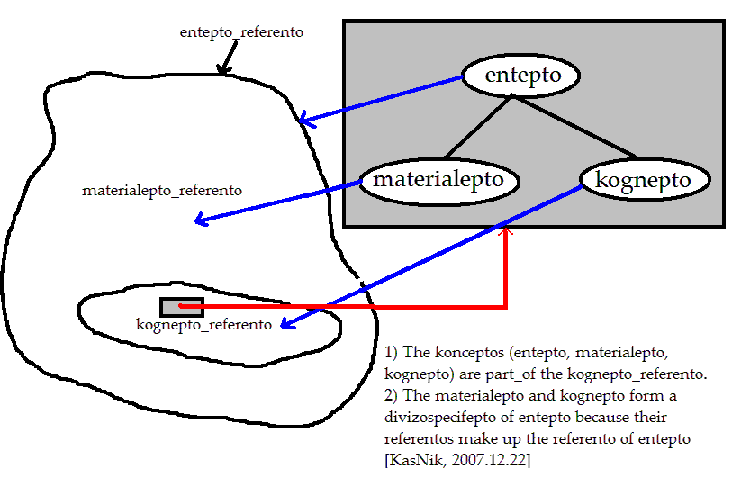
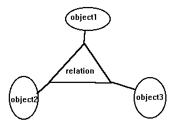
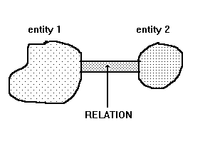
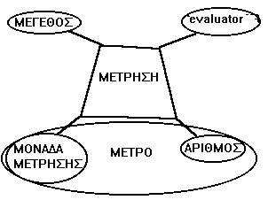

overview of Core10
description::
core10.nfo is part of core.nfo.
name::
* McsEngl.core10.nfo,
FvMcs.ENTITY: the-most-generic-concept-(lagSngo'o)
description::
· the most generic.
name::
* McsEngl.conceptCore387,
* McsEngl.ENTITY: the-most-generic-concept-(lagSngo'o),
* McsEngl.FvMcs.ENTITY: the-most-generic-concept-(lagSngo'o),
* McsEngl.entity,
* McsEngl.the-most-general@cptCore387, {2008-08-17}
* McsEngl.the-most-generic-concept@cptCore387, {2015-09-29}
* McsEngl.entity-concept@cptCore387, {2012-04-04}
* McsEngl.entity'concept@cptCore387,
* McsEngl.quality@cptCore387,
* McsEngl.ent@cptCore387, {2014-01-25}
* McsEngl.ett@cptCore387, {2013-09-12}
* McsEngl.entt@cptCore387, {2012-09-20}
====== lagoSINAGO:
* McsSngo.o,
* McsEngl.o@lagoSngo, (similar to greek "ον") {2008-08-19}
* McsEngl.entepo@lagoSngo, {2008-03-19}
* McsEngl.entepto@lagoSngo, {2006-12-11}
* McsEngl.entito@lagoSngo, {2006-10-25}
====== lagoGreek:
* McsElln.ΟΝΤΟΤΗΤΑ,
* McsElln.οντότητα,
* McsElln.ΠΟΙΟΤΗΤΑ,
* McsElln.ποιότητα,
====== lagoEsperanto:
* McsEngl.ento@cptCore387@lagoEspo,
* McsEspo.ento@cptCore387,
====== lagoChinese:
shi2ti1 (entity; substance)
shi2 (real; true; honest; really; solid)
ti1 (body; form; style; system)
In philosophy, an object is a thing, an entity, or a being. This may be taken in several senses.
[http://en.wikipedia.org/wiki/Object_%28philosophy%29]
entity'setConceptName#cptCore653#
name::
* McsEngl.entity'setConceptName,
Noun
* S: (n) entity (that which is perceived or known or inferred to have its own distinct existence (living or nonliving))
[wn 2007-12-30]
1. entity, something -- (anything having existence (living or nonliving))
[WordNet 1.6 1997]
Entity may refer to:
* Entity, a unit
* a part of an Entity-relationship model
In fiction
* "Entity" (Stargate SG-1), an episode of the television series Stargate SG-1
* The Entity, a 1981 horror film
* The Entity (Anderson), a science fiction story by Poul Anderson and John Gergen
* "The Entity" (South Park), an episode of the television series South Park
See also
* Identity
[http://en.wikipedia.org/wiki/Entity_%28disambiguation%29]
An entity is something that has a distinct, separate existence, though it need not be a material existence. In particular, abstractions and legal fictions are usually regarded as entities. In general, there is also no presumption that an entity is animate. Entities are used in system developments as models that display communications and internal processing of, say, documents compared to order processing.
An entity could be viewed as a set containing subsets. In philosophy, such sets are said to be abstract objects.
The word entity is often useful when one wants to refer to something that could be a human being, a non-human animal, a non-thinking life-form such as a plant or fungus, a lifeless object, or even a belief; for instance. In this way, entity could be seen as a "catch all"-word.
Sometimes, the word entity is used in a general sense of a being, whether or not the referent has material existence; e.g., is often referred to as an entity with no corporeal form, such as a language. Taken further, entity sometimes refers to existence or being itself. For example, the former U.S. diplomat George F. Kennan once said that "the policy of the government of the United States is to seek . . . to preserve Chinese territorial and administrative entity."
The word entitative is the adjective form of the noun entity. Something that is entitative is "considered as pure entity; abstracted from all circumstances", that is, regarded as entity alone, apart from attendant circumstances.
In law, an entity is something capable of bearing legal rights and obligations. It generally means "legal entity" or "artificial person" but also includes "natural person".
Related concepts
* Being
* Entitativity in psychology
* Individual
* Object in philosophy
* Person
* Polity
* Resource in computer science
[http://en.wikipedia.org/wiki/Entity] 2007-12-30
entity'DEFINITION
entity, relation, process: the fundamentals.
[hmnSngo.2012-02-27]
entity'definition.specific
_CREATED: {2012-01-22}
name::
* McsEngl.entity'definition.specific,
"entity" and "relation" are the 2 STARTING concepts we need to define all the others specifically.
[hmnSngo.2012-01-22]
creation
entity:
structure-of-entity: all relations with attributes.
evolution-of-entity: the structure in time.
[hmnSngo.2009-10-14]
creation: generic
The most general in Sympan-SubWorldView.
[hmnSngo.2009-03-29]
analytic
START: starting-analytic-definition.
synthetic
STOP: final-synthetic-definition [2000-09-27]
ENTITY is ?anything?. It is the most general concept.
[hmnSngo.1998-04-21_nikos]
ENTITY is ANYTHING which is PART-OF the SYMPAN (I suppose not the siban itself).
[hmnSngo.2000-07-28_nikkas]
misc
Η ΟΝΤΟΤΗΤΑ είναι μέρος του ΣΥΜΠΑΝΤΟΣ#cptCore92.a#.
[hmnSngo.1995.03_nikos]
Και κάθε 'φανταστικό' είναι μέρος του σύμπαντος γιατί είναι κατασκεύασμα μυαλού ανθρώπου.
[hmnSngo.1998-04-21_nikos]
Ολα μέσα στο σύμπαν είναι ένα ΑΝΤΙΚΕΙΜΕΝΟ.
[JAVA βήμα προς βήμα, 107]
ΟΝΤΟΤΗΤΑ ΕΙΝΑΙ Η 'ΓΕΝΙΚΗ ΕΝΝΟΙΑ' ΤΗΣ ΟΠΟΙΑΣ ΤΟ ΑΝΑΦΕΡΟΜΕΝΟ ΕΙΝΑΙ ΚΑΘΕ 'ΥΛΙΚΟ#cptCore490#' ή 'ΠΝΕΥΜΑΤΙΚΟ#cptCore492#'.
[hmnSngo.1993.11_nikos]
ΕΠΑΓΩΓΙΚΟΣ ΟΡΙΣΜΟΣ:
ΟΝΤΟΤΗΤΑ ονομάζω ΟΤΙΔΗΠΟΤΕ.
[hmnSngo.1995.01_nikos]
ΟΝΤΟΤΗΤΑ ΕΙΝΑΙ ΟΤΙΔΗΠΟΤΕ ΠΑΡΑΤΗΡΟΥΜΕ ή ΣΚΕΦΤΟΜΑΣΤΕ.
[hmnSngo.1993.09_nikos]
ΑΝΑΔΡΟΜΙΚΟΣ ΟΡΙΣΜΟΣ:
'οτιδήποτε' είναι ή ποιότητα ή χαρακτηριστικό ποιότητας.
Αλλά και κάθε 'χαρακτηριστικό ποιοτητας' είναι 'ποιότητα'.
[hmnSngo.1994.06_nikos]
Οι γλώσσες χρησιμοποιούν 'ουσιαστικά#cptCore549#' για την οντότητα και 'επίθετα#cptCore550#' για τα χαρακτηριστικά.
[hmnSngo.1994.05_nikos]
OTHER-VIEW
An entity is something that has a distinct, separate existence, though it need not be a material existence. In particular, abstractions and legal fictions are usually regarded as entities. In general, there is also no presumption that an entity is animate. Entities are used in system developments as models that display communications and internal processing of, say, documents compared to order processing.
An entity could be viewed as a set containing subsets. In philosophy, such sets are said to be abstract objects.
[http://en.wikipedia.org/wiki/Entity] 2007-09-27
"ΠΟΙΟΤΗΤΑ: ΦΙΛΟΣΟΦΙΚΗ ΚΑΤΗΓΟΡΙΑ, Η ΟΠΟΙΑ ΕΚΦΡΑΖΕΙ ΤΟΝ ΑΝΑΠΟΣΠΑΣΤΟ ΑΠΟ ΤΟ ΕΙΝΑΙ ΕΝΟΣ ΑΝΤΙΚΕΙΜΕΝΟΥ 'ΟΥΣΙΑΣΤΙΚΟ ΠΡΟΣΔΙΟΡΙΣΜΟ-ΤΟΥ', ΧΑΡΗ ΣΤΟΝ ΟΠΟΙΟ ΤΟ ΑΝΤΙΚΕΙΜΕΝΟ ΕΙΝΑΙ ΑΚΡΙΒΩΣ ΑΥΤΟ, ΚΑΙ ΟΧΙ ΚΑΠΟΙΟ ΑΛΛΟ".
[ΗΛΙΤΣΕΦ ΚΛΠ, ΦΙΛΟΣΟΦΙΚΟ ΛΕΞΙΚΟ 1985, Δ317#cptResource164#]
entity'ATTRIBUTE-RELATION#cptCore546.12#
name::
* McsEngl.entity'ATTRIBUTE-RELATION,
_ATTRIBUTE:
* attribute
* evoluting
* structure
entity'ATTRIBUTE|CHARACTERISTIC (lagSngo'os-o)
NAME
name::
* McsEngl.entity'ATTRIBUTE|CHARACTERISTIC (lagSngo'os-o),
* McsEngl.conceptCore398,
* McsEngl.conceptCore398,
* McsEngl.abt@cptCore398, {2014-09-28}
* McsEngl.attr@cptCore398, {2011-09-19}
* McsEngl.att, {2014-11-19}
* McsEngl.attribute,
* McsEngl.attribute-of-entity,
* McsEngl.attribute-value,
* McsEngl.atribo-of-entity,
* McsEngl.characteristic,
* McsEngl.chc, {2013-11-01}
* McsEngl.entity's-attribute,
* McsEngl.entity'attribute, {2012-08-06} {2012-07-14}
* McsEngl.feature,
* McsEngl.trait,
=== _OLD:
* McsEngl.abstract-concept@old,
* McsEngl.description@old@deleted, {2009-06-20}
* McsEngl.property@old@deleted, {2009-06-20}
====== lagoSINAGO:
* McsSngo.oso,
* McsEngl.oso@lagoSngo, {2014-04-18}
* McsSngo.osEo,
* McsEngl.osEo@lagoSngo, {2009-02-08}
* McsEngl.eo@lagoSngo, (ao = the first_person) {2008-08-19}
* McsEngl.ao@lagoSngo, {2008-08-19}
* McsEngl.atro@lagoSngo, {2008-06-29}
* McsEngl.atribo@lagoSngo, (atrib-eano, atrib-e, atrib-o, atrib-a) {2008-06-26}
* McsEngl.atribepo@lagoSngo, {2008-04-11}
* McsEngl.atribepto@lagoSngo, {2008-02-06}
* McsEngl.atribo@lagoSngo,
====== lagoGreek:
* McsElln.ΧΑΡΑΚΤΗΡΙΣΤΙΚΟ@cptCore398,
* McsElln.ΑΦΗΡΗΜΕΝΗ-ΕΝΝΟΙΑ,
* McsElln.ΙΔΙΟΤΗΤΑ,
* McsElln.ΚΑΤΗΓΟΡΗΜΑ,
* McsElln.ΠΡΟΣΔΙΟΡΙΣΜΟΣ,
====== lagoEsperanto:
* McsEngl.atributo@lagoEspo,
* McsEspo.atributo,
====== lagoChinese:
shu3xing4; attribute; property,
xing4; sex; nature; surname; suffix corresponding to -ness or -ity
ATRIBEPTO:
I give this name, because it is DIRECTLY related to entepto. This way I emphasize that is a koncepto.
[hmnSngo.2008,02.06_KasNik]
Intension: The potential set of all the PROPERTIES possessed by a particular CONCEPT. The union of the LOCAL INTENSION of the concept, and the intension of all the concept's SUPERCONCEPTS. The intension is an uncountable set whose existence is posited solely for the purpose of making various formal definitions.
[Tim Lethbridge's PhD Thesis 1994nov]
"ABSTRACT CONCEPTS are those which refer not to an entire object, but to any of its features in isolation from it (eg "whiteness", "injustice")"
[Getmanova, Logic 1989, 39#cptResource19#]
att'name.INDIVIDUAL
name::
* McsEngl.att'name.INDIVIDUAL,
statesman:
state's man
DEFINITION
The SAME attributes of an-entity are-organized in TWO DIFFERENT tree-structures.
1) the-whole-part-environment tree-stucture and
2) the-generic-specific tree-structure.
[hmnSngo.2016-03-26]
Characteristic-of-entity1 is IDENTIFIABLE entity2 related to entity1.
This entity2 is a generic-specific-pair.
[hmnSngo.2013-11-03]
Κάθε οντότητα έχει χαρακτηριστικα.
Δρώντας αναδραστικά στην ίδια την οντοτητα έχουμε τα άλλα χαρακτηριστικα που βλέπουμε εδώ όπως δομη, εξέλιξη κλπ.
[hmnSngo.1994.11_nikos]
There are 3 entities here:
1) the entity1 whose attribute we talk about.
2) the entity2 "attribute" which is a concept like the "entity1".
3) the "relation" of entity1 with the entity2
---
For example:
1) entity1: specific-car
2) entity2: color-red (a specific color concept)
3) color-relation of "car" with "color-red"
or
1) entity1: generic-car
2) entity2: color (concept)
3) color-relation of "car" with "color"
[hmnSngo.2013-04-04]
There are 4 entities here:
1) the entity1 whose attribute we talk about.
2) the entity2 "attribute" which is a concept like the "entity1".
3) the "relation" of entity1 with the "attribute=entity2".
4) the "value" of "attribute", ie the specific concepts of "attribute" that satisfy this relation.
---
For example:
1) entity1: car
2) attribute=entity2: color
3) attribute-part-relation: color-relation
4) attribute-value: red-color and black-color (specific colors).
---
Sentence:
The color of the car is red and black.
---
Triple Notation in some computers:
car color red&black
color car red&black
[hmnSngo.2012-01-18]
There are 2 entities here:
1) attribute-value: the concept "related" to entity.
2) attribute-relation: the concept of "relation" between the entity and the attribute-value concept.
[hmnSngo.2011-12-08]
_DefinitionWorking:
attribute-of-entity is any other entity related[=undefined] with it.
[hmnSngo.2011-07-27]
creation: naming
From the "structure-of-entity" attribute I name the entity2.
[hmnSngo.2009-10-26]
Attribute-of-entity I call the argument-complement-of-entity in the entity-attribute-relation#cptCore546.12# I defined as axiom.
[hmnSngo.2009-10-25]
Attribute I call the entity2 in the entity-attribute-relation#cptCore546.12# I defined as axiom.
[hmnSngo.2009-10-24]
att'definition.specific
name::
* McsEngl.att'definition.specific,
Attribute-of-entity1 is ENTITY2#ql:entity'definition.specific#, RELATED#ql:relation'definition.specific# with entity1.
[hmnSngo.2012-01-22]
creation: attribute-definement
name::
* McsEngl.creation: attribute-definement,
Attribute-of-enity1:
(entity2)
([refino_entity_attribute)(entity1)(entity2))
txt: attribute of entity1 is other-entity2 for which exists an attribute relation with entity1.
[hmnSngo.2009-10-23]
Attribute-of-entity1:
( [refino_entity_attribute#cptCore546.173#]
(:e1: entity#cptCore387#)
([and] ([refino_quantity] (:e2: entity2#cptCore387#)(any))
([diferent] (e1)(e2))
)
)
txt: Attribute-of-entity1 is any other entity2 related with attribute-relation with entity1.
[hmnSngo.2009-10-15]
<RELATION FrNAME="refino_entity_attribute">
<XCPT FrNAME="entity1"/>
<RELATION FrNAME="and">
<RELATION FrNAME="refino_quantity">
<XCPT FrNAME="entity2"/>
<XCPT FrNAME="any"/>
</RELATION>
<RELATION FrNAME="diferent">
<XCPT FrNAME="e1"/>
<XCPT FrNAME="e2"/>
</RELATION>
</RELATION>
</RELATION>
Attribute-of-entity:
( [refino_attribute#cptCore546.173#] ([refino_quantity] (entity#cptCore387#)(any)) )
[hmnSngo.2009-10-13]
Attribute-of-entity:
* refino_attribute#obj.:
- entity#cptCore387#
Attribute_of_entity1 is any entity2 RELATED (= relation_or_process but not process) with entity1.
Entity2 can be "object", "process" or "relation".
[hmnSngo.2009-09-01]
analytic
ATTRIBUTE OF AN ENTITY I call any ENTITY, CORELATED to this entity such as: parts, wholes, environments (generics, specifics, specific-complement, ...).
ATTRIBUTE-CORELATION#cptCore546.12# is the corelation between the entity and the attribute.
[hmnSngo.2003-02-27_nikkas]
ABSTRACT-CONCEPT I call a 'concept' that does NOT exist independently but we perceive it by abstracting from another entity, eg the color.
[hmnSngo.2000-11-15_nikkas]
ATTRIBUTE OF AN ENTITY I call any ENTITY related to this entity such as: parts, wholes, generals, specifics, specific-complements and environments.
[hmnSngo.2001-03-02_nikkas]
ΧΑΡΑΚΤΗΡΙΣΤΙΚΟ ΟΝΤΟΤΗΤΑΣ ονομάζω ΚΑΘΕ ΜΕΡΟΣ αυτής της ΟΝΤΟΤΗΤΑΣ.
[hmnSngo.1995.02_nikos]
ΧΑΡΑΚΤΗΡΙΣΤΙΚΟ-ΟΝΤΟΤΗΤΑΣ είναι 'ΟΝΤΟΤΗΤΕΣ' σχετιζομενες με την οντοτητα.
[hmnSngo.1994.11_nikos]
H έννοια του 'χαρακτηριστικού' ορίζεται σε σχέση με την έννοια της 'ποιότητας#cptCore387#'
[hmnSngo.1994.06_nikos]
"Features are the ways in which objects resemble and differ from each other...Features may be essential or inessential. A concept reflects the sum of essential features, ie, those which, taken individually, are necessary, and together are sufficient to distiguish the object in question from all others. Features may be distinguishing or non-distinguishing"
[Getmanova, Logic 1989, 35#cptResource19#]
att'ENTITY-TREE-STRUCTURE
name::
* McsEngl.att'ENTITY-TREE-STRUCTURE,
att'ENTITY-RELATION#cptCore#
name::
* McsEngl.att'ENTITY-RELATION,
* entity#cptCore387#
att'GENERIC-RELATION#cptCore546.17#
name::
* McsEngl.att'GENERIC-RELATION,
_GENERIC:
* entity#cptCore387#
* entity.attribute#cptCore387.27#
* RELATOR-OF-ENTITY#ql:relator_of_entity-546i###
att'SYMPAN-TREE-STRUCTURE
name::
* McsEngl.att'SYMPAN-TREE-STRUCTURE,
att'WHOLE-RELATION#cptCore546.24#
name::
* McsEngl.att'WHOLE-RELATION,
_WHOLE:
att'wholeNo-relation#cptCore546.15#
name::
* McsEngl.att'wholeNo-relation,
* ENTITY#cptCore387# (every "attribute" is related with an "entity")
* attribute_of_semasioConcept#cptCore567.1#
att'Notation
_CREATED: {2011-10-09}
name::
* McsEngl.att'Notation,
* McsEngl.attribute'notation,
* McsEngl.characteristic'notation,
* McsEngl.att'name-of-specific,
* McsEngl.notation.characteristic,
* McsEngl.notation, {2014-01-31}
* McsEngl.notation-of-entity-attributes,
_SPECIFIC:
* entity.attribute (familiar to ool)
* entity:specific (css, properties of objects)
* entity/part (familiar to computer paths)
[hmnSngo.2014-02-10]
===
* entity .specific
* entity'specificNo
* entity/part (computer path)
* entiy_with_many_words_name
[hmnSngo.2014-01-31]
===
* entity:specific
* entity.specificNo (familiar to ool)
[hmnSngo.2013-12-14]
===
* entity:attribute = any
- entity's attribute
- attribute@entity [2011-10-09]
- attribute_entity
- attribute of entity
- attribute-of-entity
- attribute_of_entity
- attribute_in_entity
===
* entity'attribute = non_specific attribute [2011-10-09]
===
* entity.attribute = specific attribute
- entityAttribute
_FolioViews:
* specific: govGreek, govEU, gov.Greek,
* non_specific: govsDebt, gov'Debt,
* multiword: goverment's_debt,
[hmnSngo.2012-02-26]
att'relation
_CREATED: {2012-01-18}
name::
* McsEngl.att'relation,
* McsEngl.conceptCore398.5,
* McsEngl.relation-of-attribute@cptCore398.5,
_SAME:
* relation#cptCore546#
_DESCRIPTION:
Every attribute-concept has a SPECIFIC-RELATION with the entity-concept.
The name of this relation, will be the name of the attribute-concept.
[hmnSngo.2012-01-18]
att'time
name::
* McsEngl.att'time,
att'value
_CREATED: {2012-01-18}
name::
* McsEngl.att'value,
* McsEngl.conceptCore398.6,
_DESCRIPTION:
It is the collection of specific-concepts-of-the-attribute-concept that the entity-concept can have.
[hmnSngo.2012-01-18]
att.SPECIFIC-RELATION
name::
* McsEngl.att.SPECIFIC-RELATION,
* McsEngl.att.specific,
* McsEngl.characteristic.specific,
_SPECIFIC: att.alphabetically:
* attribute.body#cptCore398.3#
* attribute.bodyNo#cptCore398.2#
* attribute.distinguishing#cptCore398.7#
* attribute.distinguishingNo
* attribute.essential
* attribute.essentialNo
* attribute.node#cptCore515.4#
* attribute.nodeNo#cptCore515.5#
* attribute.part#cptCore869#
* attribute.partNo#cptCore398.1#
* attribute.partNo.environment#cptCore932#
* attribute.partNo.generic#cptCore398.4#
* attribute.partNo.specific#cptCore768#
* attribute.partNo.whole#cptCore780#
att.SPECIFIC_DIVISION.relation:
_SPECIFIC:
* attribute.node#cptCore515.4#
* attribute.nodeNo#cptCore515.5#
[hmnSngo.2012-08-19]
ATTRIBUTE:
- internal#ql:internal'attribute@cptCore869# | external#ql:external_attribute@cptCore398.1#: ao'do, ao'to,
- whole#ql:whole-*# | environment#ql:environment-*#: ao'to'lo, ao'to'ro,
--------------------------------
- specific#ql:specific-*# | general#ql:generic-*#: ao'bo, ao'po,
[2008-08-19]
* ROOTS:
- whole, part: tuto, dudo
- whole&part: tuto-dudo
- general, specific: pupo, bubo
- general&specific: pupo-bubo
- external: dudo-udo
- environment: tuto-udo
[hmnSngo.2008-08-05_HokoYono]
_SPECIFIC:
* Εδώ καταχωρώ ΓΕΝΙΚΑ χαρακτηριστικά, για να μπορέσω να τα τοιποποιήσω.
Κάθε ένα θα έχει και την εγγραφή "συνωνυμα" με τη λέξη 'attribute' για να έχω τυχαία προσπέλαση στο οποιοδήποτε.
Αν θέλω μπορώ να έχω εδώ ΟΛΑ τα χαρακτηριστικά και να έχω συνδέσεις στα σημεία που γίνεται η παρουσίασή τους.
[hmnSngo.1994.07_nikos]
===
* DANGER
* DIFFICULTIES
* DRAWBACKS = SHORTCOMINGS = IMPEDIMENTS
* EXISTENCE : if the subject matter is a reality, not a fantasy.
* GOOD/BAD
* IMPACT TO : what changes the concept does in other concepts.
* IMPROVEMENTS
* NAME GENESIS:
* NECESSITY = IMPORTANCE
* OBSOLESCENCE.
* PERFORMANCE : measurement of its functionality.
* PROBLEMS = SHORTCOMINGS
* RISK
* STRATEGY = METHOD
* STRENGTH = ΔΥΝΑΜΗ
* ΒΑΣΙΚΟ ΣΗΜΕΙΟ
att.SPECIFIC-DIVISION.doing (change)
_CREATED: {2012-03-06}
name::
* McsEngl.att.SPECIFIC-DIVISION.doing (change),
_SPECIFIC:
* doing-of-entity#cptCore684.18#
* structure-of-entity#cptCore515E
both expressed in time.
att.SPECIFIC-DIVISION.part
_CREATED: {2013-12-22}
name::
* McsEngl.att.SPECIFIC-DIVISION.part,
* McsEngl.att.SPECIFIC-DIVISION.internal-external,
_SPECIFIC:
* part#cptCore869#
* partNo#cptCore398.1#
_SPECIFIC:
* ATRO_ESO-(PARTO)#cptCore869#
* ATRO_EZO (PARTO_CO)#cptCore398.1#:
WHOLE-ATTRIBUTE#cptCore780#
ENVIRONMENT-ATTRIBUTE#cptCore932#
[hmnSngo.2003-02-27_nikkas]
* INTERNAL-ATTRIBUTE-(PART-ATTRIBUTE)#cptCore869: attSpe#
* EXTERNAL-ATTRIBUTE-(ENVIRONMENT-ATTRIBUTE)#cptCore932: attSpe#
WHOLE--ATTRIBUTE#cptCore780: attSpe#
whole/generic/specific can be thought of as specific-environments.
Talking of a 'part' we can mean the part-concept or the part-referent, BUT talking for the generic/specific, we always are talking about concepts not referents.
[hmnSngo.2001-03-02_nikkas]
The whole-attribute is an external/environment attribute because if it was an internal, THEN the whole ought to be part.
[hmnSngo.2002-06-05_nikkas]
att.SPECIFIC-DIVISION.specific
_CREATED: {2013-11-15}
name::
* McsEngl.att.SPECIFIC-DIVISION.specific,
_SPECIFIC:
* specific#cptCore768#
* specificNo#cptCore398.8#
att.SPECIFIC-DIVISION.body#cptCore538#
name::
* McsEngl.att.SPECIFIC-DIVISION.body,
_SPECIFIC:
* attribute.body#cptCore398.3#
* attribute.bodyNo#cptCore398.2#
att.SPECIFIC-DIVISION.inheritance
name::
* McsEngl.att.SPECIFIC-DIVISION.inheritance,
_SPECIFIC:
=== InheritedFROM generic-concept:
* Generic-attribute,
* GenericNo-attribute,
=== inheritedTO specific-concept:
* Specific-attribute,
* SpecificNo-attribute,
===
* INHERITED_ATTRIBUTE (generic have it)
* INHERITING_ATTRIBUTE (specifics have it)
att.BODY
name::
* McsEngl.att.BODY,
* McsEngl.conceptCore398.3,
* McsEngl.atro-reso@cptCore398.3,
* McsEngl.atro-tano,
* McsEngl.attribute-body@cptCore398.3, {2012-08-14}
* McsEngl.body.attribute@cptCore398.3, {2012-08-14}
* McsEngl.object-attribute@cptCore398.3,
_GENERIC:
* entity.body#cptCore538#
att.BODY.NO
name::
* McsEngl.att.BODY.NO,
* McsEngl.conceptCore398.2,
* McsEngl.atro-dano,
* McsEngl.atro-dino@cptCore398i,
* McsEngl.relation-or-process-attribute@cptCore398i,
* McsEngl.non-object-attribute@cptCore398.2, {2011-09-19}
* McsEngl.objectNo-attribute@cptCore398.2, {2011-09-19}
_DEFINITION:
* ATRIBO_DINO is the atribo which is a dino#cptCore399#.
[hmnSngo.2007-09-25_KasNik]
Every attribute of an entity has an analogous (coresponding) STATE with the entity.
[hmnSngo.2002-06-05_nikkas]
_DESCRIPTION:
It is the characteristic-of-entity which is NOT 'doing' or 'relation'.
[hmnSngo.2013-11-15]
_SPECIFIC:
* atribo-deino,
* atribo-duino,
att.COMPLEMENT
_CREATED: {1998-08-14}
name::
* McsEngl.att.COMPLEMENT,
* McsEngl.conceptCore1035,
* McsEngl.complement,
* McsEngl.complement-attribute@cptCore1035, {2008-11-30}
* McsEngl.complement-entity,
* McsEngl.complement'entity@cptCore1035,
* McsEngl.complement-concept,
* McsEngl.clt,
* McsEngl.conceptCore1035,
====== lagoSINAGO:
* McsSngo.uo,
* McsEngl.uo@lagoSngo, {2010-06-21}
* McsEngl.kompletealo@lagoSngo, {2006-12-10}
* McsEngl.argumeno'kompleteino@lagoSngo,
====== lagoGreek:
* McsElln.ΣΥΜΠΛΗΡΩΜΑΤΙΚΗ-ΟΝΤΟΤΗΤΑ,
* McsElln.ΣΥΜΠΛΗΡΩΜΑΤΙΚΗ-ΕΝΝΟΙΑ,
NOTE:
kompleTealo from "complete" the whole. CompleMent is something additional.
[hmnSngo.2006-12-10_nikkas]
DEFINITION
COMPLEMENT-ENTITY is any STATAD#ql:statad-546i# of a COMPLEMENT-STATE#ql:corelation.complement#.
[hmnSngo.2002-08-07_nikkas]
COMPLEMENT-CONCEPTS are the CONCEPTS that make up a WHOLE (part-concepts) or a GENERIC (specific-concepts).
[hmnSngo.2002-07-31_nikkas]
COMPLEMENT CONCEPTS are sibling-concepts#cptCore1022.a# with 2 members. Each one is called complement of the other.
[hmnSngo.1998-08-14_nikos]
chcCmt'GENERIC
_GENERIC:
* entity.attribute#cptCore398#
* DEALO#cptCore546.84#
chcCmt'KOMPLETEINO#cptCore546.19#
name::
* McsEngl.chcCmt'KOMPLETEINO,
chcCmt'KOMPLETUANO#cptCore475.322#
name::
* McsEngl.chcCmt'KOMPLETUANO,
SPECIFIC
* KOMPLETEOLO,
* KOMPLETEELO,
chcCmt.DICHOTOMOUS-COMPLEMENT
name::
* McsEngl.chcCmt.DICHOTOMOUS-COMPLEMENT,
* McsEngl.conceptCore1035.3,
* McsEngl.kompletealo'dihotomealo@cptCore1035.3,
- co:
is the sufikso I use for the dihotomeelo.
[hmnSngo.2006-12-05_nikkas]
chcCmt.PARTIAL-COMPLEMENT
name::
* McsEngl.chcCmt.PARTIAL-COMPLEMENT,
* McsEngl.conceptCore1035.2,
* McsEngl.partial-complement@cptCore1035.2,
* McsEngl.complement.partial@cptCore1035.2,
=== _NOTES: We could use a sufix (eg ?) to name the partial-complement. The sufix is prefered to prefix because in an alphabetized-list of words these related-concepts would placed near by.
[hknu@cptCore2002-07-31_nikkas]
====== lagoSINAGO:
* McsEngl.uoDo@lagoSngo,
* McsEngl.kompletealo'parto@lagoSngo,
=== _NOTES: RULE: the name of two partial-complements differ with adero:
[hknu@cptCore2008-06-29_HokoYono]
_DEFINITION:
* PARTIAL-COMPLEMENT OF ENTITY-A (concept or not) is another entity or entities which together with entity-A make up a whole entity.
[hmnSngo.2002-12-26_nikkas]
* IF its union makes a whole.
[hmnSngo.2002-06-05_nikkas]
* PARTIAL-COMPLEMENT OF CONCEPT-A is a concept or concepts which together with concept-a make up a whole-concept.
_WHOLE:
* DIVIZOPARTEPTO#cptCore348.44#
chcCmt.SPECIFIC-COMPLEMENT
name::
* McsEngl.chcCmt.SPECIFIC-COMPLEMENT,
* McsEngl.conceptCore1035.1,
* McsEngl.specific-complement@cptCore1035.1,
* McsEngl.specific-complement-attribute@cptCore1035.1,
* McsEngl.complement.specific@cptCore1035.1,
=== _NOTES: _Expression: We could use a sufix (eg non) to name the specific-complement. The sufix is prefered to prefix because in an alphabetized-list of words these related-concepts would placed near by.
[hmnSngo.2002-07-31_nikkas]
- emoc-ufino ==> emocono-ufino. 2006-12-01
- brain-ufino ==> braino-ufino. {2006-12-01}
====== lagoSINAGO:
* McsSngo.uoJo,
* McsEngl.uoJo@lagoSngo, {2010-06-21}
* McsEngl.kompletealo'specifepto-1035.1@lagoSngo,
=== _NOTES: RULE: the name of two specific-complements differ in two voiced/voiceless consonants or opposite-vowels: eso/ezo, tuto/tudo, deano/duano.
[hmnSngo.2008-06-29_HokoYono]
_DEFINITION:
* IF its union makes a generic.
[hmnSngo.2002-06-05_nikkas]
===
* KOMPETEINO_SPECIFEFINO OF CONCEPT-A is a concept or concepts which together with concept-a make up a generic-concept.
_DESCRIPTION:
Creating a-concept, AUTOMATICALLY we create and its specific-complement.
[hmnSngo.2016-06-19]
_EXAMPLE:
_SPECIFIC_COMPLEMENT.relation_or_doing.relation:
* doing#cptCore475#
===
_SPECIFIC_COMPLEMENT.entity.relation:
* body-or-doing##
att.DISTINGUISHING
_CREATED: {2012-12-15}
name::
* McsEngl.att.DISTINGUISHING,
* McsEngl.conceptCore398.7,
* McsEngl.distinguishing-attribute@cptCore398.7, {2012-12-15}
* McsEngl.identifying-characteristic@cptCore398.7, {2012-12-15}
* McsEngl.trait@cptCore398.7, {2012-12-15}
_DESCRIPTION:
trait (plural traits)
* an identifying characteristic, habit or trend [quotations ?]
* (computing, programming) In object-oriented programming, an uninstantiable collection of methods that provides functionality to a class by using the class’s own interface.
[http://en.wiktionary.org/wiki/trait]
att.DISTINGUISHING.NO
_CREATED: {2014-02-14}
name::
* McsEngl.att.DISTINGUISHING.NO,
att.DOING-of-entity#cptCore684.18#
name::
* McsEngl.att.DOING-of-entity,
att.structure-of-entity#cptCore515#
name::
* McsEngl.att.structure-of-entity,
att.ESSENSIAL
name::
* McsEngl.att.ESSENSIAL,
att.ESSENSIAL.ΝΟ
name::
* McsEngl.att.ESSENSIAL.ΝΟ,
att.GENERIC-CONCEPT
_CREATED: {2014-03-04}
name::
* McsEngl.att.GENERIC-CONCEPT,
* McsEngl.generic-concept-of-entity,
_DESCRIPTION:
Generic-attribute of the attributes of an entity is an attribute which is a generic-concept.
This implies that the entity is generic and putting instances on this generic-attribute we create specific or instances of the entity.
[hmnSngo.2014-03-04]
===
A generic-attribute-of-a-concept is an attribute of a generic-concept that appears in all specifics of the generic-concept.
[hknu2009-07-05]
att.GENERIC-OF-ENTITY
_CREATED: {2009-07-06}
name::
* McsEngl.att.GENERIC-OF-ENTITY,
* McsEngl.conceptCore398.4,
* McsEngl.generic-attribute-of-entity, {2014-03-04}
* McsEngl.general-attribute@cptCore398.4,
* McsEngl.generic-attribute@cptCore398.4,
_DEFINITION:
A generic-attribute of conceptX is a generic-concept of conceptX.
[hmnSngo.2011-09-19]
att.INHERITED-FROM
_CREATED: {2009-06-03}
name::
* McsEngl.att.INHERITED-FROM,
* McsEngl.inherited-from,
* McsEngl.inheritedfrom,
* McsEngl.attribute.generic,
* McsEngl.attribute.inherited,
* McsEngl.generic-attribute-of-concept, {2017-09-30}
* McsEngl.specific-attribute@cptCore398i, {2009-07-06}
* McsEngl.inherited-attribute,
_DESCRIPTION:
It is the attribute-of-cptS that is attribute and of the cptG which is generic to cptS.
CptG "inherites" attributes to cptS.
CptG is the "inheritor" of the inherited-attribute of cptS.
[hmnSngo.2009-06-03]
_SPECIFIC:
* McsEngl.inherited_to,
* McsEngl.inherited_toN,
att.INHERITED-FROM.NO
name::
* McsEngl.att.INHERITED-FROM.NO,
* McsEngl.inherited-fromNo,
* McsEngl.inheritedfromNo,
* McsEngl.attribute.genericNo,
* McsEngl.attribute.instance,
* McsEngl.instance-attribute-of-concept, {2017-09-30}
* McsEngl.non-inherited-attribute-of-entity,
* McsEngl.own-attribute-of-entity,
_DESCRIPTION:
Instance-attribute-of-concept is an-attribute not inherited from a-generic.
[hmnSngo.2017-09-30]
att.INHERITING-TO
_CREATED: {2017-09-29}
name::
* McsEngl.att.INHERITING-TO,
* McsEngl.inheriting-to,
* McsEngl.inheritingto,
* McsEngl.attribute.specific,
* McsEngl.inheriting-attribute,
* McsEngl.inheriting-to-specific-attribute,
* McsEngl.specific-attribute-of-concept, {2017-09-30}
_DESCRIPTION:
Specific-attribute of concept[1] is an-attribute of concept[1] inherited TO a-specific of it[1].
[hmnSngo.2017-09-30]
===
Inheriting-to-specific is an-attribute of a-concept-x that is an-attribute and in the-specific-concepts of concept-x.
[hmnSngo.2017-09-29]
_SPECIFIC:
* sg-specificGeneric,
* sgN-specificGenericNo,
att.INHERITING-TO.NO
_CREATED: {2017-09-30}
name::
* McsEngl.att.INHERITING-TO.NO,
* McsEngl.inheritingtoNo,
* McsEngl.inheriting-toNo,
* McsEngl.attribute.specificNo,
* McsEngl.inheritingNo-attribute,
* McsEngl.inheritingNo-to-specific-attribute,
* McsEngl.specificNo-attribute-of-concept, {2017-09-30}
_DESCRIPTION:
SpecificNo-attribute of concept[1] is an-attribute of concept[1] NOT inherited TO a-specific of it[1].
[hmnSngo.2017-09-30]
_SPECIFIC:
* sNg-specificNoGeneric,
* sNgN-specificNoGenericNo,
att.PART-OF-ENTITY (internal)
name::
* McsEngl.att.PART-OF-ENTITY (internal),
* McsEngl.conceptCore869,
* McsEngl.attributal@cptCore869, {2012-11-04}
* McsEngl.attributeInternal@cptCore869, {2011-09-19}
* McsEngl.attributePart@cptCore869, {2011-09-19}
* McsEngl.containee,
* McsEngl.part-attribute-of-entity@cptCore869, {2008-10-05}
* McsEngl.attribute.internal@cptCore869,
* McsEngl.element, {2003-02-16}
* McsEngl.entity.attribute.part@cptCore869,
* McsEngl.internal'attribute@cptCore869,
* McsEngl.part-attribute@cptCore869,
* McsEngl.part-of-entity,
* McsEngl.attPar@cptCore869, {2012-04-29}
====== lagoSINAGO:
* McsEngl.olosParto@lagoSngo, {2014-04-18}
* McsEngl.osoParto@lagoSngo, {2014-04-18}
* McsEngl.eoDo@lagoSngo, {2008-10-05}
* McsEngl.osDo@lagoSngo,
* McsEngl.ao'do@lagoSngo, {2008-08-19}
* McsEngl.atro-eso@lagoSngo, {2008-06-29}
* McsEngl.parto@lagoSngo, {2006-11-23}
* McsEngl.atribo'parto@lagoSngo,
* McsEngl.atribo'interno@lagoSngo,
====== lagoGreek:
* McsElln.μερικό,
* McsElln.ΜΕΡΟΣ@cptCore869,
====== lagoEsperanto:
* McsEngl.parto@lagoEspo,
* McsEspo.parto,
====== lagoChinese:
bu4fen4; part (of a whole); piece; section; share; shell (Unix)
bu4; ministry; department; section; part; division; troops; board; (a measure word); (a measure word for works of literature, films, machines, etc.)
fen4; (a measure word for gifts, copies of a newspaper); copy (of newspaper, magazine, etc.); share; portion; part; (a measure word)
DEFINITION
An intrinsic property is a property that an object or a thing has of itself, independently of other things, including its context.
An extrinsic property is a property that depends on a thing's relationship with other things.
For example, mass is a physical intrinsic property of any physical object, whereas weight is an extrinsic property that varies depending on the strength of the gravitational field in which the respective object is placed.
[http://en.wikipedia.org/wiki/Intrinsic_and_extrinsic_properties_%28philosophy%29]
Intrinsic describes a characteristic or property of some thing or action which is essential and specific to that thing or action, and which is wholly independent of any other object, action or consequence. A characteristic which is not essential or inherent is extrinsic.
For example in biology, intrinsic effects originate from "inside" an organism or cell, such as an autoimmune disease.
[http://en.wikipedia.org/wiki/Intrinsic_and_extrinsic_properties]
PART OF AN ENTITY is the ENTITY'S-ATTRIBUTE that 'is comprised' by the entity.
Also we call the entity, 'the whole of the attribute'.
[hmnSngo.2001-03-02_nikkas]
1. (733) part, portion, component part, component -- (something determined in relation to something that includes it; "he wanted to feel a part of something bigger than himself"; "I read a portion o f the manuscript"; "the smaller component is hard to reach")
[WordNet 1.7.1]
Μερος ονομαζω κάθε ΟΝΤΟΤΗΤΑ που ΔΕΝ είναι ΟΛΟΤΗΤΑ.
[hmnSngo.1995.02_nikos]
το αντίθετο του ΟΛΟΥ
[hmnSngo.1995.01_nikos]
ΚΑΘΕ ΟΛΟΤΗΤΑ μπορεί να χωριστει με πολλούς τροπους, ανάλογα ως προς πιο χαρακτηριστικο θα διαλέξουμε. Ετσι για ΜΙΑ ολοτητα μπορεί να έχουμε πολλές ΔΙΑΙΡΕΙΣ/DIVISIONS.
[hmnSngo.1995.01_nikos]
ΕΣΩΤΕΡΙΚΑ ΧΑΡΑΚΤΗΡΙΣΤΙΚΑ ΟΛΟΤΗΤΑΣ ονομάζω τα 'ΧΑΡΑΚΤΗΡΙΣΤΙΚΑ' που σχετιζονται μόνο με αυτή την ΟΛΟΤΗΤΑ.
[hmnSngo.1994.11_nikos]
chcPrt'GENERIC
_GENERIC:
* entity.attribute#cptCore398#
chcPrt'WHOLE
_WHOLE:
* sympan'entity#cptCore387#
SPECIFIC
name::
* McsEngl.part.specific,
MEMBERS we usally call the parts of a group.
ELEMENTS usally we call the parts of a set.
[hmnSngo.2003-08-20_nikkas]
chcPrt.PROPERTY
name::
* McsEngl.chcPrt.PROPERTY,
* McsEngl.conceptCore869.1,
* McsEngl.entity.attribute.part.property@cptCore869.1, {2012-07-13}
* McsEngl.property'attribute@cptCore869.1,
* McsEngl.property@cptCore869.1,
* McsEngl.prpt,
* McsEngl.ppy, {2013-10-01}
* McsEngl.prpt, {2013-09-08}
====== lagoSINAGO:
* McsEngl.properto@lagoSngo,
====== lagoGreek:
* McsElln.ΙΔΙΟΤΗΤΑ@cptCore869.1,
_DEFINITION:
An inseparable part.
[hmnSngo.2001-09-29_nikkas]
_SPECIFIC:
* measure #cptCore88#
* trait:
a distinguishing feature or characteristic esp. of a person.
"The Concise Oxford Dictionary,"
att.PART.NO (ENVIRONMENT | external)
_CREATED: {2003-02-27}
name::
* McsEngl.att.PART.NO (ENVIRONMENT | external),
* McsEngl.conceptCore398.1,
* McsEngl.entity.attribute.partNo@cptCore398.1, {2012-08-09}
* McsEngl.environment-attribute,
* McsEngl.external-attribute,
* McsEngl.attributeExternal,
* McsEngl.partNo-attribute,
====== lagoSINAGO:
* McsSngo.osoLoUo,
* McsEngl.osoLoUo@lagoSngo, {2014-04-18}
* McsEngl.osoRo@lagoSngo@lagoSngo, {2014-04-18}
* McsEngl.LoUo@lagoSngo@lagoSngo, {2014-04-18}
* McsEngl.Ro@lagoSngo@lagoSngo, {2014-04-18}
* McsEngl.ao'to@lagoSngo, {2008-08-19}
* McsEngl.atro-ezo@lagoSngo, {2008-06-29}
* McsEngl.autatribo@lagoSngo,
* McsEngl.atribo'auterno@lagoSngo,
* McsEngl.partoco@lagoSngo,
_DEFINITION:
* EXTERNAL-ATTRIBUTE is any attribute which is NOT internal.
[hmnSngo.2003-02-27_nikkas]
_SPECIFIC:
* Whole (ATRO_TUTO#cptCore780#
* Environment ATRO_TUDO#cptCore932#
===
* GENERIC-ATTRIBUTE-OF-ENTITY#cptCore50.29.10#
* SPECIFIC-ATTRIBUTE-OF-ENTITY#cptCore768#
att.PartNo.WHOLE.NO-ENTITY
name::
* McsEngl.att.PartNo.WHOLE.NO-ENTITY,
* McsEngl.conceptCore932,
* McsEngl.entity.attribute.partNo.wholeNo@cptCore932, {2012-08-12}
* McsEngl.environment,
* McsEngl.envt,
* McsEngl.att.environment,
* McsEngl.environment-entity,
* McsEngl.environment-attribute,
* McsEngl.environmental-entity,
* McsEngl.whole-external-attributes,
* McsEngl.attribute.external,
* McsEngl.external-attribute,
====== lagoSINAGO:
* McsEngl.ao'to'ro@lagoSngo, {2008-08-19}
* McsEngl.atro-tudo@lagoSngo, {2008-06-29}
* McsEngl.atribo'envio@lagoSngo,
* McsEngl.envio@lagoSngo,
====== lagoGreek:
* McsElln.ΠΕΡΙΒΑΛΛΟΝΤΙΚΟ-ΧΑΡΑΚΤΗΡΙΣΤΙΚΟ,
* McsElln.ΠΕΡΙΒΑΛΛΟΝ-ΟΝΤΟΤΗΤΑΣ,
* McsElln.ΠΕΡΙΒΑΛΛΟΝ@cptCore932,
* McsElln.ΕΞΩΤΕΡΙΚΑ-ΧΑΡΑΚΤΗΡΙΣΤΙΚΑ-ΟΛΟΤΗΤΑΣ,
* McsElln.ΠΕΡΙΒΑΛΛΟΝ-ΟΛΟΤΗΤΑΣ,
====== lagoEsperanto:
* McsEngl.medio@lagoEspo,
* McsEspo.medio,
* McsEngl.cxirkauxajxo@lagoEspo,
* McsEspo.cxirkauxajxo,
DEFINITION
DefinitionSympantree:
Environment-of-entity is the-sympan minus the-whole-of-the-entity.
[hmnSngo.2016-03-27]
_DefinitionWorking:
Environment is the "attribute-of-entity" that can NOT be categorized in any other type of attibute. The "entity" of the "entity's attribute" is called also "attribute".
[hmnSngo.2011-10-11]
ENVIO is an ATRIBO-EXTERNAL whish is NOT a 'whole' of entito.
[hmnSngo.2006-11-23_nikkas]
ΠΕΡΙΒΑΛΛΟΝ ΟΛΟΤΗΤΑΣ ονομάζω τα ΑΝΤΙΚΕΙΜΕΝΑ με τα οποία η ολότητα έρχεται σε σχέσεις. Οι σχέσεις αυτές είναι ΜΕΡΟΣ και της ολότητας και των αντικειμένων του περιβάλλοντός της.
[hmnSngo.1996.01_nikos]

#img.ep-4-whole'part.bmp#
ΠΕΡΙΒΑΛΛΟΝ ΟΛΟΤΗΤΑΣ ονομάζω το ΣΥΝΟΛΟ 'χαρακτηριστικων' της ολότητας που είναι ΣΧΕΣΕΙΣ της ολότητας με άλλες οντότητες.
[hmnSngo.1995.04_nikos]
ΕΞΩΤΕΡΙΚΑ ΧΑΡΑΚΤΗΡΙΣΤΙΚΑ ΟΛΟΤΗΤΑΣ ονομάζω 'ΧΑΡΑΚΤΗΡΙΣΤΙΚΑ' της ολότητας που συσχετίζονται και με άλλες ολότητες. Αρα είναι 'ΣΧΕΣΕΙΣ' με άλλες ολότητες.
[hmnSngo.1994.11_nikos]
ΟΝΤΟΤΗΤΑ ΠΕΡΙΒΑΛΛΟΝΤΟΣ ονομάζω την ΟΝΤΟΤΗΤΑ με την οποία έρχεται σε σχέση κάποιο ΠΕΡΙΒΑΛΛΟΝ-ΟΛΟΤΗΤΑΣ.
[hmnSngo.1995.04_nikos]
ΑΝΤΙΚΕΙΜΕΝΑ-ΠΕΡΙΒΑΛΛΟΝΤΟΣ ονομάζω τις άλλες ΟΛΟΤΗΤΕΣ με τις οποιες συσχετίζεται η ολότητα.
[hmnSngo.1994.11_nikos]
chcEnt'GENERIC
_GENERIC:
* internalNo-attribute#cptCore398.1#
* entity.attribute#cptCore398#
chcEnt'WHOLE
_WHOLE:
Οι οντότητες του περιβάλλοντος ΔΕΝ είναι μέρος της ΟΛΟΤΗΤΑΣ του περιβάλλοντος.
[hmnSngo.1995.04_nikos]
chcEnt.SPECIFIC#cptCore546.23#
name::
* McsEngl.chcEnt.SPECIFIC,
_SPECIFIC:
* GENERIC-ATTRIBUTE#cptCore50.29.10: attSpe#
* SPECIFIC-ATTRIBUTE#cptCore768: attSpe#
* SPECIFIC-COMPLEMENT-ATTRIBUTE#cptCore1035.1: attSpe#
* SIBLING-ATTRIBUTE#cptCore1022.1: attSpe#
att.PartNo.WHOLE-OF-ENTITY
name::
* McsEngl.att.PartNo.WHOLE-OF-ENTITY,
* McsEngl.conceptCore780,
* McsEngl.entity.attribute.partNo.whole@cptCore780, {2012-08-12}
* McsEngl.whole-of-entity,
* McsEngl.att.whole,
* McsEngl.attributeWhole@cptCore780, {2011-09-19}
* McsEngl.attrWhole@cptCore780, {2011-09-19}
* McsEngl.whole-attribute@cptCore780, {2008-09-16}
* McsEngl.aggregation,
* McsEngl.organization, {2003-08-20}
* McsEngl.union,
* McsEngl.whole-attribute@cptCore780,
* McsEngl.collection,
* McsEngl.structured-information-whole,
* McsEngl.concept-ENTITY,
* McsEngl.partNo.whole-attribute, {1997-09-28}
* McsEngl.whole-of-structured'information@cptCore780,
====== lagoSINAGO:
* McsEngl.eo'to'lo@lagoSngo, {2008-08-19}
* McsEngl.atro-tuto@lagoSngo, {2008-06-29}
* McsEngl.tuto@lagoSngo, (tut-eano, tut-e, tut-o, tuta) {2008-06-26}
* McsEngl.tutepto@lagoSngo, {2007-12-16}
* McsEngl.tuto@lagoSngo,
====== lagoGreek:
* McsElln.ΟΛΟ; ΟΛΟΥ,
* McsElln.ΟΛΟΤΗΤΑ@cptCore780-Η,
* McsElln.ΔΟΜΗΜΕΝΗΣ-ΠΛΗΡΟΦΟΡΙΑΣ-ΟΛΟΤΗΤΑ,
* McsElln.ΟΛΟΤΗΤΑ'ΔΟΜΗΜΕΝΗΣ'ΠΛΗΡΟΦΟΡΙΑΣ@cptCore780,
====== lagoEsperanto:
* McsEngl.tuto@lagoEspo,
* McsEspo.tuto,
Creating a group or a system we say that ORGANIZE an entity.
[2003-08-20]
DEFINITION
analytic
τελικος ορισμος ανάλυσης
TUTEPTO is an ENTEPTO that has parts#cptCore869#. Of course it can have other atribos.
[hmnSngo.2007-12-16_KasNik]
WHOLE is an ENTITY comprised with other entities (elements|members|parts).
[hmnSngo.2002-12-22_nikkas]
WHOLE|GROUP is an ENTITY comprised of other-entities and RELATIONS among them.
[hmnSngo.2002-07-23_nikkas]
WHOLE OF AN ENTITY is its ATTRIBUTE that 'comprises' the entity (the entity is part of this 'attribute').
[hmnSngo.2001-03-02_nikkas]
Ολοτητα ονομάζω την ΟΝΤΟΤΗΤΑ που ΔΕΝ είναι ΜΕΡΟΣ.
[hmnSngo.1995.02_nikos]
ΑΝΤΙΘΕΤΙΚΟΣ ΟΡΙΣΜΟΣ
Η ΟΛΟΤΗΤΑ ορίζεται σαν αντίθετο του ΜΕΡΟΥΣ.
[hmnSngo.1995.01_nikos]
ΟΛΟΤΗΤΑ ΕΙΝΑΙ Η ΕΝΝΟΙΑ ΠΟΥ ΑΝΤΑΝΑΚΛΑ ΤΟ ΑΝΑΦΕΡΟΜΕΝΟ-ΤΗΣ ΟΛΟΚΛΗΡΟ ΚΑΙ ΟΧΙ ΕΝΑ ΚΟΜΜΑΤΙ ΑΠΟ ΑΥΤΟ.
[hmnSngo.1993.11_nikos]
ΕΤΣΙ, ΟΙ ΑΚΕΡΑΙΟΙ ΑΡΙΘΜΟΙ ΣΤΑ ΜΑΘΗΜΑΤΙΚΑ ΕΚΦΡΑΖΟΥΝ ΠΟΣΟΤΗΤΕΣ ΟΛΟΤΗΤΩΝ.
synthetic
αρχικος ορισμος σύνθεσης.
WHOLE is an ORGANIZATION#cptCore765# or a GROUP#cptCore545#.
[hmnSngo.2002-12-24_nikkas]
WHOLE I call any 'system' or 'set'.
[hmnSngo.1998-04-26_nikos]
chcWhl'GENERIC
_GENERIC:
* entity.attribute#cptCore398#
* PARTO_CO#cptCore398.1#
ΣΧΕΣΗ ΟΝΤΟΤΗΤΑΣ ονομάζω κάθε εξωτερικη σχεση της-υπο εξεταση έννοιας με άλλη, της οποίας είναι χαρακτηριστικό.
Η ΟΝΤΟΤΗΤΑ-ΕΝΝΟΙΑΣ θεωρείται αντικείμενο εξωτερικό σε σχέση με την υπο εξέταση έννοια
[hmnSngo.1994.11_nikos]
chcWhl'WHOLE
_WHOLE:
* concept.brain.sensorial#cptCore50.28#
chcWhl'OTHER-VIEW#cptCore505#
name::
* McsEngl.chcWhl'OTHER-VIEW,
ΥΛΙΣΤΕΣ#cptCore608#
name::
* McsElln.ΥΛΙΣΤΕΣ,
ΟΙ ΥΛΙΣΤΙΚΕΣ ΘΕΩΡΙΕΣ (Φ. ΜΠΕΙΚΟΝ, ΧΟΜΠΣ, ΛΟΚ, ΓΑΛΛΟΙ ΥΛΙΣΤΕΣ ΤΟΥ 18ου ΑΙΩΝ.), ΟΙ ΟΠΟΙΕΣ ΕΝΑΡΜΟΝΙΖΟΝΤΑΙ ΜΕ ΤΗΝ ΕΠΙΣΤΗΜΗ, ΣΥΝΔΕΟΝΤΑΝ, ΚΑΤΑ ΚΑΝΟΝΑ, ΜΕ ΜΙΑ ΜΗΧΑΝΙΣΤΙΚΗ ΑΘΡΟΙΣΤΙΚΗ ΚΑΤΑΝΟΗΣΗ ΤΟΥ ΟΛΟΥ, ΠΑΡΜΕΝΗ ΑΠΟ ΤΗΝ ΜΗΧΑΝΙΚΗ (ΚΑΙ ΑΡΓΟΤΕΡΑ ΑΠΟ ΤΗΝ ΚΛΑΣΙΚΗ ΦΥΣΙΚΗ).
[ΗΛΙΤΣΕΦ ΚΛΠ, ΦΙΛΟΣΟΦΙΚΟ ΛΕΞΙΚΟ 1985, Γ359#cptResource164#]
chcWhl'wholeNo-relation#cptCore546.15#
name::
* McsEngl.chcWhl'wholeNo-relation,
WHOLE-ATTRIBUTE--AND--WHOLE-ENTITY
_CREATED: {2008-06-30}
name::
* McsEngl.WHOLE-ATTRIBUTE--AND--WHOLE-ENTITY,
* McsEngl.TUTO-AND-ATROtUTO,
* McsEngl.whole-entity--and--whole-attribute@cptCore780i,
_DESCRIPTION:
Atro_tuto is an atro OF AN ENTEPO. Speaking of atro_tuto you connote AND one other entepo part of it.
Speaking of tuto you connote only one entepo that has parts.
[hmnSngo.2008-06-30_HokoYono]
WHOLE-AND-GENERIC
name::
* McsEngl.conceptCore509.2,
* McsEngl.tutepto-and-generepto@cptCore509.2, {2008-01-03}
* McsEngl.generepto-and-tutepto@cptCore509.2,
===
* McsEngl.whole'and'generic@cptCore509.2,
* McsEngl.generic'and'whole@cptCore509.2,
_DESCRIPTION:
* The referento of a TUTEPTO is one entity compised always from other enteptos which are the PARST of the tutepto.
The referento of a GENEREPTO are many entities that all have the attributes of the generepto and they are NOT the parts of the generepto.
[hmnSngo.2008-01-03_KasNik]
* a tuto (concept) could be a jenerepto (many referents) or an idivivuepto (one referent)
a generepto has always many referents, because has at least 2 spesifeptos, then at least 2 referents.
[hmnSngo.2007-09-22_KasNik]
* The reality is organized with wholes, not generic.
[hmnSngo.2003-10-28_nikkas]
* The referent of whole could be ONE entity. The referent of generic ALWAYS is more than one entity.
[hmnSngo.2003-10-28_nikkas]
WHOLE-AND-OBJECT#cptCore538#
name::
* McsEngl.conceptCore509.1,
* McsEngl.body-and-whole@cptCore509.1, {2012-06-08}
* McsEngl.whole-and-body@cptCore509.1, {2012-06-08}
* McsEngl.whole'and'object@cptCore509.1,
* McsEngl.object'and'whole@cptCore509.1,
_DEFINITION:
* We can have a whole of corelations.
[hmnSngo.2003-05-05_nikkas]
* A whole always has parts, and object not.
[hmnSngo.2002-12-22_nikkas]
chcWhl.SPECIFIC#cptCore546.23#
name::
* McsEngl.chcWhl.SPECIFIC,
chcWhl.SPECIFIC-DIVISION.CONNECTIONS
_CREATED: {2003-08-20}
name::
* McsEngl.chcWhl.SPECIFIC-DIVISION.CONNECTIONS,
* STRUCTURE#cptCore515#
chcWhl.SPECIFIC-DIVISION.PART-RELATIONS
name::
* McsEngl.chcWhl.SPECIFIC-DIVISION.PART-RELATIONS,
The whole that its elements have no relations among them we call set, otherwise system.
[hmnSngo.2001-03-02_nikkas]
ΣΥΝΟΛΟ-#cptCore545.4: attSpe#
ΣΥΣΤΗΜΑ-#cptCore348: attSpe#
att.SPECIFIC
name::
* McsEngl.att.SPECIFIC,
* McsEngl.conceptCore768,
* McsEngl.attribute.specific,
* McsEngl.specific@cptCore768,
* McsEngl.specific-of-entity@cptCore768, {2009-12-10}
* McsEngl.specific-attribute-of-entity@cptCore768, {2009-12-10}
* McsEngl.specific-attribute@cptCore768,
* McsEngl.form,
* McsEngl.kind,
* McsEngl.subconcept,
* McsEngl.subgeneral-concept,
* McsEngl.specific,
* McsEngl.specific-concept-of-concept,
* McsEngl.subgeneral,
* McsEngl.subspecific,
* McsEngl.type,
* McsEngl.spc, {2014-04-03}
====== lagoSINAGO:
* McsEngl.ao'bo@lagoSngo, {2008-08-19}
* McsEngl.atro-spo@lagoSngo, (atro_sp-eano, atro_sp-e) {2008-06-29}
* McsEngl.specifo@lagoSngo, {2008-06-26}
* McsEngl.specifepto@lagoSngo, {2007-11-10}
* McsEngl.spesifepto@lagoSngo, {2006-12-08}
* McsEngl.specifepto@lagoSngo, {2006-12-01}
* McsEngl.specifo@lagoSngo, {2006-11-28}
* McsEngl.specifiko@lagoSngo, {2006-10-25}
====== lagoGreek:
* McsElln.ΕΙΔΟΣ,
* McsElln.ειδικό,
====== lagoEsperanto:
* McsEngl.specifa@lagoEspo,
* McsEngl.specifa@lagoEspo,
* McsEspo.specifa,
* McsEngl.specifika@lagoEspo,
* McsEngl.specifika@lagoEspo,
* McsEspo.specifika,
particular:
wordnet set it as synonym of specific and part.
===
* ΜΕΡΙΚΗ_ΕΝΝΟΙΑ,
* ΜΕΡΙΚΟ,
* Υπάρχει σε πολλούς ταύτιση μερικού|ειδικού.
The word 'SUBgeneral' is a hoax because points out to 'SUPERgeneral' and super-sub denote a system-hierarchy which is very diferent from the 'general-specific hierarchy'.
[hmnSngo.2001-02-02_nikkas]
chcSpc'EXPRESSION:
English:
1) a new name:
2) adjective and noun: a good man.
3) of: the car of John.
4) 's: John's car.
KOMON:
1) generic-attribute: man-good. 2004-09-12
= a man with the good attribute.
DEFINITION
SPECIFIC-ATTRIBUTE-OF-ENTITY is entity2 that has
a) the attributes of entity
b) at least an attribute that the entity does not have, and
c) its referent is a subset of the referent of entity.
[hmnSngo.2009-12-10]
SPESIFEPTO-CONCEPT of a concept G is a concept S that has
a) the attributes of G and
b) its referent is a subset of the referent of G.
[hmnSngo.2001-01-12_nikkas]
ΜΕΡΙΚΗ ΕΝΝΟΙΑ ΔΟΜΗΜΕΝΗΣ-ΕΝΝΟΙΑΣ ονομάζω κάθε έννοια που
- τα αναφερόμενά της ΠΕΡΙΕΧΟΝΤΑΙ στα αναφερομενα της έννοιας
- ΚΑΙ έχουν καποιο κοινο χαρακτηριστικο.
Ειναι το διαλεκτικα-αντίθετο της ΓΕΝΙΚΗΣ ΕΝΝΟΙΑΣ.
Τα χαρακτηριστικά της γενικής έννοιας είναι χαρακτηριστικά και της μερικής έννοιας.
[hmnSngo.1994.09_nikos]
chcSpc'GENERIC
_GENERIC:
* PARTO_CO#cptCore398.1#
* concept.brain.sensorial#cptCore50.28#
* set#cptCore545.4#
ΚΑΘΕ "εννοιας ΜΕΡΙΚΗ ΕΝΝΟΙΑ" έχει σα ΓΕΝΙΚΗ ΕΝΝΟΙΑ την "εννοια"
DIVISION-OF-SPESIFEPTOS#cptCore348.43#:
Every specific-concepts belongs in a specific-division.
[hmnSngo.2002-06-05_nikkas]
chcSpc'EVOLUTION#cptCore546.171#
name::
* McsEngl.chcSpc'EVOLUTION,
chcSpc'CREATING#cptCore475.130#
name::
* McsEngl.chcSpc'CREATING,
LIMITATION#cptCore540: attPar#
chcSpc'wholeNo-relation#cptCore546.15#
name::
* McsEngl.chcSpc'wholeNo-relation,
_ENVIRONMENT:
* specific-concept##
* specific-entity
* GENEREPTO#cptCore50.29.10#
chcSpc'SPECIFIC'COMPLEMENT
name::
* McsEngl.chcSpc'SPECIFIC'COMPLEMENT,
NOT-SPESIFEPTO-CONCEPT (has NO general) = category or unique.
chcSpc'REFEREINO#cptCore546.79#
name::
* McsEngl.chcSpc'REFEREINO,
το/τα αναφερομενο της μερικης έννοιας κάποιας έννοιας είναι και αναφερόμενο της έννοιας
[hmnSngo.1994-09-17_nikos]
ΣΧΕΣΗ ΜΕΡΙΚΗΣ προς ΓΕΝΙΚΗΣ ΧΑΡΑΚΤΗΡΙΣΤΙΚΟ
ΑΝ μια μερική έννοια έχει ΓΕΝΙΚΗ που είναι χαρακτηριστικο κάποιου επιπέδου
ΤΟΤΕ η μερική έννοια είναι και αυτή χαρακτηριστικό αμέσως ανώτερου επίπεδου. Το σύστημα πρεπει αυτόματα να δημιουργεί αυτές τις σχεσεις.
[hmnSngo.1994.09_nikos]
Αν υπάρχει μερική έννοια-οικογένεια ΤΟΤΕ η γενική έννοια έχει ΧΑΡΑΚΤΗΡΙΣΤΙΚΟ την οντότητα ως προς την οποία έγινε η ταξινόμηση της γενικής έννοιας.
[hmnSngo.1994-09-11_nikos]
OPPOSITION RELATIONSHIP
2 species of the same genus but with opposite features. (Opposite concepts, <big small house>). ANTONYMS are call the names of these concepts.
CONTRADICTION RELATIONSHIP
2 species of the same genus, but one concept refers to some feature which the other negates, without replacing it with other features. (contradictory concepts, <complete incomplete house>)
SPECIFIC
ΑΝΑΔΡΟΜΙΚΑ.
ΚΑΤΑΡΧΑΣ, ΟΛΕΣ οι ΔΟΜΗΜΕΝΕΣ-ΕΝΝΟΙΕΣ είναι μερικές αυτής εδώ της έννοιας.
[hmnSngo.1994.11_nikos]
Επειδή οι σχεσεις γενικου-μερικου είναι πολύ σημαντικές για τις μερικές έννοιες, γιατό τις καταγράω ξεχωριστά απο τις υπόλοιπες εξωτερικές σχέσεις, που καταγράφονται στο "relations".
[hmnSngo.1994.08_nikos]
chcSpc.SPECIFIC-DIVISION.GENERALITY
name::
* McsEngl.chcSpc.SPECIFIC-DIVISION.GENERALITY,
A SPESIFEPTO-concept (of a general) it is
* LESS-GENERAL#cptCore1053# if it is a general of others or
* INDIVIDUAL if it is unique.
[hmnSngo.2000-09-06_nikkas]
chcSpc.SPECIFIC-DIVISION.creation-tool
name::
* McsEngl.chcSpc.SPECIFIC-DIVISION.creation-tool,
ΝΤΟΣΙΕ δομημενη-έννοια
FOLIO VIEWS 2.1 δομημενη-εννοια
FOLIO VIEWS 3.1 δομημενη-εννοια
attSpc.NUANCE
name::
* McsEngl.attSpc.NUANCE,
* McsEngl.nuance, /nnuanc/
====== lagoGreek:
* McsElln.απόχρωση,
* McsElln.μικρή-διαφορά,
* McsElln.χροιά,
chcSpc.MISC
name::
* McsEngl.chcSpc.MISC,
SCIENCE#cptCore406: attSpe# ΕΠΙΣΤΗΜΗ είναι καθε δομημένη-πληροφορία για την οποία έχουν αναπτυχθει μία αξιόλογη ποσότητα πληροφοριών.
[hmnSngo.1995.01_nikos]
ΚΡΙΤΗΡΙΟ ΥΠΑΡΞΗΣ ΓΕΝΙΚΗΣ ΕΝΝΟΙΑ(374)
ΚΑΤΗΓΟΡΙΑ#cptCore50.29.11: attSpe# όταν ΔΕΝ έχει γενικη-εννοια.
? όταν έχει γενικη-έννοια
att.SPECIFIC.NO
_CREATED: {2013-11-15}
name::
* McsEngl.att.SPECIFIC.NO,
* McsEngl.conceptCore398.8,
* McsEngl.non-specific-characteristic-of-entity,
_DESCRIPTION:
Any characteristic other than 'specifics'.
Folioviews-notation: entity'characteristic.
[hmnSngo.2013-11-15]
att.EVOLUTING#cptCore546.171#
name::
* McsEngl.att.EVOLUTING,
2003-04-20:
* I merged with this concept the "abstract#cptCore767#" concept, in terms of getmanova, something we don't perceive independent of something else.
entity'AttributeNo
name::
* McsEngl.entity'AttributeNo,
* McsEngl.conceptCore387.21,
* McsEngl.non-attribute-of-entity@cptCore387.21,
_DESCRIPTION:
Everything we perceive and talk about are concepts. An entity is a concept their attributes are concepts. ALL other concepts we perceive and are not related to this entity are the non-attributes of this entity.
[hmnSngo.2013-11-15]
entity'existance
_CREATED: {2009-09-22}
name::
* McsEngl.entity'existance,
_DESCRIPTION:
The entity, as concept, has "existance".
[hmnSngo.2009-09-22]
entity'evaluation#cptCore546.107: attPar#
name::
* McsEngl.entity'evaluation,
entity'Order
_CREATED: {2004-09-28}
name::
* McsEngl.entity'Order,
* McsEngl.conceptCore387.5,
* McsEngl.order-of-entity@cptCore387.5,
* McsEngl.order@cptCore387.5,
====== lagoEsperanto:
* McsEngl.ordo@lagoEspo,
* McsEngl.ordo@lagoEspo,
* McsEspo.ordo,
_DEFINITION:
* ORDER-OF-ENTITY is any SEQUENCE-RELATION (spatial, time, attribute) of the entity with other entities.
[hmnSngo.2009-11-03]
* ORDER OF ENTITY I call the spatial arrangement of this entity in relation to other entities.
[hmnSngo.2004-09-28_nikkas]
* The noun ordinal has 1 sense (no senses from tagged texts) 1. ordinal number, ordinal, no. -- (the number designating place in an ordered sequence)
The adj ordinal has 2 senses (no senses from tagged texts) 1. ordinal -- (of or relating to a taxonomic order; "family and ordinal names of animals and plants") 2. ordinal -- (being or denoting a numerical order in a series; "ordinal numbers"; "held an ordinal rank of seventh")
[WordNet 2.0]
_EXPRESSION:
* ORDINAL-NUMBER
_SPECIFIC:
* FIRST, SECOND, ...
* NEXT, PREVIOUS
* START, MIDDLE, END
order'SPECIFEFINO:
name::
* McsEngl.order'SPECIFEFINO:,
* McsEngl.FIRST,
* McsEngl.1st,
* McsEngl.1ος,
* McsElln.ΠΡΩΤΟΣ,
* McsEngl.noun-orderer, {2003-11-24}
* McsEngl.ordinal'numeral,
* McsEngl.numeral.ordinal,
* McsElln.ΤΑΚΤΙΚΟ-ΑΡΙΘΜΗΤΙΚΟ,
* McsEngl.noun-order,
=== _NOTES: It denotes an entity without naming it.
τακτικό_αριθμητικό_μγ01:
Τα τακτικά αριθμητικά φανερώνουν τη θέση που παίρνει κάτι σε μια σειρά από όμοια πράγματα:
· _sntx$1_sntxArgt:[$2] for @the next two weeks@.
* ADVERB:
THIS|CURRENT:
PREVIOUS:
LAST:
* ΤΕΛΕΥΤΑΙΟΣ,
order.ENGLISH-KONCEPTETO
_CREATED: {2008-02-12}
name::
* McsEngl.order.ENGLISH-KONCEPTETO,
* ORDER#ql:order.english_koncepteto# (type):
* en'pont142.Order.First: an: first.183,
* en'pont143.Order.Second: an: second.184,
* en'pont144.Order.Third:
* en'pont145.Order.Forth:
* en'pont146.Order.Fifth:
* en'pont147.Order.Sixth:
* en'pont148.Order.Seventh:
* en'pont149.Order.Eighth:
* en'pont150.Order.Ninth:
* en'pont151.Order.Tenth:
* en'pont152.Order.Eleventh:
* en'pont153.Order.Twelfth:
* en'pont154.Order.Thirteenth:
....
* en'pont155.Order.Last: an: last.185,
* en'pont156.Order.previous:
* en'pont157.Order.next:
entity'ResourceInfHmnn#cptResource843#
name::
* McsEngl.entity'ResourceInfHmnn,
entity'space#cptCore978#
name::
* McsEngl.entity'space,
entity'structure
_DESCRIPTION:
A description of the attributes of the entity in timepoint = space of entity.
[hmnSngo.2009-01-05]
_CREATED: {2007-12-16}
name::
* McsEngl.conceptCore515,
* McsEngl.conceptCore518,
* McsEngl.entity.attribute.structure, {2012-08-18}
* McsEngl.sympan'structure-of-entity, {2012-08-18}
* McsEngl.sympan'entity'structure@deleted, {2012-08-05}
* McsEngl.att.structure-of-entity,
* McsEngl.entity'structure,
* McsEngl.structure-entity, {2009-04-01}
* McsEngl.network@deleted, {2010-01-14}
* McsEngl.structure-of-entity@cptCore518old,
* McsEngl.structure,
* McsEngl.stcr, {2017-04-20}
* McsEngl.strc, {2017-04-13}
* McsEngl.scr, {2013-08-06}
* McsEngl.strr, {2012-04-23}
* McsEngl.organization, {2012-05-19}
* McsEngl.state,
====== lagoSINAGO:
* McsEngl.os-dhomo@lagoSngo,
* McsEngl.oNeto@lagoSngo, {2008-10-06}
* McsEngl.nto@lagoSngo, {2008-08-16}
* McsEngl.netepto@lagoSngo,
* McsEngl.strukturo@lagoSngo, {2006-10-18}
====== lagoGreek:
* McsElln.ΤΟ_ΕΙΝΑΙ@cptCore518old,
* McsElln.ΔΟΜΗ@cptCore518Old,
* McsElln.ΔΟΜΗ-ΟΝΤΟΤΗΤΑΣ,
* McsElln.ΔΙΚΤΥΟ@cptCore515,
* McsElln.ΚΑΤΑΣΤΑΣΗ,
====== lagoEsperanto:
* McsEngl.reto@lagoEspo,
* McsEngl.reto@lagoEspo,
* McsEspo.reto,
====== lagoChinese:
wang3; net; network,
====== lagoEsperanto:
* McsEngl.strukturo@lagoEspo,
* McsEspo.strukturo,
structure'setConceptName#cptCore653#
name::
* McsEngl.structure'setConceptName,
Noun
* S: (n) structure, construction (a thing constructed; a complex entity constructed of many parts) "the structure consisted of a series of arches"; "she wore her hair in an amazing construction of whirls and ribbons"
* S: (n) structure (the manner of construction of something and the arrangement of its parts) "artists must study the structure of the human body"; "the structure of the benzene molecule"
* S: (n) structure (the complex composition of knowledge as elements and their combinations) "his lectures have no structure"
* S: (n) structure, anatomical structure, complex body part, bodily structure, body structure (a particular complex anatomical part of a living thing) "he has good bone structure"
* S: (n) social organization, social organisation, social structure, social system, structure (the people in a society considered as a system organized by a characteristic pattern of relationships) "the social organization of England and America is very different"; "sociologists have studied the changing structure of the family"
Verb
* S: (v) structure (give a structure to) "I need to structure my days"
[wn, 2008-01-14]
Structure is a fundamental and sometimes intangible notion covering the recognition, observation, nature, and stability of patterns and relationships of entities. From a child's verbal description of a snowflake, to the detailed scientific analysis of the properties of magnetic fields, the concept of structure is an essential foundation of nearly every mode of inquiry and discovery in science, philosophy, and art.[1]
[http://en.wikipedia.org/wiki/Structure]
DEFINITION
Every structure-of-entity is composed of nodes and relations (non-nodes). BUT a node could be ANY entity (body, relation, doing).
An attribute-of-entity is any node or non-node of the entity.
[hmnSngo.2012-10-27]
argument argumentNo
timePoint: structure relation
timeInterval: system process
[hmnSngo.2012-04-13]
A structure is a PROPERTY#cptCore869.1# of a whole-entity#cptCore476#.
[hmnSngo.2012-04-13]
argument argumentNo
timePoint: structure relation
timeInterval: system process
[hmnSngo.2012-04-13]
Structure is a relation[epistem546#cptCore546#] plus its arguments.
===
Structure is the time-point stages of a process.
- object relation object
[hmnSngo.2012-03-12]
System is a STRUCTURE (518) >PLUS< its processes (475).
[hmnSngo.2011-05-04]
Structure-of-entity is the relations with other-entities (=attributes#cptCore398#) of the entity.
Structure-entity is the entity that is comprised of RELATIONS(=undefined) with other-strucures (=objects).
Process-entity is the entity that is a CHANGE(=undefined) of one structure.
[hmnSngo.2011-03-16]
structure = network
[hmnSngo.2011-07-27]
Structure-of-entity is the objects#cptCore538# and the relations of the entity.
[hknu2011-02-09]
creation: attribute
Structure-of-entity:
( [quantity]
([refino-entity-attribute] (entity) (attribute))
(all)
)
= all the entity-attribute relations of the entity.
[hmnSngo.2009-10-30]
start-attribute-definition.
[hmnSngo.2009-09-26]
STRUCTURE-OF-ENTITY:
* refino_attr#cptCore546.173#:
- Attribute-of-entity: all
- Relation-of-entity: all
* refino_time #cptCore546.1#:
- timepoint.
[hmnSngo.2009-09-23]
analytic
STRUKTURO is the overall attributes#cptCore398# of an entity.
[hmnSngo.2007-09-17_KasNik]
STRUCTURE OF AN ENTITY is a) its parts and b) the relations among them.
[hmnSngo.2001-12-08_nikkas]
Structure is the way various things are constructed along with the manner of construction of the thing under consideration, and the arrangement of its parts.
[http://en.wikipedia.org/wiki/Structure]
The structure is an attribute of a 'whole' not of an 'object'. Usally we are interesting in the functions of an object.
[hmnSngo.1998-04-21_nikos]
ΔΟΜΗ ονομάζω κάτι περισσότερο απο το χώρο. Και τις σχέσεις που υπάρχουν στα μέρη.
[hmnSngo.1995.09_nikos]
Ο ΧΡΟΝΟΣ ΚΑΙ Ο ΧΩΡΟΣ είναι αδιάσπαστα 'χαρακτηριστικά#cptCore398#' κάθε 'ΟΝΤΟΤΗΤΑΣ#cptCore387#'.
[hknu-nikos_]
synthetic
Entities and States among them, make up a STRUCTURE.
[hmnSngo.2001-01-14_nikkas]
misc
ΟΡΙΣΜΟΣ ΕΡΓΑΣΙΑΣ:
Τον ΧΩΡΟ ΟΝΤΟΤΗΤΑΣ τον ταυτίζω με τη δομη της.
[hmnSngo.1994.08_nikos]
analytic
NETEPTO is any ENTEPTO with attributes#cptCore398#.
[hmnSngo.2007-12-16_KasNik]
OTHER-VIEW
In graph theory, a network is a digraph#ql:digraph-*# with weighted edges. These networks have become an especially useful concept in analysing the interaction between biology and mathematics. Using networks of all types; various applications based on the creativity of the mathematician along with their environment can be evaluated in all sorts of manners. Some may visualize networks in various contexts to feel the network which the nodes belong; creating an environment for the nodes to belong is essential to the mathematical evaluation and furthermore the mathemation belonging to the environment, just as the networks nodes.
Use of many space models to create the complexity of the environment is useful when analysing networks. Some examples could be linear, Cartesian, three dimensional, n-dimensional, along with models of expanding and contracting environments, furthermore with the growth or decay of the beings in the network, allow for the various types of situations to be modelled to the specifications of the problem.
[http://en.wikipedia.org/wiki/Network_(mathematics)] 2008-08-26
structure'GENERIC
_GENERIC:
* entity.attribute_of_entity#cptCore398# (strukturo is not a PART of an entity)
* category#cptCore50.29.11#
Because it is not a specific attribute, I will place it at the end in a sensorial_koncepto.
[hmnSngo.2008-01-10_KasNik]
structure'WHOLE
_WHOLE:
* sympan#cptCore92#
* sympan'system#cptCore765# having 'internal-structure' is a system. 2012-08-18,
* sympan'entity#cptCore387# 2012-08-18, 2012-07-30,
* entity#cptCore387# {2012-05-15}
structure'wholeNo-relation#cptCore546.15#
name::
* McsEngl.structure'wholeNo-relation,
structure'attribute#cptCore546.174#
name::
* McsEngl.structure'attribute,
_ATTRIBUTE.structure:
* entity
* entity_structure_relation
* evoluting#cptCore725#
* node#cptCore515.4#
* nodeNo#cptCore515.5#
_SPECIFIC_DIVISION.RELATION:
* node#cptCore515.4#
* nodeNo#cptCore515.5#
Entity-structure-relation
_CREATED: {2008-01-10}
name::
* McsEngl.Entity-structure-relation,
* McsEngl.stuktureino@cptCore518i,
_DEFINITION:
it is the deino of an entity with its strukturo.
[[hmnSngo.2008-01-10_KasNik]
ENTITY
_CREATED: {2008-01-14}
name::
* McsEngl.entity-of-structure@cptCore518i,
* McsEngl.entity-structure@cptCore518i,
=== _NOTES: this term names a whole_entity, using the name of its parts.
[hknu@cptCore2008-01-15_KasNik]
_DEFINITION:
Entity_structure is an entity2 comprized of entities.
In contrast, structure-of-entity is the relations of the attributes of the entity.
[hmnSngo.2008-01-14_KasNik]
_GENERIC:
* TUTEPTO#cptCore780#
_SPECIFIC:
protein_structure
data_structure
social_structure
structure'OTHER-VIEW#cptCore505#
name::
* McsEngl.structure'OTHER-VIEW,
_OTHER_VIEW:
* math-graph-theory#cptCore89.37#
* GRAPH (MATH)#cptCore471.1#
* NETWORK (MATH)#cptCore471.6#
structure'node
_CREATED: {2012-06-07}
name::
* McsEngl.structure'node,
* McsEngl.conceptCore515.4,
* McsEngl.entity.attribute.node@cptCore515.4, {2012-08-19}
* McsEngl.entity.node@cptCore515.4@deleted, {2012-08-10}
* McsEngl.nado@cptCore515.4, {2012-08-24}
* McsEngl.node@cptCore515.4, {2012-08-07}
* McsEngl.node-of-structure@cptCore515.4,
* McsEngl.structural-unit@cptCore515.4, {2012-08-18} [wikipedia]
(= body.attribute@cptCore398.3)
_GENERIC:
* entity#cptCore387#
* entity.body#cptCore538# {2012-08-15}
_DESCRIPTION:
Node is ANY ATTRIBUTE of a structure of an entity.
[hmnSngo.2012-08-15]
===
The nodes of a structure-of-entity are the non-doing-and-relations ATTRIBUTES of the entity which structure we talk about!!!
[hmnSngo.2012-08-07]
===
A structure-of-entity is comprised of nodes and relations among them.
The internal-nodes and relations IS the entity.
A structure-of-entity is not a part of it.
[hmnSngo.2012-06-07]
structure'node.BODY
_CREATED: {2012-08-15}
name::
* McsEngl.structure'node.BODY,
* McsEngl.conceptCore515.8,
* McsEngl.entity.node.body@cptCore515.8, {2012-08-15}
* McsEngl.body-node-of-structure@cptCore515.8, {2012-08-15}
* McsEngl.node.body@cptCore515.8, {2012-08-18}
* McsEngl.node.body-of-structure@cptCore515.8, {2012-08-15}
_DESCRIPTION:
Any NODE-of-structure-of-entity which is BODY#cptCore538#.
[hmnSngo.2012-08-18]
structure'node.body.MATERIAL
_CREATED: {2012-08-15}
name::
* McsEngl.structure'node.body.MATERIAL,
* McsEngl.conceptCore515.10,
* McsEngl.entity.body.material.node@cptCore515.10, {2012-08-18}
* McsEngl.entity.body.node.material@cptCore515.10, {2012-08-18}
* McsEngl.entity.node.body.material@cptCore515.10, {2012-08-15}
* McsEngl.material-body-node-of-structure@cptCore515.10, {2012-08-15}
* McsEngl.node.body.material-of-structure@cptCore515.10, {2012-08-15}
structure'node.body.MATERIAL.NO
_CREATED: {2012-08-15}
name::
* McsEngl.structure'node.body.MATERIAL.NO,
* McsEngl.conceptCore515.11,
* McsEngl.entity.body.materialNo.node@cptCore515.11, {2012-08-18}
* McsEngl.entity.body.node.materialNo@cptCore515.11, {2012-08-18}
* McsEngl.entity.node.body.materialNo@cptCore515.11, {2012-08-15}
* McsEngl.materialNo-body-node-of-structure@cptCore515.11, {2012-08-15}
* McsEngl.node.body.materialNo-of-structure@cptCore515.11, {2012-08-15}
structure'node.BODY.NO
_CREATED: {2012-08-15}
name::
* McsEngl.structure'node.BODY.NO,
* McsEngl.conceptCore515.9,
* McsEngl.bodyNo-node-of-structure@cptCore515.9, {2012-08-15}
* McsEngl.node.bodyNo-of-structure@cptCore515.9, {2012-08-15}
_DESCRIPTION:
Any node-of-structure such as doing or relation.
[hmnSngo.2012-08-15]
structure'nodeNo (relation)
_CREATED: {2012-08-15}
name::
* McsEngl.structure'nodeNo (relation),
* McsEngl.conceptCore515.5,
* McsEngl.entity.attribute.NodeNo@cptCore515.5, {2012-08-19}
_GENERIC:
* entity.bodyNo.relation#cptCore546#
_DESCRIPTION:
It is a RELATION between the nodes IN A STRUCTURE.
[hmnSngo.2012-08-15]
structure'specific-complement
name::
* McsEngl.structure'specific-complement,
_DESCRIPTION:
* doing-of-entity#ql:doing_of_entity@cptCore#
[hmnSngo.2014-04-14]
===
There is NO specific-complement for the 'structure-of-entity'.
[hmnSngo.2012-08-18]
===
relation & process
structure & system (relation & process & arguments)
[hmnSngo.2012-03-22]
===
* doing#cptCore475#
SPECIFIC
name::
* McsEngl.structure.specific,
_SPECIFIC: structure.alphabetically:
* structure.economic#cptCore515.2#
* structure.network
* structure.part#cptCore515.6#
* structure.partlNo#cptCore515.7#
* structure.state#cptCore515.3#
* structure.tree#cptCore1133#
* structure.treeNo#cptCore515.1#
_SPECIFIC: structure.SPECIFIC_DIVISION.LEVELS_OF_COMPLEXITY:
_Created: 2007-12-19 | 2003-02-17]
* structure.tree (hierarchy)#cptCore1133#
* structure.treeNo (mono-level)#cptCore515.1#
structure.COMPLEX
_CREATED: {2012-09-03}
name::
* McsEngl.structure.COMPLEX,
* McsEngl.conceptCore515.12,
* McsEngl.complex-structure@cptCore515.12, {2012-09-03}
* McsEngl.complexity@cptCore515.12, {2012-09-03}
_DESCRIPTION:
Richard Branson
Complexity is your enemy. Any fool can make something complicated. It is hard to make something simple http://virg.in/cye.
[google+, 2012-09-03]
structure.ECONOMIC
name::
* McsEngl.structure.ECONOMIC,
* McsEngl.conceptCore515.2,
* McsEngl.conceptEconomy207,
* McsEngl.structure.economic@cptEconomy207, {2011-03-23}
* McsEngl.economic-structure@cptCore515.2, {2011-03-23}
* McsEngl.economic-object@cptEconomy207,
* McsEngl.economy-element,
* McsEngl.strrEcn@cptCore515.2, {2012-04-23}
====== lagoGreek:
* McsElln.ΑΝΤΙΚΕΙΜΕΝΟ-ΟΙΚΟΝΟΜΙΑΣ,
* McsElln.ΑΝΤΙΚΕΙΜΕΝΟ.ΟΙΚΟΝΟΜΙΚΟ@cptEconomy207,
* McsElln.ΟΙΚΟΝΟΜΙΚΟ-ΑΝΤΙΚΕΙΜΕΝΟ,
* McsElln.ΟΙΚΟΝΟΜΙΚΟ'ΑΝΤΙΚΕΙΜΕΝΟ@cptEconomy207,
* McsElln.ΣΤΟΙΧΕΙΟ-ΤΗΣ-ΟΙΚΟΝΟΜΙΑΣ,
DEFINITION
_DESCRIPTION:
Structure is a STARTING undefined concept, together with the "relation".
Entities (which are also structures, the elements of a structure) PLUS its relations make up a structure.
Change in structure's elements and relations I call "PROCESS".
[hmnSngo.2011-05-12]
_DefinitionSpecific:
Economic-structure I call any STRUCTURE#cptCore515# of an economy (0).
[hmnSngo.2011-04-08]
ΟΙΚΟΝΟΜΙΚΟ ΑΝΤΙΚΕΙΜΕΝΟ είναι ΟΙΚΟΝΟΜΙΚΗ ΟΝΤΟΤΗΤΑ που είναι ΑΝΤΙΚΕΙΜΕΝΟ.
[hmnSngo.1995-03]
Η οικονομία, σαν σύστημα, αποτελειται απο απλά δομικά στοιχεία. ΤΗΝ ανώτερη γενίκευση απο αυτά παρουσιάζω εδώ.
[ΝΙΚΟΣ, ΙΟΥΛ. 1994]
SPECIFIC
name::
* McsEngl.structure.economic.specific,
_SPECIFIC: structure.Alphabetically
* antithesis
* first-level-structure##
* situation#cptEconomy567.7#
OTHER-VIEW#cptCore505#
- ΟΙ ΕΠΙΧΕΙΡΗΣΕΙΣ,
- ΟΙ ΕΡΓΑΤΙΚΕΣ ΕΝΩΣΕΙΣ ΚΑΙ
- Η ΚΥΒΕΡΝΗΣΗ
ΑΠΟΤΕΛΟΥΝ ΤΟΥΣ ΒΑΣΙΚΟΥΣ ΘΕΣΜΟΥΣ ΤΗΣ ΟΙΚΟΝΟΜΙΑΣ.
[Samuelson, 1973, 169#cptResource297#]
strrEcn.Antithesis
name::
* McsEngl.strrEcn.Antithesis,
* McsEngl.economic-antithesis@cptEconomy207,
_DEFINITION:
ΔΙΑΛΕΚΤΙΚΗ ΑΝΤΙΘΕΣΗ οικονομικου οργανισμου ονομάζω κάθε ΣΧΕΣΗ δύο στοιχείων που το ένα δεν μπορεί να υπάρξει χωρίς την ύπαρξη του άλλου.
[hmnSngo.1994-08]
_GENERIC:
* antithesis#cptCore763.1#
structure.PART
_CREATED: {2012-08-04}
name::
* McsEngl.structure.PART,
* McsEngl.conceptCore515.6,
* McsEngl.internal-structure@cptCore515.6, {2012-08-04}
_DESCRIPTION:
Internal-structure-of-entity is the structure of ALL part-attributes#cptCore869# of an entity.
[hmnSngo.2012-08-04]
structure.PART.NO
_CREATED: {2012-08-07}
name::
* McsEngl.structure.PART.NO,
* McsEngl.conceptCore515.7,
* McsEngl.internalNo-structure@cptCore515.7, {2012-08-07}
_DESCRIPTION:
The structure of non-part attributes of an entity.
[hmnSngo.2012-08-07]
structure.STATE#cptCore725.6#
name::
* McsEngl.structure.STATE,
structure.TREE#cptCore1133#
name::
* McsEngl.structure.TREE,
structure.TREE.NO (flat)
_CREATED: 2007-12-19; {2007-12-17}
name::
* McsEngl.structure.TREE.NO (flat),
* McsEngl.conceptCore515.1,
* McsEngl.flat-structure@cptCore515.1, {2012-04-27}
* McsEngl.monolevel-structure@cptCore515.1, {2012-04-29}
* McsEngl.non-tree-structure@cptCore515.1, {2007-12-19}
* McsEngl.structure.flat@cptCore515.1, {2012-04-29}
====== lagoSINAGO:
* McsEngl.treepto-co@lagoSngo,
_DEFINITION:
* TREEPTO_CO is any entepto that is not a treepto.
[hmnSngo.2007-12-17_KasNik]
entity'time (property)
name::
* McsEngl.entity'time (property),
* McsEngl.conceptCore576,
entity'age
name::
* McsEngl.entity'age,
entity'creation-time
name::
* McsEngl.entity'creation-time,
entity'decomposition-time
name::
* McsEngl.entity'decomposition-time,
entity'lifetime#cptCore384.8#
name::
* McsEngl.entity'lifetime,
* McsEngl.life-time-of-entity@cptCore576,
* McsEngl.lifespan-of-entity@cptCore576,
* McsEngl.lifetime,
====== lagoGreek:
* McsElln.διάρκεια-ζωής-οντότητας,
* McsElln.εν.ΔΙΑΡΚΕΙΑ-ΖΩΗΣ-ΟΝΤΟΤΗΤΑΣ,
DEFINITION
ΔΙΑΡΚΕΙΑ ΖΩΗΣ ονομάζω το ΧΡΟΝΟ που διαρκεί απο τη στιγμή που τελειώνει η ΓΕΝΝΗΣΗ και αρχίζει ο ΘΑΝΑΤΟΣ στην ΕΞΕΛΙΞΗ#cptCore725.a# μιας οντότητας.
[hmnSngo.1995.02_nikos]
Entity's-time is the time in which the entity exists. From its genesis and its death.
LifeTime is the time after its genesis and before its death.
[hmnSngo.2009-09-16]
1. (2) life, lifetime, lifespan -- (the period during which something is functional (as between birth and death); "the battery had a short life"; "he lived a long and happy life")
[WordNet 1.7.1]
lifetime'GENERIC
_GENERIC:
time#cptCore777#
lifetime'WHOLE
_WHOLE:
* Evolution#cptCore725#
entity'longevity
name::
* McsEngl.entity'longevity,
* McsEngl.longevity,
====== lagoGreek:
* McsElln.μακροβιότητα,
entity'wholeNo-relation#cptCore546.15#
name::
* McsEngl.entity'wholeNo-relation,
_ENVIRONMENT:
entity and concept and structured-concept
name::
* McsEngl.conceptCore387.1,
* McsEngl.entity'and'concept@cptCore387.1,
* McsEngl.entity'relation-to-concept,
* McsEngl.konsepto'and'entepto@cptCore387.1,
* McsEngl.concept'and'entity@cptCore387.1,
* McsEngl.concept'and'entito@cptCore387.1,
* McsEngl.entepto'and'concept@cptCore387.1,
* McsEngl.entepto'and'koncepto@cptCore387.1,
The "entity" and the "concept" and everything we understand and communicate are concepts. The difference is its "referent".
The referent of "entity" is anything brain-constructs or not, but the referent of "concept" is only other concepts (= brain constructs).
[hmnSngo.2011-09-19]
The "entity" and the "concept (of concepts)" have a "referent-concept" relation. The "entity" is a construction of my brain, an individual concept. The same is, "a construction of my brain", and all other entities I perceive. The referents of all these entities are NOT constructs of my brain.
On the other hand, because "entity" is the most generic of all entities (as I defined it), the "concept" is a SPECIFIC entity. The "concept" is a special-entity with these 2 relations with entity.
The expression "the entity IS a concept" does NOT mean that the entity is a specific concept.
[hmnSngo.2009-09-04]
The "entity" is an element of the referent-of-concept, THEN it is a concept, then must have the attributes of a concept.
The "concept" is a specific entity, THEN must have the attributes of "entity".
[hknu2009-06-20]
The referent of "concept" is all other concepts.
The referent of "entity" is anything, the concepts we created and the entities that exist.
The referent of "SensorialConcept" is any SensorialConcept we have created.
[hmnSngo.2009-04-12]
The "entity" is a part of the referent of "concept" (= the concept of concepts).
The "entity" is the most generic in Sympan-SubWorldView.
The "concept" is the most generic in MetaConcept-SubWorldView.
The "SensorialConcept" is a mapping of "concept" and is the most generic in SensorialMetaConcept-SubWorldView.
[hmnSngo.2009-03-31]
The problem, from the underneath logo, is caused because we use the verb "is" with diferent meanings.
[hmnSngo.2002-08-07_nikkas]
The entity-concept is the most generic-concept OF THE CONCEPTS of generic-specific-hierarchy of concepts we have created to understand our environment.
[hmnSngo.2002-08-07_nikkas]
People communicate with concepts, not with the referents-of-these-concepts.
[hmnSngo.2002-07-19_nikkas]
ENTITY is the most generic concept of the referents of concept "concept". Then we must not put the "concept" in this generic-hierarchy.
[hmnSngo.2002-06-06_nikkas]
* entepto is a protoconcept, koncepto is a metaconcepto.
[hmnSngo.2007-11-01_KasNik]
The entity-cpt is a concept = the 'entity-cpt' is a REFERENT of concept 'concept' as 'my-car' is a referent of concept 'car'.
We organize ONLY CONCEPTS in a generic-specific-hierarchy, not their referents.
A cptB is specific of cptA ***IF*** the attributes of cptA are attr and of cptB ***AND*** the referent of cptB is a subset of the referent of cptA, eg cptCar is specific of cptVehicle.
THEN
the cptEntity is NOT a specific of cptConcept because the referents of cptEntity is not a subset of cptConcept.
Concepts and Referents are organized in a PART-WHOLE-HIERARCHY.
[hmnSngo.2001-03-07_nikkas]
With the word 'entity' we mean 2 entities:
a) any ENTITY-REFERENT and
b) the ENTITY-CONCEPT.
We MAP the entity-referent with concept and create statements and conceptual-information. The entity-referent is NOT a specific of concept. The concept is a specific of entity-referent.
The entity-concept is a specific of concept.
[hmnSngo.2001-01-23_nikkas]
The entity is a concept. BUT the entity is NOT a specific of 'concept' because the referent of 'entity' is not a subset of the referent of 'concept'.
[hmnSngo.2001-01-01_nikkas]
ENTITY is the most general-concept. 'Entity' IS NOT a subgeneral of 'concept' because we defined as 'entity' as the generalization of 'mental' and 'material' and the 'concept' is something mental.
[hmnSngo.2000-09-27_nikkas]
CLARIFICATION of very-complex relations:
1. Everything in my scs-kb is a 'structured-concept'. From this point of view the concept 'entity', is a 'structured-concept'. THEN 'entity' is a subgeneral-concept of 'structured-concept'.
2. Because 'entity' has as referent anything mental or material, truth or falsh, abstract or concrete etc
THEN the 'structured-concept' is a subgeneral-concept of 'entity'.
[hmnSngo.1997-10-28_nikos]
* 2 is wrong. The 'entity' is NOT specific of 'sc' BECAUSE the referent of 'entity' is not a subset of the referent of the 'sc'.
[hmnSngo.2001-04-26_nikkas]
* 'entity' and 'sc' have referent-concept relation. The 'entity' is the most generic concept of all concepts that are the referents of 'sc'.
[hmnSngo.2002-06-16_nikkas]
entity-and-Math-Graph
name::
* McsEngl.entity-and-Math-Graph,
* McsEngl.math-graph'and'entepto@cptCore387i,
* McsEngl.graph'and'entepto@cptCore387i,
* McsEngl.math-graph'and'koncepto@cptCore387i,
* McsEngl.graph'and'koncepto@cptCore387i,
_DESCRIPTION:
Enteptos (and konceptos) as entities with attributes can be represented as math_graphs with more attributes.
[hmnSngo.2007-12-17_KasNik]
entity'measure#cptCore88#
name::
* McsEngl.entity'measure,
many#cptCore88-2#
Αφού η οντότητα είναι έννοια έχει αναφερόμενο. Αν το αναφερόμενο είναι ΜΟΝΑΔΙΚΟ τοτε η οντότητα ονομάζεται ΣΥΓΚΕΚΡΙΜΕΝΗ,
[hmnSngo.1994.09_nikos]
entity'REFEREINO#cptCore546.79#
name::
* McsEngl.entity'REFEREINO,
_DEFINITION:
The referento of entepto contains "infinite" entities, but the referento of simbanepto has one entity the universe.
[hmnSngo.2007-12-17_KasNik]
* In the referent of concept 'entity', there is AND itself.
[hmnSngo.1997-10-28_nikos]
_GENERIC:
* REFERENTO#cptCore181.68#
entity'WHOLE
_WHOLE:
* my_worldview#cptCore1122#
entity'doing
_CREATED: {2013-12-22}
name::
* McsEngl.entity'doing,
* McsEngl.conceptCore387.32,
* McsEngl.change-of-entity, {2013-12-22}
* McsEngl.doing-of-entity, {2013-12-22}
* McsEngl.entity's-doing, {2013-12-22}
_DESCRIPTION:
Same with#cptCore684.18#
_SPECIFIC:
* acting#cptCore475.200#
* evoluting##
* functing#cptCore475.2#
entity'doing.EVOLUTING
NAME
name::
* McsEngl.entity'doing.EVOLUTING,
* McsEngl.conceptCore725,
* McsEngl.doing.475.290,
* McsEngl.entity'evoluting@cptCore725,
* McsEngl.evolution-of-entity@cptCore725,
* McsEngl.development,
* McsEngl.evg, {2017-03-23}
* McsEngl.evn, {2017-03-17}
* McsEngl.evoluting@cptCore725,
* McsEngl.evolution@cptCore725,
* McsEngl.evolution,
* McsEngl.life-cyle-of-entity@cptCore725,
====== lagoSINAGO:
* McsEngl.evoluino@lagoSngo,
====== lagoGreek:
* McsElln.ΤΟ_ΓΙΓΝΕΣΘΑΙ@cptCore725, {2009-09-04}
* McsElln.ΕΞΕΛΙΞΗ@cptCore725,
* McsElln.ΕΞΕΛΙΞΗ,
====== lagoEsperanto:
* McsEngl.evoluado@lagoEspo,
* McsEspo.evoluado,
* McsEngl.evoluo@lagoEspo,
* McsEspo.evoluo,
====== lagoChinese:
yan3hua4 (evolution)
yan3 (to develop; to evolve; to practice; to perform; to play; to act)
hua4 (to make into; to change into; -ization; to ... -ize; to transform)
====== lagoTurkish:
evrim,
_WIKIPEDIA: af:Evolusie, ar:????? ??????, bn:???????, zh-min-nan:Ian-hoa, bg:????????, ca:Evolucio, cs:Evoluce, cy:Esblygiad, da:Evolution (biologi), de:Evolution, et:Evolutsioon, el:Εξέλιξη (βιολογία), es:Evolucion biologica, eo:Evoluismo, fa:????? ?????, fr:Evolution (biologie), gl:Evolucion bioloxica, ka:????????, ko:??, hr:Evolucija, id:Evolusi, is:?rounarkenningin, it:Evoluzione, he:????????, la:Evolutio, lv:Evolucija, lb:Evolutioun, lt:Evoliucija, hu:Evolucio, mk:?????????, nl:Evolutie, ja:??, no:Evolusjon, uz:Evolutsiya, pt:Evolucao, pl:Ewolucja biologiczna, qu:Rikch'aqyay, ru:????????, simple:Evolution, sl:Evolucija, sr:????????? (?????????), su:Evolusi, fi:Evoluutio, sv:Evolution, th:??????????, vi:Ti?n hoa, tr:Evrim, uk:???????? (????????), yi:?????????, zh:??,
'ΚΙΝΗΣΗ' ονομάζεται στην 'υλιστική-διαλεκτική'.
DEFINITION
· evoluting is a-doing-attribute, not a-specific one because specifics behave like the-evolution of their generic.
{2019}
evoluting-of-entity could be:
a) evoluting of the whole entity, which are SPECIFICS of entity in time.
b) evoluting of other attributes (not specifics) of the entity which evoluting-attribute is part of these other attributes.
[hmnSngo.2015-07-16]
evoluting-of-entity are SPECIFICS of entity in time.
[hmnSngo.2015-07-04]
A description of the change of structure = time of entity.
[hmnSngo.2009-01-05]
attribute
start-attribute-definition.
[hmnSngo.2009-09-26]
evolution-of-entity:
generic = process
time = time-of-entity.
[hmnSngo.2009-09-17]
analytic
Evolution-of-entity is the process-of-the-entity on its life-time#cptCore576#.
[hmnSngo.2009-09-16]
EVOLUTION OF AN ENTITY is the series of the STRUCTURES of the entity on the time-axis (= its temporal stages).
[hmnSngo.2007-09-17_KasNik]
EVOLUTION OF AN ENTITY is the SERIES of PROCESSES#cptCore475# of this entity from its CREATION#ql:creation@cptCore475.130# to DISSOLUTION#ql:dissolution@cptCore475.133# included that change the entity.
[hmnSngo.2002-09-05_nikkas]
EVOLUTION OF AN ENTITY is ANY PROCESS#cptCore475# of this entity from its CREATION#ql:creation@cptCore475.130# to DISSOLUTION#ql:dissolution@cptCore475.133# included.
[hmnSngo.2002-09-05_nikkas]
The evolution is a series of processes and states OF an entity.
[hmnSngo.2002-07-22_nikkas]
* EVOLUTIONARY-PROCESS = Any process that occurs in the evolution#cptCore725.a# of an entity.
[hmnSngo.2002-07-21_nikkas]
EVOLUTION OF AN ENTITY is the RELATIONS of this entity (processes and states) that occur in its life-time#cptCore576#.
[hmnSngo.2002-07-21_nikkas]
EVOLUTION OF AN ENTITY is the PROCESSES of this entity (actions or operations) that occur in its time of existance.
[hmnSngo.2002-01-05_nikkas]
(αφού ο χωρος/δομη και ο χρονος είναι αδιάσπαστα χαρακτηριστικά κάθε οντοτηττας έτσι:)
ΕΞΕΛΙΞΗ ΟΝΤΟΤΗΤΑΣ είναι η ΔΟΜΗ της ΟΝΤΟΤΗΤΑΣ στο ΧΡΟΝΟ, σε χρονικές στιγμές. Η δομή αυτή μπορει να είναι στατική ή μη, στη χρονική αυτή στιγμή να έχει λειτουργίες ή όχι.
[hmnSngo.1995.03_nikos]
"ΤΑ ΠΑΝΤΑ ΡΕΙ"
ΚΑΘΕ οντότητα βρίσκεται σε κίνηση, αυτό είναι η εξέλιξή της.
1. (5) development, evolution -- (a process in which something passes by degrees to a different stage (especially a more advanced or mature stage); "the development of his ideas took many years"; "the evolution of Greek civilization"; "the slow development of her skill as a writer")
[WordNet 1.7.1]
evoluting'GENERIC
_GENERIC:
* entity.bodyNo.doing#cptCore475#
evoluting'WHOLE
_WHOLE:
* sympan'entity#cptCore387#
* OBJECT#cptCore538#
evoluting'Lifetime#cptCore576: attPar#
name::
* McsEngl.evoluting'Lifetime,
evoluting'evoluting#cptCore546.171#
name::
* McsEngl.evoluting'evoluting,
2002-09-05:
I merged the "evolution" and "evolutionary-process" concepts.
But, at the same time, I separated them again with a new thought about the "evolution" as a series of processes.
evoluting'timeinterval (stage)
_CREATED: {2012-11-24}
name::
* McsEngl.evoluting'timeinterval (stage),
* McsEngl.conceptCore725.5,
* McsEngl.doing.475.33,
* McsEngl.doing.evoluting.time-interval,
* McsEngl.EVOLUINO-INTERVAL,
* McsEngl.evolution-interval-475.33,
* McsEngl.evoluting's'part-475.33, {2006-01-06}
* McsEngl.evoluting-475.33, {2006-01-03}
* McsEngl.evoluting.timeinterval@cptCore725.5, {2012-11-24}
* McsEngl.evolutionary'doing-475.33,
* McsEngl.process.evolutionary-475.33,
* McsEngl.evolution-phase,
* McsEngl.evolution-stage,
* McsEngl.part'of'evolution-475.33,
* McsEngl.phase@cptCore725.5, {2012-11-24}
* McsEngl.phase-of-process-475.33,
* McsEngl.stage@cptCore725.5, {2012-11-24}
* McsEngl.stage-of-evolution@cptCore475.33, {2012-03-11}
* McsEngl.stage-of-evolution-475.33,
* McsEngl.staging@cptCore475.33, {2012-11-24}
* McsEngl.step-in-evoluting@cptCore475.33, {2012-08-19}
====== lagoSINAGO:
* McsEngl.staguino-475.33@lagoSngo,
====== lagoGreek:
* McsElln.ΣΤΑΔΙΟ-ΕΞΕΛΙΞΗΣ,
* McsElln.ΣΤΑΔΙΟ-475.33,
* McsElln.ΦΑΣΗ-ΕΞΕΛΙΞΗΣ,
* McsElln.ΦΑΣΗ-475.33,
====== lagoEsperanto:
* McsEngl.scenejo@lagoEspo,
* McsEspo.scenejo,
* McsEngl.stadio@lagoEspo,
* McsEspo.stadio,
* McsEngl.estrado@lagoEspo,
* McsEspo.estrado,
* McsEngl.etapo@lagoEspo,
* McsEspo.etapo,
* McsEngl.fazo@lagoEspo,
* McsEspo.fazo,
* McsEspo.stacio,
_GENERIC:
* entity.bodyNo.doing#cptCore475#
_WHOLE:
* Evolution#cptCore725#
_DEFINITION:
* EVOLUTIONARY-PROCESS is ANY process that occurs in the evolution#cptCore725.a# of an entity.
[hmnSngo.2002-07-21_nikkas]
* ΣΤΑΔΙΟ ΕΞΕΛΙΞΗΣ ΟΝΤΟΤΗΤΑΣ ονομάζω καθε κομμάτι της ΕΞΕΛΙΞΗΣ#cptCore725.a# της.
[hmnSngo.1995.03_nikos]
* The noun stage has 8 senses (first 7 from tagged texts)
1. (266) phase, stage -- (any distinct time period in a sequence of events; "we are in a transitional stage in which many former ideas must be revised or rejected")
2. (236) degree, level, stage, point -- (a specific identifiable position in a continuum or series or especially in a process; "a remarkable degree of frankness"; "at what stage are the social sciences?")
3. (205) stage -- (a large platform on which people can stand and can be seen by an audience; "he clambered up onto the stage and got the actors to help him into the box") 4. (153) stage -- (the theater as a profession (usually `the stage'); "an early movie simply showed a long kiss by two actors of the contemporary stage") 5. (68) stage -- (any scene regarded as a setting for exhibiting or doing something; "All the world's a stage"--Shakespeare; "it set the stage for peaceful negotiations") 6. (15) stagecoach, stage -- (a large coach-and-four formerly used to carry passengers and mail on regular routes between towns; "we went out of town together by stage about ten or twelve miles") 7. (10) stage, leg -- (a section or portion of a journey or course; "then we embarked on the second stage of our Caribbean cruise") 8. stage, microscope stage -- (a small platform on a microscope where the specimen is mounted for examination)
[WordNet 2.0]
===
* phase
1 phase; phases
A phase is a particular stage in a process or in the gradual development of something.
This autumn, 6000 residents will participate in the first phase of the project.
The crisis is entering a crucial, critical phase.
Most kids will go through a phase of being faddy about what they eat.
N-COUNT
= period
2 phase; phases; phasing; phased
If an action or change is phased over a period of time, it is done in stages.
The redundancies will be phased over two years.
Both countries agree on the need for a phased withdrawal of American forces from the Philippines.
VB: usu passive
3 phase
If two things are out of phase with each other, they are not working or happening together as they should. If two things are in phase, they are working or occurring together as they should.
With most insects, the middle leg on one side moves in phase with the front and back legs on the other side.
...uncomfortable jet-lag symptoms of indigestion and out-of-phase sleeping and waking.
PHR: usu PHR after v, v-link PHR
(c) HarperCollins Publishers.
_SYNTAX.DOING:
1. DUENO= dutanolo or dutanolo.
2. OBJECT:
· _sntx$1_sntxArgt:[$2]cptCore475.130,
* McsEngl.creationProcess@cptCore753,
* McsEngl.entity-creation,
* McsEngl.process.creation@cptCore753,
* McsEngl.process.creation@cptCore475.130,
* McsEngl.process.creation,
=== _VERB:
* McsEngl.CREATE@cptCore551.475.130,
* McsEngl.START@cptCore551.475.130,
* McsEngl.AM-CREATED@cptCore551.475.130,
* McsEngl.AM-STARTED@cptCore551.475.130,
====== lagoSINAGO:
* McsEngl.kruino@lagoSngo,
====== lagoGreek:
* McsElln.ΔΗΜΙΟΥΡΓΙΑ-ΟΝΤΟΤΗΤΑΣ,
* McsElln.ΔΗΜΙΟΥΡΓΙΑ@cptCore753,
* McsElln.ΔΗΜΙΟΥΡΓΩ@cptCore551.475.130,
* McsElln.ΔΗΜΙΟΥΡΓΟΥΜΑΙ@cptCore551.475.130,
====== lagoEsperanto:
* McsEngl.krei@lagoEspo,
* McsEspo.krei,
* McsEngl.verki@lagoEspo,
* McsEspo.verki,
_TermNote:
genesis:
I'll use this word for living-organism--creation.
[hknu@cptCore2002-07-30_nikkas]
_GENERIC:
* EVOLUTING-PART#cptCore475.33#
_WHOLE:
* Evolution#cptCore725#
_DEFINITION:
* CREATION-OF-ENTITY is the FIRST EVOLUTIONARY-PROCESS by which the entity begins to exist.
[hmnSngo.2003-04-12_nikkas]
* ΔΗΜΙΟΥΡΓΙΑ ονομάζω τη ΔΙΑΔΙΚΑΣΙΑ κατα την οποια 'οντοτητα' (δημιουργος) χρησιμοποιώντας ή μη άλλες οντότητες (παλια οντοτητα) φτιάχνει καινούργια οντοτητα (δημιουργημα).
[hmnSngo.1995-04-14_nikos]
* ΓΕΝΝΗΣΗ ΟΝΤΟΤΗΤΑΣ ονομάζω τη ΔΙΑΔΙΚΑΣΙΑ που είναι ΣΤΑΔΙΟ της ΕΞΕΛΙΞΗΣ#cptCore725.a# της οντοτητας απο τη στιγμή της σύλληψης μέχρι τη στιγμή που έρχεται στο κόσμο. ΠΧ για ένα θηλαστικο γεννηση είναι απο τη στιγμή της σύλληψης του ωαρίου μέχρι που η μητέρα του το φέρνει στο φώς.
[hmnSngo.1995.02_nikos]
* Αν η οντοτητα ειναι ΣΥΓΚΕΚΡΙΜΕΝΗ, τοτε η αναπαραγωγη και η γέννηση είναι το αυτο πράγμα.
[hmnSngo.1994.09_nikos]
* 2. create -- (bring into existence; "The company was created 25 years ago"; "He created a new movem ent in painting") [WordNet 1.6]
_SYNTAX.DOING:
1. ACTOR= CREATOR, ΔΗΜΙΟΥΡΓΟΣ,
2. ACTION-PRODUCT= ENTITY-NEW#cptCore718#, CREATUR#cptCore718#, ΔΗΜΙΟΥΡΓΗΜΑ,
3. OBJECT2= ENTITY-OLD#cptCore387#
· _sntx$1_sntxArgt:[$2]cptCore718,
* McsElln.ΔΗΜΙΟΥΡΓΗΜΑ@cptCore718,
_DESCRIPTION:
ΔΗΜΙΟΥΡΓΗΜΑ ονομάζω την ΟΝΤΟΤΗΤΑ που είναι το αποτελεσμα της 'δημιουργιας'.
[hmnSngo.1995.04_nikos]
===
2. creation -- (something that has been brought into existence by someone)
[WordNet 1.6 1997]
_GENERIC:
* entity#cptCore387#
creating.SPECIFIC
name::
* McsEngl.creating.SPECIFIC,
* McsEngl.creating.specific,
* QUERY#ql:cptCore475.130#:
_SPECIFIC_DIVISION.AUTOCREATION:
* REPRODUCING#cptCore475.35# (autocreation)#cptCore475.35#
* PRODUCING#cptCore475.132# (creation by another entity)#cptCore475.132#
* KRUTINO
* KRUDINO
* FYLOGENESIS#cptCore475.218#
* ODOGENESIS
* ΑΝΑΚΑΛΥΨΗ/DISCOVERY#cptCore475.216#
* ΕΦΕΥΡΕΣΗ/INVENTION#cptCore475.217#
* ΠΝΕΥΜΑΤΙΚΗ ΔΗΜΙΟΥΡΓΙΑ
* ΥΛΙΚΗ ΔΗΜΙΟΥΡΓΙΑ
* UNITING#cptCore475.177# (WHOLE)#cptCore475.177#
* INTEGRATING#cptCore475.178# (SYSTEM)#cptCore475.178#
* SET_CREATION
* CORELATE-551: create a corelation. [hmnSngo.2004-01-11_nikkas]
2. correlate -- (bring into a mutual, complementary, or reciprocal relation; "I cannot correlate these two pieces of information") [WordNet 2.0]
* WORDER-CREATING#cptCore93.45#
creating.DISCOVERY
name::
* McsEngl.creating.DISCOVERY,
* McsEngl.conceptCore475.216,
* McsEngl.doing.475.216,
* McsEngl.discovery@cptCore475.216,
* McsElln.ΑΝΑΚΑΛΥΨΗ@cptCore475.216,
=== _VERB:
* McsEngl.discover-verb.doing.216,
_DEFINITION:
* If someone makes a discovery, they are the first person to find or become aware of a place, substance, or scientific fact that no one knew about before. [HarperCollins]
===
* ΑΝΑΚΑΛΥΨΗ είναι ΔΗΜΙΟΥΡΓΙΑ (βρέσιμο) οντότητας για πρώτη φορά για την ανθρωπότητα. Ομως αυτή υπήρχε και πριν την βρεί το ανθρώπινο γένος.
[hmnSngo.1995.04_nikos]
_SYNTAX.DOING:
· _sntx$1_sntxArgt:[$2]cptCore929,
=== _VERB:
* McsEngl.INVENT-verb.doing.217,
====== lagoGreek:
* McsElln.ΕΦΕΥΡΕΣΗ@cptCore929,
====== lagoEsperanto:
* McsEngl.inventi@lagoEspo,
* McsEspo.inventi,
_DEFINITION:
* ΕΦΕΥΡΕΣΗ είναι η ΔΗΜΙΟΥΡΓΙΑ καινούργιας οντότητας που δεν υπήρχε πρίν.
[hmnSngo.1995.04_nikos]
_GENERIC:
* EVOLUTING-PART#cptCore475.33#
* CREATING#cptCore475.130#
_EVOLUTING:
* it was the 929 concept.
creating.PRODUCING
name::
* McsEngl.creating.PRODUCING,
* McsEngl.conceptCore475.132,
* McsEngl.doing.475.132,
* McsEngl.process.creation.construction,
* McsEngl.production@cptCore475.132,
* McsEngl.construction-process@cptCore475.132,
* McsEngl.producing@cptCore475.132,
=== _VERB:
* McsEngl.CONSTRUCT!~verb,
* McsElln.ΚΑΤΑΣΚΕΥΑΖΩ!~verb,
* McsEngl.MAKE!~verb,
* McsElln.ΦΤΙΑΧΝΩ!~verb,
* McsEngl.AM'CONSTRUCTED!~verb,
* McsElln.ΚΑΤΑΣΚΕΥΑΖΟΜΑΙ!~verb,
====== lagoSINAGO:
* McsEngl.produino@lagoSngo,
_DEFINITION:
* production is the-creation of a-satisfier.
[hmnSngo.2019-11-05]
* PRODUCTION OF AN ENTITY is the CREATION-PROCESS-OF-THE-ENTITY by which comes into existance by another-entity of ANOTHER KIND, eg a human produces a tool.
[hmnSngo.2003-04-12_nikkas]
* PRODUCTION is the CREATION-ACTION. Reproduction is the creation-function.
[hmnSngo.2003-04-10_nikkas]
_SYNTAX.DOING:
1. PRODUCER,
2. PRODUCT, PRODUCTION: out entity.
3. RAW_MATERIAL: in entity.
4. INSTRUMENT: with what.
· _sntx$1_sntxArgt:[$2]cptCore475.371, {2012-08-13}
_GENERIC:
* entity.body#cptCore538#
_DESCRIPTION:
It is the body created by the 'agent' of the producing.
[hmnSngo.2012-08-13]
creating.REPRODUCING
name::
* McsEngl.creating.REPRODUCING,
* McsEngl.conceptCore475.35,
* McsEngl.doing.475.35,
* McsEngl.conception,
* McsEngl.genesis@cptCore475.35,
* McsEngl.process.creation.genesis@cptCore475.35,
* McsEngl.reproducing@cptCore475.35, {2012-08-12}
* McsEngl.reproduction@cptCore475.35,
* McsEngl.reproduction,
=== _VERB:
====== lagoGreek:
* McsElln.ΑΝΑΠΑΡΑΓΩΓΗ@cptCore475.35,
* McsElln.ΣΥΛΛΗΨΗ,
====== lagoEsperanto:
* McsEngl.reprodukti@lagoEspo,
* McsEspo.reprodukti,
_DEFINITION:
* REPRODUCTION OF AN ENTITY is the CREATION-PROCESS-OF-THE-ENTITY by which comes into existance by another-entity of the SAME kind eg a human reproduces a new human.
[hmnSngo.2003-04-12_nikkas]
* REPRODUCTION is the CREATION-PROCESS by which an entity creates itself.
[hmnSngo.2003-01-04_nikkas]
* ΑΝΑΠΑΡΑΓΩΓΗ ονομάζω το πρώτο στάδιο εξέλιξης-οντότητας#cptCore725.a#, πριν τη γεννηση, όταν επιχειρείται η δημιουργία οντότητας. Στις αυτογεννημένες οντότητες είναι το στάδιο κατα το οποίο ο πατέρας και η μητέρα έρχονται σε συνουσία.
[hmnSngo.1995.02_nikos]
CONCEPTION => concept.
The english word for concept "concept" comes from the process of something created.
The greek word for "concept" comes from something that is located inside brain.
[hmnSngo.2002-07-30_nikkas]
_SYNTAX.DOING:
1. PARENT:
2. OFFSPRING:
The noun offspring has 3 senses (first 2 from tagged texts) 1. (3) offspring, progeny, issue -- (the immediate descendants of a person; "she was the mother of many offspring"; "he died without issue") 2. (1) offspring, materialization, materialisation -- (something that comes into existence as a result; "industrialism prepared the way for acceptance of the French Revolution's various socialistic offspring"; "this skyscraper is the solid materialization of his efforts") 3. young, offspring -- (any immature animal)
[wordnet 2.0]
_GENERIC:
* EVOLUTING-PART#cptCore475.33#
* CREATING#cptCore475.130#
_WHOLE:
* system.bio#cptCore559#
_EVOLUTING:
* this concept was the 575 concept.
_STRUCTURE:
* COPULATION
* GIVING'BIRTH
_SPECIFIC_COMPLEMENT:
* PRODUCTION#ql:construction@cptCore475.132# (creation by antother entity)#cptCore475.132#
_SPECIFIC:
* SEXUAL-REPRODUCTION#cptCore475.297#
* ASEXUAL-REPRODUCTION#cptCore475.274#
* ANIMAL-REPRODUCTION#cptCore501.1#
* PLANT-PROPAGATION|ΠΟΛΛΑΠΛΑΣΙΑΣΜΟΣ ΦΥΤΩΝ
* ΑΙΜΟΜΥΞΙΑ#cptCore475.224#
2. sexual intercourse, intercourse, sex act, copulation, coitus, coition, sexual congress, congress , sexual relation, relation, carnal knowledge -- (the act of sexual procreation between a man and a woman; the man's penis is inserted into the woman's vagina and excited until orgasm and ejaculation occur)
[WordNet 1.6]
* FISSION: 2. fission -- (reproduction of some unicellular organisms by division of the cell into two more or less equal parts)
[WordNet 1.6]
creating.reproducting.ASEXUAL
_CREATED: {2003-12-20}
name::
* McsEngl.creating.reproducting.ASEXUAL,
* McsEngl.conceptCore475.274,
* McsEngl.doing.475.274,
* McsEngl.asexual'reproduction@cptCore475.274,
_DEFINITION:
* The noun asexual reproduction has 1 sense (no senses from tagged texts) 1. asexual reproduction, agamogenesis -- (reproduction without the fusion of gametes)
[wordnet 2.0]
_GENERIC:
* EVOLUTING-PART#cptCore475.33#
* CREATING#cptCore475.130#
creating.reproducting.INCEST
name::
* McsEngl.creating.reproducting.INCEST,
* McsEngl.conceptCore475.224,
* McsEngl.doing.475.224,
* McsEngl.incest@cptCore475.224,
* McsElln.ΑΙΜΟΜΙΞΙΑ,
* McsElln.ΑΙΜΟΜΥΞΙΑ@cptCore475.224,
_DEFINITION:
* ΑΙΜΟΜΥΞΙΑ είναι η ΑΝΑΠΑΡΑΓΩΓΗ μεταξύ συγγενών (γονιων-παιδιων, αδελφων, ξαδερφων).
[hmnSngo.1995.04_nikos]
* "ΠΡΟΤΟΥ ΑΝΑΚΑΛΥΦΘΕΙ Η ΑΙΜΟΜΥΞΙΑ (ΚΑΙ ΕΙΝΑΙ ΑΝΑΚΑΛΥΨΗ ΚΑΙ ΜΑΛΙΣΤΑ ΠΟΛΥΤΙΜΟΤΑΤΗ), ΟΙ ΣΕΞΟΥΑΛΙΚΕΣ ΣΧΕΣΕΙΣ ΑΝΑΜΕΣΑ ΣΕ ΓΟΝΕΙΣ ΚΑΙ ΠΑΙΔΙΑ ΔΕ ΜΠΟΡΟΥΣΕ ΝΑ ΕΙΝΑΙ ΠΙΟ ΑΠΟΚΡΟΥΣΤΙΚΕΣ ΑΠ'ΟΤΙ ΕΙΝΑΙ ΟΙ ΣΧΕΣΕΙΣ ΑΝΑΜΕΣΑ ΣΕ ΑΛΛΑ ΠΡΟΣΩΠΑ ΠΟΥ ΑΝΗΚΟΥΝ ΣΕ ΔΙΑΦΟΡΕΤΙΚΕΣ ΓΕΝΕΕΣ, ΚΑΙ ΑΥΤΟ ΣΥΜΒΑΙΝΕΙ ΔΑ ΣΗΜΕΡΑ ΚΑΙ ΣΤΙΣ ΠΙΟ ΦΙΛΙΣΤΑΙΚΕΣ ΧΩΡΕΣ, ΧΩΡΙΣ ΝΑ ΠΡΟΚΑΛΕΙ ΜΕΓΑΛΗ ΦΡΙΚΗ. ΑΚΟΜΑ ΚΑΙ ΓΕΡΟΝΤΟΚΟΡΕΣ ΠΑΝΩ ΑΠΟ ΤΑ 60 ΠΑΝΤΡΕΥΟΝΤΑΙ ΚΑΠΟΤΕ, ΟΤΑΝ ΕΙΝΑΙ ΑΡΚΕΤΑ ΠΛΟΥΣΙΕΣ, ΝΕΟΥΣ ΤΡΙΑΝΤΑ ΧΡΟΝΩΝ.
[ΕΝΓΚΕΛΣ, Η ΚΑΤΑΓΩΓΗ...1966, 42#cptResource186#]
_GENERIC:
* EVOLUTING-PART#cptCore475.33#
* CREATING#cptCore475.130#
* REPRODUCTION#cptCore475.35#
EVOLUTION:
* it was concept 64.
creating.reproducting.SEXUAL
name::
* McsEngl.creating.reproducting.SEXUAL,
* McsEngl.conceptCore475.297,
* McsEngl.doing.475.297, {2005-10-1}
* McsEngl.sexual-reproduction@cptCore475.297,
_DEFINITION:
* SEXUAL-REPRODUCTION is the whole process from copulation to giving-birth.
_SYNTAX.DOING:
1. MALE=
2. FEMALE=
_GENERIC:
* EVOLUTING-PART#cptCore475.33#
* CREATING#cptCore475.130#
_STRUCTURE:
* COPULATION#cptCore475.298#
* PREGNACY
* GIVING-BIRTH
_SPECIFIC:
* CONJUGATION: Conjugation, in biology, the most simple form of sexual reproduction, as contrasted with asexual reproduction. It is observed in one-celled organisms (See Protista) when two similar organisms join together and exchange genetic material contained in their nuclei. After the exchange, the organisms separate. Commonly they each reproduce afterwards by fission (splitting apart). Some organisms fail to do so, however, apparently benefiting simply from the exchange.
"Conjugation," Microsoft(R) Encarta(R) 97 Encyclopedia. (c) 1993-1996 Microsoft Corporation. All rights reserved.
creating.reproducting.COPULATION
_CREATED: {2005-10-19}
name::
* McsEngl.creating.reproducting.COPULATION,
* McsEngl.conceptCore475.298,
* McsEngl.doing.475.298,
* McsEngl.copulation@cptCore475.298,
=== _VERB:
* McsEngl.COPULATE-verb.doing.298,
* McsEngl.HAVE'SEX-verb.doing.298,
_DEFINITION:
* If one animal or person copulates with another, they have sex. You can also say that two animals or people copulate. (TECHNICAL) [HarperCollins]
_SYNTAX.DOING:
* MALE:
* FEMALE:
· _sntx$1_sntxArgt:[$2]cptCore475.177,
* McsEngl.uniting@cptCore475.177,
* McsEngl.union@cptCore475.177,
* McsEngl.unity@cptCore475.177,
=== _VERB:
* McsEngl.UNITE@cptCore475.177,
* McsEngl.AM'UNITED@cptCore475.177,
====== lagoGreek:
* McsElln.ΕΝΩΝΩ@cptCore475.177,
* McsElln.ΕΝΩΝΟΜΑΙ@cptCore475.177,
====== lagoEsperanto:
* McsEngl.unuigi@lagoEspo,
* McsEspo.unuigi,
* McsEngl.kunigi@lagoEspo,
* McsEspo.kunigi,
_DEFINITION:
* UNION is the ACTION of creating a WHOLE.
[hmnSngo.2002-12-22_nikkas]
_GENERIC:
* EVOLUTING-PART#cptCore475.33#
* CREATING#cptCore475.130#
_SPECIFIC:
* INTEGRATING#cptCore475.178#
creating.system-creation
name::
* McsEngl.creating.system-creation,
* McsEngl.conceptCore475.178,
* McsEngl.doing.475.178,
* McsEngl.system-creation@cptCore475.178,
* McsEngl.integrating@cptCore475.178,
* McsEngl.INTEGRATION@cptCore475.178,
=== _VERB:
* McsEngl.INTEGRATE!~verb,
====== lagoSINAGO:
* McsEngl.kruino-sisteme@lagoSngo,
* McsEngl.integruino@lagoSngo, {2006-11-24}
====== lagoEsperanto:
* McsEngl.integri@lagoEspo,
* McsEspo.integri,
====== lagoGreek:
* McsElln.ΟΛΟΚΛΗΡΩΣΗ,
* McsElln.ΔΗΜΙΟΥΡΓΙΑ-ΣΥΣΤΗΜΑΤΟΣ,
* McsElln.ΟΛΟΚΛΗΡΩΣΗ@cptCore475.178,
_DEFINITION:
* ΟΛΟΚΛΗΡΩΣΗ ονομαζω τη ΓΕΝΝΗΣΗ 'συστηματος'.
[hmnSngo.1995.04_nikos]
* "ΟΛΟΚΛΗΡΩΣΗ: Η ΠΛΕΥΡΑ ΤΗΣ ΔΙΑΔΙΚΑΣΙΑΣ ΤΗΣ ΑΝΑΠΤΥΞΗΣ, ΠΟΥ ΣΥΝΔΕΕΤΑΙ ΜΕ ΤΗΝ ΣΥΝΕΝΩΣΗ ΣΕ ΟΛΟ, ΑΝΟΜΟΙΟΓΕΝΩΝ ΤΜΗΜΑΤΩΝ ΚΑΙ ΣΤΟΙΧΕΙΩΝ"
[ΗΛΙΤΣΕΦ ΚΛΠ, ΦΙΛΟΣΟΦΙΚΟ ΛΕΞΙΚΟ 1985, Δ146#cptResource164#]
* The verb integrate has 4 senses (first 3 from tagged texts) 1. (6) integrate, incorporate -- (make into a whole or make part of a whole; "She incorporated his suggestions into her proposal") 2. (2) desegregate, integrate, mix -- (open (a place) to members of all races and ethnic groups; "This school is completely desegregated") 3. (1) integrate -- (become one; become integrated; "The students at this school integrate immediately, despite their different backgrounds") 4. integrate -- (calculate the integral of; calculate by integration)
[WordNet 2.0]
integration'setConceptName:
* Integration and differentiation
In the process of metasystem transition some number of systems of a certain type S are united by being put under an emerging common control, which creates a metasystem S'. We call this integration, because the systems of type S become parts of something whole (integer) -- the metasystem S'.
In an advanced metasystem transition, integration of S-subsystems is typically followed by their specialization: different subsystems start playing different roles in the whole S', and undergo corresponding modifications. Very often the body of the control system consists of modified S-subsystems. Thus the nervous system of animals is built of specialized cells, which are basically the same formations as those which live, since the dawn of evolution, as one-cell organisms. Another example: officers in the armed forces are, so to say, "specialized soldiers" -- they are the same human beings, but with special training and functions.
[http://pespmc1.vub.ac.be/INTDIF.html]
_GENERIC:
* EVOLUTING-PART#cptCore475.33#
* CREATING#cptCore475.130#
* unity#ql:process@cptCore475.177#
creating.FYLOGENESIS
name::
* McsEngl.creating.FYLOGENESIS,
* McsEngl.conceptCore475.218,
* McsEngl.doing.475.218,
* McsEngl.fylogenesis@cptCore475.218,
* McsElln.ΦΥΛΟΓΕΝΕΣΗ@cptCore475.218,
_DEFINITION:
* FYLOGENESIS is the creating#cptCore475.130# of the first entity of a class-of-entities.
[hmnSngo.2006-01-05_nikkas]
_GENERIC:
* EVOLUTING-PART#cptCore475.33#
* CREATING#cptCore475.130#
_EVOLUTING:
* It was the 547 concept.
staging.DISSOLVING
name::
* McsEngl.staging.DISSOLVING,
* McsEngl.conceptCore475.133,
* McsEngl.doing.475.133,
* McsEngl.decomposition, {2017-09-07}
* McsEngl.dissolving@cptCore475.133,
* McsEngl.dissolution@cptCore475.133,
=== _VERB:
* McsEngl.DISSOLVE-verb.doing.133,
* McsEngl.END-verb.doing.133,
* McsElln.ΔΙΑΛΥΩ-verb.doing.133,
_DEFINITION:
* DISSOLVING is the process in which an entity comes to an end by another entity or by itself.
[hmnSngo.2004-01-09_nikkas]
===
* Dissolution-of-an-entity is the process by which the entity stops to exist.
[hmnSngo.2002-09-05_nikkas]
_SYNTAX.DOING.ACTING:
1. ACTOR= DISSOLVOR,
* ACTION-PRODUCT= ENTITY-NEW= ENTITY#cptCore387#,
* OBJECT2= ENTITY-OLD= ENTITY#cptCore387#, WHAT,
* TIME=
· _sntx$1_sntxArgt:[$2]cptCore475.134#: dissolution of a non-living-organism,
----------------------------------------
* dissolution-process,
* dissolution-action,
staging.dissolving.DEATH
name::
* McsEngl.staging.dissolving.DEATH,
* McsEngl.conceptCore475.36,
* McsEngl.doing.475.36,
* McsEngl.death@cptCore475.36,
* McsEngl.death@cptCore754,
* McsEngl.death,
* McsEngl.entity-dismantling,
====== lagoGreek:
* McsElln.ΘΑΝΑΤΟΣ@cptCore475.36,
* McsElln.ΔΙΑΛΥΣΗ-ΟΝΤΟΤΗΤΑΣ,
* McsElln.ΔΙΑΛΥΣΗ@cptCore754,
* McsElln.ΘΑΝΑΤΟΣ@cptCore754,
* McsElln.ΘΑΝΑΤΟΣ,
====== lagoChinese:
si1wang2; death; deadly,
si1; death,
wang2; to die; to perish,
_DEFINITION:
* dissolution of a living-organism.
[hmnSngo.2002-07-30_nikkas]
* 2. death -- (the permanent end of all life functions in an organism or part of an organism; "the animal died a painful death")
[WordNet 1.6]
* ΘΑΝΑΤΟ ονομάζω το στάδιο ΕΞΕΛΙΞΗΣ#cptCore725.a# οντότητας κατα το οποίο σταματάνε οι λειτουργίες της οντότητας και αρχίζει η διάλυση των μερών του.
[hmnSngo.1995.02_nikos]
_GENERIC:
* EVOLUTING-PART#cptCore475.33#
* DISSOLVING#cptCore475.133#
_WHOLE:
* EVOLUTION
_SPECIFIC:
* FYLODEATH#cptCore475.34#
* ODODEATH
* death of animal,
* death of plant,
* FUNCTION-DYING#cptCore475.122#
* ACTION-KILLING#cptCore475.54#
* SUICIDE#cptCore475.273#
staging.dissolving.death.ACTING (KILLING)
name::
* McsEngl.staging.dissolving.death.ACTING (KILLING),
* McsEngl.conceptCore475.54,
* McsEngl.doing.475.54,
* McsEngl.killing@cptCore475.54,
* McsElln.ΣΚΟΤΩΜΟΣ@cptCore475.54,
* McsElln.ΣΚΟΤΩΜΑ@cptCore475.54,
=== _VERB:
* McsEngl.KILL@cptCore475.54,
* McsElln.ΣΚΟΤΩΝΩ@cptCore475.54,
_DEFINITION:
* ΦΥΛΟΓΕΝΗΣΗ είναι η ΓΕΝΝΗΣΗ του είδους. Γέννηση για πρώτη φορά αναφερόμενου γενικής έννοιας.
[hmnSngo.1995.04_nikos]
* ΓΕΝΗΣΗ ΟΝΤΟΤΗΤΑΣ είναι η διαδικασία ΦΥΛΟΓΕΝΗΣΗΣ οντοτητας.
[hmnSngo.1994.08_nikos]
_SYNTAX.DOING:
1. ACTOR=
2. OBJECT2=
3. INSTRUMENT=
· _sntxElln: _sntxVerb:{σκότωσε} /το λύκο/ _sntxArgt:[manner=με τσεκούρι].
_GENERIC:
* EVOLUTING-PART#cptCore475.33#
* DISSOLVING#cptCore475.133#
* DEATH-PROCESS#cptCore475.36#
WHOLE:
* Evolution#cptCore725#
staging.dissolving.death.FYLODEATH
name::
* McsEngl.staging.dissolving.death.FYLODEATH,
* McsEngl.conceptCore475.34,
* McsEngl.doing.475.34,
* McsEngl.fylodeath@cptCore475.34,
* McsEngl.death-of-generic-entity,
====== lagoGreek:
* McsElln.ΦΥΛΟΘΑΝΑΤΟΣ,
* McsElln.φυλοθάνατος,
_DEFINITION:
* ΦΥΛΟΘΑΝΑΤΟΣ είναι ο ΘΑΝΑΤΟΣ του τελευταίου αναφερόμενου γενικής έννοιας.
[hmnSngo.1995.04_nikos]
* Η 'γέννηση' και ο θάνατος είναι ΚΑΘΟΛΙΚΕΣ ιδιότητες των 'οντοτήτων'
[hmnSngo.1994.05_nikos]
_GENERIC:
* EVOLUTING-PART#cptCore475.33#
* DISSOLVING#cptCore475.133#
* DEATH-PROCESS#cptCore475.36#
_EVOLUTING:
* It was concept 548,
staging.dissolving.death.FUNCTING
name::
* McsEngl.staging.dissolving.death.FUNCTING,
* McsEngl.conceptCore475.122,
* McsEngl.doing.475.122,
* McsEngl.dieing@cptCore475.122,
* McsElln.ΘΑΝΑΤΟΣ@cptCore475.122,
=== -VERB:
* McsEngl.DIE-verb.475.122,
* McsElln.ΠΕΘΑΙΝΩ!~verb,
* McsElln.γλσΕλα.ΑΠΟΘΝΗΣΚΩ!~verb,
_DEFINITION:
* FUNCTION-DEATH
_SYNTAX.DOING:
1. DUDINOLO=
* CAUSE=
· _sntx$1_sntxArgt:[$2]cptCore475.273,
_DEFINITION:
* SUICIDE is the death (a living-organism dissolution) by itself with an action or function.
[hmnSngo.2003-12-20_nikkas]
_GENERIC:
* EVOLUTING-PART#cptCore475.33#
* DISSOLVING#cptCore475.133#
suiciding'relation-to-austerity
name::
* McsEngl.suiciding'relation-to-austerity,
Austerity in Greece caused more than 500 male suicides, say researchers
Study finds clear link between spending cuts and rise in number of men who killed themselves between 2009 and 2010
Katie Allen
The Guardian, Monday 21 April 2014 14.46 BST
A man begs on a street in Athens during an anti-austerity demonstration
A man begs on a street in Athens, Greece, during an anti-austerity demonstration in 2012. Photograph: Reuters
Spending cuts in Greece caused a rise in male suicides, according to research that attempts to highlight the health costs of austerity. Echoing official statistics in the UK showing suicide rates are still higher than before the crisis, researchers at the University of Portsmouth have found a correlation between spending cuts and suicides in Greece.
According to the research, every 1% fall in government spending in Greece led to a 0.43% rise in suicides among men – after controlling for other characteristics that might lead to suicide, 551 men killed themselves "solely because of fiscal austerity" between 2009 and 2010, said the paper's co-author Nikolaos Antonakakis.
"That is almost one person per day. Given that in 2010 there were around two suicides in Greece per day, it appears 50% were due to austerity," he said.
Antonakakis, a Greek economics lecturer, said he had been prompted to look into a potential link between austerity and suicide rates after media stories and reports of friends of friends dying from suicide.
Although there had been studies into the health effects of negative economic growth, there was a gap when it came specifically to spending cuts and health, he said.
Antonakakis and his co-author, economics professor Alan Collins, said they were surprised at how many suicides appeared linked to austerity and how clear the connection was.
There was also a clear gender divide in the effects of austerity with no obvious rise in female suicide rates, according to the research published in the journal Social Science and Medicine.
Men aged 45-89 faced the highest suicide risk in response to austerity because they were most likely to suffer cuts to their salaries and pensions, the research said.
Antonakakis and Collins are considering work on the link between austerity and suicide rates in other countries most affected by the eurozone crisis, such as Spain, Portugal, Italy and Ireland.
"These findings have strong implications for policymakers and for health agencies," said Antonakakis. "We often talk about the fiscal multiplier effect of austerity, such as what it does to GDP. But what is the health multiplier?
We have to consider the health multipliers of any fiscal consolidation and austerity. The fact we find gender specificity and age specificity can help health agencies target their help."
Political economist David Stuckler and physician-epidemiologist Sanjay Basu pointed to soaring suicide rates, rising HIV infections and even a malaria outbreak in their book The Body Economic: Why Austerity Kills, published last year. But they argued that such costs were not inevitable and that, in some countries, countermeasures such as active labour market schemes had softened the blow from cuts.
In Greece, however, HIV infection rose by more than 200% from 2011 as prevention budgets were cut and intravenous drug use grew as youth unemployment reached 50%. Greece also experienced its first malaria outbreak in decades after budget cuts to mosquito-spraying, the authors said.
In the UK, official statistics released in February showed that suicide rates for 2012 had changed little from 2011 but remained significantly higher than five years earlier.
The Samaritans charity said that, despite the economic recovery, many people were still very worried about money, jobs and housing, and that one in six calls to its service were about financial worries. That compares with one in 10 in 2008.
Its research has shown that disadvantaged men in mid-life are at higher risk of suicide. Men in the lowest socio-economic group living in the most deprived areas are approximately 10 times more likely to die by suicide than men from higher socio-economic backgrounds, living in the most affluent areas.
Responding to the research on Greece, a Samaritans spokesman said: "There is a well established link between unemployment and suicide, which tends to increase during economic recession, particularly where it's not offset by welfare safety nets.
"The fact that disadvantaged people have shorter lives, live with physical and mental health problems and are more likely to die by suicide are inequities that demand a response by services such as Samaritans.
"As the nation's listening ear, we'd like to remind people struggling to cope that we will continue to be here for anybody who needs someone to listen to them."
• The Samaritans helpline is 08457 90 90 90 in the UK and can be emailed jo@samaritans.org
[http://www.theguardian.com/world/2014/apr/21/austerity-greece-male-suicides-spending-cuts]
staging.dissolving.DESTRUCTING
name::
* McsEngl.staging.dissolving.DESTRUCTING,
* McsEngl.conceptCore475.134,
* McsEngl.doing.475.134,
* McsEngl.destructing@cptCore475.134,
=== _VERB.ACT: ([actor] verb /aktano/):
=== _NOTES: The engineers had to destruct /the rocket/ for safety reasons. [WordNet]
_DEFINITION:
* dissolution of a non-living-organism. [hmnSngo.2002-07-30_nikkas]
* The verb destruct has 2 senses (no senses from tagged texts)
1. destruct -- (destroy (one's own missile or rocket); "The engineers had to destruct the rocket for safety reasons")
2. destroy, destruct -- (do away with, cause the destruction or undoing of; "The fire destroyed the house")
[WordNet 2.0]
_GENERIC:
* EVOLUTING-PART#cptCore475.33#
staging.STARTING
name::
* McsEngl.conceptCore551.475.219,
* McsEngl.conceptCore475.219,
* McsEngl.staging.STARTING,
* McsEngl.conceptCore475.219,
* McsEngl.doing.475.219,
* McsEngl.begining,
* McsEngl.infant-stage,
* McsEngl.stage.infant,
=== _VERB:
* McsEngl.BEGIN; begins; beginning; began; begun,
* McsEngl.INITIATE,
* McsEngl.START; starts; starting; started,
====== lagoEsperanto:
* McsEngl.eki@lagoEspo,
* McsEspo.eki,
* McsEngl.komenci@lagoEspo,
* McsEspo.komenci,
====== lagoGreek:
* McsElln.ΑΡΧΙΖΩ!~verb,
* McsElln.ΞΕΚΙΝΩ!~verb,
_GENERIC:
* entity.bodyNo.doing.evoluting#cptCore475.33#
_DEFINITION:
* BEGINING & ENDING are ATTRIBUTES of a relation. Languages express them polylectically.
- He begin to walk. begin + infinitive type.
- He begin walking. begin + ing type.
- He begin a walk. begin + noun.
[hmnSngo.2002-07-22_nikkas]
* To begin to do something means to start doing it. [HarperCollins]
* If you start to do something, you do something that you were not doing before and you continue doing it. [HarperCollins]
* The verb begin has 10 senses (first 4 from tagged texts) 1. (379) get down, begin, get, start out, start, set about, set out, commence -- (take the first step or steps in carrying out an action; "We began working at dawn"; "Who will start?"; "Get working as soon as the sun rises!"; "The first tourists began to arrive in Cambodia"; "He began early in the day"; "Let's get down to work now") 2. (58) begin, start -- (have a beginning, in a temporal, spatial, or evaluative sense; "The DMZ begins right over the hill"; "The second movement begins after the Allegro"; "Prices for these homes start at $250,000") 3. (27) begin, lead off, start, commence -- (set in motion, cause to start; "The U.S. started a war in the Middle East"; "The Iraqis began hostilities"; "begin a new chapter in your life") 4. (9) begin -- (begin to speak or say; "Now listen, friends," he began) 5. begin -- (be the first item or point, constitute the beginning or start, come first in a series; "The number 'one' begins the sequence"; "A terrible murder begins the novel"; "The convocation ceremoney officially begins the semester") 6. begin -- (have a beginning, of a temporal event; "WWII began in 1939 when Hitler marched into Poland"; "The company's Asia tour begins next month") 7. begin, start -- (have a beginning characterized in some specified way; "The novel begins with a murder"; "My property begins with the three maple trees"; "Her day begins with a work-out"; "The semester begins with a convocation ceremony") 8. begin, start -- (begin an event that is implied and limited by the nature or inherent function of the direct object; "begin a cigar"; "She started the soup while it was still hot"; "We started physics in 10th grade") 9. begin -- (achieve or accomplish in the least degree, usually used in the negative; "This economic measure doesn't even begin to deal with the problem of inflation"; "You cannot even begin to understand the problem we had to deal with during the war") 10. begin -- (begin to speak, understand, read, and write a language; "She began Russian at an early age"; "We started French in fourth grade")
[WordNet 2.0]
_SYNTAX.DOING:
1. DUENO= dutanolo or dutanolo.
2. OBJECT:
· _sntxEngl: _sntxArgt:[Two years later] [the Ars Magna (Great Art) of the Italian mathematician, physician, and astrologer Gerolamo Cardano] _sntxVerb:{initiated} /the modern period in algebra/ with the solution of cubic and quartic equations.
_GENERIC:
* entity.bodyNo.doing.evoluting#cptCore475.33#
staging.MIDDLE
_CREATED: {2007-09-29}
name::
* McsEngl.staging.MIDDLE,
* McsEngl.conceptCore475.333,
* McsEngl.doing.475.333,
* McsEngl.midluino@cptCore475.333,
* McsEngl.middle'process@cptCore475.333,
====== lagoEsperanto:
* McsEngl.mezo@lagoEspo,
* McsEspo.mezo,
* McsEngl.meza@lagoEspo,
* McsEspo.meza,
_GENERIC:
* entity.bodyNo.doing.evoluting#cptCore475.33#
_DEFINITION:
MIDLUINO is the staguino between startuino and enduino.
[hmnSngo.2007-09-29_KasNik]
staging.ENDING
name::
* McsEngl.staging.ENDING,
* McsEngl.conceptCore475.220,
* McsEngl.doing.475.229,
* McsEngl.ENDING@cptCore475.220,
* McsEngl.END@cptCore475.220,
* McsElln.ΤΕΛΟΣ@cptCore475.220,
* McsElln.ΤΕΛΕΙΩΜΑ@cptCore475.220,
=== _ADJECTIVE:
* McsElln.ΤΕΛΕΙΩΤΙΚΟΣ@cptCore475.220,
=== _ADVERB:
* McsElln.ΤΕΛΕΙΩΤΙΚΑ@cptCore475.220,
=== _VERB:
* McsEngl.FINISH!~verb,
* McsEngl.END'UP!~verb,
* McsEngl.WIND'UP!~verb,
* McsElln.ΤΕΛΕΙΩΝΩ!~verb,
=== _NOTES: => play out -- (perform to the end; "We've got to play this out")
====== lagoEsperanto:
* McsEngl.fino@lagoEspo,
* McsEspo.fino,
* McsEngl.fini@lagoEspo,
* McsEspo.fini,
_GENERIC:
* entity.bodyNo.doing.evoluting#cptCore475.33#
_DEFINITION:
* The PROCESS of a processor to put an end to another-relation (action) or to a relation of him (operation).
[hmnSngo.2002-07-22_nikkas]
_SYNTAX.DOING:
1. DUENO= dutanolo or dutanolo.
2. OBJECT:
· _sntx$1_sntxArgt:[$2]cptCore475.221,
=== _VERB:
* McsEngl.STOP!~verb,
* McsEngl.HALT!~verb,
* McsElln.ΣΤΑΜΑΤΩ!~verb,
* McsEngl.AM'STOPPED@cptCore551.475.221,
* McsElln.ΣΤΑΜΑΤΙΕΜΑΙ@cptCore551.475.221,
_DEFINITION:
* STOPPING-PROCESS is a process (action or function) that terminates another process or corelation.
[hmnSngo.2003-12-20_nikkas]
* the processon stops a process or state.
- stoping-action,
- stoping-operation,
_SYNTAX.DOING:
1. DUENO= dutanolo or dutanolo.
2. OBJECT:
· _sntx$1_sntxArgt:[$2]cptCore475.365, {2012-06-16}
* McsEngl.doing.future@cptCore475.365, {2012-06-16}
* McsEngl.doing.timeFuture@cptCore475.365, {2012-06-16}
_ATTRIBUTE:
* forcasting#cptCore475.275#
staging.REMAINING
name::
* McsEngl.staging.REMAINING,
* McsEngl.conceptCore475.222,
* McsEngl.doing.475.222,
=== _VERB:
* McsEngl.REMAIN!~verb,
* McsElln.ΠΑΡΑΜΕΝΩ!~verb,
_DEFINITION:
* REMAINING-PROCESS is a process of the same 'rate, speed'.
[hmnSngo.2003-04-10_nikkas]
_SYNTAX.DOING:
1. DUENO= dutanolo or dutanolo.
2. OBJECT:
· _sntx$1_sntxArgt:[$2]cptCore475.223, {2012-06-16}
* McsEngl.history@cptCore475.223,
* McsEngl.past'evolution@cptCore475.223,
* McsEngl.entity's-history,
* McsEngl.history'doing@cptCore475.223,
====== lagoGreek:
* McsElln.ΙΣΤΟΡΙΑ-ΟΝΤΟΤΗΤΑΣ,
* McsElln.ΙΣΤΟΡΙΑ@cptCore755,
====== lagoChinese:
shi1; history,
_GENERIC:
* EVOLUTING-PART#cptCore475.33#
_WHOLE:
* Evolution#cptCore725#
_DEFINITION:
* ΙΣΤΟΡΙΑ ΟΝΤΟΤΗΤΑΣ είναι η ΕΞΕΛΙΞΗ#cptCore725.a# της οντότητας πρίν απο το χρονικο σημείο στο οποίο γίνεται αναφορά.
[hmnSngo.1995.04_nikos]
* ΙΣΤΟΡΙΑ ΟΝΤΟΤΗΤΑΣ ειναι καθε πληροφορια για το παρελθον της οντοτητας.
_EVOLUTING:
* It was the concept 755.
staging.timeinterval.PRESENT
name::
* McsEngl.staging.timeinterval.PRESENT,
staging.TRANSFORMING
_CREATED: {2008-01-15}
name::
* McsEngl.staging.TRANSFORMING,
* McsEngl.conceptCore475.349,
* McsEngl.doing.475.349,
* McsEngl.transformation@cptCore475.349,
* McsEngl.transforming@cptCore475.349,
====== lagoGreek:
* McsElln.ΜΕΤΑΜΟΡΦΩΣΗ@cptCore475.349,
* McsElln.ΜΕΤΑΣΧΗΜΑΤΙΣΜΟΣ@cptCore475.349,
* McsElln.ΜΕΤΑΠΛΑΣΗ@cptCore475.349,
* McsElln.ΜΕΤΑΤΡΟΠΗ@cptCore475.349,
_DEFINITION:
Transformation is the staguino (=part of evolution) of an entity in which the entity changes its apearance.
[hmnSngo.2008-01-15_KasNik]
evoluting'timepoint (state)
_CREATED: {2012-11-24} {2002-12-19}
name::
* McsEngl.evoluting'timepoint (state),
* McsEngl.conceptCore725.6,
* McsEngl.conceptCore515.3,
* McsEngl.evoluting.timepoint, {2012-11-24}
* McsEngl.structure-of-entity@cptCore518.1,
* McsEngl.timepoint'in'evolution@cptCore518.1,
* McsEngl.state-of-evoluting@cptCore518.1,
====== lagoSINAGO:
* McsEngl.stateino@lagoSngo, {2007-09-29}
====== lagoGreek:
* McsElln.ΚΑΤΑΣΤΑΣΗ@cptCore518Old.1,
_DEFINITION:
* STATE-OF-ENTITY is the-structure AND the-doings of the-entity AT A-SPESIFIC-TIMEPOINT in its evolution.
[hmnSngo.2019-12-16]
===
* STATE-OF-ENTITY is the structure of the entity AT A SPESIFIC-TIMEPOINT in its evolution.
[hmnSngo.2004-01-10_nikkas]
===
* STATE is the structure of an entity AT A SPECIFIC TIMEPOINT.
[hmnSngo.2002-12-19_nikkas]
===
* 1 the existing condition or position of a person or thing (in a bad state of repair; in a precarious state of health).
"The Concise Oxford Dictionary,"
SPECIFIC
name::
* McsEngl.evoluting.specific,
_SPECIFIC: evoluting.alphabetically:
* evoluting.concept#cptCore725.3#
* evoluting.fyloevoluting#cptCore725.1#
* evoluting.odoevoluting#cptCore725.2#
* evoluting.referent#cptCore725.4#
evoluting.SPECIFIC-DIVISION.attribute
name::
* McsEngl.evoluting.SPECIFIC-DIVISION.attribute,
_SPECIFIC:
* PART_EVOLUTION
* RELATION-EVOLUTION
* OBJECT-EVOLUTION
evoluting.SPECIFIC-DIVISION.CONCEPT-AND-REFERENT
name::
* McsEngl.evoluting.SPECIFIC-DIVISION.CONCEPT-AND-REFERENT,
* McsElln.ΠΛΗΡΟΦΟΡΙΑΣ-&-ΑΝΑΦΕΡΟΜΕΝΟΥ,
_SPECIFIC:
* evoluting.concept#cptCore725.3#
* evoluting.referent#cptCore725.4#
ΠΡΟΣΟΧΗ!
ΚΑΘΕ "οντοτητα" ειναι δομημενη-εννοια, που είναι σύστημα με περιβαλον το αναφερόμενο.
ΓΙΑΥΤΟ στην πραγματικότητα έχουμε ΔΥΟ, παραλληλες εξελίξεις, του αναφερόμενου ΚΑΙ της έννοιας καθαυτης. ΠΧ ο "κοσμος" υπήρχε πριν το ανθρωπινο μυαλο συλλάβει την έννοια κόσμος. Ομως υπάρχει και μια συγκεκριμένη χρονική στιγμή που ο άνθρωπος συνέλαβε την έννοια κόσμος.
ΓΙΑΥΤΟ θέλω το SSS αυτόματα να καταγράφει στοιχεία της εξέλικης της έννοιας καθ'αυτής, πότε δημιουργείται, ποιός τη δημιουργησε, πότε και ποιος κάνει αλλαγές.
"CONCEPT EVOLUTION" ονομάζω την εξέλιξη της έννοιας καθαυτης.
Στο χαρακτηριστικό "ΘΕΩΡΙΑ" που υπάρχει σε κάθε έννοια καταγράφονται πληροφορίες για την εξέλιξη των ιδεών για την ίδια έννοια, ΑΛΛΩΝ θεωρητικών, και εκεί είναι εμφανής η διαφορά μεταξύ αναφερόμενου και "θεωρητικού"
[hmnSngo.1994.08_nikos]
evoluting.CONCEPT-OF-ENTITY
_CREATED: {2012-08-15}
name::
* McsEngl.evoluting.CONCEPT-OF-ENTITY,
* McsEngl.conceptCore725.3,
* McsEngl.concept-of-entity-evoluting@cptCore725.3, {2012-08-15}
evoluting.REFERENT-OF-CONCEPT
_CREATED: {2012-08-15}
name::
* McsEngl.evoluting.REFERENT-OF-CONCEPT,
* McsEngl.conceptCore725.4,
* McsEngl.referent-of-entity-evoluting@cptCore725.4, {2012-08-15}
evoluting.FYLOEVOLUTING
name::
* McsEngl.evoluting.FYLOEVOLUTING,
* McsEngl.conceptCore725.1,
* McsEngl.evoluting.generic-entity@cptCore725.1, {2012-08-15}
* McsEngl.filoevoluino,
* McsEngl.fyloevolution@cptCore725.1,
* McsEngl.phylogenesis,
* McsElln.ΦΥΛΟΕΞΕΛΙΞΗ@cptCore725.1,
_DEFINITION:
* ΦΥΛΟΕΞΕΛΙΞΗ ονομάζω την ΕΞΕΛΙΞΗ#cptCore725.a# 'γενικης οντοτητας' σαν 'ειδος' και όχι συγκεκριμένων οντοτήτων της.
[hmnSngo.1995-04-12_nikos]
evoluting.ODOEVOLUTING
name::
* McsEngl.evoluting.ODOEVOLUTING,
* McsEngl.conceptCore725.2,
* McsEngl.evoluting.instance-entity@cptCore725.1, {2012-08-15}
* McsEngl.odoevoluino,
* McsEngl.odoevolution@cptCore725.2,
* McsEngl.ontogenesis,
* McsElln.ΟΝΤΟΕΞΕΛΙΞΗ@cptCore725.2,
_DEFINITION:
* ΟΝΤΟΕΞΕΛΙΞΗ ονομάζω την ΕΞΕΛΙΞΗ#cptCore725.a# 'τυχαιας' 'μερικης οντοτητας' μιας 'γενικης οντοτητας'.
[hmnSngo.1995.04_nikos]
entityGnc'GENERIC
_GENERIC#ql:cptCore387 attSpe#.on_referent:
* It is the most-general concept in the "concept-network".
[hmnSngo.2009-02-01]
===
* END of generic-hierarhy. The entity-conept is the most generic-concept we have created.
===
* The generic-concept#cptCore374# is NOT the generic of entity. [hmnSngo.2002-08-07_nikkas]
===
* human-worldmodel#cptCore1099.1#
===
The "entepto" IS a "konsepto".
This statement does NOT mean the the konsepto is a jenerepto of entepto.
This statement means that the entepto is a referent of konsepto#cptCore383#.
[hmnSngo.2007-09-26_KasNik]
_GENERIC.on_attributes:
* structured-concept#ql:idmcs#,
[HmnSgn.2017-11-29]
entityGnc.SPECIFIC
name::
* McsEngl.entityGnc.SPECIFIC,
* McsEngl.entity.SPECIFIC#cptCore546.23#,
_SPECIFIC:
PO () BO (life_form)
FO () VO ()
QO (vague) WO (deixis)
TO (whole) DO (part)
SO () ZO ()
CO (general) JO (specific)
KO (quantity) GO ()
HO (human) YO ()
MO (material) NO (network)
RO (process|relation) LO ()
_SPECIFIC: entityGnc.ALPHABETICALLY:
I store here the entities that their generic is the "entity":
* entityGnc.attribute#cptCore387.27#
* entityGnc.attributeNo#cptCore387.28#
* entityGnc.brainin#cptCore181.61#
* entityGnc.concept_managing#cptCore616#
* entityGnc.deictic#cptCore387.20#
* entityGnc.deicticNo#cptCore387.22#
* entityGnc.doing#cptCore475#
* entityGnc.doingNo (body_or_relation)##
* entityGnc.economic.human#cptEconomy323.27#
* entityGnc.generic#cptCore387.18#
* entityGnc.genericNo#cptCore387.15#
* entityGnc.human (HO)#cptCore401#
* entityGnc.humanNo (HO.UO)#cptCore357#
* entityGnc.measure#cptCore88.29#
* entityGnc.megethos#cptCore744#
* entityGnc.megethosNo#cptCore387.15#
* entityGnc.mental#cptCore181.61#
* entityGnc.mentalNo#cptCore490#
* entityGnc.model#cptCore437#
* entityGnc.modelNo#cptCore387.29#
* entityGnc.part#cptCore387.17#
* entityGnc.partNo#cptCore387.26#
* entityGnc.person.first (AO)#cptCore387.10#
* entityGnc.person.second (IO)#cptCore387.11#
* entityGnc.person.third (OO)#cptCore387.12#
* entityGnc.real (has referent eg 'house')
* entityGnc.realNo (imaginary) (has no referent eg 'devil')
* entityGnc.referent#cptCore181.68#
* entityGnc.relation#cptCore546#
* entityGnc.relationNo (body_or_doing)##
* entityGnc.relation_or_process#cptCore399#
* entityGnc.relation_or_processNo#cptCore538#
* entity .specific#cptCore387.19#
* entityGnc.specificNo#cptCore#
* entityGnc.stimulus#cptCore1069.1#
* entityGnc.vague#cptCore387.7#
* entityGnc.vagueNo#cptCore387.6#
* entityGnc.whole#cptCore476#
* entityGnc.wholeNo#cptCore387.14#
===
* ΟΙΚΟΝΟΜΙΚΗ οντοτητα#cptEconomy323.27#
* ΑΣΥΝΕΧΕΙΑ + ΣΥΝΕΧΕΙΑ,
* ΑΙΤΙΟΚΡΑΤΙΑ + ΑΠΡΟΣΔΙΟΡΙΣΤΙΑ,
* ΔΥΝΑΤΟΤΗΤΑ + ΠΡΑΓΜΑΤΙΚΟΤΗΤΑ,
* ΕΞΩΤΕΡΙΚΟ ΚΑΙ ΕΣΩΤΕΡΙΚΟ,
* ΟΥΣΙΑ + ΦΑΙΝΟΜΕΝΟ,
* ΠΕΡΙΕΧΟΜΕΝΟ + ΜΟΡΦΗ,
* ΣΥΝΕΧΕΣ ΚΑΙ ΑΣΥΝΕΧΕΣ,
* ΤΥΧΑΙΟ + ΑΝΑΓΚΑΙΟΤΗΤΑ,
* ΦΥΛΟΓΕΝΗΣΗ + ΟΝΤΟΓΕΝΗΣΗ (ΓΕΝ. ΟΝΤ. + ΑΝΑΠΑΡΑΓΩΓΗ ΟΝΤΟΤΗΤΑΣ)
* CONTENT AND FORM,
* IDENTITY AND CONTRADICTION,
* MATTER AND MOTION,
* NECESSITY AND CHANCE,
entityGnc.SPECIFIC-DIVISION.language (body; person)#cptCore93#
name::
* McsEngl.entityGnc.SPECIFIC-DIVISION.language (body, person),
_SPECIFIC: entityGnc.SPECIFIC_DIVISION.body#cptCore538#
* entityGnc.body (entityGnc.relation_or_processNo, obo)#cptCore538# (noun)
* entityGnc.bodyNo (entityGnc.relation_or_process, oboUo)#cptCore399# (verb, conjunction, noun)
===
* entityGnc.body (obo)#cptCore538# (noun)
* entityGnc.process (odo)#cptCore475# (noun, verb)
* entityGnc.relation (oro)#cptCore546# (noun, verb, conjunction)
[hmnSngo.2014-10-05,]
_SPECIFIC: entityGnc.SPECIFIC_DIVISION.langocode_creator#cptCore93.65#
* entityGnc.person.first (IO)#cptCore387.10#
* entityGnc.person.second (EO)#cptCore387.11#
* entityGnc.person.third (AO)#cptCore387.12#
entity:
* relation, process,
* structure, system,
[hmnSngo.2012-03-25]
entityGnc.SPECIFIC-DIVISION.speaker
_CREATED: {2005-12-02}
name::
* McsEngl.entityGnc.SPECIFIC-DIVISION.speaker,
_SPECIFIC:
* entityGnc.person.first (IO)#cptCore387.10#
* entityGnc.person.second (EO)#cptCore387.11#
* entityGnc.person.third (AO)#cptCore387.12#
===
* PERSONEPTO#cptCore387.13#
* PERSONEPTO_1#cptCore387.10#
* PERSONEPTO_2#cptCore387.11#
* PERSONEPTO_3#cptCore387.12#
entityGnc.SPECIFIC-DIVISION.human
name::
* McsEngl.entityGnc.SPECIFIC-DIVISION.human,
_SPECIFIC:
* entityGnc.human (oho)#cptCore401#
* entityGnc.humanNo (ohoUO)#cptCore357#
entityGnc.SPECIFIC-DIVISION.doing
name::
* McsEngl.entityGnc.SPECIFIC-DIVISION.doing,
_SPECIFIC:
* entityGnc.doing (odo)#cptCore475#
* entityGnc.doingNo (odoUo)##
[hmnSngo.2014-10-05]
===
* entityGnc.doing (odo)#cptCore475#
* entityGnc.doingNo (body or relation)##
[hmnSngo.2012-08-20]
_SPECIFIC:
* entityGnc.doing#cptCore475#
* entityGnc.structure#cptCore515# (objects and relations)
[hmnSngo.2011-03-02]
===
Structure-entity is the entity that is comprised of RELATIONS(=undefined) with other-strucures (=objects).
Process-entity is the entity that is a CHANGE(=undefined) of one structure.
[hmnSngo.2011-03-16]
entityGnc.SPECIFIC-DIVISION.relation
name::
* McsEngl.entityGnc.SPECIFIC-DIVISION.relation,
_SPECIFIC:
* entityGnc.relation (oro)#cptCore546#
* entityGnc.relationNo (oroUo)##
[hmnSngo.2014-10-05]
===
* entityGnc.relation#cptCore546#
* entityGnc.relationNo (body_or_doing)##
[hmnSngo.2012-08-20]
entityGnc.SPECIFIC-DIVISION.model
name::
* McsEngl.entityGnc.SPECIFIC-DIVISION.model,
_SPECIFIC:
* entityGnc.model (omo)#cptCore437#
* entityGnc.modelNo (omoUo)#cptCore387.29#
[hmnSngo.2014-10-05]
===
* entityGnc.model (mo)#cptCore437#
* entityGnc.modelNo#cptCore387.29#
[hmnSngo.2012-08-20]
entityGnc.SPECIFIC-DIVISION.has-specific-attribute
name::
* McsEngl.entityGnc.SPECIFIC-DIVISION.has-specific-attribute,
_SPECIFIC:
* entityGnc.generic (oko)##cptCore744#: #cptCore387.18##
* entityGnc.genericNo#cptCore387.15#
===
* CO - entityGnc.generic (has specific-attribute)#cptCore387.18#
* CO_UO - INDIVIDUAL_ENTITY (has no specifics)#cptCore381#
entityGnc.SPECIFIC_DIVISION.measure#cptCore88#
* entityGnc.measure#cptCore744#
* entityGnc.quantityNo#cptCore387.15#
===
* entityGnc.quantity (KO)#cptCore744# = generic?
* entityGnc.quantityNo#cptCore387.15#
===
* entityGnc.measure#cptCore88.29#
* RANDOM_ENTITY (has random-quantity)
* SINGULAR_ENTITY
* PLURAL_ENTITY
entityGnc.SPECIFIC-DIVISION.has-generic-attribute
name::
* McsEngl.entityGnc.SPECIFIC-DIVISION.has-generic-attribute,
_SPECIFIC:
* entityGnc.specific#cptCore387.19#
* entityGnc.specificNo#cptCore#
===
* JO - entity .specific (has general-attribute)#cptCore387.19#
* JO_UO - entityGnc.category (has no general)
entityGnc.SPECIFIC-DIVISION.boundary
name::
* McsEngl.entityGnc.SPECIFIC-DIVISION.boundary,
_SPECIFIC:
* entityGnc.vague#cptCore387.7#
* entityGnc.vagueNo#cptCore387.6#
===
* entityGnc.vague |INDEFINITE (problematic_boundaries)#cptCore387.7#
* entityGnc.vagueNo |DEFINITE (clear_boundaries)#cptCore387.6#
entityGnc.SPECIFIC-DIVISION.deixis
name::
* McsEngl.entityGnc.SPECIFIC-DIVISION.deixis,
_SPECIFIC:
* entityGnc.deictic [wio]#cptCore387.20#
* entitty.deicticNo#cptCore387.22#
entityGnc.SPECIFIC-DIVISION.brain#cptCore21#
name::
* McsEngl.entityGnc.SPECIFIC-DIVISION.brain,
_SPECIFIC:
* entityGnc.mental (ono)#cptCore181.61#
* entityGnc.mentalNo (onoUo)#cptCore490#
===
* entityGnc.mental (NO)#cptCore181.61#
* entityGnc.mentalNo (MO)#cptCore490#
===
BOTH ARE CONCEPTS (because human_brains conceive them):

#img.kognepto_materialepto.bmp#
Μια οντοτητα μπορεί να είναι ένα απο τα δύο ή και τα δυο.
entityGnc.SPECIFIC-DIVISION.has-part-attribute#cptCore869#
name::
* McsEngl.entityGnc.SPECIFIC-DIVISION.has-part-attribute,
_SPECIFIC:
* entityGnc.whole (olo)#cptCore476#
* entityGnc.wholeNo (oloUo)#cptCore387.14#
===
* entityGnc.whole (is whole = has part-attributes)#cptCore476#
* entityGnc.wholeNo (is NOT whole = has no part-attributes)#cptCore387.14#
entityGnc.SPECIFIC-DIVISION.has-whole-attribute#cptCore387.17#
name::
* McsEngl.entityGnc.SPECIFIC-DIVISION.has-whole-attribute,
_SPECIFIC:
* entityGnc.part (opo)#cptCore387.17#
* entityGnc.partNo (opoUo)#cptCore387.26#
===
* entityGnc.part (is part = has whole-attribute)#cptCore387.17#
* entityGnc.partNo (is NOT part = has no whole-attribute)#cptCore387.26#
entityGnc.SPECIFIC-DIVISION.time
_CREATED: {2015-08-23}
name::
* McsEngl.entityGnc.SPECIFIC-DIVISION.time,
_SPECIFIC:
* active
* activeNo (inactive)
===
* dynamic
* dynamicNo (static)
===
* traditional
* nonTraditional (alternative, innovative, modern, progressive, radical)
entityGnc.SPECIFIC-DIVISION.wanting#cptCore475.30#
name::
* McsEngl.entityGnc.SPECIFIC-DIVISION.wanting,
_SPECIFIC:
* entityGnc.wanted
* entityGnc.wantedNo
entityGnc.SPECIFIC-DIVISION.attribute
name::
* McsEngl.entityGnc.SPECIFIC-DIVISION.attribute,
_SPECIFIC:
* entityGnc.attribute#cptCore387.27#
* entityGnc.attributeNo#cptCore387.28#
===
* NETWORK (has attributes)#cptCore515#
* NON_NETWORK (has no attributes)
entityGnc.SPECIFIC_DIVISION.relativeness:
* entityGnc.relative#cptCore387.27#
* entityGnc.absolute#cptCore387.28#
entityGnc.SPECIFIC-DIVISION.life
name::
* McsEngl.entityGnc.SPECIFIC-DIVISION.life,
_SPECIFIC:
* system.bio#cptCore559#
* NON_LIFE_FORM [bio_uo]
[hmnSngo.2012-08-04]
entity.ATTRIBUTE
_CREATED: {2012-08-06}
name::
* McsEngl.entity.ATTRIBUTE,
* McsEngl.conceptCore387.27,
* McsEngl.entity.attribute@cptCore387.27, {2012-08-07}
* McsEngl.sympan'attribute@cptCore387.27, {2012-08-07}
* McsEngl.attribute-entity@cptCore387.26, {2012-08-06}
_DESCRIPTION:
Attribute_entity is an entity which is attribute#cptCore398# of any other entityX.
[hmnSngo.2012-08-06]
entity.ATTRIBUTE.NO
_CREATED: {2012-08-06}
name::
* McsEngl.entity.ATTRIBUTE.NO,
* McsEngl.conceptCore387.28,
* McsEngl.attributeNo-entity@cptCore387.26, {2012-08-06}
* McsEngl.isolated-entity@cptCore387.26, {2012-08-06}
* McsEngl.non-attribute-entity@cptCore387.26, {2012-08-06}
_DEFINITION.SPECIFIC:
AttributeNo_entity is an entity which is NO attribute#cptCore398# of any other entityX.
[hmnSngo.2012-08-06]
entity.conceptSEMASIO
_CREATED: {2014-01-11}
name::
* McsEngl.entity.conceptSEMASIO,
* McsEngl.conceptCore387.34,
* McsEngl.conceptSemasioEntity@cptCore387.34,
* McsEngl.cptSmsEntity@cptCore387.34,
_SPECIFIC:
* cptNaun
* cptNaunSpecial
entity.conceptNaunSpecial
_CREATED: {2014-01-11}
name::
* McsEngl.entity.conceptNaunSpecial,
* McsEngl.conceptCore387.33,
_GENERIC:
* entity#cptCore387#
_ENVIRONMENT:
* pronoun.entity#cptCore556.89#
_SMS_ATTRIBUTE:
* TYPE (def.far, def.near, def.demonstrative, def.one, def.another, def.notnormal)
* NUMBER (sin, plu)
SPECIFIC
ENTITY
INDIVIDUAL-SEMASIAL-SPECIAL-NOUN INDIVIDUAL-SPECIAL-NOUN
Semasial-attribute Noun English Greek Esperanto Komo
interrogative, mas, sin Nominative who, which, (human)
what(nonhuman) ποιος (5) kiu o-cio
interrogative, mas, sin Genitive whose(human) ποιου, τίνος, ποιανού kies o-cios
interrogative, mas, sin Accusative whom(human) ποιο, ποιον kiun, -
interrogative, mas, plu Nominative who, which, what ποιοι kiuj -
interrogative, mas, plu Genitive whose ποιων, τίνων, ποιανών - -
interrogative, mas, plu Accusative whom ποιους kiujn -
interrogative, fem, sin Nominative who, which, what ποια kiu -
interrogative, fem, sin Genitive whose ποιας, τίνος, ποιανής - -
interrogative, fem, sin Accusative whom ποια kiun -
interrogative, fem, plu Nominative who, which, what ποιες kiuj -
interrogative, fem, plu Genitive whose ποιων, τίνων, ποιανών - -
interrogative, fem, plu Accusative whom ποιες kiujn -
interrogative, neu, sin Nominative who, which, what ποιο kiu -
interrogative, neu, sin Genitive whose ποιου, τίνος, ποιανού - -
interrogative, neu, sin Accusative whom ποιο kiun -
interrogative, neu, plu Nominative who, which, what ποια kiuj -
interrogative, neu, plu Genitive whose ποιων, τίνων, ποιανών - -
interrogative, neu, plu Accusative whom ποια kiujn -
deictic (1) Nominative - - - o-wio
deictic, sin Nominative this, that αυτός, εκείνος - o-wio-fo
deictic, plu Nominative these, those αυτοί, εκείνοι - o-wio-vo
indefinite, sin Nominative this or that
such αυτός or εκείνος tiu o-qio-fo
indefinite, sin Accusative this or that
such αυτός or εκείνος tiun o-qio-fo
indefinite, plu Nominative these or those
such αυτά or εκείνα tiuj o-qio-vo
indefinite, plu Accusative these or those
such αυτά or εκείνα tiujn o-qio-vo
quantity-none, sin Nominative nobody or nothing κανένας, καμμιά,
κανένα neniu o-kaoPo
quantity-none, sin Accusative nobody or nothing κανέναν, καμμιά,
κανένα neniun o-kaoPo
quantity-all, sin Nominative - όλος, όλη, όλο - o-kaoBo
quantity-all, sin Accusative - όλο, όλη, όλο - o-kaoBo
quantity-all, plu Nominative all όλοι, όλες, όλα ?iu o-kaoBo
quantity-all, plu Accusative all όλοι, όλες, όλα ?iun o-kaoBo
quantity-random, sin (2) Nominative an entity, anyone κάποιος, κάποια,
κάποιο - o-kaoGio-fo
quantity-random, plu Nominative some κάποιοι, κάποιες,
κάποια - o-kaoGio-vo
quantity-random, plu Accusative some κάποιοι, κάποιες,
κάποια - o-kaoGio-vo
quantity-random Nominative any, whatever ο οποιοσδήποτε,
η οποιαδήποτε - o-kaoGio
quantity-random Accusative any, whatever τον οποοινδήποτε - o-kaoGio
quantity-vague-few (3) Nominative few, a few λίγος - o-kaoFio
quantity-vague-many Nominative a lot, lots, several πολλή - o-kaoVio
distance, near-speaker, sin Nominative this αυτός, αυτή, αυτό - o-duoHio
distance, near-speaker, sin Accusative this αυτός, αυτή, αυτό - o-duoHio
distance, near-speaker, plu Nominative these αυτοί, αυτές, αυτά - o-hio-vo
distance, near-speaker, plu Accusative these αυτοί, αυτές, αυτά - o-hio-vo
distance, near-addressee (4) Nominative - αυτό κοντά σε σένα - o-duoHio_ie
distance, near-addr-speak Nominative - αυτό κοντά σε μας - o-duoHio_ie_ae
distance, far-speaker, sin Nominative that εκείνος, εκείνη, εκείνο - o-duoYio
distance, far-speaker, sin Accusative that εκείνο, εκείνη, εκείνο - o-duoYio
distance, far-speaker, plu Nominative those εκείνοι, εκείνες, εκείνα - o-yio-vo
distance, far-speaker, plu Accusative those εκείνοι, εκείνες, εκείνα - o-yio-vo
distance, far-addressee Nominative - εκείνο κοντά σε σένα - o-duoYio_ie
distance, far-addr-speak Nominative - εκείνο κοντά σε μας - o-duoYio_ie_ae
time, present Nominative this at present αυτός στο παρών - o-ano
time, past Nominative this at past αυτός στο παρελθόν - o-eno
time, future Nominative this at future αυτός στο μέλλον - o-emo
size, small Nominative small entity - - o-daoFio
size, big Nominative big entity - - o-daoVio
size, very-small Nominative very small entity - - o-daoFioFio
size, very-big Nominative very big entity - - o-daoVioVio
reflexive, sin Nominative one - - -
reflexive, plu Nominative ones - - -
different, sin Nominative else, other - - -
different, plu Nominative others - - -
additional Adjective another - - -
reciprocal Nominative each other - - -
[file:///D:/File1a/SBC-2010-08-23/hSbc/lango/sm-specialnoun-mapping.html#ifiO]
entity.DEICTIC.NO
_CREATED: {2010-06-18}
name::
* McsEngl.entity.DEICTIC.NO,
* McsEngl.conceptCore387.22,
* McsEngl.non-deictic-entity@cptCore387.22,
_DEFINITION:
It is an entity whose referent it is denoted as ATTRIBUTE of another entity.
[hmnSngo.2010-06-18]
entity.DOING#cptCore475#
name::
* McsEngl.entity.DOING,
entity.DOING.NO (body OR relation)
_CREATED: {2013-12-20} {2013-11-13}
name::
* McsEngl.entity.DOING.NO (body OR relation),
* McsEngl.conceptCore387.30,
* McsEngl.conceptCore387.31,
* McsEngl.body-or-relation, {2015-06-14}
* McsEngl.doingNo, {2013-12-20}
* McsEngl.state, {2014-01-25}
* McsEngl.structure, {2014-04-21} {2013-12-20}
* McsEngl.entity.structure, {2013-12-20}
* McsEngl.strr,
* McsEngl.scr, {2013-08-06}
* McsEngl.stcr, {2014-01-25}
* McsEngl.conceptCore387.30,
====== lagoGreek:
* McsElln.το-είναι, {2019-09-09} [και το_γίγνεσθαι]
* McsEngl.state,
=== _NOTES: "an object is a software module that has state and behavior."
[JavaSoft Tutorial, 1996jul06]
_SPECIFIC_COMPLEMENT:
* doing#cptCore475#
_DESCRIPTION:
DoingNo is bodies OR relations. A structure is bodies AND relations.
[hmnSngo.2014-04-17]
===
An entity, if it is not a doing, it is a structure of bodies and relations.
[hmnSngo.2013-12-20]
structure'body#cptCore538#
name::
* McsEngl.structure'body,
structure'relation#cptCore546#
name::
* McsEngl.structure'relation,
structure.ATTRIBUTE#cptCore515#
name::
* McsEngl.structure.ATTRIBUTE,
entity.GENERIC (instanceNo)#cptCore744#
name::
* McsEngl.entity.GENERIC (instanceNo),
* McsEngl.conceptCore387.18,
entity.GENERIC.NO (instance)
_CREATED: {2007-12-17}
name::
* McsEngl.entity.GENERIC.NO (instance),
* McsEngl.conceptCore387.15,
* McsEngl.entity.instance@cptCore387.15, {2012-05-28}
* McsEngl.entity.quantityNo@cptCore387.15, {2012-05-28}
* McsEngl.instance-entity@cptCore387.15, {2012-05-28}
* McsEngl.non-megethos-entity@cptCore387.15, {2012-06-28}
* McsEngl.non-quantity-entity@cptCore387.15,
====== lagoSINAGO:
* McsEngl.kuantepto-co@lagoSngo,
_DESCRIPTION:
Has NO specifics.
[hmnSngo.2012-09-13]
===
It is an entity without quantity#cptCore744.10#.
[hmnSngo.2012-05-28]
entity.DEFINITE
name::
* McsEngl.entity.DEFINITE,
* McsEngl.conceptCore387.6,
* McsEngl.definite-entity,
* McsEngl.entity.definite,
====== lagoSINAGO:
* McsEngl.definepto@lagoSngo, {2007-12-16}
====== lagoEsperanto:
* McsEngl.definitiva@lagoEspo,
* McsEspo.definitiva,
* McsEngl.difinita@lagoEspo,
* McsEspo.difinita,
_DEFINITION:
* DEFINITE-ENTITY is an entity IDENTIFIABLE and well SPECIFIED.
[hmnSngo.2005-11-23_nikkas]
===
* Main Entry: def·i·nite
Pronunciation: \?de-f?-nit, ?def-n?t\
Function: adjective
Etymology: Latin definitus, past participle of definire
Date: 1553
1: having distinct or certain limits <set definite standards for pupils to meet>
2 a: free of all ambiguity, uncertainty, or obscurity <demanded a definite answer> b: unquestionable, decided <the quarterback was a definite hero today>
3: typically designating an identified or immediately identifiable person or thing <the definite article the>
4 aof floral organs : being constant in number, usually less than 20, and occurring in multiples of the petal number <stamens definite> b: cymose <a definite inflorescence>
synonyms see explicit
— def·i·nite·ly adverb
— def·i·nite·ness noun
[http://www.merriam-webster.com/dictionary/definite] 2008-08-21
_SPECIFIC:
* NEAR-OF-SPEAKER--DEFINITE-ENTITY#cptCore387.8#
* FAR-OF-SPEAKER--DEFINITE-ENTITY#cptCore387.9#
* SUCH--DEFINITE-ENTITY#cptCore387.2#
=============== JPN =============================
* NEAR-OF-SPEAKER--DEFINITE-ENTITY#cptCore387.8#
* NEAR-OF-ADDRESSEE--DEFINITE-ENTITY#cptCore387.
* FAR-OF-ADDRESSEE-AND-SPEAKER--DEFINITE-ENTITY#cptCore387#
entity.NONE
name::
* McsEngl.entity.NONE,
entity.ALL
name::
* McsEngl.entity.ALL,
entity.SUCH
name::
* McsEngl.entity.SUCH,
* McsEngl.conceptCore387.2,
* McsEngl.such'definite'entito@cptCore387.2,
_SYNTAX.LANGO.ENGLISH:
entity.DEICTIC
_CREATED: {2008-11-29}
name::
* McsEngl.entity.DEICTIC,
* McsEngl.conceptCore387.20,
* McsEngl.deictic-entity@cptCore387.20,
====== lagoSINAGO:
* McsSngo.wio,
* McsEngl.wio@lagoSngo,
* McsEngl.o-wio@lagoSngo,
_DEFINITION:
it is an entity whose referent it is denoted by the speaker and it is not named or described. Thus, only context, reveals the entity we talking about.
[2008-11-29]
entity.NEAR-SPEAKER
name::
* McsEngl.entity.NEAR-SPEAKER,
* McsEngl.conceptCore387.8,
* McsEngl.near-of-speaker'definite'entity@cptCore387.8,
_SYNTAX.LANGO.ENGLISH:
* NOMINATIVER-SINGULAR: this_pronoun.549:
· _sntx$1_sntxArgt:[$2]cptCore387.9,
====== lagoSINAGO:
* McsEngl.entepo-distoVio@lagoSngo,
_SYNTAX.LANGO.ENGLISH:
* NNOMINATIVER-SINGULAR: that_pronoun.549:
· _sntx$1_sntxArgt:[$2]cptCore387.7,
* McsEngl.vague-entity@cptCore387.7,
====== lagoSINAGO:
* McsEngl.definepto-co@lagoSngo, {2007-12-16}
* McsEngl.definono@lagoSngo,
====== lagoGreek:
* McsElln.ασαφής-οντότητα@cptCore387.7, {2012-09-13}
_DEFINITION:
* INDEFINITE-ENTITY is an entity IDENTIFIABLE but NOT-SPECIFIED.
[hmnSngo.2005-11-23_nikkas]
* vagueness, which arises when the boundaries of meaning are indistinct.
[http://en.wikipedia.org/wiki/Ambiguity] 2008-11-28
* One example of a vague concept is the concept of a heap. Two or three grains of sand is not a heap, but a thousand is. How many grains of sand does it take to make a heap? There is no clear line. (See the paradox of the heap.)
Vagueness is a linguistic and philosophical term. To say that a concept is vague is to say that there may be cases in which there is no clear fact of the matter whether the concept applies or not.
[http://en.wikipedia.org/wiki/Vague] 2008-11-28
* An indefinite pronoun is a pronoun referring to an identifiable but not specified person or thing. An indefinite pronoun conveys the idea of all, any, none, or some.
[HyperGrammar]
_SYNTAX.LANGO.ENGLISH:
* _NounNominative: whatever_pronoun.549:
· _sntx$1_sntxArgt:[$2]cptCore387i,
* McsEngl.anybody@cptCore387i,
* McsEngl.anything@cptCore387i,
====== lagoGreek:
* McsElln.οποιοσδήποτε@cptCore387i,
* McsElln.οποιαδήποτε@cptCore387i,
* McsElln.οποιδήποτε@cptCore387i,
* McsElln.οτιδήποτε@cptCore387i,
====== lagoEsperanto:
* McsEngl.iu@cptCore387i@lagoEspo,
* McsEspo.iu@cptCore387i,
pron.WHATEVER.1.114:
* McsEngl.pron.WHATEVER.1.114,
* ENTITY: INDEFINITE:
* ΟΤΙΔΗΠΟΤΕ_pronoun, ΟΠΟΙΟΔΗΠΟΤΕ_pronoun:
* NOMINATIVERO: whatever_pronoun.549:
· _sntx$1_sntxArgt:[$2]cptCore387i,
====== lagoGreek:
* McsElln.μερικούς@cptCore387i,
* McsElln.μερικές@cptCore387i,
* McsElln.μερικά@cptCore387i,
* McsElln.κάποιους@cptCore387i,
* McsElln.κάποιες@cptCore387i,
* McsElln.κάποια@cptCore387i,
====== lagoEsperanto:
* McsEngl.iu@cptCore387i@lagoEspo,
* McsEspo.iu@cptCore387i,
entity.QUANT-ANY-ONE
name::
* McsEngl.entity.QUANT-ANY-ONE,
* McsEngl.entity.any.one@cptCore387i,
* McsEngl.anyone@cptCore387i,
* McsEngl.somebody@cptCore387i,
* McsEngl.something@cptCore387i,
====== lagoGreek:
* McsElln.κάτι@cptCore387i,
pron.κάποιος.2.038:
* McsEngl.pron.κάποιος.2.038,
*#idCore556.2.038#
* ENTITY: INNDEFINITE-ONE:
* Αόριστη: Η αντωνυμία κάποιος, κάποια, κάποιο κλίνεται κατά το πλούσιος, αλλά το αρσενικό καταλήγει σε -ον στην αιτιατική, για να ξεχωρίζει από το ουδέτερο: Είδα κάποιον στο δρόμο.
* SOMEBODY_pronoun, SOMEONE_pronoun, SOMETHING_pronoun,
* NNOMINATIVER-SINGULAR: _pronoun.κάποιος_pronoun.2.038, κάποια_pronoun.2.038, κάποιο.2.038:
· _sntxEngl: _sntxArgt:[κάποιων] {αρέσει} [η μουσική], κάποιων αρέσει το ποδόσφαιρο. = _sntxConj:(σε) @κάποιους@ _sntxVerb:{αρέσει} [η μουσική].
* NNOMINATIVER-PLURAL: _pronoun.κάποιοι_pronoun.2.038, κάποιες_pronoun.2.038, κάποια.2.038:
* NNOMINATIVER-SINGULAR: _pronoun.κάποιου_pronoun.2.038, κάποιας.2.038, :
* NNOMINATIVER-PLURAL: κάποιων!~pronoun.2.038:
* NACCUSATIVER-SINGULAR: _pronoun.κάποιον_pronoun.2.038, κάποια_pronoun.2.038, κάποιο.2.038:
* NACCUSATIVER-PLURAL: _pronoun.κάποιους_pronoun.2.038, κάποιες_pronoun.2.038, κάποια.2.038:
* ADNOUNER-NOMINATIVER-MAS-SIN: κάποιος!~pronoun.2.038:
* ADNOUNER-GENITIVER-MAS-SIN: κάποιου!~pronoun.2.038:
* ADNOUNER-ACCUSATIVER-MAS-SIN: κάποιον!~pronoun.2.038:
Από όλους αυτούς τους ανθρώπους που ακούμε κατά καιρούς ότι εκμεταλλεύονται την πληροφορική, βλέπετε κάποιον ο οποίος πράγματι την εκμεταλλεύτηκε καλά; [Μιχάλης Δερτούζος: Ο άνθρωπος που πήγε στο μέλλον. Θανάσης Λάλλας. ΤΟ ΒΗΜΑ 2000-02-22]
* ADNOUNER-NOMINATIVER-MAS-PLU: κάποιοι!~pronoun.2.038:
* ADNOUNER-GENITIVER-MAS-PLU: κάποιων!~pronoun.2.038:
* ADNOUNER-ACCUSATIVER-MAS-PLU: κάποιους!~pronoun.2.038:
* ADNOUNER-NOMINATIVER-FEM-SIN: κάποια!~pronoun.2.038:
* ADNOUNER-GENITIVER-FEM-SIN: κάποιας!~pronoun.2.038:
* ADNOUNER-ACCUSATIVER-FEM-SIN: κάποια!~pronoun.2.038:
· _sntxEngl: _sntxArgt:[κάποια μέρα] _sntxVerb:{ήρθε} και (/με/ _sntxVerb:{βρήκε}).
* ADNOUNER-NOMINATIVER-FEM-PLU: κάποιες!~pronoun.2.038:
* ADNOUNER-GENITIVER-FEM-PLU: κάποιων!~pronoun.2.038:
* ADNOUNER-ACCUSATIVER-FEM-PLU: κάποιες!~pronoun.2.038:
* ADNOUNER-NOMINATIVER-NEU-SIN: κάποιο!~pronoun.2.038:
* ADNOUNER-GENITIVER-NEU-SIN: κάποιου!~pronoun.2.038:
* ADNOUNER-ACCUSATIVER-NEU-SIN: κάποιο!~pronoun.2.038:
* ADNOUNER-NOMINATIVER-NEU-PLU: κάποια!~pronoun.2.038:
* ADNOUNER-GENITIVER-NEU-PLU: κάποιων!~pronoun.2.038:
* ADNOUNER-ACCUSATIVER-NEU-PLU: _pronoun.κάποια.2.038:
entity.INTERROGATIVE
_CREATED: {2008-02-25}
name::
* McsEngl.entity.INTERROGATIVE,
* McsEngl.conceptCore387.16,
* McsEngl.interrogative-entity@cptCore387.16,
====== lagoSINAGO:
* McsSngo.cio,
* McsEngl.cio@lagoSngo,
* McsEngl.kio@lagoSngo, {2008-02-27}
====== lagoGreek:
* McsElln.ποιος@cptCore387.16,
* McsElln.ποια@cptCore387.16,
* McsElln.ποιο@cptCore387.16,
_DESCRIPTION:
It is an entity WE want to know which it is.
[hmnSngo.2012-05-28]
pron.ποιος.2.015:
* McsEngl.pron.ποιος.2.015,
*#idCore556.2.015#
* ENTITY: INTEROGATIVE-POSITIVE:
* ADNOUNER-NOM-MAS-SIN: _pronoun.ποιος.2.015,
· _sntxEngl: /ποιον/ _sntxVerb:{θα δείτε} _sntxConj:(στην) _sntxArgt:[Κρήτη]; != /τον Χ/ _sntxVerb:{θα δείτε} στην@ Κρήτη@.
* ADNOUNER-NOM-MAS-PLU: _pronoun.ποιοι.2.015,
* ADNOUNER-GEN-MAS-PLU: _pronoun.ποιων.2.015, _pronoun.ποιανών.2.015,
* ADNOUNER-ACC-MAS-PLU: _pronoun.ποιους.2.015,
· _sntxEngl: για _sntxArgt:[ποιο πράγμα] _sntxVerb:{μιλάς}; != για @το Χ@ {μιλάς}.
* ADNOUNER-NOM-NEU-PLU: _pronoun.ποια.2.015,
* ADNOUNER-GEN-NEU-PLU: _pronoun.ποιων.2.015, _pronoun.ποιανών.2.015,
* ADNOUNER-ACC-NEU-PLU: _pronoun.ποια.2.015,
entity.MATERIAL
_CREATED: {2012-08-01}
name::
* McsEngl.entity.MATERIAL,
* McsEngl.conceptCore387.25,
* McsEngl.entity.material@cptCore387.25, {2012-08-01}
* McsEngl.material-entity@cptCore387.25, {2012-08-01}
_DESCRIPTION:
Material-entity is the 'elementary particles and antiparticles' and any any entity composed of these.
[hmnSngo.2012-08-01]
_SPECIFIC:
* antimatter
* dark-matter
* matter
entity.MATERIAL.NO
_CREATED: {2012-07-30}
name::
* McsEngl.entity.MATERIAL.NO,
* McsEngl.conceptCore387.24,
* McsEngl.entity.immaterial@cptCore387.24, {2012-07-30}
* McsEngl.immaterial-entity@cptCore387.24, {2012-07-30}
* McsEngl.materialNo-entity@cptCore387.24, {2012-07-30}
* McsEngl.non-material-entity@cptCore387.24, {2012-07-30}
_DESCRIPTION:
Any entity without matter. Like a process or relation or any mental.
[hmnSngo.2012-07-30]
entity.MENTAL#cptCore181.61#
name::
* McsEngl.entity.MENTAL,
entity.MENTAL.NO#cptCore490#
name::
* McsEngl.entity.MENTAL.NO,
entity.MISC
name::
* McsEngl.entity.MISC,
* Entity.diferent.any: an: other.073#ql:pron.other.1.073#, nn: else.149#ql:pron.else.1.149#,
* Entity.diferent.plu: nn: others.133#ql:pron.others.1.133#,
* Entity.diferentTwo.sin: an: another.008#ql:pron.another.1.008#, another'one.131#ql:another'one'pronomero@cptCore556.1.131#, one.another.148#ql:one.another'pronomero@cptCore556.1.148#, one.other.145#ql:one.other'pronomero@cptCore556.1.145#, other'one.132#ql:other'one'pronomero@cptCore556.1.132#, one.another'one.146#ql:one.another'pronomero@cptCore556.1.148#, one.other'one.147,
* Entity.additional.sin: an: another.008#ql:pron.another.1.008#, else.149#ql:pron.else.1.149#
entity.MODEL.NO
_CREATED: {2012-08-20}
name::
* McsEngl.entity.MODEL.NO,
* McsEngl.conceptCore387.29,
* McsEngl.entity.modelNo@cptCore387.29, {2012-08-20}
* McsEngl.original-entity@cptCore387.29, {2012-08-20}
_DESCRIPTION:
An entity which is NOT a model#Core437# of another-enity.
[hmnSngo.2012-08-20]
entity.PART
_CREATED: {2008-10-05}
name::
* McsEngl.entity.PART,
* McsEngl.conceptCore387.17,
* McsEngl.part,
* McsEngl.part-concept@cptCore387.17,
* McsEngl.part-entity@cptCore387.17,
* McsEngl.entity-with-whole-attribute@cptCore387.17,
====== lagoSINAGO:
* McsSngo.opo, {2014-10-05}
* McsEngl.opo@lagoSngo,
* McsEngl.do@lagoSngo@deleted, {2014-10-05}
_DEFINEFINO:
Part_entity is an entity which is part of another, ie has whole-attribute[epistem780#cptCore780#].
[hmnSngo.2008-10-05]
entity.PART.NO
_CREATED: {2012-08-06}
name::
* McsEngl.entity.PART.NO,
* McsEngl.conceptCore387.26,
* McsEngl.non-part-entity@cptCore387.26, {2012-08-06}
_DESCRIPTION:
Entity wich is NO PART of any other entity, eg sympan, entity, attribute.
[hmnSngo.2012-08-06]
entity.PERSON-OF-HMN-LANGUAGE#cptCore387.13#
name::
* McsEngl.entity.PERSON-OF-HMN-LANGUAGE,
entity.QUANTITY-OF-ENTITY#cptCore88#
name::
* McsEngl.entity.QUANTITY-OF-ENTITY,
entity.SPECIFIC
_CREATED: {2008-11-25}
name::
* McsEngl.entity.SPECIFIC,
* McsEngl.conceptCore387.19,
* McsEngl.quantity-of-entity@cptCore387.19, {2012-10-10}
* McsEngl.specific-entity@cptCore387.19,
* McsEngl.entSfc, {2015-11-15}
====== lagoSINAGO:
* McsEngl.ko@lagoSngo, {2014-04-18} (generic 'oko'is en entity that HAS specifics 'ko')
* McsEngl.jo@lagoSngo, {2009-01-11}
=== _NOTES: "Secretary-General" [tfeu2008a240] is an example in the english-language where the name of a specific-concepts has as first word the general-concept and does not use an adjective before the word of the general-concept.
_DEFINITION:
It is an entity that has general#ql:entity.generic#.
[2008-11-25]
_DESCRIPTION:
A 'specific-of-entity' is a 'quantity-of-entity' at the same time.
[hmnSngo.2012-10-10]
entSfc'relation-to-specific-concept
_CREATED: {2015-11-15}
name::
* McsEngl.entSfc'relation-to-specific-concept,
* McsEngl.specific-entity-relation-to-specific-concept,
_DESCRIPTION:
A-specific-concept has a-referent which is a-specific-referent.
A-concept and its referent are entities.
A-specific-entity could be a-specific-concept of a-specific-referent.
[hmnSngo.2015-11-15]
entity.WHOLE#cptCore476#
name::
* McsEngl.entity.WHOLE,
entity.WHOLE.NO
_CREATED: {2007-12-16}
name::
* McsEngl.entity.WHOLE.NO,
* McsEngl.conceptCore387.14,
* McsEngl.non-whole@cptCore387.14,
* McsEngl.entity-without-parts@cptCore387.14,
* McsEngl.entity.wholeNo,
* McsEngl.wholeNo-entity,
====== lagoSINAGO:
* McsEngl.tutepto-co@lagoSngo,
_DEFINITION:
WholeNo is an entity which has NO PARTS.
[hmnSngo.2012-08-04]
===
TUTEPTO_CO is an ENTEPTO which is NOT a whole#cptCore780#.
[hmnSngo.2007-12-16_KasNik]
FvMcs.entity.BODY-(non relation or doing)
name::
* McsEngl.conceptCore538,
* McsEngl.BODY,
* McsEngl.body,
* McsEngl.entity.BODY-(non relation or doing),
* McsEngl.FvMcs.entity.BODY-(non relation or doing),
* McsEngl.entity.body@cptCore538, {2012-07-17}
* McsEngl.sympan'body@cptCore538, {2012-07-17}
* McsEngl.body@cptCore538, {2012-04-26}
* McsEngl.non-relation-or-process@cptCore538,
* McsEngl.object,
* McsEngl.bdy,
* McsEngl.obt, {2014-03-24}
* McsEngl.thing@cptCore538,
=== _OLD:
* McsEngl.obj@old, {2014-01-22}
====== lagoSINAGO:
* McsSngo.obo,
* McsEngl.obo@lagoSngo, {2014-10-05}
* McsEngl.ro@lagoSngo, {2014-01-05}
* McsEngl.loUo@lagoSngo, {2010-06-20}
* McsEngl.rimo@lagoSngo, {2008-08-25}
* McsEngl.damo@lagoSngo, {2008-06-29}
* McsEngl.objektepto@lagoSngo, {2007-12-16}
* McsEngl.reso@lagoSngo, {2006-12-06}
====== lagoGreek:
* McsElln.ΑΝΤΙΚΕΙΜΕΝΟ-ΟΝΤΟΤΗΤΑ@cptCore538,
* McsElln.ΑΝΤΙΚΕΙΜΕΝΟ,
* McsElln.ΠΡΑΓΜΑ@cptCore538,
* McsElln.ΣΩΜΑ@cptCore538, {2012-04-26}
====== lagoEsperanto:
* McsEngl.objekto@lagoEspo,
* McsEspo.objekto,
* McsEngl.objxeti@lagoEspo,
* McsEspo.objxeti,
ENGLISH-LANGUAGE as 'thing' denotes the NON-HUMAN as we see that has pronouns for a person and for a thing: somebody-something, anybody-anything,
[hmnSngo.2003-12-15_nikkas]
THING: I am going to use this word, because 'object' is more a linguistic-word, opposed to sub-ject.
[hmnSngo.2000-12-31_nikkas]
Eventhough in greek language we mean an 'object' but not a person or animal.
[hmnSngo.2001-01-01_nikkas]
wordnet 1.6:
1. object, physical object -- (a physical (tangible and visible) entity; "it was full of rackets, balls and other objects")
UNIT:
A system is a collection of interdependent parts that function as a unit and involve inputs and outputs.
"Ecology," Microsoft(R) Encarta(R) 97 Encyclopedia. (c) 1993-1996 Microsoft Corporation. All rights reserved.
object'setConceptName#cptCore653#
name::
* McsEngl.object'setConceptName,
Noun
* S: (n) object, physical object (a tangible and visible entity; an entity that can cast a shadow) "it was full of rackets, balls and other objects"
* S: (n) aim, object, objective, target (the goal intended to be attained (and which is believed to be attainable)) "the sole object of her trip was to see her children"
* S: (n) object ((grammar) a constituent that is acted upon) "the object of the verb"
* S: (n) object (the focus of cognitions or feelings) "objects of thought"; "the object of my affection"
* S: (n) object ((computing) a discrete item that provides a description of virtually anything known to a computer) "in object-oriented programming, objects include data and define its status, its methods of operation and how it interacts with other objects"
Verb
* S: (v) object (express or raise an objection or protest or criticism or express dissent) "She never objected to the amount of work her boss charged her with"; "When asked to drive the truck, she objected that she did not have a driver's license"
* S: (v) object (be averse to or express disapproval of) "My wife objects to modern furniture"
[wn, 2007-12-30]
body'DEFINITION
Object is a STRUCTURE when we talk about it as a whole entity.
[hmnSngo.2011-03-16]
Object = argument of relation (reino)
[hmnSngo.2009-09-26]
analytic
OBJECT I call the ENTITY we perceive as an independent one, distinct from other entities. For example an apple, a tree, a society, a town etc. What is not 'object' is a 'relation#cptCore399#'.
[hmnSngo.2000-09-26_nikkas]
OBJECT I call the ENTITY which is not a RELATION.
[hmnSngo.1998-02-22_nikos]
ΑΝΤΙΚΕΙΜΕΝΟ είναι ΟΛΟΤΗΤΑ που ΔΕΝ είναι ΣΧΕΣΗ.
[hmnSngo.1995.02_nikos]
OBJECT is the 'general concept' which his reference is an 'entity#cptCore387#' we perceive as an independent one, distinct from others entities. For example, an apple, a plant, a stone, a man.
ΑΝΤΙΘΕΤΙΚΟΣ ΟΡΙΣΜΟΣ:
ΤΗΝ ΕΝΝΟΙΑ ΑΝΤΙΚΕΙΜΕΝΟ ΤΗΝ ΟΡΙΖΟΥΜΕ ΣΕ ΑΝΤΙΘΕΣΗ ΤΗΣ ΕΝΝΟΙΑΣ 'ΣΧΕΣΗ'.
[hmnSngo.1993.11_nikos]
The object-relation appoach is very common in human thinking, eg my 'structured-concept' uses it. Every sc is an object which is comprised with relations with other objects.
[hmnSngo.1998-04-26_nikos]
"CONCRETE CONCEPTS are those which reflect individual objects (entire objects, not features)"
[Getmanova, Logic 1989, 39#cptResource19#]
body'WholeNo-relation#cptCore546.15#
name::
* McsEngl.body'WholeNo-relation,
body'SPECIFIC-COMPLEMENT
name::
* McsEngl.body'SPECIFIC-COMPLEMENT,
* RELATION-OR-PROCESS#cptCore399#
body'Functing#cptCore475.2#
name::
* McsEngl.body'Functing,
body'WHOLE
_WHOLE:
* sympan#cptCore92#
body'GENERIC
_GENERIC:
* entity#cptCore387#
SPECIFIC
name::
* McsEngl.body.specific,
_SPECIFIC: body.alphabetically:
* body.mental#cptCore538.1#
* body.mentalNo#cptCore538.3#
* body.mentalNo.material#cptCore742#
* body.node#cptCore515.4#
* body.nodeNo#cptCore538.2#
* body.whole#cptCore538.4#
* body.wholeNo#cptCore538.5#
_SPECIFIC: body.DivizionSpecific.MENTAL:
* body.mental#cptCore538.1#
* body.mentalNo##
body.MENTAL
name::
* McsEngl.body.MENTAL,
* McsEngl.conceptCore538.1,
* McsEngl.mental-body@cptCore538.1, {2012-06-08}
* McsEngl.mental-object@cptCore538.1,
* McsEngl.object.mental@cptCore538.1,
_DEFINITION:
* Mental-object is a mental-entity which is NOT relation or doing.
[hmnSngo.2012-08-01]
===
* MENTAL-OBJECT is a MENTAL-ENTITY which reflects an OBJECT.
[hmnSngo.2002-12-21_nikkas]
body.MENTAL.NO
_CREATED: {2012-08-14}
name::
* McsEngl.body.MENTAL.NO,
* McsEngl.conceptCore538.3,
* McsEngl.entity.body.mentalNo@cptCore538.3, {2012-08-14}
* McsEngl.symban'bodyMentalNo@cptCore538.3, {2012-08-14}
* McsEngl.non-mental-body@cptCore538.3, {2012-08-14}
====== lagoGreek:
* McsElln.μη-πνευματικό-σώμα@cptCore538.3, {2012-08-14}
_SPECIFIC:
* body.mentalNo.material#cptCore742#
body.NODE.NO
_CREATED: {2012-08-11}
name::
* McsEngl.body.NODE.NO,
* McsEngl.conceptCore538.2,
* McsEngl.entity.body.nodeNo@cptCore538.2, {2012-08-11}
_DEFINITION_SPECIFIC:
It is a BODY which is NOT node#cptCore515.4# in a structure.
[hmnSngo.2012-08-11]
body.WHOLE
_CREATED: {2012-08-14}
name::
* McsEngl.body.WHOLE,
* McsEngl.conceptCore538.4,
* McsEngl.entity.body.whole@cptCore538.4, {2012-08-14}
* McsEngl.symban'bodyWhole@cptCore538.4, {2012-08-14}
* McsEngl.whole-body@cptCore538.4, {2012-08-14}
====== lagoGreek:
* McsElln.σώμα.ολότητα@cptCore538.4, {2012-08-14}
_DESCRIPTION:
It is a BODY which has part-attributes#cptCore869#.
[hmnSngo.2012-08-14]
body.whole.SYSTEM (with structure)
_CREATED: {2012-08-14}
name::
* McsEngl.body.whole.SYSTEM (with structure),
* McsEngl.conceptCore538.6,
* McsEngl.entity.body.whole.system@cptCore538.6, {2012-08-14}
* McsEngl.entity.whole.system.body@cptCore538.6, {2012-08-15}
* McsEngl.symban'bodyWholeSystem@cptCore538.6, {2012-08-14}
* McsEngl.body.system@cptCore538.6, {2012-08-14}
* McsEngl.system.body@cptCore538.6, {2012-08-15}
* McsEngl.system-body@cptCore538.6, {2012-08-14}
====== lagoGreek:
* McsElln.σώμα.σύστημα@cptCore538.6, {2012-08-14}
body.whole.SYSTEM-ΝΟ
_CREATED: {2012-08-14}
name::
* McsEngl.body.whole.SYSTEM-ΝΟ,
* McsEngl.conceptCore538.7,
* McsEngl.entity.body.whole.systemNo@cptCore538.7, {2012-08-14}
* McsEngl.symban'bodyWholeSystemNo@cptCore538.7, {2012-08-14}
* McsEngl.body.systemNo@cptCore538.7, {2012-08-14}
* McsEngl.systemNo-body@cptCore538.7, {2012-08-14}
====== lagoGreek:
* McsElln.σώμα.σύστημαΟxι@cptCore538.7, {2012-08-14}
_DESCRIPTION:
A bug with frouits is for example a bodyWholeSystemNo because contains parts with no structure.
[hmnSngo.2012-08-14]
body.WHOLE.NO
_CREATED: {2012-08-14}
name::
* McsEngl.body.WHOLE.NO,
* McsEngl.conceptCore538.5,
* McsEngl.entity.body.wholeNo@cptCore538.5, {2012-08-14}
* McsEngl.symban'bodyWholeNo@cptCore538.5, {2012-08-14}
* McsEngl.wholeNo-body@cptCore538.5, {2012-08-14}
====== lagoGreek:
* McsElln.σώμα.ολότηταΟxι@cptCore538.5, {2012-08-14}
_DESCRIPTION:
It is a BODY which has NO part-attributes#cptCore869#.
[hknm]
FvMcs.entity.BODY.NO-(relation or doing)
relation'toc#ql:[Level CONCEPT:rl? conceptCore399]#
name::
* McsEngl.entity.BODY.NO-(relation or doing),
* McsEngl.FvMcs.entity.BODY.NO-(relation or doing),
* McsEngl.bodyNo@cptCore399, {2012-06-10}
* McsEngl.entity.bodyNo@cptCore399, {2012-06-08}
* McsEngl.entity.process_or_relation@cptCore399,
* McsEngl.nonobject@cptCore399, 2011-03-02
* McsEngl.non_object@cptCore399, 2011-03-02
* McsEngl.relation_or_doing@cptCore399, {2012-08-02}
* McsEngl.relation_or_process@cptCore399,
* McsEngl.process_or_relation@cptCore399,
* McsEngl.circumstance,
* McsEngl.relation@old@cptCore399,
* McsEngl.oboUo@lagoSngo, {2014-10-05} (obo = body)
* McsSngo.oboUo, {2014-10-05} (obo = body)
* McsEngl.lo@cptCore399, {2010-06-20}
* McsEngl.rino@cptCore399, {2008-08-25}
* McsEngl.dano@cptCore399, {2008-06-29}
* McsEngl.dinepto@cptCore399, {2007-12-16}
* McsEngl.objectepto_co@cptCore399i,
* McsEngl.dino@cptCore399, (duino, deino ==> dino) {2006-12-07}
* McsEngl.resino@cptCore399, {2006-12-06}
* McsEngl.relatino@cptCore399,
* McsEngl.lo@lagoSngo, {2010-06-20}
* McsEngl.rino@lagoSngo, {2008-08-25}
* McsEngl.dano@lagoSngo, {2008-06-29}
* McsEngl.dinepto@lagoSngo, {2007-12-16}
* McsEngl.objectepto_co@lagoSngo,
* McsEngl.dino@lagoSngo, (duino, deino ==> dino) {2006-12-07}
* McsEngl.resino@lagoSngo, {2006-12-06}
* McsEngl.relatino@lagoSngo,
* McsElln.ΣΧΕΣΗ-ή-ΔΙΑΔΙΚΑΣΙΑ,
* McsEngl.event@old,
* McsEngl.DO!~verb,
* McsElln.ΚΑΝΩ!~verb,
A language with the NOUNER always refers to a relation itself and not to its arguments. In contrast, with a VERBER it always refers to a relation and at least one of its arguments (the relator).
[hmnSngo.2004-10-28_nikkas]
_sntxEngl: what are you doing? [= process (action or function)]
event:
3. fact -- (an event known to have happened or something known to have existed; "your fears have no basis in fact"; "how much of the story is fact and how much fiction is hard to tell")
[WordNet 1.6 1997]
circumstance:
1. circumstance -- (a condition that accompanies or influences some event or activity) 2. context, circumstance -- (the set of facts or circumstances that surround a situation or event; "the historical context")
[WordNet 1.6]
state, condition, status, mode of being, form of existence:
"they were in a state of steady motion"
DEFINITION
The relations of relatads make a relation. Diferent relations of the same-relatads make a diferent-relation.
[hmnSngo.2002-07-22_nikkas]
analytic
RorP is an entity among other entities (the arguments).
[hmnSngo.2010-01-22]
RELATION I call the ENTITY which is not an OBJECT.
[hmnSngo.1998-04-22_nikos]
What about relation of relations?
[hmnSngo.2000-10-02_nikkas]

#img.ep-8-relation3.bmp#
[hmnSngo.1995.04_nikos]

#img.ep-7-relation.bmp#
[hmnSngo.1995.04_nikos]
ΣΧΕΣΗ είναι η ΟΛΟΤΗΤΑ που ΔΕΝ είναι ΑΝΤΙΚΕΙΜΕΝΟ.
[hmnSngo.1995.02_nikos]
'ΣΧΕΣΗ' ΕΙΝΑΙ Η 'ΓΕΝΙΚΗ ΕΝΝΟΙΑ' ΠΟΥ ΕΚΦΡΑΖΕΙ ΤΟ ΑΝΤΙΘΕΤΟ ΤΟΥ 'ΑΝΤΙΚΕΙΜΕΝΟΥ#cptCore538#'.
[hmnSngo.1993.11_nikos]
synthetic
RELATION is a PROCESS#cptCore475.s# or a CORELATION#cptCore546.s#.
[hmnSngo.2002-12-18_nikkas]
bodyNo'GENERIC
_GENERIC:
* entity#cptCore387#
* cpt-unit#cptCore95#
bodyNo'WholeNo-relation#cptCore546.15#
name::
* McsEngl.bodyNo'WholeNo-relation,
bodyNo'and'LOGO
_CREATED: {2005-11-20}
name::
* McsEngl.bodyNo'and'LOGO,
* McsEngl.conceptCore399.8,
Relations are mapped with verbers.
But we observe that the languages have NOT developed verbers for all relations they express. They use combinations of existing verbers with adverbers or prepositions to express diferent relations.
BUT among the languages, we usually see a relation to expressed in a language with a verber and in another with a verber-structure.
· _sntx$1_sntxArgt:[$2]cptCore933,
* McsEngl.agm@cptCore933,
* McsEngl.argument-of-bodyNo@cptCore933, {2012-08-31}
* McsEngl.argument-of-relation@cptCore933,
* McsEngl.bodyNo'argument,
* McsEngl.element-of-relation,
* McsEngl.entity-of-relation,
* McsEngl.relatad@cptCore933, {2002-07-10}
* McsEngl.relation'element@cptCore933,
* McsEngl.relational'element@cptCore933,
* McsEngl.relation's'entity@cptCore933,
* McsEngl.relater, {2002-01-05}
* McsEngl.relatand, {2000-12-09}
* McsEngl.relation-element, {2001-11-18}
* McsEngl.relation-entity,
* McsEngl.relation's-element,
* McsEngl.object-of-relation,
* McsEngl.operand@cptCore933,
* McsEngl.relatad@cptCore933,
* McsEngl.relatand@cptCore933,
* McsEngl.relater@cptCore933,
====== lagoSINAGO:
* McsEngl.rinalo@lagoSngo,
* McsEngl.dalo@lagoSngo,
* McsEngl.relatalo@lagoSngo,
* McsEngl.argumeno@lagoSngo,
====== lagoGreek:
* McsElln.ΟΡΙΣΜΑ,
* McsElln.όρισμα@cptCore933, {2014-01-13}
* McsElln.ΟΝΤΟΤΗΤΑ-ΣΧΕΣΗΣ,
* McsElln.ΣΤΟΙΧΕΙΟ-ΣΧΕΣΗΣ,
* McsElln.ΣΥΣΧΕΤΙΖΟΜΕΝΟ,
* McsElln.ΣΥΜΠΛΗΡΩΜΑ,
* McsElln.ΣΧΕΣΗΣ'ΟΝΤΟΤΗΤΑ@cptCore933,
* McsElln.ΑΝΤΙΚΕΙΜΕΝΟ-ΣΧΕΣΗΣ,
====== lagoEsperanto:
* McsEngl.argumento@lagoEspo,
* McsEspo.argumento,
relation-element (ie element of a relation) in IMITATION with "set-element" a well known word.
[hmnSngo.2001-11-24_nikkas]
An operand is a quantity on which an operation is performed.[1] The following arithmetic expression shows an example of operators and operands:
3 + 6 = 9
[http://en.wikipedia.org/wiki/Operand]
DEFINITION
The arguments of a process-or-relation are bodies#cptCore538# or could be AND relations-or-processes#cptCore399#.
[hmnSngo.2012-08-13]
The arguments of a process are the same entities at diferent timepoints. The arguments of a corelation have diferent corelations whole-part or environmental.
[hmnSngo.2003-12-22_nikkas]
ΤΑ ΑΝΤΙΚΕΙΜΕΝΑ-ΣΧΕΣΗΣ ανήκουν στο ΠΕΡΙΒΑΛΟΝ της, και ΔΕΝ είναι μέρος της.
ΑΝ ήταν μέρος της, ΤΟΤΕ δεν θα μπορούσαμε να έχουμε εξωτερικά αντικείμενα σε 'ολοτητα' αφού οι εξωτερικές σχέσεις είναι 'μέρος' της ολοτητας και το μέρος-μέρους ολοτητας είναι μέρος της ολότητας.
[hmnSngo.1995.05_nikos]
ΚΑΘΕ σχεση είναι χαρακτηριστικο των αντικειμένων της, αλλιώς έχει ΟΝΤΟΤΗΤΕΣ τα αντικείμενα τα οποία ΣΥΝΔΕΕΙ. Εχει καθιερωθεί οι οντοτητες της σχεσης να ονομάζονται ΣΤΟΙΧΕΙΑ ΣΧΕΣΗΣ.
[hmnSngo.1994-09-18_nikos]
* Οι οντότητες-σχέσης είναι ΟΛΟΤΗΤΕΣ της σχέσης, και η σχέση ΧΑΡΑΚΤΗΡΙΣΤΙΚΟ ΠΕΡΙΒΑΛΛΟΝΤΟΣ των ολοτήτων.
[hmnSngo.1995.04_nikos]
analytic
ΟΝΤΟΤΗΤΑ ΣΧΕΣΗΣ είναι καθε ΟΝΤΟΤΗΤΑ μεταξύ των οποίων υπάρχει η ΣΧΕΣΗ.
Ολα αυτά τα αντικείμενα είναι ΟΛΟΤΗΤΕΣ της σχέσης, και κατεπέκταση η σχέση είναι χαρακτηριστικό όλων αυτών των αντικειμένων.
Προφανώς η σχεση ανήκει στο ΠΕΡΙΒΑΛΟΝ κάθε ενός από αυτά τα αντικείμενα.
[hmnSngo.1995.04_nikos]
Κάθε ΑΝΤΙΚΕΙΜΕΝΟ της σχέσης.
[hmnSngo.1996.01_nikos]
argRln'GENERIC
_GENERIC:
* entity.attribute#cptCore398#
* entity#cptCore387#
argRln'wholeNo-relation#cptCore546.15#
name::
* McsEngl.argRln'wholeNo-relation,
RELATION-OR-PROCESS#cptCore399#
* Οι οντότητες-σχέσης είναι ΟΛΟΤΗΤΕΣ της σχέσης, και η σχέση ΧΑΡΑΚΤΗΡΙΣΤΙΚΟ ΠΕΡΙΒΑΛΛΟΝΤΟΣ των ολοτήτων.
[hmnSngo.1995.04_nikos]
SPECIFIC
name::
* McsEngl.bodyNo'argument.specific,
* SUBJECT
* RELATOLO#cptCore933.1: attSpe#
* RELATELO#cptCore933.2: attSpe#
* RELATULO
* RELATALO (any)
* RELATINOLO#cptCore933.1: attSpe#
* RELATINELO#cptCore933.2: attSpe#
* RELATINULO
* RELATINALO (any)
The relatads of a relation are ENTITIES, objects and relations not only objects. For example we have the specific-complement of a relation which is another relation and the statads of this state are relations.
[hmnSngo.2002-08-07_nikkas]
RELAT-ION & RELAT-AD (RELAT-OR & RELAT-AR (RELAT-ON & RELAT-AN) )
[hmnSngo.2002-07-10_nikkas]
argRln.SUBJECT
_CREATED: {2008-12-18}
name::
* McsEngl.argRln.SUBJECT,
* McsEngl.conceptCore933.5,
* McsEngl.subject-of-process-or-relation@cptCore933.5,
_DEFINITION:
it is the argument we talk about.
[2008-12-18]
argRln.RINOLO
name::
* McsEngl.argRln.RINOLO@deleted,
* McsEngl.conceptCore933.1@deleted,
* McsEngl.relatinolo@cptCore933.1,
* McsEngl.relator@cptCore933.1,
* McsEngl.rinolo@cptCore933.1,
* McsEngl.RELATION'ELEMENT.RELATOR,
_DEFINITION:
* It is a mistake to use the "relat-or" name for the argument we talk about of a relation, BECAUSE the act-or and funct-or (from which we create the relator) are specific arguments of a doing and are not are depended on what argument we talk about.
[hmnSngo.2004-10-28_nikkas]
* A relation is ALWAYS a relation of an entity. There is no relation by itself.
This entity I call RELATOR.
[hmnSngo.2001-11-18_nikkas]
* In a polyargument relation when we refer to it in logo, any of its arguments can be its relator.
[hmnSngo.2004-09-21_nikkas]
argRln.RINELO
name::
* McsEngl.argRln.RINELO@deleted,
* McsEngl.conceptCore933.2deleted,
* McsEngl.relatinelo@cptCore933.2,
* McsEngl.relatad@cptCore933.2,
* McsEngl.relatar@cptCore933.2, {2002-01-05}
* McsEngl.rinelo@cptCore933.2,
* McsEngl.relatornon@cptCore933.2, {2002-07-31}
* McsEngl.RELATION'ELEMENT.RELATAD,
_DEFINITION:
* RELATAR is any RELATAD#cptCore933# except RELATOR#cptCore933.1#.
[hmnSngo.2002-07-31_nikkas]
* RELATAD I call any other relation-element except the RELATOR.
[hmnSngo.2001-11-18_nikkas]
_SPECIFIC:
* we can NOT talk about relaton and relatan.
[hmnSngo.2004-10-28_nikkas]
* relaton,
* relatan#ql:relatan-933i#,
RELAT-ON
name::
* McsEngl.RELAT-ON@deleted,
* McsEngl.conceptCore933.3@deleted,
* McsEngl.relaton@cptCore933.3,
_DEFINITION:
* Relaton is the main (subjective) RELATAR#cptCore933.2#.
RELAT-AN
name::
* McsEngl.RELAT-AN@deleted,
* McsEngl.conceptCore933.4,
* McsEngl.relatan@cptCore933.4,
* McsEngl.relatonon@cptCore933.4,
_DEFINITION:
* Relatan is any other relatar except relator (ie the specific-complement of relator).
[hmnSngo.2002-07-31_nikkas]
bodyNo'Evoluting
name::
* McsEngl.bodyNo'Evoluting,
* McsEngl.conceptCore399.5,
_GENERIC:
* EVOLUTION#cptCore546.171#
_SPECIFIC:
* BEGINING - ENDING,
* STOPING - CONTINUING,
* REMAINING
bodyNo'Relation-to-argument
_CREATED: {2012-10-25}
name::
* McsEngl.bodyNo'Relation-to-argument,
* McsEngl.thematic-relation, [wikipedia]
_DESCRIPTION:
In a number of theories of linguistics, thematic relations is a term used to express the role that a noun phrase plays with respect to the action or state described by a sentence's verb. For example, in the sentence "Susan ate an apple", Susan is the doer of the eating, so she is an agent; the apple is the item that is eaten, so it is a patient. While most modern linguistic theories make reference to such relations in one form or another, the general term, as well as the terms for specific relations, varies; 'participant role', 'semantic role', and 'deep case' have been used analogously to 'thematic role'.
[http://en.wikipedia.org/wiki/Thematic_relation]
bodyNo'time
name::
* McsEngl.bodyNo'time,
* McsEngl.conceptCore399.4,
* McsEngl.dino'time@cptCore399.4,
* McsEngl.time-of-relation@cptCore399.4,
_DEFINITION:
* RELATION-TIME is the time a relation occures.
[hmnSngo.2003-04-04_nikkas]
bodyNo'valence
name::
* McsEngl.bodyNo'valence,
* McsEngl.conceptCore399.1,
* McsEngl.valence-of-relation-process@cptCore399.1,
* McsEngl.place-of-relation-process@cptCore399.1,
* McsEngl.dimension-of-relation-process@cptCore399.1,
* McsEngl.arity@cptCore399.1,
* McsEngl.type-of-relation-process@cptCore399.1,
* McsEngl.adicity-of-relation-process@cptCore399.1,
* McsEngl.rank-of-relation-process@cptCore399.1,
* McsEngl.valency-of-relation-process@cptCore399.1,
* McsElln.εντ.ΣΘΕΝΟΣ@cptCore399.1,
_DEFINITION:
RELATION'S-VALENCE is the number of its 'relatads'.
[hmnSngo.2001-06-27_nikkas]
* The variable k giving the number of "places" in the relation, 3 for the above example, is a non-negative integer (zero, one, two, ...), called the relation's arity, adicity, or dimension. A relation with k places is variously called a k-ary, a k-adic, or a k-dimensional relation
[http://en.wikipedia.org/wiki/Finitary_relation]
* In logic, mathematics, and computer science, the arity of a function or operation is the number of arguments or operands that the function takes.
In mathematics, depending on the branch, arity may be called type, adicity or rank.
In computer science arity may be called adicity, a function that takes a variable number of arguments being called variadic.
In linguistics and in logic, arity is sometimes called valency, not to be confused with valency in graph theory.
[http://en.wikipedia.org/wiki/Arity]
A function with one argument is called monadic, with two arguments dyadic, with three arguments triadic, and with n arguments n-adic. Those terms are derived from Greek.
Some authors prefer the Latin terms unary, binary, ternary, and n-ary.
[Sowa, http://www.bestweb.net/~sowa/misc/mathw.htm, (2000-07-30)]
bodyNo'rule
_CREATED: {2019-03-21}
name::
* McsEngl.bodyNo'rule,
* McsEngl.bodyNo'rule,
* McsEngl.rule,
_DESCRIPTION:
* rule is a-description of a-relation or process(= method).
[hmnSngo.2019-03-21]
SPECIFIC
name::
* McsEngl.bodyNo.specific,
_SPECIFIC:
* bodyNo.argument#cptCore399.7#
* bodyNo.argumentNo##
* bodyNo.brainIn#cptCore399.3#
* bodyNo.brainInNo#cptCore399.2#
* bodyNo.doing#cptCore475#
* bodyNo.relation#cptCore546#
bodyNo.SPECIFIC-DIVISION.structural-change
name::
* McsEngl.bodyNo.SPECIFIC-DIVISION.structural-change,
_SPECIFIC:
* bodyNo.doing (odo)#cptCore475#
* bodyNo.relation ()#cptCore546#
===
* RUINO#cptCore475# (process)#cptCore475# (old/new structure)
* REINO#cptCore546# (relation)#cptCore546# (diferent structures)
bodyNo.SPECIFIC-DIVISION.argument
_CREATED: {2003-12-30}
name::
* McsEngl.bodyNo.SPECIFIC-DIVISION.argument,
_SPECIFIC:
* bodyNo.argument#cptCore399.7#
* bodyNo.argumentNo##
bodyNo.SPECIFIC-DIVISION.brainin {2003-12-24|2002-12-21}
name::
* McsEngl.bodyNo.SPECIFIC-DIVISION.brainin,
_SPECIFIC:
* bodyNo.brainIn#cptCore399.3#
* bodyNo.brainInNo#cptCore399.2#
bodyNo.SPECIFIC-DIVISION.valence
name::
* McsEngl.bodyNo.SPECIFIC-DIVISION.valence,
_SPECIFIC:
MONADIC/UNARY-RELATION (dino.monadic)
DYADIC/BINARY-RELATION## (2 relatads)
TRIADIC/TERNARY-RELATION (dino.triadic, dino.ternary)
N-ADIC/N-ARY-RELATION
bodyNo.SPECIFIC-DIVISION.sense
name::
* McsEngl.bodyNo.SPECIFIC-DIVISION.sense,
1. phenomenon -- (any state or process known through the senses rather than by intuition or reasoning) [WordNet 1.6]
phenomenon-non
bodyNo.SPECIFIC-DIVISION.referent
name::
* McsEngl.bodyNo.SPECIFIC-DIVISION.referent,
_SPECIFIC:
* REAL-RINO (FACT)
bodyNo.SPECIFIC-DIVISION.wordnet
name::
* McsEngl.bodyNo.SPECIFIC-DIVISION.wordnet,
WordNet#ql:wordnet-2030# 1.6 division:
42 verb.stative verbs of being, having, spatial relations
31 verb.cognition verbs of thinking, judging, analyzing, doubting
39 verb.perception verbs of seeing, hearing, feeling
32 verb.communication verbs of telling, asking, ordering, singing
37 verb.emotion verbs of feeling
38 verb.motion verbs of walking, flying, swimming
29 verb.body verbs of grooming, dressing and bodily care
34 verb.consumption verbs of eating and drinking
35 verb.contact verbs of touching, hitting, tying, digging
33 verb.competition verbs of fighting, athletic activities
36 verb.creation verbs of sewing (ραπτική), baking, painting, performing
40 verb.possession verbs of buying, selling, owning
41 verb.social verbs of political and social activities and events
30 verb.change verbs of size, temperature change, intensifying, etc.
43 verb.weather verbs of raining, snowing, thawing, thundering
bodyNo.Fact
name::
* McsEngl.bodyNo.Fact,
* McsEngl.conceptCore399.6,
* McsEngl.fact@cptCore399.6,
* McsEngl.fact,
* McsEngl.fact'dino@cptCore399.6,
* McsElln.ΓΕΓΟΝΟΣ@cptCore666,
_DEFINITION:
* FACT is a real-relation (process or relation).
[hmnSngo.2003-12-24_nikkas]
* FACT is a current or historic real-relation.
[hmnSngo.2003-12-24_nikkas]
* 3. fact -- (an event known to have happened or something known to have existed; "your fears have no basis in fact"; "how much of the story is fact and how much fiction is hard to tell")
[WordNet 1.6 1997]
* FACT: something that exists or occurs: event. Also a piece of information about such a fact.
[Franklin LM -6000 1991]
* FACT/ΓΕΓΟΝΟΣ (ΕΧΕΙ ΓΙΝΕΙ) is a process that have done.
[hmnSngo.2001-01-01_nikkas]
* ΓΕΓΟΝΟΣ ονομάζω ΠΡΑΓΜΑΤΙΚΗ ΠΛΗΡΟΦΟΡΙΑ που έχει 'αποδειχθει#cptCore469.a#'.
Το γεγονος δεν σημαίνει ότι είναι και αληθινο γιατί εξαρτάται από τη μέθοδο απόδειξης.
[hmnSngo.1995.04_nikos]
_SPECIFIC:
event,
bodyNo.EVENT
_CREATED: {2005-12-24}
name::
* McsEngl.bodyNo.EVENT,
* McsEngl.conceptCore399.9,
* McsEngl.event@cptCore399.9,
_DEFINITION:
* EVENT is a doing-fact.
[hmnSngo.2005-12-24_nikkas]
_GENERIC:
* entity.bodyNo.doing#cptCore475#
bodyNo.brainIN
name::
* McsEngl.bodyNo.brainIN,
* McsEngl.conceptCore399.3,
* McsEngl.bodyNo.brainin,
* McsEngl.bodyNo.mental,
* McsEngl.mental'relation@cptCore399.3,
* McsEngl.dino.mental@cptCore399.3,
* McsEngl.psych-rino@cptCore399.3,
* McsEngl.rino.psych@cptCore399.3,
_DEFINITION:
MENTAL-RELATION is a RELATION among MENTAL-OBJECTS or a MENTAL-ENTITY with referent a MATERIAL-RELATION#cptCore399.2#.
[hmnSngo.2002-12-21_nikkas]
_SPECIFIC:
REAL-RELATION:
FACT-RELATION (happend or happening or existed or exists)
HYPOTHESIS-RELATION
UNREAL-RELATION,
related to predicate:
indicative mood,
indicative-non:
subjunctive,
imperative (oblicatory or not),
bodyNo.braininNo
name::
* McsEngl.bodyNo.braininNo,
* McsEngl.conceptCore399.2,
* McsEngl.bodyNO.braininNo,
* McsEngl.bodyNO.material,
* McsEngl.material-relation@cptCore399.2,
* McsEngl.dino.material@cptCore399.2,
* McsEngl.relationprocess.material@cptCore399.2, {2012-04-26}
_DEFINITION:
MATERIAL-RELATION is a RELATION of MATERIAL-OBJECTS.
[hmnSngo.2002-12-21_nikkas]
bodyNo.OF-ENTITY
_CREATED: {2003-12-30}
name::
* McsEngl.bodyNo.OF-ENTITY,
* McsEngl.conceptCore399.7,
* McsEngl.rino-of-entity@cptCore399.7,
_DEFINITION:
* RELATION-OF-ENTITY is a relation in which we denote and an argument of it.
[hmnSngo.2003-12-30_nikkas]
_SPECIFIC:
* PROCESS-OF-ENTITY
* CORELATION-OF-ENTITY
KOGNEPTO_TO_LANGETO_MAPEINO:
* A relation-of-entity is mapped to a semantic-verb and not a relation. A semantic-verb also denotes and time attributes of the relation and some other inflections subjective to every language. The relation-concept has many more attributes. The attributes languages denote with semantic-verbs are the ones that are communicated ammong people.
[hmnSngo.2003-12-30_nikkas]
bodyNo.Orthogonal
name::
* McsEngl.bodyNo.Orthogonal,
they [dimensions] are to some degree orthogonal to each other (one need not be concerned about other dimensions when working within one).
[Tim Lethbridge's PhD Thesis 1994nov]
bodyNo.Recursive
name::
* McsEngl.bodyNo.Recursive,
* McsEngl.conceptCore399.10,
* McsEngl.conceptCore544,
* McsEngl.recursive-relation@cptCore544,
* McsEngl.relation.recursive@cptCore544,
* McsElln.ΑΝΑΔΡΟΜΙΚΗ-ΣΧΕΣΗ,
_DESCRIPTION:
factorial:
1) factorial(n)= n * factorial(n-1) and
2) factorial(1)=1.
===
RECURSION is a RELATION in which a relatad is itself.
xR(xR(xR(xR... ))).
[hmnSngo.2002-08-16_nikkas]
===
RECURSIVE-RELATION is a STRUCTURAL-RELATION#cptCore546.a# in which a relatad is itself the 'recursive-relation'.
xR(xR(xR(xR... ))).
[hmnSngo.2000-12-17_nikkas]
===
RECURSIVE RELATION, very important relation.
For example, a sentence is comprised of sentences, a system of systems, a concept of concepts etc.
[hmnSngo.1993.11_nikos]
===
SUPERRELATION-RELATION-SUBRELATION
ΥΠΕΡΣΧΕΣΗ-ΣΧΕΣΗ-ΥΠΟΣΧΕΣΗ (ΚΑΘΕ ΕΠΑΝΑΛΗΠΤΙΚΗ ΣΧΕΣΗ)
Argument#cptCore933#
OBJECT, RECURSIVE OBJECT 1, RECURSIVE OBJECT 2, ...
STARTING CONDITION
In an infinite-recursion we must start from somewhere.
[hmnSngo.2000-10-02_nikkas]
ENDING CONDITION
name::
* McsEngl.ending-mechanism,
Every recursion must have and 'ending-mechanism', otherwise has no sence.
[hmnSngo.2000-07-27_nikkas]
SPECIFIC
SPECIFIC'ENTITIES#ql:([Level OBJECT:rl?][Level Normal Level: generic'entities cptCore544])#,
* recursive-process#cptCore475.170#
* recursive-state,
relation.RECURSIVE
name::
* McsEngl.relation.RECURSIVE,
* McsEngl.conceptCore544.1,
* McsEngl.relation546.68,
* McsEngl.corelation.recursive@cptCore546.68,
* McsEngl.recursive'state@cptCore546.68,
* McsEngl.state.recursion@cptCore546.68,
* McsElln.ΑΝΑΔΡΟΜΙΚΗ-ΚΑΤΑΣΤΑΣΗ,
* McsElln.ΚΑΤΑΣΤΑΣΗ.ΑΝΑΔΡΟΜΙΚΗ@cptCore546.68,
_GENERIC:
* entity.bodyNo.relation#cptCore546#
FvMcs.entity.HUMAN.NO
_CREATED: {2005-11-23}
name::
* McsEngl.conceptCore357,
* McsEngl.entity.HUMAN.NO,
* McsEngl.FvMcs.entity.HUMAN.NO,
* McsEngl.humanNo@cptCore357,
* McsEngl.thing@cptCore357,
* McsEngl.non-human@cptCore357,
* McsEngl.nonhuman@cptCore357,
=== _Pronoun:
* McsEngl.what,
====== lagoSINAGO:
* McsSngo.huoUo,
* McsEngl.huoUo@lagoSngo,
* McsEngl.hoUo@lagoSngo, {2010-07-27}
* McsEngl.homo'co@lagoSngo,
* McsEngl.homo'no@lagoSngo,
* McsEngl.homo-uo@lagoSngo, {2010-06-18}
* McsEngl.homoco@lagoSngo,
_SYNTAX:
· _sntx$1_sntxArgt:[$2]cptCore357.3,
* McsEngl.nothing@cptCore556.549,
* McsEngl.nothing@cptCore556.554,
====== lagoGreek:
* McsElln.τίποτα@cptCore357.3,
_SYNTAX:
· _sntx$1_sntxArgt:[$2]cptCore357.3,
* McsEngl.everything@cptCore556.549,
* McsEngl.everything@cptCore556.550,
====== lagoGreek:
* McsElln.καθετί@cptCore556,
_SYNTAX:
· _sntx$1_sntxArgt:[$2]cptCore357i@lagoEspo,
* McsEspo.tio@cptCore357i,
_GENERIC:
* VAGEPTO#cptCore383.15#
_SPECIFIC:
* idefSome#cptCore357.7#
* idefOne#cptCore357.6#
* idefAny#cptCore357.5#
humanNo.vague.quantity.SOME
name::
* McsEngl.humanNo.vague.quantity.SOME,
* McsEngl.conceptCore357.7,
* McsEngl.some'nonhuman@cptCore357.7,
* McsEngl.some-things,
_SYNTAX:
· _sntx$1_sntxArgt:[$2]cptCore556.549,
* McsEngl.something@cptCore556.550,
_SYNTAX:
· _sntx$1_sntxArgt:[$2]cptCore357.3,
* McsEngl.anything@cptCore556.549,
====== lagoGreek:
* McsElln.οτιδήποτε@cptCore556,
* McsElln.τίποτα@cptCore556,
_SYNTAX:
· _sntx$1_sntxArgt:[$2]lagoEspo,
* McsEspo.tio@cptCore357i,
FvMcs.entity.GOAL-(desired-achivable)
_CREATED: {2003-12-29}
name::
* McsEngl.conceptCore3,
* McsEngl.entity.GOAL-(desired-achivable),
* McsEngl.FvMcs.entity.GOAL-(desired-achivable),
* McsEngl.aim, {2012-03-23}
* McsEngl.end,
* McsEngl.goal,
* McsEngl.objective, {2012-03-30}
====== lagoEsperanto:
* McsEngl.celo@lagoEspo,
* McsEspo.celo,
* McsEngl.golejo@lagoEspo,
* McsEspo.golejo,
* McsEngl.golo@lagoEspo,
* McsEspo.golo,
====== lagoGreek:
* McsElln.ΣΚΟΠΟΣ,
* McsElln.στόχος,
_USAGE:
· _sntx$1_sntxArgt:[$2]cptCore490, {2012-04-26}
* McsEngl.entity.material@cptCore490, {2012-08-01} {2012-04-26}
* McsEngl.entity.mentalNo@cptCore490, {2012-04-26}
* McsEngl.material-entity@cptCore490, {2012-08-01}
* McsEngl.MATERIAL,
* McsEngl.material-entity@cptCore490, {2012-08-01}
* McsEngl.material-world,
* McsEngl.matter@cptCore490, {2012-06-16}
* McsEngl.mentalNo@cptCore490, {2012-08-01}
* McsEngl.mentalNo-entity@cptCore490, {2012-08-01}
* McsEngl.non-mental-entity@cptCore490, {2012-08-01}
* McsEngl.objective-reality,
* McsEngl.physical@cptCore490,
* McsEngl.real-entity@cptCore490,
* McsEngl.real-world-entity@cptCore490, {2012-04-29}
* McsEngl.mtlNo@cptCore490, {2012-08-01}
* McsEngl.mtr@cptCore490, {2012-04-26}
====== lagoSINAGO:
* McsSngo.mo,
* McsEngl.mo@lagoSngo, {2008-11-29}
* McsEngl.materiepto@lagoSngo, {2007-12-17}
====== lagoGreek:
* McsElln.ΑΝΤΙΚΕΙΜΕΝΙΚΗ-ΠΡΑΓΜΑΤΙΚΟΤΗΤΑ,
* McsElln.ΟΝΤΟΤΗΤΑ'ΥΛΙΚΗ@cptCore490,
* McsElln.ΥΛΗ@cptCore490,
* McsElln.ΥΛΙΚΟ@cptCore490,
* McsElln.ΥΛΙΚΗ-ΟΝΤΟΤΗΤΑ,
* McsElln.ΥΛΙΚΗ-ΠΡΑΓΜΑΤΙΚΟΤΗΤΑ,
====== lagoEsperanto:
* McsEngl.sxtofo@lagoEspo,
* McsEspo.sxtofo,
* McsEngl.materia@lagoEspo,
* McsEspo.materia,
* McsEngl.materialo@lagoEspo,
* McsEspo.materialo,
====== lagoChinese:
wu4zhi4; matter; substance; material; materialistic,
wu4; thing; object; matter,
zhi4; hostage; substance; nature; quality,
Material:
It is a NOT good term for this concept because any mentalNo entity it is not comprised of "mater" eg a mentalNo-relation.
[hmnSngo.2012-04-28]
ΠΡΑΓΜΑΤΙΚΟΤΗΤΑ_ΑΝΤΙΚΕΙΜΕΝΙΚΗ:
ΧΡΗΣΙΜΟΠΟΙΕΙΤΑΙ ΚΑΙ ΜΕ ΤΗΝ ΕΝΝΟΙΑ ΤΗΣ ΥΛΗΣ ΣΤΟ ΣΥΝΟΛΟ ΤΩΝ ΔΙΑΦΟΡΩΝ ΕΙΔΩΝ-ΤΗΣ (ΕΔΩ Η ΑΝΤΙΚΕΙΜΕΝΙΚΗ ΠΡΑΓΜΑΤΙΚΟΤΗΤΑ ΑΝΤΙΠΑΡΑΤΙΘΕΤΑΙ ΣΤΗΝ ΥΠΟΚΕΙΜΕΝΙΚΗ ΠΡΑΓΜΑΤΙΚΟΤΗΤΑ, ΔΗΛΑΔΗ ΣΤΑ ΦΑΙΝΟΜΕΝΑ ΤΗΣ ΣΥΝΕΙΔΗΣΗΣ)
[ΗΛΙΤΣΕΦ ΚΛΠ, ΦΙΛΟΣΟΦΙΚΟ ΛΕΞΙΚΟ 1985, Δ365#cptResource164#]
* W: (adj) physical [Opposed to: mental] (involving the body as distinguished from the mind or spirit) "physical exercise"; "physical suffering"; "was sloppy about everything but her physical appearance"
[wn, 2007-12-18]
DEFINITION
_DESCRIPTION:
Any entity not created by a brain. Material like a car or immaterial like a process or relation.
[hmnSngo.2012-07-30]
analytic
MATERIEPTO is any entepto which IS NOT kognepto#cptCore365#. A referento can be kognepto.
[hmnSngo.2007-12-18_KasNik]
MATERIEPTO is any entepto which IS_DENOTED by a kognepto. Then referento and this koncepto are the same.
[hmnSngo.2007-12-17_KasNik]
ΥΛΙΚΗ ΟΝΤΟΤΗΤΑ είναι η ΟΝΤΟΤΗΤΑ που δεν είναι πνευματική.
[hmnSngo.1995.04_nikos]
ΥΛΙΚΟ: ΕΙΝΑΙ ΟΤΙ ΔΕΝ ΕΙΝΑΙ ΠΡΟΙΟΝ ΤΟΥ 'ΑΝΘΡΩΠΙΝΟΥ ΕΓΚΕΦΑΛΟΥ'.
[hmnSngo.1993.10_nikos]
ΥΛΗ καλείται ό,τι υποπίπτει εις τας αισθήσεις μας, με κύρια χαρακτηριστικά γνωρίσματα: τον όγκον, την μάζαν και το βάρος. Το ύδωρ, ο σίδηρος, το ξύλον, ο αήρ κτλ. είναι υλικά αντικείμενα.
[ΠΑΠΑΓΕΩΡΓΙΟΥ-ΛΙΑΤΗΣ, 1971, 3#cptResource830#]
Η ΥΛΗ μας παρουσιάζεται υπο τρείς διαφόρους μορφάς, τας οποίας ονομάζομεν καταστάσεις των σωμάτων. Αυταί είναι η στερεά, η υγρά και η αέριος κατάστασις.
[ΜΑΖΗΣ, 1955, 22#cptResource807#]
mtlNo'GENERIC
_GENERIC:
* entity#cptCore387#
mtlNo'WholeNo-relation#cptCore546.15#
name::
* McsEngl.mtlNo'WholeNo-relation,
_SPECIFIC_COMPLEMENT:
* infoBrainin#cptCore181.61#
mtlNo'EVOLUTION#cptCore546.171#
name::
* McsEngl.mtlNo'EVOLUTION,
{time.2012-07-30:
I distiguished the 'material' and 'mentalNo' concepts. From philosophy, I used material and mental as a specific-division of entity. Now, I use 2 divisions: material-materialNo and mental-mentalNo.
* material = composed of matter
* materialNo = mental (brainual), relation, doing.
* mental = a construction of the brain, brainual.
* mentalNo = material, non-mental-relation-process.
{time.2007-12-18:
Materiepto is related with referento but they are not identical. A referento could be kognepto, eg the referento of koncepto are all the konceptos. Materieptos are not kogneptos (= the referentos of the koncepto "materiepto" are not kogneptos).
[hmnSngo.2007-12-18_KasNik]
{time.2007-12-17:
I merge this concept with "referento" (1069). But I will preserve this number for historical reasons.
[hmnSngo.2007-12-18_KasNik]
mtlNo'Matter
name::
* McsEngl.mtlNo'Matter,
SPECIFIC
name::
* McsEngl.mtlNo.specific,
_SPECIFIC:
* entity.mentalNo.doing
* entity.mentalNo.relation
* entity.mentalNo.substance#cptCore741#
FvMcs.entity.WHOLE-(olo)
_DESCRIPTION:
· whole is an-entity with parts.
_CREATED: {2008-09-16}
name::
* McsEngl.conceptCore476,
* McsEngl.WHOLE,
* McsEngl.whole,
* McsEngl.entity.WHOLE-(olo),
* McsEngl.FvMcs.entity.WHOLE-(olo),
* McsEngl.entity.whole@cptCore476, {2012-08-04}
* McsEngl.sympan'whole@cptCore476, {2012-08-04}
* McsEngl.entity-with-parts@cptCore476,
* McsEngl.whole-concept@cptCore476,
* McsEngl.whole@cptCore476, {2012-04-22}
* McsEngl.whole-entity@cptCore476,
* McsEngl.whl, {2014-04-03}
* McsEngl.structure@deleted,
====== lagoSINAGO:
* McsSngo.olo,
* McsEngl.olo@lagoSngo, {2014-04-18}
* McsEngl.strukto@lagoSngo, {2008-09-16}
====== lagoEsperanto:
* McsEngl.strukturo@cptCore476@lagoEspo,
* McsEspo.strukturo@cptCore476,
====== lagoGreek:
* McsElln.όλο,
* McsElln.ΟΛΟΤΗΤΑ@cptCore476,
* McsElln.ΔΟΜΗ@deleted,
whole'DEFINITION
Whole (olo) is an entity that has PARTS (lo).
[hmnSngo.2014-04-18]
Structure is an ENTITY that is comprised from other entities. It is a "whole". In contrast the "whole_attribute" is en entity that encompass the entity we talk about.
[hmnSngo.2008-09-16]
Noun
structure (plural structures)
1. A cohesive whole built up of distinct parts.
The birds had built an amazing structure out of sticks and various discarded items.
2. The underlying shape of a solid.
He studied the structure of her face.
3. The overall form or organization of something.
The structure of a sentence.
The structure of the society was still a mystery.
4. A set of rules defining behaviour.
For some, the structure of school life was oppressive.
5. (computing) Several pieces of data treated as a unit.
This structure contains both date and timezone information.
6. (fishing, uncountable) Underwater terrain or objects (such as a dead tree or a submerged car) that tend to attract fish
There's lots of structure to be fished along the west shore of the lake; the impoundment submerged a town there when it was built.
7. A body, such as a political party, with a cohesive purpose or outlook.
The South African leader went off to consult with the structures.
[http://en.wiktionary.org/wiki/structure]
synthetic.environment
name::
* McsEngl.synthetic.environment,
Structure is any construction of related entities.
[hmnSngo.2009-02-23]
whole'WHOLE
_WHOLE:
* sympan#cptCore92#
whole'WholeNo-relation#cptCore546.15#
name::
* McsEngl.whole'WholeNo-relation,
* WHOLE_ATTRIBUTE#cptCore780#
whole'relation-to-generic-entity
_CREATED: {2014-01-11}
name::
* McsEngl.whole'relation-to-generic-entity,
* McsEngl.generic-entity'relation-to-whole-entity,
_DESCRIPTION:
A whole-entity has PARTS, eg a car has wheels, engine, etc.
A generic-entity has SPECIFICS, eg the car has toyota-cars, opel-cars, etc.
[hmnSngo.2014-10-11]
whole'structure#cptCore515#
name::
* McsEngl.whole'structure,
_STRUCTURE:
* PART#cptCore869: attPar#
* PARTIAL-COMPLEMENT#cptCore1035.2: attPar#
* PARTIAL-COMPLEMENT-CORELATION#cptCore546.44: attPar#
whole'GENERIC
_GENERIC:
* entity#cptCore387#
SPECIFIC
name::
* McsEngl.whole.specific,
_SPECIFIC:
* whole.collection#cptCore545#
* whole.structure#cptCore917#
* system (whole with structure)#cptCore765#
whole.SPECIFIC-DIVISION.structure
_CREATED: {2014-10-11}
name::
* McsEngl.whole.SPECIFIC-DIVISION.structure,
_SPECIFIC:
* system (whole with structure)#cptCore765#
* collection (whole with NO structure)#cptCore545#
whole.SPECIFIC-DIVISION.new-attributes
_CREATED: {2014-01-06} {2002-12-24}
name::
* McsEngl.whole.SPECIFIC-DIVISION.new-attributes,
_SPECIFIC:
* structure (new attributes)#cptCore917#
* collection (not new attributes)#cptCore545#
===
- then ordered-collection is a 'structure'.
FvMcs.entity.whole.COLLECTION-(systemNo; wholeStructureNo)
_DESCRIPTION:
· collection is a-whole with no structure,
_CREATED: {2002-12-22}
name::
* McsEngl.conceptCore545,
* McsEngl.COLLECTION,
* McsEngl.collection,
* McsEngl.entity.whole.COLLECTION-(systemNo; wholeStructureNo),
* McsEngl.FvMcs.entity.whole.COLLECTION-(systemNo; wholeStructureNo),
* McsEngl.entity.whole.structureNo@cptCore545, {2012-08-12}
* McsEngl.sympan'whole.structureNo@cptCore545, {2012-08-12}
* McsEngl.entity-with-no-internal-structure, {2012-08-04}
* McsEngl.entity.collection, {2014-01-06}
* McsEngl.whole-with-non-structure@cptCore545, {2012-08-12}
* McsEngl.whole-with-sum-of-parts@cptCore545,
* McsEngl.collection@cptCore545,
* McsEngl.group!⇒collection,
* McsEngl.list!⇒collection, {2018-04-01}
* McsEngl.structureNo-entity@cptCore545,
* McsEngl.systemNo@cptCore545, {2014-11-27} {2012-08-14}
* McsEngl.cln@cptCore545, {2014-08-14}
=== _OLD:
* McsEngl.systemNo@old@cptCore545, {2012-08-14}
====== lagoSINAGO:
* McsEngl.kolekto@lagoSngo,
====== lagoGreek:
* McsElln.ΓΚΡΟΥΠ@cptCore545,
* McsElln.συλλογή@cptCore545,
====== lagoEsperanto:
* McsEngl.kolekto@lagoEspo,
* McsEspo.kolekto,
* McsEngl.kolektado@lagoEspo,
* McsEspo.kolektado,
* McsEngl.aro@lagoEspo,
* McsEspo.aro,
collection'DEFINITION
_DEFINITION.GENERIC:
Collection is a WHOLE with no-structure.
[hmnSngo.2013-10-22]
analytic
COLLECTION is a WHOLE of elements, with attributes the SUM of attributes of its elements.
[hmnSngo.2003-02-16_nikkas]
GROUP is a WHOLE without corelations among its elements|parts.
[hmnSngo.2002-12-22_nikkas]
synthetic
GROUP is created by putting together entities (parts|elements). The attributes of the group is the sum of the attributes of the parts.
[hmnSngo.2002-12-22_nikkas]
"Its main methodological principle is that a system is not reducible to the sum of its elements and has a special systems quality that none of its elements has".
[Smirnov et al, 1984, 38#cptResource289#]
collection'GENERIC
_GENERIC:
* entity.whole#cptCore476#
5-COMPLEMENT
_SPECIFIC_COMPLEMENT:
* system (collectionNo)#cptCore765#
collection'WHOLE
_WHOLE:
* sympan#cptCore92#
collection'WholeNo-relation#cptCore546.15#
name::
* McsEngl.collection'WholeNo-relation,
_SPECIFIC_COMPLEMENT.CORELATIONS:
* entity.whole.system#cptCore765#
collection'element
_CREATED: {2007-12-17}
name::
* McsEngl.collection'element,
* McsEngl.conceptCore545.2,
* McsEngl.collection'item, {2014-12-31}
* McsEngl.collection'node@cptCore545.2, {2012-06-11}
* McsEngl.element,
* McsEngl.element-of-kolekto@cptCore545.2,
* McsEngl.item-of-collection, {2014-12-31}
* McsEngl.member-of-collection@cptCore545.2, {2012-04-22}
* McsEngl.elt,
* McsEngl.elmt,
=== _NOTES: We use to give one name in the elements (parts) of a kolecto. But this does not mean that the elements is specifeptos of the kolekto.
[hmnSngo.2007-12-17_KasNik]
SPECIFIC
name::
* McsEngl.collection.specific,
_SPECIFIC: collection.alphabetically:
* collection.duplicate#cptCore545.3#
* collection.duplicateNo (set)#cptCore545.4#
* collection.ordered#cptCore545.1#
* collection.orderedNo#cptCore545.5#
_SPECIFIC: collection.SPECIFIC_DIVISION.DUPLICATES:
* collection.duplicate (has duplicates)#cptCore545.3#
* collection.duplicateNo (set)#cptCore545.4#
_SPECIFIC: collection.SPECIFIC_DIVISION.ORDER (2002-12-24):
* collection.ordered#cptCore545.1#
* collection.orderedNo#cptCore545.5#
collection.DUPLICATE
_CREATED: {2012-04-22} {2000-07-31}
name::
* McsEngl.conceptCore545.3,
* McsEngl.conceptCore1047,
* McsEngl.bag@cptCore1047,
* McsEngl.multiset@cptCore1047,
* McsSngo.sako@cptCore1047, {2006-11-24}
* McsEspo.sako,
_NOTES: Bags are not used as commonly as sets, and the terminology is less standard. Some authors use the word multiset for a bag.
[Sowa, http://www.bestweb.net/~sowa/misc/mathw.htm, (2000-07-30)]
_DESCRIPTION:
BAG is a GROUP with duplicate elements.
[hmnSngo.2002-12-22_nikkas]
===
a bag is a collection of things with possible duplicates. Since there may be more than one occurrence of a given element x, the count operator @ is a generalization of the element operator ∈. The expression x@A is the number of times the element x occurs in the bag A. Bags are useful for many purposes, such as taking averages: if four men have heights of 178cm, 184cm, 178cm, and 181cm, then the set of those numbers is {178, 181, 184} with the average 181; but the bag of the numbers is {178, 178, 181, 184} with average 180.25.
[Sowa, http://www.bestweb.net/~sowa/misc/mathw.htm, (2000-07-30)]
collection.duplicateNo
_CREATED: {2013-10-22}
name::
* McsEngl.conceptCore545.11,
* McsEngl.duplicateNo-collection,
collection.duplicateNo.orderedNo (SET)
name::
* McsEngl.conceptCore545.4,
* McsEngl.entity.whole.collection.set@cptCore545.4, {2012-08-12}
* group,
* McsEngl.non-duplicate-collection@cptCore545.4, {2012-04-22}
* McsEngl.set@cptCore545.4,
* McsElln.Η ΕΝΝΟΙΑ ΤΟΥ ΣΥΝΟΛΟΥ,
* McsElln.ΟΜΑΔΑ,
* McsElln.ΣΥΝΟΛΟ@cptCore397,
====== lagoSINAGO:
* McsSngo.grupo@cptCore397, {2007-12-11}
* gropo,
* omado,
* seto: validono because of min-eto.
=== _NOTES: I choose "grupo" instead of "gropo" because the sound is very used.[hmnSngo.2007-12-11-KasNik]
====== lagoESPERANTO:
* group = aro, grupo,
* set = aparato, serio, kompleto, aro, garnituro, subiri,
_NOTES:
* McsEngl.The terminology for sets is quite standard, although some authors use the word class for set and others make a distinction between classes and sets.
Bags are not used as commonly as sets, and the terminology is less standard. Some authors use the word multiset for a bag.
Sequences are sometimes called lists or vectors, but some authors draw distinctions between them. Some authors use the symbol Φ for the empty set, but the notation {} is more consistent with the notation <> for the empty sequence.
[Sowa, http://www.bestweb.net/~sowa/misc/mathw.htm, (2000-07-30)]
set'DEFINITION
_DefinitionGeneric:
Set is a collection with no-duplicate AND no-ordered elements.
[hmnSngo.2013-10-22]
===
Set is a collection with no duplicate elements.
[hmnSngo.2012-05-13]
Set is a STRUCTURE #cptEconomy207# WITHOUT the relations #cptEconomy184# of its elements.
[hmnSngo.2011-05-12]
_DefinitionSpecific:
Set is a STRUCTURE without its relations.
[hmnSngo.2011-05-13]
GRUPO is a KOLEKTO with no duplicate elements.
[hmnSngo.2007-12-11_KasNik]
SET is a GROUP with no duplicate elements.
[hmnSngo.2002-12-22_nikkas]
A set is an arbitrary collection of elements, which may be real or imaginary, physical or abstract. In mathematics, sets are usually composed of abstract things like numbers and points, but one can also talk about sets of apples, oranges, people, or canaries.
...the order of listing the elements is immaterial
... A set has no duplicate elements.
[Sowa, http://www.bestweb.net/~sowa/misc/mathw.htm, (2000-07-30)]
ΣΥΝΟΛΟ είναι η 'ΟΛΟΤΗΤΑ' που αποτελείται απο 'οντότητες' που έχουν ένα ΚΟΙΝΟ τουλάχιστον χαρακτηριστικό ΑΛΛΑ η ολότητα ΔΕΝ εχει ΧΑΡΑΚΤΗΡΙΣΤΙΚΑ διαφορετικά απο αυτά των αντικειμένων, όπως γίνεται στο σύστημα.
[hmnSngo.1995-01-17_nikos]
ΣΥΝΟΛΟ είναι το 'ΑΝΤΙΚΕΙΜΕΝΟ' που αποτελείται απο άλλα αντικείμενα που έχουν ένα ΚΟΙΝΟ τουλάχιστον χαρακτηριστικό ΑΛΛΑ η ολότητα ΔΕΝ εχει ΧΑΡΑΚΤΗΡΙΣΤΙΚΑ διαφορετικά απο αυτά των αντικειμένων, όπως γίνεται στο σύστημα.
[hmnSngo.1995-01-17_nikos]
ΣΥΝΟΛΟ = ΚΑΘΕ
[hmnSngo.1994-11-28_nikos]
synthetic
SET is the 'general concept' which its referent is a simple collection of 'entities#cptCore387#'.
[hmnSngo.1993.11_nikos]
Set is the concept which represents a collection of independent concepts.
The same concept as in math.
[hmnSngo.1993.09_nikos]
ΠΡΟΣΟΧΗ: ΟΙ ΕΝΝΟΙΕΣ ΥΠΕΡΓΚΡΟΥΠ-ΓΚΡΟΥΠ ΛΕΜΕ ΟΤΙ ΒΡΙΣΚΟΝΤΑΙ ΣΕ 'ΣΧΕΣΗ ΣΥΝΟΛΟΥ'
[hmnSngo.1993.10_nikos]
"The word set will be understood intuitively as a sinonym for collection, assemblage, or class of OBJECTS".
[Richardson, 1966, 39#cptResource451#]
set'wholeNo-relation#cptCore546.15#
name::
* McsEngl.set'wholeNo-relation,
_SPECIFIC_COMPLEMENT.DUPLICATE:
* collection-duplicate#cptCore1047#
Set-and-Generic
_CREATED: {2012-05-22}
name::
* McsEngl.set-and-generic@cptCore545i,
* McsEngl.set'relation-to-generic-concept, {2013-01-18}
* McsEngl.generic-and-set@cptCore545i,
_DESCRIPTION:
The-referent-of-a-generic-concept is a-mental-set.
The-referent-of-a-set-concept could be a-mental-set or a-real-set.
[hmnSngo.2015-10-03]
===
The referent of a 'generic' is not a whole.
The referent of a 'set' is a whole without structure only nodes.
[hmnSngo.2012-06-11]
===
A 'generic-concept' and an 'information-set' of entities with common attributes is the same thing.
[hmnSngo.2013-01-19]
===
The 'generic-concept' has referent entities with common attributes WE perceive as a set in our brains.
The 'set-concept' has referent with entities that comprise a set (like a bag in a supermarket) outside of our brains.
[hmnSngo.2013-01-18]
===
The 'generic' is always information.
The 'set' can be information or material-set.
[hmnSngo.2012-05-22]
===
SET-and-WHOLE
name::
* McsEngl.set-and-whole,
* McsEngl.grupo'and'whole@cptCore397i,
* McsEngl.whole-and-set@cptCore397i,
* Every jenerepto has a SET of spesifeptos. ALWAYS we organize this set into subset of other spesifeptos. Almost never its referents compose a set. For example the "animal" jenerepto. We can't say that all animal who live all over the world is a set (= a whole based on a characteristic in the nature). But, the individual-concepts of animals is the set of spesifeptos of "animal".
[hmnSngo.2007-09-23_KasNik]
SET; SYSTEM; GENERAL; WHOLE#cptCore348@cptCore50.29.10@cptCore780#
name::
* McsEngl.set-system-general-whole,
ΣΥΣΤΗΜΑ= αντικείμενα και σχεσεις τους, που δημιουργουν καινούργια οντοτητα με επιπλέον χαρακτηριστικα. Αντίθετα το ΣΥΝΟΛΟ σαν καινούργια οντοτητα ΔΕΝ δημιουργεί καινούργια χαρακτηριστικα.
[hmnSngo.1994.08_nikos]
ΣΥΝΟΛΟ= ομάδα οντοτήτων. Ειναι ομάδα γιατι έχουν κοινή σχέση με ΞΕΝΗ οντότητα. Πχ τα "πράσινα τραπεζια" είναι η ομάδα των τραπεζιων που εχουν σχεση με την πρασινη οντοτητα.
[hmnSngo.1994.08_nikos]
ΟΛΟΤΗΤΑ= οντότητα ολόκληρη και όχι κομάτι της είτε είναι σύστημα είτε συνολο.
[hmnSngo.1994.08_nikos]
ΠΡΟΣΟΧΗ: η έννοια <σύνολο> είναι πολύ γενική και στη χρήση της υπάρχει σύγχιση. Ετσι σαν σύνολο μπορούν να ονομάσουν μία <ποιότητα> που μπορεί να είναι <ΣΥΣΤΗΜΑ> ή <ΓΕΝΙΚΗ ΕΝΝΟΙΑ> ή <ΟΛΟΤΗΤΑ>
[hmnSngo.1994.06_nikos]
set'Cardinality
name::
* McsEngl.set'Cardinality,
* McsEngl.cardinality-of-set@cptCore545.4i,
The number of elements
set'Complement
name::
* McsEngl.set'Complement,
* McsEngl.complement-of-set@cptCore397,
Complement. -A is the set that contains everything in the universal set that is not in A: -A = {x | xΞU and not xΞA}.
[Sowa, http://www.bestweb.net/~sowa/misc/mathw.htm, (2000-07-30)]
set'Creation
name::
* McsEngl.set'Creation,
IF we have X elements and group them per Y
THEN to find the number of sets (combinations)
with HP CALUCLATOR:
MATH\PROB\
C X,Y.
set'Disjoint#attEnv#
name::
* McsEngl.set'Disjoint,
* McsEngl.disjoint-sets@cptCore397,
Disjoint sets. Two sets A and B are said to be disjoint if they have no common elements; i.e., their intersection is the empty set: AΗB={}.
[Sowa, http://www.bestweb.net/~sowa/misc/mathw.htm, (2000-07-30)]
set'element
name::
* McsEngl.set'element,
* McsEngl.conceptCore397.1,
* McsEngl.element-of-set@cptCore397.1,
* McsEngl.element.set@cptCore397.1,
* McsEngl.objects-of-a-set,
* McsEngl.set-element,
* McsEngl.set'element@cptCore397.1,
* McsEngl.set-member,
* McsEngl.set'node@cptCore397.1, {2012-06-11}
* McsEngl.eltSet,
====== lagoGreek:
* McsElln.ΜΕΛΟΣ-ΣΥΝΟΛΟΥ,
* McsElln.ΣΤΟΙΧΕΙΟ-ΣΥΝΟΛΟΥ,
* McsElln.ΣΥΝΟΛΟΥ-ΜΕΛΟΣ@cptCore397.1,
_DEFINITION:
* ΜΕΛΟΣ ΣΥΝΟΛΟΥ είναι κάθε ΟΝΤΟΤΗΤΑ από την οποία αποτελείται το ΣΥΝΟΛΟ.
[hmnSngo.1995.04_nikos]
* ΜΕΛΟΣ ΣΥΝΟΛΟΥ είναι ΚΑΘΕ ΟΝΤΟΤΗΤΑ ΣΤΟ ΑΝΑΦΕΡΟΜΕΝΟ ΤΟΥ ΣΥΝΟΛΟΥ.
[hmnSngo.1993.11_nikos]
_GENERIC:
* entity#cptCore387#
set'Notation
name::
* McsEngl.set'Notation,
* McsEngl.set'specification@cptCore397,
The following four specifications all determine the same set:
{1, 2, 3}
{x | x is an integer and 0<x<4}
{x | x is a positive integer, x divides 6, and xΉ6}
{x | x=1 or x=2 or x=3}
A set specification that lists all elements explicitly is called a definition by extension. A specification that states a property that must be true of each element is called a definition by intension. Only finite sets can be defined by extension. Infinite sets must always be defined by intension or by some operations upon other infinite sets that were previously defined by intension.
[Sowa, http://www.bestweb.net/~sowa/misc/mathw.htm, (2000-07-30)]
_GENERIC:
* MATH_NOTATION#cptCore89.1#
set'DRAWING
name::
* McsEngl.set'DRAWING,
* McsEngl.venn'diagram@cptCore397,
_DEFINITION:
Venn diagrams are illustrations used in the branch of mathematics known as set theory. They show all of the possible mathematical or logical relationships between sets (groups of things).
[http://en.wikipedia.org/wiki/Venn_diagram]
set'Operator
name::
* McsEngl.set'Operator,
* McsEngl.operator'in'settheory@cptCore397,
Of all the operators that deal with sets, the most basic is ε, which states whether a particular element is in a set: the notation xΞS means that x is an element of the set S; it may also be read x is a member of the set S or simply x is in S. All other operators on sets can be defined in terms of Ξ.
[Sowa, http://www.bestweb.net/~sowa/misc/mathw.htm, (2000-07-30)]
set'relation
name::
* McsEngl.relation.set,
* McsEngl.conceptCore397.3,
* McsEngl.relation546.21,
* McsEngl.corelation.set-397.3,
* McsEngl.set'corelation-397.3,
* McsEngl.state.set,
* McsEngl.set-state,
====== lagoGreek:
* McsElln.ΣΧΕΣΗ-ΣΥΝΟΛΟΥ,
_DEFINITION:
* SET-RELATION is the ADDITIVE-RELATION where the relatads create a SET#cptCore397#.
[hmnSngo.2000-12-17_nikkas]
_GENERIC:
* ADDITIVE-CORELATION#cptCore546.9#
set'relation-to-generic-concept
_CREATED: {2014-02-18}
name::
* McsEngl.set'relation-to-generic-concept,
* McsEngl.generic-concept-relation-to-set,
_DESCRIPTION:
Every generic-concept can be expressed as a set of its specifics.
Every set is NOT a generic-concept, because a set can contain any type of diferent entities.
[hmnSngo.2014-02-18]
set'relation-to-quantity
name::
* McsEngl.set'relation-to-quantity,
* McsEngl.quantity'relation-to-set,
_DESCRIPTION:
Quantity is synonym to 'generic'. The referent of concept-quantity are similar entities.
The referent of a set-concept are NOT similar entities, we can NOT have a quantity on these.
[hmnSngo.2013-10-25]
set'Subset
name::
* McsEngl.set'Subset,
* McsEngl.subset-of-set@cptCore397,
Subset. AcB means that every element of A is also an element of B: If xΞA, then xΞB.
...
Proper subset. A is a proper subset of B if AcB and there is at least one element of B that is not in A: If xΞA, then xΞB and there exists some b where bΞB and not bΞA.
[Sowa, http://www.bestweb.net/~sowa/misc/mathw.htm, (2000-07-30)]
set'Superset#attWho#
name::
* McsEngl.set'Superset,
* McsEngl.superset-of-set@cptCore397,
Superset. A is a superset of B if B is a subset of A.
[Sowa, http://www.bestweb.net/~sowa/misc/mathw.htm, (2000-07-30)]
SPECIFIC
name::
* McsEngl.set.specific,
Οταν μιλάμε για "subgeneral" μιας έννοιας-σύνολο εννοούμε τις ταξινομήσεις αυτής καθ'αυτης της έννοιας και όχι των στοιχείων της.
Μπορεί η ίδια η έννοια να μήν έχει μερικότερες έννοιες (πχ οι "οικονομικοι οργανισμοι της ελλαδας"), ΑΛΛΑ τα 'στοιχεία' αυτής της έννοιας-συνολο ΕΧΟΥΝ μερικότερες έννοιες (πχ ανώνυμες, επε κλπ).
[hmnSngo.1994.05_nikos]
_SPECIFIC: set.SPECIFIC_DIVISION.FINITNESS
* finite##
* finiteNo##
_SPECIFIC: set.SPECIFIC_DIVISION.ORDER
* ordered#cptCore1146#
set.UNORDERED
_SPECIFIC: set.SPECIFIC_DIVISION.COUNTABILITY
* countable##
* countableNo##
_SPECIFIC: set.alphabetically:
* information-set#cptCore181.37#
5-DIVISION.referent
name::
* McsEngl.5-DIVISION.referent,
_SPECIFIC:
* REAL_SET
* UNREAL_SET
5-product
name::
* McsEngl.cartesianproduct-of-sets@cptCore397,
* McsEngl.set.Cross'Product,
_DESCRIPTION:
The cross product of two sets A and B, written A?B (AxB), is the set of all possible ordered pairs with the first element of each pair taken from A and the second element from B. If A is the set {1,2} and B is the set {x,y,z}, then A?B is the set,
{α1,xρ, α1,yρ, α1,zρ, α2,xρ, α2,yρ, α2,zρ}.
With the notation for defining a set by a property or rule, it is possible to give a general definition for the cross product A?B: {αx,yρ | xΞA and yΞB}.
The cross product can also be extended to three or more sets. The product A?B?C is defined as {αx,y,zρ | xΞA, yΞB, and zΞC}.
Since Rene Descartes introduced pairs of numbers for identifying points on a plane, the cross product is also called the Cartesian product in his honor.
[Sowa, http://www.bestweb.net/~sowa/misc/mathw.htm, (2000-07-30)]
===
If A and B are two sets, the class of all ordered pairs (a,b) of which the first member belongs to set A and the second member belongs to set B is called the cartesian product (ΚΑΡΤΕΣΙΑΝΟ ΓΙΝΟΜΕΝΟ) of the two sets, and it is denoted by AxB.
[Richardson, 1966, 41#cptResource451#]
set.CLASS
name::
* McsEngl.set.CLASS,
* McsEngl.class.set-theory@cptCore397,
_DEFINITION:
In set theory and its applications throughout mathematics, a class is a collection of sets (or sometimes other mathematical objects) that can be unambiguously defined by a property that all its members share. Some classes are sets (for instance, the class of all integers that are even), but others are not (for instance, the class of all ordinal numbers or the class of all sets). A class that is not a set is called a proper class.
[http://en.wikipedia.org/wiki/Class_%28set_theory%29]
set.Concept
_CREATED: {2009-01-18}
name::
* McsEngl.set.Concept,
* McsEngl.conceptCore545.7,
* McsEngl.concept-set@cptCore545.7,
* McsEngl.set-of-concepts@cptCore545.7,
* McsEngl.setConcept@cptCore545.7, {2012-04-22}
_DEFINITION:
it is a set of concepts.
[hmnSngo.2009-01-18]
_SPECIFIC:
* name-concept-set#cptCore653#
* ReferentConceptSet#cptCore520#
5-sets
name::
* McsEngl.difference-of-sets@cptCore397,
Difference. A-B is the set that contains all the elements that are in A but not in B:
A-B = {x | xΞA and not xΞB}.
[Sowa, http://www.bestweb.net/~sowa/misc/mathw.htm, (2000-07-30)]
set.Finite
name::
* McsEngl.set.Finite,
* McsEngl.countable-set@cptCore397,
* McsEngl.finite-set@cptCore397,
* McsEngl.set.countable,
_DEFINITION:
In mathematics, a countable set is a set with the same cardinality (i.e., number of elements) as some subset of the set of natural numbers. The term was originated by Georg Cantor; it stems from the fact that the natural numbers are often called counting numbers. A set that is not countable is called uncountable.
[http://en.wikipedia.org/wiki/Countable]
===
In mathematics, a set is called finite if there is a bijection [one-to-one] between the set and some set of the form {1, 2, ..., n} where n is a natural number. (The value n = 0 is allowed; that is, the empty set is finite.)
[http://en.wikipedia.org/wiki/Finite_set]
set.FiniteNo
name::
* McsEngl.set.FiniteNo,
* McsEngl.infinite.set@cptCore397,
* McsEngl.set.CountableNo,
* McsEngl.set.infinite,
* McsEngl.uncountable-set@cptCore397,
_DEFINITION:
In mathematics, a countable set is a set with the same cardinality (i.e., number of elements) as some subset of the set of natural numbers. The term was originated by Georg Cantor; it stems from the fact that the natural numbers are often called counting numbers. A set that is not countable is called uncountable.
[http://en.wikipedia.org/wiki/Countable]
===
In set theory, an infinite set is a set that is not a finite set. Infinite sets may be countable or uncountable. Some examples are:
* the set of all integers, {..., -1, 0, 1, 2, ...}, is a countably infinite set; and
* the set of all real numbers is an uncountably infinite set.
[http://en.wikipedia.org/wiki/Infinite_set]
5-sets
name::
* McsEngl.intersection-of-sets@cptCore397,
Intersection. AΛB is the set that contains all the elements that are in both A and B:
AΗB = {x | xΞA and xΞB}.
[Sowa, http://www.bestweb.net/~sowa/misc/mathw.htm, (2000-07-30)]
set.MENTAL (realNO)
name::
* McsEngl.set.MENTAL (realNO),
* McsEngl.mental-set, {2015-10-03}
* McsEngl.notion-set, {2015-10-03}
* McsEngl.unreal-set@cptCore397,
====== lagoGreek:
* McsElln.νοητικό-σύνολο, {2015-10-03}
_DEFINITION:
* Unreal-set is a set with a NOT existing referento (just a set in someone's brain).
[hmnSngo.2007-10-14_KasNik]
_ENVIRONMENT:
An unreal-set is a GENERIC concept.
[hmnSngo.2007-10-14_KasNik]
_SPECIFIC:
* referent-of-generic-concept##
set.MENTAL.NO (real)
name::
* McsEngl.set.MENTAL.NO (real),
* McsEngl.set.MentalNo,
* McsEngl.real-set@cptCore397,
_DEFINITION:
* Real-set is a set with an existing referento (not just a set in someone's brain).
[hmnSngo.2007-10-14_KasNik]
_ENVIRONMENT:
A real-set is a WHOLE concept.
[hmnSngo.2007-10-14_KasNik]
set.Ordered
_CREATED: {2012-04-22} {2000-10-15}
name::
* McsEngl.set.Ordered,
* McsEngl.conceptCore545.6,
* McsEngl.conceptCore1146,
* McsEngl.index@cptCore545.6, {2012-09-02}
* McsEngl.ordered-set@cptCore545.6,
* McsEngl.permutation,
* McsEngl.set.ordered@cptCore545.6,
* McsEngl.idx@cptCore545.6, {2012-09-02}
====== lagoSINAGO:
* McsEngl.listo'gropo@lagoSngo,
_GENERIC:
* set#cptCore545.4#
* LISTO#cptCore1048#
ORDERED-SET is a SET in which the order of its elements counts.
[hmnSngo.2000-10-15_nikkas]
Creation
IF we have X elements and arrange them per Y
THEN to find the number of ordered-sets (permutations)
with HP CALUCLATOR:
MATH\PROB\
PX,Y.
5-sets
name::
* McsEngl.symmetric-difference-of-sets@cptCore397,
_DEFINITION:
In mathematics, the symmetric difference of two sets is the set of elements which are in one of the sets, but not in both. This operation is the set-theoretic equivalent of the exclusive disjunction (XOR operation) in Boolean logic. The symmetric difference of the sets A and B is commonly denoted by
A Δ B,
Venn diagram of A Δ B. The symmetric difference is in solid green.
Venn diagram of A Δ B. The symmetric difference is in solid green.
For example, the symmetric difference of the sets {1,2,3} and {3,4} is {1,2,4}.
[http://en.wikipedia.org/wiki/Symmetric_difference]
set.View
_CREATED: {2012-04-23}
name::
* McsEngl.set.View,
* McsEngl.conceptCore545.8,
* McsEngl.view-set@cptCore545.8, {2012-04-23}
* McsEngl.setView@cptCore545.8, {2012-04-23}
_DEFINITION:
SetView is a set of views#cptCore1098.2#.
[hmnSngo.2012-04-28]
_SPECIFIC:
* designator-setView
* referent-setView#cptCore505#
setView.Designator
_CREATED: {2012-04-23}
name::
* McsEngl.setView.Designator,
* McsEngl.conceptCore545.9,
* McsEngl.designator-setView@cptCore545.9, {2012-04-23}
* McsEngl.setViewDesignator@cptCore545.8, {2012-04-23}
_DEFINITION:
SetViewDesignator is a setView on a designator#cptCore384#.
[hmnSngo.2012-04-23]
setView.Referent
_CREATED: {2012-04-23}
name::
* McsEngl.setView.Referent,
* McsEngl.conceptCore545.10,
* McsEngl.referent-setView@cptCore545.9, {2012-04-23}
* McsEngl.setViewReferent@cptCore545.8, {2012-04-23}
_DEFINITION:
SetViewDesignator is a setView on a referent#cptCore1069#.
[hmnSngo.2012-04-23]
5-sets
name::
* McsEngl.union-in-set-theory@cptCore397i,
* McsEngl.union-of-sets@cptCore397,
Union. AUB is the set that contains all the elements in either A or B or both:
AυB = {x | xεA or xεB}.
[Sowa, http://www.bestweb.net/~sowa/misc/mathw.htm, (2000-07-30)]
collection.OrderedNo
_CREATED: {2012-04-22}
name::
* McsEngl.collection.OrderedNo,
* McsEngl.conceptCore545.5,
* McsEngl.collection.orderedNo,
* McsEngl.non-ordered-collection, {2012-04-22}
FvMcs.entity.whole.SYSTEM-(collectionNo; wholeStructure)
_CREATED: {2002-12-22}
name::
* McsEngl.conceptCore917,
* McsEngl.SYSTEM,
* McsEngl.system,
* McsEngl.entity.whole.SYSTEM-(collectionNo; wholeStructure),
* McsEngl.FvMcs.entity.whole.SYSTEM-(collectionNo; wholeStructure),
* McsEngl.conceptCore765,
* McsEngl.entity.whole.system, {2012-07-30}
* McsEngl.sympan'system, {2012-07-30}
* McsEngl.conceptCore765,
* McsEngl.entity.whole.collectionNo, {2014-10-11}
* McsEngl.entity.whole.structure, {2014-10-11}
* McsEngl.entity-with-internal-structure, {2012-08-04}
* McsEngl.integrated-whole,
* McsEngl.system, {2002-12-24}
* McsEngl.whole-with-more-than-parts,
* McsEngl.stm, {2013-07-30}
* McsEngl.ssm, {2014-09-12}
* McsEngl.sys, {2012-04-06}
* McsEngl.entity.whole.COLLECTION.NO,
* McsEngl.entity.collectionNo@cptCore917,
* McsEngl.entity.structure@cptCore917,
* McsEngl.structure,
* McsEngl.scr@cptCore515, {2013-08-06}
====== lagoSINAGO:
* McsEngl.lostro@lagoSngo, {2014-04-21}
* McsEngl.o-sistemo@lagoSngo,
* McsEngl.olostro@lagoSngo, {2014-04-21}
* McsEngl.sistemo@lagoSngo, {2006-11-24}
* McsSngo.lostro,
* McsSngo.o-sistemo@cptCore765,
* McsSngo.olostro,
* McsSngo.sistemo@cptCore765, {2006-11-24}
====== lagoGreek:
* McsElln.σύστημα,
* McsElln.δομή@deleted,
====== lagoEsperanto:
* McsEngl.sistemo@lagoEspo,
* McsEspo.sistemo,
====== lagoChinese:
xi4tong3 (system)
xi4 ; be; connection; relation; tie up; bind,
tong3; to gather; to unite; to unify; whole,
====== lagoGreek:
* McsElln.ΣΥΣΤΗΜΑ@cptCore765,
=== _Συντόμευση:
* McsElln.στμ@cptCore765, {2012-10-11}
_WIKIPEDIA: ar:????, az:Duz?n?k, bs:Sistem, bg:???????, ca:Sistema, cs:System, da:System, de:System, et:Susteem, el:Σύστημα, es:Sistema, eo:Sistemo, fa:??????, fr:Systeme, gl:Sistema, ko:? (???), hi:?????, io:Sistemo, id:Sistem, it:Sistema, he:?????, la:Systema, lv:Sistema, lt:Sistema, hu:Rendszer, mk:??????, nl:Systeem (wetenschap), ja:????, no:System, pl:System, pt:Sistema, ru:???????, sq:Sistemi, simple:System, sk:System (kybernetika), sl:Sistem, sr:??????, fi:Jarjestelma, sv:System, ta:????????????, th:?????????????????????????, vi:H? th?ng, tr:Sistem, uk:???????, yi:??????, zh:??,
I think this concept I must name "system" and "organization" to name what now I call "whole" because any whole and the "set" for example which is just a collection is a kind of organization.
[hmnSngo.2002-12-26_nikkas]
"system" is the name we find in the literature for this concept.
[hmnSngo.2002-12-23_nikkas]
OLD:
* ORGANIZATION is NOT the right name for the system because when we create a set we can say that we "organize" a new entity.
[hmnSngo.2003-02-16_nikkas]
organization,
organization -765,
ΟΡΓΑΝΩΣΗ,
ΟΡΓΑΝΩΣΗ -765,
system'DEFINITION
* system'definition,
_DefinitionWhole:
System is a WHOLE with structure.
[hmnSngo.2014-10-11]
===
System is a STRUCTURE#cptCore515# >PLUS< its processes (475).
[hmnSngo.2011-05-04]
===
argument argumentNo
timePoint: structure relation
timeInterval: system process
[hmnSngo.2012-04-13]
_DESCRIPTION:
This concept [structure] is the SAME with what I call now system.
[hmnSngo.2014-10-11]
===
A structure is a whole of ENTITITES (nodes) and RELATIONS among them.
[hmnSngo.2014-04-21]
analytic
SYSTEM is a WHOLE with attributes that no one of its parts has.
[hmnSngo.2002-12-24_nikkas]
ORGANIZATION is a WHOLE with corelations among its elements|parts.
[hmnSngo.2002-12-22_nikkas]
ΣΥΣΤΗΜΑ ονομάζω το "ΑΝΤΙΚΕΙΜΕΝΟ" που αποτελείται απο άλλα αντικείμενα με σχέσεις μεταξύ τους ετσι ώστε η ολότητα να έχει χαρακτηριστικα που κανένα απο τα αντικείμενά της δεν έχει.
[hmnSngo.1995-01-17_nikos]
ΣΥΣΤΗΜΑ ονομάζω την ΟΛΟΤΗΤΑ που έχει χαρακτηριστικά που κανένα απο τα μέρης της ΔΕΝ έχει μόνο του.
[SYSTEM is the WHOLE with properties which are diferent from the properties of its parts.]
[hmnSngo.1995.02_nikos]
System, any collection of component elements that work together to perform a task.
"System," Microsoft(R) Encarta(R) 97 Encyclopedia. (c) 1993-1996 Microsoft Corporation. All rights reserved.
synthetic
SYSTEM is the entity we create by RELATING other entities (elements) in a such way that the new entity has attributes that no one of its elements has. The elements can be objects or relations.
[hmnSngo.2003-01-26_nikkas]
ORGANIZATION is entity we create by combining other entities. (or objects ???)
[hmnSngo.2002-12-24_nikkas]
ΤΟ ΠΙΟ ΑΠΛΟ ΣΥΣΤΗΜΑ ΕΙΝΑΙ ΑΥΤΟ ΠΟΥ ΑΠΟΤΕΛΕΙΤΑΙ ΑΠΟ ΔΥΟ 'ΣΤΟΙΧΕΙΑ' ΚΑΙ ΜΙΑ 'ΣΧΕΣΗ' ΜΕΤΑΞΥ-ΤΟΥΣ.
[hmnSngo.1993-09-21_nikos]
A unity of mutually opposed entities.
[hknu-nikos_1991]
Every system exist as a unity of oposites.
[hmnSngo.1991-08-09_nikos]
"Its main methodological principle is that a system is not reducible to the sum of its elements and has a special systems quality that none of its elements has".
[Smirnov et al, 1984, 38#cptResource289#]
other
There are many definitions of what a system is in the field of systems engineering. Below are a few authoritative definitions:
ANSI/EIA-632-1999: "An aggregation of end products and enabling products to achieve a given purpose."[30]
DAU Systems Engineering Fundamentals: "an integrated composite of people, products, and processes that provide a capability to satisfy a stated need or objective."
IEEE Std 1220-1998: "A set or arrangement of elements and processes that are related and whose behavior satisfies customer/operational needs and provides for life cycle sustainment of the products."[31]
ISO/IEC 15288:2008: "A combination of interacting elements organized to achieve one or more stated purposes."[32]
NASA Systems Engineering Handbook: "(1) The combination of elements that function together to produce the capability to meet a need. The elements include all hardware, software, equipment, facilities, personnel, processes, and procedures needed for this purpose. (2) The end product (which performs operational functions) and enabling products (which provide life-cycle support services to the operational end products) that make up a system."[33]
INCOSE Systems Engineering Handbook: "homogeneous entity that exhibits predefined behavior in the real world and is composed of heterogeneous parts that do not individually exhibit that behavior and an integrated configuration of components and/or subsystems."[34]
INCOSE: "A system is a construct or collection of different elements that together produce results not obtainable by the elements alone. The elements, or parts, can include people, hardware, software, facilities, policies, and documents; that is, all things required to produce systems-level results. The results include system level qualities, properties, characteristics, functions, behavior and performance. The value added by the system as a whole, beyond that contributed independently by the parts, is primarily created by the relationship among the parts; that is, how they are interconnected."[35]
[http://en.wikipedia.org/wiki/Systems_engineering]
1. A set of detailed methods, procedures and routines created to carry out a specific activity, perform a duty, or solve a problem.
2. An organized, purposeful structure that consists of interrelated and interdependent elements (components, entities, factors, members, parts etc.). These elements continually goal of the system. All systems have (a) inputs, outputs and feedback mechanisms, (b) maintain an internal steady-state (called homeostasis) despite a changing external environment, (c) display properties that are different than the whole (called emergent properties) but are not possessed by any of the ...
Learn more about this term
Usage Example
A corporation without a system of corporate governance is often regarded as a body without a soul or conscience.
[term.of.the.day@businessdictionary.com, 2014-12-06]
stm'GENERIC
_GENERIC:
* entity.whole#cptCore476#
5-COMPLEMENT
_SPECIFIC_COMPLEMENT:
* systemNo (collection)#cptCore545#
stm'WHOLE
_WHOLE:
* sympan#cptCore92#
stm'PART
name::
* McsEngl.conceptCore765.15,
_PART:
* node
* subsystem#cptCore765.14#
stm'WholeNo-relation#cptCore546.15#
name::
* McsEngl.stm'WholeNo-relation,
_SPECIFIC_COMPLEMENT.CORELATIONS:
* whole.collection#cptCore545#
SYSTEM-METHODOLOGY
name::
* McsEngl.system-methodology,
* McsElln.ΣΥΣΤΗΜΙΚΗ-ΠΡΟΣΕΓΓΙΣΗ,
_DEFINITION:
ΣΥΣΤΗΜΙΚΗ ΠΡΟΣΕΓΓΙΣΗ είναι ΑΠΟΨΗ ΣΚΕΨΗΣ ...
[hmnSngo.1995.04_nikos]
* "ΣΥΣΤΗΜΙΚΗ ΠΡΟΣΕΓΓΙΣΗ: ΚΑΤΕΥΘΥΝΣΗ ΤΗΣ ΜΕΘΟΔΟΛΟΓΙΑΣ ΤΗΣ ΕΙΔΙΚΗΣ ΕΠΙΣΤΗΜΟΝΙΚΗΣ ΓΝΩΣΤΙΚΗΣ ΔΙΑΔΙΚΑΣΙΑΣ ΚΑΙ ΤΗΣ ΚΟΙΝΩΝΙΚΗΣ ΠΡΑΚΤΙΚΗΣ, ΒΑΣΗ ΤΗΣ ΟΠΟΙΑΣ ΑΠΟΤΕΛΕΙ Η ΜΕΛΕΤΗ ΑΝΤΙΚΕΙΜΕΝΩΝ ΩΣ ΣΥΣΤΗΜΑΤΩΝ"
[ΗΛΙΤΣΕΦ ΚΛΠ, ΦΙΛΟΣΟΦΙΚΟ ΛΕΞΙΚΟ 1985, Ε141#cptResource164#]
_GENERIC:
views on thinking#cptCore495#
WHOLE:
* braining.infing.human#cptCore475.148#
SYSTEM-SET-NETWORK
_CREATED: {2008-08-28}
name::
* McsEngl.set-network-and-system@cptCore765i,
* McsEngl.system-network-and-set@cptCore765i,
* McsEngl.network-set-and-system@cptCore765i,
* McsEngl.system-set-and-network@cptCore765i,
NETWORK is an ENTITY with attributes, not only parts.
[2008-08-28]
SYSTEM is a WHOLE with more than its parts. Then system is a network of parts and relations among them, more than its part-relations.
Also in a system we have parts, a boundary and an environment, not a whole of it. A network has or may have not any type of attributes.
[2008-08-28]
SET is a WHOLE with only its parts. Then set is a network without any other relations except its part ones.
[2008-08-28]
relation.SYSTEM-SET
name::
* McsEngl.relation.SYSTEM-SET,
* McsEngl.conceptCore765.1,
* McsEngl.system'and'set@cptCore765.1,
* McsEngl.set'and'system@cptCore765.1,
* McsEngl.set'and'organization@cptCore765.1,
_DEFINITION:
* The attributes of a set are the SUM of the attributes of its elements. The system has more attributes than that.
[hmnSngo.2003-09-05_nikkas]
* The elements of a system can NOT be only relations in contrast with a SET.
Then system is a thing.
[hmnSngo.2001-01-05_nikkas]
relation.SYSTEM-OBJECT
name::
* McsEngl.relation.SYSTEM-OBJECT,
* McsEngl.conceptCore765.2,
* McsEngl.object'and'system@cptCore765.2,
* McsEngl.system'and'object@cptCore765.2,
_DEFINITION:
* we can have a system of corelations which is NOT an object. All objects are systems.
[hmnSngo.2003-09-05_nikkas]
* Η ΔΙΑΦΟΡΑ ΤΩΝ ΕΝΝΟΙΩΝ <ΣΥΣΤΗΜΑ> ΚΑΙ <ΑΝΤΙΚΕΙΜΕΝΟ> ΕΙΝΑΙ ΣΤΗ ΔΟΜΗ.
[hmnSngo.1993.11_nikos]
stm'OTHER-VIEW#cptCore505#
_OTHER_VIEW:
* ADL#cptItsoft276#
* systems-science#cptCore765.6#
* systems_theory#cptCore765.12#
stm'ATTRIBUTE
name::
* McsEngl.stm'ATTRIBUTE,
stm'leaverage
name::
* McsEngl.stm'leaverage,
* McsEngl.leaverage,
_DESCRIPTION:
The ability to influence a system, or an environment, in a way that multiplies the outcome of one's efforts without a corresponding increase in the consumption of resources. In other words, leverage is the advantageous condition of having a relatively small amount of cost yield a relatively high level of returns. See also financial leverage and operating leverage.
Learn more about this term
Usage Example
If your company believes it will able to leverage such network effects, it often makes sense to treat the first users as a loss leader and get big as fast as you can.
[term.of.the.day@businessdictionary.com 2014-10-07]
stm'entropy
name::
* McsEngl.stm'entropy,
* McsEngl.entropy@cptCore348i,
Entropy, a measure of the disorder in a physical system, and hence of how close it is to thermal equilibrium. See Thermodynamics.
"Entropy," Microsoft(R) Encarta(R) 97 Encyclopedia. (c) 1993-1996 Microsoft Corporation. All rights reserved.
stm'Analysing
name::
* McsEngl.stm'Analysing,
stm'Sybernetics#cptCore659.4#
name::
* McsEngl.stm'Sybernetics,
stm'Designing#cptCore765.3#
_CREATED: {2012-04-29}
name::
* McsEngl.stm'Designing,
* McsEngl.system-model-designing@cptCore765.3, {2012-04-29}
* McsEngl.system-modeling@cptCore765.3, {2012-04-29}
* McsEngl.architecture@cptCore765.3,
_DESCRIPTION:
The 'model' is the result of the designing or understanding of a system.
[hmnSngo.2012-04-29]
Architecture is the art and science of designing and constructing buildings and other structure for human use and shelter.
[http://en.wikipedia.org/wiki/Architecture_(disambiguation)]
===
A system architecture or systems architecture is the conceptual model that defines the structure, behavior, and more views of a system.
An architecture description is a formal description and representation of a system, organized in a way that supports reasoning about the structure of the system which comprises system components, the externally visible properties of those components, the relationships (e.g. the behavior) between them, and provides a plan from which products can be procured, and systems developed, that will work together to implement the overall system. The language for architecture description is called the architecture description language (ADL).
[http://en.wikipedia.org/wiki/Systems_architecture]
SPECIFIC
name::
* McsEngl.designing.specific,
_SPECIFIC:
Architecture may also refer to:
Architecture (magazine), a defunct magazine
Architecture Label, a record label
Architecture Records, a record label
Cytoarchitecture, the arrangement and interaction of cellular structures
Landscape architecture, the design of man-made land constructs
Naval architecture, the science of design of water-borne vessels
Process architecture, the design of general process systems (computers, business processes, etc)
Computer architecture, the systems architecture of a computer
Enterprise architecture, an architecture, or framework, for aligning an organization's systems
Enterprise information security architecture, or EISA, the portion of enterprise architecture focused on information security
Hardware architecture, the architecture design of an integrated device
Information architecture, the systems architecture for structuring the information flows in a knowledge-based system
Microarchitecture, processor implementation
Robotic architectures, the architecture of the hardware and software in robots
Software architecture, the systems architecture of a software system
Systems architecture, the representation of an engineered system
Technical architecture, the technical definition of an engineered system
Website architecture, the design and planning of websites
Vehicle architecture, an automobile platform common to different vehicles
Architecture sometimes refers to:
Architectural history, studies the evolution and history of architecture
Product design, or product architecture, the systems design of a product or product family
[http://en.wikipedia.org/wiki/Architecture_(disambiguation)]
stm'doing
name::
* McsEngl.stm'doing,
* McsEngl.system'behavior,
* McsEngl.system'doing,
stm'doing.EVOLUTING#cptCore546.171#
name::
* McsEngl.stm'doing.EVOLUTING,
* McsEngl.stm'evoluting,
* McsEngl.system'evoluting,
{time.2004}:
===
Laszlo.Ervin, Science and the Akashic Field: An Integral Theory of Everything (Inner Traditions International, 2004)
[http://en.wikipedia.org/wiki/Ervin_Laszlo]
{time.1990}:
1990 Complex adaptive systems (CAS), John H. Holland, Murray Gell-Mann, W. Brian Arthur
[http://en.wikipedia.org/wiki/General_systems_theory]
{time.decade1990, 1981-1990}:
In the 1980s the term complex adaptive system was coined at the interdisciplinary Santa Fe Institute by John H. Holland, Murray Gell-Mann and others.
[http://en.wikipedia.org/wiki/System] 2008-08-28
===
1980s Chaos theory David Ruelle, Edward Lorenz, Mitchell Feigenbaum, Steve Smale, James A. Yorke
[http://en.wikipedia.org/wiki/General_systems_theory]
{time.1988}:
1988 International Society for Systems Science
[http://en.wikipedia.org/wiki/General_systems_theory]
{time.1986}:
1986 Context theory, Anthony Wilden
[http://en.wikipedia.org/wiki/General_systems_theory]
{time.decade1980, 1971-1980}:
1970s Catastrophe theory (Renι Thom, E.C. Zeeman) Dynamical systems in mathematics.
[http://en.wikipedia.org/wiki/General_systems_theory]
{time.1977}:
1977 Ilya Prigogine received the Nobel Prize for his works on self-organization, conciliating important systems theory concepts with system thermodynamics.
[http://en.wikipedia.org/wiki/General_systems_theory]
{time.1971-1973}:
1971-1973 Cybersyn, rudimentary internet and cybernetic system for democratic economic planning developed in Chile under Allende government by Stafford Beer
[http://en.wikipedia.org/wiki/General_systems_theory]
{time.1970-1990}:
1970-1980s Second-order cybernetics developed by Heinz von Foerster, Gregory Bateson, Humberto Maturana and others
[http://en.wikipedia.org/wiki/General_systems_theory]
{time.decade1970, 1961-1970}:
In the 1960s, systems theory was adopted by the post John Von Neumann computing and information technology field and, in fact, formed the basis of structured analysis and structured design (see also Larry Constantine, Tom DeMarco and Ed Yourdon). It was also the basis for early software engineering and computer-aided software engineering principles.
[http://en.wikipedia.org/wiki/General_systems_theory]
{time.1968}:
1968 Ludwig von Bertalanffy publishes General System theory: Foundations, Development, Applications
[http://en.wikipedia.org/wiki/General_systems_theory]
{time.1956}:
By 1956, the Society for General Systems Research was established, renamed the International Society for Systems Science in 1988.
[http://en.wikipedia.org/wiki/General_systems_theory]
{time.1955}:
1955 W. Ross Ashby publishes Introduction to Cybernetics
[http://en.wikipedia.org/wiki/General_systems_theory]
{time.1954}:
1954 Ludwig von Bertalanffy, Anatol Rapoport, Ralph W. Gerard, Kenneth Boulding establish Society for the Advancement of General Systems Theory, in 1956 renamed to Society for General Systems Research.
[http://en.wikipedia.org/wiki/General_systems_theory]
{time.1948}:
1948 Norbert Wiener publishes Cybernetics or Control and Communication in the Animal and the Machine
[http://en.wikipedia.org/wiki/General_systems_theory]
{time.1946-1953}:
1946-1953 Macy conferences
[http://en.wikipedia.org/wiki/General_systems_theory]
{time.1940s-1950s}:
Systems thinking emerged and established itself as a transdiscipline in the in the 1940s and early 1950s.[7] Systems ideas had emerged, stated Hammond (2003), from a broad range of disciplines: biology, ecology, social psychology and technology. These ideas came together in a General Systems movement, that wanted to replace that analytic approach with a more holistic approach. By focusing on the creation of a General Systems Theory they wanted to create a collaboration and integration between different disciplinary perspectives.[8]
[http://en.wikipedia.org/wiki/Systems_science]
{time.1937}:
=== Bertalanfyy lectures:
Many early systems theorists aimed at finding a general systems theory that could explain all systems in all fields of science. The term goes back to Bertalanffy's book titled "General System theory: Foundations, Development, Applications" from 1968.[6] According to Von Bertalanffy, he developed the "allgemeine Systemlehre" (general systems teachings) first via lectures beginning in 1937 and then via publications beginning in 1946.[12]
[http://en.wikipedia.org/wiki/Systems_theory#General_systems_research_and_systems_inquiry]
===
in 1937 von Bertalanffy presented the general theory of systems for a conference at the University of Chicago.
[http://en.wikipedia.org/wiki/Systems_theory]
{time.1912-1917}:
=== Alexander Bogdanov
His work Tektology: Universal Organization Science, published in Russia between 1912 and 1917, anticipated many of the ideas that were popularized later by Norbert Wiener in Cybernetics and Ludwig von Bertalanffy in the General Systems Theory. There are suggestions that both Wiener and von Bertalanffy might have read the German edition of Tektology which was published in 1928. [5]
[http://en.wikipedia.org/wiki/Tectology]
5-cycle
The system lifecycle in systems engineering is an examination of a system or proposed system that addresses all phases of its existence to include system conception, design and development, production and/or construction, distribution, operation, maintenance and support, retirement, phase-out and disposal.[1]
[http://en.wikipedia.org/wiki/System_lifecycle]
stm'evoluting.Concept
name::
* McsEngl.stm'evoluting.Concept,
{time.2015-05-24}
=== merged 'collectionNo' into 'system'.
[hmnSngo.2015-05-24]
{time.2014-10-11}:
This concept [collectionNo] is the SAME with what I call now system.
[hmnSngo.2014-10-11]
{time.2002-12-24:
I created this concept for any structure with corelations that create new attributes that no one of its parts has.
[hmnSngo.2002-12-26_nikkas]
{time.2002-12-22:
I created this concept for any structure with "corelations" and left the "system" for recursive-organizations.
stm'Feedback
_CREATED: {2012-11-20}
name::
* McsEngl.stm'Feedback,
* McsEngl.feedback, {2012-11-20}
====== lagoGreek:
* McsElln.ανάδραση, {2012-11-20}
_DESCRIPTION:
Feedback is a process in which information about the past or the present influences the same phenomenon in the present or future. As part of a chain of cause-and-effect that forms a circuit or loop, the event is said to "feed back" into itself.
Ramaprasad (1983) defines feedback generally as "information about the gap between the actual level and the reference level of a system parameter which is used to alter the gap in some way", emphasising that the information by itself is not feedback unless translated into action.[1]
"...'feedback' exists between two parts when each affects the other..."[2](p53)
Feedback is also a synonym for:
Feedback signal - the measurement of the actual level of the parameter of interest.
Feedback mechanism - the action or means used to subsequently modify the gap.
Feedback loop - the complete causal path that leads from the initial detection of the gap to the subsequent modification of the gap.
[http://en.wikipedia.org/wiki/Feedback]
SPECIFIC
name::
* McsEngl.feedback.specific,
Feedback is commonly divided into two types - usually termed positive and negative. The terms can be applied in two contexts:
* the context of the gap between reference and actual values of a parameter, based on whether the gap is widening (positive) or narrowing (negative).[1]
* the context of the action or effect that alters the gap, based on whether it involves reward (positive) or non-reward/punishment (negative).[8]
[http://en.wikipedia.org/wiki/Feedback]
stm'Integrating#cptCore475.178#
name::
* McsEngl.stm'Integrating,
stm'Model#cptCore437.21: attEnv#
name::
* McsEngl.stm'Model,
stm'Relation
name::
* McsEngl.stm'Relation,
* McsEngl.conceptCore765.4,
* McsEngl.corelaton.system@cptCore765.4,
* McsEngl.system'corelaton@cptCore765.4,
* McsEngl.integrated'corelaton@cptCore765.4, {2003-02-16}
_DEFINITION:
* SYSTEM-CORELATION is any corelation among the elements of the system.
[hmnSngo.2003-02-16_nikkas]
_GENERIC:
* ADDITIVE-CORELATON#cptCore546.9#
stm'Science
_CREATED: {2008-08-28}
name::
* McsEngl.stm'Science,
* McsEngl.conceptCore765.6,
* McsEngl.systems-science@cptCore765.6, {2012-05-11}
* McsEngl.sciSys@cptCore765.6,
_DEFINITION:
Systems science is the interdisciplinary field of science, which studies the nature of complex systems in nature, society, and science. It aims to develop interdisciplinary foundations, which are applicable in a variety of areas, such as engineering, biology, medicine and social sciences.
Systems sciences have roots in formal sciences like complex systems, cybernetics, dynamical systems theory, and systems theory, and applications in the field of the natural and social sciences and Engineering, such as Control theory, Operations research, Social systems theory, Systems biology, Systems dynamics, Systems ecology. Systems engineering and Systems psychology.
[http://en.wikipedia.org/wiki/Systems_science] 2008-08-28
sciSys'Criticalsystems-thinking
_CREATED: {2008-08-28}
name::
* McsEngl.sciSys'Criticalsystems-thinking,
* McsEngl.critical-systems-thinking-765i,
_DEFINITION:
Critical systems thinking is a recent systems thinking framework, that wants to brings unity to the diversity of different systems approaches and advises managers how best to use them.Contents [hide]
Overview
Systems thinking is traditionally occupied with two themes:
The first, design, focuses on finding out how systems are best coordinated and controlled, with feedback mechanisms patterned to organize information carrying in the system.
The second, debate, deals with finding out how sets of purposeful activity and people's differing viewpoints can be systematically reconciled or accommodated.
Critical Systems Thinking, however, reckons that systems thinking can develop as a tolerant and reflexive enterprise in which these knowledge constructions become generated.[1]
Critical systems thinking aims to combine systems thinking and participatory methods to address the challenges of problems characterised by large scale, complexity, uncertainty, impermanence, and imperfection. It allows nonlinear relationships, feedback loops, hierarchies, emergent properties and so on to be taken into account and critical systems thinking has particularly problematised the issue of boundaries and their consequences for inclusion, exclusion and marginalisation.[2]
[http://en.wikipedia.org/wiki/Critical_systems_thinking] 2008-08-28
sciSys'Holism
_CREATED: {2008-08-28}
name::
* McsEngl.sciSys'Holism,
* McsEngl.holism-765i,
_DEFINITION:
Holism (from ?λος holos, a Greek word meaning all, entire, total) is the idea that all the properties of a given system (biological, chemical, social, economic, mental, linguistic, etc.) cannot be determined or explained by its component parts alone. Instead, the system as a whole determines in an important way how the parts behave.
The general principle of holism was concisely summarized by Aristotle in the Metaphysics: "The whole is more than the sum of its parts."
[http://en.wikipedia.org/wiki/Holism] 2008-08-28
Holism (from ?λος holos, a Greek word meaning all, entire, total) is the idea that all the properties of a given system (biological, chemical, social, economic, mental, linguistic, etc.) cannot be determined or explained by the sum of its component parts alone. Instead, the system as a whole determines in an important way how the parts behave.
The general principle of holism was concisely summarized by Aristotle in the Metaphysics: "The whole is more than the sum of its parts."
Reductionism is sometimes seen as the opposite of holism. Reductionism in science says that a complex system can be explained by reduction to its fundamental parts. Essentially, chemistry is reducible to physics, biology is reducible to chemistry and physics, psychology and sociology are reducible to biology, etc. Some other proponents of reductionism, however, think that holism is the opposite only of greedy reductionism.
On the other hand, holism and reductionism can also be regarded as complementary viewpoints, in which case they both would be needed to get a proper account of a given system.
[http://en.wikipedia.org/wiki/Holism]
sciSys'System-dynamics
_CREATED: {2008-08-28}
name::
* McsEngl.sciSys'System-dynamics,
* McsEngl.system-dynamics,
_DESCRIPTION:
System dynamics is an approach to understanding the behaviour of complex systems over time. It deals with internal feedback loops and time delays that affect the behaviour of the entire system.[1] What makes using system dynamics different from other approaches to studying complex systems is the use of feedback loops and stocks and flows. These elements help describe how even seemingly simple systems display baffling nonlinearity.
[http://en.wikipedia.org/wiki/System_dynamics] {2012-04-29}
sciSys'System-of-systems
_CREATED: {2008-08-28}
name::
* McsEngl.sciSys'System-of-systems,
* McsEngl.system-of-systems-765i,
_DEFINITION:
System of systems is a moniker for a collection of task-oriented or dedicated systems that pool their resources and capabilities together to obtain a new, more complex, 'meta-system' which offers more functionality and performance than simply the sum of the constituent systems. Currently, systems of systems is a critical research discipline for which frames of reference, thought processes, quantitative analysis, tools, and design methods are incomplete.[1] The methodology for defining, abstracting, modeling, and analyzing system of systems problems is typically referred to as system of systems engineering.
[http://en.wikipedia.org/wiki/System_of_systems] 2008-08-28
sciSys'System-of-systems-engineering
_CREATED: {2008-08-28}
name::
* McsEngl.sciSys'System-of-systems-engineering,
* McsEngl.system-of-systems-engineering-765i,
_DEFINITION:
System-of-Systems Engineering (SoSE) is a set of developing processes, tools, and methods for designing, re-designing and deploying solutions to System-of-Systems challenges.Contents [hide]
Overview
System of Systems Engineering (SoSE) methodology is heavily used in Department of Defense applications, but is increasingly being applied to non-defense related problems such as architectural design of problems in air and auto transportation, healthcare, global communication networks, search and rescue, space exploration and many other System of Systems application domains. SoSE is more than systems engineering of monolithic, complex systems because design for System-of-Systems problems is performed under some level of uncertainty in the requirements and the constituent systems, and it involves considerations in multiple levels and domains (as per [1]and [2]). Whereas systems engineering focuses on building the system right, SoSE focuses on choosing the right system(s) and their interactions to satisfy the requirements.
System-of-Systems Engineering and Systems Engineering are related but different fields of study. Whereas systems engineering addresses the development and operations of monolithic products, SoSE addresses the development and operations of evolving programs. In other words, traditional systems engineering seeks to optimize an individual system (i.e., the product), while SoSE seeks to optimize network of various interacting legacy and new systems brought together to satisfy multiple objectives of the program. SoSE should enable the decision-makers to understand the implications of various choices on technical performance, costs, extensibility and flexibility over time; thus, effective SoSE methodology should prepare the decision-makers for informed architecting of System-of-Systems problems.
Due to varied methodology and domains of applications in existing literature, there does not exist a single unified consensus for processes involved in System-of-Systems Engineering. One of the proposed SoSE frameworks, by Dr. Daniel A. DeLaurentis, recommends a three-phase method where a SoS problem is defined (understood), abstracted, modeled and analyzed for behavioral patterns [3]. More information on this method and other proposed methods can be found in the listed SoSE focused organizations and SoSE literature in the subsequent sections.
[http://en.wikipedia.org/wiki/System_of_Systems_Engineering] 2008-08-28
sciSys'Systems-analysis
name::
* McsEngl.sciSys'Systems-analysis,
* McsEngl.systems-analysis,
Systems analysis is the study of sets of interacting entities, including computer systems analysis. This field is closely related to requirements analysis or operations research. It is also "an explicit formal inquiry carried out to help someone (referred to as the decision maker) identify a better course of action and make a better decision than he might otherwise have made."[1]
[http://en.wikipedia.org/wiki/Systems_analysis]
sciSys'Systems-architecture
name::
* McsEngl.sciSys'Systems-architecture,
* McsEngl.system-architecture@cptCore765i, {2012-04-28}
* McsEngl.systems-architecture@cptCore765i, {2012-04-28}
A system architecture or systems architecture is the conceptual model that defines the structure, behavior, and more views of a system.
An architecture description is a formal description and representation of a system, organized in a way that supports reasoning about the structure of the system which comprises system components, the externally visible properties of those components, the relationships (e.g. the behavior) between them, and provides a plan from which products can be procured, and systems developed, that will work together to implement the overall system. The language for architecture description is called the architecture description language (ADL).
[http://en.wikipedia.org/wiki/Systems_architecture]
sciSys'Systems-design
name::
* McsEngl.sciSys'Systems-design,
* McsEngl.systems-design@cptCore765i, {2012-04-29}
Systems design is the process of defining the architecture, components, modules, interfaces, and data for a system to satisfy specified requirements. One could see it as the application of systems theory to product development. There is some overlap with the disciplines of systems analysis, systems architecture and systems engineering.[1][2] If the broader topic of product development "blends the perspective of marketing, design, and manufacturing into a single approach to product development,"[3] then design is the act of taking the marketing information and creating the design of the product to be manufactured. Systems design is therefore the process of defining and developing systems to satisfy specified requirements of the user. Until the 1990s systems design had a crucial and respected role in the data processing industry. In the 1990s standardization of hardware and software resulted in the ability to build modular systems. The increasing importance of software running on generic platforms has enhanced the discipline of software engineering.
Object-oriented analysis and design methods are becoming the most widely used methods for computer systems design.[citation needed] The UML has become the standard language in object-oriented analysis and design.[citation needed] It is widely used for modeling software systems and is increasingly used for high designing non-software systems and organizations.[citation needed]
[http://en.wikipedia.org/wiki/Systems_design]
sciSys'Systems-engineering
name::
* McsEngl.sciSys'Systems-engineering,
* McsEngl.systems-engineering@cptEconomy212.4, {2012-04-28}
_WHOLE:
* engineering#cptEconomy212.3#
_DESCRIPTION:
Systems engineering is an interdisciplinary field of engineering focusing on how complex engineering projects should be designed and managed over their life cycles. Issues such as logistics, the coordination of different teams, and automatic control of machinery become more difficult when dealing with large, complex projects. Systems engineering deals with work-processes and tools to manage risks on such projects, and it overlaps with both technical and human-centered disciplines such as control engineering, industrial engineering, organizational studies, and project management.
[http://en.wikipedia.org/wiki/Systems_engineering]
sciSys'Systems-philosophy
_CREATED: {2008-08-28}
name::
* McsEngl.sciSys'Systems-philosophy,
* McsEngl.systems-philosophy-765i,
_DEFINITION:
Systems philosophy is the study of the development of systems, with an emphasis on design and root cause analysis. Systems philosophy is a form of systems thinking.
Ludwig von Bertalanffy, the founder of systems science, categorized three domains of systemics, the philosophy of systems, the theory of systems, and the technology of systems. This was later modified by Bela H. Banathy of the Primer Group to a fourfold model, the philosophy, the science, the methodology and the action of systemics. The philosophy and the science of systems constitute the knowledge of systems; the methodology and the application constitute the action of systems.
According to systems philosophy, there are no "systems" in nature. The universe, the world and nature have no ability to describe themselves. That which is, is. With respect to nature, conceptual systems are merely models that humans create in an attempt to understand the environment in which they live. The system model is used because it more accurately describes the observations.
Because systems are models created only for understanding, the most fundamental property of any system is that a system has an arbitrary boundary. Humans create the boundaries to suit their own purposes of analysis, discussion and understanding. This is true of every conceptual model that was devised through which humans try to understand the universe.
Arbitrary does not mean random or meaningless. Arbitrary merely means without previous dependency. We assume that the Universe is objective, but our experience is tempered by our subjective understanding. We see what we look at.
Systems are further expressed by listing the elements relationships, wholes, and rules associated with that system. Again, this is an arbitrary exercise true of all models humans create.
What are system elements? Elements might be tangible or intangible, real or imaginary. Conceptually, elements are merely terms and definitions. For example, in the system or model of measurement, the arbitrary terms of height, width, and length describe the three dimensions of physical space. Additional elements of that system describe those three fundamental elements: inches, feet, meters, kilometers, etc. However, those elements are meaningless without definitions. Definitions are necessary for all terms, whether or not those terms represent tangible or intangible elements. Definitions and terms are added as necessary help understand any model.
Relationships are ontologically different from elements, just as the meaning of these words differ from the letters making it up, an element is a thing, a relationship is what a thing is doing. The relationship constrains the system into having at least two elements. Often the relationship has an emergent property, and in most cases these elements and relationships emerge as a whole.
A systemic whole is directly related to the relationships of elements, in that our experience of such a relationship is as a whole. One of the significant characteristics of a system of this type is that there are properties of the whole that cannot be found in the elements. Meaning, for example, is not found in the properties of these letters you are reading.
A rule is anything describing how the elements are related or behave dynamically. Rules describe how a system functions. Rules describe how system elements interact, and those original arbitrary boundaries establish finite limits of how the rules affect the elements. Inches and feet, or meters and kilometers, are elements of the system of measurement, but the relationship of those elements are rules. There are twelve inches in a foot, 1,000 meters in a kilometer, etc.
A system with no elements and no rules—boundaries only—is called a null system.
Change any boundary, element, or rule in any system and a completely new system appears. Observations made in one system might, or might not, hold true for a different system.
[http://en.wikipedia.org/wiki/Systems_philosophy] 2008-08-28
sciSys'Systems-theory
_CREATED: {1999-09-23}
name::
* McsEngl.sciSys'Systems-theory,
* McsEngl.conceptCore765.12,
* McsEngl.conceptCore1045,
* McsEngl.systems-theory@cptCore765.12, {2012-05-19}
* McsEngl.Systems-Theory,
_DESRIPTION:
Systems theory is the interdisciplinary study of systems in general, with the goal of elucidating principles that can be applied to all types of systems at all nesting levels in all fields of research.[citation needed] The term does not yet have a well-established, precise meaning, but systems theory can reasonably be considered a specialization of systems thinking, a generalization of systems science, a systems approach. The term originates from Bertalanffy's General System Theory (GST) and is used in later efforts in other fields, such as the action theory of Talcott Parsons and the system-theory of Niklas Luhmann.
In this context the word systems is used to refer specifically to self-regulating systems, i.e. that are self-correcting through feedback. Self-regulating systems are found in nature, including the physiological systems of our body, in local and global ecosystems, and in climate—and in human learning processes.
[http://en.wikipedia.org/wiki/Systems_theory]
SYSTEMS-THEORY & CYBERNETICS#cptCore97#
name::
* McsEngl.SYSTEMS-THEORY-AND-CYBERNETICS,
Many of the concepts used by system theorists came from the closely related approach of cybernetics: information, control, feedback, communication... In fact cybernetics and systems theory study essentially the same problem, that of organization independent of the substrate in which it is embodied. Insofar as it is meaningful to make a distinction between the two approaches, we might say that systems theory has focused more on the structure of systems and their models, whereas cybernetics has focused more on how systems function, that is to say how they control their actions, how they communicate with other systems or with their own components, ... Since structure and function of a system cannot be understood in separation, it is clear that cybernetics and systems theory should be viewed as two facets of a single approach. In order to simplify expressions, we will from now on use the term "cybernetics" to denote the global domain of "cybernetics and general systems theory". If you prefer, you may substitute "systemic" or "systems scientist" each time you will read "cybernetic" or "cybernetician".
[PCP F. Heylighen, Date 11 Dec, 1991 ]
sciSys'Systems-thinking
_CREATED: {2008-08-28}
name::
* McsEngl.sciSys'Systems-thinking,
* McsEngl.systems-thinking-765i,
_DEFINITION:
Systems thinking is a unique approach to problem solving in that it views certain "problems" as parts of an overall system, rather than focusing on individual outcomes and contributing to further development of the undesired element or problem. [1] Systems thinking is a framework that is based on the belief that the component parts of a system can best be understood in the context of relationships with each other and with other systems, rather than in isolation. The only way to fully understand why a problem or element occurs and persists is to understand the part in relation to the whole.[2] Standing in contrast to Descartes's scientific reductionism and philosophical analysis, it proposes to view systems in a holistic manner. Consistent with systems philosophy, systems thinking concerns an understanding of a system by examining the linkages and interactions between the elements that compose the entirety of the system.
Systems thinking attempts to illustrate that events are separated by distance and time and that small catalytic events can cause large changes in complex systems. Acknowledging that an improvement in one area of a system can adversely affect another area of the system, it promotes organizational communication at all levels in order to avoid the silo effect. Systems thinking techniques may be used to study any kind of system — natural, scientific, engineered, human, or conceptual.
[http://en.wikipedia.org/wiki/Systems_thinking] 2008-08-28
sciSys'Systemics
_CREATED: {2008-08-28}
name::
* McsEngl.sciSys'Systemics,
* McsEngl.systemics-765i,
_DEFINITION:
Systemics is the emerging branch of science that studies holistic systems. It tries to develop logical, mathematical, engineering and philosophical paradigms and frameworks in which physical, technological, biological, social, cognitive and metaphysical systems can be studied and developed. Systemics can be considered an alternative name for all research related to General Systems Theory and Systems science.
Systemics is the science of systems.
[http://en.wikipedia.org/wiki/Systemics] 2008-08-28
sciSys'Systemography
name::
* McsEngl.sciSys'Systemography,
* McsEngl.systemography@cptCore765i, {2012-04-29}
Systemography or SGR [1] is a process where phenomena regarded as complex are purposefully represented as a constructed model of a general system. It maybe used in three different roles: conceptualization, analysis, and simulation. The work of Jean-Louis Le Moigne is associated with systemography.[1]
The systemography modeling consists of building, simultaneously, the process΄ operational, the informational and the decisional systemographs in modeling phase. Ettore Bresciani Filho (2001) recommends the following order in the systemography modeling:
Define the border of the system to be modeled, characterizing the border΄s processors responsible for the system΄s inputs and outputs.
Build the operational systemograph of the production system, disposing in a block diagram the different stages of the production process, representing each one with an operational processor.
Build the informational systemograph of the production system, disposing in a block diagram the different stages of the information΄s generation, transformation and communication, representing each one with an informational processor.
Build the decisional systemograph of the production system, disposing in a block diagram the different stages of the decision΄s process representing each one with decisional processors.
Classify the processors of the systemographs in categories, types and levels; building a comparative table of processors.
Identify the possible forces fields influences, such as culture and organizational climate.
Relate the problems in priority order, applying problem analysis techniques to identify and find solutions for each one of them.
Use mathematical methods for the modeling the processors as the system as a whole.
Propose the solution of the problems in the form of recommendations and procedures to be adopted. To systemograph consists, in a few words, in building a model, physical or mathematical, static or dynamic, analytical or numeric of a phenomenon that can be noticed as complex by the analyzer that intends to model it.
The elaboration of the operational systemographs (presenting the operations involved in the process), of the informational systemographs (where the information flow is highlighted) and of the decisional systemographs (where the decisions are shown) allows, during the activity analysis, to evaluate it and to improve it.
These systemographs allow to observe and to eliminate redundancies and cycles that are (or not) important for the process, providing its systemic visualization, identifying points to allow its rationalization, its increase of flexibility and its activation.
[http://en.wikipedia.org/wiki/Systemography]
stm'Scientific-Society
name::
* McsEngl.stm'Scientific-Society,
Hellenic-society-for-systemic-Studies
_DESCRIPTION:
The Hellenic Society for Systemic Studies (HSSS) is a new scientific non-profit society whose main goal is to advance and to spread out the Systemic Studies with the development of theoretical systemic approaches which they will be applicable to more than one of the traditional departments of knowledge through the use but also through the development of internationally accepted methodologies - multimethodologies, and to establish the expertise of Systemic Analyst in Greece in the universities, the banking environment, the organizations and generally in enterprises.
HSSS, like the International Society for Systems Sciences, promotes the unity of science through improving the communication among specialists.
Head Office : P.O Box 20027 , GR - 118 10 Athens , Greece
http://www.hsss.gr - email : info@hsss.gr
Tel : +2104142145
[http://www.hsss.gr/eng/index.html]
stm'Scientist
_CREATED: {2012-05-19}
name::
* McsEngl.stm'Scientist,
* McsEngl.conceptCore765.17,
_GENERIC:
* worker.scientist#cptEconomy364.45#
_ADDRESS.WPG:
* http://en.wikipedia.org/wiki/List_of_systems_scientists,
_SPECIFIC: _TIME:
* Ulrich.Werner {1948-} Swiss, critical systems thinking,
* Laszlo.Ervin {1932-} Hungarian
* Luhmann.Niklas {1927-1998} German sociologist,
* Beer.Anthony_Stafford Beer {1926-2002} British, CyberSyn,
* Ackoff.Russell_Lincoln {1919-2009} American, Management,
* Bertalanffy.Karl_Ludwig_von {1901-1972} Austrian-born
_SPECIFIC:
Important names in contemporary systems science include Russell Ackoff, Bιla H. Bαnαthy, Anthony Stafford Beer, Peter Checkland, Robert L. Flood, Fritjof Capra, Michael C. Jackson, Edgar Morin and Werner Ulrich, among others.
[http://en.wikipedia.org/wiki/Systems_theory]
stm'Structure
name::
* McsEngl.stm'Structure,
* McsEngl.conceptCore765.13,
_GENERIC:
* structure#cptCore518#
_SPECIFIC:
Types of structure
* 1.1 Biological structure
* 1.2 Chemical structure
* 1.3 Built structure
* 1.4 Musical composition
* 1.5 Social structure
* 1.6 Data structure
stm'Integration
_CREATED: {2012-05-16}
name::
* McsEngl.stm'Integration,
* McsEngl.conceptCore765.9,
* McsEngl.degree-of-organization, {2012-05-19}
* McsEngl.degree-of-structure, {2012-05-19}
* McsEngl.integration@cptCore765.9, {2012-05-16}
_DESCRIPTION:
Integration I call the DEGREE of the structure#cptCore515# of a system. If ALL the parts of a system are structured/related without conflicts and empty parts then we have STRONG integration, otherwise WEAK. For example the law-systems of societies today have weak-integration.
[hmnSngo.2012-05-16]
stm'Subsystem
_CREATED: {2012-05-19}
name::
* McsEngl.stm'Subsystem,
* McsEngl.conceptCore765.14,
_GENERIC:
* part_of_system#cptCore765.15#
* system#cptCore765#
SPECIFIC
name::
* McsEngl.stm.specific,
* McsEngl.system.specific,
_SPECIFIC: stm.Alphabetically:
* sys.bio#cptCore559#
* sys.bioNo#cptCore752#
* sys.body#cptCore538.6#
* sys.body.material#cptCore742#
* sys.chemical_compound#cptCore942#
* sys.closed##
* sys.computer_program#cptItsoft59#
* sys.dynamic#cptCore765.19#
* sys.dynamicNo##cptCore765.5#
#* sys.ecosystem#cptCore358#
* sys.elementary-particle#cptCore573#
* sys.information#cptCore765.8#
* sys.informationNo#cptCore765.20#
* sys.infotech_human#cptItsoft180#
* sys.language#cptCore49#
* sys.levelOne##
* sys.levelMany#cptCore348#
* sys.model#cptCore437#
* sys.network#cptCore624#
* sys.open#cptCore765.21#
* sys.organism#cptCore482#
* sys.organisms#cptCore1111#
* sys.structureStrong#cptCore765.10#
* sys.structureTree#cptCore348#
* sys.structureWeak#cptCore765.11#
* sys.substance#cptCore741#
stm.SPECIFIC-DIVISION.STRUCTURE#cptCore515#
_CREATED: {2012-05-17}
name::
* McsEngl.stm.SPECIFIC-DIVISION.STRUCTURE,
_SPECIFIC:
* sys.structureStrong#cptCore765.10#
* sys.structureWeak#cptCore765.11#
===
* tree-system#cptCore348#
* sequence##
stm.SPECIFIC-DIVISION.INFORMATION#cptCore181#
_CREATED: {2012-05-16}
name::
* McsEngl.stm.SPECIFIC-DIVISION.INFORMATION,
_SPECIFIC:
* sys.information#cptCore765.8#
* sys.informationNo#cptCore765.20#
stm.SPECIFIC-DIVISION.LIFE
_CREATED: {2002-12-29}
name::
* McsEngl.stm.SPECIFIC-DIVISION.LIFE,
_SPECIFIC:
* sys.bio#cptCore559#
* sys.bioNo#cptCore752#
stm.SPECIFIC-DIVISION.LEVELS-OF-INTEGRATION
name::
* McsEngl.stm.SPECIFIC-DIVISION.LEVELS-OF-INTEGRATION,
_SPECIFIC:
* polylevel-system#cptCore348#
* monolevel-system
stm.SPECIFIC-DIVISION.ENVIRONMENT
name::
* McsEngl.stm.SPECIFIC-DIVISION.ENVIRONMENT,
_SPECIFIC:
* open-system#cptCore765.21#
* closed-system
stm.SPECIFIC-DIVISION.DOING#cptCore475#
name::
* McsEngl.stm.SPECIFIC-DIVISION.DOING,
_SPECIFIC:
* dynamic-system#cptCore765.19#
* static-system#cptCore765.5#
stm.COMPLEX
_CREATED: {2012-05-11}
name::
* McsEngl.stm.COMPLEX,
* McsEngl.conceptCore765.7,
* McsEngl.complex-system@cptCore765.7, {2012-05-11}
* McsEngl.clxstm, {2013-08-24}
This article largely discusses complex systems as a subject of mathematics and the attempts to emulate physical complex systems with emergent properties. For other scientific and professional disciplines addressing complexity in their fields see the complex systems article and references.
A complex system is a system composed of interconnected parts that as a whole exhibit one or more properties (behavior among the possible properties) not obvious from the properties of the individual parts.[1]
A system’s complexity may be of one of two forms: disorganized complexity and organized complexity.[2] In essence, disorganized complexity is a matter of a very large number of parts, and organized complexity is a matter of the subject system (quite possibly with only a limited number of parts) exhibiting emergent properties.
Examples of complex systems for which complexity models have been developed include ant colonies, human economies and social structures, climate, nervous systems, cells and living things, including human beings, as well as modern energy or telecommunication infrastructures. Indeed, many systems of interest to humans are complex systems.
Complex systems are studied by many areas of natural science, mathematics, and social science. Fields that specialize in the interdisciplinary study of complex systems include systems theory, complexity theory, systems ecology, and cybernetics.
[http://en.wikipedia.org/wiki/Complex_system]
clxstm'emergence
_CREATED: {2013-08-24}
name::
* McsEngl.clxstm'emergence,
* McsEngl.emergence,
_DESCRIPTION:
In philosophy, systems theory, science, and art, emergence is the way complex systems and patterns arise out of a multiplicity of relatively simple interactions. Emergence is central to the theories of integrative levels and of complex systems.
[http://en.wikipedia.org/wiki/Emergence]
stm.COMPLEX-ADAPTIVE-SYSTEM
_CREATED: {2012-12-13}
name::
* McsEngl.stm.COMPLEX-ADAPTIVE-SYSTEM,
* McsEngl.complex-adaptive-system,
_DESCRIPTION:
Complex adaptive systems are special cases of complex systems, often defined as a 'complex macroscopic collection' of relatively 'similar and partially connected micro-structures' – formed in order to adapt to the changing environment, and increase its survivability as a macro-structure.[1][2][3]
They are complex; in that they are dynamic networks of interactions, and their relationships are not aggregations of the individual static entities. They are adaptive; in that the individual and collective behavior mutate and self-organize corresponding to the change-provoking micro-event or collection of events.[1][2]
[http://en.wikipedia.org/wiki/Complex_Adaptive_System]
stm.DYNAMIC
name::
* McsEngl.stm.DYNAMIC,
* McsEngl.conceptCore765.19,
* McsEngl.conceptCore769,
* McsEngl.entity.whole.system.dynamic@cptCore769, {2012-08-05}
* McsEngl.sympan'systemDynamic@cptCore769, {2012-08-05}
* McsEngl.dynamic-system@cptCore769,
* McsEngl.system.dynamic@cptCore769,
* McsEngl.sysDnmc@cptCore769, {2012-11-20}
* McsEngl.sysDyn@cptCore769, {2012-04-30}
====== lagoGreek:
* McsElln.ΔΥΝΑΜΙΚΟ-ΣΥΣΤΗΜΑ@cptCore769,
* McsElln.ΣΥΣΤΗΜΑ.ΔΥΝΑΜΙΚΟ@cptCore769,
_GENERIC:
* entity.whole.system#cptCore765#
_WHOLE:
* sympan#cptCore92#
_DESCRIPTION:
There is no "dynamic" system and "static" system. ALL systems have "behavior". Without behavior I call them "structures".
[hmnSngo.2011-07-27]
===
No, 'structure' I call 'relations' and its 'arguments'.
[hmnSngo.2012-04-06]
=== analytic
ΟΡΙΣΜΟΣ ΕΡΑΣΙΑΣ:
Δυναμικό σύστημα είναι ΣΥΣΤΗΜΑ που βρίσκεται σε κίνηση.
[hmnSngo.1995.02_nikos]
sysDnmc'managing-system#cptCore659#
name::
* McsEngl.sysDnmc'managing-system,
sysDnmc'Managing#cptCore659.2: attPar#
name::
* McsEngl.sysDnmc'Managing,
resourceInfHmn#cptResource843#
_ADDRESS.WPG:
* http://www.scholarpedia.org/article/Encyclopedia_of_dynamical_systems,
SPECIFIC
name::
* McsEngl.sysDnmc.specific,
_SPECIFIC: sysDnmc.alphabeticall:
* sysDnmc.bio#cptCore559#
* sysDnmc.bioNo#cptCore769.3#
* sysDnmc.economy.human#cptEconomy323#
* sysDnmc.reactive#cptCore769.1#
* sysDnmc.robot#cptItsoft190#
_SPECIFIC: sysDnmc.SPECIFIC_DIVISION.REPRODUCING#cptCore475.35#/FOODING
* sysDnmc.bio#cptCore559#
* sysDnmc.bioNo#cptCore769.3#
_SPECIFIC: sysDnmc.SPECIFIC_DIVISION.BODY##:
* sysDnmc.body
* synDyn.bodyNo
_SPECIFIC: sysDnmc.SPECIFIC_DIVISION.MATERIALITY##:
* sysDnmc.material
* synDyn.materialNo
sysDnmc.BioNo
_CREATED: {2012-08-12}
name::
* McsEngl.sysDnmc.BioNo,
* McsEngl.conceptCore769.3,
* McsEngl.entity.whole.system.dynamic.bioNo@cptCore769.3, {2012-08-12}
* McsEngl.sysDynBioNo@cptCore769.3, {2012-08-12}
sysDnmc.Reactive
name::
* McsEngl.sysDnmc.Reactive,
* McsEngl.conceptCore769.1,
* McsEngl.system.reactive@cptCore769.1, {2012-04-30}
A reactive system is a system that responds (reacts) to external events.
Typically, biological systems are reactive, because they react to certain events. However, the term is used primarily for describing human-made systems. For example, a light consisting of a bulb and a switch is a reactive system, reacting to the user changing the switch position.
[http://en.wikipedia.org/wiki/Dynamic_system]
stm.DYNAMIC.NO (static)
_CREATED: {2012-04-30}
name::
* McsEngl.stm.DYNAMIC.NO (static),
* McsEngl.conceptCore765.5,
* McsEngl.entity.whole.system.dynamicNo@cptCore765.5, {2012-08-05}
* McsEngl.sympan'systemDynamicNo@cptCore765.5, {2012-08-05}
* McsEngl.non-dynamic-system@cptCore765.5, {2012-08-05}
* McsEngl.static-system@cptCore765.5, {2012-04-30}
_DESCRIPTION:
Static is a system without the ability to make changes in its structure (doing) over the time, eg a building.
[hmnSngo.2012-04-30]
stm.INFORMATION#cptCore181.41#
name::
* McsEngl.stm.INFORMATION,
stm.INFORMATION.NO
_CREATED: {2012-11-20}
name::
* McsEngl.stm.INFORMATION.NO,
* McsEngl.conceptCore765.20,
* McsEngl.non-information-system@cptCore765.20, {2012-11-20}
_DESCRIPTION:
It is a system that is not comprised SOLELY of information like NOT an opinion, view, worldview, text, speech etc.
[hmnSngo.2012-11-20]
stm.MULTIAGENT#attOth#
_CREATED: {2012-04-20}
name::
* McsEngl.stm.MULTIAGENT,
* McsEngl.multi-agent-system@cptCore765i,
* McsEngl.system.multiagent, {2012-11-22}
A multi-agent system (MAS) is a system composed of multiple interacting intelligent agents within an environment. Multi-agent systems can be used to solve problems that are difficult or impossible for an individual agent or a monolithic system to solve. Intelligence may include some methodic, functional, procedural or algorithmic search, find and processing approach.
Topics where multi-agent systems research may deliver an appropriate approach include online trading,[1] disaster response,[2] and modelling social structures.[3]
stm.OPEN
_CREATED: {2012-11-20} {1994}
name::
* McsEngl.stm.OPEN,
* McsEngl.conceptCore765.21,
* McsEngl.conceptCore82,
* McsEngl.open-system@cptCore82,
* McsEngl.system.open@cptCore82,
* McsElln.ΑΝΟΙΚΤΟ-ΣΥΣΤΗΜΑ,
* McsElln.ΑΝΟΙΧΤΟ-ΣΥΣΤΗΜΑ,
* McsElln.ΣΥΣΤΗΜΑ.ΑΝΟΙΚΤΟ@cptCore82,
_GENERIC:
* entity.whole.system#cptCore765#
_DESCRIPTION:
ΑΝΟΙΚΤΟ ΣΥΣΤΗΜΑ είναι το ΣΥΣΤΗΜΑ που έχει περιβάλλον.
[hmnSngo.1995.04_nikos]
ΕΝΤΡΟΠΙΑ
"ΣΕ ΤΕΤΟΙΑ ΣΥΣΤΗΜΑΤΑ, ΟΠΩΣ ΑΠΟΔΕΙΞΕ ΠΡΟΣΦΑΤΑ Ο Prigogine, Η ΕΝΤΡΟΠΙΑ ΔΕΝ ΑΥΞΑΝΕΙ: ΑΠΛΟΥΣΤΑΤΑ, ΤΕΙΝΕΙ ΣΕ ΜΙΑ ΣΤΑΘΕΡΗ ΤΙΜΗ".
[Bernal, 1982, 943#cptResource194#]
stm.SELF-REGULATING
_CREATED: {2012-05-19}
name::
* McsEngl.stm.SELF-REGULATING,
* McsEngl.conceptCore765.16,
* McsEngl.self-regulating-system@cptCore765.16, {2012-05-19}
_DESCRIPTION:
self-regulating systems, i.e. that are self-correcting through feedback.
[http://en.wikipedia.org/wiki/Systems_theory]
stm.structure.STRONG
_CREATED: {2012-05-17}
name::
* McsEngl.stm.structure.STRONG,
* McsEngl.conceptCore765.10,
* McsEngl.integrated-system@cptCore765.10, {2012-05-17}
* McsEngl.strong-structure-system@cptCore765.10, {2012-05-17}
_DESCRIPTION:
It is a system well-working with no conflicts and empty nodes.
[hmnSngo.2012-05-17]
stm.structure.WEAK
_CREATED: {2012-05-17}
name::
* McsEngl.stm.structure.WEAK,
* McsEngl.conceptCore765.11,
* McsEngl.entity.whole.system.weak@cptCore765.11, {2012-08-01}
* McsEngl.non-integrated-system@cptCore765.11, {2012-05-17}
* McsEngl.system.weak@cptCore765.11, {2012-08-01}
* McsEngl.weak-structure-system@cptCore765.11, {2012-05-17}
_DESCRIPTION:
It is a system NOT well-working with conflicts and empty nodes.
[hmnSngo.2012-05-17]
_SPECIFIC:
* science#cptCore406#
stm.structure.ORDERED (sequence)
name::
* McsEngl.stm.structure.ORDERED (sequence),
* McsEngl.conceptCore545.1,
* McsEngl.conceptCore1048,
* McsEngl.collection.ordered,
* McsEngl.list,
* McsEngl.order,
* McsEngl.ordered-collection,
* McsEngl.sequence,
====== lagoGreek:
* McsElln.ακολουθία,
* McsElln.ΛΙΣΤΑ@cptCore1048,
* McsElln.σειρά,
* McsElln.συλλογή-με-ακολουθία,
_DESCRIPTION:
An ordered-collection COULD BE THOUGHT as the SIMPLEST SYSTEM.
[hmnSngo.2019-09-17]
===
An ordered-collection COULD BE THOUGHT as the SIMPLEST structure.
[hmnSngo.2014-12-31]
===
An ordered-collection has no structure (= relations among its parts). The order-relation is 'external' to its elements.
[hmnSngo.2014-10-11]
===
LISTO is an ordered KOLEKTO#cptCore545#.
[kas-nik, 2007-07-03]
===
LIST is an ordered ORGANIZATION.
[hmnSngo.2002-12-22_nikkas]
===
In mathematics, a sequence is an ordered list of objects (or events). Like a set, it contains members (also called elements or terms), and the number of terms (possibly infinite) is called the length of the sequence. Unlike a set, order matters, and the exact same elements can appear multiple times at different positions in the sequence.
[http://en.wikipedia.org/wiki/Sequence]
===
A sequence is an ordered bag. To distinguish ordered sequences from unordered sets and bags, the elements of a sequence are enclosed in angle brackets: α178, 184, 178, 181ρ; the empty sequence is written αρ. If a sequence has n elements, the elements are numbered from 1 to n (or alternatively from 0 to n-1). A sequence of two elements is sometimes called an ordered pair; a sequence of three elements, a triple; a sequence of four, a quadruple; a sequence of five, a quintuple; and a sequence of n elements, an n-tuple. Historically, the theory of sets was first defined without considering order. On a piece of paper or in computer storage, however, the elements of a set must be listed in some order. Sequences are therefore easier to represent than bags, and bags are easier to represent than sets: a bag is a sequence with the ordering ignored, and a set is a sequence with both order and duplicates ignored.
[Sowa, http://www.bestweb.net/~sowa/misc/mathw.htm, (2000-07-30)]
===
The main properties that distinguish a tuple from, for example, a set are that
1. it can contain an object more than once, and
2. the objects appear in a certain order.
Note that (1) distinguishes it from an ordered set and that (2) distinguishes it from a multiset.
[http://en.wikipedia.org/wiki/Tuple]
sequence'ELEMENT#cptCore546.13#
name::
* McsEngl.sequence'ELEMENT,
* McsEngl.element-of-sequence,
* McsEngl.sequence'element,
* McsEngl.sequence'member,
* McsEngl.sequence'part,
* McsEngl.sequence-elt,
_PART:
* HEAD,
* MEADLE,
* BOTTOM
ordinal-number
name::
* McsEngl.ordinal-number,
* McsElln.τακτικός-αριθμός,
_DESCRIPTION:
the-names of a-sequence's elements.
[hmnSngo.2019-10-21]
===
a number defining the position of something in a series, such as ‘first’, ‘second’, or ‘third’. Ordinal numbers are used as adjectives, nouns, and pronouns.
[Google-dic]
sequence-elt.head
name::
* McsEngl.sequence-elt.head,
* McsEngl.conceptCore1048.1,
* McsEngl.first-element,
* McsEngl.head-of-list@cptCore1048.1,
* McsElln.ΚΟΡΥΦΗ-ΛΙΣΤΑΣ@cptCore1048.1,
sequence-elt.relative.talking
name::
* McsEngl.sequence-elt.relative.talking,
* McsEngl.talking-element,
====== lagoGreek:
* McsElln.στοιχείο-για-το-οποίο-μιλάμε,
sequence-elt.relative.before-element
name::
* McsEngl.sequence-elt.relative.before-element,
* McsEngl.before,
====== lagoSINAGO:
* McsEngl.anto@lagoSngo, {2019-10-21} [from Portuguese 'antes']
sequence-elt.relative.after-element
name::
* McsEngl.sequence-elt.relative.after-element,
* McsEngl.after,
====== lagoSINAGO:
* McsEngl.afto@lagoSngo, {2019-10-21} [from English 'after']
====== lagoGreek:
* McsElln.μετά,
SPECIFIC
name::
* McsEngl.sequence.specific,
_SPECIFIC: list.SPECIFIC_DIVISION.QUANTITY_OF_ELEMENTS:
A sequence of two elements is sometimes called an ordered pair;
a sequence of three elements, a triple;
a sequence of four, a quadruple;
a sequence of five, a quintuple;
and a sequence of n elements, an n-tuple.
_SPECIFIC: list.SPECIFIC_DIVISION.FINITENESS:
* finite-list##
* finiteNo-list##
_SPECIFIC: list.SPECIFIC_DIVISION.DUPLICATES:
* duplicate-list#cptCore1146#
* duplicateNo-list
sequence.Duplicate
name::
* McsEngl.sequence.Duplicate,
sequence.DuplicateNo
name::
* McsEngl.sequence.DuplicateNo,
* McsEngl.listo'sako@cptCore1048,
sequence.EXPANDABLE
name::
* McsEngl.sequence.EXPANDABLE,
* McsEngl.sequence.expandable,
* McsEngl.vector, [computer]
sequence.EXPANDABLE.NO
name::
* McsEngl.sequence.EXPANDABLE.NO,
* McsEngl.sequence.expandableNo,
* McsEngl.array, [computer]
sequence.Finite
name::
* McsEngl.sequence.Finite,
* McsEngl.finite-sequence@cptCore1048,
* McsEngl.tuple@cptCore1048,
_DEFINITION:
In mathematics, a tuple is a finite sequence (also known as an "ordered list") of objects, each of a specified type. A tuple containing n objects is known as an "n-tuple".
[http://en.wikipedia.org/wiki/Tuple]
_DESCRIPTION:
Sequences can be finite, as in this example, or infinite, such as the sequence of all even positive integers (2, 4, 6,...).
[http://en.wikipedia.org/wiki/Sequence]
sequence.FiniteNo
name::
* McsEngl.sequence.FiniteNo,
* McsEngl.infinite-sequence@cptCore1048,
_DESCRIPTION:
Sequences can be finite, as in this example, or infinite, such as the sequence of all even positive integers (2, 4, 6,...).
[http://en.wikipedia.org/wiki/Sequence]
sequence.Pair (2 elm)
name::
* McsEngl.sequence.Pair (2 elm),
* McsEngl.ordered-pair@cptCore1048,
_DEFINITION:
A sequence of TWO.
* In mathematics, an ordered pair is a collection of two not necessarily distinct objects, one of which is distinguished as the first coordinate (or first entry or left projection) and the other as the second coordinate (second entry, right projection).
[http://en.wikipedia.org/wiki/Ordered_pair]
NOTATION:
The common notation for an ordered pair with first coordinate a and second coordinate b is (a, b). (Warning: this notation (a, b) also denotes an open interval on the real number line. The variant notation <a,b> for the ordered pair extinguishes this ambiguity.)
[http://en.wikipedia.org/wiki/Ordered_pair]
sequence.Quadruple (4 elm)
name::
* McsEngl.sequence.Quadruple (4 elm),
* McsEngl.quadruple@cptCore1048,
_DEFINITION:
A sequence of FOUR.
sequence.Quintuple (5 elm)
name::
* McsEngl.sequence.Quintuple (5 elm),
* McsEngl.quintuple@cptCore1048,
_DEFINITION:
A sequence of FIVE.
sequence.Triple (3 elm)
name::
* McsEngl.sequence.Triple (3 elm),
* McsEngl.triple@cptCore1048,
_DEFINITION:
A sequence of TREE.
FvMcs.entity.GENERIC-(megethos ko)
_CREATED: {2008-10-14}(generic-entity) ?
name::
* McsEngl.conceptCore374,
* McsEngl.GENERIC,
* McsEngl.entity.GENERIC-(megethos ko),
* McsEngl.FvMcs.entity.GENERIC-(megethos ko),
* McsEngl.conceptCore744,
* McsEngl.generic,
* McsEngl.generic-concept@cptCore744,
* McsEngl.entity-we-measure@cptCore744, {2013-01-10}
* McsEngl.entity-with-quantity@cptCore744, {2008-08-16}
* McsEngl.measurable-entity@cptCore744, {2013-01-10}
* McsEngl.quantitative-entity@cptCore744, {2008-08-30}
* McsEngl.quantitative-attribute@cptCore744, {2008-08-26}
* McsEngl.quantance@cptCore744, {2003-12-14}
* McsEngl.megethos,
* McsEngl.conceptCore744,
* McsEngl.entity.generic@cptCore387.18,
* McsEngl.entity.instanceNo@cptCore387.18,
* McsEngl.general-entity@cptCore387.18, {2008-10-14}
* McsEngl.generic-entity@cptCore387.18, {2012-04-23}
* McsEngl.general-concept-387.18@deleted,
* McsEngl.instance-generic-concept@cptCore387.18, {2014-01-12}
* McsEngl.quantity@old,
* McsEngl.entity.information.concept.brain.generic@cptCore374, {2012-08-09}
* McsEngl.sympan'societyHmn',
,
* McsEngl.generic,
* McsEngl.concept-generic@cptCore374, {2011-02-14}
* McsEngl.general-concept@cptCore374, {2009-07-06}
* McsEngl.general-attribute-374,
* McsEngl.general@cptCore374,
* McsEngl.general-concept@cptCore374,
* McsEngl.generic-concept,
* McsEngl.superconcept,
* McsEngl.generic-bconcept@cptCore374,
=== _OTHER:
* McsEngl.class-brain-concept@cptCore374, {2012-04-27}
* McsEngl.type@cptCore374,
* McsEngl.general,
* McsEngl.indefinite-concept,
* McsEngl.gnc, {2014-04-03}
====== lagoSINAGO:
* McsSngo.oko,
* McsEngl.oko@lagoSngo, {2014-04-18}
* McsEngl.o-co@lagoSngo, {2008-10-14}
* McsEngl.o-kao@lagoSngo, {2010-06-16}
* McsEngl.ko@lagoSngo, {2008-11-26}
* McsEngl.oKuanto@lagoSngo, {2008-10-04}
* McsEngl.kufelo@lagoSngo, {2008-06-22}
* McsEngl.kuantepto@lagoSngo, {2007-12-17}
* McsEngl.kvintufelo@lagoSngo,
* McsEngl.kvintato@lagoSngo,
* McsSngo.co,
* McsEngl.co@lagoSngo, {2008-09-18}
* McsEngl.eo-co@lagoSngo, {2008-09-18}
* McsEngl.atroGo@lagoSngo, {2008-06-29}
* McsEngl.atro-go@lagoSngo, (atro_g-eano, atro_g-e) {2008-06-29}
* McsEngl.genero@lagoSngo, (gener-eano, gener-e, gener-o, gener-a) [contradics w -ero] {2008-06-26}
* McsEngl.generepo@lagoSngo, {2008-04-13}
* McsEngl.generepto@lagoSngo, {2007-10-31}
* McsEngl.jenerepto@lagoSngo, {2007-02-03}
* McsEngl.generepto@lagoSngo, {2006-12-02}
* McsEngl.genero@lagoSngo, {2006-11-28}
* McsEngl.generiko@lagoSngo, {2006-10-25}
====== lagoGreek:
* McsElln.ΜΕΓΕΘΟΣ@cptCore744,
* McsElln.ΜΕΓΕΘΟΣ,
* McsElln.μέγεθος@cptCore744, {2013-01-10}
* McsElln.ΕΝΝΟΙΑ.ΓΕΝΙΚΗ@cptCore374,
* McsElln.ΓΕΝΙΚΗ'ΕΝΝΟΙΑ@cptCore374,
* McsElln.ΑΟΡΙΣΤΗ-ΕΝΝΟΙΑ,
* McsElln.ΤΑΞΗ,
====== lagoEsperanto:
* McsEngl.gxenerala@lagoEspo,
* McsEspo.gxenerala,
* McsEngl.generalo@lagoEspo,
* McsEspo.generalo,
* McsEngl.maldetala@lagoEspo,
* McsEspo.maldetala,
* McsEngl.universala@lagoEspo,
* McsEspo.universala,
=== _NOTES: "A force has both magnitude and direction, making it a vector quantity."
[http://en.wikipedia.org/wiki/Force]
KUANTEPTO:
From quantity and -epto because it is direct specifepto of entepto.
[hmnSngo.2007-12-17_KasNik]
QUANTANCE:
* I chose the name "quantance" because is created from "quantity" and the greek name "megethos" contradicts with the english noun-plural.
[2003-12-14]
LITERATURE-NAME.ENGLISH::
* QUANTITY:
- 3. quantity -- (something that has a magnitude and can be represented in mathematical expressions by a constant or a variable) [WordNet 1.7.1]
* MEASUREMENT:
- Mobility is a measurement of how well a semiconductor conducts electricity.
The generic-instance some call in greek, ΑΦΗΡΗΜΕΝΟ-ΣΥΓΚΕΚΡΙΜΕΝΟ.
[hmnSngo.2002-06-15_nikkas]
I'm gonna use the name 'generic' which is analogous to 'specific'.
[2001-01-14]
the extension of UNIVERSAL-CONCEPT includes a number of elements, more than one.
[Getmanova, Logic 1989, 39#cptResource19#]
type is a name used in computing.
[hmnSngo.1997.10_nikos]
megethos'common-name#ql:common-name#
name::
* McsEngl.megethos'common-name,
megethos'DEFINITION
_DEFINITION:
* megethos = 'generic-entity'
* quantity = a measured entity (a measured specific), definite (5 houses) or definiteNo (many houses).
[hmnSngo.2015-06-08]
megethos = 'generic-entity'
quantity = 'specific-entity'
[hmnSngo.2012-06-24]
_DEFINITION:
It is an entity with quantity#Core88# = oneNo.
[hmnSngo.2012-07-15]
===
It is an ENTITY that has specifics.
[2008-10-14]
_DESCRIPTION:
GENERIC-CONCEPT is a CONCEPT x for which exists other concepts, at least two,
- that have the attributes of x and
- the union of referents of these concepts make the referent of x.
[hmnSngo.2001-04-25_nikkas]
"one-and-all".
[hmnSngo.2011-08-22]
A generic-concept is a "random"-concept, not a "set"-concept. For example:
- "person" is a generic-concept.
- "population" is a set-concept.
[hmnSngo.2011-02-14]
A GENERIC-ENTITY is always a concept.
A WHOLE-ENTITY may be concept or not.
[hmnSngo.2002-12-26_nikkas]
synthetic
GENERIC-CONCEPT is a CONCEPT x for which exists other concepts, at least two,
- that have the attributes of x and
- the union of referents of these concepts make the referent of x.
[hmnSngo.2001-04-25_nikkas]
GENERIC-CONCEPT OF CONCEPT X is CONCEPT Y whose
a) attributes are attributes of concept x and
b) its referent is a superset of the referent of x.
[hmnSngo.2001-03-02_nikkas]
For any two related concepts, A and B; A is considered a generalization of concept B if and only if:
* every instance of concept B is also an instance of concept A; and
* there are instances of concept A which are not instances of concept B.
For instance, animal is a generalization of bird because every bird is an animal, and there are animals which are not birds (dogs, for instance). (See also: specialization).
[http://en.wikipedia.org/wiki/Generalization] 2007-09-15
INDEFINITE-CONCEPT:
is a RANDOM (ANYTHING) concept of a set of 'same' concept. A language uses the indefinite-article to express a concept like this.
[hmnSngo.2000-09-26_nikkas]
ΓΕΝΙΚΗ ΕΝΝΟΙΑ ΔΟΜΗΜΕΝΩΝ-ΕΝΝΟΙΩΝ ονομάζω άλλη ΔΟΜΗΜΕΝΗ ΕΝΝΟΙΑ που τα ΧΑΡΑΚΤΗΡΙΣΤΙΚΑ της είναι και χαρακτηριστικα των δομημένων εννοιών.
[hmnSngo.1995.04_nikos]
ΓΕΝΙΚΗ-ΕΝΝΟΙΑ κάθε ΕΝΝΟΙΑΣ ή ΕΝΝΟΙΩΝ ονομάζω την 'αφηρημενη έννοια' που τα αναφερόμενά της εχουν χαρακτηριστικα, τα ΚΟΙΝΑ ΧΑΡΑΚΤΗΡΙΣΤΙΚΑ των αναφερομενων της υπο εξεταση έννοιας. Η υπο εξεταση ΕΝΝΟΙΑ ονομάζεται ΜΕΡΙΚΗ-ΕΝΝΟΙΑ.
[hmnSngo.1994-09-16_nikos]
ΓΕΝΙΚΗ ΕΝΝΟΙΑ ΑΛΛΩΝ ΕΝΝΟΙΩΝ είναι η ΕΝΝΟΙΑ με χαρακτηριστικά ΚΑΠΟΙΑ απο τα χαρακτηριστικά των άλλων αυτών εννοιών που ορίζονται με κάποιο υποκειμενικό κριτήριο. Οι άλλες έννοιες ονομάζονται ΜΕΡΙΚΕΣ ΕΝΝΟΙΕΣ ΤΗΣ ΓΕΝΙΚΗΣ. [hmnSngo.1994.09_nikos]
"ΕΙΔΟΣ ΚΑΙ ΓΕΝΟΣ ΣΤΗ ΛΟΓΙΚΗ: ΒΑΣΙΚΕΣ ΕΝΝΟΙΕΣ ΤΗΣ ΤΑΞΙΝΟΜΗΣΗΣ ΠΟΥ ΧΡΗΣΙΜΕΥΟΥΝ ΓΙΑ ΤΗΝ ΕΚΦΡΑΣΗ ΤΩΝ ΣΧΕΣΕΩΝ ΜΕΤΑΞΥ ΤΑΞΕΩΝ. ΑΠΟ ΤΙΣ ΔΥΟ ΤΑΞΕΙΣ ΕΚΕΙΝΗ ΠΟΥ ΠΕΡΙΕΧΕΙ ΤΗΝ ΑΛΛΗ ΟΝΟΜΑΖΕΤΑΙ ΓΕΝΟΣ, ΕΝΩ ΕΚΕΙΝΗ ΠΟΥ ΠΕΡΙΕΧΕΤΑΙ ΣΤΗΝ ΑΛΛΗ ΟΝΟΜΑΖΕΤΑΙ ΕΙΔΟΣ"
[ΗΛΙΤΣΕΦ ΚΛΠ, ΦΙΛΟΣΟΦΙΚΟ ΛΕΞΙΚΟ 1985, Β83#cptResource164#]
ΑΦΗΡΗΜΕΝΗ ΕΝΝΟΙΑ ονομάζω κάθε έννοια που στο χαρακτηριστικο της ΠΟΣΟΤΗΤΑΣ(88) έχει τιμη, ΠΟΛΛΕΣ(88-2).
[hmnSngo.1994-09-16_nikos]
ΑΦΗΡΗΜΕΝΗ ΕΝΝΟΙΑ ονομάζω την έννοια που έχει τουλάχιστο ΔΥΟ μερικές έννοιες.
[hmnSngo.1994-09-17_nikos]
Η ΑΦΗΡΗΜΕΝΗ-ΕΝΝΟΙΑ είναι συμπληρωματική της ΣΥΓΚΕΚΡΙΜΕΝΗΣ-ΕΝΝΟΙΑΣ. Και οι δυο ορίζονται με βάση το εννοιας-ΑΝΑΦΕΡΟΜΕΝΟ. ΑΝ το αναφερόμενο έννοιας είναι ΜΙΑ ΜΟΝΑΔΙΚΗ οντοτητα, ΤΟΤΕ την έννοια την ονομάζουμε συγκεκριμένη, ΑΛΛΙΩΣ αφηρημενη.
ΠΡΟΣΟΧΗ!! Α) Μη ξεχναμε ότι η συγκεκριμένη έννοια είναι έννοια και αυτή και ΔΕΝ είναι αναφερόμενο.
Β) Τα πολλά αναφερομενα αφηρημένης εννοιας είναι έννοιες γιατί οτιδήποτε εμείς αντιλαμβανόμαστε, το συλαμβάνουμε με εννοιακό τρόπο.
[hmnSngo.1994-09-16_nikos]
ΑΦΗΡΗΜΕΝΗ ΕΝΝΟΙΑ ονομάζω το αντίθετο της ΜΟΝΑΔΙΚΗΣ ΕΝΝΟΙΑΣ.
Καθε ΓΕΝΙΚΗ είναι αφηρημενη.
Κάθε ΜΕΡΙΚΗ είναι ή αφηρημενη ή μοναδικη.
[hmnSngo.1994.09_nikos]
analytic
ΜΕΓΕΘΟΣ είναι κάθε ΟΝΤΟΤΗΤΑ την οποία 'μετρουμε#cptCore828.a#'.
[hmnSngo.1995.04_nikos]
A 'quantitative' attribute is one that exists in a range of magnitudes, and can therefore be measured. Measurements of any particular quantitative property are expressed as a specific quantity, referred to as a unit, multiplied by a number. Examples of physical quantities are distance, mass, and time. Many attributes in the social sciences, including abilities and personality traits, are also studied as quantitative properties and principles.
[http://en.wikipedia.org/wiki/Quantitative] 2008-08-26
megethos'WHOLE
_WHOLE:
* sympan'societyHmn#cptCore1#
megethos'WholeNo-relation#cptCore546.15#
name::
* McsEngl.megethos'WholeNo-relation,
_ENVIRONMENT:
* generic_attribute#cptCore398.4#
===
kvintufelo (distance)
kvinto (2 m)
kvintufulo (2)
unito-of-kvintufino (meter)
[2006-11-29]
===
kvantato (quantance: distance)
kvantito (quantity: 2 m)
kvanto (number: 2)
unit (meter)
[2006-09-04]
===
QUANTANCE MEASURANCE length human
quantor measuror 2 2
unit of unit of measurement m human
quantity measure 2 m 2 humans
[2003-12-18]
_ENVIRONMENT:
* GENEREFINO#cptCore546.17#
GenericConceptAndGenericEntity
_CREATED: {2009-07-06}
name::
* McsEngl.generic-concept-and-generic-entity@cptCore374i, {2012-04-23}
* McsEngl.generic-entity-and-generic-concept@cptCore374i, {2012-04-23}
_DESCRIPTION:
A Generic-entity is an instance generic-concept which has referent entities outside of brains and concept.
The generic-concept has referent instance generic-concepts.
[hmnSngo.2014-01-11]
===
>THE< generic-concept has as referent all the generic-concepts.
>A< generic-concept has as referent anything.
>THE< generic-entity has as referent all the generic-entities.
>A< generic-entity (car, tree, concept, ...) has as referent anything.
THEN they are identical.
[hmnSngo.2009-07-06]
REFEREINO#cptCore546.79#
>>>A<<< generic-concept has referent the referents of its specifics.
[hmnSngo.2002-08-07_nikkas]
>>>THE<<< generic-concept has referents any generic-concept:
* ENTITY#cptCore387#
* category#cptCore50.29.11#
* INTERSECTION##
* UNIFICATION##
* The entity-concept is NOT a specific--generic-concept because the referent of entity is not a subset of generic.
[hmnSngo.2002-08-07_nikkas]
The intended semantics of an instance-concept is that it corresponds to a particular thing, whereas a type concept corresponds to a set of things called its extension (although see section 3.6 for more clarification about representing sets). The above idea is standard in frame-based knowledge representations except that in some systems, such as KL-ONE derivatives, the word `concept' refers to types only[26]. An instance concept is considered to represent one of the elements of the extensions of its superconcepts.
ΑΝΑΦΕΡΟΜΕΝΟ ΓΕΝΙΚΗΣ ΕΝΝΟΙΑΣ είναι κάθε αναφερόμενο των 'μερικών εννοιών της', όχι όλα μαζί. Δηλαδή κάθε τέτοιο αναφερόμενο πρέπει να ανταποκρίνεται στον ορισμό της γενικής έννοιας.
[hmnSngo.1995.04_nikos]
ΑΝΑΦΕΡΟΜΕΝΟ της γενικής έννοιας θεωρούνται ΟΛΑ τα αναφερόμενα των μερικών.
Ενα αναφερόμενο με χαρακτηριστικά ΜΟΝΟ αυτα της γενικής έννοιας, συμφωνα με τον ορισμό της γενικής έννοιας, ΔΕΝ υπάρχει. Γιαυτο και καθε γενική έννοια λεμε ότι είναι ΑΦΗΡΗΜΕΝΗ.
megethos'dimentional-analysis
name::
* McsEngl.megethos'dimentional-analysis,
* McsEngl.conceptCore744.18,
* McsEngl.dimentional-analysis@cptCore744.18, {2012-07-18}
In physics and all science, dimensional analysis is a tool to find or check relations among physical quantities by using their dimensions. The dimension of a physical quantity is the combination of the basic physical dimensions (usually mass, length, time, electric charge, and temperature) which describe it; for example, speed has the dimension length per time, and may be measured in meters per second, miles per hour, or other units. Dimensional analysis is based on the fact that a physical law must be independent of the units used to measure the physical variables. A straightforward practical consequence is that any meaningful equation (and any inequality and inequation) must have the same dimensions in the left and right sides. Checking this is the basic way of performing dimensional analysis.
Dimensional analysis is routinely used to check the plausibility of derived equations and computations. It is also used to form reasonable hypotheses about complex physical situations that can be tested by experiment or by more developed theories of the phenomena, and to categorize types of physical quantities and units based on their relations to or dependence on other units, or their dimensions if any.
[http://en.wikipedia.org/wiki/Dimensional_analysis]
megethos'quantity-number#cptCore88#
name::
* McsEngl.megethos'quantity-number,
πολλες#cptCore88-2#
Quantity (kuanto) is a part of a kuantepto. Kuantufulo_referento is an environment-attribute of a generepto.
[hmnSngo.2008-02-15_KasNik]
The QUANTITY_OF_REFERENTS of a jenerepto EQUALS its QUANTITY_OF_IDNIVIDEPTOS#ql:individepto-*#.
[hmnSngo.2007-10-01_KasNik]
ΠΟΣΟΤΗΤΑ αφηρημένης έννοιας ΟΝΟΜΑΖΩ τον αριθμο των αναφερόμενών της.
[hmnSngo.1994-09-12_nikos]
Οταν εχουμε μία ΓΕΝΙΚΗ-ΟΝΤΟΤΗΤΑ, Τοτε ποσότητά της ονομάζουμε τις συγκεκριμένες μερικές έννοιές της και όχι τις αφηρημένες. Θεωρούμε δε σα 'μοναδα μετρησης' τη γενικη έννοια.
[hmnSngo.1995.04_nikos]
megethos'quantity-relation#cptCore546.69: attPar#
name::
* McsEngl.megethos'quantity-relation,
megethos'relation-to-generic-concept
_CREATED: {2015-02-28}
name::
* McsEngl.megethos'relation-to-generic-concept,
* McsEngl.generic-concept'relation-to-megethos,
_DESCRIPTION:
Megethos (= entity with quantity) and 'generic-concept' are SAME CONCEPTS.
[2015-02-28]
megethos'relation-to-whole-entity#ql:whole'relation-to-generic-entity#
name::
* McsEngl.megethos'relation-to-whole-entity,
megethos'relation-to-set#ql:set'relation-to-generic-concept#
name::
* McsEngl.megethos'relation-to-set,
megethos'doing.MEASURING (lagSngo'kudino)
NAME
name::
* McsEngl.megethos'doing.MEASURING (lagSngo'kudino),
* McsEngl.conceptCore828,
* McsEngl.doing.745.129,
* McsEngl.quantity-evaluation-process@cptCore828,
* McsEngl.quantation, {2003-12-18}
* McsEngl.measurement@cptCore828,
* McsEngl.measuring,
====== lagoSINAGO:
* McsEngl.kufano@lagoSngo, {2008-06-24}
* McsEngl.kuantufino@lagoSngo, {2008-02-12}
* McsEngl.kvintufino@lagoSngo,
====== lagoGreek:
* McsElln.ΜΕΤΡΗΣΗ-ΜΕΓΕΘΟΥΣ,
* McsElln.ΜΕΤΡΗΣΗ@cptCore828,
====== lagoChinese:
liang2du4; measurement,
du4; capacity; degree; standard,
The word `measurement' has two main senses that are of concern to this work:
1) The general process of measuring, and
2) a specific value (generally numeric) found as the result of a particular activity of measurement (in sense 1). These two senses are almost always distinguishable by context.
[Tim Lethbridge's PhD Thesis 1994nov]
DEFINITION
Entity-with-quantity (megethos)
- quantity (= some of megethos)
- measurement of quantity (= process)
- unit-of-measurement (= common known quantity)
- number (product of measurement)
- measure of quantity (number + unit)
[hmnSngo.2011-03-30]
Two basic divisions of quantity, magnitude and multitude, imply the principal distinction between continuity (continuum) and discontinuity.
[http://en.wikipedia.org/wiki/Quantity]
analytic
MEASUREMENT OF AN ENTITY is the EVALUATION of an entity ON 'how many' units the entity has. QUANTITY we call the 'result' of the measurement.
[hmnSngo.2001-10-23_nikkas]
ΜΕΤΡΗΣΗ ΟΝΤΟΤΗΤΑΣ ονομάζω ΑΞΙΟΛΟΓΗΣΗ της οντοτητας με 'μοναδα-αξιολογησης#cptCore464.a#' ίδια οντότητα γνωστή σε όλους τους ανθρωπους με κριτήριο τη σχεση μεγαλο-μικρο...
Τοτε την οντοτητα την ονομάζουμε 'ΜΕΓΕΘΟΣ#cptCore744#' και τη μονάδα αξιολογησης, 'ΜΟΝΑΔΑ ΜΕΤΡΗΣΗΣ'.
[hmnSngo.1995.04_nikos]

#img.ep2-1-measurment.bmp#
[hmnSngo.1995-04-12_nikos]
ΜΕΤΡΗΣΗ ΟΝΤΟΤΗΤΑΣ είναι η ΑΞΙΟΛΟΓΗΣΗ της οντότητας ως προς τη ΜΟΝΑΔΑ ΜΕΤΡΗΣΗΣ της.
[hmnSngo.1995.03_nikos]
ΜΕΤΡΗΣΗ ΜΕΓΕΘΟΥΣ ονομάζω τη ΣΥΓΚΡΙΣΗ του μεγέθους με τη <μονάδα μέτρησής του>.
[hmnSngo.1994.07_nikos]
GENERIC
_GENERIC:
* EVALUDINO#cptCore475.176#
ARGUMENT#cptCore933#
* KUDINO = the function
* KUFOLO = who
* KUFELO = what, megethos (time)#cptCore744#
* KUFILO = unit (hour)#cptCore776#
* KUFULO = quantity (2)#cptCore88#
* KUO (2 hours): measure#cptCore88.29#
[hmnSngo.2008-06-22_HokoYono]
* KUANTUF-OLO = who
* KUANTUF-ELO = what#cptCore744#
* KUANTUF-ULO = quantity#cptCore88#
* KUANTUDINOZ_UNITO#cptCore776#
* KUANT-O (measure)#cptCore88.29#
* KUANT-ULO (quantity)#cptCore88#
* KUANT-UNITO (the unit)#cptCore776#
-----------
* KUANT-UDINO (the process)
* KUANT-OLO (who)
* KUANT-ELO (megethos)#cptCore744#
[2008-03-07]
Evaluation#cptCore50.30#
KVINTUFULO
The word `measurement' has two main senses that are of concern to this work:
1) The general process of measuring, and
2) a specific value (generally numeric) found as the result of a particular activity of measurement (in sense 1). These two senses are almost always distinguishable by context.
[Tim Lethbridge's PhD Thesis 1994nov]
OTHER-VIEW#cptCore505#
Measurement is the process or the result of determining the magnitude of a quantity, such as length or mass, relative to a unit of measurement, such as a meter or a kilogram.
The word measurement stems, via the Middle French term mesure, from Latin mensura, and the verb metiri.[1]
[http://en.wikipedia.org/wiki/Measurement]
megethos'EVOLUTING
name::
* McsEngl.megethos'EVOLUTING,
{time.2015-10-04}:
=== merge
I merged this concept (megethos epistem744) with 'generic-concept'.
{time.2014-01-12}:
=== merge
I merged this entity (epistem744) with 'generic-entity' #cptCore387.18#.
{time.2012-06-28}:
=== this concept (epistem387.18) and the 'megethos#cptCore744# are the same.
megethos.ABSTRACT
_CREATED: {2016-05-26}
name::
* McsEngl.megethos.ABSTRACT,
* McsEngl.abstract-generic-concept,
_DESCRIPTION:
If it has specifics[1] which[1] have specifics, not instances.
[hmnSngo.2016-05-26]
megethos.ABSTRACT.NO
_CREATED: {2016-05-26}
name::
* McsEngl.megethos.ABSTRACT.NO,
* McsEngl.abstractNo-generic-concept,
_DESCRIPTION:
If it has specifics[1] which[1] are instances#ql:instance@cptCore#.
[hmnSngo.2016-05-26]
megethos'creating#cptCore475.130#
name::
* McsEngl.megethos'creating,
* JENERUDINO#cptCore475.260#
megethos'GENERIC
_GENERIC:
* generic-concept#cptCore744#
* entity.model.info.human.conceptBrain#cptCore66#
* entity.attribute.partNo#cptCore398.1#
* entity#cptCore387#
megethos'SPECIFIC-COMPLEMENT on specifics
name::
* McsEngl.megethos'SPECIFIC-COMPLEMENT on specifics,
* individual-concept#cptCore381#
(instant=moment)
SPECIFIC
name::
* McsEngl.quantity-of-entity,
* McsEngl.quantities@cptCore744i, {2012-06-28} [the specifics of megethos]
* McsEngl.megethos.specific,
* McsEngl.SUBGENERAL'OBJECTS, [#ql:general'objects cptCore744# (level 3) = 3]
_SPECIFIC: megethos.alpabeticall:
* megethos.base
* megethos.capacity#cptCore744.2#
* megethos.continuous#cptCore744.4#
* megethos.continuousNo#cptCore744.3#
* megethos.discrete#cptCore744.3#
* megethos.discreteNo#cptCore744.4#
* megethos.infinite#cptCore744.13#
* megethos.infiniteNo#cptCore744.14#
* megethos.mass#cptCore741.4#
* megethos.space#cptCore978#
* megethos.space.place#cptCore978.9#
* megethos.space.distance#cptCore978.4#
* megethos.space.surface#cptCore978.2#
* megethos.space.volume#cptCore978.8#
* megethos.time#cptCore777#
* megethos.vectorNo#cptCore744.5#
* megethos.vector#cptCore744.6#
* megethos.weight#cptCore746#
_SPECIFIC: megethos.SPECIFIC_DIVISION.DIRECTION:
* megethos.vectorNo#cptCore744.5#
* megethos.vector#cptCore744.6#
_SPECIFIC: megethos.SPECIFIC_DIVISION.FINITENESS:
* megethos.infinite#cptCore744.13#
* megethos.infiniteNo#cptCore744.14#
_SPECIFIC: megethos.SPECIFIC_DIVISION.TIME:
* megethos.timeInterval#cptCore744.15#
* megethos.timePoint#cptCore744.16#
_SPECIFIC:
* Every jenerepto has AT LEAST 2 spesifeptos.
[hmnSngo.2007-09-22_KasNik]
ΚΑΘΕ <ΑΦΗΡΗΜΕΝΗ ΕΝΝΟΙΑ> έχει τουλάχιστον 2 ΜΕΡΙΚΕΣ ΕΝΝΟΙΕΣ.
[hmnSngo.1994-09-17_nikos]
* Every jenerepto has a SET of spesifeptos. ALWAYS we organize this set into subset of other spesifeptos. Almost never its referents compose a set. For example the "animal" jenerepto. We can't say that all animal who live all over the world is a set (= a whole based on a characteristic in the nature). But, the individual-concepts of animals is the set of spesifeptos of "animal".
[hmnSngo.2007-09-23_KasNik]
megethos.SPECIFIC-DIVISION.continuity
name::
* McsEngl.megethos.SPECIFIC-DIVISION.continuity,
_SPECIFIC:
* megethos.continuous#cptCore744.4#
* megethos.continuousNo#cptCore744.3#
megethos.SPECIFIC-DIVISION.nature
name::
* McsEngl.megethos.SPECIFIC-DIVISION.nature,
_SPECIFIC:
* ΦΥΣΙΚΑ &
* ΤΕΧΝΙΚΑ ΜΕΓΕΘΗ
megethos.base
_CREATED: {2012-07-20}
name::
* McsEngl.megethos.base,
* McsEngl.conceptCore744.19,
* McsEngl.base-megethos@cptCore744.19, {2012-07-20}
* McsEngl.base-quantity@cptCore744.19, {2012-07-20}
_DESCRIPTION:
Base quantities
Main article: SI base unit
The seven base quantities of the International System of Quantities (ISQ) and their corresponding SI units and dimensions are listed in the following table. Other conventions may have a different number of fundamental units (e.g. the CGS and MKS systems of units).
International System of Units base quantities
Quantity name/s (Common) Quantity symbol/s SI unit name SI unit symbol Dimension symbol
1) Length, width, height, depth a, b, c, d, h, l, r, s, w, x, y, z metre m [L]
2) Time t second s [T]
3) Mass m kilogram kg [M]
4) Temperature T, ? kelvin K [T]
5) Amount of substance, number of moles n mole mol [N]
6) Electric current i, I ampere A [I]
7) Luminous intensity Iv candela Cd [J]
8) Plane angle a, ί, ?, ?, f, ? radian rad dimensionless
9) Solid angle ?, O steradian sr dimensionless
The last two angular units; plane angle and solid angle are subsidiary units used in the SI, but treated dimensionless. The subsidiary units are used for convenience to differentiate between a truly dimensionless quantity (pure number) and an angle, which are different measurements.
[http://en.wikipedia.org/wiki/Physical_quantity]
megethos.Capacity
_CREATED: {2003-12-14} ?
name::
* McsEngl.megethos.Capacity,
* McsEngl.conceptCore744.2,
* McsEngl.capacity,
* McsEngl.capacity-quantance@cptCore744.2,
_DEFINITION:
* ΧΩΡΗΤΙΚΟΤΗΤΑ ονομάζω το μέγεθος που εκφράζει την ΟΝΤΟΤΗΤΑ μέσα σε μιά άλλη. Μπορεί να είναι πολλά πράγματα πχ χρόνος σε μια βιντεοκασέτα, bytes σε μια δισκέτα κομπιούτερ, χώρος για ένα δωμάτιο κλπ.
[hmnSngo.1996.01_nikos]
megethos.Dimensionless
name::
* McsEngl.megethos.Dimensionless,
* McsEngl.conceptCore744.17,
* McsEngl.dimensionless-quantity@cptCore744.17, {2012-06-30}
_DEFINITION:
A stupidity.
[hknm_2012-06-30]
===
In dimensional analysis, a dimensionless quantity or quantity of dimension one is a quantity without an associated physical dimension. It is thus a "pure" number, and as such always has a dimension of 1.[1] Dimensionless quantities are widely used in mathematics, physics, engineering, economics, and in everyday life (such as in counting). Numerous well-known quantities, such as π, e, and φ, are dimensionless. By contrast, non-dimensionless quantities are measured in units of length, area, time, etc.
Dimensionless quantities are often defined as products or ratios of quantities that are not dimensionless, but whose dimensions cancel out when their powers are multiplied. This is the case, for instance, with the engineering strain, a measure of deformation. It is defined as change in length over initial length but, since these quantities both have dimensions L (length), the result is a dimensionless quantity.
[http://en.wikipedia.org/wiki/Dimensionless_quantity]
megethos.DISCRETE (continuousNo)
_CREATED: {2003-12-14}
name::
* McsEngl.megethos.DISCRETE (continuousNo),
* McsEngl.conceptCore744.3,
* McsEngl.continuousNo-generic-entity,
* McsEngl.discrete-megethos@cptCore744.3,
* McsEngl.diacritic-quantance@cptCore744.3,
* McsEngl.discrete-quantance@cptCore744.3,
* McsEngl.distinctive-quantance@cptCore744.3,
* McsEngl.noncontinuous-quantance@cptCore744.3,
* McsEngl.count-quantance@cptCore744.3,
====== lagoGreek:
* McsElln.ΔΙΑΚΡΙΤΟ-ΜΕΓΕΘΟΣ,
megethos.DiscreteNo (continuous)
_CREATED: {2003-12-14}
name::
* McsEngl.megethos.DiscreteNo (continuous),
* McsEngl.conceptCore744.4,
* McsEngl.continuous'quantance@cptCore744.4,
* McsEngl.mass'quantance@cptCore744.4,
====== lagoSINAGO:
* McsEngl.kufilao@lagoSngo,
* McsEngl.namepuino:--ao; -eo(point); -uo(interval)@lagoSngo, {2008-08-17}
====== lagoGreek:
* McsElln.ΣΥΝΕΧΕΣ-ΜΕΓΕΘΟΣ,
_DEFINITION:
* Οι 'ανθρωποι' τα 'αυτοκίνητα' κλπ είναι διακριτά μεγέθη ενώ
ο 'χρόνος', η 'αποσταση' κλπ είναι συνεχή μεγέθη.
[hmnSngo.1998-03-15_nikos]
1. mass noun -- (a noun that does not form plurals)
_SPECIFIC:
* TIME#cptCore777#
* SPACE#cptCore978#
* relation-or-process#cptCore399#
* POINT#cptCore744.8#
* INTERVAL#cptCore744.9#
POINT-ENTITY
_CREATED: {2008-08-20}
name::
* McsEngl.POINT-ENTITY,
* McsEngl.conceptCore744.8,
* McsEngl.point-entity@cptCore744.8,
====== lagoChinese:
dian3; (downwards-right convex character stroke); o'clock; (a measure word); point; dot; (decimal) point)
_WIKIPEDIA: af:Punt (meetkunde), ar:???? (?????), ast:Puntu (xeometria), az:Noqt? (riyaziyyat), br:Poent (geometriezh), bg:????? (?????????), ca:Punt (geometria), cs:Bod, da:Punkt, de:Punkt (Geometrie), et:Punkt (matemaatika), el:Σημείο, es:Punto (geometria), eo:Punkto, eu:Puntu (geometria), fa:???? (?????), fr:Point (geometrie), ko:? (??), hr:Tocka (geometrija), it:Punto (geometria), he:????? (????????), kk:????? (?????????), lt:Taskas, hu:Pont (geometria), nl:Punt (wiskunde), ja:???, no:Punkt, pl:Punkt (geometria), pt:Ponto (matematica), ru:????? (?????????), sc:Puntu, simple:Point (geometry), sk:Bod (geometria), sr:????? (??????????), fi:Piste (geometria), sv:Dot, ta:??????, th:??? (????????), vi:Di?m (hinh h?c), uk:?????, vec:Ponto, zh:?,
INTERVAL-ENTITY
_CREATED: {2008-08-20}
name::
* McsEngl.INTERVAL-ENTITY,
* McsEngl.conceptCore744.9,
* McsEngl.interval-entity@cptCore744.9,
====== lagoChinese:
qu1jian1; interval (mathematics)
qu1; area; region; district; small; distinguish,
jian1; between; among; space; (measure word)
megethos.HUMAN#cptCore374#
name::
* McsEngl.megethos.HUMAN,
megethos.INFINITE
name::
* McsEngl.megethos.INFINITE,
* McsEngl.conceptCore744.13,
* McsEngl.conceptCore674,
* McsEngl.INFINITE,
* McsEngl.infinite-entity@cptCore674,
* McsEngl.infinity@cptCore674,
====== lagoGreek:
* McsElln.ΑΠΕΙΡΟ@cptCore674,
* McsElln.ΑΠΕΙΡΟΣ,
_DESCRIPTION:
ΑΠΕΙΡΟ είναι το ΜΕΓΕΘΟΣ που η μέτρηση του δεν τελειωνει....
[hmnSngo.1995.04_nikos]
===
Ο ΚΟΣΜΟΣ ΕΙΝΑΙ "ΑΠΕΙΡΟΣ" ΚΑΙ ΩΣ ΠΡΟΣ ΤΟ ΥΠΕΡΣΥΣΤΗΜΑ ΚΑΙ ΩΣ ΠΡΟΣ ΤΟ ΥΠΟΣΥΣΤΗΜΑ.
[hmnSngo.1989-01-15_nikos]
HISTORY#cptCore755#
Ο Ελεάτης φιλόσοφος Αναξίμανδρος εισήγαγε την έννοια του απείρου, δηλαδή την έννοιαν του συνεχούς διαστήματος.
[ΜΑΖΗΣ, 1955, 300#cptResource807#]
OPPOSITE: ΠΕΠΕΡΑΣΜΕΝΟ
megethos.InfiniteNo
_CREATED: {2012-06-28}
name::
* McsEngl.megethos.InfiniteNo,
* McsEngl.conceptCore744.14,
* McsEngl.finite-megethos@cptCore744.14,
====== lagoGreek:
* McsElln.πεπερασμενο-μεγεθος@cptCore744.14,
megethos.MEASURABLE
_CREATED: {2012-07-14}
name::
* McsEngl.megethos.MEASURABLE,
* McsEngl.conceptCore88.24,
* McsEngl.measurable-megethos,
* McsEngl.known-quantity@cptCore88.24, {2012-07-14}
* McsEngl.could-measured-quantity@cptCore88.24, {2012-07-14}
_DESCRIPTION:
able to measured.
===
It is a quantity that COULD be measured if we want.
[2012-11-21]
megethos.MEASURED
_CREATED: {2014-01-11} {2012-07-14} {2012-06-28} {2011-03-30}
NAME
name::
* McsEngl.megethos.MEASURED,
* McsEngl.conceptCore88,
* McsEngl.conceptCore744.10,
* McsEngl.amount@cptCore744.10,
* McsEngl.entity's-quantity@cptCore88, {2012-07-15}
* McsEngl.mathematical-quantity@cptCore88, {2012-07-20}
* McsEngl.measure,
* McsEngl.quantity, {2012-07-14}
* McsEngl.quantity-attribute@cptCore88, {2012-07-14}
* McsEngl.quantity-measured,
* McsEngl.quantity-of-megethos@cptCore744.10,
* McsEngl.quantity-property@cptCore88, {2012-07-14}
* McsEngl.value@cptCore88, {2012-08-01}
* McsEngl.qnt,
====== lagoSINAGO:
* McsSngo.kao,
* McsEngl.kao@lagoSngo,
====== lagoGreek:
* McsElln.ποσότητα,
* McsElln.ποσότητα-οντότητας@cptCore88, {2012-10-11}
DEFINITION
Quantity-of-entity is any MEASURED (definite or not) specific-of-entity.
[hmnSngo.2014-01-10]
Quantity-of-entity is any specific-of-entity.
Quantity or number is a quantity-of-entity WITHOUT the -entity!.
[hmnSngo.2013-11-15]
Quantity-of-entity is a MEASURABLE (definite or not) SPECIFIC-CONCEPT of this entity. The 'number' is an 'abstract' quantity-of-entity (= the quantity-of-entity WITHOUT the entity!).
[hmnSngo.2013-11-04]
The 'quantity-of-entity' is a SPECIFIC-ATTRIBUTE of 'entity'.
[hmnSngo.2012-12-25]
Like the concepts "red" and "red car" we have the concepts "quantity" and "quantity-of-entity"
In every day usage with 'quantity' we mean a 'specific-entity' that has some quantity.
[hmnSngo.2012-07-14]
_DESCRIPTION:
The quantity of an entity is the 'size' of its REFERENT. The 'measure#Core979#' of its referent give us the clue to understand 'how much' this quantity is.
IF the quantity is 'one', then the entity is an 'instance'-entity.
IF the quantity is 'not-one', the entity is a 'generic'-entity, a megethos#cptCore744#
[hmnSngo.2012-06-28]
_DEFINITION:
Quantity is the 'size' of the REFERENT of a generic-concept.
[hmnSngo.2012-06-28]
===
Quantity-of-megethos is any PART of its REFERENT.
If the megethos is generic-concept, then a quantity-of-it is a specific of it.
If the megethos is instance-concept, them a quantity-of-it is a part of it.
[hmnSngo.2011-05-17]
===
Quantity of a generic-concept is a SPECIFIC of the generic, which is not instance #cptCore381#.
[hmnSngo.2011-05-01]
===
Quantity of a generic-concept is ANY SET of its referent (1069).
[hmnSngo.2011-04-22]
===
Quantity-of-a-megethos I call ANY of the megethos.
[hmnSngo.2011-03-30]
measure'GENERIC
_GENERIC:
* entity.attribute.part.property#cptCore869.1#
* evaluation#cptCore50.30#
* quantifier#cptCore88.2#
* info-logal#cptCore93.39#
* entity.attribute.measure#cptCore88#
measure'WHOLE
_WHOLE:
* evaluation#cptCore50.30#
* science.math#cptCore89#
* quantity#cptCore88#
measure'WholeNo-relation#cptCore546.15#
name::
* McsEngl.measure'WholeNo-relation,
_ENVIRONMENT:
* quantity-relation#cptCore546.69#
* MEASUREMENT-process#cptCore828#
* generic-entity (megethos)#cptCore744#
* unit-of-measurement#cptCore776#
+ abstract-quantity (number)#cptCore88.28#
= measure##
measure'arithmetic
_CREATED: {2012-06-23}
name::
* McsEngl.measure'arithmetic,
* McsEngl.conceptCore88.6,
* McsEngl.arithmetic@cptCore88.6, {2012-06-23}
* McsEngl.arithmetics@cptCore88.6, {2012-06-23}
Arithmetic or arithmetics (from the Greek word ?ριθμός, arithmos “number”) is the oldest and most elementary branch of mathematics, used by almost everyone, for tasks ranging from simple day-to-day counting to advanced science and business calculations. It involves the study of quantity, especially as the result of operations that combine numbers. In common usage, it refers to the simpler properties when using the traditional operations of addition, subtraction, multiplication and division with smaller values of numbers. Professional mathematicians sometimes use the term (higher) arithmetic[1] when referring to more advanced results related to number theory, but this should not be confused with elementary arithmetic.
[http://en.wikipedia.org/wiki/Arithmetic]
measure'combination
name::
* McsEngl.measure'combination,
* McsEngl.combination@cptCore369i,
_DESCRIPTION:
ΠΟΣΟΥΣ ΣΥΝΟΛΑ (ΣΥΝΔΙΑΣΜΟΥΣ ΧΩΡΙΣ ΝΑ ΜΑΣ ΕΝΔΙΑΦΕΡΕΙ Η ΣΕΙΡΑ) ΜΠΟΡΟΥΜΕ ΝΑ ΠΑΡΟΥΜΕ ΜΕ χ ΑΡΙΘΜΟΥΣ ΑΠΟ ΕΝΑ ΣΥΝΟΛΟ ΜΕ y ΣΤΟΙΧΕΙΑ.
_HP_CALCULATOR:
MATH\PROB\X Y CX,Y. (Χ>Υ)
measure'measurement
_CREATED: {2016-04-14}
name::
* McsEngl.measure'measurement,
* McsEngl.measurement,
* McsEngl.quantity'measurement,
_DESCRIPTION:
'measurement', 'measure', 'size' are names we use to denote how 'big' or 'small' a-measured-generic-concept is.
[hmnSngo.2016-04-16]
===
Measurement is an-expression denoting the-size of the-referent of a-measured-generic-concept (quantity-concept).
Unfortunately, and the-measurement is called 'quantity'.
[hmnSngo.2016-04-14]
_SPECIFIC:
* definite (measure, vagueNo) measurement##
* definiteNo (vague) measurement##
measure'measuring
name::
* McsEngl.measure'measuring,
* McsEngl.counting,
* McsEngl.doing.counting,
* McsEngl.doing.measuring,
* McsEngl.measuring,
Are Animals Capable of Counting?
Research using nectar has shown that honeybees can count up to the number four.
There is evidence that a variety of creatures, from insects to primates,
can recognize number patterns. Perhaps the closest examples of animals that
are capable of counting in a way similar to humans are monkeys and lemurs,
who have been observed demonstrating proficiency in ordinal relations, or
ordering numbers from lowest to highest. A study has even indicated that
honey bees are able to perform basic counting. An experiment in which
nectar was placed within a tunnel with numbered markers and then removed
showed that honeybees would return to where the nectar was by counting up
to four markers.
Read More: http://www.wisegeek.com/are-animals-capable-of-counting.htm?m, {2015-12-24}
measure'abstract-quantity
_CREATED: {2012-10-11}
name::
* McsEngl.measure'abstract-quantity,
* McsEngl.conceptCore88.28,
* McsEngl.abstract-quantity@cptCore88.28, {2012-10-11}
* McsEngl.pure-quantity@cptCore88.28, {2012-10-11}
* McsEngl.pure-quantity@cptCore88, {2012-10-10}
* McsEngl.quantity-pure@cptCore88, {2012-10-10}
====== lagoGreek:
* McsElln.αφηρημένη-ποσότητα@cptCore88.28, {2012-10-11}
* McsElln.μέτρο-ποσότητας@cptCore88, {2012-10-10}
_DESCRIPTION:
Abstract-quantity is a concept denoted a quantity WITHOUT the entity!!! In reality (= outside our brains) there is no such a thing. But the numbers wich are abstract-quantities are so usefull to us.
[hmnSngo.2012-10-11]
===
The concept of "pure-quantity" such as 5, few, many, etc humans created after MANY millenious of their existance.
[hmnSngo.2013-01-03]
measure'quantifier
name::
* McsEngl.measure'quantifier,
_DESCRIPTION:
"In linguistics and grammar, a quantifier is a type of determiner, such as all, some, many, few, a lot, and no, (but not specific numerals)[clarification needed] that indicates quantity.[1]"
[https://en.wikipedia.org/wiki/Quantifier_(linguistics)]
measure'number (definite--abstract-quantity)
_CREATED: {2012-07-17}
name::
* McsEngl.measure'number (definite--abstract-quantity),
* McsEngl.conceptCore88.10,
* McsEngl.number,
* McsEngl.abstract-quantity@cptCore88.10, {2013-02-03}
* McsEngl.mathematic-number,
* McsEngl.measur,
* McsEngl.numerical-value,
* McsEngl.pure-quantity@cptCore88.10, {2013-02-03}
* McsEngl.quant@cptCore88,
* McsEngl.quantity'number@cptCore88,
* McsEngl.quantor@cptCore88,
* McsEngl.nbr, {2014-01-22}
=== _OLD:
* McsEngl.quantity@old, {2012-07-13}
====== lagoSINAGO:
* McsSngo.kuo,
* McsEngl.kuo@lagoSngo, {2008-12-08}
* McsEngl.kufulo@lagoSngo, (ko => kufino => kufulo, the product) {2008-08-16}
* McsEngl.numbero@lagoSngo, {2008-03-03}
* McsEngl.kuantufulo@lagoSngo, [=> this name emfasizes that is a product konsepto] {2007-02-01}
* McsEngl.kvintufulo@lagoSngo, {2006-11-29}
====== lagoGreek:
* McsElln.ΑΠΟΛΥΤΟ-ΑΡΙΘΜΗΤΙΚΟ,
* McsElln.ΑΡΙΘΜΗΤΙΚΟ,
* McsElln.ΑΡΙΘΜΟΣ,
* McsElln.ΜΑΘΗΜΑΤΙΚΩΝ-ΑΡΙΘΜΟΣ,
* McsElln.ΑΡΙΘΜΗΤΙΚΟ@cptCore88,
* McsElln.ΑΡΙΘΜΟΣ@cptCore88,
* McsElln.αριθμος@cptCore88,
====== lagoEsperanto:
* McsEngl.nombro@cptCore88@lagoEspo,
* McsEspo.nombro@cptCore88,
* McsEngl.numero@lagoEspo,
* McsEspo.numero,
====== lagoChinese:
shu4; number; figure; to count; to calculate; several,
* I change the name from quantor to quant, because the -or suffic denotes the evaluat-or the entity that makes the evaluation.
[hmnSngo.2003-12-25_nikkas]
How Old Is the Mathematical Symbol Zero?
The zero symbol was already in use in 4th-century India, centuries earlier than researchers had previously thought.
The Indian astronomer and mathematician Brahmagupta is often credited with
writing the first text that used zero as a symbol in mathematical
calculations, back in 628 AD. However, the recent carbon-dating results of
an ancient text called the Bakhshali manuscript indicate that the concept
of zero -- in the form of dot symbols -- was already being used centuries
earlier. Researchers at the University of Oxford determined that some of
the pages of the Bakhshali manuscript were inscribed between 224 A.D. and
383 A.D.
Read More: http://www.wisegeek.com/how-old-is-the-mathematical-symbol-zero.htm?m {2017-10-06}
DEFINITION
Number is any DEFINITE-QUANTITY.
[hmnSngo.2012-07-14]
NUMBER is the DEFINITE-QUANT that denotes the corelation of the quantance with the unit of quantance.
[hmnSngo.2004-03-21_nikkas]
NUMBER is the QUANT of "any-quantity". "Many" is another quant but it is not a number.
[hmnSngo.2004-02-29_nikkas]
NUMBER is a NOUN a language uses to denote quantity.
[hmnSngo.2003-12-14_nikkas]
NUMBER is an instance of QUANTITY. Number also we call the word and the symbol a language uses to denote this instance-quantity.
[hmnSngo.2002-08-16_nikkas]
NUMBERS are the WORDS and SYMBOLS a language uses to express the QUANTITY.
[hmnSngo.2001-10-24_nikkas]
ΑΡΙΘΜΟΣ είναι ΑΠΟΤΕΛΕΣΜΑ-ΑΞΙΟΛΟΓΗΣΗΣ της ΜΕΤΡΗΣΗΣ#cptCore828.a#.
[hmnSngo.1995.04_nikos]
ΑΡΙΘΜΟ ονομάζω το ΑΠΟΤΕΛΕΣΜΑ ΑΞΙΟΛΟΓΗΣΗΣ κάθε ΜΕΤΡΗΣΗΣ ΜΕΓΕΘΟΥΣ.
[hmnSngo.1995.02_nikos]
ΤΑ ΑΡΙΘΜΗΤΙΚΑ είναι ΟΝΟΜΑΤΑ ...
[hmnSngo.1995.04_nikos]
Οι λέξεις που φανερώνουν ορισμένη αριθμητική ποσότητα ή εκφράζουν αριθμητικές έννοιες ή σχέσεις ονομάζονται ΑΡΙΘΜΗΤΙΚΑ.
Tα αριθμητικά είναι ή 'επίθετα' (τέσσερα, πρώτος) ή 'ουσιαστικά' (τετραδες, δωδεκαριά).
[ΝΕΟΕΛΛΗΝΙΚΗ ΓΡΑΜΜΑΤΙΚΗ, ΟΕΔΒ 1987, 123#cptResource310#]
QUANT is the concept and NUMBER is the concepter.
[hmnSngo.2004-03-06_nikkas]
NUMBER OF A QUANTANCE is the 'result-concept' of the quantance's MEASUREMENT#cptCore828#.
[hmnSngo.2003-12-18_nikkas]
QUANTITY OF AN ENTITY (MEGETHOS) we call the 'result' of the entity's MEASUREMENT#cptCore828#.
[hmnSngo.2001-10-23_nikkas]
ΠΟΣΟΤΗΤΑ ΟΝΤΟΤΗΤΑΣ ειναι
- o 'αριθμος' ΜΕΤΡΗΣΗΣ#cptCore828.a# της οντότητας ΚΑΙ
- η 'μοναδα μετρησής της'.
[hmnSngo.1995.04_nikos]
Εφαρμόζοντας ΑΝΑΔΡΟΜΙΚΑ το χαρακτηριστικό αυτό στην ίδια την έννοια, ΤΟΤΕ ποσοτητα 'ΔΟΜΗΜΕΝΗ ΕΝΝΟΙΑ' είναι οι δομημένες-έννοιες που έχω φτιάξει.
"ΠΟΣΟΤΗΤΑ: ΚΑΤΗΓΟΡΙΑ ΤΗΣ ΥΛΙΣΤΙΚΗΣ ΔΙΑΛΕΚΤΙΚΗΣ, ΠΟΥ ΧΑΡΑΚΤΗΡΙΖΕΙ ΤΑ ΠΡΑΓΜΑΤΑ ΚΑΙ ΤΑ ΦΑΙΝΟΜΕΝΑ, ΑΔΙΑΦΟΡΩΝΤΑΣ ΕΝ ΜΕΡΕΙ ΓΙΑ ΤΟ ΣΥΓΚΕΚΡΙΜΕΝΟ ΠΕΡΙΕΧΟΜΕΝΟ ΚΑΙ ΤΗΝ ΠΟΙΟΤΙΚΗ ΦΥΣΗ-ΤΟΥΣ"
[ΗΛΙΤΣΕΦ ΚΛΠ, ΦΙΛΟΣΟΦΙΚΟ ΛΕΞΙΚΟ 1985, Δ354#cptResource164#]
number'Converter-program
name::
* McsEngl.number'Converter-program,
_ADDRESS.WPG:
* http://www.binaryhexconverter.com// Try our new excellent and convenient binary, hexadecimal, decimal calculator online right now!
number'divisors
name::
* McsEngl.number'divisors,
_ADDRESS.WPG:
* http://www.javascripter.net/math/calculators/divisorscalculator.htm,
number'GCD (ΜΚΔ)
name::
* McsEngl.number'GCD (ΜΚΔ),
* McsEngl.gcd@cptCore88i,
* McsEngl.greatest-common-divisor,
====== lagoGreek:
* McsElln.ΜΚΔ@cptCore88i,
_DEFINITION:
In mathematics, the greatest common divisor (gcd), sometimes known as the greatest common factor (gcf) or highest common factor (hcf), of two non-zero integers, is the largest positive integer that divides both numbers without remainder.
[http://en.wikipedia.org/wiki/Greatest_common_divisor]
18 9 6
0 3 6
0 3 0
ΕΥΡΕΣΗ:
1. Κατεβάζουμε τον μικρότερο
2. Διαιρουμε τους άλλους με τον μικρότερο και γράφουμε το ΥΠΟΛΟΙΠΟ.
3. Σταματαμε όταν βρούμε μηδενικα.
number'LCM (ΕΚΠ)
name::
* McsEngl.number'LCM (ΕΚΠ),
* McsEngl.least-common-multiple,
* McsEngl.LCM@cptCore88i,
====== lagoGreek:
* McsElln.ΕΚΠ@cptCore88i,
_DEFINITION:
In arithmetic and number theory, the least common multiple or lowest common multiple (lcm) or smallest common multiple of two integers a and b is the smallest positive integer that is a multiple of both a and b. Since it is a multiple, it can be divided by a and b without a remainder. If either a or b is 0, so that there is no such positive integer, then lcm(a, b) is defined to be zero.
[http://en.wikipedia.org/wiki/Least_common_multiple] 2008-12-08
3 4 5 | 2
3 2 5 | 2
3 1 5 | 3
1 1 5 | 5
1 1 1
ΕΚΠ= 2x2x3x5=60.
number'numeral-system
name::
* McsEngl.number'numeral-system,
* McsEngl.conceptCore88.1,
* McsEngl.numeral-system@cptCore88.1, {2012-09-25}
* McsEngl.number'system-of-numbering,
* McsEngl.number-system,
* McsEngl.numbering-system,
* McsEngl.quanter@cptCore979.3, {2004-03-17}
* McsEngl.QUANTIFIER,
* McsEngl.quantifier,
* McsEngl.nmlstm, {2014-08-23}
====== lagoSINAGO:
* McsEngl.kuo-namu@lagoSngo,
====== lagoGreek:
* McsElln.αριθμητικό-σύστημα@cptCore88.1, {2012-09-25}
* McsElln.ΠΟΣΟΔΕΙΚΤΗΣ,
* McsElln.ΠΟΣΟΤΙΚΟΣ-ΔΕΙΚΤΗΣ,
====== lagoEsperanto:
* McsEngl.numero@lagoEspo,
* McsEspo.numero,
_DEFINITION:
A numeral system (or system of numeration) is a writing system for expressing numbers, that is a mathematical notation for representing numbers of a given set, using digits or other symbols in a consistent manner. It can be seen as the context that allows the symbols "11" to be interpreted as the binary symbol for three, the decimal symbol for eleven, or a symbol for other numbers in different bases.
Ideally, a numeral system will:
Represent a useful set of numbers (e.g. all integers, or rational numbers)
Give every number represented a unique representation (or at least a standard representation)
Reflect the algebraic and arithmetic structure of the numbers.
For example, the usual decimal representation of whole numbers gives every whole number a unique representation as a finite sequence of digits. However, when decimal representation is used for the rational or real numbers, such numbers in general have an infinite number of representations, for example 2.31 can also be written as 2.310, 2.3100000, 2.309999999…, etc., all of which have the same meaning except for some scientific and other contexts where greater precision is implied by a larger number of figures shown.
Numeral systems are sometimes called number systems, but that name is ambiguous, as it could refer to different systems of numbers, such as the system of real numbers, the system of complex numbers, the system of p-adic numbers, etc. Such systems are not the topic of this article.
[http://en.wikipedia.org/wiki/Numeral_system] 2012-09-25,
* A numeral is a symbol or group of symbols, or a word in a natural language that represents a number. Numerals differ from numbers just as words differ from the things they refer to. The symbols "11", "eleven" and "XI" are different numerals, all representing the same number. This article attempts to explain the various systems of numerals.
[http://en.wikipedia.org/wiki/Numeral]
* NUMERO are the symbols (NOT the yorderos) we use to denote specific kuantufulos.
[hmnSngo.2007-02-01_nikkas]
* 6. (14) numeral, number -- (a symbol used to represent a number; "he learned to write the numerals before he went to school")
[wordnet 2.0]
* We do NOT need a special-name for the logo that denotes the concept of quant, as we do for all the concepts.
[hmnSngo.2004-09-28_nikkas]
* QUANTIFIER is a logo-entity that denotes quantities.
[hmnSngo.2003-12-18_nikkas]
* QUANTIFIER is a NOUNER that denotes quantities.
[hmnSngo.2003-12-14_nikkas]
===
ΔΥΑΔΙΚΟΥ-ΣΥΣΤΗΜΑΤΟΣ ΑΡΙΘΜΟΙ
ΤΡΙΑΔΙΚΟΥ ΣΥΣΤΗΜΑΤΟΣ ΑΡΙΘΜΟΙ.
...
ΔΕΚΑΔΙΚΟΥ ΣΥΣΤΗΜΑΤΟΣ ΑΡΙΘΜΟΙ
...
ΔΕΚΑΕΞΑΔΙΚΟΥ ΣΥΣΤΗΜΑΤΟΣ ΑΡΙΘΜΟΙ
===
Two's complement
The term two's complement refers to a number in the binary system (base-2 system) that is the true complement of another number, commonly used to represent negative numbers in computing.
The two's complement is a method for representing integers and is defined in the IEEE-754-1985 specification.
A two's complement of an integer can be derived by reversing the digits in a binary number (change 1's to 0's and 0's to 1's) and adding one to the result.
[SOURCE: PC-GLOSSARY 1993]
_GENERIC:
* QUANTER
_EXAMPLE:
· _sntxEngl: [The war of Tursks AGAINST the greeks] {began} in _sntxArgt:[1222].
nmlstm'digit
name::
* McsEngl.nmlstm'digit,
* McsEngl.conceptCore88.33,
* McsEngl.digit@cptCore88.33, {2015-09-13}
* McsEngl.figure@cptCore88.33,
* McsEngl.numeral@cptCore88.33,
* McsEngl.numerical-symbol@cptCore88.33,
_DESCRIPTION:
noun
1. any of the numerals from 0 to 9, especially when forming part of a number.
synonyms: numeral, number, figure, integer; numerical symbol; rare cipher
"the door code has ten digits"
[google dict]
nmlstm'radix
name::
* McsEngl.nmlstm'radix,
* McsEngl.base.numeral-system,
* McsEngl.radix, /reidiks | radiks/
_DESCRIPTION:
In mathematical numeral systems, the radix or base is the number of unique digits, including zero, that a positional numeral system uses to represent numbers. For example, for the decimal system (the most common system in use today) the radix is ten, because it uses the ten digits from 0 through 9.
[http://en.wikipedia.org/wiki/Radix]
SPECIFIC
name::
* McsEngl.nmlstm.specific,
_SPECIFIC:
* NOUNER|ADNOUNER QUANTER
* NUMERAL (2, 7, ...)
_SPECIFIC:
Numeral systems by culture
Hindu-Arabic numerals
Western Arabic
Eastern Arabic
Indian family
Tamil
Burmese
Khmer
Lao
Mongolian
Thai
East Asian numerals
Chinese
Japanese
Suzhou
Korean
Vietnamese
Counting rods
Alphabetic numerals
Abjad
Armenian
Aryabha?a
Cyrillic
Ge'ez
Greek
Georgian
Hebrew
other historical systems
Aegean
Attic
Babylonian
Brahmi
Egyptian
Etruscan
Inuit
Kharosthi
Mayan
Quipu
Roman
Positional systems by base
Decimal (10)
1, 2, 3, 4, 5, 6, 7, 8, 9, 11, 12, 13, 14, 15, 16, 20, 24, 26, 27, 32, 36, 60, 64, 85
Balanced ternary
[http://en.wikipedia.org/wiki/Numeral_system]
nmlstm.POSITIONAL
name::
* McsEngl.nmlstm.POSITIONAL,
Did the Arabs Create the Numbering System We Use Today?
The system we call Arabic numerals was probably invented in India; in fact, Arabs once called them "Hindu numbers."
You might think Arabic numerals got their start in an ancient Middle
Eastern civilization, but you'd be wrong. Our numbering system, known today
as Hindu-Arabic numbers, has long been attributed to two mathematicians
from India, Aryabhat and Brahmagupta. These mathematicians lived in the 5th
and 6th centuries BC, before the rise of the Arab Empire.
Read More: http://www.wisegeek.com/did-the-arabs-create-the-numbering-system-we-use-today.htm?m, {2015-11-09}
number'prime-factors
name::
* McsEngl.number'prime-factors,
_ADDRESS.WPG:
* http://www.javascripter.net/math/calculators/primefactorscalculator.htm,
number'radix-point
name::
* McsEngl.number'radix-point,
* McsEngl.radix-point,
_DESCRIPTION:
In mathematics and computing, a radix point (or radix character) is the symbol used in numerical representations to separate the integer part of a number (to the left of the radix point) from its fractional part (to the right of the radix point). "Radix point" is a general term that applies to all number bases. In base 10 notation, the radix point is more commonly called the decimal point, where the prefix deci- implies base 10. Similarly, the term "binary point" is used for base 2.
In English-speaking countries, the radix point is usually a small dot, ., placed either on the baseline or halfway between the baseline and the top of the numerals. In other regions, a comma (,) is usually used instead (see decimal mark for further information).
[http://en.wikipedia.org/wiki/Radix_point]
number'square-root
name::
* McsEngl.number'square-root,
* McsEngl.square-root-of-number,
_ADDRESS.WPG:
* http://mathworld.wolfram.com/SquareRoot.html,
SPECIFIC
name::
* McsEngl.number.specific,
number.ALGEBRAIC
name::
* McsEngl.number.ALGEBRAIC,
* McsEngl.algebrain-number@cptCore88i,
_DESCRIPTION:
In mathematics, an algebraic number is a number x which satisfies the equality of (and thereby is defined to be a root of) an algebraic equation, i.e. an equation of form a0xn + a1xn-1 + ... +an = 0, where the coefficients a0, a1, ... are integers and not all 0.[1] [2] In other words, an algebraic number is one that satisfies a non-zero polynomial with integer coefficients. Numbers that are not algebraic are said to be transcendental.[3]
[http://en.wikipedia.org/wiki/Algebraic_number]
number.base2 (binary nb2)
name::
* McsEngl.number.base2 (binary nb2),
* McsEngl.nb2,
* McsEngl.number.binary,
* McsEngl.binary-number@cptCore88i,
* McsEngl.nbrb,
_DESCRIPTION:
Converting Numbers to and from Binary
To convert a number from a binary string composed of zeroes and ones to the decimal system we humans use on a day-to-day basis is a fairly simple procedure. The following diagram describes how you can convert any binary number into decimal. For this example, we'll use the binary number "01100100."
2^7 2^6 2^5 2^4 2^3 2^2 2^1 2^0
128 64 32 16 8 4 2 1
0 +1 +1 +0 +0 +1 +0 +0 = 100
Starting on the right and moving left, each digit represents an increasing power of 2 to the power of the position. The first digit on the right represents 2 to the 0th power, or 1 (Any number to the 0th power is 1). Moving left, the next digit is 2 to the 1st power, or 2 (any digit to the first power is itself.) The next digit is 2 to the 2nd power, or 4.
So, to convert a number from binary, you just add up the numbers of each position where you have a one. We have a 1 in the 4 position, so we add 4 to our number. We have a 1 in the 32 position, so we add 32. We also have a 1 in the 64 position, so we add 64. Then we just add those together: 64 + 32 + 4 = 100.
To convert from decimal to binary, we basically do the reverse. If we wanted to convert 113 to binary, we would go through each position and ask if that number can go into our number. Can 128 go into 113? No. Can 64? Yes, so put a 1 in the 64 position. Subtract 64 from 113 and we have 49 remaining. Can we subtract 32 from 49? Yes, so put another 1 in the 32 position. We have 17 remaining. Put a 1 in the 16 position and a 1 in the 1 position. So the binary representation of 113 is "01110001."
[http://www.tech-faq.com/converting-numbers-to-and-from-binary.shtml]
nb2'Shift-left
name::
* McsEngl.nb2'Shift-left,
_DESCRIPTION:
Useful Fact: If the number N is represented by a bit pattern X, then X0 represents 2N.
If 00110010 represents 5010 , then 001100100 represents 10010. Often you need the "shifted" pattern to have the same number of bits as the original pattern. Doing this with eight bits, 01100100 represents 10010.
This is called "shifting left" by one bit. It is often used in hardware to multiply by two. If you must keep the same number of bits (as is usually true for computer hardware) then make sure that no "1" bits are lost on the left.
[http://chortle.ccsu.edu/assemblytutorial/Chapter-07/ass07_5.html]
===
8 4 2 1
1 0 1 = 5
1 0 1 0 = 10
number.base3 (trinary; trits)
name::
* McsEngl.number.base3 (trinary; trits),
number.base8 (octal)
_CREATED: {2014-11-05}
name::
* McsEngl.number.base8 (octal),
* McsEngl.nb8,
* McsEngl.number.octal,
* McsEngl.nbro,
_Java:
0dd
_JavaScript:
0dd
number.base10 (decimal)
_CREATED: {2012-06-23}
name::
* McsEngl.number.base10 (decimal),
* McsEngl.conceptCore88.9,
* McsEngl.nb10,
* McsEngl.number.decimal-system,
* McsEngl.number.decimal-of-decimal-number-system,
* McsEngl.decimal-number@cptCore88.9, {2012-06-23}
* McsEngl.decimal-system-number, {2014-11-24}
* McsEngl.nbrd@cptCore88.9,
====== lagoGreek:
* McsElln.αριθμος-δεκαδικου-συστηματος@cptCore88.9, {2012-06-23}
* McsElln.δεκαδικού-συστήματος-αριθμός@cptCore88.9,
_DESCRIPTION:
The decimal numeral system (also called base ten or occasionally denary) has ten as its base. It is the numerical base most widely used by modern civilizations.[1][2]
[http://en.wikipedia.org/wiki/Decimal_number]
number.decimal-expansion
name::
* McsEngl.number.decimal-expansion,
_ADDRESS.WPG:
* http://mathworld.wolfram.com/DecimalExpansion.html,
_DESCRIPTION:
The decimal expansion of a number is its representation in base-10 (i.e., in the decimal system). In this system, each "decimal place" consists of a digit 0-9 arranged such that each digit is multiplied by a power of 10, decreasing from left to right, and with a decimal place indicating the 10^0=1s place. For example, the number 1234.56 specifies
1Χ10^3+2Χ10^2+3Χ10^1+4Χ10^0+5Χ10^(-1)+6Χ10^(-2),
(1)
whereas the decimal expansion of 25^2 is 625, of pi is 3.14159..., and of 1/9 is 0.1111.... Expressions in the form of () above are often said to be in expanded notation.
The decimal expansion of a number can be found in Mathematica using the command RealDigits[n], or equivalently, RealDigits[n, 10].
The decimal expansion of a number may terminate (in which case the number is called a regular number or finite decimal, e.g., 1/2=0.5),
eventually become periodic (in which case the number is called a repeating decimal, e.g., 1/3=0.3^_), or
continue infinitely without repeating (in which case the number is called irrational).
[http://mathworld.wolfram.com/DecimalExpansion.html]
number.decimal-fraction
_CREATED: {2012-06-23}
name::
* McsEngl.number.decimal-fraction,
* McsEngl.conceptCore88.8,
* McsEngl.decimal-number,
* McsEngl.decimal-fraction, {2012-06-23}
* McsEngl.number.decimal,
* McsEngl.quantity'Decimal-fraction,
* McsEngl.conceptCore88.8,
====== lagoGreek:
* McsElln.δεκαδικος-αριθμος@cptCore88.8, {2012-06-23}
* McsElln.δεκαδικός-αριθμός,
_DESCRIPTION:
A decimal number is a number with one or more digits to the right of the decimal point.
[http://www.mathgoodies.com/glossary/term.asp?term=decimal%20numbers]
==
Decimals also refer to decimal fractions, either separately or in contrast to vulgar fractions. In this context, a decimal is a tenth part, and decimals become a series of nested tenths. There was a notation in use like 'tenth-metre', meaning the tenth decimal of the metre, currently an Angstrom. The contrast here is between decimals and vulgar fractions, and decimal divisions and other divisions of measures, like the inch. It is possible to follow a decimal expansion with a vulgar fraction; this is done with the recent divisions of the troy ounce, which has three places of decimals, followed by a trinary place.
[http://en.wikipedia.org/wiki/Decimal_number]
number.TEN (10 = 10^1)
name::
* McsEngl.number.TEN (10 = 10^1),
* McsEngl.ten,
number.HUNDRED (100 = 10^2)
name::
* McsEngl.number.HUNDRED (100 = 10^2),
* McsEngl.hundred,
number.KILO (1000^1 = 10^3)
name::
* McsEngl.number.KILO (1000^1 = 10^3),
* McsEngl.thousand,
* McsEngl.kilo,
number.MEGA (1000^2 = 10^6)
name::
* McsEngl.number.MEGA (1000^2 = 10^6),
* McsEngl.million,
* McsEngl.mega,
number.GIGA (1000^3 = 10^9)
name::
* McsEngl.number.GIGA (1000^3 = 10^9),
* McsEngl.billion,
* McsEngl.giga,
====== lagoGreek:
* McsElln.δις,
number.TERA (1000^4 = 10^12)
name::
* McsEngl.number.TERA (1000^4 = 10^12),
* McsEngl.trillion,
* McsEngl.tera,
====== lagoGreek:
* McsElln.τρις,
number.PETA (1000^5 = 10^15)
name::
* McsEngl.number.PETA (1000^5 = 10^15),
* McsEngl.peta,
number.EXA (1000^6 = 10^18)
name::
* McsEngl.number.EXA (1000^6 = 10^18),
* McsEngl.exa,
number.ZETTA (1000^7 = 10^21)
name::
* McsEngl.number.ZETTA (1000^7 = 10^21),
* McsEngl.zetta,
number.YOTTA (1000^8 = 10^24)
name::
* McsEngl.number.YOTTA (1000^8 = 10^24),
* McsEngl.yotta,
number.GOOGOL (10^100)
name::
* McsEngl.number.GOOGOL (10^100),
* McsEngl.googol,
_DESCRIPTION:
A googol is the large number 10100; that is, the digit 1 followed by 100 zeroes:
10,000,000,000,000,000,000,000,000,000,000,000,000,000,000,000,000,000,000,000,000,000,000,000,000,000,000,000,000,000,000,000,000,000
The term was coined in 1938[1] by 9-year-old Milton Sirotta, nephew of American mathematician Edward Kasner. Kasner popularized the concept in his 1940 book Mathematics and the Imagination. The study of numbers both lower and higher than a googol is referred to as googology.
Other names for googol include ten duotrigintillion on the short scale, ten thousand sexdecillion on the long scale, or ten sexdecilliard on the Peletier long scale. A googol has no particular significance in mathematics, but is useful when comparing with other very large quantities such as the number of subatomic particles in the visible universe or the number of hypothetical possibilities in a chess game. Edward Kasner used it to illustrate the difference between an unimaginably large number and infinity, and in this role it is sometimes used in teaching mathematics.
A googol is approximately 70! (factorial of 70). In the binary numeral system, one would need 333 bits to represent a googol, i.e., 1 googol 2332.2, or exactly 2^{(100/\mathrm{log}_{10}2)}.
Googol is notable for being the subject of the £1 million question in the infamous episode of Who Wants to Be a Millionaire?, when contestant Charles Ingram cheated his way through the show by getting help from fellow contestant Tecwen Whittock.
Widespread sounding of the word occurs through its namesake of the famous internet company Google, with the name "Google" being a misspelling of "googol" by the company's founders,[2] which was picked to signify that the search engine was intended to provide large quantities of information.[3]
To give a sense of how big a googol really is, the mass of an electron, just under 1Χ10-30 kg, can be compared to the mass of the visible universe, estimated at between 1Χ1050kg and 1Χ1060 kg.[4] It is a ratio in the order of about 1080 to 1090, still much smaller than the value of a googol.
[http://en.wikipedia.org/wiki/Googol]
number.base16 (hexadecimal nb10)
_CREATED: {2012-08-29}
name::
* McsEngl.number.base16 (hexadecimal nb10),
* McsEngl.conceptCore88.27,
* McsEngl.nb10,
* McsEngl.nbrx,
* McsEngl.base-16-number@cptCore88.27, {2012-08-29}
* McsEngl.hex-number@cptCore88.27, {2012-08-29}
* McsEngl.hexadecimal-number@cptCore88.27, {2012-08-29}
* McsEngl.number.hexadecimal,
* McsEngl.quantity'Hexadecimal-number,
_DESCRIPTION:
Hexadecimal numbers are prefixed with "0x".
===
In mathematics and computer science, hexadecimal (also base 16, or hex) is a positional numeral system with a radix, or base, of 16. It uses sixteen distinct symbols, most often the symbols 0–9 to represent values zero to nine, and A,?B,?C,?D,?E,?F (or alternatively a–f) to represent values ten to fifteen. For example, the hexadecimal number 2AF3 is equal, in decimal, to (2?Χ?163) + (10?Χ?162) + (15?Χ?161) + (3?Χ?160), or 10995.
Each hexadecimal digit represents four binary digits (bits), and the primary use of hexadecimal notation is a human-friendly representation of binary-coded values in computing and digital electronics. One hexadecimal digit represents a nibble, which is half of an octet (8 bits). For example, byte values can range from 0 to 255 (decimal), but may be more conveniently represented as two hexadecimal digits in the range 00 to FF. Hexadecimal is also commonly used to represent computer memory addresses.
[http://en.wikipedia.org/wiki/Hexadecimal]
_Java:
0xdd
0Xdd
_JavaScript:
0xdd
_SPECIFIC.hexadecimal:
0(0), 1(1), 2(2), 3(3), 4(4), 5(5), 6(6), 7(7), 8(8), 9(9), A(10), B(11), C(12), D(13), E(14), F(15),
10(16), 11(17), 12(18), 13(19), 14(20), 15(21), 16(22), 17(23), 18(24), 19(25), 1A(26), 1B(27), 1C(28), 1D(29), 1E(30), 1F(31),
20(32), 21(33), 22(34), 23(35), 24(36), 25(37), 26(38), 27(39), 28(40), 29(41), 2A(42), 2B(43), 2C(44), 2D(45), 2E(46), 2F(47),
30(48), 31(), 33(), 33(), 34(), 35(), 36(), 37(), 38(), 39(), 3A(), 3B(), 3C(), 3D(), 3E(), 3F(63),
40(64), 41(), 44(), 43(), 44(), 45(), 46(), 47(), 48(), 49(), 4A(), 4B(), 4C(), 4D(), 4E(), 4F(79),
50(78), 51(), 55(), 53(), 54(), 55(), 56(), 57(), 58(), 59(), 5A(), 5B(), 5C(), 5D(), 5E(), 5F(95),
60(96), 61(), 66(), 63(), 64(), 65(), 66(), 67(), 68(), 69(), 6A(), 6B(), 6C(), 6D(), 6E(), 6F(111),
70(112), 71(), 77(), 73(), 74(), 75(), 76(), 77(), 78(), 79(), 7A(), 7B(), 7C(), 7D(), 7E(), 7F(127),
80(128), 81(), 88(), 83(), 84(), 85(), 86(), 87(), 88(), 89(), 8A(), 8B(), 8C(), 8D(), 8E(), 8F(143),
90(144), 91(), 99(), 93(), 94(), 95(), 96(), 97(), 98(), 99(), 9A(), 9B(), 9C(), 9D(), 9E(), 9F(159),
A0(160), A1(), AA(), A3(), A4(), A5(), A6(), A7(), A8(), A9(), AA(), AB(), AC(), AD(), AE(), AF(175),
B0(176), B1(), BB(), B3(), B4(), B5(), B6(), B7(), B8(), B9(), BA(), BB(), BC(), BD(), BE(), BF(191),
C0(192), C1(), CC(), C3(), C4(), C5(), C6(), C7(), C8(), C9(), CA(), CB(), CC(), CD(), CE(), CF(207),
D0(208), D1(), DD(), D3(), D4(), D5(), D6(), D7(), D8(), D9(), DA(), DB(), DC(), DD(), DE(), DF(223),
E0(224), E1(), EE(), E3(), E4(), E5(), E6(), E7(), E8(), E9(), EA(), EB(), EC(), ED(), EE(), EF(239),
F0(240), F1(), FF(), F3(), F4(), F5(), F6(), F7(), F8(), F9(), FA(), FB(), FC(), FD(), FE(), FF(255),
100(256)
1000(4096)
10000(65536)
100000(1048576)
1000000(16777216)
number.base64
name::
* McsEngl.number.base64,
_DESCRIPTION:
ABCDEFGHIJKLMNOPQRSTUVWXYZabcdefghijklmnopqrstuvwxyz0123456789+/
number.COMPLEX (C)
name::
* McsEngl.number.COMPLEX (C),
* McsEngl.conceptCore88.7,
* McsEngl.C@cptSciMath88.7, {2012-09-18}
* McsEngl.complex-number@cptCore369i,
====== lagoGreek:
* McsElln.μιγαδικός-αριθμός@cptCore88.7,
DEFININEINO:
In mathematics, a complex number is a number of the form
a + bi \,
where a and b are real numbers, and i is the imaginary unit, with the property i ² = -1. The real number a is called the real part of the complex number, and the real number b is the imaginary part. Real numbers may be considered to be complex numbers with an imaginary part of zero; that is, the real number a is equivalent to the complex number a+0i.
[http://en.wikipedia.org/wiki/Complex_number]
===
Complex Numbers. Complex numbers are the superset that includes all real and imaginary numbers. A complex number is usually represented by the expression a + ib where a and b are real numbers and i is the imaginary part of the expression where i has the property that i**2=-1.
[StatSoft]
HISTORY:
1799:
The existence of complex numbers was not completely accepted until the geometrical interpretation (see below) had been described by Caspar Wessel in 1799; it was rediscovered several years later and popularized by Carl Friedrich Gauss, and as a result the theory of complex numbers received a notable expansion. The idea of the graphic representation of complex numbers had appeared, however, as early as 1685, in Wallis's De Algebra tractatus.
[http://en.wikipedia.org/wiki/Complex_number#History]
number.decimal (2.3)
name::
* McsEngl.number.decimal (2.3),
* McsEngl.number.decimal,
====== lagoGreek:
* McsElln.αριθμός.δεκαδικός,
decimal'relation-to-fraction
name::
* McsEngl.decimal'relation-to-fraction,
_DESCRIPTION:
Similarities
Fractions and decimals are similar because they both are ways to express partial numbers. Additionally, fractions can be expressed as decimals by performing the division of the ratio. (For example, 3/4 is equivalent to 3 divided by 4, or 0.75.) Decimals can also be expressed as fractions in terms of tenths, hundredths, thousandths and so on. (For example, 0.327 is equivalent to 327 thousandths, which is equivalent to 327/1,000.)
Differences
One main difference between fractions and decimals is that fractions tend to be simple expressions of ratios of whole numbers. They do not always divide into an easy-to-express decimal. For example, when divided, 1/3 becomes a repeating decimal of 0.33333 ... Fractions are also easily converted into their reciprocal, the number it can be multiplied with to make 1, by simply inverting the fraction. For example, the reciprocal of 2/5 is 5/2. Conversely, decimals can be used to describe long, complex and potentially infinite numbers, such as the value of pi. They are also useful in describing partial numbers when a whole-number ratio is not available to make a fraction.
[https://sciencing.com/fundamental-similarities-between-fractions-decimals-8510600.html]
number.FLOATING-POINT
_CREATED: {2014-11-05}
name::
* McsEngl.number.FLOATING-POINT,
* McsEngl.floating-point-number,
_DESCRIPTION:
In computing, floating point is a method of representing an approximation of a real number in a way that can support a trade-off between range and precision. A number is, in general, represented approximately to a fixed number of significant digits (the significand) and scaled using an exponent; the base for the scaling is normally two, ten, or sixteen. A number that can be represented exactly is of the following form:
\text{significand} \times \text{base}^\text{exponent}
For example:
1.2345 = \underbrace{12345}_\text{significand} \times \,\underbrace{10}_\text{base}\!\!\!\!\!\!^{\overbrace{-4}^\text{exponent}}
The term floating point refers to the fact that a number's radix point (decimal point, or, more commonly in computers, binary point) can "float"; that is, it can be placed anywhere relative to the significant digits of the number. This position is indicated as the exponent component, and thus the floating-point representation can be thought of as a kind of scientific notation.
Such a floating-point representation may be able to represent a number that has a large magnitude (e.g., a distance between galaxies in terms of the kilometre), but not to the precision of a number that has a very small magnitude (e.g., distances at the scale of the femtometre); conversely, such a floating-point representation may be able to represent a very small magnitude, but not simultaneously a very large magnitude. The result of this dynamic range is that the numbers that can be represented are not uniformly spaced; the difference between two consecutive representable numbers grows with the chosen scale.[1]
Over the years, a variety of floating-point representations have been used in computers. However, since the 1990s, the most commonly encountered representation is that defined by the IEEE 754 Standard.
The speed of floating-point operations, commonly measured in terms of FLOPS, is an important characteristic of a computer system, especially for applications that involve intensive mathematical calculations.
[http://en.wikipedia.org/wiki/Floating_point]
number.FRACTION (3/4)
name::
* McsEngl.number.FRACTION (3/4),
* McsEngl.conceptCore88.3,
* McsEngl.conceptCore715,
* McsEngl.fraction@cptSciMath@cptCore715,
* McsEngl.fraction@cptCore715,
* McsEngl.fraction-OF-number1-OVER-number2, {2014-05-10}
====== lagoGreek:
* McsElln.ΚΛΑΣΜΑ,
* McsElln.κλάσμα@cptCore715,
* McsElln.ΚΛΑΣΜΑ@cptCore715,
_DESCRIPTION:
In mathematics, a fraction (from the Latin fractus, broken) is a concept of a proportional relation between an object part and the object whole. Each fraction consists of a denominator (bottom) and a numerator (top), representing (respectively) the number of equal parts that an object is divided, and the number of those parts indicated for the particular fraction.
[http://en.wikipedia.org/wiki/Fraction_%28mathematics%29]
===
ΚΛΑΣΜΑ είναι ο ΑΡΙΘΜΟΣ#cptCore369.a# με τον οποίο εκφράζουμε το μέρος μιας ολότητας. Δηλαδή τα κλασματα είναι μέτρηση σχέσεων.
[hmnSngo.1995.04_nikos]
fraction'denominator
name::
* McsEngl.fraction'denominator,
* McsEngl.denominator@cptCore715i,
====== lagoGreek:
* McsElln.ΠΑΡΟΝΟΜΑΣΤΗΣ@cptCore715i,
fraction'nominator
name::
* McsEngl.fraction'nominator,
* McsEngl.nominator@cptCore715i,
====== lagoGreek:
* McsElln.ΑΡΙΘΜΗΤΗΣ@cptCore715i,
SPECIFIC
name::
* McsEngl.fraction.specific,
_SPECIFIC:
* decimal-fraction,
* percentage#cptCore88.4#,
* proper-fraction,
fraction.decimal (n/10; n/100; ...)
name::
* McsEngl.fraction.decimal (n/10; n/100; ...),
fraction.PROPER
name::
* McsEngl.fraction.PROPER,
* McsEngl.fraction.proper,
* McsEngl.proper-fraction,
_DESCRIPTION:
proper fraction
noun
a fraction that is less than one, with the numerator less than the denominator.
fraction.PERCENTANGE
name::
* McsEngl.fraction.PERCENTANGE,
* McsEngl.conceptCore88.4,
* McsEngl.conceptCore734,
* McsEngl.conceptCore734,
* McsEngl.percent, {2014-05-09}
* McsEngl.percentage,
* McsEngl.quantity.percentage,
* McsEngl.pct,
====== lagoGreek:
* McsElln.ΠΟΣΟΣΤΟ,
* McsElln.ποσοστό,
* McsEngl.conceptCore734,
_GENERIC:
* proportion#ql:proportion#
_DESCRIPTION:
ΠΟΣΟΣΤΟ είναι ένα ΚΛΑΣΜΑ με παρονομαστή 100.
[hmnSngo.1995.05_nikos]
===
My Dictionary says "Percentage" is the "result obtained by multiplying a quantity by a percent". So 10 percent of 50 apples is 5 apples: the 5 apples is the percentage.
But in practice people use both words the same way.
[http://www.mathsisfun.com/percentage.html]
number.IMAGINARY
name::
* McsEngl.number.IMAGINARY,
* McsEngl.imaginary-number,
* McsEngl.number.imaginary,
_DESCRIPTION:
An imaginary number is a number that can be written as a real number multiplied by the imaginary unit i,[note 1] which is defined by its property i2 = -1.[1] The square of an imaginary number bi is -b2. For example, 5i is an imaginary number, and its square is -25. Except for 0 (which is both real and imaginary[2]), imaginary numbers produce negative real numbers when squared.
An imaginary number bi can be added to a real number a to form a complex number of the form a + bi, where the real numbers a and b are called, respectively, the real part and the imaginary part of the complex number.[note 2] Imaginary numbers can therefore be thought of as complex numbers whose real part is zero. The name "imaginary number" was coined in the 17th century as a derogatory term, as such numbers were regarded by some as fictitious or useless. The term "imaginary number" now means simply a complex number with a real part equal to 0, that is, a number of the form bi.
[http://en.wikipedia.org/wiki/Imaginary_number]
_ADDRESS.WPG:
* A Visual, Intuitive Guide to Imaginary Numbers: https://betterexplained.com/articles/a-visual-intuitive-guide-to-imaginary-numbers/
number.INSTANCE
_CREATED: {2014-01-04}
name::
* McsEngl.number.INSTANCE,
* McsEngl.number.instance,
* McsEngl.numeral,
=== _NOTES: English, in one of the rare cases, uses other name for the individual-concepts (numeral) and other for the general-concept (number).
Komo, with only ONE extra word (mao), and with the alphabet semiwords, creates all numerals.#h0.8.2p1#
[file:///D:/File1a/SBC-2010-08-23/hSbc/hSbc1.html#ifiNumeral]
_SPECIFIC:
* kiloX-nnn...kiloFo(1)-nnn KiloPo(0)-nnn
Symbol English Greek Esperanto Komo
0 (3x0) zero μηδέν nul kuo(MaoPo)-po
1 one ένα unu kuo(MaoPo)-fo
2 two δύο du kuo(MaoPo)-qo
3 three τρία tri kuo(MaoPo)-to
4 four τέσσερα kvar kuo(MaoPo)-so
5 five πέντε kvin kuo(MaoPo)-co
6 six έξι ses kuo(MaoPo)-ko
7 seven εφτά sep kuo(MaoPo)-ho
8 eight οχτώ ok kuo(MaoPo)-mo
9 nine εννιά nau kuo(MaoPo)-ro
10 ten δέκα dek kuo(MaoPo)-fo-po
11 eleven έντεκα dek unu kuo(MaoPo)-fo-fo
12 twelve δώδεκα dek du kuo(MaoPo)-fo-qo
... ... ... ... ...
20 twenty είκοσι dudek kuo(MaoPo)-qo-po
21 tuenty one είκοσι ένα dudek unu kuo(MaoPo)-qo-fo
... ... ... ... ...
30 thirty τριάντα kuo(MaoPo)-to-po
... ... ... ... ...
99 ninty nine ενενήντα εννιά kuo(MaoPo)-ro-ro
100 hundred εκατό cent kuo(MaoPo)-fo-po-po
101 one hundred one εκατόν ένα kuo(MaoPo)-fo-po-fo
... ... ... ... ...
200 two hundred διακόσια kuo(MaoPo)-qo-po-po
300 three hundred τριακόσια kuo(MaoPo)-to-po-po
... ... ... ... ...
999 nine hundred ninety nine εννιακόσια ενενήντα εννιά kuo(MaoPo)-ro-ro-ro
1000 (3x1) one thousand χίλιοι-χίλιες-χίλια mil kuoMaoFo-fo
... ... ... ... ...
2000 two thousand δύο χιλιάδες kuoMaoFo-qo
... ... ... ... ...
10,000 ten thousand δέκα χιλιάδες kuoMaoFo-fo-po
... ... ... ... ...
100,000 one hundred thousand εκατό χιλιάδες kuoMaoFo-fo-po-po
... ... ... ... ...
999,999 nine hundred ninty nine thouasand
nine hundred ninty nine ενιακόσιες ενενήντα εννιά χιλιάδες
ενιακόσια ενενήντα εννιά kuoMaoFo-ro-ro-ro
MaoPo-ro-ro-ro
1,000,000 (3x2) one million ένα εκατομμύριο milioho kuoMaoQo-fo
... ... ... ... ...
2,000,000 two million δύο εκατομμύρια kuoMaoQo-qo
... ... ... ... ...
2,999,999 two million
nine hundred ninty nine thouasand
nine hundred ninty nine δύο εκατομμύρια
ενιακόσιες ενενήντα εννιά χιλιάδες
ενιακόσια ενενήντα εννιά kuoMaoQo-qo
MaoFo-ro-ro-ro
MaoPo-ro-ro-ro
... ... ... ... ...
1,000,000,000 (3x3) one billion ένα δισεκατομμύριο miliardo kuoMaoTo-fo
... ... ... ... ...
1,000,000,000,000
(3x4) one trillion ένα τρισεκατομμύριο duilioho kuoMaoCo-fo
... ... ... ... ...
1,000,000,000,000,000
(3x5) ένα τετράκις εκατομμύριο duiliardo kuoMaoKo-fo
... ... ... ... ...
1x103x6 ένα πεντάκις εκατομμύριο triilioho kuoMaoHo-fo
... ... ... ... ...
[file:///D:/File1a/HSBC-2010-08-23/hSbc/hSbc1.html]
numeral.lango.KAMO
name::
* McsEngl.numeral.lango.KAMO,
* McsEngl.kuantufulo.komono,
number.NATURAL (N)
name::
* McsEngl.number.NATURAL (N),
* McsEngl.conceptCore88.11,
* McsEngl.counting-number@cptCore88i,
* McsEngl.N@cptSciMath88.11, {2012-09-18}
* McsEngl.natural-number@cptCore88i,
* McsEngl.whole-number@cptCore88i,
====== lagoGreek:
* McsElln.ΦΥΣΙΚΟΣ-ΑΡΙΘΜΟΣ@cptCore88i,
* McsElln.φυσικός-αριθμός,
_DEFINITION:
In mathematics, a natural number (also called counting number) can mean either an element of the set {1, 2, 3, ...} (the positive integers) or an element of the set {0, 1, 2, 3, ...} (the non-negative integers). The latter is especially preferred in mathematical logic, set theory, and computer science.
Natural numbers have two main purposes: they can be used for counting ("there are 3 apples on the table"), and they can be used for ordering ("this is the 3rd largest city in the country").
Properties of the natural numbers related to divisibility, such as the distribution of prime numbers, are studied in number theory. Problems concerning counting, such as Ramsey theory, are studied in combinatorics.
[http://en.wikipedia.org/wiki/Natural_number] 2008-12-08
In mathematics, a natural number can mean either an element of the set {1, 2, 3, ...} (i.e the positive integers or the counting numbers) or an element of the set {0, 1, 2, 3, ...} (i.e. the non-negative integers). The former is generally used in number theory, while the latter is preferred in mathematical logic, set theory and computer science. See below for a formal definition.
Natural numbers have two main purposes: they can be used for counting ("there are 3 apples on the table"), and they can be used for ordering ("this is the 3rd largest city in the country").
[http://en.wikipedia.org/wiki/Natural_number]
number.PRIME
name::
* McsEngl.number.PRIME,
* McsEngl.number.prime,
* McsEngl.prime-number,
====== lagoGreek:
* McsElln.ΠΡΩΤΟΣ-ΑΡΙΘΜΟΣ@cptCore88i,
_DEFINITION:
In mathematics, a prime number (or a prime) is a natural number which has exactly two distinct natural number divisors: 1 and itself. An infinitude of prime numbers exists, as demonstrated by Euclid in about 300 BC. The first thirty prime numbers are:
2, 3, 5, 7, 11, 13, 17, 19, 23, 29, 31, 37, 41, 43, 47, 53, 59, 61, 67, 71, 73, 79, 83, 89, 97, 101, 103, 107, 109, 113
(sequence A000040 in OEIS)
[http://en.wikipedia.org/wiki/Prime_number] 2008-01-05
How Many Prime Numbers End with a 2 or 5?
There are only two prime numbers that end with a 2 or 5, namely 2 and 5.
Prime numbers can only be divided by 1 and itself. To check whether a
number is a prime number or not, it must first be divided by 2. If the
number can be divided by 2 and remains a whole number, it is not a prime
number. Once divided by 2, if the number is not a whole number, the number
should then be divided by 3, 5, 7 and 11. If the number comes out a whole
number when divided by the remaining numbers listed, then it is not a prime
number. If the number is not whole number still, then it is a prime
number.
For example, 2, 3, 5, 7, 11, 13, 17, 19, 23 and 29 are prime numbers by the
rules listed above. A quick fact; there are only two prime numbers that end
with a 2 or a 5, namely 2 and 5.
Read More: http://www.wisegeek.com/how-many-prime-numbers-end-with-a-2-or-5.htm?m, 2015-10-16
number.INTEGER (Z)
name::
* McsEngl.number.INTEGER (Z),
* McsEngl.conceptCore88.12,
* McsEngl.integer-number,
* McsEngl.number.integer,
* McsEngl.Z@cptSciMath88.12, {2012-09-18}
====== lagoGreek:
* McsElln.ακεραιος-αριθμος@cptCore88ε,
* McsElln.ακέραιος-αριθμός,
_DEFINITION:
The integers (from the Latin integer, which means untouched, whole, entire) are the set of numbers including the whole numbers (0, 1, 2, 3, …) and their negatives (0, -1, -2, -3, …). In non-mathematical terms, they are numbers that can be written without a fractional or decimal component, and fall within the set {… -2, -1, 0, 1, 2, …}. For example, 65, 7, and -756 are integers; 1.6 and 1½ are not integers.
[http://en.wikipedia.org/wiki/Integer]
_SPECIFIC:
In mathematics, the parity of an object refers to whether it is even or odd.
The formal definition of an odd number is an integer of the form n=2k +1, where k is an integer. The definition of an even number is n=2k where k is an integer.
Any integer is either even or odd according to the following rules: If it is a multiple of two, it is an even number; otherwise, it is an odd kuantufulo. Examples of even numbers are -4, 8, 0, and 42. Examples of odd numbers are -3, 9, 1, and 5. The set of even numbers can be written:
Evens = 2Z = {..., -6, -4, -2, 0, 2, 4, 6, ...}.
The set of odd numbers can be shown like this:
Odds = 2Z + 1 = {..., -5, -3, -1, 1, 3, 5, ...}.
[http://en.wikipedia.org/wiki/Even_and_odd_numbers]
number.REAL (R)
name::
* McsEngl.number.REAL (R),
* McsEngl.conceptCore88.14,
* McsEngl.R@cptSciMath88.14, {2012-09-18}
* McsEngl.real-number@cptCore88i,
====== lagoGreek:
* McsElln.ΠΡΑΓΜΑΤΙΚΟΣ-ΑΡΙΘΜΟΣ@cptCore88i,
_DEFINITION:
In mathematics, the real numbers may be described informally as numbers that can be given by an infinite decimal representation, such as 2.4871773339…. The real numbers include both rational-numbers#ql:number.rational#, such as 42 and -23/129, and irrational-numbers#ql:number.irrational#, such as π and the square root of 2, and can be represented as points along an infinitely long number line.
[http://en.wikipedia.org/wiki/Real_number]
number.real.IRRATIONAL
name::
* McsEngl.number.real.IRRATIONAL,
* McsEngl.irrational-number,
* McsEngl.number.irrational,
====== lagoGreek:
* McsElln.ΑΡΡΗΤΟΣ-ΑΡΙΘΜΟΣ,
* McsElln.άρρητος-αριθμός,
_DESCRIPTION:
irrational number
In mathematics, an irrational number is any real number that cannot be expressed as a ratio of integers. Informally, this means that an irrational number cannot be represented as a simple fraction. Irrational numbers are those real numbers that cannot be represented as terminating or repeating decimals.
[google dict]
number.real.RATIONAL
name::
* McsEngl.number.real.RATIONAL,
* McsEngl.conceptCore88.13,
* McsEngl.number.rational,
* McsEngl.quantity.rational@cptCore88i,
* McsEngl.Q@cptSciMath88.13, {2012-09-18}
* McsEngl.rational'number@cptCore88i,
* McsEngl.rational-number@cptCore88i,
====== lagoGreek:
* McsElln.ΡΗΤΟΣ-ΑΡΙΘΜΟΣ@cptCore88i,
_DESCRIPTION:
A rational number is a number that can be expressed as a fraction p/q where p and q are integers and q!=0. A rational number p/q is said to have numerator p and denominator q. Numbers that are not rational are called irrational numbers. The real line consists of the union of the rational and irrational numbers. The set of rational numbers is of measure zero on the real line, so it is "small" compared to the irrationals and the continuum.
[http://mathworld.wolfram.com/RationalNumber.html]
===
In mathematics, a rational number is any number that can be expressed as the quotient or fraction a/b of two integers, with the denominator b not equal to zero. Since b may be equal to 1, every integer is a rational number. The set of all rational numbers is usually denoted by a boldface Q (or blackboard bold , Unicode Q), which stands for quotient.
[http://en.wikipedia.org/wiki/Rational_number] 2012-05-03.
===
In mathematics, a rational number is a number which can be expressed as a ratio of two integers. Non-integer rational numbers (commonly called fractions) are usually written as the vulgar fraction a / b, where b is not zero. Each rational number can be written in infinitely many forms, such as 3 / 6 = 2 / 4 = 1 / 2, but it is said to be in simplest form when a and b have no common divisors except 1 (i.e., they are coprime). Every non-zero rational number has exactly one simplest form of this type with a positive denominator. A fraction in this simplest form is said to be an irreducible fraction, or a fraction in reduced form.
[http://en.wikipedia.org/wiki/Rational_number]
number.ROMAN
name::
* McsEngl.number.ROMAN,
_DESCRIPTION:
Roman numerals, the numeric system used in ancient Rome, employs combinations of letters from the Latin alphabet to signify values. The numbers 1 to 10 can be expressed in Roman numerals as follows:
I, II, III, IV, V, VI, VII, VIII, IX, X.
The Roman numeral system is a cousin of Etruscan numerals. Use of Roman numerals continued after the decline of the Roman Empire. From the 14th century on, Roman numerals began to be replaced in most contexts by more convenient Hindu-Arabic numerals; however, this process was gradual, and the use of Roman numerals in some minor applications continues to this day.
[http://www.terratrc.org/PDF/Terra_WhitePaper_2.27.04.pdf]
Roman numerals, as used today, are based on seven symbols:[1]
Symbol Value
number.I 1
number.V 5
number.X 10
number.L 50
number.C 100
number.D 500
number.M 1,000
===
number.I 1
number.II 2
number.III 3
number.IV 4
number.V 5
number.VI 6
number.VII 7
number.VIII 8
number.IX 9
number.X 10
number.XI 11
number.XII 12
number.XIII 13
number.XIV 14
number.XV 15
number.XVI 16
number.XVII 17
number.XVIII 18
number.XIX 19
number.XX 20
measure'permutation
name::
* McsEngl.measure'permutation,
* McsEngl.combination.ordered@cptCore369i,
* McsEngl.permutation@cptCore369i,
_DESCRIPTION:
An ordered arrangement of r distinct objects is called a permutation. Pn,r.
_HP_CALUCLATOR:
MATH\PROB\X=n Y=r PX,Y.
measure'EVOLUTION#cptCore546.171#
name::
* McsEngl.measure'EVOLUTION,
Concept#cptCore606#
2012-11-27:
I merged 'definite' and 'measure'.
2012-10-11:
'entity'Quantity' is ANY set with elements instances of the entity. Then any 'specific-of-entity'.
The referent-of-entity contains all the instances.
A quantity can be measured or not.
'PURE-QUANTITY' is ONLY the 'number' of a measured quantity.
In literature both these concepts are named 'quantity'.
[hmnSngo.2012-10-11]
2012-07-13:
I think "numbers" are SPECIFIC quantities.
2012-07-09:
I consider "number" and "quantity"#cptCore387.23# SAME entities.
2004-03-21:
* I merged this concept (quant) with number (369).
[hmnSngo.2004-03-21_nikkas]
2002-07-18:
I merged the "number" and "numeral 596" concepts.
[hmnSngo.2002-07-18_nikkas]
SPECIFIC
name::
* McsEngl.quantity.specific,
quantity-specialero cptCore467.1,
_SPECIFIC: quantity.alphabetically:
* quantity.aggregate
* quantity.complex_number#cptCore88.7#
* quantity.definite#cptCore88.16#
* quantity.definiteNo#cptCore88.17#
* quantity.finite#cptCore88.20#
* quantity.finiteNo#cptCore88.21#
* quantity.fraction#cptCore88.3#
* quantity.natural_number#cptCore88.11#
* quantity.number#cptCore88.10#
* quantity.imaginary_number#cptCore88.15#
* quantity.integer_number#cptCore88.12#
* quantity.irrational-number#cptCore88.5#
* quantity.rational_number#cptCore88.13#
* quantity.real_number#cptCore88.14#
* quantity.signed_number
===
* ποσοτητα.ακεραιος_αριθμος#cptCore88.12#
* ποσοτητα.αρρητος_αριθμος#cptCore88.5#
* ποσοτητα.κλασμα#cptCore88.3#
* ποσοτητα.μιγαδικος_αριθμος#cptCore88.7#
* ποσοτητα.πραγματικος_αριθμος#cptCore88.14#
* ποσοτητα.ρητος_αριθμος#cptCore88.13#
* ποσοτητα.φανταστικος_αριθμος#cptCore88.15#
* ποσοτητα.φυσικος_αριθμος#cptCore88.11#
_SPECIFIC: quantity.SPECIFIC_DIVISION.BOUNDARY:
* quantity.definite#cptCore88.16#
* quantity.definiteNo#cptCore88.17#
_SPECIFIC: quantity.SPECIFIC_DIVISION.FINITENESS:
* quantity.finite#cptCore88.20#
* quantity.finiteNo#cptCore88.21#
_SPECIFIC: quantity.SPECIFIC_DIVISION.DISCRETENESS:
* quantity.continuous#cptCore88.22#
* quantity.continuousNo#cptCore88.23#
===
Two basic divisions of quantity, magnitude and multitude, imply the principal distinction between continuity (continuum) and discontinuity.
[http://en.wikipedia.org/wiki/Quantity]
* continous-quantity
* discrete-quantity
_SPECIFIC: quantity.SPECIFIC_DIVISION.ONE:
* quantity.one#cptCore88.18#
* quantity.oneNo#cptCore88.19#
[2008-12-08]
measure.SPECIFIC-DIVISION.ANY|RANDOMNESS
_CREATED: {2008-12-08}
name::
* McsEngl.measure.SPECIFIC-DIVISION.ANY|RANDOMNESS,
_SPECIFIC:
* NUMBER_RANDOM
* NUMBER_NON_RANDOM#cptCore#
measure.SPECIFIC-DIVISION.RELATION-on-ANOTHER
name::
* McsEngl.measure.SPECIFIC-DIVISION.RELATION-on-ANOTHER,
_SPECIFIC:
* RELATIVE_NUMBER:
* QUANTITY-SMALLER-A-QUANTITY#cptCore88.29.23#
* QUANTITY-LARGER-A-QUANTITY#cptCore88.29.24#
* QUANTITY-AROUND-A-QUANTITY#cptCore88.29.25#
* QUANTITY-BETWEEN-QUANTITIES#cptCore88.29.26#
* NON_RELATIVE_NUMBER
_SPECIFIC:
* ABSOLUTE = 2 kilos (of potatos)
* RELATIVE TO ANOTHER QUANTITY= less than 6
measure.SPECIFIC-DIVISION.ALGEBRAIC
name::
* McsEngl.measure.SPECIFIC-DIVISION.ALGEBRAIC,
_SPECIFIC:
* ALGEBRAIC_NUMBER
* TRANSCENDENTAL_NUMBER
measure.ABUNDANCE
name::
* McsEngl.measure.ABUNDANCE,
* McsEngl.abundance,
====== lagoGreek:
* McsElln.αφθονία,
measure.ALL (aggregate)
_CREATED: {2008-12-08}
name::
* McsEngl.measure.ALL (aggregate),
* McsEngl.conceptCore88.26,
* McsEngl.aggregate.all@cptCore88.26, {2012-12-02}
* McsEngl.aggregate-quantity@cptCore88.26, {2012-07-30}
* McsEngl.all-number@cptCore88i,
* McsEngl.quantity.aggregate@cptCore88.26, {2012-07-30}
* McsEngl.quantity.aggregate.all@cptCore88.26, {2012-12-02}
====== lagoSINAGO:
* McsSngo.kuoBo@cptCore88i,
* McsEngl.kuoBo@cptCore88i@lagoSngo,
====== lagoGreek:
* McsElln.ΟΛΟΣ@cptCore88i,
* McsElln.ΟΛΗ@cptCore88i,
* McsElln.ΟΛΟ@cptCore88i,
_DESCRIPTION:
It is the quantity we express with the word "all" in english language.
[hmnSngo.2012-07-30]
measure.all.INDIVIDUALLY
name::
* McsEngl.measure.all.INDIVIDUALLY,
* McsEngl.McsEngl.each-and-all@cptCore88i,
* McsEngl.every@cptCore88i,
====== lagoSINAGO:
* McsEngl.kuoBoFo@lagoSngo,
_DEFINITION:
** each and all:
= ΚΑΘΕ.556:
* 1. every -- (each and all of a series of entities or intervals as specified; "every third seat"; "every two hours")
2. every -- ((used of count nouns) each and all of the members of a group considered singly and without exception; "every person is mortal"; "every party is welcome"; "had every hope of success"; "every chance of winning")
[wordnet 2.0]
SINTAKSERO:
· _sntx$1_sntxArgt:[$2]cptCore88i,
====== lagoGreek:
* McsElln.και-οι-δύο@cptCore88i,
_WHOLE:
* ALL_TWO_QUANTITY
_SYNTAX:
* _SYNTAX.LANGO.ENGLISH [ [both] [entities] ]:
· _sntxEngl: one_sntxArgt:[cptCore369.1: ένας]cptCore369.1: ένας@cptCore369.1, μία@cptCore369.1, ένα@cptCore369.1:
· _sntxEngl: one_sntxArgt:[cptCore369.1: ένας]cptCore88.31,
* McsEngl.quantity.language@cptCore88.31,
measure.cptSms.NaunSpecial
_CREATED: {2014-01-11}
name::
* McsEngl.measure.cptSms.NaunSpecial,
* McsEngl.conceptCore88.32,
* McsEngl.conceptNaunSpecialQuantity@cptCore88.32,
* McsEngl.cptNaunSpecialQuantity@cptCore88.32,
_SMS_ATTRIBUTE.ENGLISH:
* TYPE:
- idef.few,
- idef.some,
- idef.plenty,
- idef.enough,
- idef.many,
- idef.none,
- idef.none.two,
- idef.any: one or some or every or all without specification:
- idef.any.two,
- idef.each:
- idef.every: each and all.
- idef.all: all.
- idef.all.two,
- interrogative,
* COUNTNESS (count, mass, any)
_SMS_ATTRIBUTE.GREEK:
- idef.few,
- idef.some,
- idef.plenty,
- idef.enough,
- idef.many,
- idef.none,
- idef.any: one or some or every or all without specification:
- idef.each:
- idef.every: each and all.
- idef.all: all.
- interrogative,
_ENVIRONMENT.SEMASIO_TO_LINGO_MAPPING_RELATION:
* PRONOMER-QUANTITY#cptCore556.73#
_SPECIFIC:
INDIVIDUAL-SEMASIAL-SPECIAL-NOUN INDIVIDUAL-SPECIAL-NOUN
Semasial-attribute Noun English Greek Esperanto Komo
interrogative Nominative how many πόσος, πόση, πόσο kiom kaoCio
interrogative Adjective how many πόσος, πόση, πόσο kioma kaoCio
interrogative, count Nominative how many πόσος, πόση, πόσο kiom kaoCio
interrogative, count Adjective how many πόσος, πόση, πόσο kioma kaoCio
interrogative, mass Nominative how much πόσος, πόση, πόσο kiom kaoCio
interrogative, mass Adjective how many πόσος, πόση, πόσο kioma kaoCio
singular Nominative one ένας - kaoFo
plural Nominative not one όχι ένας - kaoVo
none Nominative none καμμιά neniom kaoPo
none Adjective no καμμιά nenioma kaoPo
none, two Nominative neither καμμιά από τις δύο - -
all Nominative all όλη ?iom kaoBo
all, two Nominativer both και οι δυο - kaoBo-qio
one, all Adjective every, each κάθε, καθένας ?ioma kao-fo-bio
deictic Nominative - τόσος tiom kaoWio
deictic, sin Nominative - τόσος tiom kaoWioFo
deictic, plu Nominative - τόσοι kaoWioVo
indefinite Nominative any οποιαδήποτε - kaoQio
indefinite Adjective any οποιαδήποτε - kaoQio
indefinite, singular Nominative a, μια, - kaoQioFo
indefinite, plural Nominative some κάποια - kaoQioVo
indefinite, two Nominative either οποιαδήποτε
απο τις δύο - kaoQioQo
indefinite-few Nominative - λίγη - kaoQioFio
indefinite-few, count Nominative few, a few λίγη - kaoQioFio
indefinite-few, count Adjective few, a few λίγη - kaoQioFio
indefinite-few, mass Nominative little λίγη - kaoQioFio
indefinite-few, mass Adjective little λίγη - kaoQioFio
indefinite-few, mass Adverb little λίγα - kaoQioFio
indefinite-many Nominative a lot, lots, several πολλή - kaoQioVio
indefinite-many Adjective several πολλή - kaoQioVio
indefinite-many, count Nominative many πολλή - kaoQioVio
indefinite-many, mass Nominative much πολλή - kaoQioVio
indefinite-many, mass Adverb much - - kaoQioVio
indefinite, plenty Nominative plenty άφθονη - -
indefinite, plenty Adverb plenty άφθονος, άφθονη,
άφθονο - -
indefinite, enough Nominative enough αρκετή - -
indefinite, enough Adverb enough αρκετός, αρκετή,
αρκετό - -
relative, more Adjective more περισσότερη - -
relative, less Adjective less λιγότερη - -
numeral Adjective - - - -
[file:///D:/File1a/SBC-2010-08-23/hSbc/lango/sm-specialnoun-mapping.html#ifiKao]
measure.cptSms.KAMO
name::
* McsEngl.measure.cptSms.KAMO,
* McsEngl.lagKmo'quantity-of-entity,
* McsEngl.quantity.language.kamo,
lagSngo'number
name::
* McsEngl.lagSngo'number,
* McsEngl.lagKmo'numeral,
_FILE:
* file:///D:/File1a/HSBC-2010-08-23/hSbc/hSbc1.html#ifiNumeral,
0 nuzo zero-596,
1 nuo one-596, first-596,
2 nudo two-596, second-596,
3 nutro three-596, third-596,
4 nufo four-596, fourth-596,
5 nuvo five-596, fifth-596,
6 nukso six-596, sixth-596,
7 nuso seven-596, seventh-596,
8 nuto eight-596, eighth-596,
9 nuno nine-596, ninth-596,
10 nuko ten-596, tenth-596,
11 nuko nuo eleven-596, eleventh-596,
12 nuko nudo twelve-596, twelfth-596,
13 nuko nutro thirteen-596, thirteenth-596,
20 nudonuko twenty-596, twentieth-596,
21 nudonuko uno twenty one
100 nuco hundred-596, hundredth-596,
200 nudonukto
1000 nukigo thousand
2000 nudo-nukigo
1mil numigo milion
2mil nudo-numlo
1bil nugigo bilion
[KasoNiko 2008-03-02]
nuco ==> nukto
because "co" is a sufiksero
[KasoNiko 2008-03-06]
1st
first πρώτος-η-ο unua nuoqo
2nd
second δεύτερος-η-ο dua, sekundo nudoqo
3rd
third τρίτος-η-ο tria, triono nutroqo
4th
fourth τέταρτος-η-ο kvara, kvarono nufoqo
5th
fifth πέμπτος-η-ο kvina, kvinono nuvoqo
6th
sixth έκτος-η-ο sesa, sesono nuksoqo
7th
seventh έβδομος-η-ο sepa, sepono nusoqo
8th
eighth όγδοος-η-ο oka, okono nutoqo
9th
nineth ένατος-η-ο nau(a nunoqo
10th
tenth δέκατος-η-ο deka, dekono nukoqo
11th
eleventh ενδέκατος-η-ο dek unua nukoqo nuoqo
12th
twelfth δωδέκατος-η-ο dek-dua nukoqo nudoqo
...
... ... ... ...
20th
twentieth εικοστός-η-ο dudeka nudukoqo
21st
tuenty first εικοστός πρώτος dudek unua nudukoqo nuoqo
22st
tuenty second εικοστός δεύτερος dudek unua nudukoqo nuoqo
[KasoNiko, 2008-03-06]
measure.cptSms.ENGLISH#cptCore569#
name::
* McsEngl.measure.cptSms.ENGLISH,
0 zero-596,
1 one-596, first-596,
2 two-596, second-596,
3 three-596, third-596,
4 four-596, fourth-596,
5 five-596, fifth-596,
6 six-596, sixth-596,
7 seven-596, seventh-596,
8 eight-596, eighth-596,
9 nine-596, ninth-596,
10 ten-596, tenth-596,
11 eleven-596, eleventh-596,
12 twelve-596, twelfth-596,
13 thirteen-596, thirteenth-596,
20 twenty-596, twentieth-596,
100 hundred-596, hundredth-596,
measure.cptSms.FRENCH#cptCore41#
name::
* McsEngl.measure.cptSms.FRENCH,
0 zΓro
1 un
2 deux
3 trois
4 quatre
5 cinq
6 six
7 sept
8 huit
9 neuf
10 dix
11 onze
12 douze
13 treize
14 quatorze
15 quinze
measure.cptSms.GERMAN#cptCore41#
name::
* McsEngl.measure.cptSms.GERMAN,
0 null
1 eins erste
2 zwei zweiter
3 drei dritter
4 vier
5 fΒnf
6 sechs
7 sieben
8 acht
9 neun
10 zehn
11 elf
12 zwΦlf
13 dreizehn
14 vierzehn
20 zwanzig
21 einundzwanzig
30 dreiάig
100 hundert
measure.cptSms.EL#cptCore570#
name::
* McsEngl.measure.cptSms.EL,
1 ένας-596, μία-596,/μια-596,, ένα-596, πρώτος-596,
2 δύο-596,/δυο-596, δεύτερος-596,
3 τρεις-596,/τρία-596, τρίτος-596,
4 τέσσερις-596,/τέσσερα-596, τέταρτος-596,
5 πέντε-596, πέμπτος-596,
6 έξι-596, έκτος-596,
7 εφτά-596,(επτά-596) έβδομος-596,
8 οχτώ-596,(οκτώ-596) όγδος-596,
9 εννιά-596,(εννέα-596) ένατος-596,
10 δέκα-596, δέκατος-596,
11 έντεκα-596, ενδέκατος-596,
measure.cptSms.ESPERANTO#ql:epo'numeral#
name::
* McsEngl.measure.cptSms.ESPERANTO,
0 nul (zero)
1 unu (one)
2 du (two)
3 tri (three)
4 kvar (four)
5 kvin (five)
6 ses (six)
7 sep (seven)
8 ok (eight)
9 nau( (nine)
10 dek (ten)
11 dek unu
12 dek du
20 dudek
21 dudek unu
100 cent (one hundred)
1000 mil (one thousand)
measure.CONTINUOUS
_CREATED: {2012-07-14}
name::
* McsEngl.measure.CONTINUOUS,
* McsEngl.conceptCore88.22,
* McsEngl.continuous-quantity-property@cptCore88.22, {2012-07-14}
* McsEngl.magnitude@cptCore88.22, {2012-07-14}
measure.ContinuousNo
_CREATED: {2012-07-14}
name::
* McsEngl.measure.ContinuousNo,
* McsEngl.conceptCore88.23,
* McsEngl.discontinuous-quantity@cptCore88.23, {2012-07-14}
* McsEngl.discrete-quantity@cptCore88.23, {2012-07-14}
* McsEngl.non-continuous-quantity-property@cptCore88.23, {2012-07-14}
* McsEngl.multitude@cptCore88.23, {2012-07-14}
_DESCRIPTION:
Two basic divisions of quantity, magnitude and multitude, imply the principal distinction between continuity (continuum) and discontinuity.
Under the names of multitude come what is discontinuous and discrete and divisible into indivisibles, all cases of collective nouns: army, fleet, flock, government, company, party, people, chorus, crowd, mess, and number. Under the names of magnitude come what is continuous and unified and divisible into divisibles, all cases of non-collective nouns: the universe, matter, mass, energy, liquid, material, animal, plant, tree.
[http://en.wikipedia.org/wiki/Quantity]
measure.CREATED-IN-TIMEINTERVAL
name::
* McsEngl.measure.CREATED-IN-TIMEINTERVAL,
* McsEngl.conceptCore80,
* McsEngl.entity's-quantiy-created-at-interval,
* McsElln.ΔΗΜΙΟΥΡΓΗΘΕΙΣΑ-ΠΟΣΟΤΗΤΑ-ΟΝΤΟΤΗΤΑΣ-ΣΕ-ΧΡΟΝΙΚΟ-ΔΙΑΣΤΗΜΑ,
DEFINITION
ΔΗΜΙΟΥΡΓΗΘΕΙΣΑ ΠΟΣΟΤΗΤΑ-ΟΝΤΟΤΗΤΑΣ ΣΕ ΧΡΟΝΙΚΟ ΔΙΑΣΤΗΜΑ ονομάζω την ΠΟΣΟΤΗΤΑ-ΟΝΤΟΤΗΤΑΣ που 'γεννήθηκε' στο χρονικό διάστημα για το οποίο γίνεται λόγος.
[hmnSngo.1995.04_nikos]
ΔΗΜΙΟΥΡΓΗΘΕΙΣΑ ΟΝΤΟΤΗΤΑ
ονομάζω 'ΟΝΤΟΓΕΝΗΣΕΙΣ' σε ΧΡΟΝΙΚΟ ΔΙΑΣΤΗΜΑ.
Αυτή η έννοια χρησιμοποιείται κύρια στην ΠΟΛΙΤΙΚΗ ΟΙΚΟΝΟΜΙΑ.
[hmnSngo.1994.12_nikos]
GENERIC
_GENERIC:
* quantity#cptCore88#
measure.DEFINITE (qntDfnt|vagueNo: '2kg')
_CREATED: {2012-11-21} {2012-07-14}?
name::
* McsEngl.measure.DEFINITE (qntDfnt|vagueNo: '2kg'),
* McsEngl.conceptCore979,
* McsEngl.conceptCore88.16,
* McsEngl.conceptCore88.29,
* McsEngl.definite-quantity, {2012-07-14}
* McsEngl.measure.definite,
* McsEngl.measure, {2011-03-30}
* McsEngl.metric, {2017-03-28}
* McsEngl.amount,
* McsEngl.magnitude,
* McsEngl.quantity.definite,
* McsEngl.quantity.measure,
* McsEngl.quantity.vagueNo,
* McsEngl.quantity-entity, {2003-12-18} {2011-04-02}
* McsEngl.dimension, [css https://www.w3.org/TR/2015/CR-css-values-3-20150611/#dimensions]
* McsEngl.quantity@old,
====== lagoSINAGO:
* McsEngl.kao@lagoSngo, {2008-11-27}
* McsEngl.ko@lagoSngo, {2008-08-16}
* McsEngl.kuo@lagoSngo, {2008-06-04}
* McsEngl.kuanto@lagoSngo, {2007-02-01}
* McsEngl.kvinto@lagoSngo, {2006-11-29}
* McsEngl.kvantito@lagoSngo, {2006-09-04}
* McsEngl.kvantito@lagoSngo,
====== lagoGreek:
* McsElln.μέτρηση, {2013-09-29}
* McsElln.ΕΚΦΡΑΣΗ-ποσοτητας, {2012-06-29}
* McsElln.ΜΕΤΡΟ-ΜΕΓΕΘΟΥΣ,
* McsElln.μέτρο-μεγέθους,
* McsElln.ΜΕΤΡΟ@cptCore979,
=== _ΠΑΛΙΟ:
* McsElln.ΠΟΣΟΤΗΤΑ@deleted, {2012-06-29}
====== lagoEsperanto:
* McsEngl.kvanto@lagoEspo,
* McsEspo.kvanto,
====== lagoChinese:
liang4; capacity; quantity; amount; to estimate,
qntDfnt'QUANTIFIER
_CREATED: {2004-03-06}
name::
* McsEngl.qntDfnt'QUANTIFIER,
* McsEngl.conceptCore88.29.3,
* McsEngl.measurer@cptCore553,
* McsEngl.quantifier@cptCore553,
* McsElln.ΠΟΣΟΔΕΙΚΤΗΣ,
=== _OLD:
* McsEngl.quanter@old,
* McsElln.ΠΟΣΟΤΙΚΟΣ-ΔΕΙΚΤΗΣ@old,
_DEFINITION:
* We do NOT need this special name for the logo that express a quatity, as we do with all concepts. But I use because other people use it.
[hmnSngo.2004-09-28_nikkas]
* quanter is the expression (logo-node) for a QUANTITY.
[hmnSngo.2004-03-06_nikkas]
* MEASURER is the QUANTIFIER plus the name of the unit-of-measurement a language uses to denote a MEASURE of a quantance.
[hmnSngo.2003-12-14_nikkas]
* QUANTIFIER is any word and symbol a language uses to express QUANTITY. Quantifier is an INSTANCE of quantity.
[hmnSngo.2002-07-18_nikkas]
* quantifier quantifier; quantifiers In grammar, a quantifier is a word or phrase such as `plenty' or `a lot' which you use to refer to a quantity of something without being precise. It is often followed by `of', as in `a lot of money'. N-COUNT (c) HarperCollins Publishers.
PART:
* QUANTER#cptCore88.29.3#
* LOGO OF unit-of-quantance
* QUANTITY-PRONOUNER#cptCore556.73#
_ENGLISH:
- a five-pound beef heart will serve six.
- Some people can down a pound of meat in the course of one meal.
- We got by on just a gallon of gas.
_GREEK:
· _sntx$1_sntxArgt:[$2]cptEconomy342.1,
* McsEngl.structure-set-system@cptEconomy342.1,
* McsEngl.structure-system-set@cptEconomy342.1,
* McsEngl.system-set-structure@cptEconomy342.1,
* McsEngl.system-structure-set@cptEconomy342.1,
* McsEngl.structure-and-aggregate@cptEconomy342.1,
_DESCRIPTION:
An aggregate is a SET, a whole of "elements" only.
A structure is a set of elements PLUS their relations.
A system is a structure PLUS its processes.
[hmnSngo.2011-05-04]
aggregate'Standard
name::
* McsEngl.aggregate'Standard,
ΟΗΕ:
1939: "WORLD ECONOMIC SURVEY". ΤΗΣ ΚΟΙΝΩΝΙΑΣ ΤΩΝ ΕΘΝΩΝ. ΔΗΜΟΣΙΕΥΣΕ ΣΥΓΚΡΙΤΙΚΑ ΣΤΟΙΧΕΙΑ ΕΘΝΙΚΟΥ ΕΙΣΟΔΗΜΑΤΟΣ ΓΙΑ 26 ΧΩΡΕΣ, ΤΑ ΟΠΟΙΑ ΚΑΛΥΠΤΑΝ ΤΗΝ ΠΕΡΙΟΔΟ 1929-1938.
1947: "MEASUREMENT OF NATIONAL INCOME AND THE CONSTRUCTION OF SOCIAL ACCOUNTS" ΤΗΣ ΚΟΙΝΩΝΙΑΣ ΤΩΝ ΕΘΝΩΝ. ΕΔΙΝΕ ΤΙΣ ΚΑΤΑΛΛΗΛΕΣ ΟΔΗΓΙΕΣ ΠΡΟΣ ΤΙΣ ΧΩΡΕΣ-ΜΕΛΗ ΓΙΑ ΤΗΝ ΚΑΤΑΡΤΙΣΗ ΕΘΝΙΚΩΝ ΛΟΓΑΡΙΑΣΜΩΝ.
1953: "A SYSTEM OF NATIONAL ACCOUNTS AND SUPPORTING TABLES" ΤΟΥ ΣΤΑΤΙΣΤΙΚΟΥ ΓΡΑΦΕΙΟΥ ΤΩΝ ΗΝΩΜΕΝΩΝ ΕΘΝΩΝ, ΜΕ ΣΚΟΠΟ ΝΑ ΕΝΟΠΟΙΗΣΕΙ ΤΟΥΣ ΚΑΝΟΝΕΣ ΕΚΤΙΜΗΣΕΩΣ ΚΑΙ ΠΑΡΟΥΣΙΑΣΕΩΣ ΤΩΝ ΣΤΟΙΧΕΙΩΝ.
1959:
1964: ΝΕΕΣ ΠΡΟΣΠΑΘΕΙΕΣ.
1968: "A SYSTEM OF NATIONAL ACCOUNTS 1968". ΠΡΟΙΟΝ ΠΟΛΛΩΝ ΕΠΙΤΡΟΠΩΝ ΑΠΟ ΤΟ 1965. ΣΤΟ ΝΕΟ ΣΥΣΤΗΜΑ ΥΠΑΡΧΟΥΝ 4 ΕΝΟΠΟΙΟΙΜΕΝΟΙ ΛΟΓΑΡΙΑΣΜΟΙ ΣΥΝΟΛΙΚΩΝ ΜΕΓΕΘΩΝ ΑΝΤΙ ΤΩΝ 6 ΤΟΥ ΠΡΟΗΓΟΥΜΕΝΟΥ ΣΥΣΤΗΜΑΤΟΣ.
[ΣΑΡΑΝΤΙΔΗΣ, 1990, 29#cptResource456#]
measure.Aggregate.OrgHousehold
name::
* McsEngl.measure.Aggregate.OrgHousehold,
measure.Aggregate.OrgProducer
name::
* McsEngl.measure.Aggregate.OrgProducer,
measure.Aggregate.OrgGovOne
name::
* McsEngl.measure.Aggregate.OrgGovOne,
measure.Aggregate.OrgGovAll
name::
* McsEngl.measure.Aggregate.OrgGovAll,
measure.Aggregate.OrgEconomy
name::
* McsEngl.measure.Aggregate.OrgEconomy,
* McsEngl.conceptEconomy565.17,
* McsEngl.national-account@cptEconomy565.17,
* McsElln.Εθνικός-λογαριασμός@cptEconomy565.17,
measure.Aggregate.OrgWorld
name::
* McsEngl.measure.Aggregate.OrgWorld,
measure.Aggregate.TI
name::
* McsEngl.measure.Aggregate.TI,
* McsEngl.conceptEconomy565.7,
measure.Aggregate.TI.Created
name::
* McsEngl.measure.Aggregate.TI.Created,
* McsEngl.conceptEconomy565.11,
* McsEngl.quantityAggregateTICreated@cptEconomy565.11,
measure.Aggregate.TI.Destroyed
name::
* McsEngl.measure.Aggregate.TI.Destroyed,
* McsEngl.conceptEconomy565.12,
* McsEngl.quantityAggregateTIDestroyed@cptEconomy565.12,
measure.Aggregate.TI.Difference
name::
* McsEngl.measure.Aggregate.TI.Difference,
* McsEngl.conceptEconomy565.16,
* McsEngl.qTIDiff@cptEconomy565.16,
* McsEngl.quantityAggregateTIDifference@cptEconomy565.16,
_Equation:
qTIDif = qCreated - qDestroyed
[hmnSngo.2011-06-23]
measure.Aggregate.TP
name::
* McsEngl.measure.Aggregate.TP,
* McsEngl.conceptEconomy565.8,
measure.Aggregate.TP.End
name::
* McsEngl.measure.Aggregate.TP.End,
* McsEngl.conceptEconomy565.9,
* McsEngl.qTPEnd@cptEconomy565.9,
* McsEngl.quantityAggregateTPEnd@cptEconomy565.9,
_Equation:
qTPEnd = qTPStart + qTIDiff
[hmnSngo.2011-06-23]
measure.Aggregate.TP.Start
name::
* McsEngl.measure.Aggregate.TP.Start,
* McsEngl.conceptEconomy565.10,
* McsEngl.qTPStart@cptEconomy565.10,
* McsEngl.quantityAggregateTPStart@cptEconomy565.10,
====== lagoSINAGO:
* McsEngl.kuanto-vagepto@lagoSngo,
qntDfnt.ALL-TOGETHER
_CREATED: {2005-11-18}
name::
* McsEngl.qntDfnt.ALL-TOGETHER,
* McsEngl.conceptCore88.29.20,
* McsEngl.all-quantity-indefinite@cptCore979.20,
* McsEngl.all@cptCore556.549,
* McsEngl.all@cptCore556.550,
* McsEngl.every--556.550@deleted,
====== lagoSINAGO:
* McsEngl.ko-bio@lagoSngo, {2008-11-24}
* McsEngl.kualio@lagoSngo, {2008-03-11}
* McsEngl.olo@lagoSngo, {2008-02-27}
_DEFINITION:
* all = all the entities of a group together, not some, not all but individually.
[2008-11-24]
* ALL--INDEFINITE-QUANTITY is an indefinite-quantity of entities, the whole entities of a group.
[hmnSngo.2005-11-18_nikkas]
all Definition
all (o^l)
adjective
1. the whole extent or quantity of all New England, all the gold
2. the entire number of all the men went
3. every one of all men must eat
4. the greatest possible; as much as possible said in all sincerity
5. any; any whatever true beyond all question
6. every: now used only in such phrases as all manner of men
7. alone; only life is not all pleasure
8. seeming to be nothing but he was all arms and legs
9. ? Dialectal completely used up, consumed, over with, etc. the bread is all
Etymology: ME al, all < OE eal < IE *al-no-s < base *al-, *ol-, beyond, exceeding > L ultra
pronoun
1. everyone all must die
2. every one all of us are here; all of the pencils are sharpened
3. everything; the whole thing, matter, situation, etc. all is over between them
4. every part or bit all of it is gone
noun
1. one's whole property, effort, etc. gave his all
2. a totality; whole
adverb
1. wholly; entirely; altogether; quite all worn out, riding all through the night
2. apiece a score of thirty all
[http://www.yourdictionary.com/all] 2008-12-08
* Adjective
* S: (adj) all (quantifier; used with either mass or count nouns to indicate the whole number or amount of or every one of a class) "we sat up all night"; "ate all the food"; "all men are mortal"; "all parties are welcome"
* S: (adj) all (completely given to or absorbed by) "became all attention"
Adverb
* S: (adv) wholly, entirely, completely, totally, all, altogether, whole (to a complete degree or to the full or entire extent (`whole' is often used informally for `wholly')) "he was wholly convinced"; "entirely satisfied with the meal"; "it was completely different from what we expected"; "was completely at fault"; "a totally new situation"; "the directions were all wrong"; "it was not altogether her fault"; "an altogether new approach"; "a whole new idea"
[http://wordnet.princeton.edu/perl/webwn?s=all&sub=Search+WordNet&o2=&o0=1&o7=&o5=&o1=1&o6=&o4=&o3=&h=] 2008-12-08
_SYNTAX:
· _sntx$1_sntxArgt:[$2]cptCore979.29,
=== _Pronoun:
* McsEngl.both@cptCore556.550,
====== lagoGreek:
* McsElln.*-ενν.-Structure:,
* McsElln.και'οι'δύο@cptCore979.29,
_SYNTAX:
· _sntx$1_sntxArgt:[$2]lagoSngo, {2008-06-21}
* McsEngl.one-but-all@lagoSngo,
* McsEngl.every@lagoSngo,
* McsEngl.each@lagoSngo,
* McsEngl.any@lagoSngo,
* McsEngl.measure.each@lagoSngo,
* McsEngl.each'quantity'indefinite@lagoSngo,
* McsEngl.each@lagoSngo,
* McsEngl.each@lagoSngo,
* McsEngl.every-quantity@lagoSngo,
* McsEngl.measure.every@lagoSngo,
====== lagoGreek:
* McsElln.ΟΤΙΔΗΠΟΤΕ,
* McsElln.οποιοσδήποτε,
* McsElln.οποιαδήποτε,
* McsElln.οποιοδήποτε,
* McsElln.καθένας@cptCore556.549-καθεμιά-καθένα,
* McsElln.κάθε@cptCore556.550,
* McsElln.κάθε@cptCore979.35,
====== lagoEsperanto:
* McsEngl.cxiu@cptCore979.35@lagoEspo,
* McsEspo.cxiu@cptCore979.35,
_DEFINITION:
* EACH-INDEFINITE-QUANTITY is a quantity of ALL entities BUT individually.
Compare: "give 20€ to each" and "give 20€ to all"
[hmnSngo.2005-12-27_nikkas]
_SYNTAX:
* ADJECTIVE:
· _sntx$1_sntxArgt:[$2]cptCore979.21,
* McsEngl.measure.any@cptCore979.21,
* McsEngl.any'quantity@cptCore979.21,
* McsEngl.any'quantity'indefinite@cptCore979.21,
* McsEngl.any@cptCore979.21,
====== lagoSINAGO:
* McsEngl.kuoGio@lagoSngo, {2008-06-21}
* McsEngl.kuaio@lagoSngo, {2008-03-22}
* McsEngl.kuawio@lagoSngo, {2008-03-07}
* McsEngl.io@lagoSngo,
====== lagoGreek:
* McsElln.οποιοσδήποτε@cptCore979.21,
_DEFINITION:
* any = random but without number.
[2008-12-01]
* any = random. It could be "any" number of the members of a set.
The opposite of deictic|concrete quantity.
[HoKoNoUmo]
* ANY--INDEFINITE-QUANTITY is an indefinite-quantity of entities, one or all or some without specification.
[hmnSngo.2005-11-18_nikkas]
Determiner
1. A guaranteed selection from (a set). At least one, sometimes more (of a set).
Choose any items you want.
Any person may apply.
(With negative:) I haven't got any money.
Pronoun
1. Any thing(s) or person(s).
Any may apply.
[http://en.wiktionary.org/wiki/any] 2008-11-27
_SYNTAX:
· _sntx$1_sntxArgt:[$2]lagoSngo,
====== lagoEsperanto:
* McsEngl.iu@cptCore979.34@lagoEspo,
* McsEspo.iu@cptCore979.34,
_CORPORA:
_sntxEspo: koncepto estas iu unueco = concept is any entity
qntDfnt.ANY.TWO
name::
* McsEngl.qntDfnt.ANY.TWO,
* McsEngl.conceptCore88.29.30,
* McsEngl.any'two'quantity@cptCore979.30,
=== _Pronoun:
* McsEngl.either@cptCore556.549,
* McsEngl.either@cptCore556.550,
_SYNTAX:
· _sntx$1_sntxArgt:[$2]lagoSngo,
* McsEngl.non-random-quantity@lagoSngo,
_DEFINITION:
a nonrandom quantity is a quantity we know exactly, determistically.
[2008-11-28]
qntDfnt.Continuous
_CREATED: {2003-12-20}
name::
* McsEngl.qntDfnt.Continuous,
* McsEngl.conceptCore88.29.8,
* McsEngl.mass-measure@cptCore979.8,
* McsEngl.continuous-measure@cptCore979.8,
qntDfnt.ContinuousNo (discrete)
_CREATED: {2003-12-20}
name::
* McsEngl.qntDfnt.ContinuousNo (discrete),
* McsEngl.conceptCore88.29.7,
* McsEngl.discreteness,
* McsEngl.count-quantity@cptCore979.7,
* McsEngl.diacritic'quantity@cptCore979.7,
_DEFINITION:
* DIACRITIC-QUANTITY is the quantity of a diacritic-quantance#cptCore744.3#.
[hmnSngo.2003-12-20_nikkas]
MENTAL-TO-LOGO-CORELATION:
* Languages denote it with only the quantor (the number).
[hmnSngo.2003-12-20_nikkas]
qntDfnt.Definite (clear boundaries)
_CREATED: {2003-03-20}
name::
* McsEngl.qntDfnt.Definite (clear boundaries),
* McsEngl.conceptCore88.29.4,
* McsEngl.non-vague-quantity@cptCore979.4,
* McsEngl.definite'quantity@cptCore979.4,
* McsEngl.QUANTITY-PRONOUNER#cptCore556.73#,
_DEFINITION:
* DEFINITE-QUANTITY is a NOT-VAGUE quantity. It is composed of a NUMBER and a UNIT-OF-QUANTANCE or we denote it with a demonstrative pronouner.
[hmnSngo.2004-03-21_nikkas]
* A number and a unit-of-quantance composes a DEFINITE-QUANTANCE.
[hmnSngo.2004-03-18_nikkas]
* Languages express it as nouner-structures.
[hmnSngo.2003-12-18_nikkas]
_PART:
* quantity#cptCore88#
* UNITO_of_QUANTANCE#cptCore776#
_GENERIC:
* VAGEPTO_CO#cptCore383.16#
_SPECIFIC:
* ONE
* TWO
* THREE
...
* None#cptCore88.29.19#
* All#cptCore88.29.20#
* ABSOLUTE = 2 kilos (of potatos)
* RELATIVE TO ANOTHER QUANTITY=
qntDfnt.DefiniteNo (no clear boundaries)
_CREATED: {2004-03-17}
name::
* McsEngl.qntDfnt.DefiniteNo (no clear boundaries),
* McsEngl.conceptCore88.29.12,
* McsEngl.indefinite'quantity@cptCore979.12,
* McsEngl.non-definite-measure@cptCore979.12, {2012-07-14}
* McsEngl.vague-quantity@cptCore979.12,
* McsEngl.QUANTITY-PRONOMER#cptCore556.73#,
_DEFINITION:
* An indefinite pronoun is a pronoun referring to an identifiable but not specified person or thing. An indefinite pronoun conveys the idea of all, any, none, or some.
[HyperGrammar]
* INDEFINITE-QUANTITY is a VAGUE quantity.
[hmnSngo.2004-03-21_nikkas]
_GENERIC:
* VAGEPTO#cptCore383.15#
_SPECIFIC:
** ABSOLUTE:
* vague.ONE
* vague.TWO
* vauge.PLURAL
* vague.Small#cptCore88.29.13#
* vague.Big#cptCore88.29.17#
* vague.Some#cptCore88.29.14#
* vague.Any#cptCore88.29.21#
* vague.Enough#cptCore88.29.16#
* vague.Plenty#cptCore88.29.15#
** RELATIVE:
* vague.SMALLER_A_QUANTITY#cptCore88.29.23#
* vague.LARGER_A_QUANTITY#cptCore88.29.24#
* vague.AROUND_A_QUANTITY#cptCore88.29.25#
* vauge.BETWEEN_QUANTITIES#cptCore88.29.26#
* vague.More.any: nn,an,av: more.054#ql:pron.more.1.054#, very.186,
* vague.Less.any: nn,an,av: less.048#ql:pron.less.1.048#
qntDfnt.vague.SMALL (few)
_CREATED: {2005-11-18}
name::
* McsEngl.qntDfnt.vague.SMALL (few),
* McsEngl.conceptCore88.29.13,
* McsEngl.measure.few@cptCore979.13,
* McsEngl.measure.small@cptCore979.13,
* McsEngl.small-vague-quantity@cptCore979.13,
* McsEngl.small'quantity'indefinite@cptCore979.13,
* McsEngl.few'quantity'indefinite@cptCore979.13,
=== _Pronoun:
* McsEngl.few@cptCore556.549,
* McsEngl.few@cptCore556.550; fewer; fewest,
* McsEngl.a'few@cptCore556.550,
* McsEngl.little@cptCore556.549,
* McsEngl.little@cptCore556.550,
* McsEngl.little@cptCore556.554,
* McsEngl.a'little@cptCore556.550,
====== lagoSINAGO:
* McsEngl.kuamnio-co@lagoSngo, {2008-03-19}
* McsEngl.litlo@lagoSngo, {2008-02-27}
=== _NOTES: I'm not using "multo_co" because I want to use "litlo" as prefix.
_DEFINITION:
* FEW-INDEFINITE-QUANTITY is an indefinite-quantity of a small-number of entities.
[hmnSngo.2005-11-18_nikkas]
_PART:
* FEW_NUMBER#ql:number.vague.few###
qntDfnt.vague.BIG (many)
_CREATED: {2005-11-18}
name::
* McsEngl.qntDfnt.vague.BIG (many),
* McsEngl.conceptCore88.29.17,
* McsEngl.measure.many@cptCore979.17,
* McsEngl.big'quantity'indefinite@cptCore979.17,
* McsEngl.many'quantity'indefinite@cptCore979.17,
* McsEngl.a'lot@cptCore556.549,
* McsEngl.a'lot@cptCore556.554,
* McsEngl.lots@cptCore556.549,
* McsEngl.several@cptCore556.549,
* McsEngl.several@cptCore556.550,
* McsEngl.many@cptCore556.549,
* McsEngl.many@cptCore556.550,
* McsEngl.much@cptCore556.549,
* McsEngl.much@cptCore556.550,
====== lagoSINAGO:
* McsEngl.kuo-vio@lagoSngo, {2008-08-10}
* McsEngl.kuamnio@lagoSngo, {2008-03-19}
* McsEngl.multo@lagoSngo, {2008-02-27}
====== lagoGreek:
* McsElln.μεγάλη-ποσότητα@cptCore979.17,
* McsElln.πολύ@cptCore556.554,
_DEFINITION:
* MANY--INDEFINITE-QUANTITY is an indefinite-quantity of entities, a large number of them.
[hmnSngo.2005-11-18_nikkas]
_PART:
* BIG_NUMBER#ql:number.vague.many###
qntDfnt.vague.PLENTY
_CREATED: {2005-11-18}
name::
* McsEngl.qntDfnt.vague.PLENTY,
* McsEngl.conceptCore88.29.15,
* McsEngl.plenty'quantity'indefinite@cptCore979.15,
=== _Pronoun:
* McsEngl.plenty@cptCore556.549,
* McsEngl.plenty@cptCore556.554,
_DEFINITION:
* PLENTY--INDEFINITE-QUANTITY is an indefinite-quantity of entities, more than somebody needs.
[hmnSngo.2005-11-18_nikkas]
* EXCESS-MANY--INDEFINITE-QUANTITY is an indefinite-quantity of entities, a greater amount than is desirable, necessary or acceptable.
[hmnSngo.2005-11-18_nikkas]
_SYNTAX:
· _sntx$1_sntxArgt:[$2]cptCore556.550,
_DEFINITION:
* ENOUGH--INDEFINITE-QUANTITY is an indefinite-quantity of entities, as much as somebody needs.
[hmnSngo.2005-11-18_nikkas]
_SYNTAX:
· _sntx$1_sntxArgt:[$2]lagoSngo,
* McsEngl.some@lagoSngo,
* McsEngl.some@lagoSngo,
====== lagoGreek:
* McsElln.κάποια-ποσότητα@cptCore979.14,
* McsElln.κάποια@cptCore979.14,
_DEFINITION:
* SOME--INDEFINITE-QUANTITY is an indefinite-quantity of an unspecified-number of entities.
[hmnSngo.2005-11-18_nikkas]
_SYNTAX:
· _sntx$1_sntxArgt:[$2]cptCore979.38,
qntDfnt.vague.SMALLER-OF-ANOTHER
name::
* McsEngl.qntDfnt.vague.SMALLER-OF-ANOTHER,
* McsEngl.conceptCore88.29.23,
* McsEngl.measure.smaller-of-another@cptCore979.23,
* McsEngl.smaller'quantity@cptCore979.23,
* McsEngl.quantity'smaller@cptCore979.23,
=== _CONJUNCTION:
* McsEngl.below@cptCore1104.979.23,
* McsEngl.under@cptCore1104.979.23,
=== _Structure:
* McsEngl.down'from@cptCore979.23,
* McsEngl.less'of@cptCore979.23,
* McsEngl.less@cptCore554,
====== lagoGreek:
* McsElln.λιγότερο@adverb@cptCore554,
=== _ADJECTIVE:
* McsElln.λιγότερος@cptCore979.23,
* McsElln.κάτω'από@cptCore979.23,
_SYNTAX:
· _sntx$1_sntxArgt:[$2]cptCore979.24,
* McsEngl.quantity'larger@cptCore979.24,
=== _Pronoun:
* McsEngl.more@cptCore556.554,
=== _CONJUNCTION:
* McsEngl.over@cptCore1104.979.24,
=== _Structure:
* McsEngl.more'than@cptCore979.24,
====== lagoGreek:
* McsElln.πλέον'επίρρημα@cptCore554:,
====== lagoEsperanto:,
* McsEngl.pli@cptCore979.24@lagoEspo,
* McsEspo.pli@cptCore979.24,
_SYNTAX:
· _sntxEngl: ([Hotel capacity] _sntxVerb:{expanded} by 20% _sntxArgt:[between 1985 and 1987]) and (is projected to more than double by 1990).
· _sntxEngl: ([Hotel capacity] _sntxVerb:{expanded} by 20% _sntxArgt:[between 1985 and 1987]cptCore979.37,
* McsEngl.most@cptCore979.37,
* McsEspo.plej@cptCore979.37,
* McsEngl.plej@lagoEspo@cptCore979.37,
_SYNTAX:
bela, beautiful, pli bela, more beautiful, plej bela, most beautiful.
qntDfnt.vague.AROUND'A'QUANTITY
name::
* McsEngl.qntDfnt.vague.AROUND'A'QUANTITY,
* McsEngl.conceptCore88.29.25,
* McsEngl.quantity'around@cptCore979.25,
=== _CONJUNCTION:
* McsEngl.almost!~conj,
* McsEngl.around'about!~conj,
_DEFINITION:
* QUANTITY AROUND A QUANTITY is an indefinite relevant-quantity smaller or larger of another measure.
[hmnSngo.2005-12-31_nikkas]
_SYNTAX.LANGO.ENGLISH:
* see-around-quantity-corelaton#cptCore546.103#:
_STRUCTURE:
* AROUND-QUANTITY-CORELATON#cptCore546.103#
qntDfnt.vague.BETWEEN'QUANTITIES
name::
* McsEngl.qntDfnt.vague.BETWEEN'QUANTITIES,
* McsEngl.conceptCore88.29.26,
* McsEngl.quantity'between@cptCore979.26,
_SYNTAX.LANGO.ENGLISH:
qntDfnt.Example
name::
* McsEngl.qntDfnt.Example,
* 2 m (of cable)
* 3 kilos (of sugar)
* 1 hour (of time)
* 2 cars (of car)
* 3 men (of man)
* some men (of man)
* some kilos (of sugar)
· _sntx$1_sntxArgt:[$2]cptEconomy565.4,
_GENERIC:
* quantity-TP#cptEconomy565.2#
_DESCRIPTION:
In a timePoint or in a timeInterval we could have an "existing" quantity of an entity, in contrast to a future quantity, consumed, in mind, etc.
[hmnSngo.2011-07-03]
_SPECIFIC:
* existing-aggregate
* existing-in-storage
* existing-in-storageNo
* existing-TI
* existing-TP
measure.Existing.Aggregate
name::
* McsEngl.measure.Existing.Aggregate,
* McsEngl.conceptEconomy565.6,
measure.Existing.Aggregate.TI
name::
* McsEngl.measure.Existing.Aggregate.TI,
* McsEngl.conceptEconomy565.13,
_SPECIFIC:
* created
* destroyed
* difference (increased, decreased)
measure.Existing.Aggregate.TP
name::
* McsEngl.measure.Existing.Aggregate.TP,
* McsEngl.conceptEconomy565.14,
qntDfnt.ExistingNo
name::
* McsEngl.qntDfnt.ExistingNo,
* McsEngl.conceptEconomy565.5,
* McsEngl.quantityExistingNo@cptEconomy565.5,
_DESCRIPTION:
- in the minds of people (demanded)
- no more existing, past-quantity,
- future, forcasting
[hmnSngo.2011-06-15]
qntDfnt.None
_CREATED: {2005-11-18}
name::
* McsEngl.qntDfnt.None,
* McsEngl.conceptCore88.29.19,
* McsEngl.measure.none@cptCore979.19,
* McsEngl.none'quantity'indefinite@cptCore979.19,
=== _ADJECTIVE:
* McsEngl.none@cptCore979.19,
* McsEngl.no@cptCore556.550,
====== lagoSINAGO:
* McsEngl.kuazio@lagoSngo,
====== lagoGreek:
=== _Adjective:
* McsElln.κανένας-καμμιά-κανένα@cptCore979.19,
_DEFINITION:
* NONE--INDEFINITE-QUANTITY is an indefinite-quantity of entities, a zero measure.
[hmnSngo.2005-11-18_nikkas]
_SYNTAX:
· _sntx$1_sntxArgt:[$2]cptCore556.549,
====== lagoGreek:
* McsElln.*-ενν.-Structure:,
* McsElln.κανένας'από'τους'δύο@cptCore979.22,
_SYNTAX:
· _sntx$1_sntxArgt:[$2]cptCore979.33,
* McsEngl.an@cptCore979.33,
* McsEngl.a@cptCore979.33,
* McsEngl.singular-number,
====== lagoSINAGO:
* McsSngo.fo,
* McsEngl.fo@lagoSngo,
* McsEngl.ka'entepo@lagoSngo, {2008-03-22}
====== lagoGreek:
* McsElln.ένας@cptCore979.33,
* McsElln.μία@cptCore979.33,
* McsElln.μια@cptCore979.33,
* McsElln.ένα@cptCore979.33,
_DEFINITION:
One quantity, but vague.
[2008-03-19]
qntDfnt.lang.PLURAL
name::
* McsEngl.qntDfnt.lang.PLURAL,
* McsEngl.conceptCore88.29.5,
* McsEngl.some@cptCore979.5,
* McsEngl.measure.plural@cptCore979.5,
* McsEngl.plural-number,
* McsEngl.plural-quantity@cptCore979.5,
* McsEngl.one'many'quantity@cptCore979.5@deleted,
====== lagoSINAGO:
* McsSngo.vo,
* McsEngl.vo@lagoSngo,
* McsEngl.ka'entepi@lagoSngo, {2008-03-22}
_QUANTIFIER:
* Languages express it as noun-types eg: car, cars.
[hmnSngo.2003-12-13_nikkas]
qntDfnt.lang.TWO
name::
* McsEngl.qntDfnt.lang.TWO,
* McsEngl.conceptCore88.29.6,
* McsEngl.measure.two.vague@cptCore979.6,
* McsEngl.both@cptCore979.6,
=== Kamo:
* McsEngl.kuadio@cptCore9, {2008-03-19}
====== lagoGreek:
* McsElln.και-οι-δύο@cptCore979.6,
_DEFINITION:
* ancient-greek expressed it with noun-forms.
[hmnSngo.2003-12-20_nikkas]
* Adjective
* S: (adj) both ((used with count nouns) two considered together; the two) "both girls are pretty"
[http://wordnet.princeton.edu/perl/webwn?s=both&sub=Search+WordNet&o2=&o0=1&o7=&o5=&o1=1&o6=&o4=&o3=&h=000] 2008-12-08
qntDfnt.one'many.DIACRITIC
name::
* McsEngl.qntDfnt.one'many.DIACRITIC,
* McsEngl.conceptCore88.29.9,
* McsEngl.diacritic'one'many'quantity@cptCore979.9,
qntDfnt.one'many.CONTINUOUS
name::
* McsEngl.qntDfnt.one'many.CONTINUOUS,
* McsEngl.conceptCore88.29.10,
* McsEngl.continuous'one'many'quantity@cptCore979.10,
qntDfnt.Language.ENGLISH
_CREATED: {2008-02-12}
name::
* McsEngl.qntDfnt.Language.ENGLISH,
* QUANTITY#ql:"quantity.english_koncepteto"# (type, countness/sintaks):
* en'pont047.Quantity.idefFew.count: nn,an: a'few.001#ql:a'few'pronomero@cptCore556.1.001#, nn,an: few.031#ql:pron.few.1.031#/ΛΙΓΟΙ,
* en'pont085.Quantity.idefFew.mass: nn, an, av: little.049#ql:pron.little.1.049#,
* en'pont048.Quantity.idefSome.any: nn, an: some.083#ql:pron.some.1.083#/ΜΕΡΙΚΟΙ, an: a'little.002#ql:a'little'pronomero@cptCore556.1.002#,
* en'pont049.Quantity.idefPlenty,mass: nn, av: plenty.078#ql:pron.plenty.1.078#/ΑΦΘΟΝΟΣ,
* en'pont050.Quantity.idefEnough.any: nn,an,av: enough.025#ql:pron.enough.1.025#/ΑΡΚΕΤΟΣ,
* en'pont051.Quantity.idefMany.any: nn, av: a'lot.003#ql:a'lot'pronomero@cptCore556.1.003#, nn: lots.050#ql:pron.lots.1.050#, nn, an: several.079#ql:pron.several.1.079#,
* en'pont125.Quantity.idefManyExcess.any: av: too.110#ql:pron.too.1.110#,
* en'pont096.Quantity.idefMany,count: nn,an: many.051#ql:pron.many.1.051#,
* en'pont097.Quantity.idefMany,mass: nn,an: much.059#ql:pron.much.1.059#,
* en'pont052.Quantity.idefNone.any: nn: none.065#ql:pron.none.1.065#/ΚΑΝΕΝΑΣ, an: no.062#ql:pron.no.1.062#,
* en'pont053.Quantity.idefNoneTwo.any: nn: neither.060#ql:pron.neither.1.060#/ΚΑΝΕΝΑΣ-ΑΠΟ-ΔΥΟ,
* en'pont054.Quantity.idefAny.any: nn, an: any.009#ql:any'pronoun-556.1.009#/ΟΠΟΙΟΣΔΗΠΟΤΕ,
* en'pont055.Quantity.idefAnyTwo.any: nn, an: either.023#ql:pron.either.1.023#/ΟΠΟΙΟΣΔΗΠΟΤΕ-ΑΠΟ-ΔΥΟ,
* en'pont058.Quantity.idefAll.any: nn, an: all.006#ql:all_pronoun.1.006#/ΟΛΟΙ,
* en'pont058.Quantity.idefAllOne.any: nn, an: each.021#ql:pron.each.1.021#/ΚΑΘΕΝΑΣ, an: every.026#ql:every'pronomer*#(each&all)/ΚΑΘΕ
* en'pont059.Quantity.idefAllTwo.any: an: both.020#ql:pron.both.1.020#/ΚΑΙ-ΟΙ-ΔΥΟ,
* en'pont092.Quantity.idefMore.any: nn,an,av: more.054#ql:pron.more.1.054#, very.186,
* en'pont093.Quantity.idefLess.any: nn,an,av: less.048#ql:pron.less.1.048#,
* en'pont060.Quantity.ing.count: nn: how'many.041#ql:how'many'pronomero@cptCore556.1.041#,
* en'pont061.Quantity.ing.mass: nn: how'much.042#ql:how'much'pronomero@cptCore556.1.042#
qntDfnt.Language.GREEK
_CREATED: {2008-02-13}
name::
* McsEngl.qntDfnt.Language.GREEK,
* QUANTITY (type):
* el'pont047.Quantity.idef.few: an: λίγος'λίγη'λίγο.039#cptCore556.2.039#,
* el'pont048.Quantity.idef.some: nn, an: μερικοί'μερικές'μερικά.030#cptCore556.2.030#,
* el'pont049.Quantity.idef.plenty: av: άφθονος'άφθονη'άφθονο.001#cptCore556.2.001#,
* el'pont050.Quantity.idef.enough: an: αρκετός'αρκετή'αρκετό.016#cptCore556.2.016#,
* el'pont096.Quantity.idef.many: n, an: πολύς'πολλή'πολύ.031#cptCore556.2.031#,
* el'pont052.Quantity.idef.none: n: κανένας'καμιά'κανένα.028#cptCore556.2.028#, κανείς.014#cptCore556.2.014#, τίποτα.033#cptCore556.2.033#,
* el'pont054.Quantity.idef.any: n, an: οποιοσδήποτε'οποιαδήποτε'οποιοδήποτε.043#cptCore556.2.043#, n: οτιδήποτε.044#cptCore556.2.044#,
* el'pont058.Quantity.idef.all: n, an: όλος'όλη'όλο.034#cptCore556.2.034#,
* el'pont056.Quantity.idef.all.one: n: καθένας'καθεμιά'καθένα.047#cptCore556.2.047#, an: κάθε.046#cptCore556.2.046#,
* ?el'pont092.Quantity.idef.more: an: more.054#ql:pron.more.1.054#,
* ?el'pont093.Quantity.idef.less: an: less.048#ql:pron.less.1.048#,
* el'pont060.Quantity.interogative: n, an: πόσος'πόση'πόση.022#cptCore556.2.022#
qntDfnt.ONE
_CREATED: {2005-12-26}
name::
* McsEngl.qntDfnt.ONE,
* McsEngl.conceptCore88.29.27,
* McsEngl.measure.one@cptCore979.27,
* McsEngl.one'quantity@cptCore979.27,
* McsEngl.singular-measure@cptCore979.27, {2012-06-28}
=== _ADJECTIVE:
* McsEngl.one@cptCore979.27,
====== lagoSINAGO:
* McsEngl.kuo-fo@lagoSngo, {2008-08-10}
* McsEngl.la-entepo@lagoSngo,
* McsEngl.kuamo@lagoSngo,
====== lagoGreek:
_Adjective:
* McsElln.ένας-μία-ένα@cptCore979.27,
_SYNTAX:
· _sntx$1_sntxArgt:[$2]cptCore979.36,
* McsEngl.plural-measure@cptCore979.36, {2012-06-28}
* McsEngl.not-one-quantity@cptCore979.36,
* McsEngl.with-plural-number,
====== lagoSINAGO:
* McsEngl.kuo-vo@lagoSngo, {2008-08-10}
====== lagoGreek:
* McsEngl.with-plural-number,
_DESCRIPTION:
The quantity is not vague, because we know clearly what quantity we have. But this concept does not tell us what exactly entities we have. We know for sure the quantity.
[hmnSngo.2008-08-16_HokoYono]
qntDfnt.RATE
name::
* McsEngl.qntDfnt.RATE,
* McsEngl.conceptCore88.29.41,
In mathematics, a rate is a ratio between two measurements, often with different units.[1] If the unit or quantity in respect of which something is changing is not specified, usually the rate is per unit time. However, a rate of change can be specified per unit time, or per unit of length or mass or another quantity. The most common type of rate is "per unit time", such as speed, heart rate and flux. Rates that have a non-time denominator include exchange rates, literacy rates and electric flux.
In describing the units of a rate, the word "per" is used to separate the units of the two measurements used to calculate the rate (for example a heart rate is expressed "beats per minute"). A rate defined using two numbers of the same units (such as tax rates) or counts (such as literacy rate) will result in a dimensionless quantity, which can be expressed as a percentage (for example, the global literacy rate in 1998 was 80%) or fraction or as a multiple.
Often "rate" is a synonym of rhythm or frequency, a count per second (i.e. Hertz) e.g. radio frequencies or heart rate or sample rate.
[http://en.wikipedia.org/wiki/Rate_(mathematics)] {2012-05-03}
qntDfnt.TIMEINTERVAL
_CREATED: {2011-06-15} {2011-03-02}
name::
* McsEngl.qntDfnt.TIMEINTERVAL,
* McsEngl.conceptEconomy474,
* McsEngl.quantityTimeInterval@cptEconomy565.3,
* McsEngl.qTI@cptEconomy565.3,
* McsEngl.TIQuantity@cptEconomy565.3,
* McsEngl.quantityTI@cptEconomy565.3,
* McsEngl.timeInterval@cptEconomy565.3,
* McsEngl.timeInterval-quantity@cptEconomy565.3,
* McsEngl.flowQuantity@cptEconomy565.3,
* McsEngl.flow.definite@cptEconomy565.3,
* McsEngl.economic-flow@cptEconomy565.3,
* McsEngl.flow-economic@cptEconomy565.3,
* McsEngl.flow-variable@cptEconomy565.3,
* McsEngl.flow-quantity@cptEconomy565.3,
* McsEngl.measure.timeinterval,
====== lagoGreek:
* McsElln.οικονομικη-ροη-474,
_GENERIC:
* timeInterval-quantity#cptCore88.30#
ΣΕ ΧΡΟΝΙΚΟ ΔΙΑΣΤΗΜΑ. Τι αλλαγές έγιναν σε χρονικο διαστημα.
- Πόσα υπήρχαν στην αρχή,
- Πόσα καινούργια δημιουργήθηκαν,
- πόσα καταστράφηκαν,
- πόσα υπήρχαν στο τέλος.
_SPECIFIC:
* measure.in'interval.BEGINING
* measure.in'interval.END
* measure.in'interval.GENESIS
* measure.in'interval.DEATH
DEFINITION
_DefinitionSpecific:
flow is QUANTITY in a time-interval.
[hmnSngo.2011-03-28]
Economics, business, accounting, and related fields often distinguish between quantities that are stocks and those that are flows. These differ in their units of measurement. A stock variable is measured at one specific time, and represents a quantity existing at that point in time (say, December 31, 2004), which may have accumulated in the past. A flow variable is measured over an interval of time. Therefore a flow would be measured per unit of time (say a year). Flow is roughly analogous to rate or speed in this sense.
[http://en.wikipedia.org/wiki/Stock_and_flow] 2011-03-23
"ΤΑ ΔΙΑΦΟΡΑ <ΜΕΓΕΘΗ> ΣΤΑ ΟΠΟΙΑ ΑΝΑΦΕΡΕΤΑΙ Η ΜΑΚΡΟΟΙΚΟΝΟΜΙΚΗ ΑΝΑΛΥΣΗ ΜΠΟΡΟΥΝ ΝΑ ΔΙΑΚΡΙΘΟΥΝ ΣΕ ΡΟΕΣ ΚΑΙ ΑΠΟΘΕΜΑΤΑ.
ΤΟ ΠΡΟΙΟΝ ΤΗΣ ΟΙΚΟΝΟΜΙΑΣ, ΤΟ ΕΙΣΟΔΗΜΑ, Η ΚΑΤΑΝΑΛΩΣΗ, Η ΑΠΟΤΑΜΙΕΥΣΗ, Η ΕΠΕΝΔΥΣΗ ΕΙΝΑΙ ΡΟΕΣ. ΤΟ ΥΠΑΡΧΟΝ ΚΕΦΑΛΑΙΟ, ΟΙ ΣΥΣΣΩΡΕΥΘΕΙΣΕΣ ΑΠΟΤΑΜΙΕΥΣΕΙΣ, Η ΥΠΑΡΧΟΥΣΑ ΠΟΣΟΤΗΤΑ ΧΡΗΜΑΤΟΣ ΕΙΝΑΙ ΑΠΟΘΕΜΑ.
ΤΑ ΜΕΓΕΘΗ ΠΟΥ ΕΙΝΑΙ ΡΟΕΣ ΕΧΟΥΝ ΜΙΑ ΧΡΟΝΙΚΗ ΔΙΑΣΤΑΣΗ, ΕΝΩ ΤΑ ΜΕΓΕΘΗ ΠΟΥ ΕΙΝΑΙ ΑΠΟΘΕΜΑΤΑ ΕΙΝΑΙ ΑΝΕΞΑΡΤΗΤΑ ΧΡΟΝΟΥ
...ΤΑ ΜΕΓΕΘΗ ΑΠΟΘΕΜΑΤΑ ΑΥΞΟΜΕΙΩΝΟΝΤΑΙ ΔΙΑ ΜΕΣΟΥ ΤΩΝ ΜΕΓΕΘΩΝ-ΡΟΩΝ."
[ΠΕΤΡΑΚΗ, 1977, 23#cptResource288#]
qti'OTHER-VIEW#cptCore505#
name::
* McsEngl.qti'OTHER-VIEW,
In the economy, institutional units have various economic functions: they produce, consume, save, invest, etc.
When they produce, they can be engaged in various type of production (agricultural, industrial, trade, etc.) as entrepreneurs, providers of labour or suppliers of capital.
The actions they undertake are aimed at creating, transforming, exchanging, transferring economic value, or changing the volume, composition or value of assets and liabilities.
All these actions are economic flows.
[http://epp.eurostat.ec.europa.eu/cache/ITY_OFFPUB/KS-RA-11-002/EN/KS-RA-11-002-EN.PDF, p51]
qti'RateOfChange
name::
* McsEngl.qti'RateOfChange,
qti'TimeInterval
name::
* McsEngl.qti'TimeInterval,
qti'TimePointEnd
name::
* McsEngl.qti'TimePointEnd,
qti'TimePointStart
name::
* McsEngl.qti'TimePointStart,
SPECIFIC
_SPECIFIC: Alphabetically:
* any-in-TI
* aggregate-in-TI
==========
* created-in-TI
* consumed-in-TI
* destroyed-in-TI
* accumulated-in-TI
mti.Created.Generic
name::
* McsEngl.mti.Created.Generic,
* McsEngl.conceptEconomy565.18,
* McsEngl.quantityTICreated@cptEconomy565.18, {2011-07-01}
* McsEngl.quantityCreatedTI@cptEconomy565.18, {2011-07-01}
* McsEngl.qCreated@cptEconomy565.18,
mti.Destroyed
name::
* McsEngl.mti.Destroyed,
* McsEngl.conceptEconomy565.18,
* McsEngl.quantityTIDestroyed@cptEconomy565.18, {2011-06-12}
* McsEngl.quantityDestroyedTI@cptEconomy565.18,
* McsEngl.destructed-quantity@cptEconomy565.18, {2011-06-12}
* McsEngl.demolished-quantity@cptEconomy565.18, {2011-06-12}
* McsEngl.qDestroyed@cptEconomy565.18,
_SPECIFIC:
* consumed,
* damaged accidental,
* damaged normal,
* destroyed
* deterioration physical,
* disaster natural,
* disintegrated
* obsolescence
* scrapped
* technological developments
mti.Difference
name::
* McsEngl.mti.Difference,
* McsEngl.conceptEconomy565.19,
* McsEngl.quantityTIDifference@cptEconomy565.19,
* McsEngl.quantityDifferenceTI@cptEconomy565.19,
* McsEngl.qDifference@cptEconomy565.19,
* McsEngl.qDiff@cptEconomy565.19,
_DEFINITION:
qDifference = qEnd - qStart.
[hmnSngo.2011-06-12]
_Equation:
qDifference = qCreated - qDestroyed.
[hmnSngo.2011-06-12]
_SPECIFIC:
* qDecreased#cptEconomy474.7#
* qIncreased#cptEconomy474.5#
mti.DifferenceDECREASED
name::
* McsEngl.mti.DifferenceDECREASED,
* McsEngl.conceptEconomy565.20,
* McsEngl.quantityTIDifferenceDecreased@cptEconomy565.20,
* McsEngl.quantityDecreasedTI@cptEconomy565.20,
* McsEngl.qDecreased@cptEconomy565.20,
_DefinitionSpecific:
It is the qDifference[474.4] IF it is NEGATIVE.
[hmnSngo.2011-06-12]
mti.DifferenceINCREASED (Accumulated)
name::
* McsEngl.mti.DifferenceINCREASED (Accumulated),
* McsEngl.conceptEconomy565.21,
* McsEngl.quantityTIDifferenceIincreased@cptEconomy565.21,
* McsEngl.quantityIncreasedTI@cptEconomy565.21,
* McsEngl.quantityAccumulatedTI@cptEconomy565.21,
* McsEngl.qIncreased@cptEconomy565.21,
* McsEngl.qAccumulated@cptEconomy565.21,
_DefinitionSpecific:
It is the qDifference[474.4] IF it is positive.
[hmnSngo.2011-06-12]
mti.TPEnd
name::
* McsEngl.mti.TPEnd,
* McsEngl.conceptEconomy565.22,
* McsEngl.quantityTITPEnd@cptEconomy565.22,
* McsEngl.quantityTPEndTI@cptEconomy565.22,
* McsEngl.qTPEnd@cptEconomy565.22,
* McsEngl.qEnd@cptEconomy565.22,
_Equation:
qEnd = qStart + qDiference.
[hmnSngo.2011-06-12]
mti.TPStart
name::
* McsEngl.mti.TPStart,
* McsEngl.conceptEconomy565.23,
* McsEngl.quantityTITPStart@cptEconomy565.23,
* McsEngl.quantityTPStartTI@cptEconomy565.23,
* McsEngl.qTPStart@cptEconomy565.23,
* McsEngl.qStart@cptEconomy565.23,
qntDfnt.TIMEPOINT
name::
* McsEngl.qntDfnt.TIMEPOINT,
* McsEngl.conceptCore88.29.43,
* McsEngl.conceptEconomy567.2,
* McsEngl.timePoint@cptEconomy565.2,
* McsEngl.quantityTimePoint@cptEconomy565.2,
* McsEngl.timePointQuantity@cptEconomy565.2,
* McsEngl.timePoint-quantity@cptEconomy565.2,
* McsEngl.quantity.stock@cptEconomy565.2,
* McsEngl.stock-economic@cptEconomy565.2,
* McsEngl.stock-quantity@cptEconomy565.2,
* McsEngl.stock-variable@cptEconomy565.2,
====== lagoGreek:
* McsElln.αποθεμα-565.2,
* McsElln.απόθεμα-565.2,
_DEFINITION:
ΣΕ ΧΡΟΝΙΚΗ ΣΤΙΓΜΗ. Πόσες οντοτητες <υπάρχουν> σε κάθε χρονική στιγμη.
===
quantity in a time-point.
[hmnSngo.2011-03-28]
===
However, stocks result from the accumulation of prior transactions and other flows, and they are modified by future transactions and other flows. Thus stocks and flows are closely related. ¶
[http://gym-eleous.ioa.sch.gr/textid/SNA2008.html#idP2.33]
===
Economics, business, accounting, and related fields often distinguish between quantities that are stocks and those that are flows. These differ in their units of measurement. A stock variable is measured at one specific time, and represents a quantity existing at that point in time (say, December 31, 2004), which may have accumulated in the past. A flow variable is measured over an interval of time. Therefore a flow would be measured per unit of time (say a year). Flow is roughly analogous to rate or speed in this sense.
[http://en.wikipedia.org/wiki/Stock_and_flow] 2011-03-23
_Environment:
* specificComplement: timeInterval-quantity#cptCore88.30#
_SPECIFIC:
* one
* many (aggregate)
===
* existing#cptEconomy565.4#
* existingNo#cptEconomy565.5#
===
* end
* start
qntDfnt.Two
name::
* McsEngl.qntDfnt.Two,
* McsEngl.conceptCore88.29.32,
* === _ADJECTIVE:
* McsEngl.two@cptCore979.32,
====== lagoSINAGO:
* McsEngl.kuado@lagoSngo,
* McsEngl.two-non-vague-quantity@lagoSngo,
====== lagoGreek:
_Adjective:
* McsElln.δύο@cptCore979.32,
* McsElln.δυο@cptCore979.32,
measure.DEFINITE.NO (vague)
_CREATED: {2008-12-08}
name::
* McsEngl.measure.DEFINITE.NO (vague),
* McsEngl.conceptCore88.17,
* McsEngl.vague-number@cptCore88i,
====== lagoSINAGO:
* McsEngl.kuoQio@lagoSngo,
_DEFINITION:
Vague_number in a number with blured boundaries. We don't know EXACTLY the number.
[hmnSngo.2008-12-08]
measure.vague.FEW
name::
* McsEngl.measure.vague.FEW,
====== lagoSINAGO:
* McsEngl.kuoQioFio@lagoSngo,
* McsEngl.vague-few-number@lagoSngo,
_DEFINITION:
* The noun few has 2 senses (first 1 from tagged texts)
1. (5) few -- (an indefinite but relatively small number; "they bought a case of beer and drank a few")
2. few -- (a small elite group; "it was designed for the discriminating few")
The adj few has 1 sense (first 1 from tagged texts)
1. (80) few -- (a quantifier that can be used with count nouns and is often preceded by `a'; a small but indefinite number; "a few weeks ago"; "a few more wagons than usual"; "an invalid's pleasures are few and far between"; "few roses were still blooming"; "few women have led troops in battle")
[wordnet 2.0]
_SYNTAX:
· _sntxEngl: [few women] _sntxVerb:{have led} /troops/ in _sntxArgt:[battle].
· _sntxEngl: [few women] _sntxVerb:{have led} /troops/ in _sntxArgt:[battle]lagoSngo,
_SYNTAX:
· _sntx$1_sntxArgt:[$2]cptCore88.21, {2012-07-14}
* McsEngl.infinite-quantity@cptCore88.21, {2012-07-14}
measure.Mixed
name::
* McsEngl.measure.Mixed,
* McsEngl.mixed-number@cptCore88i,
A mixed number is the sum of a whole number and a proper fraction. For instance, you could have two entire cakes and three quarters of another cake. The whole and fractional parts of the number are written right next to each other: 2 + 3/4 = 2 3/4.
[http://en.wikipedia.org/wiki/Fraction_%28mathematics%29]
measure.Imaginary
name::
* McsEngl.measure.Imaginary,
* McsEngl.conceptCore88.15,
* McsEngl.imaginary-number@cptCore88i,
_DEFINITION:
In mathematics, an imaginary number (or purely imaginary number) is a complex number whose square is a negative real number. Imaginary numbers were defined in 1572 by Rafael Bombelli. At the time, such numbers were thought not to exist, much as zero and the negative numbers were regarded by some as fictitious or useless. Many other mathematicians were slow to believe in imaginary numbers at first, including Descartes who wrote about them in his La Ge'ome'trie, where the term was meant to be derogatory.[1]
...
Although Descartes originally used the term "imaginary number" to mean what is currently meant by the term "complex number", the term "imaginary number" today usually means a complex number with a real part equal to 0, that is, a number of the form i y. Zero (0) is the only number that is both real and imaginary.
[http://en.wikipedia.org/wiki/Imaginary_number]
APPLICATION:
For most human tasks, real numbers (or even rational numbers) offer an adequate description of data, and imaginary numbers have no meaning; however, in many areas of science and mathematics, imaginary numbers (and complex numbers in general) are essential for describing reality. Imaginary numbers have essential concrete applications in a variety of sciences and related areas such as signal processing, control theory, electromagnetism, quantum mechanics, cartography, and many others.
[http://en.wikipedia.org/wiki/Imaginary_number]
HISTORY:
1500s:
imaginary numbers were discovered much earlier by Gerolamo Cardano in the 1500s but they were not widely accepted until the work of Leonhard Euler (1707–1783) and Carl Friedrich Gauss (1777–1855).
[http://en.wikipedia.org/wiki/Imaginary_number]
1572:
Imaginary numbers were defined in 1572 by Rafael Bombelli.
[http://en.wikipedia.org/wiki/Imaginary_number]
1637:
Descartes was the first to use the term “imaginary” number in 1637. However, imaginary numbers were discovered much earlier by Gerolamo Cardano in the 1500s but they were not widely accepted until the work of Leonhard Euler (1707–1783) and Carl Friedrich Gauss (1777–1855).
[http://en.wikipedia.org/wiki/Imaginary_number]
measure.Irrutional
_CREATED: {2012-06-23}
name::
* McsEngl.measure.Irrutional,
* McsEngl.conceptCore88.5,
* McsEngl.irrutional-number@cptCore88.5, {2012-06-23}
====== lagoGreek:
* McsElln.αρρητος-αριθμος@cptCore88.5, {2012-06-23}
_DESCRIPTION:
In mathematics, an irrational number is any real number that cannot be expressed as a ratio a/b, where a and b are integers, with b non-zero, and is therefore not a rational number.
Informally, this means that an irrational number cannot be represented as a simple fraction. Irrational numbers are those real numbers that cannot be represented as terminating or repeating decimals. As a consequence of Cantor's proof that the real numbers are uncountable (and the rationals countable) it follows that almost all real numbers are irrational.[1]
When the ratio of lengths of two line segments is irrational, the line segments are also described as being incommensurable, meaning they share no measure in common.
Perhaps the best-known irrational numbers are: the ratio of a circle's circumference to its diameter p, Euler's number e, the golden ratio f, and the square root of two v2.[2][3][4]
[http://en.wikipedia.org/wiki/Irrational_number]
measure.ONE
name::
* McsEngl.measure.ONE,
* McsEngl.conceptCore88.18,
* McsEngl.quantity.singular@cptCore88.18, {2012-07-14}
====== lagoGreek:
* McsElln.αριθμος.ενα,
Ο αριθμός 0 λέγεται και ουδέτερο στοιχείο της πρόσθεσης, διότι προστιθέμενος σε οποιονδήποτε αριθμό δεν τον μεταβάλλει. Επίσης ο αριθμός 1 λέγεται και ουδέτερο στοιχείο του πολλαπλασιασμού, διότι οποιοσδήποτε αριθμός πολλαπλασιαζόμενος με αυτόν δεν μεταβάλλεται.
[http://digitalschool.minedu.gov.gr/modules/ebook/show.php/DSGL-A100/261/1899,6294/]
measure.ONE.NO
_CREATED: {2012-12-02} {2012-07-14}
name::
* McsEngl.measure.ONE.NO,
* McsEngl.conceptCore88.19,
* McsEngl.aggregate@cptCore88.19, {2012-12-02}
* McsEngl.aggregate-quantity@cptCore88.19, {2012-12-02}
* McsEngl.aggregate.any@cptCore88.19, {2012-12-02}
* McsEngl.quantity.OneNo,
* McsEngl.quantity.plural@cptCore88.19, {2012-07-14}
_DESCRIPTION:
'Aggregate' I will call the-quantity.all.
[hmnSngo.2015-10-06]
===
ANY quantity more than one.
[hmnSngo.2012-12-02]
_SPECIFIC:
* aggregate.all#cptCore88.26#
measure.Scarcity
name::
* McsEngl.measure.Scarcity,
σπανιοτητα,
σπανις,
measure.TIMEINTERVAL
_CREATED: {2012-11-27}
name::
* McsEngl.measure.TIMEINTERVAL,
* McsEngl.conceptCore88.30,
* McsEngl.timeinterval-quantity@cptCore88.30, {2012-11-27}
_SPECIFIC:
* flow
* measure (definite)#ql:measure.timeinterval@cptCore#
measure.ti.FLOW
_CREATED: {2012-12-23} {2012-11-27}
name::
* McsEngl.measure.ti.FLOW,
* McsEngl.conceptCore88.30.1,
* McsEngl.flow@cptCore88.30.1, {2012-12-23}
_DESCRIPTION:
A CHANGING quantity in timeinterval.
[hmnSngo.2012-12-23]
===
Economics, business, accounting, and related fields often distinguish between quantities that are stocks and those that are flows. These differ in their units of measurement. A stock variable is measured at one specific time, and represents a quantity existing at that point in time (say, December 31, 2004), which may have accumulated in the past. A flow variable is measured over an interval of time. Therefore a flow would be measured per unit of time (say a year). Flow is roughly analogous to rate or speed in this sense.
[http://en.wikipedia.org/wiki/Stock_and_flow]
measure.ti.measure#ql:measure.timeinterval@cptCore#
name::
* McsEngl.measure.ti.measure,
measure.TIMEPOINT
name::
* McsEngl.measure.TIMEPOINT,
measure.TWO
name::
* McsEngl.measure.TWO,
measure.UNIT-OF-MEASURE
name::
* McsEngl.measure.UNIT-OF-MEASURE,
* McsEngl.conceptCore776,
* McsEngl.entity.standard.human.quantity@cptCore776, {2012-07-02}
* McsEngl.standard-of-kuantepto,
* McsEngl.standard-of-measurement,
* McsEngl.standard.UNIT-OF-MEASURING,
* McsEngl.measure-unit,
* McsEngl.unit-of-measurement,
* McsEngl.unit@cptCore776,
* McsEngl.unit-of-measurement@cptCore776,
* McsEngl.unit-of-quantance@cptCore776,
* McsEngl.unit-of-quantity@cptCore776, {2012-07-02}
* McsEngl.unitOfMeasurement@cptCore776,
* McsEngl.measurement'unit@cptCore776,
* McsEngl.uom@cptCore776, {2012-04-13}
====== lagoSINAGO:
* McsSngo.keo,
* McsEngl.keo@lagoSngo, {2008-11-27}
* McsEngl.kufelo@lagoSngo, (kufilo is the entity we measure) {2008-08-16}
* McsEngl.kufilo@lagoSngo, {2008-06-22}
* McsEngl.kuantunito@lagoSngo, {2008-03-07}
====== lagoGreek:
* McsElln.ΜΟΝΑΔΑ-ΜΕΤΡΗΣΗΣ,
* McsElln.ΜΟΝΑΔΑ'ΜΕΤΡΗΣΗΣ@cptCore776,
====== lagoEsperanto:
* McsEngl.* Mezurunuo@cptCore776@lagoEspo,
* McsEspo.* Mezurunuo@cptCore776,
====== lagoChinese:
ji4liang4; measurement; calculate,
dan1wei4; a unit; unit (as in unit of measure)
dan1; bill; list; form; single; only; sole,
wei4; position; location; (measure word for persons); place; seat,
In normal English, an important sense of the word `measure', as a noun, is as follows: A scale or unit for taking measurements. Often implicit in a measure is a procedure for making those measurements. Two simple examples: 1) The meter is a measure of length. 2) Words-per-minute is a measure of productivity for a typist, and implies timing a typist over a fixed interval and counting the number of words produced. A measurement (in sense 2) is the result of applying a particular measure.
In computer science and in other technical fields the word `metric' has come into use, as a slightly specialized type of measure. A metric is a measure that normally has some specific purpose, often providing a concrete or objective way of gauging some abstract or subjective phenomenon. In general, a metric is chosen or proposed for standard use because it has useful qualities such as understandability. In the field of typing for example, words-per-minute is the normal metric for the abstract phenomenon of productivity; whereas milliseconds-per-word and keys-pressed-per-hour (while conveying much the same information) are measures that would not generally be used as metrics. In this thesis the word `metric' is used as opposed to `measure', in accordance with common practice in computer science.
[Tim Lethbridge's PhD Thesis 1994nov]
uom'Symbol
_CREATED: {2012-07-02}
name::
* McsEngl.uom'Symbol,
* McsEngl.conceptCore776.21,
* McsEngl.symbol-of-unit-of-measuring@cptCore776.21,
DEFINITION
ΜΟΝΑΔΑ ΜΕΤΡΗΣΗΣ ονομάζω τη ΜΟΝΑΔΑ-ΑΞΙΟΛΟΓΗΣΗΣ#cptCore464.a# 'μετρησης-οντοτητας#cptCore828.a#'.
ΜΟΝΑΔΑ ΜΕΤΡΗΣΗΣ ΟΝΤΟΤΗΤΑΣ είναι ένα ΚΟΜΜΑΤΙ απο την ΟΝΤΟΤΗΤΑ (μεγεθος), αποδεκτό (γνωστο) σε όλους τους ανθρωπους.
[hmnSngo.1995-03]
uom'GENERIC
_GENERIC:
* entity.standard.human#cptCore459#
* the "entity" from which a quantity is taken for use as 'standard'. [2012-06-28]
* evaluation unit#cptCore464#
The uom is a SPECIFIC-entity of the entity we get a quantity as standard. [2012-06-28]
uom'wholeNo-relation#cptCore546.15#
name::
* McsEngl.uom'wholeNo-relation,
* KUDINO#cptCore828# MEASUREMENT#cptCore828#
* KUFELO#cptCore744# (megethos)#cptCore744#
* KUFILO (unit)#776# + KUFULO#cptCore88# (number)#cptCore88.28#= measure#cptCore88.29#
uom'doing.EVOLUTING
name::
* McsEngl.uom'doing.EVOLUTING,
{time.1954}:
=== SI Units
Standard units of measure for everything
The SI (metre, kilogram, second, ampere, kelvin, candela) system of units is defined.
[http://www.wolframalpha.com/docs/timeline/computable-knowledge-history-5.html]
SPECIFIC
name::
* McsEngl.uom.specific,
Η μοναδα μέτρησης είναι μια ΟΛΟΤΗΤΑ απο το μεγεθος (φυσικη <μηλο>, ή τεχνιτή (τ. μετρο))
[hmnSngo.1994.09_nikos]
Το HP-19BII BUSINESS CONSULTANT II, στο μενού <BUS/UNITS> μετατρέπει μονάδες μέτρησης ΕΝΟΣ μεγέθους.
_PREFIX:
multiple division
10^1 10 deca deci 10^1
10^2 100 hecto centi 10^2
10^3 1000^1 kilo milli 10^3 | 1000^1
10^6 million^2 mega micro 10^6 | 1000^2
10^9 billion^3 giga nano 10^9 | 1000^3
10^12 trillion^4 tera pico 10^12 | 1000^4
10^15 1000^5 peta femto 10^15 | 1000^5
10^18 1000^6 exa atto 10^18 | 1000^6
10^21 1000^7 zetta zepto 10^21 | 1000^7
10^24 1000^8 yotta yocto 10^24 | 1000^8
[http://en.wikipedia.org/wiki/SI_prefix#List_of_prefixes]
uom.fractionPico (1/trillion; p)
_CREATED: {2012-06-18}
name::
* McsEngl.uom.fractionPico (1/trillion; p),
* McsEngl.conceptCore776.8,
* McsEngl.pico-unit-of-measurement@cptCore776.8, {2012-06-18}
====== lagoGreek:
* McsElln.πικο-μοναδα-υποδιαιρεση@cptCore776.8, {2012-06-18}
uom.fractionNano (1/billion; n)
_CREATED: {2012-06-18}
name::
* McsEngl.uom.fractionNano (1/billion; n),
* McsEngl.conceptCore776.7,
* McsEngl.nano@cptCore776.7, {2012-06-28}
* McsEngl.nano-unit-of-measurement@cptCore776.7, {2012-06-18}
====== lagoGreek:
* McsElln.νανο-μοναδα-υποδιαιρεση@cptCore776.7, {2012-06-18}
uom.fractionMicro (1/million; μ)
_CREATED: {2012-06-18}
name::
* McsEngl.uom.fractionMicro (1/million; μ),
* McsEngl.conceptCore776.5,
* McsEngl.micro@cptCore776.5, {2012-06-28}
* McsEngl.micro-unit-of-measurement@cptCore776.5, {2012-06-18}
====== lagoGreek:
* McsElln.μικρο-μοναδα-υποδιαιρεση@cptCore776.5, {2012-06-18}
uom.fractionMilli (1/1000; m)
_CREATED: {2012-06-18}
name::
* McsEngl.uom.fractionMilli (1/1000; m),
* McsEngl.conceptCore776.6,
* McsEngl.milli, {2012-06-28}
* McsEngl.milli-unit-of-measurement@cptCore776.6, {2012-06-18}
====== lagoGreek:
* McsElln.μιλι-μοναδα-υποδιαιρεση@cptCore776.6, {2012-06-18}
uom.fractionCenti (1/100; c)
_CREATED: {2012-06-18}
name::
* McsEngl.uom.fractionCenti (1/100; c),
* McsEngl.conceptCore776.3,
* McsEngl.centi-unit-of-measurement@cptCore776.3, {2012-06-18}
====== lagoGreek:
* McsElln.σεντι-μοναδα-υποδιαιρεση@cptCore776.3, {2012-06-18}
uom.fractionDeci (1/10; d)
_CREATED: {2012-06-18}
name::
* McsEngl.uom.fractionDeci (1/10; d),
* McsEngl.conceptCore776.4,
* McsEngl.deci@cptCore776.4, {2012-06-28}
* McsEngl.deci-unit-of-measurement@cptCore776.4, {2012-06-18}
====== lagoGreek:
* McsElln.ντεσι-μοναδα-υποδιαιρεση@cptCore776.4, {2012-06-18}
uom.GOOGLE
name::
* McsEngl.uom.GOOGLE,
_DESCRIPTION:
Unit converter
You can use the unit converter to convert from one measurement to another. For example, you could convert from Celsius to Fahrenheit or cups to liters.
Type your conversion into the search box or
Search for unit converter
Conversions you can do
Temperature
Length
Mass
Speed
Volume
Area
Fuel consumption
Time
Digital storage
[https://support.google.com/websearch/answer/3284611?hl=en#unitconverter]
_SPECIFIC:
Type of measurement Available units
Angles arc minutes, arc seconds, degrees, radians, revolutions, turns
Area acres, ares, barns, cricket pitches, dunams, football fields, football pitches, hectares, pings, Planck areas, sections, sqcm, sqkm, sqm, sqmm, square centimeter, square feet, square inch, square kilometer, square meter, square millimeter, square yards, stokes, survey townships
Currency Algerian dinars, Argentine pesos, Australian cents, Australian dollars, Bahrain dinars, Bolivian bolivianos, Botswana pula, Brazil reais, British pounds, Brunei dollars, Bulgarian levs, Canadian cents, Canadian dollars, Cayman Islands dollars, Chilean pesos, Chinese yuan, Colombian pesos, Costa Rican colones, Croatian kuna, Czech koruna, Danish kroner, Dominican pesos, Egyptian pounds, Estonian kroons, Eurocents, Euros, Fiji dollars, Honduran lempiras, Hong Kong dollars, Hungarian forints, Indian rupees, Indonesian rupiahs, Israeli shekels, Jamaican dollars, Japanese yen, Jordanian dinars, Kazakh tenge, Kenyan shillings, Kuwaiti dinars, Latvian lats, Lebanese pounds, Lithuanian litas, Macedonian denari, Malaysian ringgits, Mauritian rupees, Mexican pesos, Moldovan leu, Moroccan dirhams, Namibian dollars, Nepalese rupees, Netherlands Antilles guilders, New Zealand dollars, Nicaraguan cordobas, Nigerian naira, Norwegian kroner, Omani rials, Pakistan rupees, Papua New Guinean kina, Paraguayan guaranies, Peruvian nuevos soles, Philippine pesos, Polish zloty, Qatar riyals, Romanian lei, Russian rubles, Salvadoran colones, Saudi riyals, Seychelles rupees, Sierra Leonean leones, Singapore dollars, Slovak koruna, South African rands, South Korean won, Sri Lankan rupees, Swedish kronor, Swiss francs, Taiwan dollars, Tanzanian shillings, Thai baht, Trinidad dollars, Tunisian dinar, Turkish liras, Ugandan shillings, Ukrainian grivnas, United Arab Emirates dirhams, Uruguayan pesos, U.S. cents, U.S. dollars, Uzbekistani sum, Venezuelan bolivares fuertes, Venezuelan bolivars, Vietnamese dong, Yemeni rials, Zambia kwacha
Data transfer rates bits per second (bps), bytes per second (Bps)
Electric capacitance farads
Electric charge ampere hour, coulombs, Faradays
Electric conductance mhos, siemens
Electric current amperes, biots
Energy barrels of oil equivalent, British thermal units, BTU, calories, electron volts, ergs, foot-pounds, grams of TNT, joules, kilocalories, kilograms of TNT, megatons of TNT, megawatt hour, mwhr, therm, tons of tnt, watt hours
Flow rate CFM, CFS, cubic foot per minute, cubic foot per second, liter per minute, liter per second, LPM, LPS
Force dynes, kilograms-force, newtons, pounds-force
Frequency GHz, gigahertz, hertz, Hz, KHz, kilohertz, megahertz, MHz
Fuel consumption kilometers per liter, liters per 100 kilometers, miles per gallon
Inductance henries
Information size bits, nybbles, bytes, metric prefixes: kilobytes (kB), megabytes (MB), binary prefixes: kibibytes (KiB), mebibytes (MiB)
Length εngstrφm, Astronomical Units, ATA picas, ATA points, chains, Ciceros, cubits, Didot points, english ells, fathoms, feet and inches, flemish ells, football fields, football pitches, french ells, furlongs, Half Ironman Triathlon bikes, Half Ironman Triathlon runs, Half Ironman Triathlon swims, Half Ironman Triathlons, hands, imerial cables, IN picas, IN Points, inches, indoor track lengths, international cables, Ironman Triathlon bikes, Ironman Triathlon runs, Ironman Triathlon swims, Ironman Triathlons, itinerary stadion, kilometers, Kpc, length of a cricket pitch, light days, light hours, light minutes, light seconds, light years, marathons, meters, metres, metres, microns, miles, Mpc, nails, nautical leagues, nautical miles, Olympic Pools, Olympic stadion, Olympic Triathlon bikes, Olympic Triathlon runs, Olympic Triathlon swims, Olympic Triathlons, outdoor track lengths, Parsecs, Planck Lengths, PostScript picas, PostScript points, Rack units, rods, scottish ells, Short Course Pools, Short Course Pools, smoots, spans, Sprint Triathlon bikes, Sprint Triathlon runs, Sprint Triathlon swims, Sprint Triathlons, TeX picas, TeX points, thou, Truchet picas, Truchet points, US cables, yards
Light intensity and luminous intensity candelas, footcandles, lamberts, lumens, lux
Magnetic flux and magnetic flux density gauss, maxwells, teslas, webers
Misc dioptres, emus, katal, moles
Power British horsepower, donkeypower, HP, kilowatt, kw, Kw, metric horsepower, mw, watts
Pressure atmospheres, barries, bars, inches of mercury, inches of water, mb, millibars, millimeters of mercury, pascals, poises, pounds per square inch
Radiation dosage grays, sieverts, rads, rems
Radioactivity becquerels, curies, rutherfords
Speed kilometers per hour, KPH, meters per second, miles per hour, MPH, nautical miles per hour
Temperature C, Celsius, F, Fahrenheit, K, Kelvin, Rankine
Time centuries, days, decades, fortnights, halakim, hours, leap years, lunar cycles, lustrum, millennium, minutes, months, seconds, sidereal days, sidereal years, weeks, years
Unitless (numeric) baker's dozens, dozens, googols, great gross, gross, percent, scores
Voltage volts
Volume acre-foot, barrels of oil, beer barrels, beer firkins, beer hogsheads, beer kilderkins, board foot, board foot, bushels, cc, ccf, ci, cords, cubic centimeter, cubic centimetre, cubic feet, cubic inch, cubic kilometer, cubic meter, cubic millimeter, cups, English tierces, fluid barrels, fluid drams, fluid ounce, fluid oz., full kegs, gal., gallons, gills, Gross Register Tonnes, half barrels, hogsheads, Imperial beer barrels, Imperial bushel, Imperial bushels, Imperial dessertspoons, Imperial fluid drams, Imperial fluid ounce, Imperial fluid ounces, Imperial gallons, Imperial gills, Imperial minims, Imperial pecks, Imperial pints, Imperial quarts, Imperial tablespoons, Imperial teaspoons, km3, liters, litres, m3, minims, mm3, pecks, pints, puncheons, qt, quarter barrels, quarts, register tonne, shots, sixth barrels, sticks of butter, tablespoons, tbsp, teaspoons, tierces, tsp, wine firkins, wine rundlets
Weight amu, atomic mass units, Blintzes, butter firkins, carats, drams, earth masses, English stones, Farshimmelt Blintzes, funt, Furshlugginer Blintzes, grains, grams, imperial tons, jupiter masses, k, kilograms, lunar masses, metric tonnes, micrograms, ounces, pennyweights, pood, pounds, short tons, slugs, soap firkins, solar masses, stones, troy drams, troy ounces
Many of the above units can be used with the standard metric prefixes yocto, zepto, atto, femto, pico, nano, micro, milli, centi, deci, deca, hecto, kilo, mega, giga, tera, peta, exa, zetta, and yotta. Abbreviated units can also be used with abbreviated prefixes y, z, a, f, p, n, µ, m, c, d, da, h, k, M, G, T, P, E, Z, and Y. For example, you can use "km" for "kilometer" and "GB" for "gigabyte."
Any length unit can also be combined with a time unit to define a speed unit, such as "light-years per day."
[https://support.google.com/websearch/answer/3284611?hl=en#unitconverter]
uom.Imperial-system
_CREATED: {2012-06-20}
name::
* McsEngl.uom.Imperial-system,
* McsEngl.conceptCore776.20,
* McsEngl.imperial-system-of-measurement@cptCore776.20, {2012-06-20}
The system of imperial units or the imperial system (also known as British Imperial[1]) is the system of units first defined in the British Weights and Measures Act of 1824, which was later refined (until 1959) and reduced. The system came into official use across the British Empire. By the late 20th century, most nations of the former empire had officially adopted the metric system as their main system of measurement, although as of 2011 the United Kingdom had only partially adopted it.
[http://en.wikipedia.org/wiki/Imperial_units]
uom.MultipleDeca (10; da)
_CREATED: {2012-06-28}
name::
* McsEngl.uom.MultipleDeca (10; da),
* McsEngl.conceptCore776.14,
* McsEngl.hecto@cptCore776.10, {2012-06-28}
* McsEngl.hecto-unit-of-measurement@cptCore776.10, {2012-06-18}
uom.MultipleHecto (100; h)
_CREATED: {2012-06-18}
name::
* McsEngl.uom.MultipleHecto (100; h),
* McsEngl.conceptCore776.10,
* McsEngl.hecto@cptCore776.10, {2012-06-28}
* McsEngl.hecto-unit-of-measurement@cptCore776.10, {2012-06-18}
====== lagoGreek:
* McsElln.εκτο-μοναδα-πολλαπλασια@cptCore776.10, {2012-06-18}
uom.MultipleKilo (1000; K)
_CREATED: {2012-06-18}
name::
* McsEngl.uom.MultipleKilo (1000; K),
* McsEngl.conceptCore776.11,
* McsEngl.kilo@cptCore776.11, {2012-06-28}
* McsEngl.kilo-unit-of-measurement@cptCore776.11, {2012-06-18}
====== lagoGreek:
* McsElln.κιλο-μοναδα-πολλαπλασια@cptCore776.11, {2012-06-18}
uom.MultipleMega (1000^2 million; M)
_CREATED: {2012-06-18}
name::
* McsEngl.uom.MultipleMega (1000^2 million; M),
* McsEngl.conceptCore776.12,
* McsEngl.mega@cptCore776.12, {2012-06-28}
* McsEngl.mega-unit-of-measurement@cptCore776.12, {2012-06-18}
====== lagoGreek:
* McsElln.μεγα-μοναδα-πολλαπλασια@cptCore776.12, {2012-06-18}
uom.MultipleGiga (1000^3 billion; G)
_CREATED: {2012-06-18}
name::
* McsEngl.uom.MultipleGiga (1000^3 billion; G),
* McsEngl.conceptCore776.9,
* McsEngl.giga@cptCore776.9, {2012-06-28}
* McsEngl.giga-unit-of-measurement@cptCore776.9, {2012-06-18}
====== lagoGreek:
* McsElln.γιγα-μοναδα-πολλαπλασια@cptCore776.11, {2012-06-18}
uom.MultipleTera (1000^4 trillion; T)
_CREATED: {2012-06-18}
name::
* McsEngl.uom.MultipleTera (1000^4 trillion; T),
* McsEngl.conceptCore776.13,
* McsEngl.tera@cptCore776., {2012-06-18}
* McsEngl.tera-unit-of-measurement@cptCore776., {2012-06-18}
====== lagoGreek:
* McsElln.τερα-μοναδα-πολλαπλασια@cptCore776.13, {2012-06-18}
uom.MultiplePeta (1000^5; P)
name::
* McsEngl.uom.MultiplePeta (1000^5; P),
uom.MultipleExa (1000^6; E)
name::
* McsEngl.uom.MultipleExa (1000^6; E),
uom.MultipleZeta (1000^7; Z)
name::
* McsEngl.uom.MultipleZeta (1000^7; Z),
uom.MultipleYotta (1000^8; Y)
name::
* McsEngl.uom.MultipleYotta (1000^8; Y),
uom.Natural
_CREATED: {2012-06-28}
name::
* McsEngl.uom.Natural,
* McsEngl.conceptCore776.16,
* McsEngl.natural-unit-of-measurement@cptCore776.16, {2012-06-28}
_DESCRIPTION:
In physics, natural units are physical units of measurement based only on universal physical constants. For example the elementary charge e is a natural unit of electric charge, and the speed of light c is a natural unit of speed. A purely natural system of units is defined in such a way that some set of selected universal physical constants are each normalized to unity; that is, their numerical values in terms of these units are exactly 1. While this has the advantage of simplicity, there is a potential disadvantage in terms of loss of clarity and understanding, as these constants are then omitted from mathematical expressions of physical laws.
[http://en.wikipedia.org/wiki/Natural_units]
uom.Plank
name::
* McsEngl.uom.Plank,
* McsEngl.conceptCore776.18,
_DESCRIPTION:
In physics, Planck units are physical units of measurement defined exclusively in terms of five universal physical constants listed below, in such a manner that these five physical constants take on the numerical value of 1 when expressed in terms of these units. Planck units elegantly simplify particular algebraic expressions appearing in physical law. Originally proposed in 1899 by German physicist Max Planck, these units are also known as natural units because the origin of their definition comes only from properties of nature and not from any human construct. Planck units are only one system of natural units among other systems, but are considered unique in that these units are not based on properties of any prototype object, or particle (that would be arbitrarily chosen) but are based only on properties of free space. The universal constants that Planck units, by definition, normalize to 1 are the:
Gravitational constant, G;
Reduced Planck constant, h;
Speed of light in a vacuum, c;
Coulomb constant, (sometimes ke or k);
Boltzmann constant, kB (sometimes k).
Each of these constants can be associated with at least one fundamental physical theory: c with electromagnetism and special relativity, G with general relativity and Newtonian gravity, h with quantum mechanics, e0 with electrostatics, and kB with statistical mechanics and thermodynamics. Planck units have profound significance for theoretical physics since they simplify several recurring algebraic expressions of physical law by nondimensionalization. They are particularly relevant in research on unified theories such as quantum gravity.
Physicists sometimes semi-humorously refer to Planck units as "God's units".[1][2] Planck units are free of anthropocentric arbitrariness. Some physicists argue that communication with extraterrestrial intelligence would have to employ such a system of units in order to be understood.[3] Unlike the meter and second, which exist as fundamental units in the SI system for (human) historical reasons, the Planck length and Planck time are conceptually linked at a fundamental physical level.
Natural units help physicists to reframe questions. Frank Wilczek puts it succinctly:
...We see that the question [posed] is not, "Why is gravity so feeble?" but rather, "Why is the proton's mass so small?" For in Natural (Planck) Units, the strength of gravity simply is what it is, a primary quantity, while the proton's mass is the tiny number [1/(13 quintillion)]...
— June 2001 Physics Today
The strength of gravity is simply what it is and the strength of the electromagnetic force simply is what it is. The electromagnetic force operates on a different physical quantity (electric charge) than gravity (mass) so it cannot be compared directly to gravity. To note that gravity is an extremely weak force is, from the point-of-view of Planck units, like comparing apples to oranges. It is true that the electrostatic repulsive force between two protons (alone in free space) greatly exceeds the gravitational attractive force between the same two protons, and that is because the charge on the protons is approximately the Planck unit of charge but the mass of the protons is far, far less than the Planck mass.
[http://en.wikipedia.org/wiki/Planck_units]
uom.SI
_CREATED: {2012-06-18} {2009-08-02}
name::
* McsEngl.uom.SI,
* McsEngl.conceptCore776.2,
* McsEngl.conceptCore608,
* McsEngl.international-system-of-units@cptCore776.2, {2012-06-18}
* McsEngl.SI@cptCore776.2, {2012-06-18}
====== lagoGreek:
* McsElln.διεθνες-συστημα-μοναδων@cptCore776.2,
* McsElln.μετρικο-συστημα@cptCore776.2,
_DESCRIPTION:
The International System of Units[1] (abbreviated SI from French: Systθme international d'unitιs[2]) is the modern form of the metric system and is generally a system of units of measurement devised around seven base units and the convenience of the number ten. The older metric system included several groups of units. The SI was established in 1960, based on the metre-kilogram-second system, rather than the centimetre-gram-second system, which, in turn, had a few variants. The SI is declared as an evolving system, thus prefixes and units are created and unit definitions are modified through international agreement as the technology of measurement progresses, and as the precision of measurements improves.
SI is the world's most widely used system of measurement, which is used both in everyday commerce and in science.[3][4][5] The system has been nearly globally adopted with the United States being the only industrialised nation that does not mainly use the metric system in its commercial and standards activities.[6] The United Kingdom has officially adopted a partial metrication policy, with no intention of replacing imperial units entirely. Canada has adopted it for many purposes but imperial/US units are still legally permitted and remain in common use throughout many sectors of Canadian society, particularly in the retail food, buildings trades, and railways sectors.[7][8]
[http://en.wikipedia.org/wiki/SI]
===
The International System of Units (abbreviated SI from the French le Syste`me international d'unite's[1]) is the modern form of the metric system and is generally a system devised around the convenience of the number ten. It is the world's most widely used system of measurement, both in everyday commerce and in science.[2][3]
The older metric system included several groups of units. The SI was developed in 1960 from the old metre-kilogram-second system, rather than the centimetre-gram-second system, which, in turn, had a few variants. Because the SI is not static, units are created and definitions are modified through international agreement among many nations as the technology of measurement progresses, and as the precision of measurements improves.
The system is nearly universally employed. Three principal exceptions are Burma (Myanmar), Liberia, and the United States. The United Kingdom has officially adopted the International System of Units but not with the intention of replacing customary measures entirely.
[http://en.wikipedia.org/wiki/SI] 2009-08-02
uomSI'CGPM
name::
* McsEngl.uomSI'CGPM,
* McsEngl.CGPM@cptCore776i, {2012-06-28}
The General Conference on Weights and Measures is the English name of the Confιrence gιnιrale des poids et mesures (CGPM, never GCWM). It is one of the three organizations established to maintain the International System of Units (SI) under the terms of the Convention du Mθtre (Metre Convention) of 1875. It meets in Sθvres (in the southwestern suburbs of Paris) every four to six years. The CGPM represents 52 member states and 26 further associate members.[1]
[http://en.wikipedia.org/wiki/CGPM]
uomSI'EVOLUTION#cptCore546.171#
name::
* McsEngl.uomSI'EVOLUTION,
{time.1960}:
=== mole,
The seventh base unit, the mole, was added in 1971 by the 14th CGPM.
[http://en.wikipedia.org/wiki/International_System_of_Units]
{time.1960}:
Based on the findings of this study, the 10th CGPM in 1954 decided that an international system should be derived from six base units to provide for the measurement of temperature and optical radiation in addition to mechanical and electromagnetic quantities. The six base units that were recommended are the metre, kilogram, second, ampere, degree Kelvin (later renamed kelvin), and candela. In 1960, the 11th CGPM named the system the International System of Units, abbreviated SI from the French name, Le Systθme international d'unitιs.
...
The SI was established in 1960, based on the metre-kilogram-second system, rather than the centimetre-gram-second system, which, in turn, had a few variants.
[http://en.wikipedia.org/wiki/International_System_of_Units]
{time.1875}:
The desire for international cooperation on metrology led to the signing in 1875 of the Metre Convention, a treaty that established three international organisations to oversee the keeping of metric standards:
General Conference on Weights and Measures (Confιrence gιnιrale des poids et mesures or CGPM) – a meeting every four to six years of delegates from all member states;
International Bureau of Weights and Measures (Bureau international des poids et mesures or BIPM) – an international metrology centre at Sθvres in France; and
International Committee for Weights and Measures (Comitι international des poids et mesures or CIPM)—an administrative committee that meets annually at the BIPM.
[http://en.wikipedia.org/wiki/International_System_of_Units]
{time.1799}:
On 10 December 1799 (a month after Napoleon's coup d'ιtat), the metric system was definitively adopted in France.
[http://en.wikipedia.org/wiki/International_System_of_Units]
{time.1795}:
On 7 April 1795 (Loi du 18 germinal, an III) the terms gramme and kilogramme replaced the former terms gravet (correctly milligrave) and grave and on 22 June 1799, after Pierre Mιchain and Jean-Baptiste Delambre completed their survey, the definitive standard metre was deposited in the French National Archives.
[http://en.wikipedia.org/wiki/International_System_of_Units]
{time.1793}:
The metric system was conceived by a group of scientists (among them, Antoine-Laurent Lavoisier, who is known as the "father of modern chemistry") who had been commissioned by the Assemblιe nationale and Louis XVI of France to create a unified and rational system of measures.[9] On 1 August 1793, the National Convention adopted the new decimal metre with a provisional length as well as the other decimal units with preliminary definitions and terms.
[http://en.wikipedia.org/wiki/International_System_of_Units]
uomSI.base
name::
* McsEngl.uomSI.base,
SI base units[12][13]
Unit name Symbol Quantity name Quantity symbol Dimension symbol
metre m length l (a lowercase L), x, r L
kilogram kg mass m M
second s time t T
ampere A electric current I (an uppercase i) I
kelvin K thermodynamic temperature T T
candela cd luminous intensity Iv (an ucase i with lcase non-italicized v subscr) J
mole mol amount-of-substance#ql:amount_of_substance@cptCore741.2# n N
[http://en.wikipedia.org/wiki/SI]
Name Symbol Measure Definition Historical Origin / Justification
1) metre m length "The metre is the length of the path travelled by light in vacuum during a time interval of 1/299 792 458 of a second."
17th CGPM (1983, Resolution 1, CR, 97) 1?10,000,000 of the distance from the Earth's equator to the North Pole measured on the circumference through Paris.
2) kilogram kg mass "The kilogram is the unit of mass; it is equal to the mass of the international prototype of the kilogram."
3rd CGPM (1901, CR, 70) The mass of one litre of water. A litre is one thousandth of a cubic metre.
3) second s time "The second is the duration of 9 192 631 770 periods of the radiation corresponding to the transition between the two hyperfine levels of the ground state of the caesium 133 atom."
13th CGPM (1967/68, Resolution 1; CR, 103)
"This definition refers to a caesium atom at rest at a temperature of 0 K."
(Added by CIPM in 1997) The day is divided in 24 hours, each hour divided in 60 minutes, each minute divided in 60 seconds.
A second is 1?(24 ? 60 ? 60) of the day
4) ampere A electric current "The ampere is that constant current which, if maintained in two straight parallel conductors of infinite length, of negligible circular cross-section, and placed 1 metre apart in vacuum, would produce between these conductors a force equal to 2 ? 10-7 newton per metre of length."
9th CGPM (1948) The original "International Ampere" was defined electrochemically (1893) as the current required to deposit 1.118 milligrams of silver per second from a solution of silver nitrate. Compared to the SI ampere, the difference is 0.015%.
5) kelvin K thermodynamic temperature "The kelvin, unit of thermodynamic temperature, is the fraction 1/273.16 of the thermodynamic temperature of the triple point of water."
13th CGPM (1967/68, Resolution 4; CR, 104)
"This definition refers to water having the isotopic composition defined exactly by the following amount of substance ratios: 0.000 155 76 mole of 2H per mole of 1H, 0.000 379 9 mole of 17O per mole of 16O, and 0.002 005 2 mole of 18O per mole of 16O."
(Added by CIPM in 2005) the Celsius scale: the Kelvin scale uses the degree Celsius for its unit increment, but is a thermodynamic scale (0 K is absolute zero).
6) mole mol amount of substance "1. The mole is the amount of substance of a system which contains as many elementary entities as there are atoms in 0.012 kilogram of carbon 12; its symbol is “mol”. / 2. When the mole is used, the elementary entities must be specified and may be atoms, molecules, ions, electrons, other particles, or specified groups of such particles."
14th CGPM (1971, Resolution 3; CR, 78)
"In this definition, it is understood that unbound atoms of carbon 12, at rest and in their ground state, are referred to."
(Added by CIPM in 1980) atomic weight or molecular weight multiplied by the molar mass constant, 1 g/mol
7) candela cd luminous intensity "The candela is the luminous intensity, in a given direction, of a source that emits monochromatic radiation of frequency 540 ? 1012 hertz and that has a radiant intensity in that direction of 1/683 watt per steradian."
16th CGPM (1979, Resolution 3; CR, 100) the candlepower, which is based on the light emitted from a candle
uomSI.derived
name::
* McsEngl.uomSI.derived,
Named units derived from SI base units Name ? Symbol ? Quantity ? Expression in terms of other units ? Expression in terms of SI base units ?
hertz Hz frequency 1/s s-1
radian rad angle m?m-1 dimensionless
steradian sr solid angle m2?m-2 dimensionless
newton N force, weight m?kg/s2 m?kg?s-2
pascal Pa pressure, stress N/m2 m-1?kg?s-2
joule J energy, work, heat N?m = C·V = W·s m2?kg?s-2
watt W power, radiant flux J/s = V·A m2?kg?s-3
coulomb C electric charge or electric flux s?A s?A
volt V voltage, electrical potential difference, electromotive force W/A = J/C m2?kg?s-3?A-1
farad F electric capacitance C/V m-2?kg-1?s4?A2
ohm Ω electric resistance, impedance, reactance V/A m2?kg?s-3?A-2
siemens S electrical conductance 1/Ω m-2?kg-1?s3?A2
weber Wb magnetic flux J/A m2?kg?s-2?A-1
tesla T magnetic field strength, magnetic flux density V?s/m2 = Wb/m2 = N/(A?m) kg?s-2?A-1
henry H inductance V?s/A = Wb/A m2?kg?s-2?A-2
degree Celsius °C temperature K - 273.15 K - 273.15
lumen lm luminous flux lx·m2 cd·sr
lux lx illuminance lm/m2 m-2?cd?sr
becquerel Bq radioactivity (decays per unit time) 1/s s-1
gray Gy absorbed dose (of ionizing radiation) J/kg m2?s-2
sievert Sv equivalent dose (of ionizing radiation) J/kg m2?s-2
katal kat catalytic activity mol/s s-1?mol
uomSI.metric-system
name::
* McsEngl.uomSI.metric-system,
* McsEngl.conceptCore776.19,
* McsEngl.metric-system-of-measurement@cptCore776.19, {2012-06-28}
The metric system is an international decimalised system of measurement that was originally based on the mθtre des archives and the kilogramme des archives introduced by France in 1799. Over the years, the definitions of the metre and kilogram have been refined and the metric system extended to incorporate many more units. Although a number of variants of the metric system emerged in the late nineteenth and early twentieth centuries the term is now often used as a synonym for the "International System of Units" - the official system of measurement in almost every country in the world.
The United States is the only industrialized country that does not use the metric system as its official system of measurement, although the metric system has been officially sanctioned for use there since 1866. Although the United Kingdom committed to officially adopting the metric system for many measurement applications, it is still not in universal use there and the customary imperial system is still in common and widespread use. Although the originators intended to devise a system that was equally accessible to all, it proved necessary to use prototype units under the custody of government or other approved authorities as standards. Until 1875, control of the prototype units of measure was maintained by the French Government when it passed to an inter-governmental organisation – the Confιrence gιnιrale des poids et mesures (CGPM). It is now hoped that the last of these prototypes can be retired by 2014.
From its beginning, the main feature of the metric system was the standard set of inter-related base units and a standard set of prefixes in powers of ten. These base units are used to derive larger and smaller units and replaced a huge number of unstandardised units of measure that existed previously. While the system was first developed for commercial use, its coherent set of units made it particularly suitable for scientific and engineering purposes.
The uncoordinated use of the metric system by different scientific and engineering disciplines, particularly in the late 19th century, resulted in different choices of fundamental units, even though all were based on the same definitions of the metre and the kilogram. During the 20th century, efforts were made to rationalise these units and in 1960 the CGPM published the International System of Units ("Systθme international d'unitιs" in French, hence "SI") which, since then, has been the internationally recognised standard metric system.
[http://en.wikipedia.org/wiki/Metric_system]
uomSI.Prefix
name::
* McsEngl.uomSI.Prefix,
* McsEngl.conceptCore776.15,
* McsEngl.SI-prefix@cptCore776.15, {2012-06-28}
Προθέματα μονάδων του συστήματος S.I.
Υποπολλαπλλάσια Σύμβολο Πολλαπλάσια Σύμβολο
deci 10^-1 d deka 10 da
centi 10^-2 c hecto 10^2 h
milli 10^-3 m kilo 10^3 k
micro 10^-6 μ mega 10^6 M
nano 10^-9 n giga 10^9 G
pico 10^-12 p tera 10^12 T
femto 10^-15 f peta 10^15 P
atto 10^-18 α exa 10^18 E
[http://digitalschool.minedu.gov.gr/modules/ebook/show.php/DSGL-A103/389/2563,10033/]
1000m 10n Prefix Symbol Since[1] Short scale Long scale Decimal
10008 1024 yotta Y 1991 Septillion Quadrillion 1000000000000000000000000
10007 1021 zetta Z 1991 Sextillion Trilliard 1000000000000000000000
10006 1018 exa E 1975 Quintillion Trillion 1000000000000000000
10005 1015 peta P 1975 Quadrillion Billiard 1000000000000000
10004 1012 tera T 1960 Trillion Billion 1000000000000
10003 109 giga G 1960 Billion Milliard 1000000000
10002 106 mega M 1960 Million 1 000 000
10001 103 kilo k 1795 Thousand 1000
10002?3 102 hecto h 1795 Hundred 100
10001?3 101 deca da 1795 Ten 10
10000 100 (none) (none) NA One 1
1000-1?3 10-1 deci d 1795 Tenth 0.1
1000-2?3 10-2 centi c 1795 Hundredth 0.01
1000-1 10-3 milli m 1795 Thousandth 0.001
1000-2 10-6 micro µ 1960[2] Millionth 0.000001
1000-3 10-9 nano n 1960 Billionth Milliardth 0.000000001
1000-4 10-12 pico p 1960 Trillionth Billionth 0.000000000001
1000-5 10-15 femto f 1964 Quadrillionth Billiardth 0.000000000000001
1000-6 10-18 atto a 1964 Quintillionth Trillionth 0.000000000000000001
1000-7 10-21 zepto z 1991 Sextillionth Trilliardth 0.000000000000000000001
1000-8 10-24 yocto y 1991 Septillionth Quadrillionth 0.000000000000000000000001
1. The metric system was introduced in 1795 with six prefixes.
The other dates relate to recognition by a resolution of the CGPM.
2. The 1948 recognition of the micron by the CGPM was abrogated in 1967.
uom.Stoney
_CREATED: {2012-06-28}
name::
* McsEngl.uom.Stoney,
* McsEngl.conceptCore776.17,
* McsEngl.stoney-unit-of-measurement@cptCore776.17, {2012-06-28}
uom.system-of-measuring
name::
* McsEngl.uom.system-of-measuring,
* McsEngl.conceptCore776.1,
* McsEngl.system-of-measurement@cptCore776.1, {2012-06-18}
_DESCRIPTION:
A system of measurement is a set of units which can be used to specify anything which can be measured and were historically important, regulated and defined because of trade and internal commerce. Scientifically, when later analyzed, some quantities are designated as fundamental units meaning all other needed units can be derived from them, whereas in the early and most historic eras, the units were given by fiat (See Statutory law) by the ruling entities and were not necessarily well inter-related or self-consistent.
[http://en.wikipedia.org/wiki/Systems_of_measurement]
SPECIFIC:
* SI
uom.system.ENGLISH
name::
* McsEngl.uom.system.ENGLISH,
_DESCRIPTION:
In contrast to the English System, wherein 1 mile is 5,280 feet and 1 gallon is 16 cups (or 1,229 drams or 102.48 jiggers), the metric system had obvious appeal to scientists. In 1832, the physicist Karl Friedrich Gauss promoted the metric system heavily and used it in his definitive work in electromagnetics.
[http://physics.about.com/od/toolsofthetrade/a/SIunits.htm]
uom.system.METRIC
name::
* McsEngl.uom.system.METRIC,
* McsEngl.metric-system,
_DESCRIPTION:
The metric system was developed at the time of the French Revolution, with standards set for the meter and kilogram on June 22, 1799.
The metric system was an elegant decimal system, where units of like type were defined by power of ten. The degree of separation was relatively straightforward, as the various units were named with prefaces indicating the order of magnitude of the separation. Thus, 1 kilogram was 1,000 grams, because kilo- stands for 1,000.
In contrast to the English System, wherein 1 mile is 5,280 feet and 1 gallon is 16 cups (or 1,229 drams or 102.48 jiggers), the metric system had obvious appeal to scientists. In 1832, the physicist Karl Friedrich Gauss promoted the metric system heavily and used it in his definitive work in electromagnetics.
[http://physics.about.com/od/toolsofthetrade/a/SIunits.htm]
How Did Pirates Delay the Adoption of the Metric System in the United States?
In 1793, a French envoy bringing metric units to the US was captured by pirates; he never reached his destination.
The United States is one of only a handful of countries that have not
officially adopted the metric system, formally known as the International
System of Units. There have been attempts over the years to bring America
into the global norm -- beginning in 1793, when the fledgling nation sought
trade uniformity among the 13 original states. Thomas Jefferson, who was
Secretary of State at the time, thought that a new French system would
solve their problems. France agreed to share, and sent scientist Joseph
Dombey across the Atlantic to explain the new base-ten system of weights
and measures. Unfortunately, storms pushed Dombey's ship south to the
Caribbean, where pirates took the scientist prisoner.
Read More: http://www.wisegeek.com/how-did-pirates-interfere-with-the-adoption-of-the-metric-system-in-the-united-states.htm?m {2018-03-22}
measure.WORDNET
name::
* McsEngl.measure.WORDNET,
-> number -- (a concept of quantity derived from zero and units; "every number has a unique position in the sequence")
=> coordinate, co-ordinate -- (a number that identifies a position relative to an axis)
=> pagination, folio, page number, paging -- (the system of numbering pages)
=> decimal -- (a number in the decimal system) => constant -- (a number representing a quantity assumed to have a fixed value in a specified mathematical context; "the velocity of light is a constant") => oxidation number, oxidation state -- (the degree of oxidation of an atom or ion or molecule; for simple atoms or ions the oxidation number is equal to the ionic charge; "the oxidation number of hydrogen is +1 and of oxygen is -2") => count -- (the total number counted; "a blood count") => factor -- (any of the numbers (or symbols) that form a product when multiplied together) => Fibonacci number -- (a number in the Fibonacci sequence) => prime, prime quantity -- (a number that has no factor but itself and 1) => composite number -- (an integer that is divisible without remainder by at least one positive integer other than itself and one) => score -- (a number that expresses the accomplishment of a team or an individual in a game or contest; "the score was 7 to 0") => record -- (the number of wins versus losses and ties a team has had; "at 9-0 they have the best record in their league") => compound number -- (a quantity expressed in two different units; "one hour and ten minutes")
=> ordinal number, ordinal, no. -- (the number designating place in an ordered sequence)
=> cardinal number, cardinal -- (the number of elements in a mathematical set; denotes a quantity but not the order) => base, radix -- ((numeration system) the positive integer that is equivalent to one in the next higher counting place; "10 is the radix of the decimal system")
=> floating-point number -- (a number represented in floating-point notation) => fixed-point number -- (a number represented in fixed-point notation) => atomic number -- (the order of an element in Mendeleyev's table of the elements; equal to the number of protons in the nucleus or electrons in the neutral state of an atom of an element) => baryon number -- (a number equal to the difference between the number of baryons and the number of antibaryons in any subatomic structure; it is conserved in all types of particle interactions) => quota -- (a prescribed number; "all the salesmen met their quota for the month") => linage, lineage -- (the number of lines in a piece of printed material) => natural number -- (the number 1 and any other number obtained by adding 1 to it repeatedly) => integer, whole number -- (any of the natural numbers (positive or negative) or zero) => addend -- (a number that is added to another number (the augend)) => augend -- (a number to which another number (the addend) is added) => minuend -- (the number from which the subtrahend is subtracted) => subtrahend -- (the number to be subtracted from the minuend) => remainder, difference -- (the number that remains after subtraction; the number that when added to the subtrahend gives the minuend) => complex number, complex quantity, imaginary number -- (a number of the form a+bi where a and b are real numbers and i is the square root of -1) => square, second power -- (the product of two equal terms; "nine is the second power of three"; "gravity is inversely proportional to the square of the distance") => cube, third power -- (the product of three equal terms) => biquadrate, biquadratic, quartic, fourth power -- (an algebraic equation of the fourth degree)
=> root -- (a number that when multiplied by itself some number of times equals a given number)
=> dividend -- (a number to be divided by another number)
=> divisor -- (the number by which a dividend is divided)
=> quotient -- (the number obtained by division)
=> remainder -- (the part of the dividend that is left over when the dividend is not evenly divisible by the divisor)
=> multiplier, multiplier factor -- (the number by which a multiplicand is multiplied)
=> multiplicand -- (the number that is multiplied by the multiplier)
measure.ZERO
_CREATED: {2008-12-08}
name::
* McsEngl.measure.ZERO,
* McsEngl.conceptCore88.2,
* McsEngl.zero@cptCore88i,
* McsEngl.none@cptCore88i,
====== lagoSINAGO:
* McsSngo.kuoPo@cptCore88i,
* McsEngl.kuoPo@cptCore88i@lagoSngo,
====== lagoGreek:
* McsElln.ΜΗΔΕΝ@cptCore88i,
* McsElln.ουδετερο-στοιχειο-της-προσθεσης,
* McsElln.ΤΙΠΟΤΑ@cptCore88i,
* McsElln.ΤΙΠΟΤΕ@cptCore88i,
Ο αριθμός 0 λέγεται και ουδέτερο στοιχείο της πρόσθεσης, διότι προστιθέμενος σε οποιονδήποτε αριθμό δεν τον μεταβάλλει. Επίσης ο αριθμός 1 λέγεται και ουδέτερο στοιχείο του πολλαπλασιασμού, διότι οποιοσδήποτε αριθμός πολλαπλασιαζόμενος με αυτόν δεν μεταβάλλεται.
[http://digitalschool.minedu.gov.gr/modules/ebook/show.php/DSGL-A100/261/1899,6294/]
How Old Is the Mathematical Symbol Zero?
The zero symbol was already in use in 4th-century India, centuries earlier than researchers had previously thought.
The Indian astronomer and mathematician Brahmagupta is often credited with writing the first text that used zero as a symbol in mathematical calculations, back in 628 AD.
However, the recent carbon-dating results of an ancient text called the Bakhshali manuscript indicate that the concept of zero -- in the form of dot symbols -- was already being used centuries earlier.
Researchers at the University of Oxford determined that some of the pages of the Bakhshali manuscript were inscribed between 224 A.D. and 383 A.D.
Read More: http://www.wisegeek.com/how-old-is-the-mathematical-symbol-zero.htm?m {2017-10-06}
measure.ΑΝΑΛΟΓΙΚΑ-ΑΡΙΘΜΗΤΙΚΑ
name::
* McsEngl.measure.ΑΝΑΛΟΓΙΚΑ-ΑΡΙΘΜΗΤΙΚΑ,
* McsEngl.multiple-measure,
τα αναλογικά αριθμητικά φανερώνουν πόσες φορές μεγαλύτερο είναι ένα ποσό από ένα άλλο και τελειώνουν σε -πλασιος, -πλάσια, -πλάσιο:
<αυτός κερδίζει ΔΙΠΛΑΣΙΑ από κείνον>
[ΝΕΟΕΛΛΗΝΙΚΗ ΓΡΑΜΜΑΤΙΚΗ, ΟΕΔΒ 1987, 127#cptResource310#]
measure.ΠΕΡΙΛΗΠΤΙΚΑ-ΑΡΙΘΜΗΤΙΚΑ
name::
* McsEngl.measure.ΠΕΡΙΛΗΠΤΙΚΑ-ΑΡΙΘΜΗΤΙΚΑ,
τα περιληπτικά αριθμητικά είναι 'αφηρημένα ουσιαστικά'
σχηματίζονται από τα απόλυτα παίρνοντας τις καταλήξεις
1) -ρια: δεκαρια, δωδεκαριά,
2) -άδα: εξάδα, εκατοντάδα.
[ΝΕΟΕΛΛΗΝΙΚΗ ΓΡΑΜΜΑΤΙΚΗ, ΟΕΔΒ 1987, 127#cptResource310#]
δυάδα,
τριάδα, triad:
τετράδα, a group of four, in fours:
πεντάδα, a group of five:
εξάδα, half a dozen:
εφτάδα, a group of five:
δωδεκάδα, dozen:
measure.ΠΟΛΛΑΠΛΑΣΙΑΣΤΙΚΑ-ΑΡΙΘΜΗΤΙΚΑ
name::
* McsEngl.measure.ΠΟΛΛΑΠΛΑΣΙΑΣΤΙΚΑ-ΑΡΙΘΜΗΤΙΚΑ,
Τα πολλαπλασιαστικά αριθμητικά φανερώνουν από πόσα απλά μέρη αποτελείται κάτι και τελειώνουν σε -πλος, -πλή, -πλό.
<ΔΙΠΛΟ παράθυρο>
[ΝΕΟΕΛΛΗΝΙΚΗ ΓΡΑΜΜΑΤΙΚΗ, ΟΕΔΒ 1987, 127#cptResource310#]
double-596: διπλό-596:
- Οι περισσότερες εφευρέσεις είναι διπλής χρήσης. ΕΠΙΘΕΤΟ.
- θα διπλασιάσω τη δόση. ΡΗΜΑ.
- τα αγόρασε διπλά. ΕΠΙΡΡΗΜΑ.
megethos.MEASURED.NO
_CREATED: {2012-07-14}
name::
* McsEngl.megethos.MEASURED.NO,
* McsEngl.conceptCore88.25,
* McsEngl.megethos.MeasuredNo,
* McsEngl.unknown-quantity@cptCore88.25, {2012-07-14}
* McsEngl.measuredNo-quantity@cptCore88.25, {2012-07-14}
megethos.UNIT-OF-MEASUREMENT#cptCore776#
name::
* McsEngl.megethos.UNIT-OF-MEASUREMENT,
megethos.TimeInterval (flow)
name::
* McsEngl.megethos.TimeInterval (flow),
* McsEngl.conceptCore744.15,
* McsEngl.conceptCore938,
* McsEngl.flow-megethos,
* McsEngl.flow@cptCore938,
* McsEngl.megethos'flow@cptCore938,
====== lagoGreek:
* McsElln.ΜΕΓΕΘΟΣ-ΡΟΗ,
* McsElln.ΜΕΓΕΘΟΣ.ΡΟΗ@cptCore938,
_DESCIPTION:
Economics, business, accounting, and related fields often distinguish between quantities that are stocks and those that are flows. These differ in their units of measurement. A stock variable is measured at one specific time, and represents a quantity existing at that point in time (say, December 31, 2004), which may have accumulated in the past. A flow variable is measured over an interval of time. Therefore a flow would be measured per unit of time (say a year). Flow is roughly analogous to rate or speed in this sense.
For example, U.S. nominal gross domestic product refers to a total number of dollars spent over a time period, such as a year. Therefore it is a flow variable, and has units of dollars/year. In contrast, the U.S. nominal capital stock is the total value, in dollars, of equipment, buildings, inventories, and other real assets in the U.S. economy, and has units of dollars. The diagram provides an intuitive illustration of how the stock of capital currently available is increased by the flow of new investment and depleted by the flow of depreciation.
[http://en.wikipedia.org/wiki/Stock_(variable)]
===
ΜΕΓΕΘΟΣ ΡΟΗ είναι το ΜΕΓΕΘΟΣ που έχει νόημα μόνο σε χρονικό-διάστημα. ΠΧ τα παραγομενα αγαθα μιας κοινωνιας.
[hmnSngo.1995.04_nikos]
===
"ΤΑ ΔΙΑΦΟΡΑ 'ΜΕΓΕΘΗ' ΣΤΑ ΟΠΟΙΑ ΑΝΑΦΕΡΕΤΑΙ Η ΜΑΚΡΟΟΙΚΟΝΟΜΙΚΗ ΑΝΑΛΥΣΗ ΜΠΟΡΟΥΝ ΝΑ ΔΙΑΚΡΙΘΟΥΝ ΣΕ ΡΟΕΣ ΚΑΙ ΑΠΟΘΕΜΑΤΑ.
ΤΟ ΠΡΟΙΟΝ ΤΗΣ ΟΙΚΟΝΟΜΙΑΣ, ΤΟ ΕΙΣΟΔΗΜΑ, Η ΚΑΤΑΝΑΛΩΣΗ, Η ΑΠΟΤΑΜΙΕΥΣΗ, Η ΕΠΕΝΔΥΣΗ ΕΙΝΑΙ ΡΟΕΣ. ΤΟ ΥΠΑΡΧΟΝ ΚΕΦΑΛΑΙΟ, ΟΙ ΣΥΣΣΩΡΕΥΘΕΙΣΕΣ ΑΠΟΤΑΜΙΕΥΣΕΙΣ, Η ΥΠΑΡΧΟΥΣΑ ΠΟΣΟΤΗΤΑ ΧΡΗΜΑΤΟΣ ΕΙΝΑΙ ΑΠΟΘΕΜΑ.
ΤΑ ΜΕΓΕΘΗ ΠΟΥ ΕΙΝΑΙ ΡΟΕΣ ΕΧΟΥΝ ΜΙΑ ΧΡΟΝΙΚΗ ΔΙΑΣΤΑΣΗ, ΕΝΩ ΤΑ ΜΕΓΕΘΗ ΠΟΥ ΕΙΝΑΙ ΑΠΟΘΕΜΑΤΑ ΕΙΝΑΙ ΑΝΕΞΑΡΤΗΤΑ ΧΡΟΝΟΥ
...ΤΑ ΜΕΓΕΘΗ ΑΠΟΘΕΜΑΤΑ ΑΥΞΟΜΕΙΩΝΟΝΤΑΙ ΔΙΑ ΜΕΣΟΥ ΤΩΝ ΜΕΓΕΘΩΝ-ΡΟΩΝ."
[ΠΕΤΡΑΚΗ, 1977, 23#cptResource288#]
megethos.TimePoint (stock)
name::
* McsEngl.megethos.TimePoint (stock),
* McsEngl.conceptCore744.16,
* McsEngl.conceptCore939,
* McsEngl.reserve-megethos,
* McsEngl.reserve@cptCore744.16,
* McsEngl.reserve-megethos@cptCore744.16,
* McsEngl.stock-megethos@cptCore744.16, {2012-06-28}
====== lagoGreek:
* McsElln.ΜΕΓΕΘΟΣ-ΑΠΟΘΕΜΑ,
* McsElln.ΜΕΓΕΘΟΣ.ΑΠΟΘΕΜΑ@cptCore744.16,
_DESCRIPTION:
3.2 Stocks measure economic value at a point in time. Flows measure changes in economic value over a period of time.
[https://synagonism.net/dirMcs/dirStn/dirHitp/HitpStnStd000.last.html#idPara3.2]
===
ΜΕΓΕΘΟΣ ΑΠΟΘΕΜΑ είναι το ΜΕΓΕΘΟΣ που έχει νόημα σε χρονικες-στιγμές, όχι σε χρονικά διαστήματα. ΠΧ το σύνολο των αγαθών μιας οικονομιας.
[hmnSngo.1995.04_nikos]
===
"ΤΑ ΔΙΑΦΟΡΑ 'ΜΕΓΕΘΗ' ΣΤΑ ΟΠΟΙΑ ΑΝΑΦΕΡΕΤΑΙ Η ΜΑΚΡΟΟΙΚΟΝΟΜΙΚΗ ΑΝΑΛΥΣΗ ΜΠΟΡΟΥΝ ΝΑ ΔΙΑΚΡΙΘΟΥΝ ΣΕ ΡΟΕΣ ΚΑΙ ΑΠΟΘΕΜΑΤΑ.
ΤΟ ΠΡΟΙΟΝ ΤΗΣ ΟΙΚΟΝΟΜΙΑΣ, ΤΟ ΕΙΣΟΔΗΜΑ, Η ΚΑΤΑΝΑΛΩΣΗ, Η ΑΠΟΤΑΜΙΕΥΣΗ, Η ΕΠΕΝΔΥΣΗ ΕΙΝΑΙ ΡΟΕΣ. ΤΟ ΥΠΑΡΧΟΝ ΚΕΦΑΛΑΙΟ, ΟΙ ΣΥΣΣΩΡΕΥΘΕΙΣΕΣ ΑΠΟΤΑΜΙΕΥΣΕΙΣ, Η ΥΠΑΡΧΟΥΣΑ ΠΟΣΟΤΗΤΑ ΧΡΗΜΑΤΟΣ ΕΙΝΑΙ ΑΠΟΘΕΜΑ.
ΤΑ ΜΕΓΕΘΗ ΠΟΥ ΕΙΝΑΙ ΡΟΕΣ ΕΧΟΥΝ ΜΙΑ ΧΡΟΝΙΚΗ ΔΙΑΣΤΑΣΗ, ΕΝΩ ΤΑ ΜΕΓΕΘΗ ΠΟΥ ΕΙΝΑΙ ΑΠΟΘΕΜΑΤΑ ΕΙΝΑΙ ΑΝΕΞΑΡΤΗΤΑ ΧΡΟΝΟΥ
...ΤΑ ΜΕΓΕΘΗ ΑΠΟΘΕΜΑΤΑ ΑΥΞΟΜΕΙΩΝΟΝΤΑΙ ΔΙΑ ΜΕΣΟΥ ΤΩΝ ΜΕΓΕΘΩΝ-ΡΟΩΝ."
[ΠΕΤΡΑΚΗ, 1977, 23#cptResource288#]
megethos.VECTOR (directional)
name::
* McsEngl.megethos.VECTOR (directional),
* McsEngl.conceptCore744.6,
* McsEngl.entity.megethos.vector@cptCore744.6, {2012-06-30}
* McsEngl.megethos.vector@cptCore744i,
* McsEngl.vector-megethos@cptCore744i,
* McsEngl.vector-quantity@cptCore744.6, {2012-08-11}
====== lagoGreek:
* McsElln.ΑΝΥΣΜΑΤΙΚΟ-ΜΕΓΕΘΟΣ,
* McsElln.ΔΙΑΝΥΣΜΑΤΙΚΟ-ΜΕΓΕΘΟΣ,
_GENERIC:
* entity.megethos#cptCore744#
_DEFINITION:
* Other quantities of physics, such as displacement, require for their specification a direction as well as magnitude. Such quantities are called VECTORS.
[SPIEGEL, 1967, 2#cptResource732#]
megethos.VectorNo (scalar)
name::
* McsEngl.megethos.VectorNo (scalar),
* McsEngl.conceptCore744.5,
* McsEngl.dimensionless-quantity@cptCore744.5, {2012-06-29}
* McsEngl.kvintufelo.scalar@cptCore744.5,
* McsEngl.megethos.scalar@cptCore744.5, {2012-06-28}
* McsEngl.non-vector-entity-with-quantity@cptCore744.5, {2012-06-20}
* McsEngl.scalar-enitty-with-quantity744.5, {2012-06-20}
* McsEngl.scalar-object@cptCore744i,
* McsEngl.scalar-quantance@cptCore744i,
* McsEngl.scalar-quantity, [wikipedia]
* McsEngl.scalar-quantity@cptCore744.5, {2012-08-11}
====== lagoGreek:
* McsElln.ΜΗ-ΑΝΥΣΜΑΤΙΚΟ-ΜΕΓΕΘΟΣ,
* McsElln.ΜΟΝΟΜΕΤΡΟ-ΜΕΓΕΘΟΣ@cptCore744.5,
_DEFINITION:
* A scalar object has only magnitude as its defining characteristic.
[hmnSngo.2008-08-16_HokoYono]
===
sca·lar
(of a quantity) Having only magnitude, not direction
[google dictionary]
===
* In physics, a scalar is a simple physical quantity that is not changed by coordinate system rotations or translations (in Newtonian mechanics), or by Lorentz transformations or space-time translations (in relativity). (Contrast to vector.)
[http://en.wikipedia.org/wiki/Scalar_(physics)] 2009-10-11
* Various quantities of physics, such as length, mass and time, require for their specification a single real number (apart from units of measurement which are decided upon in advance). Such quantities are called SCALARS and the real number is called the MAGNITUDE of the quantity.
[SPIEGEL, 1967, 2#cptResource732#]
===
In dimensional analysis, a dimensionless quantity or quantity of dimension one is a quantity without an associated physical dimension. It is thus a "pure" number, and as such always has a dimension of 1.[1] Dimensionless quantities are widely used in mathematics, physics, engineering, economics, and in everyday life (such as in counting). Numerous well-known quantities, such as π, e, and φ, are dimensionless. By contrast, non-dimensionless quantities are measured in units of length, area, time, etc.
Dimensionless quantities are often defined as products or ratios of quantities that are not dimensionless, but whose dimensions cancel out when their powers are multiplied. This is the case, for instance, with the engineering strain, a measure of deformation. It is defined as change in length over initial length but, since these quantities both have dimensions L (length), the result is a dimensionless quantity.
[http://en.wikipedia.org/wiki/Dimensionless_quantity]
megethos.INTERSECTION
name::
* McsEngl.megethos.INTERSECTION,
* McsEngl.concept-multiplication,
* McsEngl.intersection@cptCore374i,
* McsElln.ΤΟΜΗ-ΕΝΝΟΙΩΝ,
DEFININEINO:
INTERSECTION (MULTIPLICATION) of two general concepts is the GENERAL CONCEPT with referents common to both concepts.
[Getmanova, Logic 1989, 69#cptResource19#]
INTERSECTION RELATIONSHIP: ονομάζουμε τη σχέση της γενικής έννοιας με τις μερικές της.
their referents have common entities.
_GENERIC:
* GENEREPTO#cptCore50.29.10#
ATRIBO:
The attributes of the intersection are the SUM of the attributes of its creators.
[hmnSngo.2002-06-14_nikkas]
EXAMPLE:
* ΨΑΡΙΑ
* ΘΗΛΑΣΤΙΚΑ
* ΘΗΛΑΣΤΙΚΑ-ΨΑΡΙΑ
megethos.UNIFICATION
name::
* McsEngl.megethos.UNIFICATION,
* McsEngl.addition-of-concepts,
* McsEngl.concept-unification,
* McsEngl.unification@cptCore374i,
* McsEngl.unification-of-concepts,
* McsElln.ΕΝΩΣΗ-ΕΝΝΟΙΩΝ,
* McsElln.ΣΥΝΕΝΩΣΗ-ΕΝΝΟΙΩΝ,
_DEFINITION:
UNIFICATION είναι η γενική έννοια που δημιουργείται απο το ΑΘΡΟΙΣΜΑ άλλων εννοιών.
[hmnSngo.1995.04_nikos]
UNIFICATION (SUM) of two concepts is THE CONCEPT with referents which belong to at least one of both concepts.
[Getmanova, Logic 1989, 68#cptResource19#]
_GENERIC:
* GENEREPTO#cptCore50.29.10#
ATRIBO:
The attributes of the unification are the COMMON attributes of its creators.
[hmnSngo.2002-06-14_nikkas]
_SPECIFIC:
Οι έννοιες απο τις οποίες δημιουργήθηκε, η unification, είναι μερικές της έννοιες.
[hmnSngo.1995.04_nikos]
FvMcs.entity.GENERIC.NO (individual koUo)
_CREATED: {2012-08-30} ?
name::
* McsEngl.conceptCore50.29.9,
* McsEngl.entity.GENERIC.NO (individual koUo),
* McsEngl.FvMcs.entity.GENERIC.NO (individual koUo),
* McsEngl.conceptCore381,
* McsEngl.genericNo,
* McsEngl.atomic,
* McsEngl.individual,
* McsEngl.instance,
* McsEngl.atomic-concept, {2013-11-17}
* McsEngl.bconcept.instance@cptCore381, {2012-03-14}
* McsEngl.concrete-concept,
* McsEngl.definite-concept,
* McsEngl.example,
* McsEngl.individual-concept,
* McsEngl.instance,
* McsEngl.unique,
* McsEngl.FORMALEPTERO:,
* McsEngl.eksamplo@cptCore381,
* McsEngl.konsepto'instance@cptCore381,
* McsEngl.konsepto.instance@cptCore381,
* McsEngl.concrete'concept@cptCore381,
* McsEngl.individual@cptCore381,
* McsEngl.individual-concept@cptCore381,
* McsEngl.instance,
* McsEngl.instance-brain-concept@cptCore381,
* McsEngl.instance-concept@cptCore381,
* McsEngl.exl,
* McsEngl.exml,
* McsEngl.isc, {2016-06-04}
* McsEngl.ivl, {2016-03-27}
* McsEngl.insc@cptCore381, {2012-11-05}
* McsEngl.intc@cptCore381, {2012-05-25}
====== lagoSINAGO:
* McsEngl.individepto@lagoSngo, {2007-09-29}
* McsEngl.individuepto@lagoSngo, {2007-09-15}
* McsEngl.instansepto@lagoSngo,
* McsSngo.o-jo-po@lagoSngo,
====== lagoGreek:
* McsElln.ΑΤΟΜΙΚΟ,
* McsElln.ΕΝΙΚΟ,
* McsElln.ΕΝΝΟΙΑ.ΑΤΟΜΙΚΗ,
* McsElln.ΙΔΙΑΙΤΕΡΟ,
* McsElln.ΠΑΡΑΔΕΙΓΜΑ,
* McsElln.περίπτωση,
* McsElln.ΕΝΝΟΙΑ.ΣΥΓΚΕΚΡΙΜΕΝΗ@cptCore381,
====== lagoEsperanto:
* McsEngl.individua@lagoEspo,
* McsEspo.individua,
* McsEngl.unuopulo@lagoEspo,
* McsEspo.unuopulo,
* McsEngl.individuo@lagoEspo,
* McsEspo.individuo,
"every abstract is a concept. The concrete is the referent.
[hmnSngo.1990.07_nikos]
OTHER MEANINGS:
** In literature, with abstract/concrete some denote different things:
Concrete mean something real/sensible/accepted-from-all (e.g. a specific carbon atom, Confucius, the Sun) and
abstract, the opposite (e.g. the number 2, the set of all integers, the concept of justice).
The examples are from the "KIF 3.0 manual, 1992".
[hmnSngo.2000-07-22_nikkas]
DEFINITION
_DESCRIPTION:
INSTANSEPTO is a consepto with no spesifeptos AND with one referento. For example "my-car".
[hmnSngo.2006-12-08_nikkas]
INSTANCE-CONCEPT is a SPESIFEPTO-CONCEPT with no specifics AND with one referent. For example "my-car" is an instance of "car".
[hmnSngo.2002-08-15_nikkas]
INSTANCE-Concept is a SPESIFEPTO-CONCEPT with no specifics.
[hmnSngo.2002-07-18_nikkas]
Instance-Concept is a CONCEPT with no specifics.
[hmnSngo.2002-01-04_nikkas]
DEFINITE CONCEPT is a UNIQUE concept. A language uses the definite-article to express a such a concept.
[hmnSngo.2000-09-26_nikkas]
ΣΥΓΚΕΚΡΙΜΕΝΗ ΕΝΝΟΙΑ ονομάζω κάθε έννοια που στο χαρακτηριστικο της ΠΟΣΟΤΗΤΑΣ(88) έχει τιμη, ΜΙΑ(88-1).
[hmnSngo.1994-09-16_nikos]
ΣΥΓΚΕΚΡΙΜΕΝΗ ΕΝΝΟΙΑ ονομάζω την έννοια που ΔΕΝ έχει μερικές, ΑΛΛΙΩΣ στο χαρακτηριστικο SUBGENERAL(768) εχει τιμη NONE(768-1)
Η ΑΦΗΡΗΜΕΝΗ-ΕΝΝΟΙΑ είναι συμπληρωματική της ΣΥΓΚΕΚΡΙΜΕΝΗΣ-ΕΝΝΟΙΑΣ. Και οι δυο ορίζονται με βάση το εννοιας-ΑΝΑΦΕΡΟΜΕΝΟ. ΑΝ το αναφερόμενο έννοιας είναι ΜΙΑ ΜΟΝΑΔΙΚΗ οντοτητα, ΤΟΤΕ την έννοια την ονομάζουμε συγκεκριμένη, ΑΛΛΙΩΣ αφηρημενη.
ΠΡΟΣΟΧΗ!! Α) Μη ξεχναμε ότι η συγκεκριμένη έννοια είναι έννοια και αυτή και ΔΕΝ είναι αναφερόμενο.
Β) Τα πολλά αναφερομενα αφηρημένης εννοιας είναι έννοιες γιατί οτιδήποτε εμείς αντιλαμβανόμαστε, το συλαμβάνουμε με εννοιακό τρόπο.
[hmnSngo.1994-09-16_nikos]
ΣΥΓΚΕΚΡΙΜΕΝΗ ΕΙΝΑΙ ΚΑΘΕ ΕΝΝΟΙΑ ΠΟΥ ΤΟ ΑΝΑΦΕΡΟΜΕΝΟ-ΤΗΣ ΕΙΝΑΙ ΜΙΑ ΜΟΝΑΔΙΚΗ ΟΝΤΟΤΗΤΑ. ΠΧ ΠΑΓΚΟΣΜΙΟ ΟΙΚΟΝΟΜΙΚΟ ΣΥΣΤΗΜΑ.
ΚΑΘΕ ΕΝΝΟΙΑ (ΓΕΝΙΚΗ/ΣΥΓΚΕΚΡΙΝΕΜΗ) ΕΙΝΑΙ ΔΗΜΙΟΥΡΓΗΜΑ ΤΟΥ ΜΥΑΛΟΥ ΤΟΥ ΑΝΘΡΩΠΟΥ ΓΙΑΥΤΟ ΣΗΜΕΙΟ ΑΝΑΦΟΡΑΣ ΠΑΙΡΝΟΥΜΕ ΠΑΝΤΑ ΤΟ ΑΝΑΦΕΡΟΜΕΝΟ-ΤΗΣ.
[ΝΙΚΟΣ]
ΒΑΣΙΚΟ ΧΑΡΑΚΤΗΡΙΣΤΙΚΟ
Καθε συγκεκριμένη έννοια ΔΕΝ έχει subgeneral relations.
[hmnSngo.1994.08_nikos]
cptHmnBrnInst'GENERIC
_GENERIC:
* entity.model.info.concept.brain#cptCore66#
cptHmnBrnInst'ATTRIBUTE#cptCore398#
name::
* McsEngl.cptHmnBrnInst'ATTRIBUTE,
Τα χαρακτηριστικά συγκεκριμένων εννοιών εχουν ΤΙΜΕΣ συγκεκριμένες.
cptHmnBrnInst'wholeNo-relation#cptCore546.15#
name::
* McsEngl.cptHmnBrnInst'wholeNo-relation,
_ENVIRONMENT.BRAINO_TO_LINGO_MAPPING_RELATION:
1) Nikos is a friend of mine.
2) Nikos Kasselouris was born in Arta.
3) The car turned left.
4) The car's color is red.
5) My car is red.
6) he said nothing.
cptHmnBrnInst'SPECIPIC-COMPLEMENT
name::
* McsEngl.cptHmnBrnInst'SPECIPIC-COMPLEMENT,
* GENEREPO#cptCore50.29.10#
cptHmnBrnInst'Instantiating
name::
* McsEngl.cptHmnBrnInst'Instantiating,
* McsEngl.instantiation@cptCore725,
_DEFINITION:
INSTANTIATION is the process of creation of a concrete concept from a general one.
FvMcs.SYMPAN: the-most-whole-concept
name::
* McsEngl.conceptCore92,
* McsEngl.SYMPAN: the-most-whole-concept,
* McsEngl.FvMcs.SYMPAN: the-most-whole-concept,
* McsEngl.cosmos,
* McsEngl.sympan,
* McsEngl.universe,
* McsEngl.spn,
* McsEngl.the-most-whole-concept@cptCore92, {2015-09-29}
* McsEngl.cosmos@cptCore92,
* McsEngl.objective-world,
* McsEngl.philosophy,
* McsEngl.reality@cptCore92, {2009-09-30}
* McsEngl.siban@cptCore92,
* McsEngl.simban, {1998-04-21}
* McsEngl.simban,
* McsEngl.symban@cptCore92,
* McsEngl.sympan@cptCore92, {1998-04-21}
* McsEngl.the-most-whole, {2014-10-05}
* McsEngl.the-world,
* McsEngl.universe@cptCore92,
* McsEngl.world@cptCore92,
====== lagoSINAGO:
* McsSngo.oo, {2015-08-16}
* McsEngl.oo@lagoSngo,
* McsEngl.u@lagoSngo@lagoSngo, {2014-04-18}
* McsSngo.to-lo-most@lagoSngo,
* McsEngl.bo@lagoSngo, (from bio="all") [Contradicts with bo=specific] {2008-09-05} {2008-08-14}
* McsEngl.simbanepo@lagoSngo, {2008-03-09}
* McsEngl.simbanepto@lagoSngo, {2007-12-16}
* McsEngl.simbano@lagoSngo, {2007-06-17}
* McsEngl.simpano@lagoSngo, {2014-10-10}
* McsEngl.sibano@lagoSngo,
====== lagoEsperanto:
* McsEngl.Kosmo@lagoEspo,
* McsEspo.Kosmo,
* McsEngl.universo@lagoEspo,
* McsEspo.universo,
====== lagoChinese:
yu3zhou4 (universe)
yu3 (room; universe)
zhou4 (universe)
====== lagoJapanese:
uchuu (universe, cosmos, space)
====== lagoGreek:
* McsElln.ΕΙΝΑΙ,
* McsElln.το-ειναι@cptCore92,
* McsElln.ΚΟΣΜΟΣ,
* McsElln.κοσμος@cptCore92,
* McsElln.ΠΡΑΓΜΑΤΙΚΟΤΗΤΑ-(ΑΝΤΙΚΕΙΜΕΝΙΚΗ-ΚΑΙ-ΥΠΟΚΕΙΜΕΝΙΚΗ),
* McsElln.ΣΥΜΠΑΝ@cptCore92,
* McsElln.σύμπαν,
* McsElln.το-καθολικό,
SIMBANEPO:
* From συν+παν ==> σύμπαν
I reserve "m".
[HokaYono, 2008-03-09]
ΑΝΤΙΚΕΙΜΕΝΙΚΗ_ΠΡΑΓΜΑΤΙΚΟΤΗΤΑ:
ΣΤΟ ΔΙΑΛΕΚΤΙΚΟ ΥΛΙΣΜΟ ΧΡΗΣΙΜΟΠΟΙΕΙΤΑΙ ΚΑΙ ΜΕ ΤΗΝ ΕΝΝΟΙΑ ΠΑΝΤΟΣ ΥΠΑΡΚΤΟΥ, ΔΗΛΑΔΗ ΤΟΥ ΥΛΙΚΟΥ ΚΟΣΜΟΥ ΚΑΙ ΟΛΩΝ ΤΩΝ ΙΔΕΑΤΩΝ ΠΡΟΙΟΝΤΩΝ-ΤΟΥ.
[ΗΛΙΤΣΕΦ ΚΛΠ, ΦΙΛΟΣΟΦΙΚΟ ΛΕΞΙΚΟ 1985, Δ365#cptResource164#]
ΣΥΜΠΑΝ'setConceptName#cptCore653#
name::
* McsElln.ΣΥΜΠΑΝ'setConceptName,
σύμπαν το [si'mban] O γεν. σύμπαντος, πληθ. σύμπαντα, γεν. συμπάντων : 1.το σύνολο των υλικών σωμάτων του διαστήματος: Έχουν διατυπωθεί πολλές θεωρίες για τη δημιουργία του σύμπαντος. H αρμονία του σύμπαντος. Θεωρεί τον εαυτό του κέντρο του σύμπαντος, για άτομο πολύ εγωκεντρικό. 2. ο ορατός κόσμος και με επέκταση, ολόκληρη η ανθρωπότητα, κυρίως ως σχήμα λόγου: Aναστατώθηκε το ~ από τις φωνές του. || (πληθ., λογοτ.) ολόκληρη η φύση: Tα σύμπαντα γιορτάζουν τον ερχομό της άνοιξης. [λόγ. < αρχ. σύμπαν]
σύμπας -ασα -αν [si'mbas] E12δ : (λόγ.) όλος μαζί: ~ ο λαός μετέχει στον εθνικό εορτασμό. [λόγ. < αρχ. σύμπας]
[http://www.komvos.edu.gr/dictionaries/dictonline/DictOnLineTri.htm]
ΣΥΜΠΑΝ:
ΦΙΛΟΣΟΦΙΚΟΣ ΟΡΟΣ, Ο ΟΠΟΙΟΣ ΥΠΟΔΗΛΩΝΕΙ ΟΛΟΚΛΗΡΗ ΤΗΝ ΑΝΤΙΚΕΙΜΕΝΙΚΗ ΠΡΑΓΜΑΤΙΚΟΤΗΤΑ ΣΤΟ ΧΡΟΝΟ ΚΑΙ ΤΟ ΧΩΡΟ.
[ΗΛΙΤΣΕΦ ΚΛΠ, ΦΙΛΟΣΟΦΙΚΟ ΛΕΞΙΚΟ 1985, Ε111#cptResource164#]
universe'setConceptName#cptCore653#
name::
* McsEngl.universe'setConceptName,
Noun
* S: (n) universe, existence, creation, world, cosmos, macrocosm (everything that exists anywhere) "they study the evolution of the universe"; "the biggest tree in existence"
* S: (n) population, universe ((statistics) the entire aggregation of items from which samples can be drawn) "it is an estimate of the mean of the population"
* S: (n) universe, universe of discourse (everything stated or assumed in a given discussion)
[wn, 2007-12-19]
universe
1 universe; universes
The universe is the whole of space and all the stars, planets, and other forms of matter and energy in it.
Einstein's equations showed the Universe to be expanding.
Early astronomers thought that our planet was the centre of the universe.
N-COUNT: usu the N in sing
2 universe; universes
If you talk about someone's universe, you are referring to the whole of their experience or an important part of it.
Good writers suck in what they see of the world, re-creating their own universe on the page.
They marked out the boundaries of our visual universe.
Behind his eyes was a whole universe of pain.
N-COUNT: usu sing, oft with poss
= world
3 universe
If you say that something is, for example, the best or biggest thing of its kind in the universe, you are emphasizing that you think it is bigger or better than anything else of its kind. (INFORMAL)
According to my friends I am the coolest, thinnest, cleverest, funniest journalist in the universe.
PHR: PHR after superl emphasis
(c) HarperCollins Publishers.
cosmos'setConceptName#cptCore653#
name::
* McsEngl.cosmos'setConceptName,
Πρώτος ο ΠΥΘΑΓΟΡΑΣ ονόμασε κόσμον το σύμπαν από την τάξη που επικρατεί σαυτό.
[Ο ΣΥΜΒΟΥΛΟΣ ΤΩΝ ΝΕΩΝ, 1966, 4-135#cptResource12#]
Noun
* S: (n) universe, existence, creation, world, cosmos, macrocosm (everything that exists anywhere) "they study the evolution of the universe"; "the biggest tree in existence"
* S: (n) cosmos, cosmea (any of various mostly Mexican herbs of the genus Cosmos having radiate heads of variously colored flowers and pinnate leaves; popular fall-blooming annuals)
[wn, 2007-12-19]
DEFINITION
The "universe" and "reality" is the same thing. It includes what exists out of our brains AND what our brains think. TRUTH_VALUES is the comparison of our brain-worldviews (the mental) with "universe" and not only with what exist outside of our brains (the material).
[hmnSngo.2009-09-30]
analytic
START: αρχικος ορισμος αναλυσης.
synthetic
STOP: τελικος ορισμος συνθεσης.
Sympan is the most whole-concept.
[hmnSgn.2018-04-01]
SIMBAN is the SYSTEM of society and nature.
[hmnSngo.2000-09-27_nikkas]
Simban is the biggest 'whole'
[hmnSngo.1998-04-21_nikos]
Το ΣΥΜΠΑΝ είναι ΣΥΣΤΗΜΑ ΔΟΜΗΜΕΝΩΝ ΠΛΗΡΟΦΟΡΙΩΝ με αναφερόμενο οτιδήποτε.
[hmnSngo.1995.03_nikos]
ΤΟ ΣΥΜΠΑΝ αποτελείται απο ΟΝΤΟΤΗΤΕΣ.
[hmnSngo.1995.03_nikos]
ΚΟΣΜΟΣ είναι (η δομημενη πληροφορια που έχει αναφερομενο) ΟΛΕΣ οι ΥΛΙΚΕΣ και ΠΝΕΥΜΑΤΙΚΕΣ οντότητες.
[hmnSngo.1995.02_nikos]
'ΚΟΣΜΟΣ' ΕΙΝΑΙ Η 'ΣΥΓΚΕΚΡΙΜΕΝΗ ΕΝΝΟΙΑ' ΜΕ ΑΝΑΦΕΡΟΜΕΝΟ 'ΟΛΕΣ' ΤΙΣ ΥΛΙΚΕΣ ή ΠΝΕΥΜΑΤΙΚΕΣ ΟΝΤΟΤΗΤΕΣ.
[hmnSngo.1993.12_nikos]
ΚΟΣΜΟΣ ΕΙΝΑΙ Η 'ΘΕΩΡΙΑ#cptCore342#' ΜΕ 'ΑΝΑΦΕΡΟΜΕΝΟ#cptCore382#' ΟΤΙΔΗΠΟΤΕ (ΟΛΑ) 'ΥΛΙΚΟ' ή 'ΠΝΕΥΜΑΤΙΚΟ'.
[hmnSngo.1993.10_nikos]
ΚΟΣΜΟΣ ΕΙΝΑΙ Η 'ΘΕΩΡΙΑ' ΜΕ 'ΑΝΑΦΕΡΟΜΕΝΟ' ΤΟ ΣΥΜΠΑΝ.
ΕΙΝΑΙ ΜΙΑ ΣΥΓΚΕΚΡΙΜΕΝΗ ΕΝΝΟΙΑ, ΓΙΑΥΤΟ ΕΧΕΙ ΜΟΝΟ ΜΕΡΗ. ΤΟ ΑΠΑΝ ΕΙΝΑΙ ΕΝΑ!
[hmnSngo.1993.09_nikos]
sympan'GENERIC
_GENERIC:
* entity.whole.system.tree#cptCore348#
* entity#cptCore387#
* human-worldmodel#cptCore1099.1#
The 'simban' we define by partial-synthesis.
The 'entity' we define by specific-synthesis.
The simban is an entity.
The 'entity' is not part of the simban because an-entity (the simban) is not part of the simban. That's why we cannot define the symban through the 'entity'.
[hmnSngo.2000-09-27_nikkas]
sympan'WholeNo-relation#cptCore546.15#
name::
* McsEngl.sympan'WholeNo-relation,
sympan and entity
_CREATED: {2012-07-30}
name::
* McsEngl.sympan and entity,
* McsEngl.conceptCore92.1,
* McsEngl.entity-and-sympan@cptCore92.1, {2012-07-30}
* McsEngl.relation-sympan-and-entity@cptCore92.1, {2012-07-30}
* McsEngl.relation-entity-and-sympan@cptCore92.1, {2012-07-30}
* McsEngl.sympan-and-entity@cptCore92.1, {2012-07-30}
_DESCRIPTION:
Anything inside the sympan is an entity. But and the sympan is an entity.
Then the entity it is NOT PART of the sympan.
The sympan whole-part-structure and the entity generic-specific-structure are 2 DIFFERENT structures that model the SAME referent, what exists.
sympan-and-KOGNEPTO
name::
* McsEngl.kognepto'and'simbanepto@cptCore92i,
_DESCRIPTION:
The_simbanepto is one of the many referentos of the_kognepto. But their referentos are very diferent. The referento of the simbanepto is the universe and the referento of the_kognepto is any kognepto.
[hmnSngo.2007-12-17_KasNik]
sympan'OTHER-VIEW#cptCore505#
name::
* McsEngl.sympan'OTHER-VIEW,
_OTHER_VIEW:
* Philosophy#cptCore349#
sympan'WHOLE
_WHOLE:
* NONE
* my_worldview#cptCore1122#
* It is the-most-whole concept in the "concept-network".
[hmnSngo.2009-02-01]
sympan'PART
_PART:
* body#cptCore538#
* doing#cptCore475#
* earth#cptCore826#
* material_body#cptCore742#
* nature#cptCore350#
* sky#cptCore71#
* relation#cptCore546#
* space#cptCore978#
* world_human_society#cptCore321#
sympan'PARTIAL-DIVISION.SOCIETY.HUMAN.WORLD
name::
* McsEngl.sympan'PARTIAL-DIVISION.SOCIETY.HUMAN.WORLD,
_PART:
* sympan'nature#cptCore350#
* sympan'world_human_society#cptCore321#
sympan'PARTIAL-DIVISION.EARTH
name::
* McsEngl.sympan'PARTIAL-DIVISION.EARTH,
_PART:
* sympan'earth#cptCore826#
* sympan'sky#cptCore71#
sympan'PARTIAL-DIVISION.ORGANISM
name::
* McsEngl.sympan'PARTIAL-DIVISION.ORGANISM,
_PART:
* ORGANIC_WORLD#cptCore477#
* INORGANIC_WORLD
sympan'analogy
name::
* McsEngl.sympan'analogy,
_Analogy:
* ΧΡΟΝΟΣ ΧΩΡΟΣ,
* ΔΙΑΔΙΚΑΣΙΑ ΑΝΤΙΚΕΙΜΕΝΟ,
* ΚΙΝΗΣΗ#cptCore475#, ΔΟΜΗ,
* ΓΙΓΝΕΣΘΑΙ#cptCore475#, ΕΙΝΑΙ,
* ΣΚΕΨΗ ΓΝΩΣΗ,
===
* time space,
* doing structure,
sympan'earth#cptCore826#
name::
* McsEngl.sympan'earth,
sympan'earthNo#ql:space.earth.no#
name::
* McsEngl.sympan'earthNo,
sympan'entity#cptCore387#
name::
* McsEngl.sympan'entity,
symban'GALAXY
_CREATED: {2012-06-07}
NAME
name::
* McsEngl.symban'GALAXY,
* McsEngl.conceptCore65,
* McsEngl.conceptCore401.13,
* McsEngl.galaxy,
* McsEngl.entity.material.matter.body.galaxy@cptCore65, {2012-07-17}
* McsEngl.bodyMaterial.GALAXY,
* McsEngl.sympan'galaxy@cptCore65, {2012-07-17}
====== lagoGreek:
* McsElln.γαλαξιας@cptCore65, {2012-06-07}
DEFINITION
_DESCRIPTION:
A galaxy is a massive, gravitationally bound system that consists of stars and stellar remnants, an interstellar medium of gas and dust, and an important but poorly understood component tentatively dubbed dark matter.[1][2] The word galaxy is derived from the Greek galaxias (?a?a??a?), literally "milky", a reference to the Milky Way galaxy. Examples of galaxies range from dwarfs with as few as ten million (107) stars[3] to giants with a hundred trillion (1014) stars,[4] each orbiting their galaxy's own center of mass.
Galaxies contain varying amounts of star systems, star clusters and types of interstellar clouds. In between these objects is a sparse interstellar medium of gas, dust, and cosmic rays. Dark matter appears to account for around 90% of the mass of most galaxies. Observational data suggests that supermassive black holes may exist at the center of many, if not all, galaxies. They are thought to be the primary driver of active galactic nuclei found at the core of some galaxies. The Milky Way galaxy appears to harbor at least one such object.[5]
Galaxies have been historically categorized according to their apparent shape; usually referred to as their visual morphology. A common form is the elliptical galaxy,[6] which has an ellipse-shaped light profile. Spiral galaxies are disk-shaped with dusty, curving arms. Those with irregular or unusual shapes are known as irregular galaxies and typically originate from disruption by the gravitational pull of neighboring galaxies. Such interactions between nearby galaxies, which may ultimately result in a merging, sometimes induce significantly increased incidents of star formation leading to starburst galaxies. Smaller galaxies lacking a coherent structure are referred to as irregular galaxies.[7]
There are probably more than 170 billion (1.7 Χ 1011) galaxies in the observable universe,[8][9] and possibly more in a theoretical wider multiverse.[10] Most are 1,000 to 100,000[11] parsecs in diameter and usually separated by distances on the order of millions of parsecs (or megaparsecs).[12] Intergalactic space (the space between galaxies) is filled with a tenuous gas of an average density less than one atom per cubic meter. The majority of galaxies are organized into a hierarchy of associations known as groups and clusters, which, in turn usually form larger superclusters. At the largest scale, these associations are generally arranged into sheets and filaments, which are surrounded by immense voids.[13]
[http://en.wikipedia.org/wiki/Galaxy]
galaxy'GENERIC
_GENERIC:
* entity.material.matter.body#cptCore742#
* entity.whole.system#cptCore765#
galaxy'WHOLE
_WHOLE:
* sympan#cptCore92#
SPECIFIC
name::
* McsEngl.galaxy.specific,
galaxy.aggregate
name::
* McsEngl.galaxy.aggregate,
How Many Galaxies Are in the Universe?
Recent studies suggest the universe contains around two trillion galaxies
-- 10 times more than previously thought.
A galaxy contains billions of stars, held together by gravity. Within each
galaxy, there are planetary systems, like the Earth and its neighbor
planets within the Milky Way. But ours is just one galaxy in an
astronomical sea of stars reaching farther than the most powerful
telescopes can see. We will probably never know just how many galaxies
exist, but 3-D modeling by the Hubble Space Telescope over 20 years has
come up with a new estimate, published in The Astronomical Journal. In
2016, astronomers studied computer-enhanced deep space images and
determined that there are probably around two trillion galaxies in the
universe, far more than the previous estimate of between 100 and 200
billion galaxies.
Read More:
http://www.wisegeek.com/how-many-galaxies-are-in-the-universe.htm?m {2019-08-02}
galaxy.Milky-way
_CREATED: {2012-06-07}
name::
* McsEngl.galaxy.Milky-way,
* McsEngl.conceptCore65.1,
* McsEngl.milky-way,
* McsEngl.milky-way-galaxy@cptCore65.1, {2012-06-07}
_DESCRIPTION:
The Milky Way is the galaxy that contains the Earth.[11][nb 1] This name derives from its appearance as a dim "milky" glowing band arching across the night sky, in which the naked eye cannot distinguish individual stars. The term "Milky Way" is a translation of the Classical Latin via lactea, from the Hellenistic Greek ?a?a??a? ?????? (pr. galaxνas kύklos, "milky circle").[12][13][14] The Milky Way appears like a band because it is a disk-shaped structure being viewed from inside. The fact that this faint band of light is made up of stars was proven in 1610 when Galileo Galilei used his telescope to resolve it into individual stars. In the 1920s, observations by astronomer Edwin Hubble showed that the Milky Way is just one of many galaxies.
The Milky Way is a barred spiral galaxy 100,000–120,000 light-years in diameter containing 200–400 billion stars. It may contain at least as many planets, with an estimated 10 billion of those orbiting in the habitable zone of their parent stars.[15] The Solar System is located within the disk, around two thirds of the way out from the Galactic Center, on the inner edge of a spiral-shaped concentration of gas and dust called the Orion–Cygnus Arm. The stars in the inner 10,000 light-years are organized in a bulge and one or more bars. The very center is marked by an intense radio source named Sagittarius A* which is likely to be a supermassive black hole. The Galaxy rotates once every 15 to 50 million years. The Galaxy as a whole is moving at a velocity of 552 to 630 km per second, depending on the relative frame of reference. It is estimated to be about 13.2 billion years old, nearly as old as the Universe. Surrounded by several smaller satellite galaxies, the Milky Way is part of the Local Group of galaxies, which forms a subcomponent of the Virgo Supercluster.
[http://en.wikipedia.org/wiki/Milky_Way_Galaxy]
_ATTRIBUTE:
Type SBc[1] (barred spiral galaxy)
Diameter 100–120 kly (31–37 kpc)[2]
Thickness 1.0 kly (0.31 kpc)[2]
Number of stars 300 ± 100 billion[3][4]
Oldest known star 13.2 Gyr[5]
Mass 1.0-1.5Χ1012 M?[6]
Sun's distance to Galactic Center 27.2 ± 1.1 kly (8.3 ± 0.34 kpc)[7]
Sun's Galactic rotation period 250 Myr (negative rotation)[8]
Spiral pattern rotation period 50 Myr[9]
Bar pattern rotation period 15–18 Myr[9]
Speed relative to CMB rest frame
[http://en.wikipedia.org/wiki/Milky_Way_Galaxy]
_PART:
* solar-system#cptepistem749#
Betelgeuse-star
Is the Sun the Biggest Thing in the Galaxy?
A star named Betelgeuse in the Milky Way galaxy is roughly 700 times bigger and 14,000 times brighter than our Sun.
The Sun is the biggest object in our solar system. It is nearly a perfect
sphere composed of hot gases (mostly hydrogen) and located in the center of
our solar system. But is the Sun the biggest thing in the Milky Way galaxy?
Not at all. Betelgeuse, a red giant, is about 700 times bigger and 14,000
times brighter than our Sun. A red giant is a large star that is in the
last phase of its lifespan. Betelgeuse has a diameter of 600 million miles
(about 965 million kilometers) and it emits almost 7,500 times more energy
than the Sun. Since it has neared the end of its life, Betelgeuse may
become a supernova and explode in the next ten thousand to one hundred
thousand years.
Read More: http://www.wisegeek.com/is-the-sun-the-biggest-thing-in-the-galaxy.htm?m {2016-05-16}
galaxy.QUANTITY
name::
* McsEngl.galaxy.QUANTITY,
It turns out, what we call the observable universe — the part visible within our cosmological horizon, A.K.A. the final frontier — has at least 10 times more galaxies than the mid 1990s Hubble Deep Field images count of about 100 to 200 billion.
[https://www.weforum.org/agenda/2016/10/the-universe-is-bigger-than-we-thought-much-bigger??]
How Many Galaxies Are There?
Scientists estimate that there are at least 100 billion galaxies.
Scientists believe there are about 100 billion galaxies, or systems in
space comprised of stars, dust and gas. There is no way for researchers to
view all parts of the universe, so specific areas have been viewed to count
the number of galaxies there in order to create an estimate for the entire
universe. In 2011, the Hubble telescope was used to view an area of the sky
about one-tenth the diameter of the moon as seen from Earth, and about
10,000 galaxies were found in that area of the sky. The number was then
multiplied to estimate the number of galaxies in the universe, but the
actual number might be even higher. For example, one supercomputer
simulation estimated that there could be as many as 500 billion galaxies.
Read More: http://www.wisegeek.com/how-many-galaxies-are-there.htm?m, {2014-03-07}
sympan'Matter#cptCore741#
name::
* McsEngl.sympan'Matter,
sympan'Material-body#cptCore742: attPar#
name::
* McsEngl.sympan'Material-body,
sympan'Misc-term
name::
* McsEngl.sympan'Misc-term,
PHILOSOPHICAL-TERMS#cptCore625: attPar#
CONTENT AND FORM,
IDENTITY AND CONTRADICTION,
MATTER AND MOTION,
NECESSITY AND CHANCE,
REFLECTION,
SPACE AND TIME,
ΑΝΑΔΡΑΣΗ/FEEDBACK,
ΑΣΥΝΕΧΕΙΑ + ΣΥΝΕΧΕΙΑ,
ΑΙΤΙΑ ΚΑΙ ΑΠΟΤΕΛΕΣΜΑ/CAUSE AND EFFECT,
ΑΙΤΙΟΚΡΑΤΙΑ + ΑΠΡΟΣΔΙΟΡΙΣΤΙΑ,
ΔΥΝΑΤΟΤΗΤΑ + ΠΡΑΓΜΑΤΙΚΟΤΗΤΑ,
ΕΞΩΤΕΡΙΚΟ ΚΑΙ ΕΣΩΤΕΡΙΚΟ,
ΟΥΣΙΑ + ΦΑΙΝΟΜΕΝΟ,
ΠΕΡΙΕΧΟΜΕΝΟ + ΜΟΡΦΗ,
ΣΥΝΕΧΕΣ ΚΑΙ ΑΣΥΝΕΧΕΣ,
ΤΥΧΑΙΟ + ΑΝΑΓΚΑΙΟΤΗΤΑ,
sympan'nature#cptCore350#
name::
* McsEngl.sympan'nature,
sympan'natureNo (world-human-society)#cptCore321#
name::
* McsEngl.sympan'natureNo (world-human-society),
sympan'ResourceInfHmnn#cptResource843#
name::
* McsEngl.sympan'ResourceInfHmnn,
BIBLIOGRAPHY, cptResource,
the-known-universe-by-AMNH:
- http://www.youtube.com/watch?v=17jymDn0W6U.
sympan'science
_CREATED: {2014-01-23}
name::
* McsEngl.sympan'science,
_PART:
* general-relativity##
* quantum-mechanics##
* theoritical-physics##
* theory-of-everthing##
Theory-of-Everthing
_CREATED: {2014-01-23}
name::
* McsEngl.Theory-of-Everthing,
* McsEngl.final-theory,
* McsEngl.master-theory,
* McsEngl.theory-of-everything,
* McsEngl.ToE,
* McsEngl.ultimate-theory,
_DESCRIPTION:
A theory of everything (ToE) or final theory, ultimate theory or master theory refers to the hypothetical presence of a single, all-encompassing, coherent theoretical framework of physics that fully explains and links together all physical aspects of the universe.[1] ToE is one of the major unsolved problems in physics. Over the past few centuries, two theoretical frameworks have been developed that, as a whole, most closely resemble a ToE. The two theories upon which all modern physics rests are General Relativity (GR) and Quantum Mechanics (QM). GR is a theoretical framework that only considers the force of gravity for understanding the universe in regions of both large scale and high-mass: stars, galaxies, clusters of galaxies, etc. QM is a theoretical framework for understanding the universe in regions of both small scale and low-mass: sub-atomic particles, atoms, molecules, etc. To achieve this means, QM implements the Standard Model to unify the interactions (so-called grand unified theory) between the three non-gravitational forces: weak, strong and electromagnetic force.
Through years of research, physicists have experimentally confirmed with tremendous accuracy virtually every prediction made by these two theories. In accordance with their findings, scientists have learned that GR and QM, as they are currently formulated, are mutually incompatible - they cannot both be right. Since the usual domains of applicability of GR and QM are so different, most situations require that only one of the two theories be used. Thus, the incompatibility between GR and QM is only an apparent issue in regions of both extremely small scale and high-mass, such as those that exist within a black hole or during the beginning stages of the universe (i.e., the moment immediately following the big bang). To resolve this conflict, a theoretical framework revealing a deeper underlying reality - unifying gravity with the other three interactions- must be discovered to harmoniously integrate the realms of GR and QM into a seamless whole- a single theory that, in principle, is capable of describing all phenomena. In pursuit of this goal, quantum gravity has recently become an area of active research.
Some scientists believe that, at the beginning of the universe (up to 10-43 second after the Big Bang), the four fundamental forces had been combined into one fundamental force. Over the past few decades, a single explanatory framework, called "string theory", has emerged that may turn out to be the ultimate theory of the universe. Unlike other theories, String theory is able to incorporate each of the four fundamental forces for all matter in the universe. According to string theory, everything in the universe, at its most microscopic level, consists of varying combinations of vibrating strings (or strands) each with preferred patterns of vibration. String theory claims that it is through specific oscillatory patterns of strings that a particle of unique mass and force charge is created (that is to say, the electron is a string vibrating one way, while the up-quark is a string vibrating another way, and so on). In Stephen Hawking's view, the discovery of a so-called ToE would provide us access into 'the mind of god'.
Initially, the term theory of everything was used with an ironic connotation to refer to various overgeneralized theories. For example, a great-grandfather of Ijon Tichy — a character from a cycle of Stanislaw Lem's science fiction stories of the 1960s — was known to work on the "General Theory of Everything". Physicist John Ellis[2] claims to have introduced the term into the technical literature in an article in Nature in 1986.[3] Over time, the term stuck in popularizations of theoretical physics research.
[http://en.wikipedia.org/wiki/Theory_of_everything]
sympan'sky
_CREATED: {2012-07-17}
NAME
name::
* McsEngl.sympan'sky,
* McsEngl.conceptCore71,
* McsEngl.sympan'sky@cptCore71, {2012-07-17}
* McsEngl.sky@cptCore71, {2012-07-17}
=== _ADJECTIVE:
* McsEngl.celestrial,
DEFINITION
The sky, also known as the celestial dome, commonly refers to everything that lies a certain distance above the surface of Earth, including the atmosphere and the rest of outer space. In the field of astronomy, the sky is also called the celestial sphere. This is an imaginary dome where the sun, stars, planets, and the moon are seen to be traveling. The celestial sphere is divided into regions called constellations. Usually, the term sky is used from the point of view of the Earth's surface. However, the exact meaning of the term can vary; in some cases, the sky is defined as only the denser portions of the atmosphere, for example.
During daylight, the sky appears to be blue because air scatters blue sunlight more than it scatters red.[1][2][3][4] At night, the sky appears to be a mostly dark surface or region scattered with stars. During the day, the Sun can be seen in the sky, unless obscured by clouds. In the night sky (and to some extent during the day) the moon, planets and stars are visible in the sky. Some of the natural phenomena seen in the sky are clouds, rainbows, and aurorae. Lightning and precipitation can also be seen in the sky during storms. Birds, insects, aircraft, and kites are often considered to fly in the sky. As a result of human activities, smog during the day and light pollution during the night are often seen above large cities.
[http://en.wikipedia.org/wiki/Sky]
WHOLE
_WHOLE:
* sympan#cptCore92#
sky'color
name::
* McsEngl.sky'color,
Who Was the First to Correctly Determine Why the Sky Is Blue?
Leonardo da Vinci was the first person to determine that the sky is blue because of the way air scatters light.
The sky is blue because blue light is scattered far more than other colors.
The light from the sun with shorter wavelengths is absorbed and radiated by
the gas molecules in the sky. This is called "Rayleigh scattering."
Read More: http://www.wisegeek.com/who-was-the-first-to-correctly-determine-why-the-sky-is-blue.htm?m, {2015-04-25}
sympan'space#cptCore978: attPar#
name::
* McsEngl.sympan'space,
sympan'time#cptCore777#
name::
* McsEngl.sympan'time,
sympan'whole-entity#cptCore476#
name::
* McsEngl.sympan'whole-entity,
sympan'System#cptCore765#
name::
* McsEngl.sympan'System,
sympan'SystemBio#cptCore559#
name::
* McsEngl.sympan'SystemBio,
sympan'System-of-organisms#cptCore1111#
name::
* McsEngl.sympan'System-of-organisms,
sympan'quantity#cptCore88.28#
name::
* McsEngl.sympan'quantity,
_Quantity:
* one#cptCore88-1#
sympan.EVOLUTING#cptCore546.171#
name::
* McsEngl.sympan.EVOLUTING,
* McsEngl.sympan'time,
ΤΟ_ΓΙΓΝΕΣΘΑΙ
ΤΟ_ΕΙΝΑΙ
sympan'big-bang-theory
name::
* McsEngl.sympan'big-bang-theory,
* McsEngl.big-bang-theory,
Have Science and Religion Always Been at Odds?
The Big Bang Theory was first proposed by Catholic priest Georges Lemaξtre
in the 1920s.
Edwin Hubble usually gets top billing for the Big Bang Theory, which
suggests that the universe was born in a massive explosion, roughly 13.8
billion years ago. According to the Big Bang Theory, all of the matter that
exists now came from this cataclysmic expansion, and most scientists
believe that the expansion of the universe continues today. The first
scientist with this intergalactic view was actually Georges Lemaξtre, a
Belgian mathematician and Catholic priest who called his hypothesis the
Cosmic Egg in 1927.
Read More: http://www.wisegeek.com/have-science-and-religion-always-been-at-odds.htm?m {2016-07-25}
sympan'end
name::
* McsEngl.sympan'end,
When Do People Think That the World Will End?
Roughly 15% of people say they think the world will end during their lifetimes.
According to a poll done in 20 countries in 2012, roughly 15% of people
believe the world will end during their lifetimes. The poll included 16,262
people from various countries such as China, Russia, Japan, the United
States, Spain, Australia, Great Britain, Indonesia and Germany.
Read More: http://www.wisegeek.com/when-do-people-think-that-the-world-will-end.htm?m, {2015-05-19}
FvMcs.sympan'NATURE
name::
* McsEngl.conceptCore350,
* McsEngl.sympan'NATURE,
* McsEngl.FvMcs.sympan'NATURE,
* McsEngl.nature,
* McsEngl.natural-environment@cptCore350,
* McsEngl.ntr@cptCore350, {2014-07-25}
* McsEngl.naturo@lagoSngo,
* McsSngo.naturo@cptCore350,
* McsElln.ΠΕΡΙΒΑΛΛΟΝ,
* McsElln.Η-ΦΥΣΗ,
* McsElln.ΦΥΣΗ@cptCore350,
* McsEngl.naturo@lagoEspo,
* lagoEspo.naturo,
====== lagoCHINESE:
* zi4ran2 (nature; natural; naturally)
* zi4 (from; self; oneself; since)
* ran2 (correct; right; so; thus; like this; -ly)
DEFINITION
Η ΦΥΣΗ είναι μέρος του ΣΥΜΠΑΝΤΟΣ#cptCore92.a#, συμπληρωματικό του 'κόσμου'.
[hmnSngo.1995.04_nikos]
ΦΥΣΗ είναι το μέρος του ΣΥΜΠΑΝΤΟΣ#cptCore92.a# εκτός της ΑΝΘΡΩΠΙΝΗΣ ΚΟΙΝΩΝΙΑΣ.
[hmnSngo.1995.04_nikos]
ΦΥΣΗ ΕΙΝΑΙ Η 'ΘΕΩΡΙΑ#cptCore342#' ΜΕ ΑΝΑΦΕΡΟΜΕΝΟ ΟΤΙ ΠΕΡΙΒΑΛΛΕΙ ΤΗΝ 'ΑΝΘΡΩΠΙΝΗ ΚΟΙΝΩΝΙΑ'.
[hmnSngo.1993.10_nikos]
Το φυσικό περιβάλλον περιλαμβάνει όλους τους ζωντανούς οργανισμούς και την άβια ύλη που βρίσκονται με φυσικό τρόπο στη Γη. Υπό αυτή την άποψη, το φυσικό περιβάλλον δεν είναι αποτέλεσμα ανθρώπινων δραστηριοτήτων και διαφοροποιείται από το δομημένο περιβάλλον, στο οποίο συγκαταλέγονται οι γεωγραφικές περιοχές που δέχονται σημαντική επιρροή από τον Άνθρωπο. Στο φυσικό περιβάλλον μπορούμε να κατατάξουμε πλήρεις οικολογικές μονάδες, τα οικοσυστήματα, αλλά και παγκόσμιους φυσικούς πόρους όπως ο αέρας και το νερό.
Μετά τη βιομηχανική επανάσταση έχει παρατηρηθεί μεγάλη ανθρώπινη παρέμβαση στο φυσικό περιβάλλον, τόσο στα αστικά κέντρα όσο και στην ύπαιθρο, λόγω της τεχνολογικής εξέλιξης και της οικονομικής ανάπτυξης. Στις μεγάλες πόλεις συγκεντρώνεται ένας τεράστιος αριθμός ανθρώπων, σε μια πολύ μικρή όμως έκταση. Έτσι, οι δραστηριότητες των ανθρώπων αυτών αθροίζονται συνεχώς και φτάνουν σε τέτοιο σημείο που το φυσικό περιβάλλον δεν μπορεί να τις αντιμετωπίσει, με αποτέλεσμα την εμφάνιση οικολογικών προβλημάτων. Έτσι ρυπαίνεται η ατμόσφαιρα και οι υδάτινοι πόροι, κυρίως από τις καύσεις στους κινητήρες των μέσων μεταφοράς (οχημάτων), στους καυστήρες των κατοικιών και στις βιομηχανικές εγκαταστάσεις. Με ανάλογο τρόπο ρυπαίνονται και τα ύδατα των θαλασσών και των ποταμών, τα απορρίμματα αυξάνονται συνεχώς (συμπεριλαμβανομένων επικίνδυνων για την υγεία τοξικών και πυρηνικών αποβλήτων), ενώ καταστρέφεται και το έδαφος, διότι οι ανάγκες των ανθρώπων είναι όλο και περισσότερες και έτσι εκχερσώνονται εκτάσεις για οικοδόμηση κτηρίων ή καλλιέργεια (π.χ. αποδάσωση). Άλλα συναφή προβλήματα είναι η τρύπα του όζοντος, η όξινη βροχή, η παγκόσμια θέρμανση, η μείωση της βιοποικιλότητας και η αναμενόμενη εξάντληση των ορυκτών καυσίμων.
Μετά τη δεκαετία του 1960, με την εμφάνιση του οικολογικού κινήματος, των πράσινων πολιτικών κομμάτων, της επιστήμης των μηχανικών περιβάλλοντος και εννοιών όπως η αειφόρος ανάπτυξη ή οι οικοκοινότητες, λαμβάνει χώρα μία προσπάθεια για την επίλυση των εν λόγω περιβαλλοντικών προβλημάτων.
[http://el.wikipedia.org/wiki/Φυσικό_περιβάλλον]
nature'evt.OTHER-VIEW#cptCore505#
name::
* McsEngl.nature'evt.OTHER-VIEW,
_OTHER_VIEW:
* science.nanure#cptCore81: attPar#
nature'EVOLUTION#cptCore546.171#
name::
* McsEngl.nature'EVOLUTION,
"ΤΗ ΦΥΣΗ ΔΕΝ ΠΡΕΠΕΙ ΝΑ ΤΗ ΓΝΩΡΙΣΟΥΜΕ ΜΟΝΟ ΚΑΙ ΝΑ ΤΗΝ ΕΚΜΕΤΑΛΛΕΥΤΟΥΜΕ, ΑΛΛΑ ΚΑΙ ΝΑ ΤΗ ΜΕΤΑΜΟΡΦΩΣΟΥΜΕ"
[Bernal, 1982, 863#cptResource194#]
nature'Greenpeace
_CREATED: {2013-01-27}
name::
* McsEngl.nature'Greenpeace,
* McsEngl.greenpeace,
_DESCRIPTION:
Greenpeace is a non-governmental[2] environmental organization with offices in over forty countries and with an international coordinating body in Amsterdam, the Netherlands.[3] Greenpeace states its goal is to "ensure the ability of the Earth to nurture life in all its diversity"[4] and focuses its campaigning on world wide issues such as global warming, deforestation, overfishing, commercial whaling, genetic engineering, and anti-nuclear issues. Greenpeace uses direct action, lobbying and research to achieve its goals. The global organization does not accept funding from governments, corporations or political parties, relying on 2.9 million individual supporters and foundation grants.[5][6] Greenpeace has a general consultative status in the United Nations Economic and Social Council[7] and is a founding member[8] of the INGO Accountability Charter; an international non-governmental organization that intends to foster accountability and transparency of non-governmental organizations.
Greenpeace evolved from the peace movement and anti-nuclear protests in Vancouver, British Columbia, in the early 1970s. On September 15, 1971, the newly founded Don't Make a Wave Committee sent a chartered ship, Phyllis Cormack, renamed Greenpeace for the protest, from Vancouver to oppose United States testing of nuclear devices in Amchitka, Alaska. The Don't Make a Wave Committee subsequently adopted the name Greenpeace.[9]
In a few years, Greenpeace spread to several countries and started to campaign on other environmental issues such as commercial whaling and toxic waste. In the late 1970s, the different regional Greenpeace groups formed Greenpeace International to oversee the goals and operations of the regional organizations globally.[10] Greenpeace received international attention during the 1980s when the French intelligence agency bombed the Rainbow Warrior in Auckland's Waitemata Harbour, one of the most well-known vessels operated by Greenpeace, killing one individual.[11] In the following years, Greenpeace evolved into one of the largest environmental organizations in the world.[12][13]
Greenpeace is known for its direct actions[14][15] and has been described as the most visible environmental organization in the world.[16][17] Greenpeace has raised environmental issues to public knowledge,[18][19][20] and influenced both the private and the public sector.[21][22] Greenpeace has also been a source of controversy;[23] its motives and methods have received criticism[24][25] and the organization's direct actions have sparked legal actions against Greenpeace activists.[26][27]
[http://en.wikipedia.org/wiki/Greenpeace]
resourceInfHmn#cptResource843#
_ADDRESS.WPG:
* http://el.wikipedia.org/wiki/Greenpeace,
nature'Organization
_CREATED: {2013-01-27}
name::
* McsEngl.nature'Organization,
* McsEngl.environmental-organization,
_DESCRIPTION:
An environmental organization is an organization that seeks to protect, analyze or monitor the environment against misuse or degradation from human forces.
In this sense the environment may refer to the biophysical environment, the natural environment or the built environment. The organization may be a charity, a trust, a non-governmental organization or a government organization. Environmental organizations can be global, national, regional or local.
Some of the environmental issues that are of interest to environmental organizations are pollution, waste, resource depletion and increasingly on climate change.
Green politics is a political ideology which places a high importance on environmental goals and Green parties have formed to implement environmental policy at a government level.
[http://en.wikipedia.org/wiki/Environmental_organization]
===
Περιβαλλοντικές Μ.Κ.Ο [Επεξεργασία]
Η εμφάνιση προβλημάτων όπως η όξινη βροχή, η μόλυνση της ατμόσφαιρας και των νερών, η ρύπανση, το φαινόμενο του θερμοκηπίου, η τρύπα του όζοντος, η εξαφάνιση ειδών χλωρίδας και πανίδας ευαισθητοποίησε τους κατοίκους του δυτικού κόσμου σε θέματα περιβάλλοντος.
Εξ' αιτίας αυτών των προβλημάτων διαμόρφωσαν στις αρχές του 20ου αιώνα στις αστικοποιημένες κοινωνίες τα πρώτα οικολογικά κινήματα διατήρησης της φύσης και τροφοδότησαν αργότερα ανάλογες προσπάθειες. Οι οργανώσεις αυτές λειτούργησαν με βάση την εθελοντική εργασία ατόμων με ιδιαίτερες ευαισθησίες προς το περιβάλλον, επιστήμονες και κυρίως με τη συμμετοχή της νεολαίας.
Λόγω του μεγάλου ενδιαφέροντος των μεμονωμένων ατόμων που εθελοντικά υποστήριζαν τις ομάδες αυτές, οι κυβερνήσεις των διαφόρων κρατών αναγνώρισαν την αξία ορισμένων και συνέβαλαν οικονομικά στις προσπάθειες τους. Πέρα από την εθελοντική προσπάθεια των ατόμων και τη βοήθεια των κυβερνήσεων η εξάπλωση των οργανώσεων και η απόκτηση περισσοτέρων δυνατοτήτων προήλθε από τη στήριξη του Ευρωπαϊκού Κοινοβουλίου με επιχορηγήσεις προγραμμάτων. Έτσι οι διάφορες Μ.Κ.Ο. που δημιουργήθηκαν κατάφεραν να αποκτήσουν μια ανεξαρτησία κινήσεων και δράσεων. Αυτό είχε ως αποτέλεσμα ορισμένες φορές, τη δημιουργία δικτύων περιβαλλοντικών οργανώσεων με κοινούς σκοπούς, ορισμένα εκ των οποίων χρηματοδοτούνται από μεγάλα επιχορηγητικά προγράμματα (για παράδειγμα LIFE).
ΜΚΟ μπορεί να είναι κάποιες φιλανθρωπικές οργανώσεις, κάποιες οργανώσεις που ενδιαφέρονται για το περιβάλλον, κάποιες οργανώσεις που ενδιαφέρονται για την υπεράσπιση των ανθρωπίνων δικαιωμάτων όσο και κάποιες ομάδες πολιτών που πιέζουν τις κυβερνήσεις αλλά και το κοινωνικό σύνολο για αλλαγές σε συγκεκριμένα θέματα.
[http://el.wikipedia.org/wiki/Μη_κυβερνητική_οργάνωση]
nature'pollution
_CREATED: {2014-07-25}
name::
* McsEngl.nature'pollution,
* McsEngl.pollution,
_DESCRIPTION:
Pollution is the introduction of contaminants into the natural environment that cause adverse change.[1] Pollution can take the form of chemical substances or energy, such as noise, heat or light. Pollutants, the components of pollution, can be either foreign substances/energies or naturally occurring contaminants. Pollution is often classed as point source or nonpoint source pollution.
[http://en.wikipedia.org/wiki/Pollution] 2014-07-25
_SPECIFIC:
* air_pollution#ql:air_pollution@cptCore#
pollution'plastic
name::
* McsEngl.pollution'plastic,
Is the Arctic a Pristine Environment?
Separate studies in 2019 identified microplastic pollution in both Arctic snowfall and sea ice cores.
The Arctic conjures up images of purity: white snow, cool air and a pristine landscape. But like seemingly everywhere else on Earth, the Arctic has been tarnished by pollution, although it's not immediately apparent to the naked eye. Researchers landed on ice floes in the Northwest Passage and sunk drills into four locations that they presumed would be relatively untouched by drifting plastic pollution. They were wrong. Brice Loose, the group's chief scientist, said they were stunned by what they found in the ice cores. "The plastic just jumped out in both its abundance and its scale,” he said. Plastic filaments and beads of all sizes and shapes put a damper on the expedition. According to the United Nations, the world's oceans currently contain approximately 100 million tons of plastic, and the
problem is worsening.
[{2020-04-24} http://www.wisegeek.com/is-the-arctic-a-pristine-environment.htm?m]
pollution'relation-to-weather
name::
* McsEngl.pollution'relation-to-weather,
* McsEngl.weather'relation-to-pollution,
How is Pollution in Asia Affecting the Weather?
Pollution from Asia is making Pacific storms stronger and changing North
American weather patterns.
Pollution in Asia is affecting the weather by driving the strength of
storms over the Pacific, which may be leading to changes in overall climate
patterns in North America, according to scientists. The aerosol pollution,
or fine particles of matter in the air, from Asia is thought to be causing
faster cyclones above the Pacific Ocean and warming temperatures in the
North Pole. The main causes of aerosol pollution are coal-fueled power
plants, vehicle emissions, and other industrial activities. The particle
matter may affect climate because the pollution can both reflect and absorb
sunlight in the atmosphere. Air pollution particles produce more water
vapor in the air that leads to more clouds and thus, more precipitation
during storms.
Read More: http://www.wisegeek.com/how-is-pollution-in-asia-affecting-the-weather.htm?m, {2014-09-18}
nature'quantity#cptCore88.28#
name::
* McsEngl.nature'quantity,
one#cptCore88-1#
nature'structure#cptCore515#
name::
* McsEngl.nature'structure,
ΑΣΤΕΡΙΣΜΟΣ/CONSTELLATION#cptCore794: attSpe#
name::
* McsElln.ΑΣΤΕΡΙΣΜΟΣ/CONSTELLATION,
ΔΟΡΥΦΟΡΟΣ/SATELLITE
name::
* McsElln.ΔΟΡΥΦΟΡΟΣ/SATELLITE,
ΗΛΙΑΚΟ-ΣΥΣΤΗΜΑ#cptCore749: attPar#
name::
* McsElln.ΗΛΙΑΚΟ-ΣΥΣΤΗΜΑ,
ΠΛΑΝΗΤΗΣ/PLANET
name::
* McsElln.ΠΛΑΝΗΤΗΣ/PLANET,
nature'ResourceInfHmnn#cptResource843#
name::
* McsEngl.nature'ResourceInfHmnn,
QUERY#ql:[Level relation4:cptResource852 cptCore92]##subject resource852 & symban epistem92#
nature'WHOLE
_WHOLE:
* sympan#cptCore92#
nature'wholeNo-relation#cptCore546.15#
name::
* McsEngl.nature'wholeNo-relation,
* world-society#cptCore321#
FvMcs.sympan'OUR-SOLAR-SYSTEM
name::
* McsEngl.conceptCore749,
* McsEngl.sympan'OUR-SOLAR-SYSTEM,
* McsEngl.FvMcs.sympan'OUR-SOLAR-SYSTEM,
* McsEngl.our-planetary-system@cptCore749, {2012-03-23}
* McsEngl.our-solar-system@cptCore749,
* McsEngl.solar-system@cptCore749,
* McsEngl.solar-system.our@cptCore749,
* McsEngl.sysSlr@cptCore749, {2014-01-26}
* McsElln.ΗΛΙΑΚΟ-ΣΥΣΤΗΜΑ@cptCore749,
DEFINITION
analytic
ΤΟ ΗΛΙΑΚΟ ΜΑΣ ΣΥΣΤΗΜΑ είναι μέρος της ΦΥΣΗΣ ...
[hmnSngo.1995.04_nikos]
syntesis
ΤΟ ΗΛΙΑΚΟ ΜΑΣ ΣΥΣΤΗΜΑ είναι ο ΗΛΙΟΣ και οι πλανήτες του.
[hmnSngo.1995.04_nikos]
sysSlr'GENERIC
_GENERIC:
* system.star##
sysSlr'WHOLE
_WHOLE:
* sympan'galaxyMilky_way#cptCore65.1#
* nature#cptCore350#
sysSlr'PART
_PART:
* ΗΛΙΟΣ/SUN,
* ΕΡΜΗΣ/MERCURY,
* ΑΦΡΟΔΙΤΗ/VENUS
* ΓΗ/EARTH#cptCore826#
* ΑΡΗΣ/MARS
* ΔΙΑΣ/JUPITER,
* ΚΡΟΝΟΣ/SATURN
* ΟΥΡΑΝΟΣ/URANUS
* ΠΟΣΕΙΔΩΝ/NEPTUNE
* ΠΛΟΥΤΩΝ/PLUTO
sysSlr'distance-from-sun
name::
* McsEngl.sysSlr'distance-from-sun,
ΕΡΜΗΣ, 58 εκατ. χλμ.
ΑΦΡΟΔΙΤΗ, 108
ΓΗ, 149
ΑΡΗΣ, 228
ΔΙΑΣ, 778
ΚΡΟΝΟΣ, 1428
ΟΥΡΑΝΟΣ, 2873
ΠΟΣΕΙΔΩΝ, 4501
ΠΛΟΥΤΩΝ, 5917
sysSlr'Planet
name::
* McsEngl.sysSlr'Planet,
* McsEngl.planet.our-solar-system,
What Is the Oldest Planet in the Solar System?
A new study suggests that Jupiter began coalescing only one million years after the Solar System was formed.
Less than a million years after the beginning of our Solar System, Jupiter
began to coalesce around a rocky core. Millions of years later, Jupiter has
become the largest planet in the Solar System and, according to new
research from scientists at the Lawrence Livermore National Laboratory, it
is also the oldest planet. The research centered around chemical analysis
of ancient meteorites that have landed on Earth -- typically hunks of space
rock that came from the large asteroid belt between Mars and Jupiter.
Read More: http://www.wisegeek.com/what-is-the-oldest-planet-in-the-solar-system.htm?m {2017-06-29}
sysSlr'planet.MARS
_CREATED: {2014-01-26}
name::
* McsEngl.sysSlr'planet.MARS,
* McsEngl.mars.planet,
* McsEngl.marsp,
* McsEngl.planet.mars,
marsp'Ring
name::
* McsEngl.marsp'Ring,
Has Mars Ever Had a Planetary Ring?
Researchers believe the Martian moon Phobos has repeatedly broken apart into a ring of debris and then re-formed.
Researchers have long theorized about the origin of Mars' moons, and
whether there has ever been a ring around the "Red Planet." According to
research published by scientists at Purdue University in March 2017, it is
believed that the Martian moon Phobos has repeatedly broken apart into a
ring of debris and then coalesced back into a moon. If that theory is
correct, then 70 million years from now, Mars will have a new set of
planetary rings and one less moon.
Read More: http://www.wisegeek.com/has-mars-ever-had-a-planetary-ring.htm?m {2017-04-04}
marsp.EVOLUTING#cptCore546.171#
name::
* McsEngl.marsp.EVOLUTING,
{time.2004-01-24}:
On January 24, 2004, Opportunity touched down on the surface of Mars after a seven-month flight from Earth. Originally intended to last 90 Martian days, Opportunity's mission has been extended over and over again.
"No one ever expected this," says John Callas, project manager, "that after 10 years, the Mars Exploration Rover would continue to operate – and operate productively – on the surface of Mars."
"The real payoff from this mission started on the day Opportunity landed," said Michael Meyer, lead scientist of the MER team, at a press conference. "It began science operations that lasted over 10 years – 9.75 years beyond the rover's warranty. "
[http://www.csmonitor.com/Science/2014/0124/The-little-rover-that-could-Opportunity-turns-10-keeps-on-roving.-video]
sysSlr'planet.PLUTO
name::
* McsEngl.sysSlr'planet.PLUTO,
* McsEngl.pluto.planet,
Does Russia have a greater Surface Area than Pluto?
The surface area of Russia is bigger than that of Pluto.
Russia is the largest country on Earth and actually does have a greater
surface area than Pluto, which is a main reason why it was reclassified as
a dwarf planet in 2006. The surface area of Russia is approximately 6.6
million square miles (17 million sq km), while Pluto’s surface area is
6.4 million square miles (16.7 million sq km). The country has a population
of approximately 142 million people. Nearly three-quarters of Russians live
in cities, leaving the vast amount of the country’s significant surface
area hardly populated due to its harsh cold climates and being mostly
covered with trees.
Read More: http://www.wisegeek.com/does-russia-have-a-greater-surface-area-than-pluto.htm?m, {2015-01-21}
sysSlr'planet.VENUS
name::
* McsEngl.sysSlr'planet.VENUS,
* McsEngl.venus.planet,
How Long Is a Day on Venus?
Due to the planet’s slow rotation and close proximity to the Sun, a day
on Venus lasts longer than a year.
Humans would be quite confused if they had to live on Venus. For example, a
day on Venus lasts for 5,832 hours. That's the equivalent of 243 Earth
days. This surprising statistic is due to the fact that Venus spins much
more slowly than Earth– in fact, the slowest of any planet – so it
takes much longer for the planet to complete one full rotation. And to
further complicate matters, it takes Venus only about 225 Earth days to
complete an orbit around the Sun, compared to Earth's 365 days. That means
that a year on Venus is actually shorter than a day on Venus.
Read More: http://www.wisegeek.com/how-long-is-a-day-on-venus.htm?m {2016-07-01}
sysSlr'planet.URANUS
name::
* McsEngl.sysSlr'planet.URANUS,
* McsEngl.planet.uranus,
* McsEngl.uranus,
How Long Is Winter on Uranus?
Winter lasts for 21 years on Uranus.
Winter on Uranus is 21 years long. Seasons are the result of how close to
the sun a planet is as it spins on its axis. Summer occurs when planets
tilt the closest to the sun, and winter comes at their furthest positioning
from the sun. Uranus is different from the other planets because instead of
resting on an axis like a spinning top, the planet is positioned on its
side. Its seasons are determined by which hemisphere is facing the sun.
However, since Uranus doesn’t turn on an axis, its seasons don’t change
until the planet’s north and south poles slowly reverse. The process
takes approximately 21 years to complete and result in a new season.
Read More: http://www.wisegeek.com/how-long-is-winter-on-uranus.htm?m, {2014-11-09}
sysSlr.EVOLUTING#cptCore546.171#
name::
* McsEngl.sysSlr.EVOLUTING,
* McsEngl.evoluting-of-our-solar-system,
{time.2012}:
=== 2012-06-22: Voyager to become first man-made object to leave solar system
The Bunsen Burner - ?3 hours ago?
Voyager will soon become the first man-made object to leave the solar system, scientists from NASA say. Voyager 1, which was launched in 1977, is expected to exit the solar system much sooner than previously thought.
(6,000,000,000): ΗΛΙΑΚΟ ΣΥΣΤΗΜΑ:
ΑΡΧΙΚΟΣ ΣΧΗΜΑΤΙΣΜΟΣ ΠΡΙΝ ΑΠΟ 6 ΔΙΣ ΧΡΟΝΙΑ ΠΕΡΙΠΟΥ
[Bernal, 1965, 801#cptResource194#]
(4,500,000,000): ΗΛΙΑΚΟ ΣΥΣΤΗΜΑ:
ΔΗΜΙΟΥΡΓΗΘΗΚΕ ΤΟ ΗΛΙΑΚΟ ΣΥΣΤΗΜΑ ΜΕΣΑ ΣΕ ΕΝΑ ΝΕΦΕΛΩΜΑ ΑΠΟ ΑΕΡΙΑ ΚΑΙ ΣΚΟΝΗ. ΣΤΗΝ ΑΡΧΗ ΣΧΗΜΑΤΙΣΤΗΚΑΝ ΤΑ ΜΙΚΡΑ ΣΩΜΑΤΑ, ΠΟΥ ΚΑΤΟΠΙΝ ΣΥΝΕΝΩΘΗΚΑΝ ΒΙΑΙΩΣ ΓΙΑ ΝΑ ΔΗΜΙΟΥΡΓΗΣΟΥΝ ΤΟΥΣ ΠΛΑΝΗΤΕΣ.
[ΚΑΘΗΜΕΡΙΝΗ, 17 ΟΚΤΩ 1993, 25]
{time.1957, OCT 4: ΔΙΑΣΤΗΜΑ:
Η ΕΣΣΔ τοποθετει τον πρώτο ΤΕΧΝΙΚΟ ΔΟΡΥΦΟΡΟ, sputnik.
ΑΡΧΙΖΕΙ Η ΔΙΑΣΤΗΜΙΚΗ ΕΠΟΧΗ.
{time.1961, APR 12: ΔΙΑΣΤΗΜΑ:
ΠΡΩΤΗ ΕΠΑΝΔΡΩΜΕΝΗ ΠΤΗΣΗ ΓΥΡΩ ΑΠΟ ΤΗ ΓΗ ΤΟΥ Yuri Gagarin ΜΕ ΤΟ ΔΙΑΣΤΗΜΟΠΛΟΙΟ Vostok 1.
{time.1966, JAN: ΔΙΑΣΤΗΜΑ:
ΤΟ ΣΟΒΙΕΤΙΚΟ ΔΙΑΣΤΗΜΟΠΛΟΙΟ ΛΟΥΝΑ ΠΡΟΣΕΛΗΝΩΘΗΚΕ ΟΜΑΛΑ.
[ΕΥΚΛΕΙΔΗΣ Α']
{time.1969, JUL 20: ΔΙΑΣΤΗΜΑ:
Oι αμερικανοι πατουν τη Σελήνη.
[ΒΗΜΑ, 17 ΙΟΥΛ. 1994, Γ24]
{time.1975 ΔΙΑΣΤΗΜΑ:
ΤΟ ΣΟΒΙΕΤΙΚΟ ΔΙΑΣΤΗΜΟΠΛΟΙΟ ΣΟΓΙΟΥΖ-19 ΚΑΙ ΤΟ ΑΜΕΡΙΚΑΝΙΚΟ ΑΠΟΛΛΩΝ ΣΥΝΔΕΘΗΚΑΝ ΣΤΟ ΔΙΑΣΤΗΜΑ. ΗΤΑΝ ΕΝΑ ΣΗΜΑΝΤΙΚΟ ΒΗΜΑ ΑΝΑΠΤΥΞΗΣ ΤΗΣ ΣΟΒΙΕΤΟΑΜΕΡΙΚΑΝΙΚΗΣ ΕΠΙΣΤΗΜΟΝΙΚΟΤΕΧΝΙΚΗΣ ΣΥΝΕΡΓΑΣΙΑΣ.
[ΡΙΖ 24 ΑΥΓΟ 1986]
{time.1986 ΔΙΑΣΤΗΜΑ:
Η ΕΣΣΔ ΕΚΑΝΕ 91 ΕΚΤΟΞΕΥΣΕΙΣ ΠΥΡΑΥΛΩΝ 90 ΠΕΤΥΧΗΜΕΝΕΣ. ΟΙ ΗΠΑ 9 ΜΕ ΠΕΤΥΧΗΜΕΝΕΣ ΤΙΣ 6.
[ΡΙΖ 30 ΑΥΓΟ 1987]
{time.1986, JAN 28: ΔΙΑΣΤΗΜΑ:
ΕΞΕΡΑΓΗ ΤΟ ΔΙΑΣΤΗΜΙΚΟ ΛΕΩΦΟΡΕΙΟ ΤΣΑΛΕΤΖΕΡ.
{time.1987 ΔΙΑΣΤΗΜΑ:
Η ΕΣΣΔ ΕΧΕΙ ΕΚΤΟΞΕΥΣΕΙ ΕΠΙΤΥΧΥΜΕΝΑ 7 ΔΙΑΣΤΗΜΙΚΟΥΣ ΣΤΑΘΜΟΥΣ ΕΝΩ ΟΙ ΗΠΑ ΜΟΝΟΝ 1, ΤΟΝ ΣΚΑΙΛΑΜΠ ΠΟΥ ΕΠΕΣΕ ΤΟ 1979 ΜΕΤΑ 6 ΧΡΟΝΙΑ ΟΥΣΙΑΣΤΙΚΗΣ ΑΧΡΗΣΤΙΑΣ.
[ΡΙΖ 28 ΙΟΥΝ 1987]
{time.1987, MAY: ΔΙΑΣΤΗΜΑ:
ΠΡΙΝ ΜΙΑ ΒΔΟΜΑΔΑ ΕΓΙΝΕ Η ΠΡΩΤΗ ΔΟΚΙΜΗ ΤΟΥ ΟΧΗΜΑΤΟΣ ΠΡΟΩΘΗΣΗΣ "ΕΝΕΡΓΕΙΑ". ΑΝΗΓΕΙ ΝΕΟ ΚΕΦΑΛΑΙΟ ΣΤΗΝ ΙΣΤΟΡΙΑ ΤΗΣ ΣΟΒΙΕΤΙΚΗΣ ΔΙΑΣΤΗΜΙΚΗΣ. ΘΑ ΜΠΟΡΕΙ ΝΑ ΧΡΗΣΙΜΟΠΟΙΕΙΤΑΙ ΠΟΛΛΕΣ ΦΟΡΕΣ. ΘΑ ΒΑΖΕΙ ΣΕ ΤΡΟΧΙΑ ΔΙΑΦΟΡΩΝ ΕΙΔΩΝ ΔΙΑΣΤΗΜΙΚΑ ΟΧΗΜΑΤΑ.
[ΡΙΖ 23 ΜΑΙΟ 1987]
{time.1988 ΙΣΡΑΗΛ:
ΣΤΡΑΤΙΩΤΙΚΗ ΘΗΤΕΙΑ. ΑΝΤΡΕΣ 3 ΧΡΟΝΙΑ, ΓΥΝΑΙΚΕΣ 2 ΜΕ ΕΞΑΙΡΕΣΗ ΠΑΝΤΡΕΜΕΝΕΣ ΚΑΙ ΜΗΤΕΡΕΣ. ΟΛΟΙ ΟΙ ΑΝΤΡΕΣ ΕΦΕΔΡΟΙ ΜΕΧΡΙ 55 ΧΡΟΝΩΝ ΕΙΝΑΙ ΥΠΟΧΡΕΩΜΕΝΟΙ ΣΕ ΕΤΗΣΙΑ ΥΠΗΡΕΣΙΑ ΤΟΥΛΑΧΙΣΤΟΝ 1 ΜΗΝΑ ΚΑΙ ΟΙ ΓΥΝΑΙΚΕΣ ΜΕΧΡΙ ΤΑ 34. ΟΙ ΕΦΕΔΡΟΙ ΕΧΟΥΝ ΤΑ ΟΠΛΑ ΣΠΙΤΙΑ ΤΟΥΣ.
ΕΤΗΣΙΑ ΑΜΕΡΙΚΑΝΙΚΗ ΒΟΗΘΕΙΑ 3 ΔΙΣ ΔΟΛ, ΤΟ ΜΕΓΑΛΥΤΕΡΟ ΠΟΣΟ ΑΠΟ ΚΑΘΕ ΞΕΝΗ ΧΩΡΑ.
[ΡΙΖ 9 ΑΠΡΙ 1988]
ΔΙΑΣΤΗΜΑ:
ΤΟ ΙΣΡΑΗΛ ΕΓΙΝΕ Η 8η ΧΩΡΑ ΣΤΟΝ ΚΟΣΜΟ ΠΟΥ ΜΠΟΡΕΙ ΝΑ ΕΚΤΟΞΕΥΕΙ ΦΟΡΤΙΑ ΣΤΟ ΔΙΑΣΤΗΜΑ.
[ΡΙΖ, 20 ΣΕΠΤ 1988]
{time.1988, NOV: ΔΙΑΣΤΗΜΑ:
ΤΟ ΔΙΑΣΤΗΜΙΚΟ ΛΕΩΦΟΡΕΙΟ της ΕΣΣΔ "ΜΠΟΥΡΑΝ" ΕΚΑΝΕ ΤΗΝ ΠΡΩΤΗ ΤΟΥ ΠΤΗΣΗ, ΕΠΙΤΥΧΗ
[ΡΙΖ 16 ΝΟΕΜ 1988]
{time.1993, AUG: ΔΙΑΣΤΗΜΑ:
Η ΕΤΑΙΡΙΑ MCDONNELL ΠΡΑΓΜΑΤΟΠΟΙΗΣΕ ΕΠΙΤΥΧΗ ΔΟΚΥΜΗ ΤΟΥ DC-X ΠΟΥ ΕΙΝΑΙ ΕΝΑ ΜΕΙΓΜΑ ΑΕΡΟΣΚΑΦΟΥΣ, ΔΙΑΣΤΗΜΙΚΟΥ ΛΕΩΦΟΡΕΙΟΥ ΚΑΙ ΠΥΡΑΥΛΟΥ. ΤΟ ΣΚΑΦΟΣ ΕΦΤΑΣΕ ΣΤΑ 48 ΜΕΤΡΑ, ΑΚΙΝΗΤΟΠΟΙΗΘΗΚΕ, ΜΕΤΑ ΑΝΕΒΗΚΕ ΣΤΑ 106 ΚΑΙ ΜΕΤΑ ΠΡΟΣΓΕΙΩΘΗΚΕ.
[ΚΑΘΗΜΕΡΙΝΗ, 22 ΑΥΓΟ 1993, 2]
FvMcs.sympan'PLANETARY-SYSTEM
name::
* McsEngl.conceptCore62,
* McsEngl.sympan'PLANETARY-SYSTEM,
* McsEngl.FvMcs.sympan'PLANETARY-SYSTEM,
* McsEngl.planetary-system@cptCore62,
* McsEngl.sysPlnt@cptCore62,
* McsElln.ΠΛΑΝΗΤΙΚΟ-ΣΥΣΤΗΜΑ,
DEFINITION
analytic
A planetary system consists of the various non-stellar objects orbiting a star such as planets, moons, asteroids, meteoroids, comets, and cosmic dust.[1][2] The Sun together with its planetary system, which includes Earth, is known as the Solar System.[3][4]
[http://en.wikipedia.org/wiki/Planetary_system]
synthetic
ΠΛΑΝΗΤΙΚΟ ΣΥΣΤΗΜΑ είναι σύστημα 'πλανητων' γύρω από ένα 'αστερι'.
[hmnSngo.1995.04_nikos]
sysPlnt'planet
name::
* McsEngl.sysPlnt'planet,
* McsEngl.planet,
* McsEngl.plnt, {2014-01-26}
====== lagoSINAGO:
* McsEngl.planeto@lagoSngo,
====== lagoGreek:
* McsElln.πλανήτης,
====== lagoChinese:
*xing2xing1 (planet)
_DESCRIPTION:
First rocky planet found outside solar system
* Story Highlights
* The planet, known as CoRoT-7b, was detected early last year
* It took months to determine that it had a composition roughly similar to Earth's
* The planet is about five times more massive than Earth
* Astronomer: It is so close to the star it orbits that it may "look like Dante's Inferno"
By Richard Allen Greene
CNN
(CNN) -- Scientists have discovered the first confirmed Earthlike planet outside our solar system, they announced Wednesday [2009-09-16].
"This is the first confirmed rocky planet in another system," astronomer Artie Hatzes told CNN, contrasting the solid planet with gaseous ones like Jupiter and Saturn.
But "Earthlike" is a relative term.
The planet's composition may be similar to that of Earth, but its environment is more like a vision of hell, the project's lead astronomer said.
It is so close to the star it orbits "that the place may well look like Dante's Inferno, with a probable temperature on its 'day face' above 3,600 degrees Fahrenheit (2,000 degrees Celsius) and minus-328 degrees Fahrenheit (minus 200 degrees Celsius) on its night face," said Didier Queloz of Geneva Observatory in Switzerland, the project leader.
Hatzes, explaining that one side of the body is always facing the star and the other side always faces away, said the side "facing the sun is probably molten. The other side could actually have ice" if there is water on the planet.
"We think it has no atmosphere to redistribute the heat," Hatzes told CNN from Barcelona, Spain, where he is attending the "Pathways Towards Habitable Planets" conference.
The astronomers were stunned to find a rocky planet so near a star, he said.
"We would have never dreamed you would find a rocky planet so close," he said. "Its year is less than one of our days."
The planet, known as CoRoT-7b, was detected early last year, but it took months of observation to determine that it had a composition roughly similar to Earth's, the European Southern Observatory said in a statement.
Astronomers were able to measure the dimensions of the planet by watching as it passed in front of the star it orbits, then carried out 70 hours of study of the planet's effect on its star to infer its weight.
With that information in hand, they were able to calculate its density -- and were thrilled with what they found, Hatzes said.
"What makes this exciting is you compare the density of this planet to the planets in our solar system, it's only Mercury, Venus and Earth that are similar," Hatzes, of the Thuringer observatory in Germany, told CNN.
They were helped by the fact that CoRoT-7b is relatively close to Earth -- about 500 light years away, in the constellation of Monoceros, the Unicorn.
"It's in our solar neighborhood," Hatzes said. "The thing that made it easier is it's relatively close, so it's relatively bright. If this star was much much farther away, we wouldn't have been able to do these measurements."
At about five times Earth's mass (though not quite twice as large in circumference), it is the smallest planet ever spotted outside our solar system.
It also has the fastest orbit. The planet whizzes around its star more than seven times faster than Earth moves, and is 23 times closer to the star than Mercury is to our sun.
The planet was first detected early in 2008 by the CoRoT satellite, a 30-centimeter space telescope launched by the European Space Agency in December 2006, specifically with the mission of detecting rocky planets outside the solar system.
At least 42 scientists at 17 institutions on three continents worked on the project.
They are publishing their findings in a special issue of the Astronomy and Astrophysics journal on October 22 as "The CoRoT-7 Planetary System: Two Orbiting Super-Earths."
All AboutAstronomy
Links referenced within this article
astronomers
http://topics.edition.cnn.com/topics/astronomy
Astronomy
http://topics.edition.cnn.com/topics/Astronomy
Find this article at:
http://edition.cnn.com/2009/TECH/space/09/16/new.rocky.planet/index.html
SPECIFIC
_SPECIFIC:
* our-solar-system-planet#ql:idOrsrsmplnt#
planet.AGGREGATE
name::
* McsEngl.planet.AGGREGATE,
_DESCRIPTION:
We've discovered over 3000 planets orbiting other stars http://wef.ch/2bEHjeX
[https://twitter.com/wef/status/772074423524392960]
planet.EVOLUTING#cptCore546.171#
name::
* McsEngl.planet.EVOLUTING,
{time.2015}:
=== Η NASA βρήκε πλανήτη που μοιάζει με τη Γη (vid)
23.07.2015 Featured, ΕΠΙΣΤΗΜΗ
Η NASA βρήκε πλανήτη που μοιάζει με τη Γη (vid)
Η αποστολή Kepler της NASA επιβεβαίωσε την ανακάλυψη του πρώτου πλανήτη με μέγεθος όμοιο με αυτό της Γης, ο οποίος κινείται γύρω από ένα αστέρι σαν τον ήλιο και βρίσκεται εντός της «κατοικήσιμης ζώνης». Αυτή η ανακάλυψη, που προστίθεται σε αυτήν άλλων 11 νέων μικρών, υποψήφιων για την κατοικήσιμη ζώνη, πλανητών, αποτελεί άλλο ένα ορόσημο στο ταξίδι αναζήτησης μιας άλλης «Γης».
Ο άρτι ανακαλυφθείς Kepler-452b, είναι ο μικρότερος πλανήτης που έχει ανακαλυφθεί μέχρι στιγμής εντός της κατοικήσιμης ζώνης – της περιοχής δηλαδή γύρω από ένα άστρο όπου νερό σε υγρή μορφή μπορεί να λιμνάσει στην επιφάνεια ενός πλανήτη σε τροχιά – και περιστρέφεται γύρω από ένα αστέρι τύπου G2, όπως ο δικός μας ήλιος. Με τον Kepler-452b ο συνολικός αριθμός πλανητών που έχουν επιβεβαιωθεί φτάνει τους 1.030.
«Στην 20η επέτειο της ανακάλυψης που απέδειξε ότι άλλοι ήλιοι μπορούν να φιλοξενούν πλανήτες, ο εξερευνητής εξωπλανητών Kepler ανακάλυψε έναν πλανήτη και ένα άστρο που μοιάζουν έντονα με την δική μας Γη και τον δικό μας Ήλιο», είπε ο Τζον Γκράνσφελντ, ένας εκ των διευθυντών αποστολών της NASA, στα κεντρικά της Ουάσινγκτον. «Το συναρπαστικό αυτό αποτέλεσμα μας φέρνει ένα βήμα πιο κοντά στην εύρεση μιας Γης 2.0»
Παρά το γεγονός ότι ο Kepler-452b είναι κατά 60% μεγαλύτερος σε διάμετρο από τη Γη, η ετήσια περιστροφή του των 385 ημερών, είναι μόλις κατά 5% μεγαλύτερη. Ο πλανήτης είναι επίσης 5% πιο μακριά από το μητρικό του άστρο Kepler-452, απὄτι είναι η Γη απ’τον Ήλιο. O Kepler-452 έχει ηλικία 6 δισ. ετών, είναι δηλαδή 1,5 δισ. χρόνια γηραιότερος από τον δικό μας Ήλιο, έχει περίπου την ίδια θερμοκρασία, είναι 20 φορές πιο φωτεινός και έχει 10% μεγαλύτερη διάμετρο.
«Μπορούμε να φανταστούμε τον Kepler-452b ως ένα γηραιότερο, μεγαλύτερο ξάδερφο της Γης, ο οποίος μας δίνει τη δυνατότητα να καταλάβουμε το εξελικτικό περιβάλλον της Γης», είπε ο Τζον Τζένκινς, υπεύθυνος ανάλυσης δεδομένων του Kepler στο Κέντρο Έρευνας της NASA στο Μόφετ Φιλντ, στην Καλιφόρνια, και αρχηγός της ομάδας που ανακάλυψε τον Kepler-452b.
Το σύστημα Kepler-452 βρίσκεται 1.400 έτη φωτός μακριά, στον αστερισμό του Κύκνου. Τα ευρήματα της έρευνας έχουν γίνει δεκτά και πρόκειται να δημοσιευτούν στο Astronomical Journal.
Πηγή: NASA
author Δημήτρης Αλεξόπουλος
[http://www.ert.gr/i-nasa-vrike-planiti-pou-miazi-me-ti-gi/]
{time.2013}:
=== NASA discovers planets that could possibly contain water
Not too hot, not too cold
April 19, 2013 12:11 am
By David Templeton / Pittsburgh Post-Gazette
NASA has announced a major step in its goal of discovering planets beyond our own solar system that may support life.
Its Kepler mission, launched in 2009, has discovered that three of seven "super-Earth-sized" planets orbiting the stars Kepler-62 and Kepler-69 are in a zone that could allow liquid water, essential for developing life.
The five-planet Kepler-62 system is 1,200 light-years from Earth. One of its potentially habitable planets is 60 percent larger than Earth, another 40 percent larger; planets as large as three times the size of Earth are considered to be terrestrial or rocky, as Earth is. Larger planets typically comprise gases or a mixture of gases and rock, and aren't conducive to life.
The two-planet Kepler-69 star system is 2,700 light-years away. One of the planets exists in the inner ring of a habitable zone. But it's unclear whether the temperatures are too hot, like Venus, or more like Earth -- far enough from its host star to have liquid water and an atmosphere with cloud cover.
[http://www.post-gazette.com/stories/news/science/nasa-discovers-planets-that-could-possibly-contain-water-684135/]
planet.TERRESTRIAL
name::
* McsEngl.planet.TERRESTRIAL,
Terrestrial planet, a planet that is primarily composed of silicate rocks, and thus "Earth-like". In our Solar system, these planets are Mercury, Venus, Earth and Mars
[http://en.wikipedia.org/wiki/Terrestrial]
_QUANTITY:
Monday November 04 2013
BREAKING NEWS
Planet-hunters predict 20bn Earth-like worlds
Our Milky Way galaxy contains more than 20bn Earth-like planets with temperatures that could sustain life, according to the first attempt at a comprehensive survey of habitable planets beyond the solar system
sysPlnt'STAR
name::
* McsEngl.sysPlnt'STAR,
* McsEngl.star@cptCore62i,
====== lagoSINAGO:
* McsEngl.staro@lagoSngo,
====== lagoChinese:
heng2xing1 ((fixed) star)
====== lagoGreek:
* McsElln.αστέρι,
_SPECIFIC:
* sun,
sysPlnt'asteroid
NAME
name::
* McsEngl.sysPlnt'asteroid,
* McsEngl.conceptCore867,
* McsEngl.asteroid@cptCore867,
* McsElln.ΑΣΤΕΡΟΕΙΔΗΣ,
DEFINITION
Asteroids are minor planets, especially those of the inner Solar System. The larger ones have also been called planetoids. These terms have historically been applied to any astronomical object orbiting the Sun that did not show the disk of a planet and was not observed to have the characteristics of an active comet, but as minor planets in the outer Solar System were discovered, their volatile-based surfaces were found to resemble comets more closely and so were often distinguished from traditional asteroids.[1] Thus the term asteroid has come increasingly to refer specifically to the small bodies of the inner Solar System out to the orbit of Jupiter. They are grouped with the outer bodies—centaurs, Neptune trojans, and trans-Neptunian objects—as minor planets, which is the term preferred in astronomical circles.[2] In this article the term "asteroid" refers to the minor planets of the inner Solar System.
There are millions of asteroids, many thought to be the shattered remnants of planetesimals, bodies within the young Sun's solar nebula that never grew large enough to become planets.[3] The large majority of known asteroids orbit in the asteroid belt between the orbits of Mars and Jupiter, or are co-orbital with Jupiter (the Jupiter Trojans). However, other orbital families exist with significant populations, including the near-Earth asteroids. Individual asteroids are classified by their characteristic spectra, with the majority falling into three main groups: C-type, S-type, and M-type. These were named after and are generally identified with carbon-rich, stony, and metallic compositions, respectively.
Only one asteroid, 4 Vesta, which has a relatively reflective surface, is normally visible to the naked eye, and this only in very dark skies when it is favorably positioned. Rarely, small asteroids passing close to Earth may be visible to the naked eye for a short time.[4] As of September 2013, the Minor Planet Center had data on more than one million objects in the inner and outer Solar System, of which 625,000 had enough information to be given numbered designations.[5]
On 22 January 2014, ESA scientists reported the detection, for the first definitive time, of water vapor on Ceres, the largest object in the asteroid belt.[6] The detection was made by using the far-infrared abilities of the Herschel Space Observatory.[7] The finding is unexpected because comets, not asteroids, are typically considered to "sprout jets and plumes". According to one of the scientists, "The lines are becoming more and more blurred between comets and asteroids."[7]
[http://en.wikipedia.org/wiki/Asteroid]
ΑΣΤΕΡΟΕΙΔΕΙΣ είναι ΟΥΡΙΑΝΙΑ ΣΩΜΑΤΑ του ῃλιακου συστηματος'
Asteroids (from Greek ?st?? "star" and e?d?? "like, in form") are a class of small Solar System bodies in orbit around the Sun. They have also been called planetoids, especially the larger ones. These terms have historically been applied to any astronomical object orbiting the Sun that did not show the disk of a planet and was not observed to have the characteristics of an active comet, but as small objects in the outer Solar System were discovered, their volatile-based surfaces were found to more closely resemble comets, and so were often distinguished from traditional asteroids.[1] Thus the term asteroid has come increasingly to refer specifically to the small rocky and metallic bodies of the inner Solar System out to the orbit of Jupiter. They are grouped with the outer bodies—centaurs, Neptune trojans, and trans-Neptunian objects—as minor planets, which is the term preferred in astronomical circles.[2] This article will restrict the use of the term 'asteroid' to the minor planets of the inner Solar System.
There are millions of asteroids, many thought to be the shattered remnants of planetesimals, bodies within the young Sun’s solar nebula that never grew large enough to become planets.[3] A large majority of known asteroids orbit in the asteroid belt between the orbits of Mars and Jupiter or co-orbital with Jupiter (the Jupiter Trojans). However, other orbital families exist with significant populations, including the near-Earth asteroids. Individual asteroids are classified by their characteristic spectra, with the majority falling into three main groups: C-type, S-type, and M-type. These were named after and are generally identified with carbon-rich, stony, and metallic compositions, respectively.
[http://en.wikipedia.org/wiki/Asteroid]
quantity#cptCore88.28#
Οι αστρονόμοι πιστεύουν ότι υπάρχουν γύρω στους 10.000 αστεροειδείς επικίνδυνου μεγέθους, απο τους οποίους έχουν εντοπισθεί και παρατηρηθεί μόνο 100-200.
[ΒΗΜΑ, 8 ΙΑΝ. 1995, Γ30]
ΠΡΟΣΚΡΟΥΣΕΙΣ ΜΕ ΓΗ
Should Humanity Be Concerned about Asteroids?
In 2019, NASA’s administrator said that humanity isn't taking the threat
posed by asteroids seriously enough.
Science-fiction movies love to frighten audiences with scary threats from
space, from aliens to asteroids, but what's truly frightening is when
fantasy becomes fact. That's what happening, according to NASA, and if
mankind doesn't prepare itself better, it's going to end up in a disaster
movie. In 2019, the space agency's chief told a Washington, D.C., panel
that the planet is vulnerable to asteroid impacts, and we're not doing
nearly enough to defend against them. "This is not about Hollywood," NASA
Administrator Jim Bridenstine said. "This is not about movies. This is
about ultimately protecting the only planet we know right now to host
life." Just one asteroid that makes it through the Earth's atmosphere could
destroy an entire U.S. state, Bridenstine warned, pointing to a 2013 meteor
strike over the Russian city of Chelyabinsk that exploded with a force 30
times greater than the atomic bomb dropped on Hiroshima in 1945.
Bridenstine called for more international assistance in creating a system
that tracks and characterizes space objects large enough to threaten the
planet.
Read More:
http://www.wisegeek.com/should-humanity-be-concerned-about-asteroids.htm?m {2019-12-30}
How Often Do Large Asteroids Come to Earth?
NASA predicts that an asteroid measuring over 55 yards (50.3 m) wide will hit the Earth roughly once every 100 years.
Approximately 50,000 tons (45,359 metric tons) of rock, metal, and other
elements travel into the Earth’s atmosphere each year, but most of the
time they disintegrate before they can impact our planet. Nevertheless,
NASA projects that a large asteroid impacts the Earth about once every 100
years.
Read More: http://www.wisegeek.com/how-often-do-large-asteroids-come-to-earth.htm?m, {2016-01-19}
Η πιο πρόσφατη γνωστη πρόσκρουση είναι αυτή του 1908 στη ΣΙΒΗΡΙΑ, όπου κατέστρεψε 1550 τετρ. χιλιόμετρα δάσους προκαλώντας έκρηξη 1000 φορές ισχυρότερη από εκείνη της ατομικής βόμβας στη χιροσίμα.
[ΒΗΜΑ, 8 ΙΑΝ. 1995, Γ30]
Πώς θα ήταν αν αστεροειδής χτυπούσε τη Γη;
Πέμπτη, 24 Απριλίου 2014 16:29 UPD:16:30
Ένα βίντεο που απεικονίζει το καταστροφικό χτύπημα ενός αστεροειδούς στη Γη δημοσίευσε ο μη κερδοσκοπικός οργανισμός B612, που έχει την έδρα του στην Καλιφόρνια των ΗΠΑ.
Η μη κυβερνητική οργάνωση υποστηρίζει ότι οι πιθανότητες να συγκρουστεί ο πλανήτης μας με κάποιον αστεροειδή είναι περισσότερες από εκείνες που πίστευαν οι επιστήμονες στο παρελθόν.
Η οπτικοποίηση βασίζεται σε δεδομένα από ένα παγκόσμιο δίκτυο που παρακολουθεί εκρήξεις πυρηνικών όπλων και το οποίο, μεταξύ 2000 και 2013, ανίχνευσε 26 μεγάλες εκρήξεις στη Γη.
Καμία από τις εκρήξεις, σύμφωνα με τα στοιχεία, δεν προκλήθηκαν από πυρηνικά όπλα, αλλά ήταν αποτέλεσμα χτυπημάτων αστεροειδών, μικρού μεγέθους.
Η NASA ήδη παρακολουθεί, μέσω ειδικού προγράμματος, αστεροειδείς μεγαλύτερου μεγέθους που πλησιάζουν τη Γη, καθώς ένα τέτοιο χτύπημα ενδεχομένως να είχε συνέπειες σε παγκόσμια εμβέλεια.
[http://www.naftemporiki.gr/story/799176/pos-tha-itan-an-asteroeidis-xtupouse-ti-gi]
WHOLE
_WHOLE:
* planetary-system##
asterorid.CHICHULUM
name::
* McsEngl.asterorid.CHICHULUM,
* McsEngl.asteroid.Chicxulub,
* McsEngl.Chicxulub-impactor,
_DESCRIPTION:
The Chicxulub impactor (/'t?i?k??lu?b/ CHEEK-sh?-loob), also known as the K/Pg impactor and (more speculatively) as the Chicxulub asteroid, was an asteroid or other celestial body some 11 to 81 kilometres (7 to 50 mi) in diameter and having a mass between 1.0Χ1015 and 4.6Χ1017 kg,[3] which struck the Earth at a velocity of roughly 20 kilometers per second[4] at the end of the Cretaceous period, 66 million years ago,[5] creating the Chicxulub crater. It impacted a few kilometres from the present-day town of Chicxulub in Mexico, after which the impactor and its crater are named. Because the estimated date of the object's impact and the Cretaceous–Paleogene boundary (K–Pg boundary) coincide, there is a scientific consensus that its impact was the Cretaceous–Paleogene extinction event which caused the death of the planet's non-avian dinosaurs and many other species.[6][7] In October 2019, researchers reported that the event rapidly acidified the oceans producing ecological collapse and long-lasting effects on the climate, and, accordingly, was a key reason for the Cretaceous–Paleogene extinction event.[8][9]
The impactor's crater is over 150 kilometres (93 miles) in diameter[10] making it one of the largest known impact craters on Earth.
[{2020-05-04} https://en.wikipedia.org/wiki/Chicxulub_impactor]
How Was Marine Life Affected by the Asteroid That Killed the Dinosaurs?
The asteroid impact that wiped out the dinosaurs also made the oceans very acidic, killing much of the marine life.
Talk about a ripple effect: It's widely acknowledged that an enormous
asteroid ended the reign of the dinosaurs when it crashed into Earth
approximately 66 million years ago, but now researchers say it did much
more widespread damage, turning the world's oceans into acid baths, wiping
out sea creatures, and destroying ecosystems that sustained most other life
on Earth. In effect, the impact of the Chicxulub asteroid sent a massive
amount of sulfuric rock into the sea and completely changed ecosystems for
millions of years. The study, conducted by researchers from Yale University
and the U.K's Bristol University, appears to have answered some
longstanding questions about the sudden extinction of Earth's marine life.
Read More:
http://www.wisegeek.com/how-was-marine-life-affected-by-the-asteroid-that-killed-the-dinosaurs.htm?m {2020-05-04}
SPECIFIC
name::
* McsEngl.sysPlnt.specific,
_SPECIFIC:
* Solar_System#cptCore749#
_SPECIFIC:
ΑΝΑΚΑΛΥΨΗ 2ου: σύμφωνα με δημοσίευση στο "Science" Αμερικανοί επιστήμονες χάρη σε νέο ισχυρό ραδιοτηλεσκόπιο, που είναι εγκατεστημένο στο αστεροσκοπείο του Αρεσίμπο στο Πόρτο Ρίκο, ανακάλυψαν δύο νέους πλανήτες σε τροχιά γύρω από ένα μακρινό άστρο. Αυτό αποτελεί αδιάψευστη απόδειξη ότι υπάρχει και άλλο πλανητικό σύστημα πέραν του ηλιακού, αυξάνοντας τις πιθανότητες ύπαρξης ζωής κάπου στο σύμπαν.
[ΝΕΑ, 23 ΑΠΡΙ 1994, 57]
FvMcs.sympan'SPACE-(do)
name::
* McsEngl.conceptCore978,* McsEngl.sympan'SPACE-(do)* McsEngl.FvMcs.sympan'SPACE-(do)
* McsEngl.space,
* McsEngl.do@lagoSngo, {2019-09-17}{2015-08-16}
* McsSngo.do, {2019-09-17}
* McsEngl.spo@lagoSngo, {2019-09-09}
* McsEngl.dao@lagoSngo, {2008-08-17}
* McsEngl.duo@lagoSngo, (from tuo=time) {2008-08-13}
* McsSngo.spo, {2019-09-09}
* McsSngo.dao@cptCore978, {2008-08-17}
* McsSngo.duo@cptCore978, (from tuo=time) {2008-08-13}
* McsElln.ΧΩΡΟΣ,
* McsElln.χώρος,
* McsEngl.spaco@lagoEspo,
* McsEspo.spaco,
====== lagoCHINESE:
* kong1jian1 (space),
====== lagoJapanese:
* kuukan (space, airspace, room)
_WIKIPEDIA: ar:???? (??????), ca:Espai, da:Rum, de:Raum, el:Χώρος, es:Espacio, eo:Spaco, fa:???, fr:Espace (notion), gl:Espazo, ko:??, io:Spaco, id:Ruang, ia:Spatio, it:Spazio, he:????, hu:Ter, mk:???????, nl:Ruimte (geografie), ja:??, uz:Fazo, pl:Przestrzen, pt:Espaco, ru:????????????, sq:Hapesira, simple:Space, sl:prostor, fi:Avaruus, sv:Rymden, tr:Uzay, uk:???????, bat-smg:Pluotmie, zh:??,
DEFINITION
space is the-structure#ql:structure@cptCore# of symban#ql:sympan@cptCore92#.
[hmnSngo.2014-01-02]
space is a measure#ql:measure@cptCore979# of structure#ql:structure@cptCore# of symban#ql:sympan@cptCore92#.
[hmnSngo.2014-01-02]
specific
Space:
* generic = structure
* attribute = 3 dimensions (length, width, height).
[hmnSngo.2009-09-17]
text: Space is the structure we perceive with 3 dimensions.
[hmnSngo.2009-09-20]
analytic
Space is the structure of the Universe.
[hmnSngo.2009-02-15]
Space is the structure of an object.
[hmnSngo.2009-01-08]
ΧΩΡΟ ονομάζουμε το μέγεθος που εκφραζει το μέρος που καταλαμβάνει οντότητα, χωρίς να μας ενδιαφέρει οι σχέσεις των μερών της οντότητας.
[hmnSngo.1995.09_nikos]
1. space -- (the unlimited 3-dimensional expanse in which everything is located; "they tested his a bility to locate objects in space")
[WordNet 1.6 1997]
space'WHOLE
_WHOLE:
* sympan#cptCore92#
space'CLIMATE
NAME
name::
* McsEngl.space'CLIMATE,
* McsEngl.conceptCore834,
* McsEngl.climate,
* McsEngl.weather,
====== lagoGreek:
* McsElln.καιρός@cptCore834,
* McsElln.ΚΛΙΜΑ@cptCore834,
DEFINITION
Climate encompasses the statistics of temperature, humidity, atmospheric pressure, wind, precipitation, atmospheric particle count and other meteorological elemental measurements in a given region over long periods. Climate can be contrasted to weather, which is the present condition of these elements and their variations over shorter periods.
A region's climate is generated by the climate system, which has five components: atmosphere, hydrosphere, cryosphere, land surface, and biosphere.[1]
The climate of a location is affected by its latitude, terrain, and altitude, as well as nearby water bodies and their currents. Climates can be classified according to the average and the typical ranges of different variables, most commonly temperature and precipitation. The most commonly used classification scheme was originally developed by Wladimir Kφppen. The Thornthwaite system,[2] in use since 1948, incorporates evapotranspiration along with temperature and precipitation information and is used in studying animal species diversity and potential effects of climate changes. The Bergeron and Spatial Synoptic Classification systems focus on the origin of air masses that define the climate of a region.
Paleoclimatology is the study of ancient climates. Since direct observations of climate are not available before the 19th century, paleoclimates are inferred from proxy variables that include non-biotic evidence such as sediments found in lake beds and ice cores, and biotic evidence such as tree rings and coral. Climate models are mathematical models of past, present and future climates. Climate change may occur over long and short timescales from a variety of factors; recent warming is discussed in global warming.
Definition
Climate (from Ancient Greek klima, meaning inclination) is commonly defined as the weather averaged over a long period.[3] The standard averaging period is 30 years,[4] but other periods may be used depending on the purpose. Climate also includes statistics other than the average, such as the magnitudes of day-to-day or year-to-year variations. The Intergovernmental Panel on Climate Change (IPCC) glossary definition is:
Climate in a narrow sense is usually defined as the "average weather," or more rigorously, as the statistical description in terms of the mean and variability of relevant quantities over a period ranging from months to thousands or millions of years. The classical period is 30 years, as defined by the World Meteorological Organization (WMO). These quantities are most often surface variables such as temperature, precipitation, and wind. Climate in a wider sense is the state, including a statistical description, of the climate system.[5]
The difference between climate and weather is usefully summarized by the popular phrase "Climate is what you expect, weather is what you get."[6] Over historical time spans there are a number of nearly constant variables that determine climate, including latitude, altitude, proportion of land to water, and proximity to oceans and mountains. These change only over periods of millions of years due to processes such as plate tectonics. Other climate determinants are more dynamic: the thermohaline circulation of the ocean leads to a 5 °C (9 °F) warming of the northern Atlantic Ocean compared to other ocean basins.[7] Other ocean currents redistribute heat between land and water on a more regional scale. The density and type of vegetation coverage affects solar heat absorption,[8] water retention, and rainfall on a regional level. Alterations in the quantity of atmospheric greenhouse gases determines the amount of solar energy retained by the planet, leading to global warming or global cooling. The variables which determine climate are numerous and the interactions complex, but there is general agreement that the broad outlines are understood, at least insofar as the determinants of historical climate change are concerned.[9]
[http://en.wikipedia.org/wiki/Climate] {2012-07-19}
ΚΛΙΜΑ ΠΕΡΙΟΧΗΣ ονομάζω το καιρο της τοποθεσιας#cptCore870.a#...
WHOLE
_WHOLE:
* space#cptCore309#
Cloud
name::
* McsEngl.cloud,
How Much Do Clouds Weigh?
It's possible for a single cloud to weigh a million pounds (453,000 kg) or more.
Fair weather cumulus clouds look like big, fluffy cotton balls floating in
the sky. Cirrus clouds are thin and wispy. Because they look so
insubstantial, most of us don't think about how heavy clouds actually are.
The truth is, they're very heavy. The average fluffy cumulus cloud weighs
about 500,000 pounds (226,700 kg). Storm clouds are much heavier, since
they're weighed down by water.
Read More: http://www.wisegeek.com/how-much-do-clouds-weigh.htm?m, 2016-03-28
Prediction
name::
* McsEngl.weather-prediction,
How Accurate Are the Groundhog Day Weather Predictions?
Punxsutawney Phil’s weather predictions on Groundhog Day have been wrong more than 60% of the time.
Year after year, the folks tending the groundhogs at Gobbler’s Knob in
Pennsylvannia trot out one of their rodents, dub him "Punxsutawney Phil,"
and then determine whether America will have six more weeks of winter, or
whether we’ll all enjoy an early spring. The basis for this quaint media
event is whether the groundhog sees his shadow on February 2nd. But there
hasn't been much accuracy involved in this odd custom. "Punxsutawney Phil"
has been making his weather predictions since 1887, and of the 108
decisions preserved on record, he has only been right 39 percent of the
time, according to the Stormfax Weather Almanac.
Read More: http://www.wisegeek.com/how-accurate-are-the-groundhog-day-weather-predictions.htm?m {2017-05-23}
Relation-to-pollution#ql:weather'relation-to-pollution#
EARTH-CLIMATE#ql:climate.earth#
PRECIPITATION
name::
* McsEngl.precipitation.space,
* McsEngl.space'precipitation,
TEMPERATURE
name::
* McsEngl.space'temperature,
* McsEngl.temperature.space,
space'dimension
name::
* McsEngl.space'dimension,
* McsEngl.conceptCore978.10,
* McsEngl.dimension-of-space@cptCore978,
_DESCRIPTION:
The physical world in which we live involves three dimensions of space.
===
In physics and mathematics, the dimension of a space or object is informally defined as the minimum number of coordinates needed to specify any point within it.[1][2] Thus a line has a dimension of one because only one coordinate is needed to specify a point on it (for example, the point at 5 on a number line). A surface such as a plane or the surface of a cylinder or sphere has a dimension of two because two coordinates are needed to specify a point on it (for example, to locate a point on the surface of a sphere you need both its latitude and its longitude). The inside of a cube, a cylinder or a sphere is three-dimensional because three co-ordinates are needed to locate a point within these spaces.
In physical terms, dimension refers to the constituent structure of all space (cf. volume) and its position in time (perceived as a scalar dimension along the t-axis), as well as the spatial constitution of objects within—structures that correlate with both particle and field conceptions, interact according to relative properties of mass—and are fundamentally mathematical in description. These, or other axes, may be referenced to uniquely identify a point or structure in its attitude and relationship to other objects and occurrences. Physical theories that incorporate time, such as general relativity, are said to work in 4-dimensional "spacetime", (defined as a Minkowski space). Modern theories tend to be "higher-dimensional" including quantum field and string theories. The state-space of quantum mechanics is an infinite-dimensional function space.
The concept of dimension is not restricted to physical objects. High-dimensional spaces occur in mathematics and the sciences for many reasons, frequently as configuration spaces such as in Lagrangian or Hamiltonian mechanics; these are abstract spaces, independent of the physical space we live in.
[http://en.wikipedia.org/wiki/Dimension]
space'resource
name::
* McsEngl.space'resource,
_ADDRESS.WPG:
* http://englishatoz24.blogspot.com/2018/05/preposition-of-position.html,
* http://englishatoz24.blogspot.com/2018/05/preposition-of-place.html,
* http://englishatoz24.blogspot.com/2018/05/preposition-of-movement.html,
space'GENERIC
_GENERIC:
* entity.quantity#cptCore744#
SPECIFIC
name::
* McsEngl.space.specific,
_SPECIFIC: space.alphabetically:
* space.distance#cptCore978.4#
* space.earth#cptCore309#
* space.place#cptCore978.9#
* space.surface#cptCore978.2#
* space.volume#cptCore978.8#
space.SPECIFIC-DIVISION.dimension
name::
* McsEngl.space.SPECIFIC-DIVISION.dimension,
_SPECIFIC: space.alphabetically:
* space.distance#cptCore978.4#
* space.surface#cptCore978.2#
* space.3d_space#cptCore978.8#
space.SPECIFIC-DIVISION.interval
name::
* McsEngl.space.SPECIFIC-DIVISION.interval,
_SPECIFIC: space.alphabetically:
* space.interval#cptCore978.8#
* space.intervalNo#cptCore978.9#
space.SPECIFIC-DIVISION.content
name::
* McsEngl.space.SPECIFIC-DIVISION.content,
_SPECIFIC:
How Much of the Stuff in Space Is Solid?
Space contains about 68% dark energy, 27% dark matter, and 5% observable solid matter.
The vast majority of the universe is comprised of dark energy and dark
matter -- less than 5% of the stuff in space is solid, such as stars or
galaxies. The commonly accepted proportions of the contents in space are
about 68% dark energy, 27% dark matter, and 5% observable solid matter.
Dark energy refers to an unknown form of energy that is thought to be
responsible for expanding the universe and pulling solid matter apart over
long periods of time, while dark matter is matter that cannot be seen
because it doesn’t interact with light but is thought to exist due to the
fact that its gravitational properties can be measured.
Read More: http://www.wisegeek.com/how-much-of-the-stuff-in-space-is-solid.htm?m, {2015-03-20}
space.SPECIFIC-DIVISION.interval
name::
* McsEngl.space.SPECIFIC-DIVISION.interval,
_SPECIFIC:
* space.interval#cptCore978.9#
* space.intervalNo#cptCore978.9#
space.DEFINITE (clear boundaries)
name::
* McsEngl.space.DEFINITE (clear boundaries),
* McsEngl.conceptCore309.1,
* McsEngl.non-vague-place@cptCore309.1, {2008-02-17}
* McsEngl.definite-place@cptCore309.1,
====== lagoSINAGO:
* McsEngl.lokovagepto-co@lagoSngo, {2008-02-17}
_DEFINITION:
* DEFINITE-PLACE is an identifiable and well specified place.
_GENERIC:
* VAGEPTO_CO#cptCore383.16#
* INDIVIDEPTO#cptCore381#
_SPECIFIC:
* ABSOLUTE--DEFINITE-PLACE#cptCore309.13#
* RELATIVE--DEFINITE-PLACE#cptCore309.15#
* defNone#cptCore309.8#
* defAll#cptCore309.9#
space.NONE
name::
* McsEngl.space.NONE,
* McsEngl.conceptCore309.8,
* McsEngl.none'idef'place@cptCore309.8,
* McsEngl.nowhere@cptCore309.8,
====== lagoGreek:
* McsElln.πουθενά@cptCore309.8,
====== lagoEsperanto:
* McsEngl.nenie@cptCore309.8@lagoEspo,
* McsEspo.nenie@cptCore309.8,
_SYNTAX.LANGO.ENGLISH: av: nowhere.069#ql:pron.nowhere.1.069#/ΠΟΥΘΕΝΑ,
* _NounNominative: nowhere_pronoun.549:
· _sntxEngl: (_sntxVerb:{δεν κοίταξα} _sntxArgt:[πουθενά]).
space.ALL
name::
* McsEngl.space.ALL,
* McsEngl.conceptCore309.9,
* McsEngl.all-place@cptCore309.9,
* McsEngl.everywhere@cptCore309.9,
====== lagoGreek:
* McsElln.παντού@cptCore309.9,
====== lagoEsperanto:
* McsEngl.cxie@cptCore309.9@lagoEspo,
* McsEspo.cxie@cptCore309.9,
pron.EVERYWHERE.1.030:
* McsEngl.pron.EVERYWHERE.1.030,
* PLACE: INDEFINITE-ALL:
= ΠΑΝΤΟΥ_pronoun#cptCore556.2.083#:
* The adv everywhere has 1 sense (first 1 from tagged texts)
1. (19) everywhere, everyplace, all over -- (to or in any or all places; "You find fast food stores everywhere"; "people everywhere are becoming aware of the problem"; "he carried a gun everywhere he went"; "looked all over for a suitable gift"; (`everyplace' is used informally for `everywhere'))
[wordnet 2.0]
_ADVERB:
everywhere_pronoun.554:
· _sntx$1_sntxArgt:[$2]cptCore309.13,
* McsEngl.absolute-place@cptCore309.13,
====== lagoSINAGO:
* McsEngl.lokorelativepto-co@lagoSngo, {2008-02-16}
_DEFINITION:
* ABSOLUTE-DEFINITE-PLACE is a place we have given it a name and refer to it without a corelaton to another entity.
[hmnSngo.2005-12-24_nikkas]
* Absolute location is the exact spot on the planet where something resides. A good example would be the longitude and latitude of a placeEarth. For instance, Lake Maracaibo of Venezuela is at 10°36' N latitude and 71°33' W longitude, which can be expressed as a decimal fraction: 10.6°N, 71.55°W (e.g. for input into Google earth, note though that 71.55°W = -71.55°). Also, Owensboro, Kentucky, is at about 87 degrees west and 37.5 degrees north.
Absolute location can also be the exact spot where something is within a city, such as saying that the city hall is at Fifth and D street.
According to Barron's How to Prepare for the AP Human Geography Exam, absolute location is the exact position of an object or place, measured within the spatial coordinates of a grid system.
Absolute location is the polar opposite of relative location, which is where something is in relation to something else. (Example: By the ice cream shop, By the Lions club)
[http://en.wikipedia.org/wiki/Absolute_location] 2008-08-18
space.DEFINITE.NO (unclear-boundaries)
name::
* McsEngl.space.DEFINITE.NO (unclear-boundaries),
* McsEngl.conceptCore309.7,
* McsEngl.vague-place@cptCore309.7,
* McsEngl.indefinite'place@cptCore309.7,
====== lagoSINAGO:
* McsEngl.lokovagepto@lagoSngo,
_DEFINITION:
* INDEFINITE-PLACE is an IDENTIFIABLE but NOT-SPECIFIED place.
[hmnSngo.2005-11-25_nikkas]
* Αόριστες λέγονται οι 'αντωνυμίες#cptCore556#' που τις μεταχειριζόμαστε για ένα πρόσωπο ή πράγμα, που δεν το ονομάζουμε, γιατί δεν το ξέρουμε ή γιατί δε θέλουμε.
[ΝΕΟΕΛΛΗΝΙΚΗ ΓΡΑΜΜΑΤΙΚΗ, ΟΕΔΒ 1987, 136#cptResource310#]
* Indefinite pronouns: these pronouns are so named because what they refer to is not stated explicitly, but must be inferred from context:
[Franklin Language-Master, LM-6000, 1991]
* An indefinite pronoun is a pronoun referring to an identifiable but not specified person or thing. An indefinite pronoun conveys the idea of all, any, none, or some.
[HyperGrammar]
_GENERIC:
* VAGEPTO#cptCore383.15#
_SPECIFIC:
* One#cptCore309.11#
* Any#cptCore309.10#
* Dif: av: elsewhere.024#ql:elsewhere-556.1.024#/ΑΛΛΟΥ,
space.vage.ANY
name::
* McsEngl.space.vage.ANY,
* McsEngl.conceptCore309.10,
* McsEngl.placeEarth.any@cptCore309.10,
* McsEngl.any'place'idef@cptCore309.10,
* McsEngl.any'idef'place@cptCore309.10,
* McsEngl.loko.any@cptCore309.10,
* McsEngl.loko.indefinite.any@cptCore309.10,
=== _ADVERB:
* McsEngl.anywhere@cptCore556.554.309.10,
* McsEngl.anyplace@cptCore556.554.309.10,
====== lagoGreek:
* McsElln.οπουδήποτε@cptCore556.554.309.10,
_DEFINITION:
pron.ANYWHERE.1.014:
* McsEngl.pron.ANYWHERE.1.014,
* PLACE: INDEFINITE-ANY:
* ΟΠΟΥΔΗΠΟΤΕ_pronoun#cptCore556.2.053#:
* 1. (9) anywhere, anyplace -- (at or in or to any place; "you can find this food anywhere"; (`anyplace' is used informally for `anywhere'))
[WordNet 2.0]
pron.ANYPLACE.1.012:
* McsEngl.pron.ANYPLACE.1.012,
= ΟΠΟΥΔΗΠΟΤΕ_pronoun#cptCore556.2.053#:
* PLACE:-INDEFINITE-ANY#cptCore309.10#
* ADVERBERO:
· _sntx$1_sntxArgt:[$2]cptCore309.11,
* McsEngl.someplace@cptCore309.11,
* McsEngl.somewhere@cptCore309.11,
* McsEngl.there@cptCore309.11,
====== lagoGreek:
* McsElln.εκεί@cptCore309.11,
* McsElln.κάπου@cptCore309.11,
====== lagoJapanese:
dokoka@cptCore309.11,
=== _NOTES: Because place is a mass-entity, one and vague is the same.
pron.SOMEPLACE.1.088:
* McsEngl.pron.SOMEPLACE.1.088,
* The noun somewhere has 1 sense (no senses from tagged texts) 1. somewhere -- (an indefinite or unknown location; "they moved to somewhere in Spain")
The adv somewhere has 1 sense (first 1 from tagged texts) 1. (30) somewhere, someplace -- (in or at or to some place; "she must be somewhere"; (`someplace' is used informally for `somewhere'))
* PLACE: INDEFINITE-ONE:
* ΚΑΠΟΥ_pronoun#cptCore556.2.049#:
* NOMINATIVERO:
· _sntxEngl: [they] _sntxVerb:{moved} _sntxConj:(to) _sntxArgt:[somewhere] _sntxConj:(in) @Spain@.
* ADVERBERO:
* ΚΑΠΟΥ_pronoun#cptCore556.2.049#:
· _sntxEngl: [it] _sntxVerb:{was} _sntxArgt:[somewhere] _sntxConj:(in) _sntxArgt:[his office].
space.SIZE (definiteNo quantity)
_CREATED: {2004-09-29}
name::
* McsEngl.space.SIZE (definiteNo quantity),
* McsEngl.conceptCore744.7,
* McsEngl.size@cptCore744.7,
====== lagoSINAGO:
* McsEngl.sizo@lagoSngo, {2008-06-22}
====== lagoGreek:
* McsElln.ΜΕΓΕΘΟΣ@cptCore744.7,
_DEFINITION:
* size = quantity_attribute#cptCore88#
[hmnSngo.2012-07-19]
===
* size is the quantity of the SPACE#ql:space@cptCore978# of an entity: height, length, width, surface, volume.
[hmnSngo.2010-06-18]
===
* size is quantity of entity, usually height, volume, length.
[hmnSngo.2010-06-17]
====
* 1. (82) size -- (the physical magnitude of something (how big it is); "a wolf is about the size of a large dog") [WordNet 2.0]
size'SPECIFEFINO
name::
* McsEngl.size'SPECIFEFINO,
size.VERY_SMALL:
* McsEngl.sizo-kuoFioFio-744.7i@lagoSngo, {2008-06-22}
size.SMALL:
* McsEngl.sizo-kuoFio@lagoSngo@744.7i, {2008-06-22}
size.BIG:
* McsEngl.sizo-kuoVio-744.7i@lagoSngo, {2008-06-22}
size.VERY_BIG:
McsEngl.sizo-kuoVioVio@lagoSngo@744.7i, {2008-06-22}
_SPECIFIC:
* MIGO = small
* BIGO= big
* GIGO = huge
[hmnSngo.2008-03-11_HokoYono]
size.ENGLISH-KONCEPTETO
name::
* McsEngl.size.ENGLISH-KONCEPTETO,
_SYNTAX.LANGO.ENGLISH:
* en'pont086.Size.idefSmall: an: small.081#ql:pron.small.1.081#,
* en'pont087.Size.idefBig: an: big.019#ql:pron.big.1.019#, large.182#ql:pron.large.1.182#,
* en'pont091.Size.idefHuge: an: huge.145, gigantic, enormus,
pron.BIG.1.019:
* McsEngl.pron.BIG.1.019,
* The adj big has 15 senses (first 13 from tagged texts) 1. (1114) large, big -- (above average in size or number or quantity or magnitude or extent; "a large city"; "set out for the big city"; "a large sum"; "a big (or large) barn"; "a large family"; "big businesses"; "a big expenditure"; "a large number of newspapers"; "a big group of scientists"; "large areas of the world") 2. (242) big -- (significant; "graduation was a big day in his life") 3. (146) big, momentous -- (of very great significance; "deciding to drop the atom bomb was a very big decision"; "a momentous event") 4. (77) big, large, prominent -- (conspicuous in position or importance; "a big figure in the movement"; "big man on campus"; "he's very large in financial circles"; "a prominent citizen") 5. (24) bad, big -- (very intense; "a bad headache"; "in a big rage"; "had a big (or bad) shock"; "a bad earthquake"; "a bad storm") 6. (22) big -- (loud and firm; "a big voice"; "big bold piano sounds") 7. (21) big, heavy -- (prodigious; "big spender"; "big eater"; "heavy investor") 8. (13) adult, big, full-grown, fully grown, grown, grownup -- ((of animals) fully developed; "an adult animal"; "a grown woman") 9. (8) big -- (marked by intense physical force; "a big wind") 10. (6) big, swelled, vainglorious -- (feeling self-importance; "too big for his britches"; "had a swelled head"; "he was swelled with pride") 11. (5) big, elder, older -- (older brother or sister; "big sister") 12. (4) boastful, braggart, bragging, braggy, big, cock-a-hoop, crowing, self-aggrandizing, self-aggrandising -- (exhibiting self-importance; "big talk") 13. (3) big, large, magnanimous -- (generous and understanding and tolerant; "a heart big enough to hold no grudges"; "that's very big of you to be so forgiving"; "a large and generous spirit"; "a large heart"; "magnanimous toward his enemies") 14. big, bighearted, bounteous, bountiful, freehanded, handsome, giving, liberal, openhanded -- (given or giving freely; "was a big tipper"; "the bounteous goodness of God"; "bountiful compliments"; "a freehanded host"; "a handsome allowance"; "Saturday's child is loving and giving"; "a liberal backer of the arts"; "a munificent gift"; "her fond and openhanded grandfather") 15. big, enceinte, expectant, gravid, great, large, heavy, with child -- (in an advanced stage of pregnancy; "was big with child"; "was great with child")
The adv big has 4 senses (first 2 from tagged texts) 1. (1) big -- (extremely well; "his performance went over big") 2. (1) boastfully, vauntingly, big, large -- (in a boastful manner; "he talked big all evening") 3. big -- (on a grand scale; "think big") 4. big -- (in a major way; "the play failed big at the box office")
[wordnet 2.0]
* SIZE-INDEFINITE-BIG:
* NOMINATIVERO:
* ADNOUNERO:
* ΜΕΓΑΛΟΣ_pronoun:
size.GREEK-KONCEPTETO
_CREATED: {2008-02-13}
name::
* McsEngl.size.GREEK-KONCEPTETO,
* SIZE:
* el'pont086.Size.idef.small, an: μικρός'μικρή'μικρό.085#cptCore556.2.085#,
* el'pont087.Size.idef.big, an: μεγάλος'μεγάλη'μεγάλο.086#cptCore556.2.086#,
* el'pont091.Size.idef.huge, an: τεράστιος'τεράστιος'τεράστιο.087#cptCore556.2.087#
space.RELATIVE
name::
* McsEngl.space.RELATIVE,
* McsEngl.conceptCore309.15,
* McsEngl.relative-place@cptCore309.16, {2008-02-17}
* McsEngl.placeEarth.relative@cptCore309.15,
* McsEngl.loko.relative@cptCore309.15,
====== lagoSINAGO:
* McsEngl.lokorelativepto@lagoSngo, {2008-02-15}
_SPECIFIC:
* defLeft, nn, an,av: left.135#ql:pron.left.1.135#,
* defRight, nn, an,av: right.136#ql:pron.right.1.136#,
* defNorth, nn, an, av: north-137#ql:pron.north.1.137#,
* defSouth:
* defEast, nn, an, av: east.139,
* defWest nn, an, av: west.140,
* Beside, av: beside-143#ql:pron.beside.1.143#,
* Accross,
* Along,
* Around:
* IN-FRONT-OF--PLACE#cptCore546.132#
* BEHIND--PLACE#cptCore546.92#
* defBehind: av: behind-017#ql:pron.behind.1.017#,
* defInfront, av: in_front-134#ql:in'front'pronomero@cptCore556.1.134#,
* ABOVE--PLACE#cptCore546.91#
* UNDER--PLACE#cptCore546.129#
* Over
* beneath
* ON--PLACE#cptCore546.140#
* UNDERNEATH--PLACE#cptCore546.166#
* On
* underneath
* BESIDE--PLACE#cptCore546.94#
* AROUND--PLACE#cptCore546.93#
* BEYOND--PLACE#cptCore546.136# (ΠΕΡΑ ΑΠΟ)
* BEHERE--PLACE (ΔΩΘΕ ΑΠΟ)
* THROUGHOUT--PLACE#cptCore546.135#
* INSIDE--PLACE#cptCore546.130#
* OUTSIDE--PLACE#cptCore546.131#
* defInside, av: inside-141#ql:inside.conjunction-1104.3.058#,
* defOutside, av: outside-142#ql:pron.outside.1.142#,
* NEAR--PLACE#cptCore546.138#
* FAR--PLACE#cptCore546.139#
* defHere#cptCore309.2#
* defThere#cptCore309.3#
* defNear:#cptCore309.4#
* defNearListener (japanese)
* defNearListenerSpeaker (japanese)
* defFar:#cptCore309.5#
* defFarListenerSpeaker (japanese)
* defFarListener (japanese)
* ACROSS--PLACE#cptCore546.121#
* ALLONG--PLACE#cptCore546.122#
* THROUGH--PLACE#cptCore546.133# (through the wall)
* POINT--PLACE#cptCore546.96#
* AMONG--PLACE#cptCore546.95#
* AGAINST--PLACE#cptCore546.134#
* DIRECTION--PLACE#cptCore546.97#
* DIRECTION.TO#cptCore546.125#
* DIRECTION.INTO#cptCore546.137#
* DIRECTION.OUT'OF#cptCore546.142#
* DIRECTION.ONTO#cptCore546.141#
* DIRECTION.FROM#cptCore546.126#
* DIRECTION.FROM'TO#cptCore546.127#
* DIRECTION.DOWN
* DIRECTION.UP
space.relative.HERE
name::
* McsEngl.space.relative.HERE,
* McsEngl.conceptCore309.2,
* McsEngl.place.HERE@cptCore309.2,
* McsEngl.here'place'definite@cptCore309.2,
=== _Pronoun:
* McsEngl.here@cptCore556.549.309.2,
* McsEngl.here@cptCore556.554.309.2,
====== lagoSINAGO:
* McsEngl.lokoniaro-mio@lagoSngo, {2008-03-06}
_DEFINITION:
* It is a PLACE-INSTANCE where the speaker is.
[hmnSngo.2005-11-17_nikkas]
_SYNTAX:
· _sntx$1_sntxArgt:[$2]lagoSngo,
_DEFINITION:
It is a PLACE-INSTANCE the speaker is pointing to or looking at.
[hmnSngo.2005-11-17_nikkas]
_SYNTAX:
· _sntx$1_sntxArgt:[$2]cptCore556.550,
====== lagoSINAGO:
* McsEngl.lokoniaro@lagoSngo, {2008-03-06}
* McsEngl.near'place'definite@lagoSngo,
====== lagoGreek:
* McsElln.κοντά@cptCore309.4,
_DEFINITION:
It is a PLACE-INSTANCE not far away of the speaker or another entity.
[hmnSngo.2005-11-17_nikkas]
pron.NEAR.1.130:
* McsEngl.pron.NEAR.1.130,
* PLACE: INDEFINITE-NEAR:
_ADJECTIVE:
_pronoun.adjective.near:
· _sntxEngl: [the successful simulation of human language competence] _sntxVerb:{is not to be expected} in _sntxArgt:[the near future]. != κοντινός_adjv.
_ADVERB:
pronoun.adverb.near:
· _sntx$1_sntxArgt:[$2]lagoSngo, {2008-03-06}
* McsEngl.far'place'definite@lagoSngo,
=== _Pronoun:
* McsEngl.far@cptCore556.550,
_DEFINITION:
It is a PLACE-INSTANCE far away of the speaker or another entity.
[hmnSngo.2005-11-17_nikkas]
_SYNTAX:
* _NounNominative: far'away-549:
· _sntx$1_sntxArgt:[$2]place@):
· _sntx$1_sntxArgt:[$2]lagoSngo, {2008-03-06}
====== lagoEsperanto:
* McsEngl.dekstra@cptCore309.20@lagoEspo,
* McsEspo.dekstra@cptCore309.20,
====== lagoGreek:
* McsElln.δεξιά@cptCore309.20,
* McsElln.δεξιός@cptCore309.20,
* McsElln.δεξιό@cptCore309.20,
pron.RIGHT.1.136:
* McsEngl.pron.RIGHT.1.136,
* PLACE: DEFINITE-RIGHT:
* Right is a pronomer of a place, because this place can have a name, but we can refer to it in relation to the 3 "persons" of speech.
[hmnSngo.2004-11-27_nikkas]
* NOMINATIVERO: right_pronoun.549:
· _sntx$1_sntxArgt:[$2]lagoSngo,
* McsEngl.left@lagoSngo,
====== lagoGreek:
* McsElln.αριστερά@cptCore309.21,
* McsElln.αριστερός@cptCore309.21,
====== lagoEsperanto:
* McsEngl.maldekstra@cptCore309.21@lagoEspo,
* McsEspo.maldekstra@cptCore309.21,
pron.LEFT.1.135:
* McsEngl.pron.LEFT.1.135,
* PLACE: DEFINITE-LEFT:
* Left is a pronomer of a place, because this place can have a name, but we can refer to it in relation to the 3 "persons" of speech.
[hmnSngo.2004-11-27_nikkas]
* NOMINATIVERO:
· _sntx$1_sntxArgt:[$2]lagoSngo, {2008-03-06}
====== lagoGreek:
* McsElln.ανατολή@cptCore309.17,
* McsElln.ανατολικός@cptCore309.17,
* McsElln.ανατολική@cptCore309.17,
* McsElln.ανατολικό@cptCore309.17,
====== lagoEsperanto:
* McsEngl.oriento@cptCore309.17@lagoEspo,
* McsEspo.oriento@cptCore309.17,
pron.EAST.1.139:
* McsEngl.pron.EAST.1.139,
* PLACE: DEFINITE-EAST:
* NOMINATIVERO: east_pronoun.549:
· _sntxElln: (_sntxVerb:{Πήγαμε} _sntxArgt:[ανατολικά]).
· _sntxElln: (_sntxVerb:{κοίταξα} _sntxArgt:[ανατολικά]).
· _sntxElln: (_sntxVerb:{Πήγαμε} _sntxArgt:[ανατολικά]lagoSngo,
====== lagoGreek:
* McsElln.δύση@cptCore309.18,
* McsElln.δυτικός@cptCore309.18,
====== lagoEsperanto:
* McsEngl.okcidento@cptCore309.18@lagoEspo,
* McsEspo.okcidento@cptCore309.18,
pron.WEST.1.140:
* McsEngl.pron.WEST.1.140,
* PLACE: DEFINITE-WEST:
* NOMINATIVERO:
· _sntx$1_sntxArgt:[$2]lagoSngo,
====== lagoGreek:
* McsElln.βορράς@cptCore309.17,
* McsElln.βόρειος@cptCore309.17,
* McsElln.βόρεια@cptCore309.17,
* McsElln.βόρειο@cptCore309.17,
====== lagoEsperanto:
* McsEngl.nordo@cptCore309.17@lagoEspo,
* McsEspo.nordo@cptCore309.17,
pron.NORTH.1.137:
* McsEngl.pron.NORTH.1.137,
* PLACE: DEFINITE-NORTH:
* NOMINATIVERO:
· _sntx$1_sntxArgt:[$2]lagoSngo,
====== lagoGreek:
* McsElln.ο-νότος@cptCore309.6,
* McsElln.ο-νότιος@cptCore309.6,
* McsElln.η-νότια@cptCore309.6,
* McsElln.το-νότιο@cptCore309.6,
====== lagoEsperanto:
* McsEngl.sudo@cptCore309.19@lagoEspo,
* McsEspo.sudo@cptCore309.19,
_DEFINITION:
It is a PLACE-INSTANCE on your right-hand when you are looking towards the direction where the sun rises.
[hmnSngo.2005-11-17_nikkas]
_SYNTAX:
* _NounNominative: south-549:
· _sntx$1_sntxArgt:[$2]cptCore546.132,
=== _NOTES: the word "before" is used in relation to "after" that denotes more time corelatons than space. [2005-11-01]
_DEFINITION:
* IN-FRONT-OF--PLACE-CORELATON is the corelaton of space of an entity1 and an entity2 (place or object) where the entity1 is facing entity2, or ahead of entity2, or close to the front part of entity2.
[hmnSngo.2005-11-01_nikkas]
* someone or something is in front of a particular thing, they are facing it, ahead of it, or close to the front part of it. [HarperCollins]
* 2. ahead, in front, before -- (at or in the front; "I see the lights of a town ahead"; "the road ahead is foggy"; "staring straight ahead"; "we couldn't see over the heads of the people in front"; "with the cross of Jesus marching on before")
[WordNet 2.0]
_SYNTAX.RELATION:
1. ENTITY1#cptCore387#
2. ATTRIBUTE-ENVIRONMENT= space#cptCore309#.earth#cptCore309# or entity2.
* in'front'of_conj:
· _sntx$1_sntxArgt:[$2]lagoSngo,
=== _ADJECTIVE:
* McsEngl.back@adje@cptCore309.22,
====== lagoGreek:
* McsElln.πίσω@cptCore309.22,
pron.BACK.1.016:
* McsEngl.pron.BACK.1.016,
* ΠΙΣΩ_pronoun:
* PLACE: DEFINITE-BEHIND:
* the place on the back of the speaker.
[hmnSngo.2003-12-28_nikkas]
* NOMINATIVERO:
* ΠΙΣΩ'ΑΠΟ:
· _sntx$1_sntxArgt:[$2]cptCore1104.546.92,
* McsElln.πίσω'από@cptCore546.92,
_DEFINITION:
* If something is behind a thing or person, it is on the other side of them from you, or nearer their back rather than their front. [HarperCollins]
_SYNTAX.RELATION:
1. ENTITY1#cptCore387#
2. ATTRIBUTE-ENVIRONMENT= space#cptCore309#.earth#cptCore309# or entity2.
* It express the place on the other side of the entity, in relation to person-a (of speaking).
[hmnSngo.2005-11-26_nikkas]
· _sntx$1_sntxArgt:[$2]lagoSngo,
====== lagoGreek:
* McsElln.μέσα-στο-σπίτι,
* McsElln.μέσα-σ'ένα-σπίτι,
* McsElln.στο-σπίτι,
====== lagoTurkish:
evde ... (ev= house)
_DESCRIPTION:
* LOKO-IN is a definite-relative place INSIDE of ANOTHER.
[hmnSngo.2007-01-15_nikkas]
relation.place.INSIDE
name::
* McsEngl.relation.place.INSIDE,
* McsEngl.conceptCore546.130,
* McsEngl.relation.546.130,
* McsEngl.inside'place'corelaton@cptCore546.130,
=== _CONJUNCTION:
* McsEngl.inside@cptCore1104.546.130,
* McsEngl.inside-of@cptCore1104.546.130,
* McsEngl.in@cptCore1104.546.130,
_DEFINITION:
* or someone that is inside a place, container, or object is in it or is surrounded by it. [HarperCollins]
_SYNTAX.RELATION:
([inside] (what) (where))
[hmnSngo.2009-11-15]
1. ENTITY1#cptCore387#
2. ATTRIBUTE-ENVIRONMENT= space#cptCore309#.earth#cptCore309# or entity2.
* inside_conj:
· _sntx$1_sntxArgt:[$2]cptCore309.24,
====== lagoSINAGO:
* McsEngl.lokoueso@lagoSngo, {2008-03-06}
relation.place.OUTSIDE
name::
* McsEngl.relation.place.OUTSIDE,
* McsEngl.conceptCore546.131,
* McsEngl.relation.546.131,
* McsEngl.outside'place'corelaton@cptCore546.131,
_DEFINITION:
* you are outside, you are not inside a building but are quite close to it. [HarperCollins]
_SYNTAX.RELATION:
1. ENTITY1#cptCore387#
2. ATTRIBUTE-ENVIRONMENT= space#cptCore309#.earth#cptCore309# or entity2.
* outside_conj:
· _sntxEngl: _sntxVerb:{Do not travel} outside the capital city _sntxArgt:[without an experienced guide].
· _sntxEngl: μη ταξιδεύετε _sntxArgt:[έξω από την πόλη] @χωρίς έμπειρο οδηγό@.
* εκτός_conj:
· _sntxEngl: είναι |_sntxArgt:[εκτός θεσσαλονίκης]|. (Η γενική από τη λόγια γλώσσα)
* beyond_conj:
· _sntx$1_sntxArgt:[$2]cptCore309.25,
====== lagoSINAGO:
* McsEngl.lokoneksto@lagoSngo, {2008-03-06}
* _SYNTAX.LANGO.ENGLISH: ( _sntxArgt=entity1:... _sntxSpace:BESIDE entity2 ):
· _sntx$1_sntxArgt:[$2]cptCore1104.546.94,
* McsElln.δίπλα@cptCore1104.546.94,
_DEFINITION:
* BESIDE--PLACE-CORELATON is the corelaton of an entity1 and an entity2 (place or object) where the entity1 is at the side of entity2, very close or touching it.
[hmnSngo.2005-11-01_nikkas]
* Something that is beside something else is at the side of it or next to it. [HarperCollins]
· _sntx$1_sntxArgt:[$2]cptCore1104.546.136,
* McsElln.παραπέρα@cptCore546.136,
_DEFINITION:
* If something is beyond a place or barrier, it is on the other side of it. [HarperCollins]
· _sntx$1_sntxArgt:[$2]cptCore1104@cptCore546.95,
_SYNTAX.RELATION:
([refino_betweenAnd] (ent1) (ent2) (what))
[hmnSngo.2009-11-15]
1. ENTITY1#cptCore387#
2. ATTRIBUTE-ENVIRONMENT= space#cptCore309#.earth#cptCore309# or entity2.
* between_and_conj:
· _sntx$1_sntxArgt:[$2]lagoSngo, {2008-03-06}
* McsEngl.around@lagoSngo,
====== lagoGreek:
* McsElln.γύρω@cptCore309.26,
* McsElln.τριγύρω@cptCore309.26,
_SYNTAX.RELATION:
1. ENTITY1#cptCore387#
2. ATTRIBUTE-ENVIRONMENT= space#cptCore309#.earth#cptCore309# or entity2.
· _sntx$1_sntxArgt:[$2]cptCore1104.546.93,
* McsElln.γύρω'από@cptCore546.93,
_DEFINITION:
* AROUND--PLACE-CORELATON is the corelaton of an entity1 and an entity2 where the entity1 surrounds entity2 or be on all sides of it .
[hmnSngo.2005-11-01_nikkas]
_SYNTAX.RELATION:
1. ENTITY1#cptCore387#
2. ATTRIBUTE-ENVIRONMENT= space#cptCore309#.earth#cptCore309# or entity2.
· _sntx$1_sntxArgt:[$2]cptCore1104.546.135,
* McsEngl.all-over@cptCore546.135,
_DEFINITION:
*
_SYNTAX.RELATION:
1. ENTITY1#cptCore387#
2. ATTRIBUTE-ENVIRONMENT= space#cptCore309#.earth#cptCore309# or entity2.
· _sntx$1_sntxArgt:[$2]cptCore546.122,
=== _CONJUNCTION:
* McsEngl.along@cptCore1104.546.122,
* McsElln.κατά'μήκος@cptCore546.122,
* McsElln.παράλληλα'με@cptCore546.122,
_SYNTAX.RELATION:
1. ENTITY1#cptCore387#
2. ATTRIBUTE-ENVIRONMENT= space#cptCore309#.earth#cptCore309# or entity2.
· _sntx$1_sntxArgt:[$2]lagoSngo, {2008-03-06}
conj.ON-1104.3.070:
* McsEngl.ON-1104.3.070,
* QUERY#ql:[Highlighter 2 maroon=SINTAKSERO:on]# the syntaxes that use it:
* QUERY#ql:mdt on# the text-examples that use it:
* semo.Conjunction.verb: lokeino#cptCore546.81# (where):
· _sntxEngl: (I _sntxVerb:{rely} on _sntxArgt:[you]). = (I {rely on} /you/). = (I {trust} /you/).
· _sntxEngl: [Ian] _sntxVerb:{will be working} on _sntxArgt:[the computer system] for @the next two weeks@.
space.relative.UNDERNEATH
name::
* McsEngl.space.relative.UNDERNEATH,
* McsEngl.conceptCore309.27,
* McsEngl.underneath@cptCore309.27,
_DEFINITION:
* UNDERNEATH--PLACE-CORELATON is the corelaton of an entity1 and an entity2 (place or object) where the entity1 is under entity2, touching it or in it.
[hmnSngo.2005-11-01_nikkas]
_SYNTAX.RELATION:
1. ENTITY1#cptCore387#
2. ATTRIBUTE-ENVIRONMENT= space#cptCore309#.earth#cptCore309# or entity2.
* under_conj:
· _sntx$1_sntxArgt:[$2]cptCore309.28,
* McsEngl.over@cptCore309.28,
relation.place.ABOVE
name::
* McsEngl.relation.place.ABOVE,
* McsEngl.conceptCore546.91,
* McsEngl.relation.546.91,
* McsEngl.above'place'corelaton@cptCore546.91,
=== _CONJUNCTION:
* McsEngl.above!~conj,
* McsEngl.over!~conj,
* McsElln.ΠΑΝΩ'ΑΠΟ!~conj,
_DEFINITION:
* ABOVE--PLACE-CORELATON is the corelaton of an entity1 and an entity2 (place or object) where the entity1 is directly over entity2 with a space between them.
[hmnSngo.2005-11-01_nikkas]
* If one thing is above another one, it is directly over it or higher than it. [HarperCollins]
* If one thing is over another thing or is moving over it, the first thing is directly above the second, either resting on it, or with a space between them. [HarperCollins]
_SYNTAX.RELATION:
1. ENTITY1#cptCore387#
2. ATTRIBUTE-ENVIRONMENT= space#cptCore309#.earth#cptCore309# or entity2.
· _sntx$1_sntxArgt:[$2]cptCore309.29,
* McsEngl.under@cptCore309.29,
_DEFINITION:
Under but not touching.
relation.place.UNDER
name::
* McsEngl.relation.place.UNDER,
* McsEngl.conceptCore546.129,
* McsEngl.relation.546.129,
* McsEngl.under'place'corelaton@cptCore546.129,
=== _CONJUNCTION:
* McsEngl.under@cptCore1104.546.129,
* McsEngl.beneath@cptCore1104.546.129,
* McsEngl.underneath@cptCore1104.546.129,
* McsEngl.below@cptCore1104.546.129,
* McsElln.κάτω'από@cptCore546.129,
_DEFINITION:
* UNDER--PLACE-CORELATON is the corelaton of an entity1 and an entity2 (place or object) where the entity1 is beneath entity2 but not touching it.
[hmnSngo.2005-11-01_nikkas]
* If a person or thing is under something, they are at a lower level than that thing, and may be covered or hidden by it. [HarperCollins]
· _sntx$1_sntxArgt:[$2]cptCore1104.546.125,
* McsElln.σε@cptCore1104.546.125,
* McsEngl.toward@cptCore1104.546.125,
* McsElln.προς@cptCore1104.546.125,
* McsElln.κατά@cptCore1104.546.125,
* McsElln.για@cptCore1104.546.125,
* McsEngl.at@cptCore1104.546.125,
* McsElln.ευθεία'στο@cptCore1104.546.125,
* McsEngl.epo'al@cptCore1104.546.125,
_DEFINITION:
* If you look at someone or something, you look towards them. If you direct an object or a comment at someone, you direct it towards them. [HarperCollins]
_SYNTAX.RELATION:
* ENTEPTO1= object which is moving.
* ENTEPTO2= object|place in relation to which is moving.
· _sntxEngl: _sntxVerb:{ρώτησα} _sntxDirection:τον Πέτρο _sntxObj1:μια ερώτηση. != [μια ερώτηση] ρωτήθηκε !από μένα! _sntxArgt:[προς τον Πέτρο].
· _sntx$1_sntxArgt:[$2]cptCore1104.546.137,
_DEFINITION:
* DIRECTION to a place but inside it.
[hmnSngo.2004-12-21_nikkas]
* If you put one thing into another, you put the first thing inside the second. [HarperCollins] = in
* If you go into a place or vehicle, you move from being outside it to being inside it. [HarperCollins]
* If one thing goes into another, the first thing moves from the outside to the inside of the second thing, by breaking or damaging the surface of it. [HarperCollins]
_SYNTAX.RELATION:
* ENTEPTO1= object which is moving.
* ENTEPTO2= object|place in relation to which is moving. place.
· _sntx$1_sntxArgt:[$2]cptCore546.126,
=== _CONJUNCTION:
* McsEngl.from@cptCore1104.546.126,
* McsElln.από@cptCore1104.546.126,
* McsElln.εξ@cptCore1104.546.126,
_SYNTAX.RELATION:
* ENTEPTO1= object which is moving.
* ENTEPTO2= object|place in relation to which is moving.
· _sntx$1_sntxArgt:[$2]cptCore546.127,
=== _CONJUNCTION:
* McsEngl.from.to@cptCore1104.546.127,
* McsElln.από'στο@cptCore1104.546.127,
_SYNTAX.RELATION:
1. ENTEPTO1= object which is moving.
2. ENTEPTO2= from object|place in relation to which is moving.
3. ENTEPTO3= to object|place in relation to which is moving.
· _sntx$1_sntxArgt:[$2]cptCore546.142,
_SYNTAX.RELATION:
1. ENTITY1#cptCore387#
2. ATTRIBUTE-ENVIRONMENT= space#cptCore309#.earth#cptCore309# or entity2.
* _CONJUNCTION.VERB:
* out'of_conj:
· _sntx$1_sntxArgt:[$2]place@):
* through_conj:
· _sntx$1_sntxArgt:[$2]cptCore309,
* McsEngl.point'in'space@cptCore309,
* McsEngl.space.earth@cptCore309,
* McsEngl.spaceEarth@cptCore309,
* McsEngl.territory@cptCore309,
* McsEngl.spcErh, {2016-05-08}
* McsEngl.spcErth@cptCore309, {2013-09-17}
====== lagoSINAGO:
* McsSngo.deo,
* McsEngl.deo@lagoSngo,
* McsEngl.deo@lagoSngo, {2008-08-17}
* McsEngl.luo@lagoSngo, {2008-06-04}
* McsEngl.loko@lagoSngo,
====== lagoGreek:
* McsElln.ΕΔΑΦΙΚΗ-ΠΕΡΙΟΧΗ,
* McsElln.ΜΕΡΟΣ,
* McsElln.ΤΟΠΟΘΕΣΙΑ@cptCore309,
* McsElln.ΤΟΠΟΣ@cptCore309,
* McsElln.ΓΙΑΝΝΕΝΑ,
* McsElln.ΓΙΑΝΝΙΩΤΙΚΟΣ,
* McsElln.ΓΙΑΝΝΙΩΤΙΚΑ,
====== lagoEsperanto:
* McsEngl.loko@lagoEspo,
* McsEspo.loko,
* McsEngl.ejo@lagoEspo,
* McsEspo.ejo,
=== _NOTES: a language gives names to places like any concept.
_SYNTAX:
· _sntx$1_sntxArgt:[$2]cptCore801,
DEFINITION
ΣΥΝΟΡΑ ΠΕΡΙΟΧΗΣ ονομάζω τις γειτονικές περιοχές#cptCore870.a# της περιοχής που γίνεται λόγος.
[hmnSngo.1995.04_nikos]
GENERIC
_GENERIC:
* space.earth#cptCore309#
WHOLE
_WHOLE:
* space#cptCore309#.earth#cptCore309#
spcErh'climate#cptCore834: attPar#
name::
* McsEngl.spcErh'climate,
* McsEngl.climate.earth,
* McsEngl.earth'climate,
spcErh'climate-change
name::
* McsEngl.spcErh'climate-change,
* McsEngl.climate-change,
Are All Countries Equally Affected by Global Warming?
Climate change is causing Canada to heat up at twice the global average,
with Northern Canada warming even faster.
Climate change is affecting the entire world, but new research indicates
that some places are being particularly hard hit as the Earth heats up. A
study commissioned by Environment and Climate Change Canada found that the
nation is dealing with warming at twice the rate of the global average,
with Canada's northern extremes facing triple the average threat. According
to the study, the average temperature over Canadian land has climbed by 35
°F (19.4 °C) since 1948. In that same time, the rest of the Earth has
heated up by about half that rate. The report added that Canada has also
been dealing with more precipitation, especially in the winter, as well as
water supply problems in summer, coastal flooding risks, and more "extreme
fire weather." The study cited human activity as the main cause of the
increase in temperature, although natural variations in climate also
contribute.
Read More:
http://www.wisegeek.com/are-all-countries-equally-affected-by-global-warming.htm?m {2019-08-21}
spcErh'temperature
name::
* McsEngl.spcErh'temperature,
* McsEngl.global-warming,
* McsEngl.temperature.earth,
* McsEngl.earth'temperature,
* McsEngl.earth'temperature,
What is the Highest Temperature Ever Recorded?
The highest reliably recorded surface temperature in the world was in Death Valley at 134 F (57 C).
The highest temperature ever recorded was 134 degrees Fahrenheit (57
Celsius) in Death Valley on July 10, 1913. Located in the US and stretching
across parts of California and Nevada, Death Valley is one of the hottest
desert areas in North America and has average temperatures over 100 degrees
Fahrenheit (38 Celsius). During the period of July 9 through July 13 in
1913, Death Valley’s temperatures were especially hot and reached at
least 129 degrees Fahrenheit (54 Celsius) each day, with July 10 reaching
the record-breaking 134 degrees Fahrenheit (57 Celsius). Death Valley is
prone to extreme heat because its lack of plant cover makes the desert
surface unprotected from sunlight, and the heat becomes trapped due to the
valley’s depth.
Read More: http://www.wisegeek.com/what-is-the-highest-temperature-ever-recorded.htm?m, {2014-08-20}
When Was the Last Time the Earth Experienced a Cooler-Than-Average Month?
As of October 2015, the Earth has not experienced a cooler-than-average month in more than 30 years.
The average temperature on the surface of the Earth is measured each month
by scientists at the US National Climatic Data Center, who then compare the
figures to the average temperature for that month during the previous
century. This allows scientists to detect any climate change trends and
make projections about the future. As of October 2015, the last time the
Earth experienced a cooler-than-average month was in February 1985. Since
then, each month has had above-average temperatures, providing compelling
statistical evidence that climate change is taking place.
Read More: http://www.wisegeek.com/when-was-the-last-time-the-earth-experienced-a-cooler-than-average-month.htm?m, {2016-03-21}
How Hot Is the Center of the Earth?
The temperature of the Earth’s core is estimated to be 6,000 degrees Kelvin -- as hot as the surface of the Sun.
Exactly how hot is the center of the Earth? Although it's hard to imagine,
the Earth's core has a similar temperature to the surface of the Sun. It is
estimated to be 6,000 degrees Kelvin. Although the Earth's core is much
hotter than experts had previously thought, it is still not comparable to
the Sun's atmosphere, where temperatures often reach between 1 million and
2 million degrees Kelvin.
Read More: http://www.wisegeek.com/how-hot-is-the-center-of-the-earth.htm?m {2017-10-21}
disease
Are Mosquito-Borne Diseases a Threat to Much of the Global Population?
Global warming trends could expose a billion more people to mosquito-borne diseases for the first time by 2080.
Global warming carries a host of threats for the whole world, but one
potentially devastating repercussion of climate change comes in the
smallest of forms: mosquitoes. According to a recent study, approximately
one billion people, mostly in Europe, could face the threat of
mosquito-borne disease for the first time in history by the year 2080. The
study primarily looked at the potential dangers carried by just two of the
planet's 3,500 mosquito species that currently dwell in warmer parts of the
globe. As the planet warms, these dangerous little insects could increase
their range into new regions, bringing with them dangerous illnesses like
Zika, dengue fever, and yellow fever. The authors of the study pointed out
that these frightening conclusions are based on a scenario in which little
is done to combat climate change. The study also considered three other
scenarios in which some efforts to limit climate change had been put into
effect. However, the researchers warned that even in a best-case scenario,
current warming trends indicate that developing areas in the tropics would
be harder hit by mosquito-borne illnesses than wealthier nations in the
middle latitudes.
Read More:
http://www.wisegeek.com/are-mosquito-borne-diseases-a-threat-to-much-of-the-global-population.htm?m {2019-08-24}
spcErh'elevation#cptCore1201#
name::
* McsEngl.spcErh'elevation,
spcErh'Food#cptHBody055#
name::
* McsEngl.spcErh'Food,
spcErh'Hotel#cptEconomy648#
name::
* McsEngl.spcErh'Hotel,
spcErh'name (address)
name::
* McsEngl.spcErh'name (address),
* McsEngl.conceptCore309.30,
* McsEngl.address-of-place@cptCore309.30, {2012-06-07}
* McsEngl.name-of-place@cptCore309.30, {2012-04-13}
* McsEngl.spcErh'address,
_GENERIC:
* designator#cptCore50.29.1#
spcErh'Population#cptCore1.7.18#
name::
* McsEngl.spcErh'Population,
ILLITERACY#cptCore1.8.22#
spcErh'resource
name::
* McsEngl.spcErh'resource,
_ADDRESS.WPG:
* http://www.yatzer.com/great-escapes-on-planet-earth,
spcErh'Society.human#cptCore1#
name::
* McsEngl.spcErh'Society.human,
spcErh'Town#cptCore1.49.2#
name::
* McsEngl.spcErh'Town,
spcErh'Transportation#cptEconomy650.1#
name::
* McsEngl.spcErh'Transportation,
spcErh'Turist-attraction#cptCore1.48.1#
name::
* McsEngl.spcErh'Turist-attraction,
SPECIFIC
name::
* McsEngl.spcErh.specific,
* McsEngl.spcErth.specific,
* McsEngl.placeEarth.specific, (part)
* McsEngl.territory.specific,
_ADDRESS.WPG:
* http://www.geonames.org// The GeoNames geographical database covers all countries and contains over eight million placenames that are available for download free of charge.
_SPECIFIC: spcErh.alphabetically, territory.alphabetically:
* placeEarth.Anatolia#cptCore309.33#
* placeEarth.Cilicia#cptEarth4644#
* placeEarth.Eurasia#cptCore309.31#
* placeEarth.Mesopotamia#cptCore309.32#
===
AMERICA
CAMBODIA
CYPRUS
EGYPT
FRANCE
GREECE
ICELAND
INDIA
INDOCHINA
IRAQ
IRELAND
ITALY
KOREA
LEBANON
MALTA
SYRIA
===
ΑΜΕΡΙΚΗ
ΑΝΤΑΡΚΤΙΚΗ
ΑΣΙΑ
ΑΤΛΑΝΤΙΔΑ
ΑΦΡΙΚΗ
ΒΑΛΚΑΝΙΚΗ ΧΕΡΣΟΝΗΣΟΣ
ΒΙΘΥΝΙΑ
ΕΥΡΩΠΗ
ΙΒΗΡΙΚΗ ΧΕΡΣΟΝΗΣΟΣ
ΙΝΔΙΑ
ΙΝΔΟΚΙΝΑ
ΚΙΛΙΚΙΑ#cptEarth4644#
ΚΙΜΩΛΟΣ (ΝΗΣΙ)
ΚΛΕΙΣΟΒΑ (ΝΗΣΙ)
ΚΟΛΑ (ΧΕΡΣΟΝΗΣΟΣ ΡΩΣΙΑΣ)
ΚΟΛΟΡΑΔΟ (ΕΡΗΜΟΣ)
ΚΟΡΕΑ ΧΕΡΣΟΝΗΣΟΣ
ΚΥΠΡΟΣ (ΝΗΣΙ)
ΚΟΡΣΙΚΗ ΝΗΣΙ
ΚΟΣΣΥΦΟΠΕΔΙΟ ΟΡΟΠΕΔΙΟ
ΚΟΥΒΑ ΝΗΣΙ
ΚΟΥΝΑΞΑ
ΚΟΥΡΙΛΕΣ ΝΗΣΟΙ
ΚΡΑΚΑΤΑΟ ΝΗΣΙ
ΚΡΗΤΗ ΝΗΣΙ
ΚΡΙΜΕΑ ΧΕΡΣΟΝΗΣΟΣ/ΤΑΥΡΙΔΑ
ΚΥΘΗΡΑ/ΤΣΙΡΙΓΟ ΝΗΣΙ
ΚΥΘΝΟΣ/ΘΕΡΜΙΑ ΝΗΣΙ
ΚΥΚΛΑΔΕΣ ΝΗΣΙΑ
ΚΩΣ ΝΗΣΙ
ΛΑΚΑ ΣΟΥΛΙ (ΔΩΔΩΝΗ)
ΛΑΜΠΡΑΝΤΟΡ ΧΕΡΣΟΝΗΣΟΣ (ΚΑΝΑΔΑΣ)
ΛΑΠΩΝΙΑ
ΛΑΤΙΝΙΚΗ ΑΜΕΡΙΚΗ (ΚΕΝΤΡΙΚΗ ΚΑΙ ΝΟΤΙΑ)
ΛΑΤΙΟ (ΚΕΝΤΡΙΚΗ ΙΤΑΛΙΑ)
ΛΕΥΚΑΔΑ ΝΗΣΙ
ΛΗΜΝΟΣ ΝΗΣΙ
ΛΙΒΥΗΣ ΕΡΗΜΟΣ
ΛΟΜΒΑΡΔΙΑ (Β. ΙΤΑΛΙΑ)
ΛΟΥΣΟΝ ΝΗΣΙ ΦΙΛΙΠΠΙΝΩΝ
ΛΟΦΟΤΕΝ/ΒΕΣΤΕΡΩΛΕΝ ΝΗΣΟΙ ΚΟΝΤΑ ΣΤΗ ΝΟΡΒΗΓΙΑ
ΛΩΡΡΑΙΝΗ (ΓΑΛΛΙΑ)
ΜΑΤΖΟΥΡΙΑ
ΜΙΚΡΑ ΑΣΙΑ
ΜΑΓΙΟΤ ΝΗΣΙ (Ν. ΑΦΡΙΚΗ)
ΜΑΔΑΓΑΣΚΑΡΗ ΝΗΣΙ
ΜΑΔΕΡΑ ΝΗΣΙ
ΜΑΖΟΥΡΙΑ (ΠΟΛΩΝΙΑ)
ΜΑΛΑΪΚΗ ΧΕΡΣΟΝΗΣΟΣ
ΜΑΡΙΑΝΕΣ/ΛΑΔΡΟΝΕΣ ΝΗΣΟΙ
ΜΑΡΣΑΛ ΝΗΣΙΑ
ΜΑΡΤΙΝΙΚΑ ΝΗΣΙ (ΜΙΚΡΕΣ ΑΝΤΙΛΛΕΣ)
ΜΑΥΡΙΤΙΟΣ ΝΗΣΙ
ΜΕΛΑΝΗΣΙΑ
ΜΗΛΟΣ ΝΗΣΙ
ΜΙΚΡΕΣ ΑΝΤΙΛΛΕΣ
ΜΙΚΡΟΝΗΣΙΑ
ΜΟΓΓΟΛΙΑΣ ΟΡΟΠΕΔΙΟ
ΜΟΡΑΒΙΑ (ΤΣΕΧΟΣΛΟΒΑΚΙΑ)
ΜΠΑΛΙ ΝΗΣΙ
ΜΠΑΝΑΝΑ ΝΗΣΟΙ (Δ. ΑΦΡΙΚΗ)
ΜΠΑΧΑΜΑΣ ΝΗΣΟΙ
ΣΑΡΔΗΝΙΑ ΝΗΣΙ
ΣΙΚΕΛΙΑ ΝΗΣΙ
ΣΟΓΔΙΑΝΗ
ΣΟΛΟΜΩΝΤΑ ΝΗΣΙΑ
===
ΑΜΕΡΙΚΗ:
ΚΑΝΑΔΑΣ
ΑΣΙΑ:
ΙΝΔΙΑ
ΙΝΔΟΚΙΝΑ
ΚΑΜΠΟΤΖΗ
ΛΙΒΑΝΟΣ
ΜΕΣΟΠΟΤΑΜΙΑ
ΣΥΡΙΑ
ΑΥΣΤΡΑΛΙΑ
ΜΕΛΑΝΗΣΙΑ
ΒΑΝΟΥΑΤΟΥ
ΠΑΠΟΥΑ - ΝΕΑ ΓΟΥΙΝΕΑ
ΝΕΑ ΚΑΛΗΔΟΝΙΑ
ΝΗΣΙΑ ΣΟΛΟΜΩΝΤΑ
ΜΙΚΡΟΝΗΣΙΑ
ΚΙΡΙΜΠΑΤΙ
ΝΑΟΥΡΟΥ
ΝΗΣΙΑ ΜΑΡΣΑΛ
ΠΑΛΑΟΥ
ΦΙΤΖΙ
ΠΟΛΥΝΗΣΙΑ
Δ. ΣΑΜΟΑ
ΤΑΙΤΗ
ΤΟΝΓΚΑ
ΤΟΥΒΑΛΟΥ
ΑΦΡΙΚΗ:
ΕΥΡΩΠΗ:
spcErh.SPECIFIC-DIVISION.BOUNDARY
name::
* McsEngl.spcErh.SPECIFIC-DIVISION.BOUNDARY,
_SPECIFIC:
* placeEarth.vague#cptCore309.7#
* placeEarth.vagueNo#cptCore309.1#
lagHmn'loko.DEFINITE:
* ABSOLUTE:
* HERE:
* THERE:
* FROM HERE:
* FROM THERE:
* TO HERE:
* TO THERE:
* RELATIVE:
* IN:
lagHmn'loko.DEFINITE.NO:
* NONE =
* ALL=
* ANY =
* ONE =
spcErh.SPECIFIC-DIVISION.RELATION-ON-ENTITY
name::
* McsEngl.spcErh.SPECIFIC-DIVISION.RELATION-ON-ENTITY,
_SPECIFIC:
* RELATIVE_PLACE#cptCore309.15#
* NON_RELATIVE_PLACE#cptCore309.13#
spcErh.SPECIFIC-DIVISION.substance
name::
* McsEngl.spcErh.SPECIFIC-DIVISION.substance,
_SPECIFIC:
* land
* water
* air#ql:atmosphere_of_earth@cptCore#
===
* LAND#cptCore101#
* CANAL/ΔΙΩΡΥΓΑ
* CANYON/ΦΑΡΑΓΓΙ
* CAPE/ΑΚΡΩΤΗΡΙ
* CONTINENT#cptCore773#
* DESERT/ΕΡΗΜΟΣ
* ISLAND#cptCore799#
* LAKE#cptCore798#
* MOUNTAIN#cptCore797#
* PENINSULA/ΧΕΡΣΟΝΗΣΟΣ
* PLAIN/ΠΕΔΙΑΔΑ
* PLATEAU/ΟΡΟΠΕΔΙΟ
* RIVER#cptCore347#
* SETTLEMENT#cptCore789#
* ΔΗΜΟΣ
* ΠΟΛΗ#cptCore789.2#
* ΠΡΟΑΣΤΙΟ
* ΠΡΩΤΕΥΟΥΣΑ#cptCore789.1#
* ΣΥΝΟΙΚΙΣΜΟΣ
* ΧΩΡΙΟ
* STRAIGHTS/ΠΟΡΘΜΟΣ
* VALLEY/ΚΟΙΛΑΔΑ
* VOLCANO/ΗΦΑΙΣΤΕΙΟ#cptCore795#
* SEA/ΘΑΛΑΣΣΑ#cptCore621#
* ΚΟΛΠΟΣ
* ΛΙΜΝΟΘΑΛΑΣΣΑ
* ΩΚΕΑΝΟΣ
spcErh.ABANDONED
name::
* McsEngl.spcErh.ABANDONED,
_ADDRESS.WPG:
* http://myscienceacademy.org/2013/04/14/the-33-most-beautiful-abandoned-places-in-the-world//
spcErh.AIRPORT
name::
* McsEngl.spcErh.AIRPORT,
spcErh.ANATOLIA
_CREATED: {2012-06-25}
name::
* McsEngl.spcErh.ANATOLIA,
* McsEngl.conceptCore309.33,
* McsEngl.anatolia@cptCore309.33, {2012-06-25}
* McsEngl.asia-minor@cptCore309.33, {2012-06-25}
_DESCRIPTION:
Anatolia (from Greek ??at??? Anatole — "east" or "(sun)rise"; also Asia Minor, from Greek: ????? ?s?a Mikrα Asνa "small Asia"; in modern Turkish: Anadolu) is a geographic and historical term denoting the westernmost protrusion of Asia, comprising the majority of the Republic of Turkey.[1] The region is bounded by the Black Sea to the north, the Mediterranean Sea to the south and the Aegean Sea to the west. The Sea of Marmara forms a connection between the Black and Aegean Seas through the Bosphorus and Dardanelles straits, and separates Anatolia from Thrace on the European mainland. Traditionally, Anatolia is considered to extend in the east to a line between the Gulf of Iskenderun and the Black Sea, approximately corresponding to the western two-thirds of the Asian part of Turkey. However, since Anatolia is now often considered to be synonymous with Asian Turkey, its eastern and southeastern borders are widely taken to be the Turkish borders with the neighboring countries, which are Georgia, Armenia, Iran, Iraq and Syria, in clockwise direction.
Anatolia has been inhabited by many peoples throughout history, such as the Hattians, Hurrians, Hittites, Luwians, Phrygians, Lydians, Persians, Greeks, Assyrians, Mitanni, Scythians, Cimmerians, Urartians, Carians, Commagene, Cilicians, Arameans, Kaskians, Palaic, Corduene, Armenians, Romans, Colchians, Georgians, Kurds, Seljuk Turks, and Ottomans. As a result, Anatolia is one of the most archaeologically rich places on earth.
[http://en.wikipedia.org/wiki/Anatolia]
===
Asia Minor (from Greek: ????? ?s?a, Mikrα Asνa, small Asia) is a geographical location at the westernmost protrusion of Asia, also called Anatolia, and corresponds to the western two thirds of the Asian part of Turkey. It is a peninsula bounded by the Black Sea to the north, Georgia to the north-east, the Armenian Highland to the east, Mesopotamia to the south-east, the Mediterranean Sea to the south, and the Aegean Sea to the west.
From the neolithic age Asia Minor was the route of the forward-Asiatic cultural stream which moved from the Near East to the west and spread the agriculture to the east coasts of Greece and Crete during the 5th millennium BC and then to the Balkan region and the whole of Europe. Later the use of bronze-working was transmitted through the Anatolian primary-cultures.[1] The Hittites smelted rather brittle iron from the 15th century BC and the new metal was introduced in Greece.[2] During the 20th century BC the Indo-European Hittites entered the region and gradually established a great empire which was destroyed by invaders in the 12th century. Greek-speaking populations moved to the west coasts and established cities up to the Black Sea. In the 6th century BC the kingdom of Lydia almost expanded to the whole of Asia Minor, until it became a satrapy of the Persian Empire. After the end of the Greek-Persian wars the cities on the coasts became part of the Delian League, which was, however, later dissolved.[3] In the 4th century BC Alexander the Great conquered the peninsula, defeating the Persians. Following his death and the organisational deterioration of his empire, Asia Minor was ruled by a series of Hellenistic kingdoms which came under Roman control two hundred years later. The Kingdom of Pontus was independent from the 3rd century BC, until the middle of the 1st century BC.
The ancient history of Asia Minor is very important for the history of the Western civilization because it was the region where the mythic way of thought changed gradually to the rational way of thought. It seems that the Greeks took advantage of the observations of some older civilizations in the East and managed to work them up rationally.[4] The first Western literature, including the Hurrian–Hittite literature, the first Greek polis and the two main schools of Ancient Greek philosophy seem to originate in this region. A lot of religious elements including the inspiration oracular-cult were transmitted from the Hittites to the Greeks and then to the west.[5] The Ionian School of philosophers were the first natural philosophers (f?s???????:physiologoi) who tried to explain phenomena according to non-supernatural laws, and Pythagoras introduced the abstract mathematical-relations which formed the basis of the science of mathematics. These theories were built on a coherent building of argument from assumed or accepted beginnings.[6]
[http://en.wikipedia.org/wiki/Asia_Minor]
spcErh.ARCHAEOLOGICAL-SITE
_CREATED: {2014-01-02}
name::
* McsEngl.spcErh.ARCHAEOLOGICAL-SITE,
* McsEngl.archaeological-site,
* McsEngl.place.archaeological,
* McsEngl.placeEarth.archaeological,
_DESCRIPTION:
An archaeological site is a place (or group of physical sites) in which evidence of past activity is preserved (either prehistoric or historic or contemporary), and which has been, or may be, investigated using the discipline of archaeology and represents a part of the archaeological record. Sites may range from those with few or no remains visible above ground, to buildings and other structures still in use.
An archaeological site with human presence dating from 4th century BC, Fillipovka, South Urals, Russia. This site has been interpreted to be a Sarmatian Kurgan.
Beyond this, the definition and geographical extent of a "site" can vary widely, depending on the period studied and the theoretical approach of the archaeologist.
It is almost invariably difficult to delimit a site. It is sometimes taken to indicate a settlement of some sort although the archaeologist must also define the limits of human activity around the settlement. Any episode of deposition such as a hoard or burial can form a site as well. Development-led archaeology undertaken as cultural resources management has the disadvantage (or the benefit) of having its sites defined by the limits of the intended development. Even in this case however, in describing and interpreting the site, the archaeologist will have to look outside the boundaries of the building site.
Traditionally, sites are distinguished by the presence of both artifacts and features. Common features include the remains of hearths and houses. Ecofacts, biological materials (such as bones, scales, and even feces) that are the result of human activity but are not deliberately modified, are also common at many archaeological sites. In the cases of the Palaeolithic and Mesolithic eras, a mere scatter of flint flakes will also constitute a site worthy of study. Different archaeologists may see an ancient town, and its nearby cemetery as being two different sites, or as being part of the same wider site. The precepts of landscape archaeology attempt to see each discrete unit of human activity in the context of the wider environment, further distorting the concept of the site as a demarcated area. Furthermore, geoarchaeologists or environmental archaeologists would also consider a sequence of natural geological or organic deposition, in the absence of human activity, to constitute a site worthy of study.
Archaeological sites usually form through human-related processes but can be subject to natural, post-depositional factors. Cultural remnants which have been buried by sediments are in many environments more likely to be preserved than exposed cultural remnants. Natural actions resulting in sediment being deposited include alluvial (water-related) or aeolian (wind-related) natural processes. In jungles and other areas of lush plant growth, decomposed vegetative sediment can result in layers of soil deposited over remains. Colluviation, the burial of a site by sediments moved by gravity (called hillwash) can also happen at sites on slopes. Human activities (both deliberate and incidental) also often bury sites. It is common in many cultures for newer structures to be built atop the remains of older ones. Urban archaeology has developed especially to deal with these sorts of site.
Many sites are the subject of ongoing excavation or investigation. Note the difference between archaeological sites and archaeological discoveries.
[http://en.wikipedia.org/wiki/Archaeological_site]
===
Τι σημαίνει η κήρυξη ενός χώρου ως αρχαιολογικού;
Σημαίνει ότι σε αυτόν τον χώρο, η αρμόδια Εφορεία πρέπει να ελέγχει όλες τις οικοδομές και κάθε φύσεως σκαπτική εργασία.
Μπορεί να χτίσει κάποιος σε μια κηρυγμένη περιοχή;
Βεβαίως και μπορεί να χτίσει, αλλά υπό όρους. Δηλαδή, ο πρώτος και απαράβατος όρος είναι να πάρει έγκριση από την οικεία Εφορεία, η οποία θα κάνει έλεγχο. Αν τώρα κατά τη διάρκεια των εκσκαφικών εργασιών βρεθούν αρχαία στο υπέδαφος, θα γίνει ανασκαφή. Αν από τα αποτελέσματα της ανασκαφής φανεί ότι έχουμε κάτι το εξαιρετικό, τότε το Κεντρικό Αρχαιολογικό Συμβούλιο θα επανεξετάσει την τύχη του αιτήματος, που πιθανόν οδηγήσει σε τροποποιήσεις, όπως μείωση της οικοδομής ή κατάργηση του υπογείου της. Αν πάλι βρεθεί κάτι μοναδικό, τότε το ακίνητο θα απαλλοτριωθεί. Αλλά σε καμία περίπτωση δεν χάνονται οι περιουσίες.
Δεν είναι όμως αυτός ένας σοβαρός λόγος για να ανησυχούν;
Σε τελική ανάλυση η απαλλοτρίωση είναι χρήματα. Αλλά και πάλι οι πιθανότητες να οδηγηθεί ένα ακίνητο σε απαλλοτρίωση είναι γύρω στο 3% με 4 %, ενώ η περίπτωση του να χτίσει κανείς είναι πάνω από 90%. Τα αρχαία δεν είναι εχθροί κι εμείς οι αρχαιολόγοι μπορούμε να γίνουμε οι καλύτεροι φίλοι με τους πολίτες. Αρκεί να υπάρχει καλή θέληση μεταξύ των δύο πλευρών και θα βρεθεί λύση. Η απαλλοτρίωση γίνεται σε πολύ εξαιρετικές περιπτώσεις. Η έννοια της κήρυξης είναι περισσότερο για να ξεκαθαρίσουμε ποιο χώρο ελέγχουμε αρχαιολογικά. Γι' αυτό η κήρυξη με το τοπογραφικό δημοσιεύεται σε ΦΕΚ -τώρα και στο Διαδίκτυο — ώστε όλοι οι ενδιαφερόμενοι να έχουν τη δυνατότητα ενημέρωσης.
[http://www.nooz.gr/entertainment/ti-simainei-i-kiruksi-enos-xorou-os-arxaiologikoi]
STONEHENDGE
name::
* McsEngl.stonehenge,
Who Owns Stonehenge?
Sir Cecil Chubb bought Stonehenge in 1915 for his wife, but she didn't like
it, so he gave it to England.
England owns Stonehenge, a famous stone monument located in Salisbury,
England. It was built 4,000-5,000 years ago and was privately owned since
the Middle Ages. It was held by the Antrobus family between 1800 and 1915.
Read More: http://www.wisegeek.com/who-owns-stonehenge.htm?m, {2015-04-19}
spcErh.ARCTIC
name::
* McsEngl.spcErh.ARCTIC,
* McsEngl.arctic,
_DESCRIPTION:
Is the Arctic Warming Faster than the Rest of the World?
Since the 1970s, the average temperature in parts of the Arctic has increased 10x more than the worldwide average.
The Arctic is warming faster than the rest of the world — twice as fast,
on average. From the 1970s through the 2000s, however, the average
temperature of some parts of the Arctic has increased 10 times more than
the average worldwide temperature increase of 0.36 degrees Fahrenheit (0.2
degrees Celsius) per decade. The Arctic, Earth's ice-covered most northern
region, is thought to be warming more quickly than the rest of Earth
because of the albedo effect, which occurs when the loss of ice reduces the
reflection of the sun’s heat back into space, and instead uncovers bare
water and rock that take in and store the sun’s heat.
Read More: http://www.wisegeek.com/is-the-arctic-warming-faster-than-the-rest-of-the-world.htm?m, {2014-06-30}
spcErh.SURFACE
name::
* McsEngl.spcErh.SURFACE,
* McsEngl.conceptCore796,
* McsEngl.conceptCore88.29.1,
* McsEngl.territory-area,
* McsEngl.territory'area@cptCore796,
* McsElln.ΕΔΑΦΙΚΗΣ'ΠΕΡΙΟΧΗΣ'ΕΚΤΑΣΗ@cptCore796,
* McsElln.ΕΚΤΑΣΗ-ΕΔΑΦΙΚΗΣ-ΠΕΡΙΟΧΗΣ,
_GENERIC:
* surface#cptCore978.2#
_DESCRIPTION:
ΕΚΤΑΣΗ ΕΔΑΦΙΚΗΣ ΠΕΡΙΟΧΗΣ ονομάζω την ΕΚΤΑΣΗ της 'εδαφικης-περιοχης#cptCore870.a#'.
[hmnSngo.1995.04_nikos]
_SPECIFIC:
ΓΗ, 510 εκ. τχμ
ΩΚΕΑΝΟΙ, 364
ΞΗΡΑ, 146
ΑΣΙΑ, 044
ΑΜΕΡΙΚΗ, 042
ΑΦΡΙΚΗ, 030
ΑΝΤΑΡΚΤΙΚΗ, 012
ΕΥΡΩΠΗ, 010
ΑΥΣΤΡΑΛΙΑ, 008
[ΖΑΜΑΝΗ κα, ΓΕΩΓΡΑΦΙΑ, 1994, 8#cptResource843#]
spcErh.area.URBAN
name::
* McsEngl.spcErh.area.URBAN,
* McsEngl.urban-area,
_DESCRIPTION:
An urban area is a location characterized by high human population density and vast human-built features in comparison to the areas surrounding it. Urban areas may be cities, towns or conurbations, but the term is not commonly extended to rural settlements such as villages and hamlets.
The world's urban population in 1950 of just 746 million has soared in the decades since.[1] In 2009, the number of people living in urban areas (3.42 billion) surpassed the number living in rural areas (3.41 billion) and since then the world has become more urban than rural.[2] This was the first time that the majority of the world's population lived in a city.[3] In 2014 there were 7.25 billion people living on the planet,[4] of which the global urban population comprised 3.9 billion. The Population Division of the United Nations Department of Economic and Social Affairs at that time predicted the urban population would grow to 6.4 billion by 2050, with 37% of that growth to come from three countries: China, India and Nigeria.[1]
Urban areas are created and further developed by the process of urbanization. Measuring the extent of an urban area helps in analyzing population density and urban sprawl, and in determining urban and rural populations.[citation needed]
Unlike an urban area, a metropolitan area includes not only the urban area, but also satellite cities plus intervening rural land that is socio-economically connected to the urban core city, typically by employment ties through commuting, with the urban core city being the primary labor market.
Definitions[edit]
Definitions vary somewhat between nations. European countries define urbanized areas on the basis of urban-type land use, not allowing any gaps of typically more than 200 m, and use satellite imagery instead of census blocks to determine the boundaries of the urban area. In less developed countries, in addition to land use and density requirements, a requirement that a large majority of the population, typically 75%, is not engaged in agriculture and/or fishing is sometimes used.
[http://en.wikipedia.org/wiki/Urban_area]
What Percent of Earth’s Surface Do Urban Areas Comprise?
Urban areas contain over 50% of the world’s population but cover just 1.5% of the Earth’s land area.
Although urban areas account for just 1.5% of the Earth's land area, they
contain over 50% of the world's population. Much of Earth's population
growth also occurs in urban areas: 54% in 2014, which is up from 34% in
1960. Earth has approximately 37 billion acres of land, with nearly 8
billion acres of that land being arable (land capable of being used to grow
crops). If by 2050 the world's population reaches the predicted 9 billion,
there would be enough land on Earth for every individual to have 4 acres to
themselves.
Read More: http://www.wisegeek.com/what-percent-of-earths-surface-do-urban-areas-comprise.htm?m, {2015-02-28}
spcErh.CONTINENT
name::
* McsEngl.spcErh.CONTINENT,
* McsEngl.conceptCore773,
* McsEngl.continent.earth,
* McsEngl.earth'continent,
* McsEngl.continent@cptCore773,
* McsEngl.earth'continent,
====== lagoGreek:
* McsElln.ΗΠΕΙΡΟΣ@cptCore773,
DEFINITION
ΗΠΕΙΡΟ ονομάζουν τα 6 μεγάλα κομμάτια της ξηράς που αποτελείται η ΓΗ#cptCore826.a#.
[hmnSngo.1995.04_nikos]
GENERIC
_GENERIC:
* space.earth#cptCore309#
WHOLE
_WHOLE:
* sympan'galaxyMilky_way'solar_system'earth#cptCore826#
human#cptCore401#
ILLITERACY#cptCore1.8.22#
Society.human#cptCore1#
name::
* McsEngl.Society.human,
SPECIFIC
name::
* McsEngl.continent.specific,
_SPECIFIC:
* ΑΜΕΡΙΚΗ#cptEarth4638#
* ΑΣΙΑ#cptEarth4639#
* ΑΥΣΤΡΑΛΙΑ#cptEarth4640#
* ΑΦΡΙΚΗ#cptEarth641#
* ΕΥΡΩΠΗ#cptEarth48#
===
* ΑΝΤΑΡΚΤΙΚΗ#cptEarth4642#
* ΑΤΛΑΝΤΙΣ
How Are the Earth’s Continents and Oceans Changing?
Geologists believe that the continent of Africa is slowly being split in two by what will become a new ocean.
Geologists think that Africa could split into two separate land masses
sometime within the next 10 million years. An international team of
scientists has been documenting the effects of a continental rift that is
forming as the Arabian and African plates drift apart. Specifically, they
are studying a 37-mile-long (60 km) crack in the Earth’s crust in the
Afar region of Ethiopia, which split open in 2005 during a volcanic
eruption. Geologists expect the drift to continue to widen and lengthen.
Eventually, it is expected to reach the east coast of Ethiopia and fill
with seawater.
Read More: http://www.wisegeek.com/how-are-the-earths-continents-and-oceans-changing.htm?m {2017-01-29}
spcErh.DESERT
name::
* McsEngl.spcErh.DESERT,
* McsEngl.desert, /'de-zert/
desert.SAHARA
name::
* McsEngl.desert.SAHARA,
* McsEngl.desert.sahara,
* McsEngl.sahara-desert,
=== _NOTES: What Is the Meaning of the Word "Sahara"?
The word "Sahara" means "desert" in Arabic, so "Sahara Desert" is technically redundant.
The Sahara is what first comes to mind for many people when they think of "desert."
But "Sahara desert" is a redundancy because the Arabic word "sahara" actually means "desert."
Sahara is a subtropical desert in North Africa that is about 3.5 million square miles in size.
It is comparable to the size of the United States which is about 3.7 million square miles.
Read More: http://www.wisegeek.com/what-is-the-meaning-of-the-word-sahara.htm?m, {2015-03-28}
_ADDRESS.WPG:
* https://www.weforum.org/agenda/2017/03/
why-humans-might-be-responsible-for-transforming-the-sahara,
Is the Sahara Always Hot?
Between December and February, nighttime temperatures in the Sahara can
drop below freezing.
The Sahara is not always hot. The northern African desert can reach below
freezing temperatures from December through February due to the desert’s
lack of humidity. The desert’s sand dunes also accumulate snow, similar
to a mountaintop. Freezing temperatures are not the norm, as the Sahara is
typically one of the hottest places on Earth. It is home to the record for
highest temperature of all time, when the desert in Azizia, Libya reached
136 degrees Fahrenheit (57.78 degrees Celsius) in 1922. In addition to its
harsh temperatures, the Sahara is prone to hurricane level wind speeds that
can cause sandstorms. While the desert only receives from half an inch
(1.27 cm) to 4 inches (10 cm) of rain per year, it often occurs as
torrential downpours.
Read More: http://www.wisegeek.com/is-the-sahara-always-hot.htm?m, {2015-02-17}
_ADDRESS.WPG:
* {2017-03-16 David-Wright Managing Partner, Trilateral Research & Consulting} https://www.weforum.org/agenda/2017/03/why-humans-might-be-responsible-for-transforming-the-sahara// If my hypothesis is correct, the initial agents of change were humans, who initiated a process that cascaded across the landscape until the region crossed an ecological threshold.
spcErh.DOMICILE
name::
* McsEngl.spcErh.DOMICILE,
* McsEngl.domicile,
_DESCRIPTION:
dom·i·cile
The country that a person treats as their permanent home, or lives in and has a substantial connection with
[google-dictionary]
spcErh.Eurasia
_CREATED: {2012-06-25}
name::
* McsEngl.spcErh.Eurasia,
* McsEngl.conceptCore309.31,
* McsEngl.eurasia@cptCore309.31, {20012-06-25}
Eurasia is the landmass comprising Europe and Asia reckoned as a single continent, with Eurasia being a portmanteau of the two. Covering about 52,990,000 km2 (20,846,000 mi2) or about 10.6% of the Earth's surface (36.2% of the land area), it is located primarily in the eastern and northern hemispheres, with the Arctic Ocean to the north; the Atlantic Ocean to the west; the Mediterranean Sea, the Suez Canal, and the Indian Ocean to the south; and the Pacific Ocean to the east.
[http://en.wikipedia.org/wiki/Eurasia]
spcErh.Far-east
name::
* McsEngl.spcErh.Far-east,
* McsEngl.conceptCore309.34,
* McsEngl.far-east@cptCore309.34, {2012-06-27}
_DESCRIPTION:
The Far East is an English term (with equivalents in various other languages of Europe and Asia, Chinese ?? yuan dong literally translating to "far east") mostly describing East Asia (including the Russian Far East) and Southeast Asia,[1] with South Asia sometimes also included for economic and cultural reasons.[2]
The term came into use in European geopolitical discourse in the 19th century, denoting East Asia as the "farthest" of the three "easts", beyond the Near East and the Middle East. For the same reason, ancient Chinese people called Western countries "Tΰixi (??)"—i.e. anything further west than the Indian subcontinent. The term is no longer commonly used [3] as it connotes the "orientalism" of the 19th century as described by Edward Said. From the 1960s onward, terms like East Asia and the Orient had become more common.[4] East Asia remains the common term for the region today.[3]
[http://en.wikipedia.org/wiki/Far_East]
spcErh.FOREST
_CREATED: {2014-06-24}
name::
* McsEngl.spcErh.FOREST,
* McsEngl.forest,
====== lagoGreek:
* McsEngl.cptEll.δάσος,
forest.TROPICAL
name::
* McsEngl.forest.TROPICAL,
* McsEngl.tropical-forest,
How Effective Are Tropical Forests at Absorbing Carbon?
Due to degradation, deforestation, and disturbances, tropical forests now release more carbon than they absorb.
The Earth’s army of roughly three trillion trees has helped to regulate
our climate for millennia by sucking up carbon dioxide from the air and
turning it into oxygen. But the tide is turning, and the planet’s
dwindling tropical forests can’t keep up -- to the point where the
Earth’s forests now emit almost twice as much carbon as they consume. In
2017, scientists from Boston University and the Woods Hole Research Center
reported these grim facts, warning readers that “we need to drastically
reduce emissions and greatly increase forests' ability to absorb and store
carbon” in order to keep global temperatures from rising to dangerous
levels.
Read More:
http://www.wisegeek.com/how-effective-are-tropical-forests-at-absorbing-carbon.htm?m {2018-08-13}
spcErh.HARBOR
_CREATED: {2016-05-08}
name::
* McsEngl.spcErh.HARBOR,
* McsEngl.harbor,
Is Baltimore Harbor Very Polluted?
Baltimore's Inner Harbor contains a garbage removal device that has removed over 350 tons of trash since May 2014.
Baltimore's Inner Harbor used to be filled with all kinds of junk. But in
the spring of 2014, the city did something about it. Amazingly simple in
its design, a cleaning device known as the Inner Harbor Water Wheel now
filters out tons of gunk every year. Nicknamed "Mr. Trash Wheel" by
Baltimore residents, the barge-like installation picks up everything that
floats into the harbor from the Jones Falls.
Read More: http://www.wisegeek.com/is-baltimore-harbor-very-polluted.htm?m {2016-05-08}
spcErh.substance.LAND
name::
* McsEngl.conceptCore101,
* McsEngl.earthland,
* McsEngl.land@cptCore101,
* McsEngl.land.earth,
* McsElln.ΞΗΡΑ@cptCore101,
landErth'DEFINITION
ΞΗΡΑ είναι ΕΔΑΦΙΚΗ-ΠΕΡΙΟΧΗ#cptCore101.a#, το αντίθετο της θάλασας.
[hmnSngo.1995.08_nikos]
2. (18) land, ground, soil -- (material in the top layer of the surface of the earth in which plants can grow (especially with reference to its quality or use); "the land had never been plowed"; "good agricultural soil")
[WordNet 2.0]
landErth'GENERIC
_GENERIC:
* space.earth#cptCore309#
landErth'owner
name::
* McsEngl.landErth'owner,
* McsEngl.land-owner,
Who Owns the Most Land in America?
Media tycoon John Malone owns 2.2 million acres#ql:acre# of U.S. land -- an area roughly 3 times the size of Rhode Island.
John Malone might not be America's most famous businessman, but he is
undoubtedly the biggest landowner in the United States. Nicknamed the
"Cable Cowboy," Malone rose quickly in the telecommunications industry,
helping to build the cable provider Tele-Communications Inc. (TCI) from
being a minor player in the 1970s to its acquisition by AT&T for $55
billion USD in 1999. But the 77-year-old's real claim to fame might be his
love of buying land: Malone possesses more than 2.2 million acres of
American soil, which includes farm fields, woods, and ranch land. That's
roughly three times the size of the entire state of Rhode Island. Of
course, if Malone is looking to reign supreme in real estate, he has a long
way to go -- Queen Elizabeth II has long held the title of the world's
largest landowner, since the Crown nominally owns a sixth of the Earth's
dry land, including entire countries like Australia and Canada.
Read More:
http://www.wisegeek.com/who-owns-the-most-land-in-america.htm?m {2018-07-13}
Who Owns the Most Land on Earth?
The Queen of England legally owns about one-sixth of all of the land on Earth.
Queen Elizabeth II of England legally owns the most land on Earth—as
leader of 32 countries, the Queen is owner of 6.6 billion acres of land, or
about one-sixth of the entire land surface on Earth. The land ownership is
the largest empire in history and dates back to the Norman Conquest of
1066. This established the feudal state, in which an inherited monarch
retains ownership of land that is passed down generationally. Among the
land that is owned by Queen Elizabeth II are the second and third largest
countries in the world: Australia combined with its Antarctic territories,
and Canada.
Read More: http://www.wisegeek.com/who-owns-the-most-land-on-earth.htm?m, {2014-12-20}
landErth.AGRICULTURAL
name::
* McsEngl.landErth.AGRICULTURAL,
Less than 1% of global agricultural land is certified organic, although
it's more than tripled in size since 1999.
Certified organic agricultural land is farmland that has passed government
regulations for being classified as organic, such as using only natural
substances for crop and livestock processes, and this land accounted for
less than 1% of all agricultural land worldwide in 2010. According to the
Organic Trade Association, about 91.4 million acres (37 million hectares)
of land in the world was used for organic agriculture in 2010. This number
was triple the amount from 1999 because demand for organic products
increased worldwide. The most certified organic agricultural land was found
in the Oceania region, including Australia and New Zealand, which had 29.9
million acres (12.1 million hectares). By comparison, North America had 6.4
million acres (2.6 million hectares) of certified organic agricultural
land.
http://www.wisegeek.com/what-percent-of-agricultural-land-is-certified-organic.htm?m, {2013-09-05}
DEFINITION
ΘΑΛΑΣΣΑ είναι ΜΕΓΑΛΗ ΠΕΡΙΟΧΗ#cptCore309.a# με νερό.
[hmnSngo.1995.08_nikos]
sea'GENERIC
_GENERIC:
* space.earth#cptCore309#
sea'WHOLE
_WHOLE:
* human-society##
sea'Point-Nemo
name::
* McsEngl.sea'Point-Nemo,
* McsEngl.Point-Nemo,
How Inaccessible Is "Point Nemo"?
"Point Nemo" is the name given to the most remote point in the ocean, some 1,450 nautical miles (2,688 km) from land.
If you wanted to find the spot farthest from any land mass on Earth,
you’d end up at Point Nemo, an ulta-remote point in the Pacific Ocean.
It’s 1,450 nautical miles (2,688 kilometers) from Ducie Island, which is
part of the Pitcairn Islands, and Motu Nui, one of the Easter Islands. Zooming out to a macro view, the coordinates (48°52.6'S 123°23.6'W)
will lead you way out into the Pacific, west of South America and east of
Australia.
Read More: http://www.wisegeek.com/how-inaccessible-is-point-nemo.htm?m {2016-07-31}
sea'society
name::
* McsEngl.sea'society,
_DESCRIPTION:
The US has jurisdiction over more area of the Earth’s oceans than any
other country.
The United States of America has jurisdiction over 4,382,646 square miles
(11.4 million square kilometers) of ocean, which totals more than any other
country. The first three miles off a nation’s coast are considered state
waters. The next nine miles are sovereign territory, although both military
and civilian vessels of other nations are allowed to pass through. Beyond
that, extending 200 nautical miles from the coast, is the Exclusive
Economic Zone (EEZ). The EEZ is where a country has control over resources
and affairs in the ocean, including fishing and natural resource
extraction.
http://www.wisegeek.com/over-how-much-of-the-worlds-oceans-does-the-us-have-jurisdiction.htm?m, {2013-09-17}
sea.SPECIFIC#cptCore546.23#
name::
* McsEngl.sea.SPECIFIC,
_SPECIFIC:
ΑΙΓΑΙΟ ΠΕΛΑΓΟΣ
ΑΤΛΑΝΤΙΚΟΣ ΩΚΕΑΝΟΣ
ΒΟΡΕΙΑ ΘΑΛΑΣΣΑ
ΕΙΡΗΝΙΚΟΣ ΩΚΕΑΝΟΣ
ΕΥΞΕΙΝΟΣ ΠΟΝΤΟΣ
ΙΝΔΙΚΟΣ ΩΚΕΑΝΟΣ
ΙΟΝΙΟ ΠΕΛΑΓΟΣ
ΚΙΤΡΙΝΗ ΘΑΛΑΣΣΑ
ΛΥΚΙΟ ΠΕΛΑΓΟΣ
ΜΕΞΙΚΟΥ ΚΟΛΠΟΣ
ΜΕΣΟΓΕΙΟΣ ΘΑΛΑΣΣΑ
ΠΑΜΦΥΛΙΟ ΠΕΛΑΓΟΣ
sea.OCEAN
name::
* McsEngl.sea.OCEAN,
* McsEngl.ocean,
* McsEngl.oceanEarth,
_DESCRIPTION:
An ocean (from Ancient Greek ??ea??? (Okeanos); the World Ocean of classical antiquity[1]) is a body of saline water that composes a large part of a planet's hydrosphere.[2] In the context of Earth, it refers to one or all of the major divisions of the planet's World Ocean – they are, in descending order of area, the Pacific, Atlantic, Indian, Southern (Antarctic), and Arctic Oceans.[3][4] The word "sea" is often used interchangeably with "ocean" but, strictly speaking, a sea is a body of saline water (possibly a division of the World Ocean) partly or fully enclosed by land.[5]
Earth is the only known planet to have an ocean (or any large amounts of open liquid water). Approximately 72% of the planet's surface (~3.6x108 km2) is covered by saline water that is customarily divided into several principal oceans and smaller seas, with the ocean covering approximately 71% of the Earth's surface.[6] In terms of the hydrosphere of the Earth, the ocean contains 97% of the Earth's water. Oceanographers have stated that out of 97%, only 5% of the ocean as a whole on Earth has been explored.[6] Because it is the principal component of Earth's hydrosphere, the world ocean is integral to all known life, forms part of the carbon cycle, and influences climate and weather patterns. The total volume is approximately 1.3 billion cubic kilometres (310 million cu mi)[7] with an average depth of 3,682 metres (12,080 ft).[8] It is the habitat of 230,000 known species, although much of the ocean's depths remain unexplored and it is estimated that over two million marine species exist.[9] The origin of Earth's oceans is still unknown, but oceans are believed to have formed in the Hadean period and may have been the impetus for the emergence of life.
Extraterrestrial oceans may be composed of a wide range of elements and compounds. The only confirmed large stable bodies of extraterrestrial surface liquids are the lakes of Titan, although there is evidence for the existence of oceans elsewhere in the Solar System. Early in their geologic histories, Mars and Venus are theorized to have had large water oceans. The Mars ocean hypothesis suggests that nearly a third of the surface of Mars was once covered by water, though the water on Mars is no longer oceanic, and a runaway greenhouse effect may have boiled away the global ocean of Venus. Compounds such as salts and ammonia dissolved in water lower its freezing point, so that water might exist in large quantities in extraterrestrial environments as brine or convecting ice. Unconfirmed oceans are speculated beneath the surface of many dwarf planets and natural satellites; notably, the ocean of Europa is believed to have over twice the water volume of Earth. The Solar System's gas giant planets are also believed to possess liquid atmospheric layers of yet to be confirmed compositions. Oceans may also exist on exoplanets and exomoons, including surface oceans of liquid water within a circumstellar habitable zone. Ocean planets are a hypothetical type of planet with a surface completely covered with liquid.[10][11]
[http://en.wikipedia.org/wiki/Ocean]
ocean'cleanup
name::
* McsEngl.ocean'cleanup,
_ADDRESS.WPG:
* http://www.theoceancleanup.com//
ocean'garbage
name::
* McsEngl.ocean'garbage,
How Much Garbage is in the Ocean?
The world’s oceans have between 7,000 and 35,000 tons of floating garbage.
The world's oceans contain 7,000 to 35,000 tons of floating garbage, mostly
plastic. Areas of the ocean where waste tends to concentrate are called
"garbage patches." These patches are created when marine debris is carried
and then trapped by ocean currents. Currently, each ocean has at least one
garbage patch.
Read More: http://www.wisegeek.com/how-much-garbage-is-in-the-ocean.htm?m, {2014-09-05}
SPECIFIC
_SPECIFIC:
Rank Ocean Notes
1 Pacific Ocean Separates Asia and Oceania from the Americas[14]
2 Atlantic Ocean Separates the Americas from Eurasia and Africa
3 Indian Ocean Washes upon southern Asia and separates Africa and Australia[14][15][16]
4 Southern Ocean Sometimes considered an extension of the Pacific, Atlantic and Indian Oceans,[11][17] which encircles Antarctica
5 Arctic Ocean Sometimes considered a sea of the Atlantic, which covers much of the Arctic and washes upon northern North America and Eurasia
[http://en.wikipedia.org/wiki/Ocean]
spcErh.Language.English
_CREATED: {2008-02-12}
name::
* McsEngl.spcErh.Language.English,
* McsEngl.placeEarth.ENGLISH-KONCEPTETO,
* PLACE (type):
* en'pont062.Place.defNear: av,nn: here.034#ql:here@cptCore556.1.034#/ΕΔΩ,
* en'pont063.Place.defFar: av,nn: there.102#ql:pron.there.1.102#/ΕΚΕΙ/ΑΥΤΟΥ,
* en'pont064.Place.defBehind: av: behind.017#ql:pron.behind.1.017#,
* en'pont065.Place.defInfront, av: in'front.134#ql:in'front'pronomero@cptCore556.1.134#,
* en'pont066.Place.defLeft, nn, an,av: left.135#ql:pron.left.1.135#,
* en'pont067.Place.defRight, nn, an,av: right.136#ql:pron.right.1.136#,
* en'pont068.Place.defNorth, nn, an, av: north.137#ql:pron.north.1.137#,
* en'pont069.Place.defSouth, nn, an, av: south.138,
* en'pont070.Place.defEast, nn, an, av: east.139,
* en'pont071.Place.defWest nn, an, av: west.140,
* en'pont072.Place.defInside, av: inside-141#ql:pron.inside.1.141#,
* en'pont073.Place.defOutside, av: outside-142#ql:pron.outside.1.142#,
* en'pont074.Place.defBeside, av: beside-143#ql:pron.beside.1.143#,
* en'pont075.Place.defAccross,
* en'pont076.Place.defAlong,
* en'pont078.Place.idefAny: av: anyplace.012#ql:pron.anyplace.1.012#/ΟΠΟΥΔΗΠΟΤΕ, av: anywhere.014/ΟΠΟΥΔΗΠΟΤΕ,
* en'pont079.Place.idefOne: av: someplace.088#ql:pron.someplace.1.088#/ΚΑΠΟΥ, av: somewhere.092/ΚΑΠΟΥ,
* en'pont080.Place.idefNone: av: nowhere.069#ql:pron.nowhere.1.069#/ΠΟΥΘΕΝΑ,
* en'pont081.Place.idefAll: av: everywhere.030#ql:pron.everywhere.1.030#/ΠΑΝΤΟΥ,
* en'pont082.Place.idefDif: av: elsewhere.024#ql:pron.elsewhere.1.024#/ΑΛΛΟΥ,
* en'pont083.Place.around, av: around.015#ql:pron.around.1.015#,
* en'pont084.Place.ing: av: where.116#ql:where'pronome*#
spcErh.Language.GREEK
_CREATED: {2008-02-13}
name::
* McsEngl.spcErh.Language.GREEK,
* McsEngl.placeEarth.greek-koncepteto,
* PLACE (type):
* el'pont062.Place.def.near: av: εδώ.060#cptCore556.2.060#,
* el'pont063.Place.def.far: av: εκεί.061#cptCore556.2.061#,
* el'pont063.Place.def: av: αυτού.062#cptCore556.2.062#,
* el'pont064.Place.def.behind: an: πισινός'πισινή'πισινό.095#cptCore556.2.095#, av: πίσω.093#cptCore556.2.093#,
* el'pont065.Place.def.infront, an: μπροστινός'μποστινή'μπροστινό.096#cptCore556.2.096#, av: μπροστά.094#cptCore556.2.094#,
* el'pont066.Place.def.left, an: αριστερός'αριστερή'αριστερό.097#cptCore556.2.097#, av: αριστερά,
* el'pont067.Place.def.right, an: δεξιός'δεξιά'δεξιό.098#cptCore556.2.098#, av: δεξιά,
* el'pont068.Place.def.north, an: βορινός'βορινή'βορινό.099#cptCore556.2.099#, av: βόρεια,
* el'pont069.Place.def.south, an: νότιος'νότια'νότιο.100#cptCore556.2.100#, av: νότια,
* el'pont070.Place.def.east, an: ανατολικός'ανατολικιά'ανατολικό.101#cptCore556.2.101#, av: ανατολικά,
* el'pont071.Place.def.west an: δυτικός'δυτικιά'δυτικό.102#cptCore556.2.102#, av: δυτικά,
* el'pont072.Place.def.inside, an: εσωτερικός'εσωτερική'εσωτερικό.103#cptCore556.2.103#, av: μέσα,
* el'pont073.Place.def.outside, an: εξωτερικός'εξωτερική'εξωτερικό.104#cptCore556.2.104#, av: έξω,
* el'pont074.Place.def.beside, an: διπλανός'διπλανή'διπλανό.105#cptCore556.2.105#, av: δίπλα, beside.143#ql:beside'pronomer.556.1.143#,
* el'pont075.Place.def.accross,
* el'pont076.Place.def.along,
* el'pont078.Place.idef.any: av: οπουδήποτε.053#cptCore556.2.053#,
* el'pont079.Place.idef.one: av: κάπου.049#cptCore556.2.049#,
* el'pont080.Place.idef.none: av: πουθενά.054#cptCore556.2.054#,
* el'pont081.Place.idef.all: av: παντού.083#cptCore556.2.083#,
* el'pont082.Place.idef.dif: av: αλλού.048#cptCore556.2.048#,
* el'pont083.Place.around, av: γύρω.084|τριγύρω.084#cptCore556.2.084#,
* el'pont084.Place.interogative: av: που.20#cptCore556.2.020#,
spcErh.MENA
name::
* McsEngl.spcErh.MENA,
* McsEngl.MENA,
_DESCRIPTION:
The term MENA is an English-language acronym referring to the Middle East and North Africa region. The term MENA covers an extensive region, extending from Morocco to Iran, including all Middle Eastern and Maghreb countries. The term is roughly synonymous with the term the Greater Middle East.
The MENA acronym is often used in academia, military planning, disaster relief, and business writing.[1][2]
Due to the geographic ambiguity and Eurocentric nature of the term "Middle East", many people prefer use of the term WANA (West Asia and North Africa)[3] or the less common NAWA (North Africa-West Asia).[4]
The population of the MENA region at its least extent is about 381 million people, about 6% of the total world population.
[https://en.wikipedia.org/wiki/MENA]
spcErh.Mesopotamia
name::
* McsEngl.spcErh.Mesopotamia,
* McsEngl.conceptCore309.32,
* McsEngl.mesopotamia@cptCore309.32, {2012-06-25}
_ADDRESS.WPG:
* http://en.wikipedia.org/wiki/File:Karte_Mesopotamien.png,
_DESCRIPTION:
Mesopotamia (from the Ancient Greek: ?es?p?taµ?a: "[land] between rivers"; Arabic: ???? ????????? (bilad al-rafidayn); Syriac: ??? ????? (beth nahrain): "land of rivers") is a toponym for the area of the Tigris–Euphrates river system, largely corresponding to modern-day Iraq, northeastern Syria, southeastern Turkey and southwestern Iran.
Widely considered to be the cradle of civilization, Bronze Age Mesopotamia included Sumer and the Akkadian, Babylonian and Assyrian empires. In the Iron Age, it was controlled by the Neo-Assyrian and Neo-Babylonian empires. The indigenous Sumerians and Akkadians (including Assyrians and Babylonians) dominated Mesopotamia from the beginning of written history (c. 3100 BC) to the fall of Babylon in 539 BC, when it was conquered by the Achaemenid Empire. It fell to Alexander the Great in 332 BC and, after his death, it became part of the Greek Seleucid Empire.
Around 150 BC, Mesopotamia was under the control of the Parthians. Mesopotamia became a battleground between the Romans and Parthians, with parts of Mesopotamia coming under ephemeral Roman control. In AD 226, it fell to the Sassanid Persians, and remained under Persian rule until the 7th century Arab Islamic conquest of the Sassanid Empire. A number of primarily neo Assyrian and Christian native Mesopotamian states existed between the 1st century BC and 3rd century AD, including Adiabene, Osroene and Hatra.
[http://en.wikipedia.org/wiki/Mesopotamia]
spcErh.PARK
name::
* McsEngl.spcErh.PARK,
* McsEngl.park,
_DESCRIPTION:
A park is an area of open space provided for recreational use. It can be in its natural or semi-natural state, or planted, and is set aside for human enjoyment or for the protection of wildlife or natural habitats. It may consist of rocks, soil, water, flora and fauna and grass areas, but may also contain buildings and other artifacts such as play grounds. Many natural parks are protected by law.
[http://en.wikipedia.org/wiki/Park] {2014-07-12}
park.NORTHEAST-GREENLAND-NATIONAL-PARK
name::
* McsEngl.park.NORTHEAST-GREENLAND-NATIONAL-PARK,
Where is the Largest Protected Park on Earth?
The largest protected park in the world is more than twice the size of
California and is located in Greenland.
The largest protected park on Earth is Greenland's Northeast Greenland
National Park, which is approximately 357,917 square miles (927,000 square
km) or about two times the size of the state of California. It was
established in 1974 and contains an estimated 40% of the worldwide
population of musk ox. Other animal species that live in Northeast
Greenland National Park include walruses, snowy owls, polar bears, and
arctic foxes. Due to its Arctic location, the park area barely reaches
above freezing temperatures in the summertime, has little sunlight, and is
in extreme darkness for around four months of the year.
Read More: http://www.wisegeek.com/where-is-the-largest-protected-park-on-earth.htm?m, {2014-07-12}
spcErh.PART
name::
* McsEngl.spcErh.PART,
* McsEngl.placeEarth,
* McsEngl.place.earth,
* McsEngl.spaceEarth.part,
_GENERIC:
* place#ql:place@cptCore978.14#
spcErh.POINT
name::
* McsEngl.spcErh.POINT,
* McsEngl.spcErh.intervalNo,
* McsEngl.pointEarth,
earthPoint'altitude
name::
* McsEngl.earthPoint'altitude,
_ADDRESS.WPG:
* http://www.mapcoordinates.net/en,
earthPoint'coordinate
name::
* McsEngl.earthPoint'coordinate,
_ADDRESS.WPG:
* http://www.mapcoordinates.net/en,
* http://www.latlong.net//
latitude
name::
* McsEngl.latitude,
longitude
name::
* McsEngl.longitude,
spcErh.POINT.NO
name::
* McsEngl.spcErh.POINT.NO,
spcErh.INTERVAL1 (distance)
name::
* McsEngl.spcErh.INTERVAL1 (distance),
* McsEngl.interval1Earth,
* McsEngl.distanceEarth,
spcErh.INTERVAL2 (surface)
name::
* McsEngl.spcErh.INTERVAL2 (surface),
* McsEngl.interval2Earth,
* McsEngl.surfaceEarth,
spcErh.INTERVAL3 (volume)
name::
* McsEngl.spcErh.INTERVAL3 (volume),
* McsEngl.interval3Earth,
* McsEngl.volumeEarth,
spcErh.VOLCANO
name::
* McsEngl.spcErh.VOLCANO,
* McsEngl.volcano.earth,
_GENERIC:
* volcano##
volcano'View-from-space
name::
* McsEngl.volcano'View-from-space,
Are Volcanic Eruptions Visible from Space?
In March, an astronaut aboard the International Space Station captured an
image of lava flowing from Mount Etna.
In March 2017, astronaut Thomas Pesquet of the European Space Agency (ESA)
was aboard the International Space Station (ISS) when he captured an image
of lava flowing from Mount Etna. Similar images were also captured a few
days earlier by the ESA's satellite Sentinel-2A. Located on the east coast
of Sicily, Mount Etna is the tallest volcano in Europe and is known for its
short and sudden eruptions. The volcano, which is 10,900 feet (3,329 m)
tall, experienced some powerful eruptions in 2017, which resulted in the
lava being visible from space for the first time. Images from the ISS and
the satellite show the lava as a glowing red mass that is easily
differentiated from its surroundings.
Read More: http://www.wisegeek.com/are-volcanic-eruptions-visible-from-space.htm?m {2017-05-26}
volcano.TAMU-MASSIF
name::
* McsEngl.volcano.TAMU-MASSIF,
Earth's largest volcano, Tamu Massif, covers an area equivalent to the size
of New Mexico or Poland.
Tamu Massif, the largest volcano on Earth, covers an area of more than
120,000 square miles (310,800 square kilometers). This is equivalent to
about the size of New Mexico, US or Poland. The volcano is located
underwater about 1,000 miles (1,609 kilometers) off the eastern shore of
Japan in the Pacific Ocean. Tamu Massif is believed to be about 145 million
years old. It has been inactive for more than 100 million years.
http://www.wisegeek.com/how-big-is-the-largest-volcano-on-earth.htm?m, {2013-09-18}
space.EARTH.NO
_CREATED: {2013-09-13}
name::
* McsEngl.space.EARTH.NO,
* McsEngl.diastima,
* McsEngl.earth.no,
* McsEngl.extraterrestrial,
* McsEngl.outer-space,
====== lagoGreek:
* McsElln.ΔΙΑΣΤΗΜΑ,
* McsElln.διάστημα,
{time.2013}:
=== Ιστορικό άλμα: Βγήκαμε από το ηλιακό μας σύστημα
ΑΘΗΝΑ 13/09/2013
Για πρώτη φορά στην ιστορία, ένα αντικείμενο κατασκευασμένο από τον άνθρωπο βγήκε από το ηλιακό σύστημά μας, ανακοίνωσαν οι επιστήμονες που παρακολουθούν την πορεία του "Βόγιατζερ 1".
Σύμφωνα με τους αστροφυσικούς, το διαστημόπλοιο της NASA που εκτοξεύτηκε το 1977 και πλέον απέχει περισσότερα από 18 δισεκατομμύρια χιλιόμετρα από τον Ήλιο, βγήκε από την ηλιόπαυση, το απώτατο όριο του ηλιακού συστήματος και πέρασε στο διαστρικό χώρο κατά πάσα πιθανότητα στις 25 Αυγούστου 2012, σύμφωνα με την ανάλυση των δεδομένων που έχουν σταλεί στη Γη και δημοσιεύονται στην επιστημονική επιθεώρηση Science.
"Τώρα που έχουμε καινούρια, σημαντικά δεδομένα, πιστεύουμε ότι αυτό ήταν το ιστορικό άλμα της ανθρωπότητας στο διαστρικό χώρο", δήλωσε ο Εντ Στόουν του Τεχνολογικού Ινστιτούτου της Καλιφόρνιας.
"Η ομάδα του Βόγιατζερ χρειαζόταν χρόνο για να αναλύσει τα δεδομένα και να βγάλει κάποιο νόημα. Όμως τώρα μπορούμε να απαντήσουμε στο ερώτημα που μας βασάνιζε όλους: Φτάσαμε; και η απάντηση είναι "Ναι", πρόσθεσε ο Στόουν.
Το ακριβές "σύνορο" του ηλιακού συστήματος δεν είναι γνωστό. Οι επιστήμονες περίμεναν επί χρόνια μια ένδειξη ότι το "Βόγιατζερ 1", που ταξίδευε στα όρια της ηλιόσφαιρας, είχε βγει στο διαστρικό χώρο.
Αρκετές φορές μάλιστα -πιο πρόσφατα σε δύο μελέτες που δημοσιεύτηκαν φέτος- είχαν συμπεράνει ότι το διαστημόπλοιο είχε φύγει από τα όρια του ηλιακού συστήματος, όμως η NASA δεν επιβεβαίωνε τα ευρήματά τους.
Το "Βόγιατζερ 1" εκτοξεύτηκε στις 5 Σεπτεμβρίου 1977 και το ακολούθησε ένα μήνα αργότερα το "αδελφό" σκάφος "Βόγιατζερ 2".
[http://www.nooz.gr/tech/istoriko-alma-tis-an8ropotitas-sto-diastriko-xoro]
{time.1965}:
=== When Was the First Successful Mars Mission?
The Mariner 4 spacecraft reached Mars in 1965, four years before man set foot on the moon.
The first successful Mars mission was the Mariner 4 spacecraft, which was
launched by the US on 28 November 1964 and reached the planet on 14 July
1965 -- four years before the first mission that put a man on the moon. The
Mariner 4 spacecraft was responsible for taking the first pictures of
another planet in space; it produced 21 black and white images of the
planet. Prior to the successful launch of Mariner 4 to Mars, the Soviet
Union had attempted five different missions to Mars from 1960 through 1962,
but none of the probes that landed provided any useful information.
Read More: http://www.wisegeek.com/when-was-the-first-successful-mars-mission.htm?m, {2015-03-08}
property
Who Owns the Resources Found in Outer Space?
The SPACE Act of 2015 grants U.S. companies the right to keep any resources that they acquire from mining asteroids.
Thanks to the Spurring Private Aerospace Competitiveness and
Entrepreneurship (SPACE) Act, signed into law by President Barack Obama in
2015, any U.S. company -- or citizen, for that matter -- can use the
resources discovered on asteroids for their own commercial gain. The law
reverses the longstanding notion that space is a public domain where no one
can claim ownership. And if you question whether asteroids contain anything
worth the effort, consider the fact that some of them boast platinum cores
worth trillions of U.S. dollars. If the technology for mining asteroids
ever becomes a reality, that would make certain forward-thinking
entrepreneurs very rich, indeed.
Read More: http://www.wisegeek.com/who-owns-the-resources-found-in-outer-space.htm?m {2018-05-14}
astronaut
_CREATED: {2015-11-27}
name::
* McsEngl.astronaut,
* McsEngl.human.astronaut,
Where Did the Apollo 11 Astronauts Go after Splashdown in 1969?
After their return from the Moon, the Apollo 11 crew had to go through customs at the Honolulu Airport.
After returning to Earth from the first manned mission to the Moon, the
Apollo 11 astronauts were not exempt from the rules of international (or
even interplanetary) travel. After splashing down in the Pacific Ocean on
July 24, 1969, astronauts Neil Armstrong, Buzz Aldrin, and Michael Collins
went through customs at the Honolulu Airport.
Read More: http://www.wisegeek.com/where-did-the-apollo-11-astronauts-go-after-splashdown-in-1969.htm?m, {2015-11-27}
astronaut'brain
name::
* McsEngl.astronaut'brain,
Bad News, NASA: Astronauts' Brains Are Filling With Liquid
Zero gravity can be a nuisance. It turns out fluids float upward into astronauts’ brains during long spaceflights, causing their brains to expand. Even months after they’ve returned to Earth, the astronauts’ ventricles — the sacs in the brain that contain cerebrospinal fluids — remain enlarged, causing vision problems and other medical issues.
[noreply@futurism.com]
International-Space-Station
name::
* McsEngl.International-Space-Station,
Do Astronauts See Many Sunrises and Sunsets in Space?
As they orbit the Earth, astronauts on the International Space Station can
watch 16 sunrises and sunsets every day.
Orbiting approximately 220 miles (354 km) above the Earth, the
International Space Station (ISS) is traveling at about 17,100 miles per
hour (27,700 km/hr). Each trip around the planet takes about 92 minutes, so
the six astronauts and cosmonauts onboard the spacecraft get to see 16
sunrises and 16 sunsets every 24-hour period. The sunsets are said to be
the most spectacular, as colorful layers of the Earth’s atmosphere can be
seen, one after another.
Read More:
http://www.wisegeek.com/do-astronauts-see-many-sunrises-and-sunsets-in-space.htm?m {2019-03-09}
space.INTERVAL
name::
* McsEngl.space.INTERVAL,
* McsEngl.conceptCore978.16,
* McsEngl.space.pointNo,
_DESCRIPTION:
Space between spacepoints.
[hmnSngo.2016-05-08]
space.INTERVAL.NO (space.point)
_CREATED: {2012-06-07}
name::
* McsEngl.space.INTERVAL.NO (space.point),
* McsEngl.conceptCore978.9,
* McsEngl.point-of-space,
* McsEngl.space.point,
_SPECIFIC:
* space.earth#cptCore309#
relation.place.POINT
name::
* McsEngl.relation.place.POINT,
* McsEngl.conceptCore546.96,
* McsEngl.relation.546.96,
* McsEngl.placePoint'corelaton@cptCore546.96,
=== _CONJUNCTION:
* McsEngl.at@cptCore1104.546.96,
* McsElln.σε@cptCore1104.546.96,
_DEFINITION:
* POINT--PLACE-CORELATON is a corelaton of an entity and a place we CONSIDER it as a point in space.
[hmnSngo.2004-12-21_nikkas]
_SYNTAX.RELATION:
1. ENTITY1#cptCore387#
2. ATTRIBUTE-ENVIRONMENT= space#cptCore309#.earth#cptCore309# or entity2.
· _sntxEngl: _sntxArgt:[At the feast], we _sntxVerb:{will eat} heartily.
· _sntxEngl: _sntxArgt:[At the feast]lagoSngo, {2008-06-21}
====== lagoGreek:
* McsElln.ΑΠΟΣΤΑΣΗ,
* McsElln.ΔΙΑΣΤΑΣΗ,
====== lagoEsperanto:
* McsEngl.distanco@cptCore978.4@lagoEspo,
* McsEspo.distanco@cptCore978.4,
_DEFINITION:
* DISTANCE is a CORELATION of two PLACES.
[hmnSngo.2003-04-05_nikkas]
* ΑΠΟΣΤΑΣΗ είναι το ΜΕΓΕΘΟΣ με το οποίο εκφράζουμε πόσο μακρια/κοντα βρίσκονται 2 'οντοτητες'.
[hmnSngo.1995.06_nikos]
_SPECIFIC:
* HEIGHT/ΥΨΟΣ#cptCore978.6#
* LENGTH/ΜΗΚΟΣ#cptCore978.5#
* WIDTH/ΠΛΑΤΟΣ#cptCore978.7#
distance.MEASURE
name::
* McsEngl.distance.MEASURE,
_SPECIFIC:
* height##
* length##
* width##
distance.Unit-OF-MEASUREMENT
name::
* McsEngl.distance.Unit-OF-MEASUREMENT,
* McsEngl.distance-measurement-unit,
* McsElln.ΜΟΝΑΔΑ-ΜΕΤΡΗΣΗΣ-ΑΠΟΣΤΑΣΗΣ@cptCore975,
* McsElln.ΜΟΝΑΔΑ-ΜΕΤΡΗΣΗΣ-ΜΗΚΟΥΣ,
_DEFINITION:
* ΜΟΝΑΔΑ-ΜΕΤΡΗΣΗΣ ΑΠΟΣΤΑΣΗΣ είναι ΜΟΝΑΔΑ ΜΕΤΡΗΣΗΣ του μεγέθους ΑΠΟΣΤΑΣΗ#cptCore79.a#.
[hmnSngo.1995.09_nikos]
ΓΙΑΡΔΑ/YARD
name::
* McsEngl.yard-uom@cptCore978i,
1 yard = 3 feet = 36 inches
1 yard = 0.9 m
1 feet = 0.3 m
1 inch = 0.925 m
ΜΙΚΡΟ=1/25.ΟΟΟ ΙΝΤΣΑΣ
ΛΕΥΓΑ
Δεν είναι ίδια σε όλες τις χώρες. Μέσος όρος της θεωρούνται τα 4000 μέτρα.
[Ο ΣΥΜΒΟΥΛΟΣ ΤΩΝ ΝΕΩΝ, 1966, 4-270#cptResource12#]
ΜΕΤΡΟ/METER
name::
* McsEngl.conceptCore978.1,
* McsEngl.m-uom@cptCore978.1, {2012-06-28}
* McsEngl.meter-uom@cptCore978.1, {2012-06-28}
* McsEngl.metre@cptCore978.1, {2012-06-28}
The metre (meter in the US), symbol m, is the base unit of length in the International System of Units (SI). Originally intended to be one ten-millionth of the distance from the Earth's equator to the North Pole (at sea level), its definition has been periodically refined to reflect growing knowledge of metrology. Since 1983, it has been defined as "the length of the path travelled by light in vacuum during a time interval of 1 / 299,792,458 of a second".[1]
[http://en.wikipedia.org/wiki/Metre]
1 m = 10 dm = 100 cm
1 m = 1.09 yards = 3.28 feet = 39,37 inches
_SPECIFIC:
SI multiples for metre (m)
Submultiples Multiples
Value Symbol Name Value Symbol Name
10^-1 m dm decimetre 10^1 m Dm,dam,dkm decametre
10^-2 m cm centimetre 10^2 m hm hectometre
10^-3 m mm millimetre 10^3 m km kilometre
10^-6 m µm micrometre 10^6 m Mm megametre
10^-9 m nm nanometre 10^9 m Gm gigametre
10^-12 m pm picometre 10^12 m Tm terametre
10^-15 m fm femtometre 10^15 m Pm petametre
10^-18 m am attometre 10^18 m Em exametre
10^-21 m zm zeptometre 10^21 m Zm zettametre
10^-24 m ym yoctometre 10^24 m Ym yottametre
[http://en.wikipedia.org/wiki/Meter]
decimetre@cptCore:
* McsEngl.decimeter,
* McsEngl.dm,
* 1/10^1 m
centimetre@cptCore:
* McsEngl.centimeter,
* McsEngl.dm,
* 1/10^2 m
milimetre@cptCore:
* McsEngl.milimeter,
* McsEngl.mm,
* 1/10^3 m
micrometre@cptCore:
* McsEngl.micrometer,
* McsEngl.micron,
* McsElln.μm,
* 1/10^6 m,
A micrometre (American spelling: micrometer; symbol µm) is ,one millionth of a metre,, or equivalently one thousandth of a millimetre. It is also commonly known as a micron. It can be written in scientific notation as 1?10?6 m, meaning 1/1 000 000 m.
[http://en.wikipedia.org/wiki/Micrometre]
nanometre@cptCore:
* McsEngl.nanometer,
* McsEngl.nm,
* 1/10^9 m,
A nanometre (American spelling: nanometer, symbol nm) (Greek: νάνος, nanos, dwarf; μετρώ, metrό, count) is a unit of length in the metric system, equal to one billionth of a metre (i.e., one millionth of a millimetre). Although it is not yet common usage, it can also be referred to as a nanon (analogous to the usage of "micron" in referring to the micrometre).
[http://en.wikipedia.org/wiki/Nanometer]
===
a single strand of your hair is about 100,000 nanometers
picometre@cptCore:
* McsEngl.picometer,
* McsEngl.pm,
* 1/10^12 m
femtometre@cptCore:
* McsEngl.femtometer,
* McsEngl.fm,
* 1/10^15 m
attometre@cptCore:
* McsEngl.attometer,
* McsEngl.am,
* 1/10^18 m
zeptometre@cptCore:
* McsEngl.zeptometer,
* McsEngl.zm,
* 1/10^21 m
yoctometre@cptCore:
* McsEngl.yoctometer,
* McsEngl.ym,
* 1/10^24 m
===
decametre@cptCore:
* McsEngl.decameter,
* McsEngl.dam,
* 10^1 m
hectometre@cptCore:
* McsEngl.hectometer,
* McsEngl.hm,
* 10^2 m
kilometre@cptCore:
* McsEngl.kilometer,
* McsEngl.km,
* 10^3 m
megametre@cptCore:
* McsEngl.megameter,
* McsEngl.Mm,
* 10^6 m
gigametre@cptCore:
* McsEngl.gigameter,
* McsEngl.Gm,
* 10^9 m
terametre@cptCore:
* McsEngl.terameter,
* McsEngl.Tm,
* 10^12 m
petametre@cptCore:
* McsEngl.petameter,
* McsEngl.Pm,
* 10^15 m
exametre@cptCore:
* McsEngl.exameter,
* McsEngl.Em,
* 10^18 m
zettametre@cptCore:
* McsEngl.zettameter,
* McsEngl.Zm,
* 10^21 m
yottametre@cptCore:
* McsEngl.yottametre,
* McsEngl.Ym,
* 10^24 m
Angstrom (A 1/10b)
name::
* McsEngl.angsrom-uom@cptCore978i, {2012-07-02}
The angstrom or εngstrφm /'ζ?str?m/ is a unit of length equal to 1/10,000,000,000 (one ten billionth) of a meter (1Χ10-10 m or 100 pm). Its symbol is the Swedish letter Ε.
The angstrom is often used in the natural sciences and technology to express the sizes of atoms, molecules, and microscopic biological structures, the lengths of chemical bonds, the arrangement of atoms in crystals, the wavelengths of electromagnetic radiation, and the dimensions of integrated circuit parts.[citation needed]
The unit was named after the Swedish physicist Anders Jonas Εngstrφm (['??strψm]; 1814–1874). The symbol is always written with a ring diacritic, as in the Swedish letter. Although the unit's name is often written in English without the diacritics,[1] the official definitions contain diacritics.[2][3]
[http://en.wikipedia.org/wiki/%C3%85ngstr%C3%B6m]
distance.LENGTH
_CREATED: {2003-12-14|1998-08-23}
name::
* McsEngl.distance.LENGTH,
* McsEngl.conceptCore978.5,
* McsEngl.length,
====== lagoSINAGO:
* McsEngl.disto-fo@lagoSngo, {2008-06-22}
* McsEngl.longo@lagoSngo,
====== lagoGreek:
* McsElln.ΜΗΚΟΣ,
====== lagoEsperanto:
* McsEngl.longeco@cptCore978.5@lagoEspo,
* McsEspo.longeco@cptCore978.5,
_DEFINITION:
* ΜΗΚΟΣ είναι μία από τις τρεις 'αποστάσεις#cptCore79.a#' του τριδιάστατου χώρου. Οι άλλες δύο είναι το πλάτος και το ύψος.
[hmnSngo.1995-08-23_nikos]
* 1. (56) length -- (the linear extent in space from one end to the other; the longest horizontal dimension of something that is fixed in place; "the length of the table was 5 feet")
[wordnet 2.0]
_SPECIFIC:
* LONGOTLIO (short)
* LONGOMNIO (long)
length.SHORT
name::
* McsEngl.length.SHORT,
* McsEngl.short@cptCore978i,
* McsElln.ΜΑΚΡΥΣ@cptCore978i,
====== lagoSINAGO:
* McsEngl.longo-kuoFio@lagoSngo, {2008-06-22}
* McsEngl.longotlio@lagoSngo, (longo + kuatlio) {2008-03-21}
====== lagoEsperanto:
* McsEngl.longo@cptCore978i@lagoEspo,
* McsEspo.longo@cptCore978i,
length.LONG
name::
* McsEngl.length.LONG,
* McsEngl.long@cptCore978i,
* McsElln.ΜΑΚΡΥΣ@cptCore978i,
====== lagoSINAGO:
* McsEngl.longo-kuoVio@lagoSngo, {2008-06-22}
* McsEngl.longomnio@lagoSngo, (longo + kuamnio) {2008-03-21}
====== lagoEsperanto:
* McsEngl.longo@cptCore978i@lagoEspo,
* McsEspo.longo@cptCore978i,
length.ENGLISH-KONCEPTETO
name::
* McsEngl.length.ENGLISH-KONCEPTETO,
* DISTANCE (type):
* en'pont098.Distance.idefLong: an: long.152#ql:pron.long.1.152#,
* en'pont099.Distance.idefShort: an: short.144,
pron.LONG.1.152:
* McsEngl.pron.LONG.1.152, LONGER, LONGEST:
* DISTANCE: INDEFINITE-LONG:
* ADJECTIVE:
· _sntx$1_sntxArgt:[$2]lagoSngo, {2008-06-22}
* McsEngl.largo@lagoSngo, {2008-03-21}
====== lagoGreek:
* McsElln.ΠΛΑΤΟΣ@cptCore978.7,
====== lagoEsperanto:
* McsEngl.largxeco@cptCore978.7@lagoEspo,
* McsEspo.largxeco@cptCore978.7,
_DEFINITION:
* width is relative to length, width is the-smallest.
[hmnSngo.2019-09-16]
===
* The noun width has 1 sense (first 1 from tagged texts) 1. (10) width, breadth -- (the extent of something from side to side)
[wordnet 2.0]
width.LITTLE
name::
* McsEngl.width.LITTLE,
====== lagoSINAGO:
* McsEngl.largotlio@lagoSngo, {2008-03-21}
* McsEngl.little-width@lagoSngo,
====== lagoGreek:
* McsElln.ΛΙΓΟ'ΠΛΑΤΥΣ@cptCore978.7i,
====== lagoEsperanto:
* McsEngl.mallargxo@cptCore978.7i@lagoEspo,
* McsEspo.mallargxo@cptCore978.7i,
width.MUCH
name::
* McsEngl.width.MUCH,
====== lagoSINAGO:
* McsEngl.largomnio@lagoSngo, {2008-03-21}
* McsEngl.much-width@lagoSngo,
====== lagoGreek:
* McsElln.ΠΟΛΥ'ΠΛΑΤΥΣ@cptCore978.7i,
====== lagoEsperanto:
* McsEngl.largxo@cptCore978.7i@lagoEspo,
* McsEspo.largxo@cptCore978.7i,
distance.HEIGHT
name::
* McsEngl.distance.HEIGHT,
* McsEngl.conceptCore978.6,
* McsEngl.height@cptCore978.6,
====== lagoSINAGO:
* McsEngl.disto-to@lagoSngo, {2008-06-22}
* McsEngl.alto@lagoSngo, {2008-03-21}
====== lagoGreek:
* McsElln.ΥΨΟΣ@cptCore978.6,
====== lagoEsperanto:
* McsEngl.alto@lagoEspo,
* McsEspo.alto,
* McsEngl.alteco@lagoEspo,
* McsEspo.alteco,
_DEFINITION:
Height is the measurement of vertical distance, but has two meanings in common use. It can either indicate how "tall" something is, or how "high up" it is. For example one could say "That is a tall building", or "That airplane is high up in the sky". These can both be referred to as the height of the object, as in "The height of the building is 50m" or "The height of the airplane is 10,000m". When used to describe how high something like an airplane or mountain peak is from sea level, height is more often called altitude. Height is measured along the vertical (y) axis between a specified point and another point.
[http://en.wikipedia.org/wiki/Height]
height.LITTLE
name::
* McsEngl.height.LITTLE,
====== lagoSINAGO:
* McsEngl.alto-kuoFio@lagoSngo, {2008-06-22}
* McsEngl.altotlio@lagoSngo, {2008-03-21}
* McsEngl.short@lagoSngo,
====== lagoGreek:
* McsElln.κοντός@cptCore987.6i,
* McsElln.κοντή@cptCore987.6i,
* McsElln.κοντό@cptCore987.6i,
pron.SHORT.1.144:
* McsEngl.pron.SHORT.1.144, SHORTER, SHORTEST, SHORTLY:
* HEIGHT: INDEFINITE-SHORT:
· _sntx$1_sntxArgt:[$2]lagoSngo, {2008-03-21}
* McsEngl.tall@lagoSngo,
====== lagoGreek:
* McsElln.ψηλός@cptCore987.6i,
* McsElln.ψηλή@cptCore987.6i,
* McsElln.ψηλό@cptCore987.6i,
pron.TALL.1.004:
* McsEngl.pron.TALL.1.004,
* HEIGHT-INDEFINITE-TALL:
* ADJECTIVE:
· _sntx$1_sntxArgt:[$2]lagoSngo,
====== lagoChinese:
qu1mian4; surface,
mian4; fade; side; surface; aspect; top; face; flour; noodles,
_DEFINITION:
* 1. (103) surface -- (the outer boundary of an artifact or a material layer constituting or resembling such a boundary; "there is a special cleaner for these surfaces"; "the cloth had a pattern of red dots on a white surface")
[wordnet 2.0]
_SPECIFIC:
* flat-surface#cptCore981#
surface.FLAT
name::
* McsEngl.surface.FLAT,
* McsEngl.conceptCore978.3,
* McsEngl.flat-surface, {1998-08-23}
* McsEngl.flat-surface,
* McsEngl.surface.flat@cptCore981, {1998-08-23}
====== lagoGreek:
* McsElln.ΕΚΤΑΣΗ,
* McsElln.ΕΜΒΑΔΟ@cptCore982,
* McsElln.ΕΠΙΠΕΔΗ-ΕΠΙΦΑΝΕΙΑ, {1998-08-23}
* McsElln.ΕΠΙΦΑΝΕΙΑ.ΕΠΙΠΕΔΗ@cptCore981, {1998-08-23}
====== lagoEsperanto:
* McsEngl.areo@cptCore979.1@lagoEspo,
* McsEspo.areo@cptCore979.1,
====== lagoChinese:
mian4ji1; area,
====== lagoTurkish:
alan@cptCore979.1,
_GENERIC:
* entity.quantity#cptCore744#
_DEFINITION:
* ΕΠΙΦΑΝΕΙΑ είναι το ΜΕΓΕΘΟΣ με το οποίο εκφράζουμε το πάνω μέρος επίπεδων αντικειμένων.
[hmnSngo.1995.09_nikos]
_DEFINITION:
* ΕΜΒΑΔΟ είναι το 'ΜΕΤΡΟ' του μεγέθους 'ΕΠΙΦΑΝΕΙΑ#cptCore981.a#'.
[hmnSngo.1995.09_nikos]
_SPECIFIC:
* ΚΥΚΛΟΥ:
* ΠΑΡΑΛΛΗΛΟΓΡΑΜΜΟΥ: Βάση χ Υψος
* ΤΡΙΓΩΝΟΥ: Βάση χ Υψος /2
surface.MEASURE (area)
name::
* McsEngl.surface.MEASURE (area),
* McsEngl.conceptCore978.8,
* McsEngl.area, {2013-09-17}
====== lagoGreek:
* McsElln.εμβαδό,
_GENERIC:
* measure#cptCore979#
_DESCRIPTION:
Area we call a-measure of surface-space.
[hmnSngo.2015-02-28]
surface.UNIT-OF-MEASURING
name::
* McsEngl.surface.UNIT-OF-MEASURING,
ΜΟΝΑΔΑ ΜΕΤΡΗΣΗΣ ΕΠΙΦΑΝΕΙΑΣ,
ΜΟΝΑΔΑΜΕΤΡΗΣΗΣ'ΕΠΙΦΑΝΕΙΑΣ-979i,
1 ΤΧΛΜ = 1.000.000 ΤΜ = 1000 ΣΤΡΕΜΜΑΤΑ
1 ΕΚΤΑΡΙΟ/HECTARE = 10.000 ΤΜ
1 ΑΚΡ = 4.047 ΤΜ
1 ΣΤΡΕΜΜΑ = 1.000 ΤΜ
surface.unit.SQUARE-METER (m2)
name::
* McsEngl.surface.unit.SQUARE-METER (m2),
* McsEngl.square-meter,
* McsEngl.square-metre,
_SYMBOL:
* symbol13217; sbl13217;?; sblx33A1; sblSQUARE_M_SQUARED;
_DESCRIPTION:
The square metre (International spelling as used by the International Bureau of Weights and Measures) or square meter (American spelling) is the SI derived unit of area, with symbol m2 (33A1 in Unicode[1]). It is defined as the area of a square whose sides measure exactly one metre. The square metre is derived from the SI base unit of the metre, which itself is defined as the length of the path travelled by light in absolute vacuum during a time interval of 1/299,792,458 of a second.
Adding and subtracting SI prefixes creates multiples and submultiples; however, as the unit is squared, the order of magnitude difference between units doubles from their comparable linear units. For example, a kilometre is one thousand times the length of a metre, but a square kilometre is one million times the area of a square metre.
[http://en.wikipedia.org/wiki/Square_metre]
surface.SQUARE-DEKAMETER (100m2; 100mX1m)
name::
* McsEngl.surface.SQUARE-DEKAMETER (100m2; 100mX1m),
* McsEngl.surface.dkm2,
surface.STREMA (1000m2; 100mX10m; ~33x30.3)
name::
* McsEngl.surface.STREMA (1000m2; 100mX10m; ~33x30.3),
* McsEngl.stremma,
====== lagoGreek:
* McsElln.στρέμμα,
ΣΤΡΕΜΜΑ (ΝΕΟ, ΒΑΣΙΛΙΚΟ) = 1000 τμ = 0,1 ΕΚΤΑΡΙΑ
ΣΤΡΕΜΜΑ (ΠΑΛΙΟ, ΤΟΥΡΚΙΚΟ) = 1270 τμ
surface.ACRE (4047m2; about 100mX40m)
name::
* McsEngl.surface.ACRE (4047m2; about 100mX40m),
* McsEngl.surface.unit.ACRE,
* McsEngl.surface.acre,
* McsEngl.acre,
_DESCRIPTION:
περίπου 4 στρέμματα.
===
A unit of land area equal to 4,840 square yards#ql:yard_uom# (0.405 hectare).
[google dict]
===
about 100x40 m2
surface.HECTARE (10000m2; 100mX100m)
name::
* McsEngl.surface.HECTARE (10000m2; 100mX100m),
* McsEngl.hectare,
surface.SQUARE-KILOMETER (10^6 m2; 1000mX1000m)
name::
* McsEngl.surface.SQUARE-KILOMETER (10^6 m2; 1000mX1000m),
* McsEngl.surface.square-kilometer,
* McsEngl.square-kilometer,
surface.unit.SQUARE-YARD (0.83612736 m2)
name::
* McsEngl.surface.unit.SQUARE-YARD (0.83612736 m2),
* McsEngl.surface.square-yard,
* McsEngl.square-yard,
space.dimension3.3D-SPACE#cptCore978.8#
name::
* McsEngl.space.dimension3.3D-SPACE,
* McsEngl.3d-space,
* McsEngl.volume@cptCore978.8,
====== lagoGreek:
* McsElln.τριδιάστατος-χώρος@cptCore978.8,
_DEFINITION:
* volume we call a quantity#cptCore744.10# of space.
3d-space.MEASURE
name::
* McsEngl.3d-space.MEASURE,
* McsEngl.measure.volume, {2013-09-17}
* McsEngl.measure.VOLUME,
* McsEngl.volume,
* McsEngl.volume-measure@cptCore980,
====== lagoGreek:
* McsElln.ΟΓΚΟΣ@cptCore980,
* McsElln.όγκος,
====== lagoEsperanto:
* McsEngl.volumeno@cptCore980@lagoEspo,
* McsEspo.volumeno@cptCore980,
====== lagoChinese:
ti1ji1; volume; bulk,
_DEFINITION:
* ΟΓΚΟΣ είναι το ΜΕΤΡΟ του μεγέθους 'ΧΩΡΟΥ'.
[hmnSngo.1995.09_nikos]
* ΟΓΚΟΣ είναι ο <χώρος> τον οποίον καταλαμβάνει ένα υλικό αντικείμενον.
[ΠΑΠΑΓΕΩΡΓΙΟΥ-ΛΙΑΤΗΣ, 1971, 3#cptResource830#]
The volume of any solid, liquid, gas, plasma, vacuum or theoretical object is how much three-dimensional space it occupies, often quantified numerically. One-dimensional figures (such as lines) and two-dimensional shapes (such as squares) are assigned zero volume in the three-dimensional space.
[http://en.wikipedia.org/wiki/Volume] 2008-08-16
_WHOLE:
* body-material#cptCore742#
3d-space.UNIT-OF-MEASURING
name::
* McsEngl.3d-space.UNIT-OF-MEASURING,
* McsEngl.space-unit,
====== lagoGreek:
* McsElln.ΜΟΝΑΔΑ-ΜΕΤΡΗΣΗΣ-ΧΩΡΟΥ,
* McsElln.ΜΟΝΑΔΑ-ΜΕΤΡΗΣΗΣ-ΟΓΚΟΥ@cptCore978ε,
unit.CUBIC-METER
name::
* McsEngl.unit.CUBIC-METER,
* McsEngl.conceptCore978.11,
* McsEngl.cubic-meter@cptCore978.11, {2012-08-13}
* McsEngl.m3@cptCore978.11, {2012-08-13}
====== lagoGreek:
* McsElln.κυβικο-μετρο@cptCore978ε,
1 ΚΜ = 1.000 ΚΔ (ΛΙΤΡΑ) = 1.000.000 ΚΕ
The cubic metre (US spelling: cubic meter, symbol: m3) is the SI derived unit of volume. It is the volume of a cube with edges one metre in length. An alternative name, which allowed a different usage with metric prefixes, was the stθre. Another alternative name, not widely used any more, is the kilolitre.
[http://en.wikipedia.org/wiki/Cubic_metre]
volume.LITER (dm3)
_CREATED: {2012-08-13}
name::
* McsEngl.volume.LITER (dm3),
* McsEngl.conceptCore978.12,
* McsEngl.cubic-decimeter978.12, {2012-08-13}
* McsEngl.liter@cptCore978.12, {2012-08-13}
* McsEngl.litre@cptCore978.11, {2012-08-13}
====== lagoGreek:
* McsElln.λιτρο@cptCore978ε,
The litre (American spelling: liter; SI symbol l or L) is a non-SI metric system unit of volume equal to 1 cubic decimetre (dm3), 1,000 cubic centimetres (cm3) or 1/1,000 cubic metre. If the lower case L is used as the symbol, it is sometimes rendered as a cursive l to help distinguish it from the capital "I", although this usage has no official approval by any international bureau.
The word litre is derived from an older French unit, the litron, whose name came from Greek via Latin. The original French metric system used the litre as a base unit, and it has been used in several subsequent versions of the metric system and is accepted for use with the SI,[1] although not an official SI unit — the SI unit of volume is the cubic metre (m3). The spelling of the word used by the International Bureau of Weights and Measures is "litre"[1] and this is also the usual one in most English-speaking countries, but in American English the spelling is "liter", being endorsed by the United States.[2]
One litre of liquid water has a mass of almost exactly one kilogram, due to the gram being defined in 1795 as one cubic centimetre of water at the temperature of melting ice.[3]
[http://en.wikipedia.org/wiki/Litre]
unit.Milliliter (cm3)
_CREATED: {2012-08-13}
name::
* McsEngl.unit.Milliliter (cm3),
* McsEngl.conceptCore978.13,
* McsEngl.cubic-centimeter978.13, {2012-08-13}
* McsEngl.lmilliliter@cptCore978.13, {2012-08-13}
* McsEngl.ml@cptCore978.13, {2012-08-13}
====== lagoGreek:
* McsElln.κυβικο-εκατοστο@cptCore978ε,
10-3 L millilitre ml mL cm3 cubic centimetre
ΓΑΛΟΝΙ
name::
* McsElln.γαλονι@cptCore978ε,
GALLON/ΓΑΛΟΝΙ 0.004 ΚΥΒΙΚΑ ΜΕΤΡΑ/ 3.79 LITERS
ΜΕΔΙΜΝΟΣ
name::
* McsElln.μεδιμνος@cptCore978ε,
Μετρο χωρητικότητας στην Αρχαία Αθήνα. Μετρούσαν κυρίως σιτηρά. Αρχικά ισούταν με 51,84 λίτρα και τον 3ο αιώνα πχ με 58,92 λίτρες.
[Ο ΣΥΜΒΟΥΛΟΣ ΤΩΝ ΝΕΩΝ, 1966, 4-422#cptResource12#]
space.PLACE|LOCATION (part point or interval)
_CREATED: {2013-09-17}
name::
* McsEngl.space.PLACE|LOCATION (part point or interval),
* McsEngl.conceptCore978.14,
* McsEngl.place,
* McsEngl.location, {2013-09-17}
* McsEngl.place@cptCore978.14, {2013-09-17} {2012-08-12}
* McsEngl.place-in-space@cptCore978.9, {2012-06-07}
* McsEngl.point-of-space,
* McsEngl.space.place,
_DESCRIPTION:
place is a-quantity of space.
[hmnSngo.2019-09-19]
===
Space is a continous entity. ANY PART of it (point or interval) with a boundary or not (definite or not) we call 'place'. (Previously I didn't distiguish 'place' and 'point')
[hmnSngo.2013-09-17]
place'address
name::
* McsEngl.place'address,
* McsEngl.place'name,
place'relation#ql:relation.place#
name::
* McsEngl.place'relation,
SPECIFIC
name::
* McsEngl.place.specific,
_SPECIFIC:
* space.earth#cptCore309#
place.conceptSemasio
_CREATED: {2014-01-11}
name::
* McsEngl.place.conceptSemasio,
* McsEngl.conceptCore978.15,
* McsEngl.conceptSemasioPlace@cptCore978.15,
* McsEngl.cptSmsPlace@cptCore978.15,
_SMS_ATTRIBUTE:
* TYPE:
- def.near, def.far,
- idef.any, idef.some, idef.all, idef.none, idef.another, idef.around,
- interrogative,
_SPECIFIC:
INDIVIDUAL-SEMASIAL-SPECIAL-NOUN INDIVIDUAL-SPECIAL-NOUN
Semasial-attribute Noun English Greek Esperanto Komo
interrogative Nominative - - - deo-cio
interrogative Adverb where που kie deo-cio
deictic Adverb there εκεί tie deo-wio
indefinite Adverb there εκεί tie deo-qio
quantity-none Nominative - - - deo-kaoPo
quantity-none Adverb nowhere πουθενά nenie deo-kaoPo
quantity-one, all Adverb everywhere παντού ?ie deo-kaoFoBo
quantity-random, sin Adverb somewhere, someplace
there, a place, each place εκεί, κάπου tie deo-kaoGio-fo
quantity-random, plu Adverb somewhere, someplace
there, a place εκεί, κάπου tie deo-kaoGio-vo
quantity-random Adverb anywhere, anyplace οπουδήποτε ie deo-kaoGio
distance, near-speaker Nominative here εδώ - deo-duoHio
distance, near-speaker Adverb here εδώ - deo-duoHio
distance, near-addr Nominative - κοντά σε σένα - deo-duoHio_ie
distance, near-speak-addr Nominative - κοντά σε μάς - deo-duoHio_ie_ae
distance, near-entity Nominative near κοντά - deo-duoHio entepa
distance, near-entity Adverb near κοντά - deo-duoHio entepa
distance, far-speaker Nominative there εκεί - deo-duoYio
distance, far-speaker Adverb there εκεί - deo-duoYio
distance, far-entity Nominative far μακριά - deo-duoYio
distance, far-entity Adverb far μακριά - deo-duoYio
relative, right Nominative right δεξιά - deo-raito
relative, right Adverb right δεξιός, δεξιά dekstra deo-raito
relative, left Nominative left αριστερά - deo-uraito
relative, left Adverb left αριστερός, αριστερή maldekstra deo-uraito
relative, east Nominative east η ανατολή oriento deo-esto
relative, east Adjective east ανατολικό, ανατολική orienta deo-esto
relative, east Adverb east ανατολικά oriente deo-esto
relative, west Nominative west η δύση okcidento deo-uesto
relative, west Adjective west δυτικός, δυτική okcidenta deo-uesto
relative, west Adverb west δυτικά okcidente deo-uesto
relative, north Nominative north ο βορράς nordo deo-nordo
relative, north Adjective north βόρειος, βόρεια norda deo-nordo
relative, north Adverb north βόρεια norde deo-nordo
relative, south Nominative south ο νότος sudo deo-emordo
relative, south Adjective south νότιος, νότια suda deo-emordo
relative, south Adverb south νότια sude deo-emordo
relative, infront-speaker Nominative in front μπροστά - deo-fronto
relative, infront-speaker Adverb - μπροστά - deo-fronto
relative, infront-entity Structure in front of μπροστά από - deo-fronto entepo
relative, behind Ordinary-noun behind πίσω - deo-ufronto
relative, behind Adverb back, πίσω - deo-ufronto
relative, inside Adverb inside μέσα interne deo-eso
relative, outside Adverb outside έξω ekstere deo-ueso
relative, beside Adverb beside δίπλα flanke deo-neksto
relative, around Adverb around γύρω από - deo-kiklo
relative, different Adverb elsewhere αλλού alideo deo-alo
[file:///D:/File1a/SBC-2010-08-23/hSbc/lango/sm-specialnoun-mapping.html#ifiDeo]
space.BLACKHOLE
_CREATED: {2016-01-22}
name::
* McsEngl.space.BLACKHOLE,
_DESCRIPTION:
Do Black Holes Exist Anywhere near Earth?
Astrophysicists believe that hundreds of wandering black holes might exist in the Milky Way galaxy.
A black hole is an object in space that has a force of gravity that is so
strong it prevents light from escaping from it and can even suck in matter.
They can be a variety of sizes, from small black holes from collapsed stars
to enormous black holes within the center of galaxy systems. There is
evidence of black holes existing near Earth. The Milky Way, the galaxy that
contains our planet, may contain hundreds of black holes. The mass of the
Milky Way’s black holes range from 1,000 up to 100,000 times greater than
the sun.
Read More: http://www.wisegeek.com/do-black-holes-exist-anywhere-near-earth.htm?m, {2016-01-22}
space.CONSTELLATION
NAME
name::
* McsEngl.space.CONSTELLATION,
* McsEngl.conceptCore794,
* McsEngl.constellation@cptCore794,
* McsElln.ΑΣΤΕΡΙΣΜΟΣ@cptCore794,
space.FOREST
_CREATED: {2014-06-24}
name::
* McsEngl.space.FOREST,
* McsEngl.forest,
_DESCRIPTION:
A forest, also referred to as a wood or the woods, is an area with a high density of trees. As with cities, depending on various cultural definitions, what is considered a forest may vary significantly in size and have different classifications according to how and of what the forest is composed.[1] A forest is usually an area filled with trees but any tall densely packed area of vegetation may be considered a forest, even underwater vegetation such as kelp forests, or non-vegetation such as fungi,[2] and bacteria. Tree forests cover approximately 9.4 percent of the Earth's surface (or 30 percent of total land area), though they once covered much more (about 50 percent of total land area). They function as habitats for organisms, hydrologic flow modulators, and soil conservers, constituting one of the most important aspects of the biosphere.
A typical tree forest is composed of the overstory (canopy or upper tree layer) and the understory. The understory is further subdivided into the shrub layer, herb layer, and also the moss layer and soil microbes. In some complex forests, there is also a well-defined lower tree layer. Forests are central to all human life because they provide a diverse range of resources: they store carbon, aid in regulating the planetary climate, purify water and mitigate natural hazards such as floods. Forests also contain roughly 90 percent of the world's terrestrial biodiversity.[3]
[http://en.wikipedia.org/wiki/Forest] {2014-06-24}
forest'reforestation
name::
* McsEngl.forest'reforestation,
* McsEngl.reforestation,
====== lagoGreek:
* McsElln.αναδάσωση,
_ADDRESS.WPG:
* {2015-04-09} http://www.tovima.gr/world/article/?aid=693567, drones θα φυτέυουν 36000 δένδρα την ημέρα.
forest.RAINFOREST
name::
* McsEngl.forest.RAINFOREST,
* McsEngl.rainforest,
How Dense Are the Trees in the Rainforest?
In the rainforest, it can take up to 10 minutes for rain to move through the thick canopy of the trees to the ground.
Tropical rainforests have four layers, each of which has a different
density. The forest floor is the lowest layer, and is usually relatively
sparse due to the lack of sunlight. Above this is the understory layer,
which might be quite dense with large leaves, as shrubs and young trees
compete here for light.
Read More: http://www.wisegeek.com/how-dense-are-the-trees-in-the-rainforest.htm?m, {2015-05-01}
_AMAZON:
How Does the Amazon Rainforest Contribute to the Earth’s Atmosphere?
The Amazon Rainforest produces about 20% of the Earth’s oxygen.
The Amazon Rainforest produces 20% of the oxygen in the Earth’s
atmosphere. Spanning across nine countries in South America, it is the
largest rainforest in the world, about 2.3 million square miles (7 million
square kilometers) and represents 50% of the world’s total rainforest
land. The Amazon Rainforest contributes to regulating the temperature of
the Earth by absorbing carbon that is emitted into the atmosphere when
fossil fuels are burned, which is thought by scientists to cause the
average global temperature to increase. If warmer temperatures dry out its
water sources, the rainforest could contribute more carbon to the
atmosphere than it absorbs, as it did during a 2005 drought.
Read More: http://www.wisegeek.com/how-does-the-amazon-rainforest-contribute-to-the-earths-atmosphere.htm?m, {2014-06-24}
How Quickly Is the Rainforest Disappearing?
A football field-sized section of the rainforest is destroyed every second.
Rainforests are dense jungles that cover 6% of the earth's surface. Because
of the high amount of rainfall, rainforests are lush and home to about 30
million types of plants and animals.
Read More: http://www.wisegeek.com/how-quickly-is-the-rainforest-disappearing.htm?m, {2015-04-14}
space.ISLAND
name::
* McsEngl.conceptCore799,
* McsEngl.territory island,
* McsEngl.island@cptCore799,
* McsEngl.isle@cptCore799, {2012-07-15}
* McsElln.νησί,
* McsElln.ΝΗΣΙ ΕΔΑΦΙΚΗΣ ΠΕΡΙΟΧΗΣ,
* McsElln.ΝΗΣΙ@cptCore799,
island'DEFINITION
An island /'a?l?nd/ or isle /'a?l/ is any piece of sub-continental land that is surrounded by water. Very small islands such as emergent land features on atolls can be called islets, cays or keys. An island in a river or an island in a lake may be called an eyot /'a?.?t/ (also ait /'e?t/), or holm. A grouping of geographically or geologically related islands is called an archipelago.
An island may still be described as such despite the presence of an artificial land bridge, for example Singapore and its causeway, or the various Dutch delta islands, such as IJsselmonde. Some places may even retain "island" in their names for historical reasons after being connected to a larger landmass by a wide land bridge, such as Coney Island. Conversely, when a piece of land is separated from the mainland by a man-made canal, for example the Peloponnese by the Corinth Canal, it is generally not considered an island.
There are two main types of islands: continental islands and oceanic islands. There are also artificial islands.
[http://en.wikipedia.org/wiki/Island]
ΝΗΣΙ ΕΔΑΦΙΚΗΣ ΠΕΡΙΟΧΗΣ ονομάζω ΞΗΡΑ που περικλείεται από θάλασσα.
[hmnSngo.1995.04_nikos]
island'GENERIC
_GENERIC:
* space.earth#cptCore309#
SOCIETΥ#cptCore1#
name::
* McsEngl.SOCIETΥ,
island'Area#cptCore978.8#
name::
* McsEngl.island'Area,
island'Beach
name::
* McsEngl.island'Beach,
island'Entertainment#cptEconomy651#
name::
* McsEngl.island'Entertainment,
island'Food-service
name::
* McsEngl.island'Food-service,
island'Lodging
name::
* McsEngl.island'Lodging,
island'Population#cptCore1.7.18#
name::
* McsEngl.island'Population,
island'Religion#cptCore1.51.5#
name::
* McsEngl.island'Religion,
island'resourceInfHmn#cptResource843#
name::
* McsEngl.island'resourceInfHmn,
_ADDRESS.WPG:
* Iceland President Olafur Ragnar Grimsson 'Let banks go bankrupt'
http://www.youtube.com/watch?v=21cuQ8ye6Wc, {2013-01-29}
island'Shopping#cptEconomy7.105#
name::
* McsEngl.island'Shopping,
island'Town#cptCore1.49.2#
name::
* McsEngl.island'Town,
island'Transportation#cptEconomy650.1#
name::
* McsEngl.island'Transportation,
island'Turist-attraction#cptCore1.48.1#
name::
* McsEngl.island'Turist-attraction,
SPECIFIC
name::
* McsEngl.island.specific,
island.HISPANIOLA
name::
* McsEngl.island.HISPANIOLA,
* McsEngl.hispaniola,
* McsEngl.Hispaniola-island,
_DESCRIPTION:
Haiti, Dominican.
How Many Indians Died in Hispaniola after the Arrival of Christopher Columbus?
Within two decades of the arrival of Christopher Columbus, around 95% of the native population of Hispaniola had died.
During his second trip to the New World, Christopher Columbus established a
colony on the island of Hispaniola. He encountered the Taino natives living
there, nearly 250,000 strong. Columbus found these indigenous Arawak
Indians to be a generous, sturdy and inventive people who were skilled at
farming. Columbus took charge of their lives, enslaving the Taino to work
in gold mines and later on plantations, all to benefit the European
colonists.
Read More: http://www.wisegeek.com/how-many-indians-died-in-hispaniola-after-the-arrival-of-christopher-columbus.htm?m, {2016-01-14}
island.societyGreece#cptCore18#
name::
* McsEngl.island.societyGreece,
* McsEngl.island.greek,
SPECIFIC
_SPECIFIC:
* aegean-island#cptEarth941#
* ionian-island#cptEarth940#
* kerkira-island#cptEarth1970#
_SPECIFIC:
Σύμφωνα με την Υδρογραφική υπηρεσία του Πολεμικού ναυτικού η ελλάδα διαθέτει 9.835 ΝΗΣΑΙΑ ΕΔΑΦΗ.
Τα νησιά ανά νομό είναι:
Αγιου Ορους 160
Αιτωλοακαρνανίας 132
Αργολιδος 52
Αρτης 12
Αττικής 447
Αχαϊας 12
Βοιωτίας 38
Δωδεκανήσου 1139
Εβρου 13
Εύβοιας 573
Ζακύνθου 115
Ηλείας 62
Ηρακλείου 234
Θεσπρωτίας 57
Θεσσαλονίκης 2
Καβάλας 33
Κερκύρας 425
Κεφαλληνίας 319
Κορινθίας 27
Κρήτη 1
Κυκλάδων 2242
Λακωνίας 235
Λαρίσης 86
Λασιθίου 261
Λέσβου 244
Λευκάδος 90
Μαγνησίας 910
Μεσσηνίας 910
Ξάνθης 3
Πιερίας 6
Πρεβέζης 199
Ρεθύμνης 262
Ροδόπης 2
Σάμου 113
Φθιώτιδος 38
Φωκίδος 62
Χαλκιδικής 446
Χανίων 466
Χίου 85
[ΒΗΜΑ, 11 ΦΕΒ. 1996, Α48]
island.ALONNISOS
name::
* McsEngl.island.ALONNISOS,
* McsEngl.Alonnisos,
====== lagoGreek:
* McsElln.Αλλόννησος,
_ADDRESS.WPG:
* http://alonissos.gr//
* http://www.lifo.gr/mag/features/2218,
island.SKOPELOS
name::
* McsEngl.island.SKOPELOS,
* McsEngl.skopelos,
====== lagoGreek:
* McsElln.Σκόπελος,
Στην ήσυχη Σκόπελο για χαλαρές διακοπές (φωτορεπορτάζ)
22 ΙΟΥΛ 2016
Το 1997 η Σκόπελος ανακηρύχθηκε επίσημα ως «πράσινο και γαλάζιο νησί» από τον διεθνή οργανισμό Βιοπολιτικής. Γιατί οι θάλασσές της έχουν αυτό το πρασινογάλανο χρώμα που μόνο στον παράδεισο μπορεί κανείς να βρει. Εξερευνούμε την ήσυχη Σκόπελο, το δεύτερο στη σειρά νησί των Σποράδων, μετά τη Σκιάθο.
Της Τζένης Χαραλαμπίδου
Γεμάτη με πυκνά δάση που καλύπτουν σχεδόν το 80% της έκτασής της, η Σκόπελος θεωρείται το πιο πράσινο νησί του Αιγαίου. Τα πεύκα φτάνουν μέχρι την παραλία και αγκαλιάζουν όλους τους δρόμους και όλα τα μονοπάτια του νησιού.
Η Σκόπελος έχει καλή τουριστική υποδομή, συγκεντρώνει όμως λιγότερο κόσμο από τη γειτονική κοσμοπολίτικη Σκιάθο και κατορθώνει να διατηρεί σε μεγαλύτερο βαθμό τον παραδοσιακό χαρακτήρα της.
skopelos (5)
Η Σκόπελος είναι το ιδανικό νησί για να κάνουν διακοπές ζευγάρια και οικογένειες με παιδιά. Δεν έχει πολλή βαβούρα, σχεδόν καθόλου θα έλεγα, και γι’ αυτό την επιλέγουν όσοι θέλουν ηρεμία και χαλάρωση.
ΠΩΣ ΘΑ ΠΑΣ
Ακτοπλοϊκώς. Δρομολόγια από Βόλο, Άγιο Κωνσταντίνο, Μαντούδι Ευβοίας, Κύμη Ευβοίας, Γλύφα, Θεσσαλονίκη.
skopelos (8)
ΠΟΥ ΘΑ ΚΟΛΥΜΠΗΣΕΙΣ
Στάφυλος
Αγνώντας
Λιμνονάρι
Πάνορμος
Νόρμος
Λιναράκια
Μηλιά
Καστανή
Νέο Κλήμα
Άγιος Ιωάννης
Άμμος
Βελάνιο
Λιναράκια & Μικρές Αντρίνες
Χόβολο
Καλύβες
Αρνενόπετρα
Αγγελέτου
Πεθαμένης
skopelos (6)
ΠΟΥ ΘΑ ΠΑΣ (για φαγητό, για ποτό, για ό,τι…)
Χώρα
Στάφυλος
Αγνώντας
Λιμνονάρι
Πάνορμος
Αντρίνες
Μηλιά
Νέο Κλήμα
Χόβολο
Λουτράκι
Αγιος Κωνσταντίνος
Άμμος
ΤΙ ΘΑ ΔΕΙΣ
Χώρα (σπιτάκια με μικροσκοπικές αυλές και μπουκαμβίλιες στα μπαλκόνια..)skopelos (4)
Ενετικό κάστρο Σκοπέλου (στην κορυφή της Χώρας)
Εκκλησάκι του Αϊ Γιάννη (στο Καστρί)
Λαογραφικό Μουσείο Σκοπέλου
Φάρος στο ακρωτήριο Γουρούνι
Δρακοντόσχιμα
Ρωμαϊκά Λουτρά
Βυζαντινός Ναός του Αγ. Νικολάου
Το Λαογραφικό Μουσείο
Οικία Παύλου Νιρβάνα
Αρχοντικό Βακράτσα
Λαογραφικό Μουσείο Γλώσσας
Ασκληπείο
ΤΙ ΘΑ ΦΑΣ
Τυρόπιτα στριφτή
Ροφός στιφάδο
Κρέας με κυδώνια
Χοιρινό με δαμάσκηνα
Αυγάτο (τοπικό παραδοσιακό γλυκό από ποικιλία δαμάσκηνων που ευδοκιμεί στην περιοχή)
Χαϊμαλιά (τοπικό παραδοσιακό γλυκό που φτιάχνεται από αμύγδαλα)
[http://www.ert.gr/stin-isyhi-skopelo-gia-halares-diakopes/]
space.LAKE
NAME
name::
* McsEngl.space.LAKE,
* McsEngl.conceptCore798,
* McsEngl.lake,
====== lagoGreek:
* McsElln.λίμνη-ΕΔΑΦΙΚΗΣ-ΠΕΡΙΟΧΗΣ,
* McsElln.ΛΙΜΝΗ,
DEFINITION
ΛΙΜΝΗ ΕΔΑΦΙΚΗΣ ΠΕΡΙΟΧΗΣ ονομάζω κοιλότητες του εδαφους ΕΔΑΦΙΚΗΣ-ΠΕΡΙΟΧΗΣ#cptCore870.a# που συγκρατούν μεγάλες ποσότητες νερού.
[hmnSngo.1995.04_nikos]
GENERIC
_GENERIC:
* space.earth#cptCore309#
water-quantity
Which Lake Holds the Most Fresh Water?
Russia's Lake Baikal, the deepest lake on Earth, could supply the entire world with drinking water for 50 years.
Crescent-shaped Lake Baikal, located in south-central Russia near the
Mongolian border, is the largest freshwater lake in the world by water
volume. It is also the world's deepest and oldest lake, and probably the
clearest lake on Earth. Nicknamed “the Pearl of Siberia,” Lake Baikal
is surrounded by mountains and sits on a continental rift zone between two
plates of the Earth’s crust, which pull apart about an inch (2.54 cm)
every year. Geology.com estimates that the lake holds 5,521 cubic miles
(23,013 cubic km) of water -- enough potential drinking water to keep the
global population hydrated for 50 years.
Read More:
http://www.wisegeek.com/which-lake-holds-the-most-fresh-water.htm?m {2018-07-23}
TURIST-ATTRACTION#cptCore1.48.1#
SPECIFIC
* lake.specific,
_SPECIFIC:
* Abbe#cptEarth7#
* al Milh, Bahr#cptEarth116#
* Albert#cptEarth129#
* Aral-sea##
* Assal#cptEarth301#
* ath'Thar thar, Buhayrat#cptEarth313#
* Atitlan#cptEarth318#
* Baikal#cptEarth370#
* Balaton#cptEarth377#
* Balkhash#cptEarth385#
* Bangweulu#cptEarth412#
* Beysehir Golu#cptEarth527#
* Buhayrat at Habbaniyah#cptEarth684#
* Buhayrat ath'That thar#cptEarth685#
* Burera#cptEarth699#
* Chad#cptEarth834#
* Chilwa#cptEarth880#
* Derg#cptEarth1097#
* Edward#cptEarth1198#
* Edward#cptEarth1199#
* Enriquillo#cptEarth1234#
* Erie#cptEarth1242#
* Eyasi#cptEarth1271#
* Gatun#cptEarth1389#
* Geneva#cptEarth1399#
* George#cptEarth1405#
* Great Bear#cptEarth1499#
* Great Slave#cptEarth1509#
* Habbaniyah, Buhayrat at#cptEarth1568#
* Hago#cptEarth1575#
* Huron#cptEarth1691#
* Ihema#cptEarth1711#
* Izabal#cptEarth1776#
* Kainji#cptEarth1865#
* Kariba#cptEarth1921#
* Kivu#cptEarth2023#
* Kwania#cptEarth2112#
* Kyoga#cptEarth2113#
* Ladoga, Lake (Sov#cptEarth2136#
* Loiza#cptEarth2268#
* Madden#cptEarth2336#
* Maggiore#cptEarth2355#
* Mai-Ndombe (lake)#cptEarth2366#
* Malombe#cptEarth2398#
* Managua#cptEarth2414#
* Manyara#cptEarth2445#
* Mask#cptEarth2497#
* Mbanio#cptEarth2535#
* Merin#cptEarth2583#
* Michigan#cptEarth2599#
* Mugesera#cptEarth2734#
* Mweru Wantipa#cptEarth2763#
* Mweru#cptEarth2764#
* Mweru#cptEarth2765#
* Nassar#cptEarth2820#
* Natron#cptEarth2825#
* Ndogo#cptEarth2831#
* Neuchatel#cptEarth2849#
* Ngami#cptEarth2874#
* Ngobe#cptEarth2878#
* Nicaragua#cptEarth2890#
* Nkomi#cptEarth2923#
* Nyasa#cptEarth2968#
* Nyasa#cptEarth2969#
* Ohrid#cptEarth2993#
* Olomega#cptEarth3009#
* Onangue#cptEarth3022#
* Ontario#cptEarth3027#
* Peligre#cptEarth3170#
* Ree#cptEarth3410#
* Rudolf#cptEarth3492#
* Ruhondo#cptEarth3498#
* Rukwa#cptEarth3499#
* Rwanye#cptEarth3518#
* Rweru#cptEarth3519#
* Rweru#cptEarth3520#
* Salisbury#cptEarth3600#
* Salt Lake City#cptEarth3604#
* Scutari#cptEarth3770#
* Superior#cptEarth4001#
* T'ana#cptEarth4029#
* Tanganyika#cptEarth4081#
* Taupo#cptEarth4109#
* Te Anau#cptEarth4118#
* Tiberias#cptEarth4169#
* Titicaca#cptEarth4199#
* Tonle Sap#cptEarth4220#
* Tuz Golu#cptEarth4303#
* Umm as Samim (dry lake)#cptEarth4333#
* Uvs_Nuur#cptEarth4360#
* Van#cptEarth4379#
* Vanern#cptEarth4381#
* Vattern#cptEarth4393#
* Victoria#cptEarth4422#
* Volta#cptEarth4473#
* Winnipeg#cptEarth4536#
* Xau#cptEarth4549#
* Zeway#cptEarth4624#
lake.ARAL-SEA
name::
* McsEngl.lake.ARAL-SEA,
* McsElln.Αράλη-Θάλασσα,
Φωτογραφία-σοκ της NASA: Η Αράλη Θάλασσα έγινε έρημος
ΑΘΗΝΑ 01/10/2014
Η Αράλη Θάλασσα στην Κεντρική Ασία, μια από τις τέσσερις µεγαλύτερες λίμνες του κόσμου, εξαφανίζεται, καθώς μετατρέπεται σιγά-σιγά σε... έρημο!
Εγκλωβισµένη µεταξύ Ουζµπεκιστάν και Καζακστάν, χάριζε επί αιώνες µε το νερό της πνοή ζωής στην περιοχή.
Σήμερα, ωστόσο, η επιφάνειά της έχει συρρικνωθεί σε ποσοστό 90% από το 1960, όταν η τότε Σοβιετική Ένωση ξεκίνησε τα εντατικά προγράµµατα άρδευσης του Ουζµπεκιστάν, του Καζακστάν και του Τουρκµενιστάν.
Τα δύο ποτάμια Σιρ Νταριά και Αμού Νταριά, που τροφοδοτούσαν τη λίμνη, εκτράπηκαν για να τροφοδοτήσουν έργα άρδευσης, η οποία αποσκοπούσε να µετατρέψει την έρηµο σε καλλιεργήσιµες εκτάσεις κατάλληλες κατά κύριο λόγο για βαµβακοφυτείες.
Το 2004, η λίμνη είχε συρρικνωθεί στο 24% του αρχικού της μεγέθους και η αύξηση της αλμυρότητάς της κατά πέντε φορές σκότωσε όλη τη χλωρίδα και πανίδα, που φιλοξενούσε.
Το 2007, είχε μείνει το 10% της αρχικής της έκτασης, το οποίο διαχωρίστηκε σε τρεις λίμνες, δύο από τις οποίες είναι υπερβολικά αλμυρές για να φιλοξενήσουν ψάρια.
Φωτογραφία της NASA
Εκεί που κάποτε υπήρχαν νερά γεµάτα ζωή, σήµερα χάσκουν τα κουφάρια των πλοίων, που έµειναν καθηλωµένα στη µέση της ερήµου, µε την υποχώρηση της λίµνης.
Εκεί που κάποτε υπήρχαν ψαροχώρια που άκμαζαν στις όχθες της λίμνης, σήμερα υπάρχουν νεκροταφεία βαποριών...
[http://www.nooz.gr/article/arali-i-limni-pou-egine-erimos]
space.MOUNTAIN
NAME
name::
* McsEngl.space.MOUNTAIN,
* McsEngl.conceptCore797,
* McsEngl.mountain@cptCore797,
* McsEngl.territory-mountain,
* McsEngl.territory'mountain@cptCore797,
* McsSngo.maunto,
* McsElln.ΒΟΥΝΟ-ΕΔΑΦΙΚΗΣ-ΠΕΡΙΟΧΗΣ,
* McsElln.ΒΟΥΝΟ@cptCore797,
* McsEngl.monto@lagoEspo,
* McsEspo.monto,
DEFINITION
_DESCRIPTION:
A mountain is a large landform that stretches above the surrounding land in a limited area, usually in the form of a peak. A mountain is generally steeper than a hill. Mountains are formed through tectonic forces or volcanism. These forces can locally raise the surface of the earth by over 10,000 feet (3,000 m). Mountains erode slowly through the action of rivers, weather conditions, and glaciers. A few mountains are isolated summits, but most occur in huge mountain ranges.
High elevations on mountains produce colder climates than at sea level. These colder climates strongly affect the ecosystem of mountains: different elevations have different plants and animals. Because of the less hospitable terrain and climate, mountains tend to be used less for agriculture and more for resource extraction and recreation, such as mountain climbing.
The highest mountain on Earth is Mount Everest in the Himalayas of Asia, whose summit is 8,849.868 m (29,035 ft) above mean sea level. The highest known mountain on any planet in the Solar System is Olympus Mons on Mars at 21,171 m (69,459 ft).
[http://en.wikipedia.org/wiki/Mountain]
===
ΒΟΥΝΟ είναι ΕΔΑΦΙΚΗΣ ΠΕΡΙΟΧΗ,
GENERIC
_GENERIC:
*
* space.earth#cptCore309#
SPECIFIC
_SPECIFIC:
ΛΟΦΟΣ
ΟΡΟΠΕΔΙΟ
ΟΡΟΣΕΙΡΑ
mountain.MOUNTAIN-RANGE
name::
* McsEngl.mountain.MOUNTAIN-RANGE,
* McsEngl.mountain-range,
_DESCRIPTION:
A mountain range (also mountain barrier, belt, or system) is a geographic area containing numerous geologically related mountains. A mountain system or system of mountain ranges, sometimes is used to combine several geological features that are geographically (regionally) related. On Earth, most significant mountain ranges are the result of plate tectonics, though mountain ranges are formed by a range of processes, are found on many planetary mass objects in the Solar System and are likely a feature of most terrestrial planets.
Mountain ranges are usually segmented by highlands or mountain passes and valleys. Individual mountains within the same mountain range do not necessarily have the same geologic structure or petrology. They may be a mix of different orogenic expressions and terranes, for example thrust sheets, uplifted blocks, fold mountains, and volcanic landforms resulting in a variety of rock types.
[https://en.wikipedia.org/wiki/Mountain_range]
mountain.ANNAPURNA-I
name::
* McsEngl.mountain.ANNAPURNA-I,
* McsEngl.annapurna-I.mountain,
_DESCRIPTION:
Annapurna I is the world's deadliest mountain to climb, with 1 in 3
climbers dying in the attempt.
Annapurna I, located in Central Nepal, is considered the world's deadliest
mountain to climb, with a death rate of about one for every three ascension
attempts. It is the 10th-tallest mountain in the world and is one of 14
mountains that are more than 26,246 feet (8,000 m) tall. In 1950, Annapurna
I was the first of those peaks to be climbed, and its initial climbers lost
most of their fingers and toes to frostbite or gangrene. An estimated 182
people had successfully climbed Annapurna I by 2012.
Read More: http://www.wisegeek.com/what-is-the-deadliest-mountain-to-climb.htm?m, {2013-10-19}
mountain.EVERST
name::
* McsEngl.mountain.EVERST,
* McsEngl.everest.mountain,
Are Fallen Hiker’s Bodies used as Landmarks on Everest?
The bodies of some of the fallen hikers on Mount Everest are used as
landmarks for mountain climbers.
As of 2014, over 200 of the climbers who have attempted to scale Mount
Everest, the highest mountain in the world at approximately 29,029 feet
(8,848 m,) have not survived. These fallen hikers’ bodies are used as
landmarks on Everest for other climbers. The corpses are typically left on
the mountain because it would be too dangerous to attempt to move them down
off the mountain. Due to the freezing temperatures, many of the bodies of
the fallen hikers are well-preserved in the ice and snow. Climbers have
died of falls, freezing temperatures, avalanches, exhaustion, and altitude
sickness.
Read More: http://www.wisegeek.com/are-fallen-hikers-bodies-used-as-landmarks-on-everest.htm?m, {2014-07-06}
space.RIVER
NAME
name::
* McsEngl.space.RIVER,
* McsEngl.conceptCore347,
* McsEngl.river,
* McsEngl.territory-river,
* McsEngl.river@cptCore347,
====== lagoSINAGO:
* McsEngl.rivo@lagoSngo, {2008-03-06}
====== lagoGreek:
* McsElln.ποτάμι,
* McsElln.ΠΟΤΑΜΙ@cptCore347,
DEFINITION
ΠΟΤΑΜΙ ονομάζω ΕΔΑΦΙΚΗ ΠΕΡΙΟΧΗ στην οποία ρέει νερό.
[hmnSngo.1995.08_nikos]
SPECIFIC
name::
* McsEngl.river.specific,
_SPECIFIC:
* ΓΑΛΑΖΙΟΣ ΠΟΤΑΜΟΣ
* ΚΙΤΡΙΝΟΣ ΠΟΤΑΜΟΣ
* ΚΌΓΚΟ
river.EARTH
name::
* McsEngl.river.EARTH,
* McsEngl.conceptCore347.1,
_GENERIC:
* space.earth#cptCore309#
river.FIREBALL
name::
* McsEngl.river.FIREBALL,
Is There a River In Thailand that Emits Fireballs?
The Mekong River in Thailand naturally spews hundreds of fireballs into the air every year.
There is a river in Thailand that emits fireballs, referred to as Naga’s Fireballs.
The phenomenon takes place in the Nong Khai province along the Mekong River has occurred each year for hundreds of years.
On the 11th lunar month, coindiding with the end of the Buddhist Lent, pink, red and orange fireballs jump from the river into the sky for about three days, and the occasion is celebrated with a festival.
Legend states that the fireballs are caused by a mythical serpent creature from the river, but scientists believe they could be the result of heated gas being released from decomposed plants and animals on the bottom of the river.
Read More: http://www.wisegeek.com/is-there-a-river-in-thailand-that-emits-fireballs.htm?m, {2014-01-20}
river.Mississippi
name::
* McsEngl.river.Mississippi,
* McsEngl.conceptEarth2631,
* McsEngl.Mississippi-River,
_SOCIETY#cptCore1#:
* USA
_TIME:
=== When Was the Source of the Mississippi River Discovered?
The source of the Mississippi River was not found until almost three centuries after the river was discovered in 1541.
The Mississippi River system is the fourth longest river in the world and
passes through 10 US states on its path to the sea. The Mississippi was
first documented by Spanish explorer Hernando de Soto in 1541, although
Native Americans had been living along the river for generations.
Read More: http://www.wisegeek.com/when-was-the-source-of-the-mississippi-river-discovered.htm?m, {2015-09-03}
river.SAB
name::
* McsEngl.river.SAB,
Which Direction Does Cambodia's Sab River Run?
Due to water volume, Cambodia's Sab River runs northwest for half the year and southeast the other half.
Tonlι Sap (also known as Tonlι Sab) is a lake and river system in
Cambodia that has the unusual distinction of reversing the direction of its
flow twice a year.
Read More: http://www.wisegeek.com/which-direction-does-cambodias-sab-river-run.htm?m, {2015-09-26}
space.PLATE-TECTONICS-BODY
name::
* McsEngl.space.PLATE-TECTONICS-BODY,
Do Other Celestial Bodies Have Plate Tectonics?
The only known celestial bodies with plate tectonics are Earth and one of
Jupiter's moons, Europa.
"Plate tectonics" refers to when the outer layer of a celestial body, such
as a planet or moon, is made up of a crust of plates that move over time.
The only known celestial bodies with plate tectonics are Earth and one of
Jupiter's moons, Europa. Earth’s plates are made up of rocky plates that
are thought to have shifted throughout history, causing earthquakes and
resulting in separate continents, volcanoes and mountains. Europa is
thought to have plate tectonics as well, but with a crust made of ice
rather than rocks. Some scientists believe that this means that it could be
suitable for human habitation.
Read More: http://www.wisegeek.com/do-other-celestial-bodies-have-plate-tectonics.htm?m, {2014-05-16}
space.VOLCANO
name::
* McsEngl.conceptCore795,
* McsEngl.volcano,
* McsElln.ΗΦΑΙΣΤΕΙΟ@cptCore795,
volcano'GENERIC
_GENERIC:
* place#cptCore978.14#
volcano'death
name::
* McsEngl.volcano'death,
How Many Deaths Have Been Caused by Volcanic Eruptions?
Volcanic eruptions have caused the death of more than 260,000 people during the last 300 years.
It is estimated that approximately over 260,000 deaths have been caused by
volcanic eruptions since the 1700s. An excessive accumulation of molten
rock and debris from the Earth’s crust causes volcanoes to erupt and
release molten lava that reaches temperatures of around 2,000 degrees
Fahrenheit (1,250 degrees Celsius). Volcanic eruptions can also cause
dangerous floods, mudslides, and tsunamis in addition to the flows of hot
lava. One of the most fatal volcanic eruptions occurred in 1883 on the
Indonesia island of Krakatoa and killed approximately 36,000 people,
followed by the 1902 eruption of French Caribbean Island Mount Pelee, which
killed around 30,000 people.
Read More: http://www.wisegeek.com/how-many-deaths-have-been-caused-by-volcanic-eruptions.htm?m, {2014-10-05}
volcano'energy
name::
* McsEngl.volcano'energy,
Almost 80% of Iceland's energy comes from volcanoes.
Volcanoes can be used as sources of geothermal energy, power that is taken
from the Earth’s internal heat beneath the surface of its crust. Iceland
is one of the leading countries in the use of volcanoes as sources of
energy, and an estimated 78% of the nation’s energy comes from volcanoes.
Other countries that use volcanoes as sources of energy include the United
States -- particularly the state of Hawaii -- and Indonesia. The geothermal
energy produced from tapping into volcanoes is thought to be more
environmentally friendly than other energy sources, such as fossil fuels,
because it emits one-sixth as much carbon dioxide and is estimated to be
80% less expensive. Possible drawbacks of volcanic energy include the
fluids it produces, which could have toxic materials, as well as the
production of hydrogen sulfide, a gas that has the stench of rotten eggs.
http://www.wisegeek.com/are-volcanoes-used-as-sources-of-energy.htm?m, {2013-08-18}
volcano'eruption-forcast
name::
* McsEngl.volcano'eruption-forcast,
ΓΝΩΣΗ ΧΡΟΝΟΛΟΓΙΑΣ ΕΚΡΗΞΗΣ
Με τη βοήθεια των νέων τεχνικών ελέγχου που βασίζονται στις δορυφορικές μετρήσεις θα είναι πλέον δυνατόν να γνωρίζουμε εκ των προτέρων πότε θα γίνει η επόμενη έκρηξη και να έχουμε στη διάθεσή μας τον απαραίτητο χρόνο για να γίνει μια συστηματική εκκένωση της περιοχής από τον πληθυσμό.
Το πρόβλημα είναι το κόστος. Βρίσκεται σε εξέλιξη όμως ένα σύστημα φορητών δεκτών που όταν υπάρχουν ενδείξεις για ενεργοποίηση ενός ηφαιστείου, θα μπορούν να καλύπτουν την επικίνδυνη περιοχή σε σύντομο χρονικό διάστημα για να παρέχουν αξιόπιστες μετρήσεις.
[ΒΗΜΑ, 18 ΦΕΒ. 1996, ΤΟ ΑΛΛΟ ΒΗΜΑ 28]
volcano'lava
name::
* McsEngl.volcano'lava,
Is There Such a Thing as Blue Lava?
There is a volcano in Indonesia that pours out blue lava.
Indonesia' Kawah Ijen Volcano produces blue lava, which glows at night.
This is due to the combustion of sulfuric gases when they meet air
temperatures exceeding 239 degrees Fahreneit (115 degrees Celsius). The
volcano is part of a group of stratovolcanoes—volcanoes built up by
layers of hardened ash, lava, and other materials—called the Ijen volcano
complex. Since the volcano produces large amounts of sulfur#ql:sulfur@cptCore941.106#, and despite
the high-level of toxicity in the area, sulfur mining takes place in the
area.
Read More: http://www.wisegeek.com/is-there-such-a-thing-as-blue-lava.htm?m, {2014-08-23}
volcano'relation-climate
name::
* McsEngl.volcano'relation-climate,
Can a Single Volcanic Eruption Impact the Entire World?
The 1815 eruption of Indonesia’s Mount Tambora killed 100,000 people and caused climate change on a global scale.
In April 1815, the most destructive volcanic eruption of the past 10,000
years took place on the island of Sumbawa in the Dutch East Indies, now
known as Indonesia. The eruption of Mount Tambora spewed 12 cubic miles (50
cubic km) of gas, dust, and rock into the atmosphere, killing at least
10,000 people who were living on Sumbawa, and tens of thousands more in the
surrounding region. Furthermore, the effects of the massive eruption sent
the global climate into a three-year downward spiral that ultimately led to
widespread crop failures, decreased rainfall, and mass starvation in Asia,
Europe, and North America.
Read More: http://www.wisegeek.com/can-a-single-volcanic-eruption-impact-the-entire-world.htm?m {2018-01-30}
Οι ηφαιστειακές εκρήξεις άλλαξαν το κλίμα της Γης
ΑΘΗΝΑ 11/07/2015
Οι επιστήμονες βρήκαν νέες ενδείξεις ότι οι μεγάλες εκρήξεις ηφαιστείων ευθύνονταν για τις μεγάλες πτώσεις της θερμοκρασίας που καταγράφηκαν στη Γη, από την προχριστιανική εποχή, πράγμα που μετέβαλε καθοριστικά όχι μόνο το κλίμα, αλλά και την πορεία της ανθρώπινης ιστορίας.
Αυτό είναι το συμπέρασμα μιας νέας διεθνούς επιστημονικής μελέτης, που ανέλυσε -με μεγαλύτερη χρονολογική ακρίβεια από κάθε άλλη φορά- τις συνέπειες σχεδόν 300 ηφαιστειακών εκρήξεων, οι οποίες έλαβαν χώρα σε διάφορες περιοχές του πλανήτη κατά τα τελευταία 2.500 χρόνια.
Οι 24 ερευνητές από έξι χώρες, με επικεφαλής τον επίκουρο καθηγητή Μίκαελ Σιγκλ του ελβετικού Ινστιτούτου Πάουλ Σέρερ και του αμερικανικού Ερευνητικού Ινστιτούτου Ερήμων, που έκαναν τη σχετική δημοσίευση στο περιοδικό "Nature", ανέλυσαν τα διαθέσιμα στοιχεία και κατέληξαν στο συμπέρασμα ότι 15 από τα 16 πιο κρύα καλοκαίρια που καταγράφηκαν μεταξύ 500 π.Χ. και 1.000 μ.Χ., ακολούθησαν μετά από μεγάλες ηφαιστειακές εκρήξεις.
Οι επιστήμονες μελέτησαν πάνω από 20 πυρήνες πάγου, που συλλέχθηκαν από το υπέδαφος της Γροιλανδίας και της Ανταρκτικής, όπου διατηρούνται ακόμη τα ίχνη των παρεθόντων ηφαιστειακών εκρήξεων. Αυτά τα παγωμένα «αρχεία» παρέχουν μια ιστορία της γήινης ατμόσφαιρας χρόνο με το χρόνο, επιτρέποντας έτσι τη χρονολογική συσχέτιση των μεταβολών της θερμοκρασίας με τη δράση των ηφαιστείων οπουδήποτε στη Γη.
Η ανάλυση αυτή επιβεβαίωσε ότι κάθε φορά που λαμβάνει χώρα μια ισχυρή έκρηξη ηφαιστείου, ένα στρώμα τέφρας και άλλων σωματιδίων διαχέεται στην ανώτερη ατμόσφαιρα και ταξιδεύει σε όλο τον κόσμο, δημιουργώντας μια «ομπρέλα» που εμποδίζει επί μήνες ή και χρόνια την ηλιακή ακτινοβολία να φθάσει στην επιφάνεια του πλανήτη, με συνέπεια να πέφτει η θερμοκρασία.
Οι ερευνητές μελέτησαν ιστορικά αρχεία της Ευρώπης, της Κίνας και της Βαβυλώνας (Ιράκ), επιβεβαιώνοντας ότι τα ηφαίστεια αφήνουν το «στίγμα» τους και στην ανθρώπινη ιστορία. Οι κατά καιρούς συνέπειες μετά από μια μεγάλη ηφαιστειακή έκρηξη έχουν υπάρξει έντονες και πολυδιάστατες, περιλαμβάνοντας μείωση της αγροτικής παραγωγής, λιμούς, επιδημίες, κοινωνικές αναταραχές κ.α.
Σύμφωνα με τους ερευνητές, μακρινές εκρήξεις ηφαιστείων, που συνέβησαν στη Βόρεια Αμερική και στην Ισλανδία κατά τα έτη 536, 626 και 939 μ.Χ., είχαν σοβαρές επιπτώσεις στην Ευρώπη. Ένα μυστηριώδες νέφος σκόνης, που επί 18 μήνες κάλυπτε την Μεσόγειο, αποδίδεται στην έκρηξη ενός ηφαιστείου το 536 μ.Χ. κάπου στο βόρειο ημισφαίριο.
Όπως έγραψε ο ιστορικός Προκόπιος, ο Ήλιος δεν φώτιζε τη μέρα περισσότερο από ό,τι η Σελήνη τη νύχτα.
Η ξηρασία και η πείνα που ακολούθησαν στην περιοχή του Βυζαντίου, εκτιμάται ότι έπαιξαν ρόλο για την εμφάνιση της πανώλους του Ιουστινιανού, η οποία εξαπλώθηκε σε όλη την Ανατολική Ρωμαϊκή Αυτοκρατορία μεταξύ 541-543 μ.Χ.
Επίσης, η περίοδος των λεγόμενων «Μεγάλων Μεταναστεύσεων» στην Ευρώπη τον 6ο αιώνα μ.Χ. αποδίδεται και στις επιπτώσεις των δύο σχεδόν ταυτόχρονων ηφαιστειακών εκρήξεων -με διαφορά περίπου τεσσάρων ετών- σε δύο διαφορετικά μέρη της Γης (μία στη Β.Αμερική στο τέλος του 535 μ.Χ. ή στις αρχές του 536 μ.Χ. και μία στους τροπικούς το 539 μ.Χ.), που είχαν ως συνέπειες την πείνα, τις λοιμώδεις νόσους και την κατάλυση της Δυτικής Ρωαμϊκής Αυτοκρατορίας από τους βαρβάρους.
Ανάμεσα στις πιο διάσημες εκρήξεις ηφαιστείων στην ιστορία είναι της Θήρας (γύρω στο 1600 π.Χ.), του Βεζούβιου (979 μ.Χ.) και πιο πρόσφατα της Ταμπόρα στην Ινδονησία (1815).
Πηγή: ΑΠΕ/ΜΠΕ
[http://www.nooz.gr/science/oi-ifaisteiakes-ekrikseis-allazan-to-klima-tis-gis]
SPECIFIC
volcano.specific,
volcano.ACTIVE
name::
* McsEngl.volcano.ACTIVE,
Which Continent is the Only One Without an Active Volcano?
Australia is the only continent without an active volcano.
Australia is the only continent without an active volcano because the area
does not have any plate boundaries. The Earth’s surface is made of
several plates, and plate boundaries are the areas on Earth where its
plates are adjacent to one another. Volcanoes are at the highest risk of
eruption the closer they are located to plate boundaries. While Australia
has evidence of having had active volcanoes within the past 60 million
years, it is thought that the continent shifted over time away from plate
boundaries. The closest active volcanoes to Australia are in Papua New
Guinea, Indonesia, the Philippines, and New Zealand.
Read More: http://www.wisegeek.com/which-continent-is-the-only-one-without-an-active-volcano.htm?m, {2014-07-19}
volacano.SOLAR-SYSTEM
name::
* McsEngl.volacano.SOLAR-SYSTEM,
Do Many Planets Have Active Volcanoes?
Scientists believe that Pluto's Wright Mons could be a recently-active ice volcano that spews nitrogen and ammonia.
Volcanoes aren't uncommon in our Solar System -- even several of Jupiter's
moons have them -- but there's at least one volcano on Pluto that might be
especially unique. Although they don't know all of the cold, hard facts
yet, NASA researchers say that the dwarf planet's informally-named Wright
Mons appears to be a cryovolcano. They have theorized that it spews an icy
mixture of water, nitrogen, ammonia, and other matter, instead of the
molten lava we are familiar with here on Earth. These conjectures are based
on three-dimensional topographic images sent back to Earth from the New
Horizons spacecraft. According to the pictures, Wright Mons -- named in
honor of the Wright Brothers -- is approximately 2.5 miles (4 km) high and
90 miles (150 km) wide. Better yet, it's not alone. A second potential
cryovolcano was spotted not far from Wright Mons, near Pluto's south pole,
making for quite a chilling double feature.
Read More:
http://www.wisegeek.com/do-many-planets-have-active-volcanoes.htm?m {2018-10-10}
FvMcs.sympan'TIME (to)
name::
* McsEngl.conceptCore777,
* McsEngl.TIME,
* McsEngl.time,
* McsEngl.sympan'TIME (to),
* McsEngl.FvMcs.sympan'TIME (to),
* McsEngl.time-of-humans, {2009-09-26}
* McsEngl.time,
=== _ADJECTIVE:
* McsEngl.temporal,
====== lagoSINAGO:
* McsSngo.to,
* McsEngl.to@lagoSngo, {2015-08-16}
* McsEngl.tao@lagoSngo@deleted,
* McsEngl.tao@lagoSngo, {2008-08-17}
* McsEngl.tuo@lagoSngo, {2008-06-04}
* McsEngl.timo@lagoSngo, {2008-03-16}
* McsEngl.tempo@lagoSngo,
====== lagoGreek:
* McsElln.ΧΡΟΝΟΣ@cptCore777,
* McsElln.ΧΡΟΝΙΚΟΣ,
====== lagoEsperanto:
* McsEngl.tempo@lagoEspo,
* McsEspo.tempo,
====== lagoChinese:
shi2jian1; time; period,
shi2; o'clock; time; when; hour; season; period,
jian; between; among; space; (measure word)
_WIKIPEDIA: ast:Tiempu, gn:Ara, az:Zaman (fizika), zh-min-nan:Si-kan, bs:Vrijeme (fizika), ca:Temps, cs:Cas, cy:Amser, da:Tid, de:Zeit, et:Aeg, el:Χρόνος, es:Tiempo, eo:Tempo, eu:Denbora, fr:Temps, fy:Tiid, gl:Tempo, hr:Vrijeme (fizika), io:Tempo, id:Waktu, is:Timi, it:Tempo, jv:Wektu, sw:Wakati, la:Tempus, lv:Laiks, lb:Zait, lt:Laikas, hu:Ido, ms:Masa, nah:Cahuitl, nl:Tijd, no:Tid, nn:Tid, nov:Tempe, uz:Vaqt, nds:Tiet, pl:Czas, pt:Tempo, kaa:Waq?t, ro:Timp, qu:Mit'awi, sq:Koha, scn:Tempu, simple:Time, sk:Cas, sl:Cas, sh:Vrijeme, su:Waktu, fi:Aika, sv:Tid, tl:Panahon (oras), vi:Th?i gian, tr:Zaman (fizik), yo:Asiko, bat-smg:Ciesos,
time'DATE-CODE
name::
* McsEngl.time'DATE-CODE,
* McsEngl.conceptCore777.68,
* McsEngl.time'DATERO,
* McsEngl.datero@cptCore777.68,
_DEFINITION:
Dateros are ekspreseros of time.
[hmnSngo.2006-11-04_nikkas]
_EXAMPLES:
* on November 1, 1993,
* by December 31, 1993,
==================
* November 1993,
* In June 1955
* of March 1957,
* by July 1987,
=================
* for 1997
* in 1951
* by 1980
* the spring of 1980
====================
* the 1980s
====================
Prepositions of Time - at, in, on
We use:
at for a PRECISE TIME
in for MONTHS, YEARS, CENTURIES and LONG PERIODS
on for DAYS and DATES
at
PRECISE TIME in
MONTHS, YEARS, CENTURIES and LONG PERIODS on
DAYS and DATES
at 3 o'clock in May on Sunday
at 10.30am in summer on Tuesdays
at noon in the summer on 6 March
at dinnertime in 1990 on 25 Dec. 2010
at bedtime in the 1990s on Christmas Day
at sunrise in the next century on Independence Day
at sunset in the Ice Age on my birthday
at the moment in the past/future on New Year's Eve
[https://www.englishclub.com/grammar/prepositions-at-in-on-time.htm]
time'PRONOUNER#cptCore556.71#
name::
* McsEngl.time'PRONOUNER,
time'DEFINITION
name::
* McsEngl.time'DEFINITION,
Generic: cptCore546.183,
time is a measure#ql:measure# of doing#ql:doing@cptCore475# of symban#ql:sympan@cptCore92#.
[hmnSngo.2014-01-02]
Time is a QUANTITY OF PROCESS#cptCore475# (= a NUMBER plus a UNIT-OF-PROCESS).
[hmnSngo.2009-09-16]
Time is a QUANTITY OF CHANGE (= a NUMBER plus a UNIT OF CHANGE).
[hmnSngo.2009-02-14]
Time is the "speed" of a process. The quantity of changes per unit of time.
[hmnSngo.2009-01-08]
Ο ΧΡΟΝΟΣ και η ΔΟΜΗ είναι αδιάσπαστα χαρακτηριστικα κάθε ΟΝΤΟΤΗΤΑΣ.
[hmnSngo.1995.03_nikos]
"ΧΡΟΝΟΣ: ΚΑΤΗΓΟΡΗΜΑ, ΙΔΙΟΤΗΤΑ, ΚΑΘΟΛΙΚΗ ΜΟΡΦΗ ΥΠΑΡΞΗΣ ΤΗΣ ΥΛΗΣ, ΠΟΥ ΕΚΦΡΑΖΕΙ ΤΗ ΔΙΑΡΚΕΙΑ ΤΟΥ ΕΙΝΑΙ ΚΑΙ ΤΗ ΔΙΑΔΟΧΙΚΟΤΗΤΑ ΕΝΑΛΛΑΓΗΣ ΚΑΤΑΣΤΑΣΕΩΝ ΟΛΩΝ ΤΩΝ ΥΛΙΚΩΝ ΣΥΣΤΗΜΑΤΩΝ ΚΑΙ ΔΙΑΔΙΚΑΣΙΩΝ ΣΤΟΝ ΚΟΣΜΟ. Ο ΧΡΟΝΟΣ ΔΕΝ ΕΙΝΑΙ ΑΥΘΥΠΑΡΚΤΟΣ ΕΞΩ ΑΠΟ ΤΙΣ ΥΛΙΚΕΣ ΑΛΛΑΓΕΣ. ΤΟ ΙΔΙΟ ΑΔΥΝΑΤΗ ΕΙΝΑΙ Η ΥΠΑΡΞΗ ΥΛΙΚΩΝ ΣΥΣΤΗΜΑΤΩΝ ΚΑΙ ΔΙΑΔΙΚΑΣΙΩΝ ΠΟΥ ΔΕΝ ΕΧΟΥΝ ΔΙΑΡΚΕΙΑ, ΔΕ ΑΛΛΑΖΟΥΝ ΑΠΟ ΤΟ ΠΑΡΕΛΘΟΝ ΠΡΟΣ ΤΟ ΜΕΛΛΟΝ"
[ΗΛΙΤΣΕΦ ΚΛΠ, ΦΙΛΟΣΟΦΙΚΟ ΛΕΞΙΚΟ 1985, Ε431#cptResource164#]
time'WHOLE
_WHOLE:
* sympan'entity#cptCore387#
time'wholeNo-relation#cptCore546.15#
name::
* McsEngl.time'wholeNo-relation,
Time-and-doing
name::
* McsEngl.doing-and-time,
_Hypothesis:
Time is a specific doing.
[hmnSngo.2012-07-18]
time'Calculator
name::
* McsEngl.time'Calculator,
_ADDRESS.WPG:
* http://www.countcalculate.com/calendar/date-in-x-days/result,
time'Dilation
name::
* McsEngl.time'Dilation,
(ΕΠΙΒΡΑΔΥΝΣΗ)
"Η ΣΥΧΓΡΟΝΗ ΦΥΣΙΚΗ ΑΠΟΔΕΙΞΕ ΟΤΙ Ο ΧΡΟΝΟΣ ΤΩΝ ΔΙΑΦΟΡΩΝ ΔΙΑΔΙΚΑΣΙΩΝ ΣΤΑ ΣΩΜΑΤΑ ΕΠΙΒΡΑΔΥΝΕΤΑΙ ΣΧΕΤΙΚΑ ΣΤΟ ΒΑΘΜΟ ΠΟΥ Η ΤΑΧΥΤΗΤΑ ΤΗΣ ΚΙΝΗΣΗ-ΤΟΥΣ ΠΡΟΣΕΓΓΙΖΕΙ ΤΗΝ ΤΑΧΥΤΗΤΑ ΤΟΥ ΦΩΤΟΣ. Η ΕΠΙΒΡΑΔΥΝΣΗ ΤΩΝ ΧΡΟΝΙΚΩΝ ΔΙΑΔΙΚΑΣΙΩΝ ΕΙΝΑΙ ΔΥΝΑΤΗ ΚΑΙ ΚΑΤΩ ΑΠΟ ΤΗΝ ΕΠΙΔΡΑΣΗ ΙΣΧΥΡΩΝ ΒΑΡΥΤΙΚΩΝ ΠΕΔΙΩΝ"
time'resourceInfHmn#cptResource843#
name::
* McsEngl.time'resourceInfHmn,
_ADDRESS.WPG:
* https://time.is//
* http://www.timeanddate.com/
time'EVOLUTING#cptCore546.171#
name::
* McsEngl.time'EVOLUTING,
Από τους Σουμερίους έχουμε κληρονομήσει τη διαίρεση της ΩΡΑΣ σε 60 λεπτά και του λεπτού σε 60 δεύτερα.
Η ΗΜΕΡΑ των 24 ωρών προέρχεται από συνδυασμό μεσοποταμιακών και αιγυπτιακών μεθόδων μέτρησης χρόνου.
Το ΕΤΟΣ των 365 ημερών κατάγεται επίσης από την Αίγυπτο.
[ΚΑΘΗΜΕΡΙΝΗ, 17 ΜΑΡ. 1996, ΑΤΛΑΣ ΑΡΧΑΙΩΝ ΠΟΛΙΤΙΣΜΩΝ 1, 5]
time'GENERIC
_GENERIC:
* CONTINUOUS-QUANTANCE#cptCore744.4#
SPECIFIC
name::
* McsEngl.time.specific,
_SPECIFIC: time.Alphabetically:
* time.after_time#cptCore777.62#
* time.age#cptCore777.66#
* time.around_time#cptCore777.63#
* time.before_time#cptCore777.61#
* time.definite#cptCore777.27#
* time.definite.present.TP#cptCore777.18#
* time.definite.present.DAY#cptCore777.29#
* time.definite.present.day.MORNING#cptCore777.43#
* time.definite.present.DAY.NIGHT#cptCore777.39#
* time.definite.past.DAY1#cptCore777.40#
* time.definite.past.MONTH1#cptCore777.67#
* time.definite.past.YEAR1#cptCore777.41#
* time.definite.past.TP#cptCore777.16#
* time.definite.past.TIO'TO'TPC#cptCore777.45#
* time.definite.past.TIC'BEFORE'TPC#cptCore777.46#
* time.definite.future.TP#cptCore777.44#
* time.definite.future.TIC'SINCE'TPC#cptCore777.56#
* time.definite.future.DAY1#cptCore777.42#
* time.definite.TP#cptCore777.17#
* time.definite.TP'BEFORE'TP#cptCore777.15#
* time.definite.TP'AFTER'TP#cptCore777.53#
* time.definite.TI#cptCore777.57#
* time.definite.TIO'BEFORE'TP#cptCore777.59#
* time.definite.TIC'AFTER'TP#cptCore777.58#
* time.definiteNo (vague)#cptCore777.26#
* time.definiteNo.PRESENT#cptCore777.19#
* time.definiteNo.PAST#cptCore777.35#
* time.definiteNo.past.TP#cptCore777.38#
* time.definiteNo.past.TI#cptCore777.54#
* time.definiteNo.past.TIO'BEFORE'TPC#cptCore777.47#
* time.definiteNo.past.TIC'BEFORE'TPC#cptCore777.55#
* time.definiteNo.past.TIO'AROUND'TP#cptCore777.49#
* time.definiteNo.past.RECENT#cptCore777.37#
* time.definiteNo.FUTURE#cptCore777.36#
* time.definiteNo.future.RECENT#cptCore777.48#
* time.definiteNo.future.TP#cptCore777.52#
* time.definiteNo.quantity.ANY#cptCore777.32#
* time.definiteNo.quantity.ONE#cptCore777.33#
* time.definiteNo.quantity.SOME#cptCore777.34#
* time.definiteNo.BEFORE'TIME#cptCore777.28#
* time.definiteNo.TP#cptCore777.60#
* time.definiteNo.TP'BEFORE'TP#cptCore777.51#
* time.GMT#cptCore777.1#
* time.interval#cptCore777.4#
* time.intervalNo (point)#cptCore777.3#
* time.UTC#cptCore777.2#
===
* ΜΟΝΟΔΙΑΣΤΑΤΟΣ
* ΑΣΥΜΜΕΤΡΙΚΟΣ
* ΜΗ ΑΝΤΙΣΤΡΕΨΙΜΟΣ
time.SPECIFIC-DIVISION.relative-to-another-time
name::
* McsEngl.time.SPECIFIC-DIVISION.relative-to-another-time,
_SPECIFIC:
* time.after_time#cptCore777.62#
* time.before_time#cptCore777.61#
* time.around_time#cptCore777.63#
* TIME-BETWEEN-TIME##
time.SPECIFIC-DIVISION.boundary
name::
* McsEngl.time.SPECIFIC-DIVISION.boundary,
_SPECIFIC:
* time.definite#cptCore777.27#
* time.definiteNo (vague)#cptCore777.26#
* TP=time-point, TPC=current time-point, TI=time-interval,
time.SPECIFIC-DIVISION.interval
name::
* McsEngl.time.SPECIFIC-DIVISION.interval,
_SPECIFIC:
* time.interval#cptCore777.4#
* time.intervalNo (point)#cptCore777.3#
time.AGE
name::
* McsEngl.time.AGE,
* McsEngl.conceptCore777.66,
* McsEngl.age@cptCore777.66,
====== lagoGreek:
* McsElln.ηλικία@cptCore777.66,
_DEFINITION:
* AGE is called the time of living of an entity.
[hmnSngo.2005-12-24_nikkas]
time.INDIVIDUAL
name::
* McsEngl.time.INDIVIDUAL,
* McsEngl.conceptCore777.65,
* McsEngl.time.individual@cptCore777.61,
_SYNTAX.LANGO.ENGLISH:
=== _CONJUNCTION: at_conj:
· _sntx$1_sntxArgt:[$2]lagoSngo,
* McsEngl.timo-fronto@lagoSngo, {2008-03-16}
_SYNTAX.LANGO.ENGLISH:
=== _CONJUNCTION: before_conj:
· _sntx$1_sntxArgt:[$2]cptCore777.69, {2012-07-13}
* McsEngl.time.bp,
_DESCRIPTION:
Before Present (BP) years is a time scale used in archaeology, geology, and other scientific disciplines to specify when events in the past occurred. Because the "present" time changes, standard practice is to use 1 January 1950 as the origin of the age scale, reflecting the fact that radiocarbon dating became practicable in the 1950s. The abbreviation "BP", with the same meaning, has also been interpreted as "Before Physics"; that is, before nuclear weapons testing artificially altered the proportion of the carbon isotopes in the atmosphere.[1][2]
[http://en.wikipedia.org/wiki/Before_Present]
relation.time.BEFORE-TIME (tm<tm)
name::
* McsEngl.relation.time.BEFORE-TIME (tm<tm),
* McsEngl.relation.546.157,
* McsEngl.conceptCore546.157,
* McsEngl.time.before-time-relation@cptCore546.157,
_CONJUNCTION.VERB:
* before_conj,
· _sntx$1_sntxArgt:[$2]cptCore546.40,
=== _ADVERB:
* McsEngl.so-far-adverb,
* McsElln.μέχρι-τώρα@adverb,
=== _NOTES: _sntxEngl: So far, [the government] _sntxVerb:{does not seem} _sntxObj1:willing to adopt a thorough-going market system.
relation.TIC'BEFORE'CurrentTimePoint (tic<tpc)
name::
* McsEngl.relation.TIC'BEFORE'CurrentTimePoint (tic<tpc),
* McsEngl.conceptCore546.42,
* McsEngl.relation.546.42,
* McsEngl.timeintervalClosed.before'TPC-relation@cptCore546.42,
_CONJUNCTION.SENTENCE:
* αφότου_conj,
· _sntxEngl: από _sntxArgt:[το πρωί] _sntxVerb:{τρέχω}.
* εδώ'και_conj,
· _sntxEngl: της πέθανε το παιδί εδώ και _sntxArgt:[μια βδομάδα]
relation.TIO'BEFORE'TimePoint (<-------------|tp)
name::
* McsEngl.relation.TIO'BEFORE'TimePoint (<-------------|tp),
* McsEngl.conceptCore546.63,
* McsEngl.relation.546.63,
* McsEngl.timeintervalOpened.before'TP-relation@cptCore546.63,
relation.TIC'Before'TimePoint (tp|-------------->)
name::
* McsEngl.relation.TIC'Before'TimePoint (tp|-------------->),
* McsEngl.conceptCore546.67,
* McsEngl.relation.546.67,
* McsEngl.timeintervalClosed.Before'TP-relation@cptCore546.67,
relation.TIC'BEFORE'TimeInterval (|<-------------|ti)
name::
* McsEngl.relation.TIC'BEFORE'TimeInterval (|<-------------|ti),
* McsEngl.conceptCore546.143,
* McsEngl.relation.546.143,
* McsEngl.timeintervalClosed.before'ti'time-relation@cptCore546.143,
_CONJUNCTION.VERB:
* εκ'των'προτέρων_adveRb:
· _sntxEngl: Με τη βοήθεια των νέων τεχνικών ελέγχου που βασίζονται στις δορυφορικές μετρήσεις _sntxVerb:{θα είναι πλέον δυνατόν να γνωρίζουμε} _sntxArgt:[εκ των προτέρων] /πότε θα γίνει η επόμενη έκρηξη και να έχουμε στη διάθεσή μας τον απαραίτητο χρόνο για να γίνει μια συστηματική εκκένωση της περιοχής από τον πληθυσμό/. (εκ των υστέρων)
relation.TIO'BEFORE'TimeInterval (|-------|----->)
name::
* McsEngl.relation.TIO'BEFORE'TimeInterval (|-------|----->),
* McsEngl.conceptCore546.146,
* McsEngl.relation.546.146,
* McsEngl.timeintervalOpened.before'ti'time'corelaton@cptCore546.146,
relation.TP'BEFORE'TimePoint (tp<tp)
name::
* McsEngl.relation.TP'BEFORE'TimePoint (tp<tp),
* McsEngl.conceptCore546.152,
* McsEngl.relation.546.152,
* McsEngl.tp'before'tp'time'corelaton@cptCore546.152,
relation.TP'BEFORE'CurrentTimePoint (tp<tpc)
name::
* McsEngl.relation.TP'BEFORE'CurrentTimePoint (tp<tpc),
* McsEngl.conceptCore546.150,
* McsEngl.relation.546.150,
* McsEngl.tp'before'tpc'time-relation@cptCore546.150,
_CONJUNCTION.VERB:
* once_conj,
· _sntxEngl: Once _sntxArgt:[the world's largest rice importer], [Indonesia] {is} now nearly self-sufficient.
=== _ADJECTIVE:
· _sntx$1_sntxArgt:[$2]lagoSngo,
relation.time.SYNCHRONOUS
name::
* McsEngl.relation.time.SYNCHRONOUS,
* McsEngl.conceptCore546.113,
* McsEngl.relation.546.113,
* McsEngl.synchronous'timescorelater,
_CONJUNCTION.SENTENCE:
* McsEngl.wile_conj,
· _sntx$1_sntxArgt:[$2]lagoSngo,
* McsEngl.timo-ufronto@lagoSngo, {2008-03-16}
_SYNTAX.LANGO.ENGLISH:
=== _CONJUNCTION: past_conj:
· _sntx$1_sntxArgt:[$2]cptCore546.160,
relation.time.AFTER'TimeCurrent
name::
* McsEngl.relation.time.AFTER'TimeCurrent,
* McsEngl.conceptCore546.159,
* McsEngl.relation.546.159,
* McsEngl.tatc'time-relation@cptCore546.159,
* McsEngl.time'after'timecurrnet-relation@cptCore546.159,
_CONJUNCTION.VERB:
* around_conj,
· _sntxEngl: Ενα όραμα που μου _sntxVerb:{ήρθε} _sntxArgt:[γύρω στο 1978]cptCore79@.
relation.TIC'AFTER'TPC (tpc|---|)
name::
* McsEngl.relation.TIC'AFTER'TPC (tpc|---|),
* McsEngl.conceptCore546.43,
* McsEngl.relation.546.43,
* McsEngl.timeintervalClosed.After'TPC-relation@cptCore546.43,
_CONJUNCTION.VERB:
* by@cptCore1104.032:
· _sntxEngl: ([Hotel capacity] _sntxVerb:{expanded} by 20% _sntxArgt:[between 1985 and 1987]) and (is projected to more than double by 1990).
· _sntxEngl: _sntxVerb:{Θα τα ξοδέψει} όλα, _sntxArgt:[ώσπου να μην του μείνει δεκάρα]).
relation.TIO'AFTER'TP (tp|-------------->)
name::
* McsEngl.relation.TIO'AFTER'TP (tp|-------------->),
* McsEngl.conceptCore546.65,
* McsEngl.relation.546.65,
* McsEngl.timeintervalOpened.After'TP-relation@cptCore546.65,
* McsEngl.relation.time.after,
_CONJUNCTION.VERB:
* after_conj,
· _sntxEngl: μετά _sntxArgt:[το δείπνο] _sntxVerb:{θα με περιμένεις}.
relation.TIC'AFTER'TimePoint (tp|-------------->)
name::
* McsEngl.relation.TIC'AFTER'TimePoint (tp|-------------->),
* McsEngl.conceptCore546.73,
* McsEngl.relation.546.73,
* McsEngl.timeintervalClosed.After'TP-relation@cptCore546.73,
relation.TIO'AFTER'TPC (tpc|--->)
name::
* McsEngl.relation.TIO'AFTER'TPC (tpc|--->),
* McsEngl.conceptCore546.41,
* McsEngl.relation.546.41,
* McsEngl.tio'After'TPC-relation@cptCore546.41,
_CONJUNCTION.VERB:
* after'now_conj,
relation.TIC'AFTER'TP (ti|-------------->|)
name::
* McsEngl.relation.TIC'AFTER'TP (ti|-------------->|),
* McsEngl.conceptCore546.144,
* McsEngl.relation.546.144,
* McsEngl.tic'after'ti'time-relation@cptCore546.144,
_CONJUNCTION.NOUN:
* ahead'of_conj,
· _sntx$1_sntxArgt:[$2]cptCore546.151,
_CONJUNCTION.VERB:
* on_conj,
· _sntx$1_sntxArgt:[$2]cptCore546.155,
time.relative.AROUND-TIME
name::
* McsEngl.time.relative.AROUND-TIME,
* McsEngl.conceptCore777.63,
* McsEngl.time.around-time@cptCore777.63,
_SYNTAX.LANGO.ENGLISH:
=== _CONJUNCTION: around_conj:
· _sntx$1_sntxArgt:[$2]cptCore546.161,
* McsEngl.time.around'timecurrne-relation@cptCore546.161,
relation.TIC'AROUND'TPC (|---tpc--|)
name::
* McsEngl.relation.TIC'AROUND'TPC (|---tpc--|),
* McsEngl.conceptCore546.62,
* McsEngl.relation.546.62,
* McsEngl.timeintervalClosed.Around'CTP-relation@cptCore546.62,
relation.TIC'AROUND'TP (|------tp------|)
name::
* McsEngl.relation.TIC'AROUND'TP (|------tp------|),
* McsEngl.conceptCore546.86,
* McsEngl.relation.546.86,
* McsEngl.timeintervalClosed.around'TP-relation@cptCore546.86,
_CONJUNCTION.VERB:
* around_conj,
· _sntxEngl: Ενα όραμα που μου _sntxVerb:{ήρθε} _sntxArgt:[γύρω στο 1978]cptCore79@.
* within'of_conj,
· _sntxEngl: (_sntxVerb:{θα σε περιμένουμε} _sntxArgt:[προς τα ξημερώματα]).
* περί_conj,
· _sntx$1_sntxArgt:[$2]cptCore546.87,
* McsElln.ΚΑΤΑΣΤΑΣΗ.ΑΚΟΛΟΥΘΙΑΣ,
_CONJUNCTION.SENTENCE:
** cpt.first-sentence CORELATER second-sentence
* and'then_conj,
· _sntx$1_sntxArgt:[$2]cptCore777.27,
* McsEngl.definite'time@cptCore777.27,
* McsEngl.time.definite,
* McsEngl.time.vagueNo,
_DEFINITION:
* DEFINITE-TIME is a time identifiable and specified with a name or not (pronomers).
[hmnSngo.2005-11-19_nikkas]
* An indefinite pronoun is a pronoun referring to an identifiable but not specified person or thing. An indefinite pronoun conveys the idea of all, any, none, or some.
[HyperGrammar]
SPECIFIC
_SPECIFIC:
* ABSOLUTE (2005-12-25)
* RELATIVE (the day after 2005-12-24)
* PRONOMER (today)
* indefiniteQuantityNone#cptCore777.30# (never)
* indefiniteQuantityAll#cptCore777.31# (always)
_SPECIFIC_DIVISION.PRESENT/PAST/FUTURE:
* definitePresent:
* definitePresentTP#cptCore777.18# (now)
* definitePresentDay#cptCore777.29# (today)
* definitePresentDayMorning#cptCore777.43#
* definitePresentDayNoon
* definitePresentDayAfternoon
* definitePresentDayEvening
* definitePresentDayNight#cptCore777.39# (tonight)
* definitePast (before TPC):
* definitePastDay1#cptCore777.40# (yesterday)
* definitePastDay2
* definitePastDay3
* definitePastYear1#cptCore777.41# (last year)
* definitePastYear2
* definitePastYear3
* definitePastTP#cptCore777.16#
* definitePastTIObeforeTPC#cptCore777.45#
* definitePastTICbeforeTPC#cptCore777.46#
* definiteFuture (after TPC):
* definiteFutureDay1#cptCore777.42# (tomorrow)
* definiteFutureDay2
* definiteFutureYear1
* definiteFutureYear2
* definiteFutureTP#cptCore777.44#
* definiteFutureTICsinceTPC#cptCore777.56#
* definitePresentNon: av: then.101#ql:pron.then.1.101#
_SPECIFIC_DIVISION.POINT/INTERVAL:
* TimePoint:
* definiteTP#cptCore777.17#
* definiteTPC#cptCore777.18#
-- tpc --
* definiteTPbeforeTPC#cptCore777.16#
* definiteTPafterTPC#cptCore777.44#
-- tp --
* definiteTPbeforeTP#cptCore777.15#
* definiteTPafterTP#cptCore777.53#
-- ti --
* definiteTPbeforeTI
* definiteTPafterTI
* time-interval:
* definiteTI-(|-------|)#cptCore777.57#
-- tpc --
* definiteTIObeforeTPC-(<----|ctp)#cptCore777.45# (so far)
* definite TIO AFTER CurrentTimePoint (ctp|---->):
* definiteTICbeforeTPC-(|-----|ctp)#cptCore777.46# (since)
* definite TIC AFTER CurrentTimePoint (ctp|-----|):
* definite TIC AROUND CurrentTimePoint (|---ctp--|):
-- tp --
* definiteTIObeforeTP--(<-----|tp)#cptCore777.59# (until)
* definiteTIOafterTP (tp|---->):
* definiteTIOaroundTP (|---tp---|):
* definiteTICbeforeTP (|-----|tp):
* definiteTICafterTP------(tp|-----|)#cptCore777.58#
* definiteTICaroundTP (|---tp---|):
-- ti --
* definite TIO BEFORE TimeInterval (<------|ti):
* definite TIO AFTER TimeInterval (ti|----->):
* definite TIC BEFORE TimeInterval (|-----|ti):
* definiteTIC AFTER TimeInterval (ti|-----|):
time.definite.quantity.NONE
name::
* McsEngl.time.definite.quantity.NONE,
* McsEngl.conceptCore777.30,
* McsEngl.time.none@cptCore777.30,
* McsEngl.time'idef'none@cptCore777.30,
* McsEngl.never@cptCore777.30,
====== lagoSINAGO:
* McsEngl.toPo@lagoSngo,
* McsEngl.timo-kuazio@lagoSngo,
_DEFINITION:
* Never means at no time in the past or at no time in the future. [HarperCollins]
_SYNTAX.LANGO.ENGLISH:
* _Adverb: never_pronoun.554:
· _sntx$1_sntxArgt:[$2]lagoSngo,
* McsEngl.time'idef'all@lagoSngo,
_SYNTAX.LANGO.ENGLISH:
= ΠΑΝΤΑ_advb#cptCore556.2.055#, ΠΑΝΤΟΤΕ_advb:
* If something is always the case, was always the case, or will always be the case, it is, was, or will be the case all the time, continuously. [HarperCollins]
· _sntxEngl: [Correlative conjunctions] _sntxArgt:[always] _sntxVerb:{appear} _sntxConj:(in) @pairs@.
· _sntxEngl: [Correlative conjunctions] _sntxArgt:[always]cptCore556.777.67,
_DEFINITION:
* the previous month.
time.definite.past.YEAR1
name::
* McsEngl.time.definite.past.YEAR1,
* McsEngl.conceptCore777.41,
* McsEngl.time'def'past'year1@cptCore775.41,
=== _Pronoun:
* McsEngl.last'year@cptCore556.777.41,
_SYNTAX.LANGO.ENGLISH:
* _Adverb:
· _sntx$1_sntxArgt:[$2]cptCore777.16,
_SYNTAX.LANGO.ENGLISH:
=== _CONJUNCTION: ago_conj:
· _sntx$1_sntxArgt:[$2]cptCore777.45,
_SYNTAX.LANGO.ENGLISH:
* _Adverb: so'far_advb:
· _sntx$1_sntxArgt:[$2]cptCore777.46,
_SYNTAX.LANGO.ENGLISH:
* _Adverb: since_pronoun.554:
· _sntx$1_sntxArgt:[$2]cptCore777.18,
_SYNTAX.LANGO.ENGLISH:
* _Adverb: now_pronoun.554:
· _sntx$1_sntxArgt:[$2]cptCore777.29,
* McsEngl.time'def'pnt'day@cptCore777.29,
_DEFINITION:
* You use today to refer to the day on which you are speaking or writing. [HarperCollins]
_SYNTAX.LANGO.ENGLISH:
* _Adverb: today_pronoun.554:
· _sntx$1_sntxArgt:[$2]cptCore777.39,
_DEFINITION:
*
_SYNTAX.LANGO.ENGLISH:
* _Noun: tonight_pronoun.549:
· _sntx$1_sntxArgt:[$2]cptCore777.44,
_SYNTAX.LANGO.ENGLISH:
time.definite.future.TIC'SINCE'TPC
name::
* McsEngl.time.definite.future.TIC'SINCE'TPC,
* McsEngl.conceptCore777.56,
* McsEngl.time'def'future'tic'since'tpc@cptCore775.56,
* McsEngl.tic'def'after'tpc@cptCore777.56,
_SYNTAX.LANGO.ENGLISH:
_SYNTAX.LANGO.GREEK:
=== _CONJUNCTION: μέχρι_conj:
· _sntx$1_sntxArgt:[$2]cptCore777.17,
_SYNTAX.LANGO.ENGLISH:
* _Adverb: then_pronoun.554:
· _sntx$1_sntxArgt:[$2]cptCore777.53,
_SYNTAX.LANGO.ENGLISH:
* _ConceptLogalStructure: quantity'later:
· _sntx$1_sntxArgt:[$2]cptCore775.58,
* McsEngl.tic-def-after-tp@cptCore777.58,
_SYNTAX.LANGO.ENGLISH:
=== _CONJUNCTION: until_conj:
· _sntx$1_sntxArgt:[$2]cptCore777.59,
_SYNTAX.LANGO.ENGLISH:
=== _CONJUNCTION: until_conj:
· _sntx$1_sntxArgt:[$2]cptCore777.26,
* McsEngl.time.definiteNo,
* McsEngl.time.vague,
_DEFINITION:
* An indefinite pronoun is a pronoun referring to an identifiable but not specified person or thing. An indefinite pronoun conveys the idea of all, any, none, or some.
[HyperGrammar]
_SPECIFIC:
* indefiniteQuantityAny#cptCore777.32# (anytime)
* indefiniteQuantityOne#cptCore777.33# (sometime)
* indefiniteQuantitySome#cptCore777.34# (sometimes)
* indefiniteQuantityLong: an: long.152#ql:pron.long.1.152#, old.164#ql:old'pronomer.556.1.164#, an: slow.156, av: slowly.157,
* indefiniteQuantityShort: an: short.144#ql:pron.short.1.144#,an: quick.154, av: quickly.155,
_SPECIFIC_DIVISION.PRESENT/PAST/FUTURE:
* indefinitePRESENT#cptCore777.19# (today, now, at present)
* indefinitePAST#cptCore777.35#
* indefinitePastTP#cptCore777.38#
* indefinitePastTI#cptCore777.54#
* indefinitePastTICbeforeTPC#cptCore777.55#
* indefinitePastRecent#cptCore777.37#
* indefiniteFUTURE#cptCore777.36#
* indefiniteFutureRecent#cptCore777.48# (near-future)
* indefiniteFutureTP#cptCore777.52#
* indefiniteFutureLater: av: later.165b#ql:later'pronomero-556.1.165b#,
* indefiniteBeforeTime#cptCore777.28#
* indefiniteAfterTime
* indefiniteStageNew: an, av: new.159#ql:pron.new.1.159#, newly.160#ql:pron.newly.1.160#, an: young.161,
* indefiniteStageMature: av: mature.162#ql:pron.mature.1.162#,
* indefiniteStageOld: an: old.164#ql:old'pronomer.556.1.164#,
_SPECIFIC_DIVISION.POINT/INTERVAL:
* TimePoint:
-- tpc --
* indefiniteTPC#cptCore777.#
* indefiniteTPbeforeTPC#cptCore777.38#
* indefiniteTPafterTPC#cptCore777.52# (later)
-- tp --
* indefiniteTP#cptCore777.60#
* indefiniteTPbeforeTP#cptCore777.51#
* indefiniteTPafterTP
* indefiniteTParoundTP
-- ti --
* indefiniteTPbeforeTI
* indefiniteTPafterTI
* TimeInterval:
-- tpc --
* indefiniteTIObeforeTPC-(<---|ctp)#cptCore777.47# (yet/still)
* indefiniteTIOafterTPC (tpc|--->):
* indefiniteTIOaroundTPC (<---tpc--->):
* indefiniteTICbeforeTPC-(|-----|tpc)#cptCore777.55#
* indefinite TIC AFTER CurrentTimePoint (tpc|-----|):
* indefinite TIC AROUND CurrentTimePoint (|---tpc--|):
-- tp--
* indefiniteTIObeforeTP(<-----|tp):
* indefiniteTIOafterTP(tp|---->):
* indefiniteTIOaroundTP(<---tp--->)#cptCore777.49# (around)
* indefinite TIC BEFORE TimePoint (|-----|tp):
* indefinite TIC AFTER TimePoint (tp|-----|):
* indefinite TIC AROUND TimePoint (|---tp---|):
-- ti --
* indefinite TIO BEFORE TimeInterval (<------|ti):
* indefinite TIO AFTER TimeInterval (ti|----->):
* indefinite TIC BEFORE TimeInterval (|-----|ti):
* indefiniteTIC AFTER TimeInterval (ti|-----|):
* indefiniteTimeInterval (|-------|):
* indefinitePointBefore: av: early.022#ql:pron.early.1.022#,
* indefiniteIntervalFirst: av: early.022#ql:pron.early.1.022#,
* indefiniteIntervalLast: av: late.165#ql:pron.late.1.165#,
* recent time: recently,
* times: always, never, once,
* first part of interval-time: early,
* last part of interval-time: late,
* someday, sometime, sometimes,
* in a short time: quickly,
* in NOT a short time: slowly,
* after a short time: soon,
* after a long time:
time.indefinite.PRESENT
name::
* McsEngl.time.indefinite.PRESENT,
* McsEngl.conceptCore777.19,
* McsEngl.present,
* McsEngl.time'idef'present@cptCore777.19,
* McsEngl.present'indefinite'time@cptCore777.19,
* McsEngl.time.present,
====== lagoSINAGO:
* McsSngo.taoAno,
* McsEngl.taoAno@lagoSngo,
_SYNTAX.LANGO.ENGLISH:
* _Adverb: now_pronoun.554:
· _sntxEngl: _sntxArgt:[Once the world's largest rice importer], Indonesia _sntxVerb:{is} now nearly self-sufficient.
* _Nominative: present_pronoun.549:
· _sntx$1_sntxArgt:[$2]lagoSngo,
_SYNTAX.LANGO.ENGLISH:
: nn,av: past.169#ql:pron.past.1.169#, av: before.018#ql:before@cptCore556.1.018#, once.072#ql:pron.once.1.072#, an: prior.187,
* _Adverb: before_pronoun.554:
· _sntx$1_sntxArgt:[$2]cptCore777.38,
_SYNTAX.LANGO.ENGLISH:
* ADVERBERO:
time.indefinite.past.TI
name::
* McsEngl.time.indefinite.past.TI,
* McsEngl.conceptCore777.54,
* McsEngl.time'idef'past'ti@cptCore777.38,
_SYNTAX.LANGO.ENGLISH:
* _Adverb: then_pronoun.554:
· _sntxEngl: [the Gaza Strip] _sntxVerb:{has} _sntxArgt:[yet]yet@ @to be determined@.
· _sntxEngl: [The country] {_sntxVerb:{is} still divided} _sntxConj:(into) _sntxArgt:[a developed industrial north].
· _sntxEngl: [the Gaza Strip] _sntxVerb:{has} _sntxArgt:[yet]cptCore777.49,
_SYNTAX.LANGO.ENGLISH:
=== _CONJUNCTION: around_conj:
· _sntx$1_sntxArgt:[$2]cptCore777.36,
* McsEngl.time.future,
====== lagoSINAGO:
* McsSngo.taouno,
* McsEngl.taouno@lagoSngo,
_SYNTAX.LANGO.ENGLISH:
: nn,av: future.171#ql:pron.future.1.171#, av: later.165b, subsequent.188, subsequently.189,
* _Noun: future_pronoun.549:
· _sntx$1_sntxArgt:[$2]cptCore777.52,
* McsEngl.tp'after'tpc@cptCore777.52,
_SYNTAX.LANGO.ENGLISH:
* _Adverb: later_pronoun.554:
· _sntxEngl: he's going to the store but [he] {'ll be back} _sntxArgt:[here] _sntxTime:later.
· _sntxEngl: he's going to the store but [he] {'ll be back} _sntxArgt:[here]cptCore777.33,
* McsEngl.sometime@cptCore777.33,
* McsEngl.some'day@cptCore777.33,
* McsEngl.once@cptCore777.33,
====== lagoGreek:
* McsElln.κάποτε@cptCore777.33,
* McsElln.κάποια'μέρα@cptCore777.33,
====== lagoJapanese:
iruka@cptCore777.33,
_DEFINITION:
* You use sometime to refer to a time in the future or the past that is unknown or that has not yet been decided. [HarperCollins]
_SYNTAX.LANGO.ENGLISH:
* _Adverb: sometime_pronoun.554:
· _sntx$1_sntxArgt:[$2]cptCore777.28,
_DEFINITION:
*
_SYNTAX.LANGO.ENGLISH:
=== _CONJUNCTION: before_conj:
· _sntx$1_sntxArgt:[$2]cptCore777.51,
* McsEngl.time'idef'tp'bef'tp@cptCore777.51,
_DEFINITION:
*
_SYNTAX.LANGO.GREEK:
=== _CONJUNCTION: πριν_conj:
· _sntxEngl: Με τη βοήθεια των νέων τεχνικών ελέγχου που βασίζονται στις δορυφορικές μετρήσεις _sntxVerb:{θα είναι πλέον δυνατόν να γνωρίζουμε} _sntxArgt:[εκ των προτέρων] /πότε θα γίνει η επόμενη έκρηξη και να έχουμε στη διάθεσή μας τον απαραίτητο χρόνο για να γίνει μια συστηματική εκκένωση της περιοχής από τον πληθυσμό/. (εκ των υστέρων)
* _ConceptLogalStructure: prior'to_conj:
· _sntx$1_sntxArgt:[$2]cptCore777.3,
* McsEngl.timepoint@cptCore777.3,
* McsEngl.moment,
* McsEngl.time.intervalNo,
* McsEngl.time.MOMENT,
* McsEngl.time.tp,
====== lagoSINAGO:
* McsSngo.teo,
* McsEngl.teo@lagoSngo, {2008-08-17}
====== lagoGreek:
* McsElln.ΧΡΟΝΙΚΗ-ΣΤΙΓΜΗ,
* McsElln.ΣΤΙΓΜΗ@cptCore777.3,
_DEFINITION:
Χρονικη-στιγμη είναι ένα ΣΧΕΤΙΚΑ μικρο κομμάτι ΧΡΟΝΟΥ.
[hmnSngo.1995.03_nikos]
===
A moment, in context with time, is an indefinitely short period of time. Sometimes defined as zero seconds long, but perhaps better defined as an infinitesimal part of a second, or a point in time.[citation needed]
===
Rega
In the Hebrew calendar, a moment (rega) is 43-49/57 milliseconds[1]
[http://en.wikipedia.org/wiki/Moment_(time)] 2008-08-14
===
In medieval times, a moment was defined as 90 seconds.
In modern English, the term "moment" refers to an unspecific short amount
of time. The term is thought to date to the 14th century and was used to
refer to a period of 90 seconds. An hour in medieval times therefore
consisted of 40 moments. The Hebrew calendar has a shorter definition of a
moment, referred to as rega, which is roughly equivalent to 5/144 of a
second. In 1990, scientist and poet Miroslav Holub proposed the idea that a
moment is about the average length of time it takes a person to read a line
of verse.
http://www.wisegeek.com/how-long-is-a-moment.htm?m, 2013-07-02,
===
A “moment” is a medieval unit of time referring to about one and
one-half minutes.
The amount of time in a moment is 90 seconds, or one and a half minutes,
according to its usage as a unit of time measurement in medieval times
dating back to the 8th century. This was based on the positioning of
shadows on a sun dial, in which shadows moved along the dial 40 times in an
hour. After the invention of the mechanical clock in the 13th century, a
moment was no longer widely used as a specific unit of measurement. Going
forward in modern times, a moment began to be used as a figure of speech to
refer vaguely to any very brief period of time.
Read More: http://www.wisegeek.com/how-much-time-is-a-moment.htm?m, 2014-08-10,
===
instance
An instance is a specific example or case of something. One instance of being chased by a growling dog can make a person spend his whole life being afraid of animals.
instant
An instant is a very short time. In combinations like instant coffee and instant replay it means available right away without a wait.
[http://www.vocabulary.com/articles/chooseyourwords/instant-instance/]
notation
_NOTATION:
2015-06-21
2015-06-21.16
2015-06-21.16.48
2015-06-21.16.48.59
yyyy.mm.dd.hh.mm.ss... UTC+3
[hmnSngo.2015-06-21]
relation.time.POINT
name::
* McsEngl.relation.time.POINT,
* McsEngl.conceptCore546.39,
* McsEngl.relation.546.39,
_DEFINITION:
* TIME-POINT--SCORELATER is a time-scorelater with a time-point (not a time-interval).
[hmnSngo.2003-12-21_nikkas]
relation.time.TimePoint (tp)
name::
* McsEngl.relation.time.TimePoint (tp),
* McsEngl.conceptCore546.148,
* McsEngl.relation.546.148,
* McsEngl.tp'time-relation@cptCore546.148,
_CONJUNCTION.VERB:
* at_conj,
· _sntxEngl: (_sntxArgt:[όποτε πεινούσε], _sntxVerb:{ζητούσε} να φάει).
* κατά_conj,
· _sntxEngl: _sntxVerb:{ξεκινήσαμε} κατά _sntxArgt:[τα χαράματα].
* με_conj,
· _sntxEngl: (_sntxVerb:{κοιμάται} _sntxArgt:[με τις κότες]).
· _sntxEngl: [οι τουριστικές κάρτες] εκδίδονται στο _sntxArgt:[αεροδρόμιο] με @την άφιξή τους@.
* σαν_conj,
· _sntxEngl: Τα αρσενικά _sntxVerb:{κρατούν} _sntxArgt:[σε ετοιμότητα] /την ομάδα/ @σε περίπτωση κινδύνου@.
* upon_conj,
· _sntxEngl: [Tourist cards] _sntxVerb:{are issued} _sntxArgt:[at airport] @upon arrival@.
* οπότε_conj, (τη χρονική στιγμή της προηγούμενης πρότασης)
· _sntxEngl: [Το αποθηκευμένο πλέον υδρογόνο] χρησιμοποιείται _sntxArgt:[για την παραγωγή ενέργειας].
_DEFINITION:
* If something happens at a particular time, that is the time when it happens or begins to happen. [HarperCollins]
_SYNTAX.RELATION:
· _sntx$1_sntxArgt:[$2]cptCore777.4,
* McsEngl.timeinterval@cptCore777.4,
* McsEngl.time.interval,
====== lagoSINAGO:
* McsSngo.tuo,
* McsEngl.tuo@lagoSngo, {2008-08-17}
_DESCRIPTION:
With regards to time, an interval or period is the duration between two events or occurrences of similar events. It is related to the mathematical concept of interval in that the interval contains all of the points of time between the two events.
[http://en.wikipedia.org/wiki/Interval_(time)] 2008-08-13:
relation.time.INTERVAL
name::
* McsEngl.relation.time.INTERVAL,
* McsEngl.conceptCore546.111,
* McsEngl.relation.546.111,
* McsEngl.relation.546.145,
* McsEngl.conceptCore546.145,
* McsEngl.ti'time-relation@cptCore546.145,
_CONJUNCTION.VERB:
between.and@cptCore1004.546.145,
_DEFINITION:
* INTERVAL--TIME-SCORELATER is a time-scorelater with a time-interval.
[hmnSngo.2003-12-21_nikkas]
_SYNTAX.RELATION:
* between.and_conj:
· _sntxEngl: Hotel capacity _sntxVerb:{expanded} by 20% _sntxArgt:[between 1985 and 1987].
* during_conj:
· _sntxEngl: during _sntxArgt:[summer] [more solar radiation] _sntxVerb:{reaches} the surface at the South Pole than is received at the Equator in an equivalent period
* for_conj:
· _sntxEngl: (περιμέναμε _sntxArgt:[από το βράδυ μέχρι το πρωί]).
* απόῳς_conj:
· _sntxEngl: (_sntxVerb:{περιμέναμε} _sntxArgt:[από το βράδυ ως το πρωί]).
* για_conj:
· _sntxEngl: _sntxArgt:[εκείνη τη νύχτα] κανένας δεν κοιμήθηκε.
· _sntxEngl: [το σπίτι] _sntxArgt:[τον χειμώνα] {είναι} ευήλιο.
* ESPERANTO#cptCore711#
kell91. Duration of time and a date or point in time maybe expressed not only by use of the prepositions dum, during, and je, at, on, but also (as in English) without the use of any preposition. When no preposition is used, the word or words indicating time are put in the accusative case:
· _sntx$1_sntxArgt:[$2]cptCore#).
UTC is not a time zone, but a time standard that is the basis for civil time and time zones worldwide. This means that no country or territory officially uses UTC as a local time.
UTC, GMT and Daylight Saving Time
Neither UTC nor GMT ever change for Daylight Saving Time (DST). However, some of the countries that use GMT switch to different time zones during their DST period.
For example, the United Kingdom is not on GMT all year, it uses British Summer Time (BST), which is one hour ahead of GMT, during the summer months.
[http://www.timeanddate.com/time/gmt-utc-time.html]
time.DST
name::
* McsEngl.time.DST,
* McsEngl.Daylight-Saving-Time,
When Was Daylight Saving Time First Used?
Germany was the first country to implement Daylight Saving Time, as a way to conserve power during World War I.
Daylight Saving Time was first proposed in the United Kingdom, but Germany
was the first country to actually put the concept into practice. The
Germans enacted a form of DST in 1916 in order to conserve electricity
during World War I. A few weeks later, Britain followed suit, introducing
“summer time.”
Read More: http://www.wisegeek.com/when-was-daylight-saving-time-first-used.htm?m {2016-06-18}
time.EDT
name::
* McsEngl.time.EDT,
_DESCRIPTION:
# Eastern Daylight Time (UTC -4), observed in the North American Eastern Time Zone during daylight saving time
# Eastern Daylight Time (UTC+11), a daylight saving time in Australia
[http://en.wikipedia.org/wiki/EDT]
time.AMERICA.NORTH
name::
* McsEngl.time.AMERICA.NORTH,
time.ADT; Atlantic Daylight Time; HAA; UTC - 3 hours
name::
* McsEngl.time.ADT; Atlantic Daylight Time; HAA; UTC - 3 hours,
time.AKDT; Alaska Daylight Time; HAY; UTC - 8 hours
name::
* McsEngl.time.AKDT; Alaska Daylight Time; HAY; UTC - 8 hours,
time.AKST; Alaska Standard Time; HNY; UTC - 9 hours
name::
* McsEngl.time.AKST; Alaska Standard Time; HNY; UTC - 9 hours,
time.AST; Atlantic Standard Time; HNA; UTC - 4 hours
name::
* McsEngl.time.AST; Atlantic Standard Time; HNA; UTC - 4 hours,
time.CDT; Central Daylight Time; HAC; UTC - 5 hours
name::
* McsEngl.time.CDT; Central Daylight Time; HAC; UTC - 5 hours,
time.CST; Central Standard Time; HNC; UTC - 6 hours
name::
* McsEngl.time.CST; Central Standard Time; HNC; UTC - 6 hours,
time.EDT; Eastern Daylight Time; HAE; UTC - 4 hours
name::
* McsEngl.time.EDT; Eastern Daylight Time; HAE; UTC - 4 hours,
time.EGST; Eastern Greenland Summer Time; UTC
name::
* McsEngl.time.EGST; Eastern Greenland Summer Time; UTC,
time.EGT; East Greenland Time; UTC - 1 hour
name::
* McsEngl.time.EGT; East Greenland Time; UTC - 1 hour,
time.EST; Eastern Standard Time; HNE; ET; UTC - 5 hours
name::
* McsEngl.time.EST; Eastern Standard Time; HNE; ET; UTC - 5 hours,
time.HADT; Hawaii-Aleutian Daylight Time; UTC - 9 hours
name::
* McsEngl.time.HADT; Hawaii-Aleutian Daylight Time; UTC - 9 hours,
time.HAST; Hawaii-Aleutian Standard Time; UTC - 10 hours
name::
* McsEngl.time.HAST; Hawaii-Aleutian Standard Time; UTC - 10 hours,
time.MDT; Mountain Daylight Time; HAR; UTC - 6 hours
name::
* McsEngl.time.MDT; Mountain Daylight Time; HAR; UTC - 6 hours,
time.MST; Mountain Standard Time; HNR; UTC - 7 hours
name::
* McsEngl.time.MST; Mountain Standard Time; HNR; UTC - 7 hours,
time.NDT; Newfoundland Daylight Time; HAT; UTC - 2:30 hours
name::
* McsEngl.time.NDT; Newfoundland Daylight Time; HAT; UTC - 2:30 hours,
time.NST; Newfoundland Standard Time; HNT; UTC - 3:30 hours
name::
* McsEngl.time.NST; Newfoundland Standard Time; HNT; UTC - 3:30 hours,
time.PDT; Pacific Daylight Time; HAP; UTC - 7 hours
name::
* McsEngl.time.PDT; Pacific Daylight Time; HAP; UTC - 7 hours,
time.PMDT; Pierre & Miquelon Daylight Time; UTC - 2 hours
name::
* McsEngl.time.PMDT; Pierre & Miquelon Daylight Time; UTC - 2 hours,
time.PMST; Pierre & Miquelon Standard Time; UTC - 3 hours
name::
* McsEngl.time.PMST; Pierre & Miquelon Standard Time; UTC - 3 hours,
time.PST; Pacific Standard Time; HNP; PT; UTC - 8 hours
name::
* McsEngl.time.PST; Pacific Standard Time; HNP; PT; UTC - 8 hours,
time.USA
name::
* McsEngl.time.USA,
_USA:
AST (Atlantic Standard Time) = GMT-4
EST (Eastern Standard Time) = GMT-5 (Washington DC)
CST (Central Standard Time) = GMT-6
MST (Mountain Standard Time) = GMT-7--PST (Pacific Standard Time) = GMT-8 (LA)
time.WGST; Western Greenland Summer Time; UTC - 2 hours
name::
* McsEngl.time.WGST; Western Greenland Summer Time; UTC - 2 hours,
time.WGT; West Greenland Time; UTC - 3 hours
name::
* McsEngl.time.WGT; West Greenland Time; UTC - 3 hours,
time.EUROPE
name::
* McsEngl.time.EUROPE,
time.BST - British Summer Time (UTC hours)
name::
* McsEngl.time.BST - British Summer Time (UTC hours),
time.CEST - Central European Summer Time (UTC hours)
name::
* McsEngl.time.CEST - Central European Summer Time (UTC hours),
time.CET - Central European Time (UTC hours)
name::
* McsEngl.time.CET - Central European Time (UTC hours),
time.EEST – Eastern European Summer Time (UTC +3 hours)
name::
* McsEngl.time.EEST – Eastern European Summer Time (UTC +3 hours),
EEST is 3 hours ahead of Coordinated Universal Time (UTC)
Note that EEST is a daylight saving time/summer time zone. It is generally only used during the summer in the places listed below, during the winter EET is used instead
[http://www.timeanddate.com/library/abbreviations/timezones/eu/eest.html]
European countries using EEST in the summer and EET during the winter
Belarus
Bulgaria
Estonia
Finland
Greece
Latvia
Lithuania
Moldova
Romania
Russia - Kaliningrad
Turkey
Ukraine
[http://www.timeanddate.com/library/abbreviations/timezones/eu/eest.html]
time.EET - Eastern European Time (UTC + 2 hours)
name::
* McsEngl.time.EET - Eastern European Time (UTC + 2 hours),
* McsEngl.timeEET,
* McsEngl.time.Eastern-European-Time,
_DESCRIPTION:
Eastern European Time (EET) is one of the names of UTC+02:00 time zone, 2 hours ahead of Coordinated Universal Time.
...
The following countries, parts of countries, and territories use Eastern European Time during the winter only:
Bulgaria, since 1894
Cyprus
Egypt, until 2011, and used again 2014
Estonia, in years 1921–40 and since 1990
Finland, since 1921
Greece, since 1916
Israel, since 1948
Jordan
Latvia, in years 1926–40 and since 1990
Lebanon
Lithuania, in 1920–40 and since 1990 with break 1998–1999
Moldova, in years 1918–40, 1941–44 and since 1991
Palestinian territories
Romania
Syria
Turkey, since 1910 with break 1978–85
Ukraine, in years 1922–30 and since 1990[1]
...
Sometimes, due to its use on Microsoft Windows,[3] FLE Standard Time (for Finland, Lithuania, Estonia,[4] or sometimes Finland, Latvia, Estonia[5]) or GTB Standard Time (for Greece, Turkey, Bulgaria) are used to refer to Eastern European Time.
[https://en.wikipedia.org/wiki/Eastern_European_Time]
time.FLE
name::
* McsEngl.time.FLE,
_DESCRIPTION:
Sometimes, due to its use on Microsoft Windows,[3] FLE Standard Time (for Finland, Lithuania, Estonia,[4] or sometimes Finland, Latvia, Estonia[5]) or GTB Standard Time (for Greece, Turkey, Bulgaria) are used to refer to Eastern European Time.
[https://en.wikipedia.org/wiki/Eastern_European_Time]
time.GTB
name::
* McsEngl.time.GTB,
_DESCRIPTION:
Sometimes, due to its use on Microsoft Windows,[3] FLE Standard Time (for Finland, Lithuania, Estonia,[4] or sometimes Finland, Latvia, Estonia[5]) or GTB Standard Time (for Greece, Turkey, Bulgaria) are used to refer to Eastern European Time.
[https://en.wikipedia.org/wiki/Eastern_European_Time]
time.GMT - Greenwich Mean Time (UTC + 0 hours)
name::
* McsEngl.time.GMT - Greenwich Mean Time (UTC + 0 hours),
* McsEngl.conceptCore777.1,
* McsEngl.gmt-time,
* McsEngl.Greenwich-Mean-Time,
* McsEngl.universal-time,
* McsEngl.zulu-time,
* McsEngl.UT,
_DEFINITION:
* LONDON time (GREECE = GMT+2)
===
* Some computer standards are defined in terms of GMT (Greenwich Mean Time), which is equivalent to UT (Universal Time). GMT is the "civil" name for the standard; UT is the "scientific" name for the same standard.
* Zulu time or GMT
Zulu time is a nickname for Greenwich Mean Time. Zulu time has nothing to do with the Zulu people living in Natal, South Africa.
GMT, Greenwich Mean Time is the mean solar time of the meridian at a metropolitan borough of London called Greenwich, England.
Greenwich Mean Time is used as the basis for standard time throughout most of the world.
On the east coast of the United States, Eastern Standard Time is GMT minus five hours.
[SOURCE: pc-glossary 1993]
time.IST - Irish Standard Time (UTC hours)
name::
* McsEngl.time.IST - Irish Standard Time (UTC hours),
time.KUYT - Kuybyshev Time (UTC hours)
name::
* McsEngl.time.KUYT - Kuybyshev Time (UTC hours),
time.MSD - Moscow Daylight Time (UTC hours)
name::
* McsEngl.time.MSD - Moscow Daylight Time (UTC hours),
time.MSK - Moscow Standard Time
name::
* McsEngl.time.MSK - Moscow Standard Time,
time.SAMT - Samara Time
name::
* McsEngl.time.SAMT - Samara Time,
time.WEST - Western European Summer Time
name::
* McsEngl.time.WEST - Western European Summer Time,
time.WET - Western European Time
name::
* McsEngl.time.WET - Western European Time,
time.TIME-ZONE
name::
* McsEngl.time.TIME-ZONE,
* McsEngl.time-zone,
_DESCRIPTION:
A 'Time Zone' refers to any of 24 regions loosely divided by longitude, where the same standard time is kept.
Illustration image
Our Time Zone Map is interactive.
©timeanddate.com
Interactive Time Zone Map
Find Time Difference – Time Zone Converter
Time Zone Abbreviations Worldwide
The Greenwich Meridian, also known as the prime meridian or International Meridian, is the "starting point" for dividing the Earth's surface into time zones. Each time zone is 15 degrees of longitude wide (with local variations) and the local time is one hour earlier than the zone immediately to the east on the map.
The number of standard time zones is debatable and discussed among various sources, particularly with regards to the International Date Line.
Not always 1 hour's difference
Some countries have non-standard time zones, usually with a 30-minute offset (a few have a 45-minute offset). For example, the time zone in India is five hours and 30 minutes (UTC+5:30) ahead of UTC.
Time zones’ boundaries are irregular mainly because of political factors, and so this has been a subject of criticism. Time zones can be determined by how countries’ and states’ borders are positioned. Individual zone boundaries are not straight because they are adjusted for the convenience and desires of local populations. Moreover, some geographically large countries, such as India and China, use only one time zone but other large countries, such as Russia and the United States, have more than one time zone.
Why Use Time Zones?
Many towns and cities around the world used to set clocks based on observing the sun and the stars. This occurred prior to the late 19th century. Dawn and dusk occur at different times at different places because of the Earth’s rotation. However, time differences between distant locations were barely noticeable because of long travel times and the lack of long-distance communications. The expansion of transport and communications, as well as trade globalization, during the 19th century created a need for a more unified time-keeping system.
Moreover, various meridians were also used for longitudinal reference among different countries. The Greenwich Meridian was adopted in 1884 as the initial or prime meridian for longitude and timekeeping. Read timeanddate.com’s article on the history of time zones for more detailed information on why we have time zones today.
How Time Zones Work
Each time zone is then theoretically 15 degrees wide, corresponding to a one-hour difference in mean solar time. The shape of time zones is changed, in practice, to match internal and international borders. Civil time changes by one hour forward and backward respectively for every 15 degrees east or west of the Greenwich Meridian. One would need to divide the longitude, in degrees, by 15 to find the appropriate time zone, in hours. For example:
At 150 degrees west (or 150° W) longitude, the time should be 150 degrees divided by 15 degrees = 10 hours behind Coordinated Universal Time (UTC/GMT) (or UTC-10).
At 75 degrees east (or 75° E) longitude, the time would be 75 degrees divided by 15 degrees = 5 hours ahead of UTC/GMT (or UTC+5).
Time Zones & DST
Time can be measured in different ways. Various time systems have been developed over the years to measure time. Time’s passage can be measured via the orbital motion of Earth and other planets in the solar system (Dynamical Time), or through the oscillations of atoms (International Atomic Time). Solar time is based on the solar day, which measures the time between successive transits of the sun across the meridian. Time is also measured by the Earth’s rotation on its axis with respect to the stars (Universal Time). As mentioned earlier, UTC is the measure of time used as the basis for civil time-keeping. UTC is based on atomic time.
The world is divided into different time zones that are usually an integral number of hours different from UTC. They correspond to local time in countries and states within that zone. However, many countries adopt Daylight Saving Time (DST) in advance of local time during their summer period. One hour must be added, as a general rule, to the standard time if DST is in effect in the time zone.
For example, countries like Spain and France, are one hour ahead of UTC (or UTC+1) during the fall and winter months. However, they add one hour when they use DST (UTC+2).
The same applies for countries such as the United Kingdom, which moves from GMT/UTC to British Summer Time (BST) when it observes DST.
DST is taken into account for all cities in our World Clock.
Today’s Time Zones
The definition for time zones can be written in short form as UTC±n (or GMT±n), where n is the offset in hours. There are also some places that have UTC+13 and UTC+14 but these are not standard time zones, from a point of view that sees the number of standard time zones as 24. However, UTC+13 and UTC+14 are still referred to as integer time zones. There have been adjustments and alterations over the years on the original meaning of having all time zones in the UTC-12 to UTC+12 ranges.
Many sources claim that there are 24 standard time zones (eg. when ignoring the International Date Line) but some sources state that there are 25 time zones. The perspective of the number of time zones depends on the definition of a time zone versus the International Date Line. There are also non-standard time zones that follow a UTC offset of a certain number hours plus 30 or 45 minutes.
Please note that one may travel from a positive UTC offset (for example, UTC+12) to a negative UTC offset (for example, UTC–12) when crossing over the International Date Line. The International Date Line generally covers islands or offshore areas. timeanddate.com provides more details about standard and non-standard time zones.
Note: timeanddate.com wishes to acknowledge the UK’s National Maritime Museum for being a major source for time zone information supplied in some sections of this article.
[http://www.timeanddate.com/time/time-zones.html]
time.SOLAR
name::
* McsEngl.time.SOLAR,
* McsEngl.solar-time@cptCore777i,
_DEFINITION:
Solar time is time kept or measured by the sun; and its basic division, the day, has been recognized and used since the dawn of history. The immediately visible sign of the passage of time by the sun, and the basis of its measurement, is the sun's apparent motion along the daily course that it appears to trace out in the sky from east to west. This apparent motion has been known for several centuries to be due to the daily rotation of the earth around its polar axis.
Two kinds of solar time, apparent solar time and mean solar time, are among the three kinds of time that were recognized and measured by astronomers up to the 1950s (the third traditional kind of time being sidereal time, time according to the apparent rotation of the stars).[1] The measures of all these three kinds of time depend on the rotation of the earth. Nowadays both kinds of solar time, along with sidereal time, stand in contrast to newer kinds of time measurement, introduced from the 1950s onwards (starting with ephemeris time), which were designed to be independent of earth rotation.
On a prograde planet like the Earth, the sidereal day is shorter than the solar day. At time 1, the Sun and a certain distant star are both overhead. At time 2, the planet has rotated 360° and the distant star is overhead again (1?2 = one sidereal day). But it is not until a little later, at time 3, that the Sun is overhead again (1?3 = one solar day). Or more simply, 1-2 is a complete rotation of the Earth, but because the revolution around the Sun affects the angle the sun hits a position on the Earth, 1-3 is how long it takes noon to return
Solar times can be measured in several ways, for example by the apparent position of the Sun on the celestial sphere. Such positions are not actually the physical time, but rather hour angles, that is, angles expressed in time units. They are also measures of local time in the sense that they depend on the longitude of the observer.
[http://en.wikipedia.org/wiki/Solar_time] 2010-01-30
time.Material-system
name::
* McsEngl.time.Material-system,
_DESCRIPTION:
"ΚΑΘΕ ΥΛΙΚΟ ΣΥΣΤΗΜΑ ΥΠΑΡΧΕΙ ΚΙ ΑΝΑΠΤΥΣΣΕΤΑΙ ΣΥΜΦΩΝΑ ΜΕ ΤΟ ΔΙΚΟ-ΤΟΥ ΧΡΟΝΟ, ΠΟΥ ΕΞΑΡΤΑΤΑΙ ΑΠΟ ΤΟ ΧΑΡΑΚΤΗΡΑ ΤΩΝ ΚΥΚΛΙΚΩΝ ΜΕΤΑΒΟΛΩΝ ΣΤΗ ΔΟΜΗ-ΤΟΥ ΚΑΙ ΣΤΟ ΕΞΩΤΕΡΙΚΟ ΠΕΡΙΒΑΛΛΟΝ, ΑΠΟ ΤΗΝ ΤΑΧΥΤΗΤΑ ΤΗΣ ΚΙΝΗΣΗΣ ΚΑΙ ΤΗΝ ΙΣΧΥ ΤΟΥ ΒΑΡΥΤΙΚΟΥ ΠΕΔΙΟΥ"
[ΗΛΙΤΣΕΦ ΚΛΠ, ΦΙΛΟΣΟΦΙΚΟ ΛΕΞΙΚΟ 1985, Ε432#cptResource164#]
time.UNIX
name::
* McsEngl.time.UNIX,
* McsEngl.Epoch-time,
* McsEngl.POSIX-time,
* McsEngl.unix-time,
_DESCIRPTION:
Unix time (also known as POSIX time or Epoch time) is a system for describing instants in time, defined as the number of seconds that have elapsed since 00:00:00 Coordinated Universal Time (UTC), Thursday, 1 January 1970,[1][note 1] not counting leap seconds.[1][2][note 2] It is used widely in Unix-like and many other operating systems and file formats.
Because it does not handle leap seconds, it is neither a linear representation of time nor a true representation of UTC.[note 3]
Unix time may be checked on most Unix systems by typing date +%s on the command line.
Example: 1458730894 (ISO 8601: 2016-03-23T11:01:34Z)
the Unix time when this page was last generated
[https://en.wikipedia.org/wiki/Unix_time]
_ADDRESS.WPG:
* https://time.is/Unix_time_converter,
* http://www.epochconverter.com//
time.UNIT-OF-MEASURING
name::
* McsEngl.time.UNIT-OF-MEASURING,
* McsEngl.conceptCore777.70,
* McsEngl.time.uom,
* McsEngl.time-standard@cptCore777.70,
_GENERIC:
* UNIT-OF-QUANTANCE#cptCore776#
_DESCRIPTION:
Time standards
In the late nineteenth century it was suspected, and in the early twentieth century it was established, that the rotation of the Earth (i.e. the length of the day) was both irregular on short time scales, and was slowing down on longer time scales.
[http://en.wikipedia.org/wiki/Dynamical_time_scale]
_SPECIFIC:
* millennium#cptCore777.6#
* sentury#cptCore777.7#
* decade#cptCore777.15#
* year#cptCore777.8#
* month#cptCore777.9#
* week#cptCore777.10#
* day#cptCore777.11#
* hour#cptCore777.12#
* minute#cptCore777.13#
* second#cptCore777.14#
time.unit.kya {10^3 ago}
name::
* McsEngl.time.unit.kya {10^3 ago},
* McsEngl.kya,
* McsEngl.tya,
* McsEngl.time.kya,
* McsEngl.time.tya,
time.unit.mya {10^6 ago}
name::
* McsEngl.time.unit.mya {10^6 ago},
* McsEngl.mya,
* McsEngl.time.mya,
* McsEngl.time.million-years-ago,
time.unit.bya {10^9 ago}
name::
* McsEngl.time.unit.bya {10^9 ago},
* McsEngl.bya,
* McsEngl.time.bya,
time.unit.1000^6 (Ea)
name::
* McsEngl.time.unit.1000^6 (Ea),
* McsEngl.Ea,
* McsEngl.exaannum,
* McsEngl.time.Ea,
time.unit.1000^5 (Pa)
name::
* McsEngl.time.unit.1000^5 (Pa),
* McsEngl.Pa,
* McsEngl.petaannum,
* McsEngl.time.Pa,
time.unit.1000^4 (Ta)
name::
* McsEngl.time.unit.1000^4 (Ta),
* McsEngl.Ta,
* McsEngl.teraannum,
* McsEngl.time.Ta,
time.unit.1000^3
name::
* McsEngl.time.unit.1000^3,
* McsEngl.Ga,
* McsEngl.gigaannum,
* McsEngl.time.Ga,
* McsEngl.byr,
* McsEngl.time.byr,
time.unit.1000^2
name::
* McsEngl.time.unit.1000^2,
* McsEngl.Ma,
* McsEngl.megaannum,
* McsEngl.time.Ma,
* McsEngl.myr,
* McsEngl.time.myr,
time.unit.1000-MILLENNIUM
_CREATED: {2003-12-21}
name::
* McsEngl.time.unit.1000-MILLENNIUM,
* McsEngl.conceptCore777.6,
* McsEngl.Ka,
* McsEngl.kiloannum,
* McsEngl.time.Ka,
* McsEngl.kyr,
* McsEngl.time.kyr,
* McsEngl.millennium,
* McsEngl.time.millennium,
_DEFINITION:
* The noun millennium has 3 senses (first 1 from tagged texts)
1. (4) millennium -- (a span of 1000 years)
2. millennium -- ((New Testament) in Revelations it is foretold that those faithful to Jesus will reign with Jesus over the earth for a thousand years; the meaning of these words have been much debated; some denominations (e.g. Jehovah's Witnesses) expect it to be a thousand years of justice and peace and happiness)
3. millennium -- (the 1000th anniversary (or the celebration of it))
[WordNet 2.0]
time.unit.CENTURY
name::
* McsEngl.time.unit.CENTURY,
* McsEngl.conceptCore777.7,
* McsEngl.timeCentury,
* McsEngl.century,
_DEFINITION:
* The noun century has 2 senses (first 1 from tagged texts) 1. (104) century -- (100 years) 2. hundred, 100, C, century, one C, centred -- (ten 10s)
[WordNet 2.0]
time.unit.DECADE
name::
* McsEngl.time.unit.DECADE,
* McsEngl.time.decade,
* McsEngl.decade,
_ADDRESS.WPG:
* https://twitter.com/VitalikButerin/status/1197637832304668672 (47% starts in first year)
time.unit.YEAR
name::
* McsEngl.time.unit.YEAR,
* McsEngl.conceptCore777.8,
* McsEngl.time.year,
* McsEngl.year@cptCore777.8,
====== lagoEsperanto:
* McsEngl.jaro@cptCore777.8@lagoEspo,
* McsEspo.jaro@cptCore777.8,
_DEFINITION:
* The noun year has 4 senses (first 4 from tagged texts)
1. (832) year, twelvemonth, yr -- (a period of time containing 365 (or 366) days; "she is 4 years old"; "in the year 1920")
2. (27) year -- (a period of time occupying a regular part of a calendar year that is used for some particular activity; "a school year")
3. (5) year -- (the period of time that it takes for a planet (as, e.g., Earth or Mars) to make a complete revolution around the sun; "a Martian year takes 687 of our days")
4. (1) class, year -- (a body of students who graduate together; "the class of '97"; "she was in my year at Hoehandle High")
[WordNet 2.0]
time.unit.MONTH
name::
* McsEngl.time.unit.MONTH,
* McsEngl.conceptCore777.9,
* McsEngl.month@cptCore777.9,
* McsEngl.time.month,
====== lagoSINAGO:
* McsEngl.mino@lagoSngo,
====== lagoGreek:
* McsElln.μήνας@cptCore777.9,
====== lagoEsperanto:
* McsEngl.monato@cptCore777.9@lagoEspo,
* McsEspo.monato@cptCore777.9,
_DEFINITION:
* The noun month has 2 senses (first 2 from tagged texts) 1. (70) calendar month, month -- (one of the twelve divisions of the calendar year; "he paid the bill last month") 2. (37) month -- (a time unit of 30 days; "he was given a month to pay the bill")
[WordNet 2.0]
_SPECIFIC:
* January, Ιανουάριος, januaro, minonuoqo|minojano
* February, Φεβρουάριος, februaro, minonudoqo|minofebro
* March, Μάρτιος, marsxi, minonutroqo|minomartio
* April, Απρίλιος, marsxi, minonufoqo|minoaprilio
* May, Μάιος, majo, minonuvoqo|minomaio
* June, Ιούνιος, junio, minonuksoqo|minojunio
* July, Ιούλιος, Julio, minonusoqo|minojulio
* August, Αύγουστος, Auxgusto, minonutoqo|minoogusto
* Septermber, Σεπτέμβριος, Septembro, minonunoqo|minoseptembro
* October, Οκτώβριος, oktobro, minonukoqo|minooktombro
* November, Νοέμβριος, novembro, minonukoqonuoqo|minonovembro
* December, Δεκέμβριος, decembro, minonukoqodudoqo|minodecembro
time.unit.WEEK
name::
* McsEngl.time.unit.WEEK,
* McsEngl.conceptCore777.10,
* McsEngl.time.week,
* McsEngl.week@cptCore777.10,
* McsElln.εβδομάδα@cptCore777.10,
_DEFINITION:
* The noun week has 3 senses (first 3 from tagged texts) 1. (400) week, hebdomad -- (any period of seven consecutive days; "it rained for a week") 2. (17) week, calendar week -- (a period of seven consecutive days starting on Sunday) 3. (16) workweek, week -- (hours or days of work in a calendar week; "they worked a 40-hour week")
[WordNet 2.0]
time.unit.DAY
name::
* McsEngl.time.unit.DAY,
* McsEngl.conceptCore777.11,
* McsEngl.day@cptCore777.11,
* McsEngl.time.day,
* McsEngl.timeDay, {2014-11-29}
====== lagoSINAGO:
* McsEngl.toTieno@lagoSngo, (from Chinese Tien)
* McsSngo.dao@lagoSngo,
* McsEngl.dao@lagoSngo, {2008-03-06}
* McsEngl.YYMMDD, {2013-09-07}
_DEFINITION:
* A day (symbol d) is a unit of time equivalent to approximately 24 hours. It is not an SI unit but it is accepted for use with SI.[1] The SI unit of time is the second.
The word 'day' can also refer to the (roughly) half of the day that is not night, also known as 'daytime'. Both refer to a length of time. Within these meanings, several definitions can be distinguished. 'Day' may also refer to a day of the week or to a calendar date, as in answer to the question "On which day?".
The term comes from the Old English d?g, with similar terms common in all other Indo-European languages, such as Tag in German, dies in Latin, dydd in Welsh or dive in Sanskrit or even dag in Norwegian, Danish and Swedish.
[http://en.wikipedia.org/wiki/Day]
* The noun day has 10 senses (first 8 from tagged texts)
1. (648) day, twenty-four hours, solar day, mean solar day -- (time for Earth to make a complete rotation on its axis; "two days later they left"; "they put on two performances every day"; "there are 30,000 passengers per day")
2. (404) day -- (some point or period in time; "it should arrive any day now"; "after that day she never trusted him again"; "those were the days"; "these days it is not unusual")
3. (101) day, daytime, daylight -- (the time after sunrise and before sunset while it is light outside; "the dawn turned night into day"; "it is easier to make the repairs in the daytime") 4. (92) day -- (a day assigned to a particular purpose or observance; "Mother's Day") 5. (32) day -- (the recurring hours when you are not sleeping (especially those when you are working); "my day began early this morning"; "it was a busy day on the stock exchange"; "she called it a day and went to bed") 6. (24) day -- (an era of existence or influence; "in the day of the dinosaurs"; "in the days of the Roman Empire"; "in the days of sailing ships"; "he was a successful pianist in his day") 7. (9) day -- (a period of opportunity; "he deserves his day in court"; "every dog has his day") 8. (2) day -- (the period of time taken by a particular planet (e.g. Mars) to make a complete rotation on its axis; "how long is a day on Jupiter?") 9. sidereal day, day -- (the time for one complete rotation of the earth relative to a particular star, about 4 minutes shorter than a mean solar day) 10. Day, Clarence Day, Clarence Shepard Day Jr. -- (United States writer best known for his autobiographical works (1874-1935))
[WordNet 2.0]
_SPECIFIC:
* The noun sunday has 1 sense (first 1 from tagged texts) 1. (33) Sunday, Lord's Day, Dominicus, Sun -- (first day of the week; observed as a day of rest and worship by most Christians)
The verb sunday has 1 sense (no senses from tagged texts) 1. sunday -- (spend Sunday; "We sundayed in the country")
* The noun friday has 1 sense (first 1 from tagged texts) 1. (18) Friday, Fri -- (the sixth day of the week; the fifth working day)
* Sunday
Κυριακή
dimancxo
daonuoqo
* Monday
Δευτέρα
lundo
daonudoqo
* Tuesday
Τρίτη
mardo
daonutroqo
* Wednesday
Τετάρτη
merkredo
daonufoqo
* Thursday
Πέμπτη
jxauxdo
daonuvoqo
* Friday
Παρασκευή
vendredo
daonuksoqo
* Saturday
Σάββατο
sabato
daonusoqo
day.venus
name::
* McsEngl.day.venus,
How Long Is a Day on Venus?
Due to the planet’s slow rotation and close proximity to the Sun, a day on Venus lasts longer than a year.
Humans would be quite confused if they had to live on Venus. For example, a
day on Venus lasts for 5,832 hours. That's the equivalent of 243 Earth
days. This surprising statistic is due to the fact that Venus spins much
more slowly than Earth– in fact, the slowest of any planet – so it
takes much longer for the planet to complete one full rotation. And to
further complicate matters, it takes Venus only about 225 Earth days to
complete an orbit around the Sun, compared to Earth's 365 days. That means
that a year on Venus is actually shorter than a day on Venus.
Read More: http://www.wisegeek.com/how-long-is-a-day-on-venus.htm?m {2016-07-01}
timeDay'day-vs-date
name::
* McsEngl.timeDay'day-vs-date,
* McsEngl.date-vs-day,
* McsEngl.day-vs-date,
Day may refer to:
- the day of the week (e.g., Monday, Tuesday);
- the day of the month (e.g, 2nd day of February);
- a unit of time (e.g., this task would take 2 days to complete).
A date on the other hand usually has the month and the year along with the day: the 21st February 2011. It also has a fixed quality I think. I was wondering if there are any other differences between day and date, and when it's correct to choose one over the other. By that I mean I am interested in the meanings and usage of date that pertain to time.
[http://english.stackexchange.com/q/10872]
timeDay'time
name::
* McsEngl.timeDay'time,
* McsEngl.time.daytime,
* McsEngl.time.24-hour,
'What TIME is it?'
Here 'time' we mean the-hours-and-minutes INSIDE the-day we talk about.
[hmnSngo.2016-04-29]
timeDay.BLACK-FRIDAY
name::
* McsEngl.timeDay.BLACK-FRIDAY,
Black Friday
The day after Thanksgiving Day that signals the beginning of the Christmas shopping season. Retailers kick off the season by offering deep discounts on products for those shoppers lucky enough to obtain the limited supply. Brick and mortar stores traditionally open much earlier than normal business hours, including a few at 12:00 AM midnight. In recent years, e-commerce sites have begun offering discounts and free shipping on Black Friday, as well as created their own shopping holiday in Cyber Monday.
Learn more about this term
Usage Example
On the Friday after Thanksgiving, crowds of shoppers rush to retail stores as soon as they open to take advantage of special Black Friday sales and discounts, which are known to be some of the best deals of the year.
[term.of.the.day@businessdictionary.com, 2014-11-29]
timeDay.DATE
_CREATED: {2003-12-14}
name::
* McsEngl.timeDay.DATE,
* McsEngl.conceptCore777.5,
* McsEngl.date,
====== lagoGreek:
* McsElln.ημερομηνία,
_DEFINITION:
* Date call an-individual day, ie 2016-04-29.
[hmnSngo.2016-04-29]
===
* DATE is the nouner of DAY.
[hmnSngo.2004-03-16_nikkas]
* DATE is the nouner of time. In contrast concepters like tomorrow, today etc are pronouners of time.
[hmnSngo.2004-03-06_nikkas]
* 7. (26) date -- (the particular day, month, or year (usually according to the Gregorian calendar) that an event occurred; "he tried to memorizes all the dates for his history class")
[wordnet 2.0]
_SPECIFIC:
* 2003-12-17,
* 17.12.2003
* MODAY, TUESDAY, ...
* JANUARY, FEBRUARY, ...
* ...
* on November 1, 1993,
timeDay.CYBER-MONDAY
name::
* McsEngl.timeDay.CYBER-MONDAY,
* McsEngl.cyber-monday,
_DESCRIPTION:
Cyber Monday
Refers to the first Monday following the Thanksgiving Holiday weekend, and is considered a prime shopping day for online shoppers and retailers. Following Black Friday, retailers offer a number of specials that are only available to online shoppers. Free shipping is often offered as an incentive for purchases made on cyber Monday.
Learn more about this term
Usage Example
One of the main deals offered by many retailers on Cyber Monday is free shipping, thus making it more convenient to shop online rather than go to a retailer's brick-and-mortar store.
[term.of.the.day@businessdictionary.com via reply.ms00.net ]
timeDay.PI-DAY
name::
* McsEngl.timeDay.PI-DAY,
* McsEngl.pi-day,
_DESCRIPTION:
Pi Day is celebrated on March 14th (3/14) around the world. Pi (Greek letter “p”) is the symbol used in mathematics to represent a constant — the ratio of the circumference of a circle to its diameter — which is approximately 3.14159.
Pi has been calculated to over one trillion digits beyond its decimal point. As an irrational and transcendental number, it will continue infinitely without repetition or pattern. While only a handful of digits are needed for typical calculations, Pi’s infinite nature makes it a fun challenge to memorize, and to computationally calculate more and more digits.
[http://www.piday.org/]
timeDayay.MORNING
name::
* McsEngl.timeDayay.MORNING,
* McsEngl.conceptCore777.20,
* McsEngl.morning@cptCore777.20,
_DEFINITION:
* morning is the part of each day between the time that people usually wake up and 12 o'clock noon or lunchtime. [HarperCollins]
· _sntx$1_sntxArgt:[$2]cptCore777.22,
_DEFINITION:
* afternoon is the part of each day which begins at lunchtime and ends at about six o'clock. [HarperCollins]
_SYNTAX:
· _sntx$1_sntxArgt:[$2]cptCore777.24,
_DEFINITION:
* night is the part of each day when the sun has set and it is dark outside, especially the time when people are sleeping. [HarperCollins]
· _sntx$1_sntxArgt:[$2]cptCore777.12,
* McsEngl.time.hour,
_DEFINITION:
* The noun hour has 4 senses (first 3 from tagged texts)
1. (93) hour, hr, 60 minutes -- (a period of time equal to 1/24th of a day; "the job will take more than an hour")
2. (22) hour, time of day -- (clock time; "the hour is getting late")
3. (1) hour -- (a special and memorable period; "it was their finest hour")
4. hour, minute -- (distance measured by the time taken to cover it; "we live an hour from the airport"; "its just 10 minutes away")
time.am-pm
name::
* McsEngl.time.am-pm,
* McsEngl.am-pm,
* McsEngl.ampm,
* McsEngl.am-pm,
* McsEngl.pm-am,
* McsEngl.time.pm-am,
* McsEngl.ante-meridies-(before-midday),
* McsEngl.post-meridies-(after-midday),
* McsEngl.am=πμ,
* McsEngl.pm=μμ,
_DESCRIPTION:
From the Latin words meridies (midday), ante (before) and post (after), the term ante meridiem (a.m.) means before midday and post meridiem (p.m.) means after midday.
[google dict]
time.unit.MINUTE
name::
* McsEngl.time.unit.MINUTE,
* McsEngl.conceptCore777.13,
* McsEngl.minute@cptCore777.13,
* McsEngl.time.minute,
_DEFINITION:
* The noun minute has 6 senses (first 3 from tagged texts) 1. (83) minute, min -- (a unit of time equal to 60 seconds or 1/60th of an hour; "he ran a 4 minute mile") 2. (8) moment, minute, second, bit -- (an indefinitely short time; "wait just a moment"; "it only takes a minute"; "in just a bit") 3. (1) moment, minute, second, instant -- (a particular point in time; "the moment he arrived the party began") 4. minute, arcminute, minute of arc -- (a unit of angular distance equal to a 60th of a degree) 5. minute -- (a short note; "the secretary keeps the minutes of the meeting") 6. hour, minute -- (distance measured by the time taken to cover it; "we live an hour from the airport"; "its just 10 minutes away")
The adj minute has 3 senses (first 1 from tagged texts) 1. (5) infinitesimal, minute, microscopic -- (infinitely or immeasurably small; "two minute whiplike threads of protoplasm"; "reduced to a microscopic scale") 2. atomic, atomlike, minute -- (immeasurably small) 3. minute, narrow -- (characterized by painstaking care and detailed examination; "a minute inspection of the grounds"; "a narrow scrutiny"; "an exact and minute report")
[WordNet 2.0]
time.unit.SECOND
name::
* McsEngl.time.unit.SECOND,
* McsEngl.conceptCore777.14,
* McsEngl.second@cptCore777.14,
* McsEngl.time.second,
_DEFINITION:
* The noun second has 10 senses (first 3 from tagged texts) 1. (24) second, sec, s -- (1/60 of a minute; the basic unit of time adopted under the Systeme International d'Unites) 2. (6) moment, minute, second, bit -- (an indefinitely short time; "wait just a moment"; "it only takes a minute"; "in just a bit") 3. (2) second base, second -- (the fielding position of the player on a baseball team who is stationed near 2nd base) 4. moment, minute, second, instant -- (a particular point in time; "the moment he arrived the party began") 5. second -- (following the first in an ordering or series; "he came in a close second") 6. second, arcsecond -- (a 60th part of a minute of arc; "the treasure is 2 minutes and 45 seconds south of here") 7. second -- (the official attendant of a contestant in a duel or boxing match) 8. second, secondment, endorsement, indorsement -- (a speech seconding a motion; "do I hear a second?") 9. second gear, second -- (the gear that has the second lowest forward gear ratio in the gear box of a motor vehicle; "he had to shift down into second to make the hill") 10. irregular, second -- (merchandise that has imperfections; usually sold at a reduced price without the brand name)
The verb second has 2 senses (no senses from tagged texts) 1. second, back, endorse, indorse -- (give support or one's approval to; "I'll second that motion"; "I can't back this plan"; "endorse a new project") 2. second -- (transfer an employee to a different, temporary assignment; "The officer was seconded for duty overseas")
The adj second has 4 senses (first 2 from tagged texts) 1. (109) second, 2nd, 2d -- (coming next after the first in position in space or time or degree or magnitude) 2. (10) second -- (coming next after first; "a second chance"; "the second vice president") 3. second -- (a part or voice or instrument or orchestra section lower in pitch than or subordinate to the first; "second flute"; "the second violins") 4. second -- (having the second highest gear ratio; "second gear")
The adv second has 1 sense (first 1 from tagged texts) 1. (9) second, secondly -- (in the second place; "second, we must consider the economy")
[WordNet 2.0]
_Subdivision:
1 millisecond = 0.001 seconds 1/1000
1 microsecond = 1.0 Χ 10-6 seconds 1/million
1 nanosecond = 1.0 Χ 10-9 seconds 1/billion
1 picosecond = 1.0 Χ 10-12 seconds 1/trillion